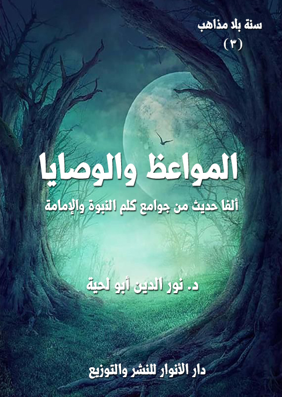

الكتاب: المواعظ والوصايا
الوصف: ألفا حديث من جوامع كلم النبوة والإمامة
السلسلة: سنة بلا مذاهب
المؤلف: د. نور الدين أبو لحية
الناشر: دار الأنوار للنشر والتوزيع
الطبعة: الأولى، 1441 هـ
عدد الصفحات: 475
الكتاب موافق للمطبوع
ISBN: 978-620-3-85881-5
لمطالعة الكتاب من تطبيق مؤلفاتي المجاني وهو أحسن وأيسر: هنا

التعريف بالكتاب
يضم هذا الكتاب ألفي حديث من أحاديث المواعظ والوصايا، والتي يدخل أكثرها فيما أشار إليه رسول الله صلى الله عليه وآله وسلم في قوله: (أعطيت جوامع الكلم، واختصر لي الكلام اختصارا)
وقد دفعنا إلى تخصيصه بهذا الجزء، وبهذا الترتيب، أنا رأينا أن المواعظ والوصايا والأحاديث الواردة بشأنها من أحسن المصادر التي يتحقق بها معنيان، كلاهما وردت بها الشريعة، ودل عليه العقل:
أما الأول؛ فهو دورهما في تحقيق الهداية والصلاح والتقوى، ذلك أنهما يرققان القلوب، ويوفران لها القابلية لتقبل التعاليم الإلهية، ولذلك لا يصح أن تُقدم الفروع عليها، فالفروع لا تنبني إلا على الأصول.
وأما الثاني؛ فدورهما فيما تهدف إليه هذه السلسلة، وهو تحقيق الوحدة الإسلامية، وذلك بسبب اشتمالها على القضايا الكلية والكبرى التي جاءت بها الأديان جميعا دون الخوض في تفاصيل الفروع، والتي يقع الخلاف فيها عادة بين الأديان والمذاهب.
وبناء على هذا كان هذا الكتاب، الذي يشمل مواعظ ووصايا النبوة والإمامة من أحسن المصادر الحديثية التي تجمع الأمة.. ذلك أن الأحاديث الواردة فيه تشكل القواسم المشتركة الكبرى التي تتفق عليها الأمة بمدارسها جميعا.
بل إنها تشكل القواسم الكبرى التي جاء الأنبياء والأديان جميعا لتحقيقها في الواقع، كما أشار الله تعالى إلى ذلك عند ذكره لوصاياه لأنبيائه وللبشرية.
المواعظ والوصايا (7)
يضم هذا الكتاب ألفي حديث من أحاديث المواعظ والوصايا، والتي يدخل أكثرها فيما أشار إليه رسول الله صلى الله عليه وآله وسلم في قوله: (أعطيت جوامع الكلم، واختصر لي الكلام اختصارا) (1)
وقد دفعنا إلى تخصيصه بهذا الجزء، وبهذا الترتيب، بعد بيان منابع الهداية، وما ورد حول الإمامة والامتداد الرسالي، أنا رأينا أن المواعظ والوصايا والأحاديث الواردة بشأنها من أحسن المصادر التي يتحقق بها معنيان، كلاهما وردت به الشريعة، ودل عليه العقل:
أما الأول؛ فهو دورهما في تحقيق الهداية والصلاح والتقوى، ذلك أنهما يرققان القلوب، ويوفران لها القابلية لتقبل التعاليم الإلهية، ولذلك لا يصح أن تُقدم الفروع عليها، فالفروع لا تنبني إلا على الأصول.
وأما الثاني؛ فدورهما فيما تهدف إليه هذه السلسلة، وهو تحقيق الوحدة الإسلامية، وذلك بسبب اشتمالها على القضايا الكلية والكبرى التي جاءت بها الأديان جميعا دون الخوض في تفاصيل الفروع، والتي يقع الخلاف فيها عادة بين الأديان والمذاهب.
فالوصايا والمواعظ ـ مثلا ـ تقتصر على الدعوة للصلاة والخشوع فيها والتأدب بآدابها.. بخلاف أحاديث الفروع الواردة في كيفية أدائها، والتي قد يقع فيها الخلاف.. ولذلك كان تقديم المتفق عليه أولى من تقديم المختلف فيه.
وبناء على هذا كان هذا الكتاب، الذي يشمل مواعظ ووصايا النبوة والإمامة من
__________
(1) رواه أبو يعلى.
المواعظ والوصايا (8)
أحسن المصادر الحديثية التي تجمع الأمة.. ذلك أن الأحاديث الواردة فيه تشكل القواسم المشتركة الكبرى التي تتفق عليها الأمة بمدارسها جميعا.
بل إنها تشكل القواسم الكبرى التي جاء الأنبياء والأديان جميعا لتحقيقها في الواقع، كما أشار الله تعالى إلى ذلك عند ذكره لوصاياه لأنبيائه وللبشرية.
بالإضافة إلى ذلك، فقد كان من دوافعنا لتخصيص المواعظ والوصايا بهذا الجزء ما يلي:
أولا ـ ما ورد في القرآن الكريم من كون الوعظ والوصية من أدوار رسل الله وأئمة الهدى، وأن الامتثال الصادق لنبوتهم وإمامتهم لا يتحقق من دون معرفة ذلك، والعمل به.
ومن الأمثلة على ذلك قوله تعالى عن إبراهيم وذريته عليهم السلام: {وَوَصَّى بِهَا إِبْرَاهِيمُ بَنِيهِ وَيَعْقُوبُ يَابَنِيَّ إِنَّ الله اصْطَفَى لَكُمُ الدِّينَ فَلَا تَمُوتُنَّ إِلَّا وَأَنْتُمْ مُسْلِمُونَ} [البقرة: 132]
وأحيانا ترد الوصية باعتبارها من الله تعالى مباشرة، باعتباره مصدر جميع وصايا الأنبياء وورثتهم، كما قال تعالى: {شَرَعَ لَكُمْ مِنَ الدِّينِ مَا وَصَّى بِهِ نُوحًا وَالَّذِي أَوْحَيْنَا إِلَيْكَ وَمَا وَصَّيْنَا بِهِ إِبْرَاهِيمَ وَمُوسَى وَعِيسَى أَنْ أَقِيمُوا الدِّينَ وَلَا تَتَفَرَّقُوا فِيهِ كَبُرَ عَلَى الْمُشْرِكِينَ مَا تَدْعُوهُمْ إِلَيْهِ الله يَجْتَبِي إِلَيْهِ مَنْ يَشَاءُ وَيَهْدِي إِلَيْهِ مَنْ يُنِيبُ} [الشورى: 13]، وقال على لسان المسيح عليه السلام: {وَأَوْصَانِي بِالصَّلَاةِ وَالزَّكَاةِ مَا دُمْتُ حَيًّا} [مريم: 31]
أو قوله في اعتبار وصايا رسل الله وورثتهم وصايا من الله تعالى مباشرة لعباده: {وَلَقَدْ وَصَّيْنَا الَّذِينَ أُوتُوا الْكِتَابَ مِنْ قَبْلِكُمْ وَإِيَّاكُمْ أَنِ اتَّقُوا الله وَإِنْ تَكْفُرُوا فَإِنَّ لله مَا فِي
المواعظ والوصايا (9)
السَّمَاوَاتِ وَمَا فِي الأرض وَكَانَ الله غَنِيًّا حَمِيدًا} [النساء: 131]، وقوله: {وَوَصَّيْنَا الْإِنْسَانَ بِوَالِدَيْهِ حُسْنًا وَإِنْ جَاهَدَاكَ لِتُشْرِكَ بِي مَا لَيْسَ لَكَ بِهِ عِلْمٌ فَلَا تُطِعْهُمَا إِلَيَّ مَرْجِعُكُمْ فَأُنَبِّئُكُمْ بِمَا كُنْتُمْ تَعْمَلُونَ} [العنكبوت: 8]
وهكذا أخبر عن التواصي، وأنه صفة أساسية من صفات المؤمنين المفلحين، التي تجنبهم الخسارة، قال تعالى: {ثُمَّ كَانَ مِنَ الَّذِينَ آمَنُوا وَتَوَاصَوْا بِالصَّبْرِ وَتَوَاصَوْا بِالْمَرْحَمَةِ (17) أُولَئِكَ أَصْحَابُ الْمَيْمَنَةِ} [البلد: 17، 18]، وقال: {وَالْعَصْرِ (1) إِنَّ الْإِنْسَانَ لَفِي خُسْرٍ (2) إِلَّا الَّذِينَ آمَنُوا وَعَمِلُوا الصَّالِحَاتِ وَتَوَاصَوْا بِالْحَقِّ وَتَوَاصَوْا بِالصَّبْرِ} [العصر: 1 ـ 3]
ومثل ذلك الموعظة، فقد وصف الله تعالى رسالاته إلى عباده أنها مواعظ تهدي إلى الحق، قال تعالى مخبرا عن محتويات التوراة: {وَكَتَبْنَا لَهُ فِي الْأَلْوَاحِ مِنْ كُلِّ شَيْءٍ مَوْعِظَةً وَتَفْصِيلاً لِكُلِّ شَيْءٍ فَخُذْهَا بِقُوَّةٍ وَأْمُرْ قَوْمَكَ يَأْخُذُوا بِأَحْسَنِهَا سَأُرِيكُمْ دَارَ الْفَاسِقِينَ} (لأعراف:145)
وقال في وصف الإنجيل: {وَآتَيْنَاهُ الْأِنْجِيلَ فِيهِ هُدىً وَنُورٌ وَمُصَدِّقاً لِمَا بَيْنَ يَدَيْهِ مِنَ التَّوْرَاةِ وَهُدىً وَمَوْعِظَةً لِلْمُتَّقِينَ} (المائدة:46)
وقال عن القرآن الكريم: {يَا أَيُّهَا النَّاسُ قَدْ جَاءَتْكُمْ مَوْعِظَةٌ مِنْ رَبِّكُمْ وَشِفَاءٌ لِمَا فِي الصُّدُورِ وَهُدىً وَرَحْمَةٌ لِلْمُؤْمِنِينَ} (يونس:57)، وقال: {وَلَقَدْ أَنْزَلْنَا إِلَيْكُمْ آيَاتٍ مُبَيِّنَاتٍ وَمَثَلاً مِنَ الَّذِينَ خَلَوْا مِنْ قَبْلِكُمْ وَمَوْعِظَةً لِلْمُتَّقِينَ} (النور:34)، وقال: {هَذَا بَيَانٌ لِلنَّاسِ وَهُدىً وَمَوْعِظَةٌ لِلْمُتَّقِينَ} (آل عمران:138)
وقد جمع الله تعالى بين الموعظة والوصية، فقال: {وَإِذْ قَالَ لُقْمَانُ لِابْنِهِ وَهُوَ يَعِظُهُ يَابُنَيَّ لَا تُشْرِكْ بِالله إِنَّ الشِّرْكَ لَظُلْمٌ عَظِيمٌ (13) وَوَصَّيْنَا الْإِنْسَانَ بِوَالِدَيْهِ حَمَلَتْهُ أُمُّهُ وَهْنًا
المواعظ والوصايا (10)
عَلَى وَهْنٍ وَفِصَالُهُ فِي عَامَيْنِ أَنِ اشْكُرْ لِي وَلِوَالِدَيْكَ إِلَيَّ الْمَصِيرُ} [لقمان: 13، 14]
وهو ما يشير إلى أن لكليهما دورا تربويا كبيرا، ذلك أن الموعظة تؤهل النفس لقبول الوصية، والانفعال لها، والتأثر بمعناها.
ثانيا ـ أن العقل يدل على أهمية الوصايا وتقديمها على غيرها، باعتبارها تجمع القضايا الكبرى والأساسية التي يحرص الإنسان عادة على ذكرها.. ولذلك كان زبدة التجارب وخلاصتها.
ولهذا دعا القرآن الكريم كل المؤمنين إلى الوصية للوالدين والأقارب ولكل من يشعرون بمسؤوليتهم تجاهه، قال تعالى: {كُتِبَ عَلَيْكُمْ إِذَا حَضَرَ أَحَدَكُمُ الْمَوْتُ إِنْ تَرَكَ خَيْرًا الْوَصِيَّةُ لِلْوَالِدَيْنِ وَالْأَقْرَبِينَ بِالْمَعْرُوفِ حَقًّا عَلَى الْمُتَّقِينَ (180) فَمَنْ بَدَّلَهُ بَعْدَ مَا سَمِعَهُ فَإِنَّمَا إِثْمُهُ عَلَى الَّذِينَ يُبَدِّلُونَهُ إِنَّ الله سَمِيعٌ عَلِيمٌ} [البقرة: 180، 181]
وهكذا نجد القرآن الكريم يكرر ذكر الوصية، والتي لا تقتصر فقط على القضايا المادية، أو ما يرتبط بها، بل تشمل غيرها أيضا.
ثالثا ـ أن العقل يدل على أهمية الموعظة، باعتبارها قرينة للوصية، ومندمجة فيها، حتى أنه يستحيل أحيانا كثيرة التمييز بينهما، ولهذا اعتبرها الله تعالى من أساليب الدعوة الأساسية، قال تعالى: {ادْعُ إِلَى سَبِيلِ رَبِّكَ بِالْحِكْمَةِ وَالْمَوْعِظَةِ الْحَسَنَةِ وَجَادِلْهُمْ بِالَّتِي هِيَ أَحْسَنُ إِنَّ رَبَّكَ هُوَ أَعْلَمُ بِمَنْ ضَلَّ عَنْ سَبِيلِهِ وَهُوَ أَعْلَمُ بِالْمُهْتَدِينَ} [النحل: 125]
وأخبر عن أثر الاستجابة لها، فقال: {وَلَوْ أَنَّهُمْ فَعَلُوا مَا يُوعَظُونَ بِهِ لَكَانَ خَيْرًا لَهُمْ} [النساء: 66]
وأخبر عن أثر الإعراض عنها، فقال يحكي مقالة عادٍ قومِ هود عليه السلام لنبيِّهم: {قَالُوا سَوَاءٌ عَلَيْنَا أَوَعَظْتَ أَمْ لَمْ تَكُنْ مِنَ الْوَاعِظِينَ} [الشعراء: 136]
المواعظ والوصايا (11)
ونحب أن ننبه إلى أنا حاولنا في هذا الجزء عدم التدخل قدر الإمكان، بل الاكتفاء بذكر الأحاديث وتصنيفها وتخليصها من كل ما يتعارض مع القرآن الكريم أو مع الفطرة السليمة دون إشارة إلى ذلك، بل الاكتفاء بذكر المصدر فقط.
وذلك لأن الغرض منه أن يوجه لعموم الناس وخصوصهم، ليكون بمثابة دستور لمن يريد أن يعيش مع النبوة والإمامة وتعاليمها السامية.
وقد رأينا أن خلط تلك التعاليم المقدسة مع غيرها قد يسيء إليها، أو يصرف القارئ عن الاستفادة منها، بالإضافة إلى أنا في سائر أجزاء السلسلة قد نعرض لتلك القضايا، بالتفصيل المرتبط بها.
ومن هذا الباب حاولنا أن نختصر الأحاديث الطويلة التي قد يرغب القارئ عنها عادة، إما بتقسميها إلى مقاطع، يتضمن كل مقطع معنى خاصا به.. أو بتهذيبها من كل النصوص الطويلة التي لا علاقة لها بها مباشرة.
وقد قسمنا الكتاب بحسب نوع الأحاديث الواردة فيه إلى فصلين:
الأول: المواعظ والوصايا الواردة في الأحاديث النبوية، وقد قسمناه ـ بحسب المصادر الحديثية ـ إلى قسمين: المصادر السنية والمصادر الشيعية.
الثاني: مواعظ ووصايا أئمة الهدى، وقد أوردنا فيه ما ورد من الأحاديث عن الإمام علي وسائر أئمة الهدى.
المواعظ والوصايا (12)
المواعظ والوصايا الواردة في الأحاديث النبوية
يتناول هذا الفصل أكثر ما ورد في كتب الحديث ضمن المواعظ والوصايا وجوامع الكلم والحكم وغيرها، وقد اكتفينا بذكرها دون شرحها أو التحقيق فيها لوضوحها، واتفاق الأمة عليها، ولكوننا سنتناول الفروع المرتبطة بها في محالها الخاصة من هذه السلسلة.
وقد قسمناه بحسب المصادر الحديثية الواردة فيه إلى قسمين:
الأول ـ المواعظ والوصايا الواردة في المصادر السنية.
الثاني ـ المواعظ والوصايا الواردة في المصادر الشيعية.
وقد تعمدنا أن نترك بعض الأحاديث المكررة في كلا المصدرين، لبيان اتفاق الأمة على تلك القضايا، وهو ما يعطيها قوة أعظم من تفرقها فيها أو بشأنها.
القسم الأول ـ المواعظ والوصايا الواردة في المصادر السنية
يتناول هذا القسم الأحاديث الواردة في مصادر الحديث السنية، مما نرى موافقته للقرآن الكريم والفطرة السليمة، وقد قسمنا الأحاديث الواردة فيه إلى قسمين:
أولا ـ المواعظ والوصايا المطلقة: وهي التي لم تحدد في أعداد معينة.
ثانيا ـ المواعظ والوصايا المقيدة بالأعداد: وهي التي حددت المواضع المرتبطة بها ضمن أعداد معينة.
وقد دفعنا إلى هذا التقسيم كثرة الأحاديث المقيدة بالأعداد، ولذلك اهتمت المصادر الحديثية السنية بهذا المنهج في التقسيم، مثلما فعل المتقي الهندي (المتوفى: 975 هـ) في كتابه
المواعظ والوصايا (13)
الكبير [كنز العمال]، وغيره ممن اهتم بجمع الأحاديث النبوية.
أولا ـ المواعظ والوصايا المطلقة
وهي أحاديث كثيرة جدا، يصعب تقسيمها إلى مواضع أو أساليب محددة، لكونها تجمع كل المعاني والأساليب، ولكن ـ مع ذلك، ولضرورة التصنيف ـ حاولنا تصنيفها إلى الأقسام التالية:
1 ـ المواعظ والوصايا الواردة بصيغة الترغيب والترهيب
وهي الأحاديث التي تحفز النفوس على السير إلى الله، والتخلق بالأخلاق الحسنة من خلال الحوافز والزواجر الكثيرة، سواء تلك التي ترتبط بالدنيا، أو بالآخرة، ومن تلك الأحاديث:
[الحديث: 1] قال رسول الله صلى الله عليه وآله وسلم: (من خاف أدلج، ومن أدلج بلغ المنزل، ألا إن سلعة الله غاليةٌ، ألا إن سلعة الله الجنة) (1)
[الحديث: 2] دخل النبي صلى الله عليه وآله وسلم على شاب وهو في الموت، فقال: (كيف تجدك)؟ قال: أرجو الله يا رسول الله، وإني أخاف ذنوبي، فقال صلى الله عليه وآله وسلم: (لا يجتمعان في قلب عبد في مثل هذا الموطن إلا أعطاه الله ما يرجو منه، وأمنه مما يخاف) (2)
[الحديث: 3] قال رسول الله صلى الله عليه وآله وسلم: (إن أهل الجنة من لا يموت حتى يملأ الله مسامعه مما يحب، وأهل النار من لا يموت حتى ملأ الله مسامعه مما يكره) (3)
[الحديث: 4] قال رسول الله صلى الله عليه وآله وسلم: (أهل النار كل شديد قبعثري، قيل: يا رسول الله!
__________
(1) الترمذي (2450) وقال: حسن غريب.
(2) الترمذي (983) وقال: حسن غريب.
(3) رواه سمويه والحاكم.
المواعظ والوصايا (14)
من القبعثري؟ قال: الشديد على الأهل الشديد على الصاحب، الشديد على العشيرة؛ وأهل الجنة كل ضعيف مزهد) (1)
[الحديث: 5] قال رسول الله صلى الله عليه وآله وسلم: (أهل النار كل جعظري (2) جواظ (3) مستكبر جماع مناع، وأهل الجنة الضعفاء المغلوبون) (4)
[الحديث: 6] قال رسول الله صلى الله عليه وآله وسلم: (ألا أخبركم بأهل النار؟ كل جعظري جواظ مستكبر جماع منوع، ألا أخبركم بأهل الجنة؟ كل مسكين لو أقسم على الله لأبره) (5)
[الحديث: 7] قال رسول الله صلى الله عليه وآله وسلم: (ألا أدلكم على أهل الجنة؟ الضعفاء المتظلمون.. ألا أدلكم على أهل النار؟ كل شديد جعظري) (6)
[الحديث: 8] قال رسول الله صلى الله عليه وآله وسلم: (يا سراقة بن مالك! ألا أخبرك بأهل الجنة وأهل النار؟ أهل الجنة من ملئت مسامعه من الثناء الحسن وهو يسمع، وأهل النار من ملئت مسامعه من الثناء السييء وهو يسمع) (7)
[الحديث: 9] قال رسول الله صلى الله عليه وآله وسلم: (خيار أمتي من دعا إلى الله تعالى وحبب عباده إليه وشرار أمتي التجار من كثرت أيمانه وإن كان صادقا) (8)
[الحديث: 10] قال رسول الله صلى الله عليه وآله وسلم: (أكثر ما يدخل الناس الجنة تقوى الله وحسن الخلق، وأكثر ما يدخل الناس النار الأجوفان: الفم والفرج) (9)
__________
(1) رواه الشيرازي في الألقاب، والديلمي.
(2) جعظري: الجعظري: الفظ الغليظ أو الأكول الغليظ والقصير المتنفخ بما ليس عنده. القاموس 1/ 391.
(3) الجواظ: الضخم المختال في مشيته. الصحاح للجوهري 3/ 1171.
(4) رواه أحمد والحاكم.
(5) رواه الطبراني في الكبير.
(6) رواه أحمد.
(7) رواه ابن المبارك.
(8) رواه ابن النجار.
(9) رواه أحمد، في الأدب، والترمذي والحاكم والبيهقي.
المواعظ والوصايا (15)
[الحديث: 11] قال رسول الله صلى الله عليه وآله وسلم: (إن المعروف والمنكر خليقتان ينصبان للناس يوم القيامة، فأما المعروف فيقول لأصحابه: إليكم إليكم! وما يستطيعون له إلا لزوما) (1)
[الحديث: 12] قال رسول الله صلى الله عليه وآله وسلم: (والذي نفسي بيده! إن المعروف والمنكر خليقتان ينصبان للناس يوم القيامة، فأما المعروف فيبشر أصحابه ويعدهم الخير وأما المنكر فيقول: إليكم إليكم! وما يستطيعون له إلا لزوما) (2)
[الحديث: 13] قال رسول الله صلى الله عليه وآله وسلم: (ألا أخبركم بخيركم من شركم! خيركم من يرجى خيره ويؤمن شره، وشركم من لا يرجى خيره ولا يؤمن شره) (3)
[الحديث: 14] قال رسول الله صلى الله عليه وآله وسلم: (قولوا خيرا، قولوا: سبحان الله وبحمده، فبالواحدة عشرة، وبالعشرة مائة، وبالمائة ألف، ومن زاد زاده الله، ومن استغفر غفر الله له، ومن حالت شفاعته دون حد من حدود الله فقد ضاد الله في ملكه، ومن أعان على خصومة من غير علم كان في سخط الله حتى ينزع، ومن بهت مؤمنا أو مؤمنة حبسه الله في ردغة الخبال حتى يأتي بالمخرج مما قال، ومن مات وعليه دين أخذ من حسناته، ليس ثم دينار ولا درهم، حافظوا على ركعتي الفجر فإن فيهما رغب الدهر) (4)
[الحديث: 15] قال رسول الله صلى الله عليه وآله وسلم: (ما لكم لا تتكلمون؟ من قال: سبحان الله وبحمده كتب الله له عشر حسنات، ومن قالها عشرا كتب الله له مائة حسنة، ومن قالها مائة مرة كتب الله له ألف حسنة، ومن زاد زاده الله، ومن استغفر غفر الله له، ومن حالت شفاعته دون حد من حدود الله فقد ضاد الله في حكمه، ومن اتهم بريئا صيره الله إلى طينة الخبال
__________
(1) رواه ابن أبي الدنيا في قضاء الحوائج.
(2) رواه أحمد.
(3) رواه أحمد والترمذي.
(4) رواه الخطيب.
المواعظ والوصايا (16)
حتى يأتي بالمخرج مما قال، ومن انتفى من ولده فيفضحه به في الدنيا فضحه الله على رؤس الخلائق يوم القيامة) (1)
[الحديث: 16] قال رسول الله صلى الله عليه وآله وسلم: (من كان يؤمن بالله واليوم الآخر فليكرم ضيفه، ومن كان يؤمن بالله واليوم الآخر فليكرم جاره، ومن كان يؤمن بالله واليوم الآخر فلا يدخل الحمام إلا بمئزر، ومن كان يؤمن بالله واليوم الآخر من نسائكم فلا يدخلن الحمام) (2)
[الحديث: 17] قال رسول الله صلى الله عليه وآله وسلم: (خيار أمتي من شهد أن لا إله إلا الله وحده لا شريك له، وأن محمدا عبده ورسوله، والذين إذا أحسنوا استبشروا وإذا أساؤا استغفروا، وإذا سافروا قصروا وأفطروا، وشرار أمتي الذين ولدوا في النعيم وغذوا به همتهم ـ أو قال: نهمتهم ـ لين الثياب وطيب الطعام والتشدق في الكلام) (3)
[الحديث: 18] قال رسول الله صلى الله عليه وآله وسلم: (وجدت الحسنة نورا في القلب، وزينا في الوجه، وقوة في العمل، ووجدت الخطيئة سوادا في القلب، ووهنا في العمل، وشينا في الوجه) (4)
[الحديث: 19] قال رسول الله صلى الله عليه وآله وسلم: (إني أرى ما لا ترون، وأسمع ما لا تسمعون، أطت السماء وحق لها أن تئط، ما فيها موضع أربع أصابع إلا وملك واضعٌ جبهته لله ساجدا، والله لو تعلمون ما أعلم لضحكتم قليلا ولبكيتم كثيرا، وما تلذذتم بالنساء على الفرش، ولخرجتم إلى الصعدات تجأرون إلى الله، لوددت أني شجرةٌ تعضد) (5)
[الحديث: 20] عن حنظلة بن الربيع الأسيدى قال: لقيني أبو بكر، فقال: كيف أنت يا حنظلة؟ قلت: نافق حنظلة، قال: سبحان الله ما تقول؟ قلت: نكون عند النبي صلى الله عليه وآله وسلم
__________
(1) رواه ابن صصري في أماليه.
(2) رواه أبو يعلى والبيهقي والطبراني في الكبير والحاكم.
(3) رواه الطبراني في الكبير.
(4) رواه أبو نعيم في الحلية.
(5) الترمذي (2312) وقال: حسن غريب.
المواعظ والوصايا (17)
يذكرنا بالنار والجنة كأنا رأي عين، وإذا خرجنا من عنده عافسنا الأزواج والأولاد والضيعات، ونسينا كثيرا، قال أبو بكر: فوالله إنا لنلقى مثل ذلك، فانطلقت أنا وأبو بكر حتى دخلنا على النبي صلى الله عليه وآله وسلم، فقلت: نافق حنظلة يا رسول الله، فقال: (وما ذاك؟) قلت: نكون عندك تذكرنا بالنار والجنة كأنا رأى عين، فإذا خرجنا من عندك عافسنا الأزواج والأولاد والضيعات ونسينا كثيرا، فقال صلى الله عليه وآله وسلم: (والذي نفسي بيده لو تدومون على ما تكونون عندي وفي الذكر لصافحتكم الملائكة على فرشكم وفي طرقكم، ولكن يا حنظلة، ساعةٌ وساعة) ثلاث مرات (1).
[الحديث: 21] كان النبي صلى الله عليه وآله وسلم إذا ذهب ثلثا الليل قام فقال: (يا أيها الناس، اذكروا الله، اذكروا الله، جاءت الراجفة تتبعها الرادفة، جاء الموت بما فيه) (2)
[الحديث: 22] قال رسول الله صلى الله عليه وآله وسلم: (بئس العبد عبدٌ تخيل واختال ونسي الكبير المتعال، بئس العبد عبدٌ تجبر واعتدى ونسى الجبار الأعلى، بئس العبد عبدٌ سهى ولهى ونسى المقابر والبلى، بئس العبد عبدٌ عتا وطغى ونسى المبتدأ والمنتهى، بئس العبد عبدٌ يختل الدين بالشهوات، بئس العبد عبدٌ طمع يقوده، بئس العبد عبدٌ هوى يضله، بئس العبد عبدٌ رغب يذله) (3)
[الحديث: 23] قال رسول الله صلى الله عليه وآله وسلم: (من كانت الآخرة همه، جعل الله غناه في قلبه وجمع عليه شمله وأتته الدنيا وهي راغمةٌ، ومن كانت الدنيا همه جعل الله فقره بين عينيه وفرق عليه شمله ولم يأته من الدنيا إلا ما قدر له؛ فلا يمسي إلا فقيرا ولا يصبح إلا فقيرا،
__________
(1) مسلم (2750) والترمذي (2514)
(2) الترمذي (2457)، وقال: حسن صحيح.
(3) الترمذي (2448)
المواعظ والوصايا (18)
وما أقبل عبدٌ على الله بقلبه، إلا جعل الله قلوب المؤمنين تنقاد إليه بالود والرحمة، وكان الله بكل خير إليه أسرع) (1)
[الحديث: 24] قال رسول الله صلى الله عليه وآله وسلم: (يقول الله تعالى: ابن آدم تفرغ لعبادتي أملأ صدرك غنى وأسد فقرك، وإلا تفعل ملأت يديك شغلا ولم أسد فقرك) (2)
[الحديث: 25] قال رسول الله صلى الله عليه وآله وسلم: (الكيس من دان نفسه وعمل لما بعد الموت، والعاجز من أتبع نفسه هواها وتمنى على الله) (3)
[الحديث: 26] قال رسول الله صلى الله عليه وآله وسلم: (بادروا بالأعمال سبعا، هل تنتظرون إلا فقرا منسيا أو غنى مطغيا أو مرضا مفسدا أو هرما مفندا أو موتا مجهزا أو الدجال، فشر غائب ينتظر، أو الساعة والساعة أدهى وأمر، وأكثروا من ذكر هاذم اللذات) (4)
[الحديث: 27] قال رسول الله صلى الله عليه وآله وسلم: (ما رأيت مثل النار نام هاربها، ولا مثل الجنة نام طالبها!) (5)
[الحديث: 28] قال رسول الله صلى الله عليه وآله وسلم: (لو أن رجلا يجر على وجهه من يوم ولد إلى يوم يموت في مرضاة الله تعالى، لحقره يوم القيامة) (6)
[الحديث: 29] قال رسول الله صلى الله عليه وآله وسلم: (بادروا بالأعمال هرما ناغضا، وموتا خالسا، ومرضا حابسا، وتسويفا مؤيسا) (7)
[الحديث: 30] قال رسول الله صلى الله عليه وآله وسلم: (من اشتاق إلى الجنة سارع إلى الخيرات، ومن
__________
(1) الترمذي (2465)، وقال: حديث صحيح.
(2) الترمذي (2466) وقال: حسن غريب.
(3) الترمذي (2459)، وقال: حسن.
(4) الترمذي (2306)
(5) الترمذي (2601)
(6) أحمد (4/ 185)
(7) رواه البيهقي في شعب الايمان.
المواعظ والوصايا (19)
أشفق من النار لهى عن الشهوات، ومن ترقب الموت هانت عليه اللذات، ومن زهد في الدنيا هانت عليه المصيبات) (1)
[الحديث: 31] قال رسول الله صلى الله عليه وآله وسلم: (البر لا يبلى، والذنب لا ينسى، والديان لا يموت، اعمل ما شئت، كما تدين تدان) (2)
[الحديث: 32] قال رسول الله صلى الله عليه وآله وسلم: (تحفظوا من الأرض، فإنها أمكم، وإنه ليس من أحد عامل عليها خيرا أو شرا إلا وهي مخبرة به) (3)
[الحديث: 33] قال رسول الله صلى الله عليه وآله وسلم: (قال داود: يازارع السيئات! أنت تحصد شوكها وحسكها) (4)
[الحديث: 34] قال رسول الله صلى الله عليه وآله وسلم: (كما لا يجتنى من الشوك العنب كذلك لا ينزل الفجار منازل الأبرار، وهما طريقان، فأيهما أخذتم أدركتم إليه) (5)
[الحديث: 35] قال رسول الله صلى الله عليه وآله وسلم: (كما لا يجتنى من الشوك العنب كذلك لا ينزل الفجار منازل الأبرار، فاسلكوا أي طريق شئتم، فأي طريق سلكتم وردتم على أهله) (6)
[الحديث: 36] قال رسول الله صلى الله عليه وآله وسلم: (من شدد سلطانه بمعصية الله أوهن الله كيده يوم القيامة) (7)
[الحديث: 37] قال رسول الله صلى الله عليه وآله وسلم: (إن الله تعالى يبغض كل جعظري جواظ سخاب في الأسواق، جيفة بالليل، حمار بالنهار، عالم بالدنيا، جاهل بالآخرة) (8)
__________
(1) رواه البيهقي في شعب الايمان.
(2) رواه عبد الرزاق في المصنف.
(3) رواه الطبراني في الكبير.
(4) رواه ابن عساكر.
(5) رواه ابن عساكر.
(6) رواه أبو نعيم في الحلية.
(7) رواه أحمد.
(8) رواه البيهقي.
المواعظ والوصايا (20)
[الحديث: 38] قال رسول الله صلى الله عليه وآله وسلم: (إن الجنة لا تحل لعاص) (1)
[الحديث: 39] قال رسول الله صلى الله عليه وآله وسلم: (إن المرد إلى الله، إلى جنة أو نار، خلود بلا موت وإقامة بلا ظعن) (2)
[الحديث: 40] قال رسول الله صلى الله عليه وآله وسلم: (ليس من ليلة إلا والبحر يشرف فيها ثلاث مرات يستأذن الله تعالى في أن ينفضح عليكم فيكفه الله عز وجل) (3)
[الحديث: 41] قال رسول الله صلى الله عليه وآله وسلم: (إنه ليأتي الرجل العظيم السمين يوم القيامة لا يزن عند الله جناح بعوضة) (4)
[الحديث: 42] قال رسول الله صلى الله عليه وآله وسلم: (لأعلمن أقواما من أمتي يأتون يوم القيامة بحسنات أمثال جبال تهامة بيضاء، فيجعلها الله هباء منثورا، أما إنهم إخوانكم من أهل جلدتكم ويأخذون من الليل كما تأخذون ولكنهم قوم إذا خلوا بمحارم الله انتهكوها) (5)
[الحديث: 43] قال رسول الله صلى الله عليه وآله وسلم: (لتدخلن الجنة إلا من أبى وشرد على الله كشراد البعير) (6)
[الحديث: 44] قال رسول الله صلى الله عليه وآله وسلم: (إن بين أيديكم عقبة كؤوداء مضرسة، لا يجوزها إلا كل ضامر مهزل) (7)
[الحديث: 45] قال رسول الله صلى الله عليه وآله وسلم: (لا يدخل النار إلا شقي، من لم يعمل بطاعة الله ولم يترك له معصية) (8)
__________
(1) رواه أحمد، والحاكم.
(2) رواه الطبراني في الكبير.
(3) رواه أحمد.
(4) رواه البخاري ومسلم.
(5) رواه ابن ماجة.
(6) رواه الحاكم.
(7) رواه ابن عساكر.
(8) رواه أحمد وابن ماجة.
المواعظ والوصايا (21)
[الحديث: 46] قال رسول الله صلى الله عليه وآله وسلم: (عذبت امرأة في هر ربطته حتى مات ولم ترسله فيأكل من خشاش الأرض، فوجبت لها النار بذلك) (1)
[الحديث: 47] قال رسول الله صلى الله عليه وآله وسلم: (عذبت امرأة في هرة حبستها حتى ماتت جوعا فدخلت فيها النار، قال الله: لا أنت أطعمتها ولا سقيتها حين حبستها، ولا أنت أرسلتها فأكلت من خشاش الأرض) (2)
[الحديث: 48] قال رسول الله صلى الله عليه وآله وسلم: (يا صفية بنت عبد المطلب! يا فاطمة بنت محمد! يا بني عبد المطلب! إني لا أملك لكم من الله شيئا، سلوني من مالي ما شئتم) (3)
[الحديث: 49] قال رسول الله صلى الله عليه وآله وسلم: (يا معشر قريش! اشتروا أنفسكم من الله، لا أغني عنكم من الله شيئا، يا بني عبد مناف اشتروا أنفسكم من الله، لا أغني عنكم من الله شيئا، يا عباس بن عبد المطلب! لا أغني عنك من الله شيئا، يا صفية عمة رسول الله! لا أغني عنك من الله شيئا، يا فاطمة بنت محمد! سليني من مالي ما شئت، لا أغني عنك من الله شيئا) (4)
[الحديث: 50] قال رسول الله صلى الله عليه وآله وسلم: (يا معشر قريش! أنقذوا أنفسكم من النار، فإني لا أملك لكم من الله ضرا ولا نفعا، يا معشر بني عبد مناف! أنقذوا أنفسكم من النار، فإني لا أملك لكم من الله ضرا ولا نفعا، يا معشر بني قصي! أنقذوا أنفسكم من النار، فإني لا أملك لكم من الله ضرا ولا نفعا، يا معشر بني عبد المطلب! أنقذوا أنفسكم من النار، فإني لا أملك لكم ضرا ولا نفعا، يا فاطمة بنت محمد! أنقذي نفسك من النار، فإني لا أملك لك
__________
(1) رواه أحمد.
(2) رواه أحمد.
(3) رواه الترمذي.
(4) رواه البخاري ومسلم.
المواعظ والوصايا (22)
ضرا ولا نفعا، إن لك رحما وسأبلها ببلاها) (1)
[الحديث: 51] قال رسول الله صلى الله عليه وآله وسلم: (من آذى مسلما فقد آذاني، ومن آذاني فقد آذى الله) (2)
[الحديث: 52] قال رسول الله صلى الله عليه وآله وسلم: (من أخاف مؤمنا كان حقا على الله أن لا يؤمنه من افزاع يوم القيامة) (3)
[الحديث: 53] قال رسول الله صلى الله عليه وآله وسلم: (من أرضى الناس بسخط الله وكله الله إلى الناس، ومن أسخط الناس برضا الله كفاه الله مؤنة الناس) (4)
[الحديث: 54] قال رسول الله صلى الله عليه وآله وسلم: (من أصبح وهمه غير الله فليس من الله، ومن أصبح لا يهتم بالمسلمين فليس منهم) (5)
[الحديث: 55] قال رسول الله صلى الله عليه وآله وسلم: (من ضار ضر الله به، ومن شاق شق الله عليه) (6)
[الحديث: 56] قال رسول الله صلى الله عليه وآله وسلم: (من كان يؤمن بالله واليوم الآخر فلا يروعن مسلما) (7)
[الحديث: 57] قال رسول الله صلى الله عليه وآله وسلم: (لا تروعوا المسلم، فإن روعة المسلم ظلم عظيم) (8)
__________
(1) رواه أحمد والترمذي.
(2) رواه الطبراني في الكبير.
(3) رواه الطبراني في الأوسط.
(4) رواه الترمذي.
(5) رواه الحاكم.
(6) رواه أحمد.
(7) رواه الطبراني في الكبير.
(8) رواه الطبراني في الكبير.
المواعظ والوصايا (23)
[الحديث: 58] قال رسول الله صلى الله عليه وآله وسلم: (لا يحل لمسلم أن يروع مسلما) (1)
[الحديث: 59] قال رسول الله صلى الله عليه وآله وسلم: (من نظر إلى مسلم نظرة يخيفه بها في غير حق الله أخافه الله يوم القيامة) (2)
[الحديث: 60] قال رسول الله صلى الله عليه وآله وسلم: (بئس القوم يمشي المؤمن فيهم بالتقية والكتمان) (3)
[الحديث: 61] قال رسول الله صلى الله عليه وآله وسلم: (من يعمل سوء يجز به في الدنيا) (4)
[الحديث: 62] قال رسول الله صلى الله عليه وآله وسلم: (اجتنبوا هذه القاذورات التي نهى الله عنها، فمن ألم بشيء منها فليستتر بستر الله تعالى، ولا يعد) (5)
[الحديث: 63] قال رسول الله صلى الله عليه وآله وسلم: (إن الله غافر إلا من شرد على الله شراد البعير على أهله) (6)
[الحديث: 64] قال رسول الله صلى الله عليه وآله وسلم: (لا يدخل النار إلا شقي: قيل يا رسول الله! ومن الشقي؟ قال: من لم يعمل بطاعة الله ومن لم يترك له معصية) (7)
[الحديث: 65] قال رسول الله صلى الله عليه وآله وسلم: (إن الله تعالى ليعير العبد يوم القيامة حتى يقول له جيرانه وأقاربه ومن عرف من الدنيا: يا لك من آدمي! عليك لعنة الله! أبكل هذا بارزت الله وقد أظهرت في الدنيا علانية حسنة) (8)
[الحديث: 66] قال رسول الله صلى الله عليه وآله وسلم: (إن الله تعالى يمسخ خلقا كثيرا، وإن الإنسان
__________
(1) رواه أحمد.
(2) رواه الطبراني في الكبير.
(3) رواه الديلمي في مسند الفردوس.
(4) رواه الحاكم.
(5) رواه الديلمي.
(6) رواه أحمد والحاكم.
(7) رواه أحمد.
(8) رواه ابن النجار.
المواعظ والوصايا (24)
يخلو بمعصية فيقول الله تعالى: استهانة بي! فيمسخه، ثم يبعثه يوم القيامة إنسانا يقول: كما بدأناكم تعودون، ثم يدخله النار) (1)
[الحديث: 67] قال رسول الله صلى الله عليه وآله وسلم: (إن شر الناس من يتقى لشره) (2)
[الحديث: 68] قال رسول الله صلى الله عليه وآله وسلم: (أوحى الله تعالى إلى موسى أن قومك بنوا مساجدهم وخربوا قلوبهم، وتسمنوا كما تسمن الخنازير يوم ذبحها، وإني نظرت إليهم فلعنتهم، فلا أستجيب لهم ولا أعطيهم مسألتهم) (3)
[الحديث: 69] قال رسول الله صلى الله عليه وآله وسلم: (البر لا يبلى، والذنب لا ينسى، والديان لا يموت، فكن كما شئت فكما تدين تدان) (4)
[الحديث: 70] قال رسول الله صلى الله عليه وآله وسلم: (المكر والخيانة والخديعة في النار، ومن الخيانة أن يكتم الرجل أخاه ما لو علم كان عسى أن يدرك به خيرا أو ينجو به من سوء)، قيل: يا رسول الله! أيظهر أحدنا لأخيه ما في نفسه؟ قال: (إلا مالا يضره ولا ينفعه) (5)
[الحديث: 71] قال رسول الله صلى الله عليه وآله وسلم: (من تحبب إلى الناس بما تحبون وبارز الله بما يكره لقي الله يوم القيامة وهو عليه غضبان) (6)
[الحديث: 72] قال رسول الله صلى الله عليه وآله وسلم: (من ركب فرسا ثم استعرض أمتي بقتلهم بسيفه خرج من الإسلام) (7)
[الحديث: 73] قال رسول الله صلى الله عليه وآله وسلم: (من منع بباطله حقا فقد برئت منه ذمة الله وذمة
__________
(1) رواه البخاري في الضعفاء.
(2) رواه ابن عساكر.
(3) رواه ابن منده والديلمي.
(4) رواه ابن عدي، والديلمي.
(5) رواه البغوي.
(6) رواه الطبراني في الكبير.
(7) رواه ابن عساكر.
المواعظ والوصايا (25)
رسوله) (1)
[الحديث: 74] قال رسول الله صلى الله عليه وآله وسلم: (لا تؤذوا عباد الله، ولا تعيروهم، ولا تطلبوا عوراتهم، فإنه من طلب عورة أخيه المسلم طلب الله عورته حتى يفضحه في بيته) (2)
[الحديث: 75] قال رسول الله صلى الله عليه وآله وسلم: (لا تدخلوا مساكن الذين ظلموا أنفسهم إلا أن تكونوا باكين حذرا أن يصيبكم مثل ما أصابهم) (3)
[الحديث: 76] قال رسول الله صلى الله عليه وآله وسلم: (يقول الله عز وجل: لأقطعن أمل كل مؤمل دوني بالإياس، ولألبسنه ثوب المذلة بين الناس، ولأنحينه من قربي، ولأبعدنه من وصلي، أيؤمل عبدي غيري في الشدائد والشدائد بيدي وأنا الحي الكريم! ويرجو غيري وبيدي مفاتيح الأبواب وبابي مفتوح لمن دعاني! من ذا الذي أملني لعظيم نوائبه فقطعت به دونها! أم من ذا الذي رجاني لعظيم جرمه فقطعت رجاؤه مني، جعلت آمال عبادي متصلة بي، وملأت سماواتي من لا يمل تسبيحي فيا بؤسا للقانطين من رحمتي! ويا شقوة لمن عصاني ولم يراقبني) (4)
[الحديث: 77] قال رسول الله صلى الله عليه وآله وسلم: (ما رأيت مثل النار نام هاربها، ولا مثل الجنة نام طالبها) (5)
[الحديث: 78] قال رسول الله صلى الله عليه وآله وسلم: (الجنة أقرب إلى أحدكم من شراك نعله والنار مثل ذلك) (6)
[الحديث: 79] قال رسول الله صلى الله عليه وآله وسلم: (إن الله تعالى يباهى بالشاب العابد الملائكة،
__________
(1) رواه الخرائطي في مساوئ الأخلاق.
(2) رواه أحمد.
(3) رواه عبد الرزاق في المصنف.
(4) رواه الديلمي.
(5) رواه الترمذي.
(6) رواه البخاري.
المواعظ والوصايا (26)
يقول: انظروا إلى عبدي! ترك شهوته من أجلي) (1)
[الحديث: 80] قال رسول الله صلى الله عليه وآله وسلم: (قال ربكم تعالى: لو أن عبادي أطاعوني لاسقيتهم المطر بالليل، ولاطلعت عليهم الشمس بالنهار، ولما أسمعتهم صوت الرعد) (2)
[الحديث: 81] قال رسول الله صلى الله عليه وآله وسلم: (قال الله تعالى: أعددت لعبادي الصالحين ما لا عين رأيت ولا أذن سمعت ولا خطر على قلب بشر) (3)
[الحديث: 82] قال رسول الله صلى الله عليه وآله وسلم: (من دعا إلى هدى كان له من الأجر مثل أجور من تبعه لا ينقص ذلك من أجورهم شيئا، ومن دعا إلى ضلالة كان عليه من الاثم مثل آثام من تبعه لا ينقص ذلك من آثامهم شيئا) (4)
[الحديث: 83] قال رسول الله صلى الله عليه وآله وسلم: (من سن في الاسلام سنة حسنة فله أجرها وأجر من عمل بها من بعده من غير أن ينقص من أجورهم شئ، ومن سن في الاسلام سنة سيئة فعليه وزرها ووزر من عمل بها من بعده من غير أن ينقص من أوزارهم شئ) (5)
[الحديث: 84] قال رسول الله صلى الله عليه وآله وسلم: (من موجبات المغفرة إطعام المسلم السغبان) (6)
[الحديث: 85] قال رسول الله صلى الله عليه وآله وسلم: (من اغبرت قدماه في سبيل الله حرمه الله تعالى على النار) (7)
[الحديث: 86] قال رسول الله صلى الله عليه وآله وسلم: (يقول الله عزوجل: الشاب المؤمن بقدري، الراضي بكتابي، القانع برزقي، التارك لشهوته من أجلي، هو عندي كبعض ملائكتي) (8)
__________
(1) رواه ابن السني.
(2) رواه أحمد والحاكم.
(3) رواه البخاري ومسلم.
(4) رواه مسلم.
(5) رواه مسلم وغيره.
(6) رواه الحاكم.
(7) رواه البخاري وغيره.
(8) رواه الديلمي.
المواعظ والوصايا (27)
[الحديث: 87] قال رسول الله صلى الله عليه وآله وسلم: (لا يقدر رجل على حرام ثم يدعه ليس به إلا مخافة الله إلا أبدله الله في عاجل الدنيا قبل الآخرة ما هو خير له من ذلك) (1)
[الحديث: 88] قال رسول الله صلى الله عليه وآله وسلم: (حيثما كنتم فأحسنوا عبادة الله وأبشروا بالجنة) (2)
[الحديث: 89] قال رسول الله صلى الله عليه وآله وسلم: (من أطعم مريضا شهوته أطعمه الله من ثمار الجنة، ومن سقى مؤمنا على ظمأ سقاه الله من الرحيق المختوم يوم القيامة) (3)
[الحديث: 90] قال رسول الله صلى الله عليه وآله وسلم: (يا حذيفة! تدري ما حق الله على العباد؟ يعبدونه لا يشركون به شيئا، يا حذيفة! تدري ما حق العباد على الله؟ إذا فعلوا ذلك يغفر لهم) (4)
[الحديث: 91] قال رسول الله صلى الله عليه وآله وسلم: (يا يزيد بن أسيد! أتحب الجنة؟ فأحب لأخيك ما تحب لنفسك) (5)
[الحديث: 92] قال رسول الله صلى الله عليه وآله وسلم: (ما من يوم طلعت شمسه إلا يقول: من استطاع أن يعمل في خيرا فليعمله فاني غير مكر عليكم أبدا، وما من يوم إلا وينادي مناديان من السماء يقول أحدهما: يا طالب الخير أبشر! ويا طالب الشر أقصر! ويقول أحدهما: اللهم أعط منفقا مالا خلفا، ويقول الآخر: اللهم أعط ممسكا مالا تلفا) (6)
[الحديث: 93] قال رسول الله صلى الله عليه وآله وسلم: (مثلكم أيتها الأمة كمثل عسكر قد سار أولهم ونودي بالرحيل، فما أسرع ما يلحق آخرهم بأولهم! والله لا الدنيا في الآخرة إلا كنفحة
__________
(1) رواه ابن جرير عن قتادة مرسلا.
(2) رواه البخاري ومسلم.
(3) رواه أبو الشيخ، وأبو نعيم في الحلية.
(4) رواه النسائي.
(5) رواه الحاكم.
(6) رواه البيهقي.
المواعظ والوصايا (28)
أرنب، الحد الحد عباد الله! واستيعنوا بالله ربكم) (1)
[الحديث: 94] قال رسول الله صلى الله عليه وآله وسلم: (من أصلح فيما بينه وبين الله أصلح الله فيما بينه وبين الناس، ومن أصلح جوانيه أصلح الله برانيه، ومن أراد وجه الله أناله الله وجهه ووجوه الناس، ومن أراد وجوه الخلق منعه ألله وجهه ووجوه الخلق) (2)
[الحديث: 95] قال رسول الله صلى الله عليه وآله وسلم: (يا علي! ما من أهل بيت كانوا حبرة إلا استتبعهم بعد ذلك عبرة، يا علي! كل نعيم يزول إلا نعيم أهل الجنة، وكل هم منقطع إلا هم أهل النار، يا علي! عليك بالصدق، فان ضرك في العاجل كان فرجا لك في الآجل) (3)
[الحديث: 96] قال رسول الله صلى الله عليه وآله وسلم: (يقول الله تعالى: يا ابن آدم! ما تنصفني، أتحبب إليك بالنعيم وتتمقت إلي بالمعاصي، خيري إليك منزل وشرك إلى صاعد، ولا يزال ملك كريم يأتيني عنك كل يوم وليلة بعمل قبيح، يا ابن آدم! لو سمعت وصفك من غيرك وأنت لا تعلم من الموصوف لسارعت إلى مقته) (4)
2 ـ المواعظ والوصايا الواردة في الخطب النبوية
وهي عادة تجمع الكثير من المواضيع في محل واحد، وتمزج بين الترغيب والترهيب، في نفس الوقت الذي تركز فيه على القضايا الكبرى والمهمة، ومن الأحاديث الواردة في هذا:
[الحديث: 97] قال رسول الله صلى الله عليه وآله وسلم في بعض خطبه: (إن الحمد لله، أحمده وأستعينه، نعوذ بالله من شرور أنفسنا وسيئات أعمالنا، من يهده الله فلا مضل له، ومن يضلل فلا هادي
__________
(1) رواه ابن السني والديلمي عن عمر.
(2) رواه الديلمي.
(3) رواه ابن أبي الدنيا وابن عساكر.
(4) رواه الديلمي والرافعي عن علي.
المواعظ والوصايا (29)
له، وأشهد أن لا إله إلا الله وحده لا شريك له؛ إن أحسن الحديث كتاب الله قد أفلح من زينه الله في قلبه وأدخله في الإسلام بعد الكفر، واختاره على ما سواه من أحاديث الناس إنه أحسن الحديث وأبلغه، أحبوا من أحب الله، أحبوا الله من كل قلوبكم، ولا تملوا كلام الله وذكره، ولا يقسى قلوبكم، فقد سماه الله خيرته من الأعمال والصالح من الحديث وعلى كل ما آوى الناس من الحلال والحرام، فاعبدوا الله ولا تشركوا به شيئا. واتقوه حق تقاته. واصدقوا الله صالح ما تقولون بأفواهكم، وتحابوا بروح الله عز وجل بينكم، إن الله يغضب أن ينكث عبده والسلام عليكم ورحمة الله) (1)
[الحديث: 98] عن البراء بن عازب قال: خطبنا رسول الله صلى الله عليه وآله وسلم حتى أسمع العواتق في الخدور ينادي بأعلى صوته: (يا معشر من آمن بلسانه ولم يخلص الإيمان إلى قلبه! لا تغتابوا المسلمين ولا تتبعوا عوراتهم، فإن من يتبع عورة أخيه المسلم يتبع الله عورته، ومن يتبع الله عورته يفضحه في جوف بيته) (2)
[الحديث: 99] عن الإمام علي قال: رأيت رسول الله صلى الله عليه وآله وسلم خطيبا على أصحابه فقال: (يا أيها الناس! كأن الموت على غيرنا فيها كتب، وكأن الحق على غيرنا وجب، وكأن الذي يشيع من الأموات سفر عما قليل إلينا راجعون، نأويهم أجداثهم وتأكل تراثهم كانا مخلدون، قد نسينا كل واعظة وأمنا كل جائحة، طوبى لمن شغله عيبه عن عيوب الناس! طوبى لمن طاب كسبه، وصلحت سريرته، وحسنت علانيته، واستقامت طريقته! طوبى لمن تواضع لله من غير منقصة، وأنفق مالا جمعه في غير معصية، وخالط أهل الفقه والحكمة، ورحم الله أهل الذل والمسكنة! طوبى لمن أنفق الفضل من ماله، وأمسك الفضل من قوله،
__________
(1) رواه هناد.
(2) رواه البيهقي في شعب الإيمان.
المواعظ والوصايا (30)
ووسعته السنة ولم يعد عنها إلى بدعة، ثم نزل) (1)
[الحديث: 100] عن ابن عباس قال: خطبنا رسول الله صلى الله عليه وآله وسلم في مسجد الخيف فحمد الله وذكره بما هو أهله ثم قال: (من كانت الآخرة همه جمع الله شمله وجعل غناه بين عينيه وأتته الدنيا وهي راغمة، ومن كانت الدنيا همه فرق الله شمله وجعل فقره بين عينيه، ولم يأته من الدنيا إلا ما كتب له) (2)
[الحديث: 101] قال رسول الله صلى الله عليه وآله وسلم: (أيها الناس: أما تستحيون! تجمعون ما لا تأكلون، وتبنون ما لا تسكنون، وتؤملون ما لا تدركون، أما تستحيون من ذلك) (3)
[الحديث: 102] عن الإمام علي قال: قام فينا رسول الله صلى الله عليه وآله وسلم خطيبا فقال: يا أيها الناس! إنكم في دار هدنة، وأنتم على ظهر سفر، السير بكم سريع فأعدوا الجهاز لبعد المسافة) (4)
[الحديث: 103] عن الإمام علي أن النبي صلى الله عليه وآله وسلم قال في خطبة: (أيها الناس! قد بين الله لكم في محكم كتابه ما أحل لكم وما حرم عليكم، فأحلوا حلاله، وحرموا حرامه، وآمنوا بمتشابهه، واعملوا بمحكمه، واعتبروا بأمثاله) (5)
[الحديث: 104] عن أنس قال: خطبنا رسول الله صلى الله عليه وآله وسلم على ناقته الجدعاء وليست بالعضباء فقال: (أيها الناس! كأن الموت فيها على غيرنا كتب، وكأن الحق فيها على غيرنا وجب، وكأن الذي يشيع من الأموات سفر عما قليل إلينا راجعون، بيوتهم أجداثهم، وتأكل تراثهم كأنا مخلدون بعدهم، قد أمنا كل جائحة ونسينا كل موعظة، طوبى لمن شغله
__________
(1) رواه أبو نعيم في الحلية.
(2) رواه الطبراني في الكبير، وأبو بكر الخفاف في معجمه، وابن النجار.
(3) رواه الديلمي.
(4) رواه الديلمي.
(5) رواه ابن النجار.
المواعظ والوصايا (31)
عيبه عن عيوب الناس، وأنفق من مال اكتسبه من حلال من غير معصية، ورحم أهل الذل والمسكنة، وخالط أهل الفقه والحكمة، واتبع السنة ولم يعدها إلى بدعة، فأنفق الفضل من ماله، وأمسك الفضل من قوله، طوبى لمن حسنت سريرته وطهرت خليقته) (1)
3 ـ المواعظ والوصايا الواردة بصيغة توجيهات
وهي الأحاديث التي خاطب بها رسول الله صلى الله عليه وآله وسلم أصحابه، إما فرادى أو جماعات، ونقتصر منها هنا على الأحاديث القصيرة، أما المواعظ والوصايا الطويلة؛ فقد خصصناها بقسم خاص.
[الحديث: 105] عن حرملة بن عبد الله قال: ارتحلت إلى رسول الله صلى الله عليه وآله وسلم لأزداد من العلم، فجئت حتى قمت بين يديه ثم قلت: يا رسول الله! ما تأمرني أن أعمل به؟ قال: يا حرملة! ائت المعروف واجتنب المنكر، فذهبت حتى أتيت راحلتي، ثم رجعت فقمت بين يديه في مقامي أو قريبا منه فقلت: يا رسول الله! ما تأمرني؟ قال: (يا حرملة! ائت المعروف واجتنب المنكر، وانظر الذي سمعت أذنك يقوله القوم من الخير إذا قمت من عندهم فأته، وانظر الذي تكره أن يقوله القوم لك إذا قمت من عندهم فاجتنبه)، قال حرملة: فلما قمت من عنده نظرت فإذا هما أمران لم يتركا شيئا: إتيان المعروف واجتناب المنكر) (2)
[الحديث: 106] عن حرملة بن عبد الله قال: أتيت النبي صلى الله عليه وآله وسلم في ركب من الحي، فصلى بنا صلاة الصبح فجعلت انظر الذي بجنبي فما أكاد أعرفه من الغلس، فلما أردت الرجوع قلت: أوصني يا رسول الله! قال: (اتق الله، وإذا كنت في مجلس فقمت عنه
__________
(1) رواه ابن عساكر.
(2) رواه ابن النجار.
المواعظ والوصايا (32)
فسمتعهم يقولون ما يعجبك فأته، وإذا سمعتهم يقولون ما تكره فلا تأته) (1)
[الحديث: 107] جاء رجل إلى النبي صلى الله عليه وآله وسلم فقال: إني سائلك عما في الدنيا والآخرة، فقال له: سل عما بدا لك، قال: يا نبي الله! أحب أن أكون أعلم الناس، قال: اتق الله تكن أعلم الناس، فقال: أحب أن أكون أغنى الناس، قال: كن قنعا تكن أغنى الناس، قال: أحب أن أكون خير الناس، فقال: خير الناس من ينفع الناس فكن نافعا لهم، فقال: أحب أن أكون أعدل الناس، قال: أحب للناس ما تحب لنفسك تكن أعدل الناس، قال: أحب أن أكون أخص الناس إلى الله تعالى، قال: أكثر ذكر الله تكن أخص العباد إلى الله تعالى، قال: أحب أن أكون من المحسنين، قال: اعبد الله كأنك تراه فإن لم تكن تراه فإنه يراك، قال: أحب أن يكمل إيماني، قال: حسن خلقك يكمل إيمانك، فقال: أحب أن أكون من المطيعين، قال: أد فرائض الله تكن مطيعا، فقال: أحب أن ألقى الله نقيا من الذنوب، قال اغتسل من الجنابة متطهرا تلقى الله يوم القيامة وما عليك ذنب، قال: أحب أن أحشر يوم القيامة في النور، قال: لا تظلم أحدا تحشر يوم القيامة في النور، قال: أحب أن يرحمني ربي، قال: ارحم نفسك وارحم خلق الله يرحمك الله، قال: أحب أن تقل ذنوبي، قال: استغفر الله تقل ذنوبك، قال: أحب أن أكون أكرم الناس، قال: لا تشكون الله إلى الخلق تكن أكرم الناس، فقال: أحب أن يوسع علي في الرزق، قال: دم على الطهارة يوسع عليك في الرزق، قال: أحب أن أكون من أحباء الله ورسوله، قال: أحب ما أحب الله ورسوله وأبغض ما أبغض الله ورسوله، قال: أحب أن أكون آمنا من سخط الله، قال: لا تغضب على أحد تأمن من غضب الله وسخطه، قال: أحب أن تستجاب دعوتي، قال: اجتنب الحرام تستجب دعوتك، قال:
__________
(1) رواه أبو نعيم.
المواعظ والوصايا (33)
أحب لا يفضحني الله على رؤس الأشهاد، قال: احفظ فرجك كيلا تفتضح على رؤس الأشهاد، قال: أحب أن يستر الله على عيوبي، قال: استر عيوب إخوانك يستر الله عليك عيوبك، قال: ما الذي يمحو عني الخطايا، قال: الدموع والخضوع والأمراض، قال: أي حسنة أفضل عند الله، قال: حسن الخلق والتواضع والصبر على البلية والرضاء بالقضاء، قال: أي سيئة أعظم عند الله، قال: سوء الخلق والشح المطاع، قال: ما الذي يسكن غضب الرحمن؟ قال: إخفاء الصدقة وصلة الرحم، قال: ما الذي يطفئ نار جهنم؟ قال: الصوم (1).
[الحديث: 108] عن أبي أيوب أن رجلا قال: يا رسول الله! عظني وأوجز، قال: (إذا كنت في صلاتك فصل صلاة مودع، وإياك وما يعتذر منه! واجمع اليأس مما في أيدي الناس) (2)
[الحديث: 109] أن رجلا من الأنصار قال: يا رسول الله! أوصني وأوجز، قال: (عليك باليأس مما في أيدي الناس، وإياك والطمع! فإنه الفقر الحاضر، وصل صلاتك وأنت مودع، وإياك وما يعتذر منه) (3)
[الحديث: 110] قال رسول الله صلى الله عليه وآله وسلم يوصي أبا ذر: (يا أبا ذر! ألا أوصيك بوصايا إن أنت حفظتها نفعك الله بها: جاور القبور تذكر بها وعيد الآخرة، وزرها بالنهار ولا تزرها
__________
(1) قال في كنز العمال (16/ 127): (قال الشيخ جلال الدين السيوطي رحمه الله تعالى: وجدت بخط الشيخ شمس الدين بن القماح في مجموع له عن أبي العباس المستغفري قال: قصدت مصر أريد طلب العلم من الإمام أبي حامد المصري والتمست منه حديث خالد بن الوليد فأمرني بصوم سنة، ثم عاودته في ذلك فأخبرني باسناده عن مشايخه إلى خالد بن الوليد)، ثم ذكر الحديث.
(2) رواه الحاكم.
(3) رواه الديلمي.
المواعظ والوصايا (34)
بالليل، واغسل الموتى فإن في معالجة جسد خاو عظة، واتبع الجنائز فإن ذلك يحرك القلب ويحزنه واعلم أن أهل الحزن في أمن الله، وجالس أهل البلاء والمساكين وكل معهم ومع خادمك لعل الله يرفعك يوم القيامة، والبس الخشن والصفيق من الثياب تذللا لله عز وجل وتواضعا لعل الفخر والعز لا يجدان فيك مساغا، وتزين أحيانا في غنى الله بزينة حسنة تعففا وتكرما، فإن ذلك لا يضرك إن شاء الله، وعسى أن تحدث لله شكرا.. يا أبا ذر، كل مال أصبته في غير أربع وجوه فهو حرام: ما أصبت بسيفك، أو تجارة عن تراض، أو ما طابت به نفس أخيك المسلم، وما ورث الكتاب) (1)
[الحديث: 111] جاء رجل إلى النبي صلى الله عليه وآله وسلم قال: أوصني، قال: (تعبد الله ولا تشرك به شيئا، وتقيم الصلاة وتؤتي الزكاة وتصوم وتحج وتعتمر وتسمع وتطيع. وعليك بالعلانية! وإياك والسرائر) (2)
[الحديث: 112] جاء رجل إلى رسول الله صلى الله عليه وآله وسلم فقال: أوصني وأوجز، قال: (هيئ جهازك، وأصلح زادك، وكن وصى نفسك، فإنه ليس من الله عوض ولا لقول الله خلف) (3)
[الحديث: 113] قال رسول الله صلى الله عليه وآله وسلم يوصي عبد الله بن العباس: (احفظ الله يحفظك، احفظ الله تجده أمامك، تعرف إلى الله في الرخاء يعرفك في الشدة، وإذا سألت فاسأل الله، وإذا استعنت فاستعن بالله، جف القلم بما هو كائن إلى يوم القيامة، فلو جهد الخلائق أن ينفعوك بشيء لم يكتبه الله عليك لم يقدروا، فإن استطعت أن تعمل لله بالرضاء باليقين
__________
(1) رواه ابن عساكر.
(2) رواه ابن جرير والحاكم.
(3) رواه الديلمي.
المواعظ والوصايا (35)
فاعمل، وإن لم تستطع فإن في الصبر على ما تكره خيرا كثيرا، واعلم أن النصر مع الصبر وأن الفرج مع الكرب، وأن مع العسر يسرا) (1)
[الحديث: 114] عن عمير بن عبد الملك قال: خطبنا علي بن أبي طالب على منبر الكوفة قال: كنت إن لم أسأل النبي صلى الله عليه وآله وسلم ابتدأ بي وإن سألته عن الخير أنبأني، وإنه حدثني عن ربه عز وجل قال: (يقول الله عز وجل: ما من أهل قرية ولا أهل بيت ولا رجل ببادية كانوا على ما كرهت من معصيتي ثم تحولوا عنها إلى ما أحببت من طاعتي إلا تحولت لهم عما يكرهون من عذابي إلى ما يحبون من رحمتي، وما من أهل قرية ولا أهل بيت ولا رجل ببادية كانوا على ما أحببت من طاعتي ثم تحولوا عنها إلى ما كرهت من معصيتي إلا تحولت لهم عما يحبون من رحمتي إلى ما يكرهون من غضبي) (2)
[الحديث: 115] عن جابر بن عبد الله قال: دخلت على علي بن أبي طالب فقلت له: ما علامة المؤمن؟ قال: دخلت على النبي صلى الله عليه وآله وسلم فقلت: يا رسول الله! ما علامة المؤمن؟ قال: (ستة أشياء حسن، ولكن في ستة من الناس أحسن: العدل حسن ولكن في الأمراء أحسن، والسخاء حسن ولكن في الأغنياء أحسن، الورع حسن ولكن في العلماء أحسن، الصبر حسن ولكن في الفقراء أحسن، التوبة حسن ولكن في الشباب أحسن، الحياء حسن ولكن في النساء أحسن) (3)
[الحديث: 116] عن أنس قال: خرجنا مع رسول الله صلى الله عليه وآله وسلم إلى وادي العقيق فقال: يا أنس! خذ هذه المطهرة املأها من هذا الوادي، فإنه واد يحبنا ونحبه، فأخذتها فملأتها
__________
(1) رواه ابن بشران.
(2) رواه ابن مردويه.
(3) رواه الديلمي.
المواعظ والوصايا (36)
وعجلت ولحلقت رسول الله صلى الله عليه وآله وسلم وهو آخذ بيد علي، فلما سمع حسي التفت إلي فقال: يا أنس! فعلت ما أمرتك به؟ قلت: نعم يا رسول الله صلى الله عليه وآله وسلم، فأقبل على علي فقال: يا علي! ما من حياة إلا استتبعها عبرة، يا علي! كل هم منقطع إلا هم النار، يا علي! كل نعيم يزول إلا نعيم الجنة) (1)
[الحديث: 117] عن ابن عباس قال: دخل رسول الله صلى الله عليه وآله وسلم المسجد متوكئا وهو يقول: (أيكم يسره أن يقيه الله من فيح جهنم، ثم قال: ألا! إن عمل الجنة حزن بربوة ـ ثلاثا، ألا ـ إن عمل النار ـ أو قال: الدنيا ـ سهل بسهوة ـ ثلاثا، والسعيد من وقى الفتن، ومن ابتلى فصبر فيا لها ثم يا لها) (2)
[الحديث: 118] عن حذيفة بن اليمان قال: دخلت على رسول الله صلى الله عليه وآله وسلم في مرضه الذي قبض فيه، فرأيته يتساند إلى علي فأردت أن أنحيه وأجلس مكانه، فقلت: يا أبا الحسن! ما أراك إلا تعبت في ليلتك هذه، فلو تنحيت فأعنتك، فقال رسول الله صلى الله عليه وآله وسلم: (دعه فهو أحق بمكانه منك؛ ادن مني يا حذيفة! من شهد أن لا إله إلا الله وحده لا شريك له وأن محمدا عبده ورسوله دخل الجنة، يا حذيفة! من أطعم مسكينا لله دخل الجنة)، قلت: يا رسول الله! أكتم أم أتحدث به؟ قال: (بل تحدث به) (3)
[الحديث: 119] عن عبد الرحمن بن أبي عمرة قال: أتى النبي صلى الله عليه وآله وسلم رجل فقال: كيف أصبحتم يا آل محمد؟ قال: (بخير من قوم لم تعد مريضا ولم تصبح صياما) (4)
[الحديث: 120] عن الإمام علي قال قال رسول الله صلى الله عليه وآله وسلم: يا علي! أعط الحور العين
__________
(1) رواه ابن النجار.
(2) رواه البيهقي في شعب الإيمان.
(3) رواه ابن عساكر.
(4) رواه الديلمي.
المواعظ والوصايا (37)
مهورهن وصداقهن، قلت: يا رسول الله! وما مهور الحور العين وصداقهن؟ قال: (إماطة الأذى، وإخراج القمامة من المسجد، فذلك مهور الحور العين يا علي) (1)
[الحديث: 121] عن أهبان ابن أخت أبي ذر قال: سألت أبا ذر: أي الرقاب أزكى؟ وأي الليل أفضل؟ وأي الشهور أفضل؟ قال: سألت النبي صلى الله عليه وآله وسلم كما سألتني وأخبرك كما أخبرني، قال: أزكى الرقاب أعلاها ثمنا، وأفضل الليل جوف الليل، وأفضل الشهور المحرم) (2)
[الحديث: 122] عن الإمام علي قال: قال رسول الله صلى الله عليه وآله وسلم: ألا أدلك على خير أخلاق الأولين والآخرين؟ قلت: بلى يا رسول الله، قال: (تعطي من حرمك وتعفو عمن ظلمك، وتصل من قطعك) (3)
[الحديث: 123] عن حذيفة بن اليمان قال: أتيت رسول الله صلى الله عليه وآله وسلم في مرضه الذي توفاه الله فيه فقلت: يا رسول الله! كيف أصبحت بأبي أنت وأمي؟ فرد علي ما شاء الله ثم قال: يا حذيفة! ادن مني، فدنوت من تلقاء وجهه، قال: (يا حذيفة! إنه من ختم الله له بصوم يوم أراد به الله أدخله الله الجنة، ومن أطعم جائعا أراد به الله تعالى أدخله الجنة، ومن كسا عاريا أراد به الله تعالى أدخله الله الجنة؛ قلت: يا رسول الله! أسر هذا الحديث أم أعلنه؟ قال: بل أعلنه. فهذا آخر شيء سمعت من رسول الله صلى الله عليه وآله وسلم) (4)
[الحديث: 124] عن أبي الدرداء قال: (أوصاني خليلي صلى الله عليه وآله وسلم بثلاث لا أدعهن بشيء: أوصاني بصيام ثلاثة أيام من كل شهر، ولا أنام إلا على وتر، وتسبيحتي الضحى في الحضر
__________
(1) رواه ابن شاهين في الترغيب، وابن النجار، والديلمي.
(2) رواه ابن النجار.
(3) رواه البيهقي في شعب الإيمان، وابن النجار.
(4) رواه أبو يعلى.
المواعظ والوصايا (38)
والسفر) (1)
[الحديث: 125] عن ابن عمر قال: أتى النبي صلى الله عليه وآله وسلم رجل فقال: يا رسول الله! حدثني حديثا واجعله موجزا لعلي أعيه، فقال له النبي صلى الله عليه وآله وسلم: صل صلاة مودع كأنك لا تصلي بعد، وأعبد الله كأنك تراه، فإن كنت لا تراه فإنه يراك، وايأس مما في أيدي الناس تعش غنيا، وإياك وما يعتذر منه) (2)
[الحديث: 126] عن خباب بن الأرت قال: بعثني رسول الله صلى الله عليه وآله وسلم مبعثا فقلت: يا رسول الله! إنك بعثتني بعيدا وأنا أشفق عليك، قال: وما بلغ من شفقتك؟ قلت: (أصبح فلا أظنك تمسي، وأمسي فلا أظنك تصبح، قال: يا خباب! خمس إن فعلت بهن رأيتني، وإن لم تفعل بهن لم ترني، فقلت: يا رسول الله! وما هن؟ قال: تعبد الله ولا تشرك به شيئا وإن قطعت وحرقت، وتؤمن بالقدر، قلت يا رسول الله! وما الإيمان بالقدر؟ قال: تعلم ما أصابك لم يكن ليخطئك، وما أخطأك لم يكن ليصيبك، ولا تشرب الخمر، فإن خطيئتها تفرع الخطايا كما أن شجرتها تعلو الشجر، وبر والديك وإن أمراك أن تخرج من كل شيء من الدنيا، وتعتصم بحبل الجماعة فإن يد الله على الجماعة، يا خباب! إنك إن رأيتني يوم القيامة لم تفارقني) (3)
[الحديث: 127] عن أبي ذر قال: (أوصاني خليلي صلى الله عليه وآله وسلم أن أنظر إلى من هو أسفل مني ولا أنظر إلى من هو فوقي، وأن أحب المساكين وأن أدنو منهم، وأن أصل رحمي وإن قطعوني وجفوني، وأن أقول الحق وإن كان مرا، وأن لا أخاف في الله لومة لائم، وأن لا أسأل أحدا
__________
(1) رواه ابن زنجويه وابن عساكر.
(2) رواه العسكري في الأمثال، وابن النجار.
(3) رواه الطبراني في الكبير.
المواعظ والوصايا (39)
شيئا، وأن أستكثر من لا حول ولا قوة إلا بالله، فإنها من كنز الجنة) (1)
4 ـ المواعظ والوصايا الواردة بصيغة قصص
وهي أحاديث تتوافق مع ما ورد في القرآن الكريم من اعتبار القصص أسلوبا من أساليب الموعظة، كما قال تعالى مخاطبا رسول الله صلى الله عليه وآله وسلم: {فَاقْصُصِ الْقَصَصَ لَعَلَّهُمْ يَتَفَكَّرُونَ} (لأعراف:176)، وقال: {نَحْنُ نَقُصُّ عَلَيْكَ أَحْسَنَ الْقَصَصِ بِمَا أَوْحَيْنَا إِلَيْكَ هَذَا الْقُرْآنَ وَإِنْ كُنْتَ مِنْ قَبْلِهِ لَمِنَ الْغَافِلِينَ} (يوسف:3)
وأخبر عن تأثير القصص في نفس المتلقي، فقال: {وَكُلّاً نَقُصُّ عَلَيْكَ مِنْ أَنْبَاءِ الرُّسُلِ مَا نُثَبِّتُ بِهِ فُؤَادَكَ} (هود:120)، ففي هذه الآية الكريمة إخبار عن نوع من أنواع تأثير القصص القرآني في النفس، وهو تثبيت المؤمن على دين الله، وأخذه بالعزيمة في ذلك، فكأن الله تعالى يقول للرسول صلى الله عليه وآله وسلم: (كل أخبار نقصها عليك من أنباء الرسل المتقدمين من قبلك مع أممهم، وكيف جرى لهم من المحاجات والخصومات، وما احتمله الأنبياء من التكذيب والأذى، وكيف نصر الله حزبه المؤمنين وخذل أعداءه الكافرين، مما يثبت به قلبك ليكون لك بمن مضى من إخوانك من المرسلين أسوة)
ومن الأحاديث الواردة في هذا المعنى:
[الحديث: 128] قال رسول الله صلى الله عليه وآله وسلم: (قال أخي موسى عليه السلام: يا رب! أرني الذي كنت أريتني في السفينة، فأوحى الله إليه: يا موسى! إنك ستراه فلم يلبث إلا يسيرا حتى أتاه الخضر، وهو فتى طيب الريح وحسن الثياب، فقال: السلام عليك ورحمة الله يا موسى بن عمران! إن ربك يقرئك السلام ورحمة الله، قال موسى: هو السلام ومنه السلام
__________
(1) رواه الروياني، وأبو نعيم.
المواعظ والوصايا (40)
وإليه السلام، والحمد لله رب العالمين الذي لا أحصي نعمه ولا أقدر على أداء شكره إلا بمعونته، ثم قال موسى: أريد أن توصيني بوصية ينفعني الله بها بعد! قال الخضر: يا طالب العلم! إن القائل أقل ملالة من المستمع فلا تمل جلساءك إذا حدثتهم، واعلم أن قلبك وعاء فانظر ماذا تحشو به وعاءك، فاعزب عن الدنيا وانبذها وراءك، فإنها ليست لك بدار، ولا لك فيها محل قرار، وإنها جعلت بلغة للعباد، ليتزودوا منها للمعاد؛ ويا موسى! وطن نفسك على الصبر تلق الحلم، وأشعر قلبك التقوى تنل العلم، ورض نفسك على الصبر تخلص من الإثم؛ يا موسى! تفرغ للعلم إن كنت تريده، فإن العلم لمن تفرغ، ولا تكونن مكثارا بالنطق مهذارا، فإن كثرة النطق تشين العلماء، وتبدي مساوي السخفاء، ولكن عليك بالاقتصاد، فإن ذلك من التوفيق والسداد، وأعرض عن الجهال وباطلهم، واحلم عن السفهاء، فإن ذلك فعل الحكماء وزين العلماء، إذا شتمك الجاهل فاسكت عنه حلما وحنانة وحرما، فإن ما بقي من جهله عليك وشتمه إياك أعظم وأكبر؛ يا ابن عمران! ولا ترى أنك أوتيت من العلم إلا قليلا، فإن الاندلاث والتعسف من الاقتحام والتكلف؛ يا ابن عمران! لا تفتحن بابا لا تدري ما غلقه، ولا تغلقن بابا لا تدري ما فتحه! يا ابن عمران! من لا ينتهي من الدنيا نهمته ولا ينقضى منها رغبته كيف يكون عابدا! ومن يحقر حاله ويتهم الله فيما قضى كيف يكون زاهدا! هل يكف عن الشهوات من غلب عليه هواه! أو ينفعه طلب العلم والجهل قد حواه! لأن سفره إلى آخرته وهو مقبل على دنياه؛ ويا موسى! تعلم ما تعلمته لتعمل به، ولا تتعلمه لتحدث به، فيكون عليك بوره ويكون لغيرك نوره؛ ويا ابن عمران! اجعل الزهد والتقوى لباسك، والعلم والذكر كلامك، وأكثر من الحسنات، فإنك مصيب السيئات، وزعزع بالخوف قلبك، فإن ذلك يرضي ربك، واعمل خيرا، فإنك
المواعظ والوصايا (41)
لا بد عامل سوء قد وعظت إن حفظت. فتولى الخضر وبقى موسى حزينا مكروبا يبكي) (1)
[الحديث: 129] قال رسول الله صلى الله عليه وآله وسلم في القصة المعروفة بـ[قصة الأقرع والأبرص والأعمى]: (إن ثلاثة من بني إسرائيل: أبرص، وأقرع، وأعمى، فأراد الله أن يبتليهم، فبعث إليهم ملكا، فأتى الأبرص، فقال: أي شيء أحب إليك؟ قال: لون حسن، وجلد حسن، ويذهب عني الذي قد قذرني الناس، قال: فمسحه فذهب عنه قذره، وأعطي لونا حسنا، وجلدا حسنا، قال: فأي المال أحب إليك؟ قال: الإبل؛ فأعطي ناقة عشراء، فقال: بارك الله لك فيها، قال: فأتى الأقرع، فقال: أي شيء أحب إليك؟ قال: شعر حسن، ويذهب عني هذا الذي قد قذرني الناس، قال: فمسحه فذهب عنه، قال: وأعطي شعرا حسنا، قال: فأي المال أحب إليك؟ قال: البقر، فأعطي بقرة حاملا، قال: بارك الله لك فيها، قال: فأتى الأعمى، فقال: أي شيء أحب إليك؟ قال: أن يرد الله إلي بصري، فأبصر به الناس، قال: فمسحه فرد الله إليه بصره، قال: فأي المال أحب إليك؟ قال: الغنم، فأعطي شاة والدا، فأنتج هذان، وولد هذا، فكان لهذا واد من الإبل، ولهذا واد من البقر، ولهذا واد من الغنم، قال: ثم إنه أتى الأبرص في صورته وهيئته، فقال: رجل مسكين، قد انقطعت بي الحبال في سفري، فلا بلاغ لي اليوم إلا بالله ثم بك، أسألك بالذي أعطاك اللون الحسن، والجلد الحسن، والمال، بعيرا أتبلغ به في سفري، فقال: الحقوق كثيرة، فقال له: كأني أعرفك، ألم تكن أبرص يقذرك الناس، فقيرا فأعطاك الله؟ فقال: إنما ورثت هذا المال كابرا عن كابر، فقال: إن كنت كاذبا فصيرك الله إلى ما كنت، قال: وأتى الأقرع في صورته، فقال له مثل ما قال لهذا، فرد عليه مثل ما رد على هذا، فقال: إن كنت كاذبا فصيرك الله إلى ما
__________
(1) رواه ابن عدي، والطبراني في الأوسط وابن لال في مكارم الأخلاق، والديلمي.
المواعظ والوصايا (42)
كنت، قال: وأتى الأعمى في صورته وهيئته، فقال: رجل مسكين، وابن سبيل، انقطعت بي الحبال في سفري، فلا بلاغ لي اليوم إلا بالله ثم بك، أسألك بالذي رد عليك بصرك شاة أتبلغ بها في سفري، فقال: قد كنت أعمى فرد الله إلي بصري، فخذ ما شئت، ودع ما شئت، فوالله لا أجهدك اليوم بشيء أخذته لله، فقال: أمسك مالك، فإنما ابتليتم، فقد رضي عنك، وسخط على صاحبيك) (1)
[الحديث: 130] قال رسول الله صلى الله عليه وآله وسلم في القصة المعروفة بـ[قصة أصحاب الأخدود]: (كان ملك فيمن كان قبلكم، وكان له ساحر، فلما كبر قال للملك: إني قد كبرت، فابعث إلي غلاما أعلمه السحر، فبعث إليه غلاما يعلمه، وكان في طريقه إذا سلك راهب، فقعد إليه وسمع كلامه، فكان إذا أتى الساحر مر بالراهب وقعد إليه، فإذا أتى الساحر ضربه، فشكا ذلك إلى الراهب، فقال: إذا خشيت الساحر فقل: حبسني أهلي، وإذا خشيت أهلك، فقل: حبسني الساحر، فبينما هو كذلك إذ أتى على دابة عظيمة قد حبست الناس، فقال: اليوم أعلم: الساحر أفضل، أم الراهب أفضل؟ فأخذ حجرا، فقال: اللهم إن كان أمر الراهب أحب إليك من أمر الساحر فاقتل هذه الدابة، حتى يمضي الناس، فرماها، فقتلها، ومضى الناس، فأتى الراهب فأخبره، فقال له [الراهب]: أي بني، أنت اليوم أفضل مني، وقد بلغ من أمرك ما أرى، وإنك ستبتلى، فإن ابتليت فلا تدل علي، وكان الغلام يبرئ الأكمه والأبرص، ويداوي الناس من سائر الأدواء، فسمع جليس للملك ـ كان قد عمي ـ فأتاه بهدايا كثيرة، فقال: ما هاهنا لك أجمع إن أنت شفيتني، قال: إني لا أشفي أحدا، إنما يشفي الله عز وجل، فإن آمنت بالله دعوت الله فشفاك، فآمن به، فشفاه الله، فأتى
__________
(1) رواه البخاري 6/ 364، ومسلم رقم (2964)
المواعظ والوصايا (43)
الملك، فجلس إليه كما كان يجلس، فقال له الملك: من رد عليك بصرك؟ قال: ربي، قال: ولك رب غيري؟، قال: ربي وربك [الله]، فأخذه، فلم يزل يعذبه، حتى دل على الغلام، فجيء بالغلام، فقال له الملك: أي بني، قد بلغ من سحرك ما تبرئ الأكمه والأبرص، وتفعل وتفعل؟ قال: فقال: إني لا أشفي أحدا، إنما يشفي الله، فأخذه، فلم يزل يعذبه، حتى دل على الراهب، فجيء بالراهب، فقيل له: ارجع عن دينك، فأبى، فدعا بالمنشار، فوضع المنشار على مفرق رأسه، فشقه به حتى وقع شقاه، [ثم جيء بجليس الملك، فقيل له: ارجع عن دينك، فأبى، فوضع المنشار في مفرق رأسه، فشقه به حتى وقع شقاه] ثم جيء بالغلام، فقيل له: ارجع عن دينك، فأبى، فدفعه إلى نفر من أصحابه، فقال: اذهبوا به إلى جبل كذا وكذا، فاصعدوا به الجبل، فإذا بلغتم ذروته، فإن رجع عن دينه، وإلا فاطرحوه، فذهبوا به، فصعدوا به الجبل، فقال: اللهم اكفنيهم بما شئت، فرجف بهم الجبل فسقطوا، وجاء يمشي إلى الملك، فقال له الملك: ما فعل أصحابك؟ قال: كفانيهم الله، فدفعه إلى نفر من أصحابه، فقال: اذهبوا به فاحملوه في قرقور، وتوسطوا به البحر، فإن رجع عن دينه، وإلا فاقذفوه، فذهبوا به، فقال: اللهم اكفنيهم بما شئت، فانكفأت بهم السفينة، فغرقوا، وجاء يمشي إلى الملك، فقال له الملك: ما فعل أصحابك؟ قال: كفانيهم الله، فقال للملك: إنك لست بقاتلي حتى تفعل ما آمرك به، قال: ما هو؟ قال: تجمع الناس في صعيد واحد، وتصلبني على جذع، ثم خذ سهما من كنانتي، ثم ضع السهم في كبد القوس، ثم قل: بسم الله رب الغلام، ثم ارم، فإنك إذا فعلت ذلك قتلتني، فجمع الناس في صعيد واحد، وصلبه على جذع، وأخذ سهما من كنانته، ثم وضع السهم في كبد القوس، ثم قال: بسم الله رب الغلام، ثم رماه، فوقع السهم في صدغه، فوضع يده في صدغه، في موضع السهم، فمات، فقال الناس: آمنا برب الغلام، آمنا برب الغلام، آمنا برب الغلام، فأتي الملك، فقيل له: أرأيت ما كنت تحذر؟
المواعظ والوصايا (44)
قد والله نزل بك حذرك، قد آمن الناس، فأمر بالأخدود بأفواه السكك، فخدت، وأضرم فيها النيران، وقال: من لم يرجع عن دينه فأقحموه فيها ـ أو قيل له: اقتحم ـ ففعلوا، حتى جاءت امرأة، ومعها صبي لها، فتقاعست أن تقع فيها، فقال لها الغلام: يا أمه، اصبري، فإنك على الحق) (1)
[الحديث: 131] قال رسول الله صلى الله عليه وآله وسلم في القصة المعروفة بـ[قصة الأطفال المتكلمين في المهد]: (بينا صبي يرضع من أمه، فمر رجل راكب على دابة فارهة وشارة حسنة، فقالت أمه: اللهم اجعل ابني مثل هذا، فترك الثدي، وأقبل إليه، فنظر إليه، فقال: اللهم لا تجعلني مثله، ثم أقبل على ثديه، فجعل يرتضع، ومروا بجارية وهم يضربونها، ويقولون: زنيت، سرقت، وهي تقول: حسبي الله ونعم الوكيل، فقالت أمه: اللهم لا تجعل ابني مثلها، فترك الرضاع، ونظر إليها، فقال: اللهم اجعلني مثلها، فهناك تراجعا الحديث، فقالت: مر رجل حسن الهيئة، فقلت: اللهم اجعل ابني مثله، فقلت: اللهم لا تجعلني مثله، ومروا بهذه الأمة وهم يضربونها، ويقولون: زنيت، سرقت، فقلت: اللهم لا تجعل ابني مثلها، فقلت: اللهم اجعلني مثلها؟! فقال: إن ذلك الرجل كان جبارا، فقلت: اللهم لا تجعلني مثله، وإن هذه يقولون لها: زنيت، ولم تزن، وسرقت ولم تسرق، فقلت: اللهم اجعلني مثلها) (2)
[الحديث: 132] قال رسول الله صلى الله عليه وآله وسلم في القصة المعروفة بـ[قصة المقترض ألف دينار]: (سأل بعض بني إسرائيل رجلا أن يسلفه ألف دينار، فقال: ائتني بالشهداء أشهدهم، فقال: كفى بالله شهيدا، قال: فائتني بالكفيل، قال: كفى بالله كفيلا، قال:
__________
(1) أحمد (6/ 16) ومسلم (8/ 229) والنسائي في الكبرى تحفة الأشراف (4969)
(2) رواه البخاري 6/ 371، ومسلم رقم (2550)
المواعظ والوصايا (45)
صدقت، فدفعها إليه إلى أجل مسمى، فخرج في البحر، فقضى حاجته، ثم التمس مركبا يركبه يقدم عليه للأجل الذي أجله، فلم يجد مركبا، فاتخذ خشبة فنقرها، فأدخل فيها ألف دينار، وصحيفة منه إلى صاحبه، ثم زجج موضعها، ثم أتى بها البحر، فقال: اللهم إنك تعلم أني تسلفت فلانا ألف دينار، فسألني كفيلا، فقلت: كفى بالله كفيلا، فرضي بك، وسألني شهيدا، فقلت: كفى بالله شهيدا، فرضي بك، وإني جهدت أن أجد مركبا أبعث إليه الذي له، فلم أقدر، وإني استودعتكها، فرمى بها في البحر حتى ولجت فيه، ثم انصرف، وهو في ذلك يلتمس مركبا يخرج إلى بلده، فخرج الرجل الذي كان أسلفه ينظر لعل مركبا قد جاء بماله، فإذا بالخشبة التي فيها المال، فأخذها لأهله حطبا، فلما نشرها وجد المال والصحيفة، ثم قدم الذي كان أسلفه، وأتى بألف دينار، فقال: والله ما زلت جاهدا في طلب مركب لآتيك بمالك، فما وجدت مركبا قبل الذي جئت به، قال: فإن الله قد أدى عنك الذي بعثته في الخشبة، فانصرف بالألف دينار راشدا) (1)
5 ـ المواعظ والوصايا الواردة بصيغة أوامر ونواه
وهي الأحاديث التي تدعو إلى القيام بعض الأعمال الصالحة، أو تنهى عن غيرها، وقد تختلط بغيرها من أنواع الأحاديث:
[الحديث: 133] قال رسول الله صلى الله عليه وآله وسلم: (اعزل الاذى عن طريق المسلمين) (2)
[الحديث: 134] قال رسول الله صلى الله عليه وآله وسلم: (إن من الناس مفاتيح للخير مغاليق للشر، وإن من الناس مفاتيح للشر مغاليق للخير، فطوبى لمن جعل الله مفاتيح الخير على يديه،
__________
(1) البخاري تعليقا في (2/ 159 و3/ 124 و156 و164 و258 و8/ 72) أحمد (2/ 348) والنسائي في الكبرى تحفة الأشراف (10/ 13630)، وذكرنا هذا الحديث من باب الترغيب في الوفاء، لا بتطبيق ما فعله ذلك الرجل، فهو لا يجوز.
(2) رواه مسلم.
المواعظ والوصايا (46)
وويل لمن جعل الله مفاتيح الشر على يديه) (1)
[الحديث: 135] قال رسول الله صلى الله عليه وآله وسلم: (إن الله تعالى محسن فأحسنوا) (2)
[الحديث: 136] قال رسول الله صلى الله عليه وآله وسلم: (إن الله تعالى يحب أن يعمل بفرائضه) (3)
[الحديث: 137] قال رسول الله صلى الله عليه وآله وسلم: (إن الله تعالى يحب معالى الامور وأشرافها، ويكره سفسافها) (4)
[الحديث: 138] قال رسول الله صلى الله عليه وآله وسلم: (إن الله تعالى يقول يا ابن آدم! تفرغ لعبادتي أملا صدرك غنى وأسد فقرك، وإن لا تفعل ملات يديك شغلا ولم أسد فقرك) (5)
[الحديث: 139] قال رسول الله صلى الله عليه وآله وسلم: (من أفضل الاعمال إدخال السرور على المؤمن، تقضي عنه دينا، تقضي له حاجة، تنفس له كربة) (6)
و [الحديث: 140] قال رسول الله صلى الله عليه وآله وسلم: (إن من موجبات المغفرة إدخالك السرور على أخيك المسلم) (7)
[الحديث: 141] قال رسول الله صلى الله عليه وآله وسلم: (ألا أخبركم بخيركم من شركم! خيركم من يرجى خيره ويؤمن شره، وشركم من لا يرجى خيره ولا يؤمن شره) (8)
[الحديث: 142] قال رسول الله صلى الله عليه وآله وسلم: (ألا أخبركم بخير الناس وشر الناس! إن من خير الناس رجلا عمل في سبيل الله تعالى عزوجل على ظهر فرسه أو على ظهر بعيره أو على
__________
(1) رواه ابن ماجة.
(2) رواه ابن عدي.
(3) رواه ابن عدي.
(4) رواه الطبراني في الكبير.
(5) رواه أحمد والترمذي والحاكم.
(6) رواه البيهقي عن ابن المنكدر مرسلا.
(7) رواه الطبراني في الكبير.
(8) رواه أحمد والترمذي وابن حبان.
المواعظ والوصايا (47)
قدميه حتى يأتيه الموت، وإن من شر الناس رجلا فاجرا جريئا يقرأ كتاب الله ولا يرعوي (1) إلى شئ منه) (2)
[الحديث: 143] قال رسول الله صلى الله عليه وآله وسلم: (من التمس رضاء الله بسخط الناس كفاه الله مؤنة الناس، ومن التمس رضاء الناس بسخط الله وكله الله إلى الناس) (3)
[الحديث: 144] قال رسول الله صلى الله عليه وآله وسلم: (لا تكونوا إمعة تقولون: إن أحسن الناس أحسنا، وإن أساؤا أسأنا، ولكن وطنوا أنفسكم إن أحسنوا أن تحسنوا، وإن أساؤا أن لا تظلموا) (4)
[الحديث: 145] قال رسول الله صلى الله عليه وآله وسلم: (ما من عبد إلا وله صيت في السماء، فان كان صيته في السماء حسنا وضع في الأرض، وإن كان صيته في السماء سيئا وضع في الأرض) (5)
[الحديث: 146] قال رسول الله صلى الله عليه وآله وسلم: (من دل على خير فله مثل أجر فاعله) (6)
[الحديث: 147] قال رسول الله صلى الله عليه وآله وسلم: (من ذهب في حاجة أخيه المسلم فقضيت حاجته تكتب له حجة وعمرة، فان لم تقض كتبت له عمرة) (7)
[الحديث: 148] قال رسول الله صلى الله عليه وآله وسلم: (من رأى عورة فسترها كان كمن أحيا مؤودة من قبرها) (8)
[الحديث: 149] قال رسول الله صلى الله عليه وآله وسلم: (من ستر أخاه المسلم في الدنيا ستره الله يوم
__________
(1) يرعوي: أي لا ينكف ولا ينزجر.
(2) رواه أحمد والنسائي والحاكم.
(3) رواه الترمذي.
(4) رواه البخاري.
(5) رواه البزار.
(6) رواه أحمد وأبو داود والترمذي.
(7) رواه البيهقي.
(8) رواه البخاري في الأدب وأبو داود والحاكم.
المواعظ والوصايا (48)
القيامة) (1)
[الحديث: 150] قال رسول الله صلى الله عليه وآله وسلم: (أيما مسلم كسا مسلما ثوبا كان في حفظ الله تعالى ما بقيت عليه منه رقعة) (2)
[الحديث: 151] قال رسول الله صلى الله عليه وآله وسلم: (من عال أهل بيت من المسلمين يومهم وليلتهم غفر الله له ذنوبه) (3)
[الحديث: 152] قال رسول الله صلى الله عليه وآله وسلم: (خيار أمتي من دعا إلى الله وحبب عباده إليه) (4)
[الحديث: 153] قال رسول الله صلى الله عليه وآله وسلم: (خير الناس أنفعهم للناس) (5)
[الحديث: 154] قال رسول الله صلى الله عليه وآله وسلم: (من أذل نفسه في طاعة الله فهو أعز ممن تعزز بمعصية الله) (6)
[الحديث: 155] قال رسول الله صلى الله عليه وآله وسلم: (من سمع خيرا فأفشاه كان كمن عمل به، ومن سمع شرا فأفشاه كان كمن عمل به) (7)
[الحديث: 156] قال رسول الله صلى الله عليه وآله وسلم: (من آثر محبة الله على محبة الناس كفاه الله مؤنة الناس) (8)
[الحديث: 157] قال رسول الله صلى الله عليه وآله وسلم: (من فتح له باب من الخير فلينتهزه فانه لا
__________
(1) رواه أحمد.
(2) رواه الطبراني في الكبير.
(3) رواه ابن عساكر.
(4) رواه ابن النجار.
(5) رواه القضاعي.
(6) رواه أبو نعيم في الحلية.
(7) رواه الرافعي.
(8) رواه الديلمي.
المواعظ والوصايا (49)
يدري متى يغلق عنه) (1)
[الحديث: 158] قال رسول الله صلى الله عليه وآله وسلم: (أقبل الحق ممن أتاك به صغير أو كبير وإن كان بغيضا، واردد الباطل على ما جاء به من صغير أو كبير وإن كان حبيبا) (2)
[الحديث: 159] قال رسول الله صلى الله عليه وآله وسلم: (والذي نفسي بيده! ما لأحمر على أسود فضل إلا الفضل في دين الله) (3)
[الحديث: 160] قال رسول الله صلى الله عليه وآله وسلم: (أحب الأعمال إلى الله سبحة الحديث، وأبغض الأعمال إلى الله التحذيف، قيل: يا رسول الله! وما سبحة الحديث؟ قال: يكون القوم يحدثون والرجل يسبح. قيل: وما التحذيف؟ قال: القوم يكونون بخير، فيسألهم الجار والصاحب فيقولون: نحن بشر يشكون) (4)
6 ـ المواعظ والوصايا الواردة بصيغة حكم مختصرة
وهي الأحاديث التي تجمع قضايا كثيرة في ألفاظ مختصرة تجري مجرى الحكم والأمثال، وهو منهج قرآني في تقرير الحقائق والدعوة إلى القيم، ولذلك كان في القرآن الكريم السور والآيات الطويلة، كما كان فيه السور والآيات القصيرة، ومع أنه من الصعب تمييز هذا النوع من الحديث، ذلك أن أكثر ما نورده في هذا الكتاب من الحديث يدخل ضمن هذا الصنف إلا أنا مع ذلك سنذكر هنا نماذج عنها:
[الحديث: 161] قال رسول الله صلى الله عليه وآله وسلم: (أعطيت جوامع الكلم، واختصر لي الكلام اختصارا) (5)
__________
(1) رواه ابن المبارك.
(2) رواه الديملي.
(3) رواه الديلمي.
(4) رواه الطبراني في الكبير.
(5) رواه أبو يعلى.
المواعظ والوصايا (50)
[الحديث: 162] قال رسول الله صلى الله عليه وآله وسلم: (إن الحمد لله، ما شاء جعل بين يديه وما شاء جعل خلفه، وإن من البيان سحرا) (1)
[الحديث: 163] قال رسول الله صلى الله عليه وآله وسلم: (الحكمة تزيد الشريف شرفا، وترفع العبد المملوك حتى تجلسه مجالس الملوك) (2)
[الحديث: 164] قال رسول الله صلى الله عليه وآله وسلم: (الكلمة الحكمة ضالة المؤمن حيث وجدها فهو أحق بها) (3)
[الحديث: 165] قال رسول الله صلى الله عليه وآله وسلم: (الكلمة الحكمة ضالة المؤمن حيث وجدها جذبها) (4)
[الحديث: 166] قال رسول الله صلى الله عليه وآله وسلم: (آفة الظرف الصلف، وآفة الشجاعة البغي، وآفة السماحة المن، وآفة الجمال الخيلاء، وآفة العبادة الفترة وآفة الحديث الكذب، وآفة العلم النسيان، وآفة الحلم السفه، وآفة الحسب الفخر، وآفة الجود السرف) (5)
[الحديث: 167] قال رسول الله صلى الله عليه وآله وسلم: (أزهد الناس في العالم أهله وجيرانه) (6)
[الحديث: 168] قال رسول الله صلى الله عليه وآله وسلم: (أزهد الناس في الأنبياء وأشدهم عليهم الأقربون) (7)
[الحديث: 169] قال رسول الله صلى الله عليه وآله وسلم: (إن ابن آدم لحريص على ما منع) (8)
[الحديث: 170] قال رسول الله صلى الله عليه وآله وسلم: (إن حقا على الله أن لا يرفع شيئا من أمر الدنيا
__________
(1) رواه أحمد، والطبراني في الكبير.
(2) رواه ابن عدي.
(3) رواه الترمذي.
(4) رواه ابن حبان في الضعفاء.
(5) رواه البيهقي في شعب الإيمان.
(6) رواه أبو نعيم في الحلية.
(7) رواه ابن عساكر.
(8) رواه الديلمي في مسند الفردوس.
المواعظ والوصايا (51)
إلا وضعه) (1)
[الحديث: 171] قال رسول الله صلى الله عليه وآله وسلم: (إنما الناس كالإبل المائة لا تكاد تجد فيها راحلة) (2)
[الحديث: 172] قال رسول الله صلى الله عليه وآله وسلم: (أحبب حبيبك هونا ما عسى أن يكون بغيضك يوما ما، وأبغض بغيضك هونا ما عسى أن يكون حبيبك يوما ما) (3)
[الحديث: 173] قال رسول الله صلى الله عليه وآله وسلم: (التدبير نصف العيش، والتودد نصف العقل، والهم نصف الهرم، وقلة العيال أحد اليسارين) (4)
[الحديث: 174] قال رسول الله صلى الله عليه وآله وسلم: (التذلل للحق أقرب إلى العز من التعزز بالباطل) (5)
[الحديث: 175] قال رسول الله صلى الله عليه وآله وسلم: (جبلت القلوب على حب من أحسن إليها وبغض من أساء إليها) (6)
[الحديث: 176] قال رسول الله صلى الله عليه وآله وسلم: (الجار قبل الدار! والرفيق قبل الطريق! والزاد قبل الرحيل) (7)
[الحديث: 177] قال رسول الله صلى الله عليه وآله وسلم: (حبك للشيء يعمي ويصم) (8)
[الحديث: 178] قال رسول الله صلى الله عليه وآله وسلم: (الحق أصله في الجنة، والباطل أصله في
__________
(1) رواه أحمد، والبخاري وأبو داود والنسائي.
(2) رواه أحمد والترمذي.
(3) رواه الترمذي والبيهقي والطبراني في الكبير.
(4) رواه القضاعي.
(5) رواه الديلمي في مسند الفردوس والخرائطي في مكارم الأخلاق.
(6) رواه ابن عدي والبيهقي.
(7) رواه الخطيب في التاريخ في الجامع.
(8) رواه أحمد، والخرائطي في اعتلال القلوب وابن عساكر.
المواعظ والوصايا (52)
النار) (1)
[الحديث: 179] قال رسول الله صلى الله عليه وآله وسلم: (ليس الخبر كالمعاينة، إن الله تعالى أخبر موسى بما صنع قومه في العجل فلم يلق الألواح، فلما عاين ما صنعوا ألقى الألواح فانكسرت) (2)
[الحديث: 180] قال رسول الله صلى الله عليه وآله وسلم: (منهومان لا يشبعان: طالب علم وطالب دنيا) (3)
[الحديث: 181] قال رسول الله صلى الله عليه وآله وسلم: (الناس ثلاثة: سالم، وغانم، وشاجب) (4)
[الحديث: 182] قال رسول الله صلى الله عليه وآله وسلم: (الود يتوارث، والبغض يتوارث) (5)
[الحديث: 183] قال رسول الله صلى الله عليه وآله وسلم: (يبصر أحدكم القذى في عير أخيه، وينسى الجذع في عينيه) (6)
[الحديث: 184] قال رسول الله صلى الله عليه وآله وسلم: (آفة الظرف الصلف، وآفة الشجاعة البغي، وآفة السماحة المن وآفة الجمال الخيلاء، وآفة العبادة الفترة، وآفة الحديث الكذب، وآفة العلم النسيان، وآفة الحلم السفه، وآفة الحسب الفخر، وآفة الجود السرف، وآفة الدين الهوى) (7)
[الحديث: 185] قال رسول الله صلى الله عليه وآله وسلم: (التذلل للحق أقرب إلى العز من التعزز بالباطل، ومن تعزز بالباطل جزاه الله ذلا بغير ظلم) (8)
[الحديث: 186] قال رسول الله صلى الله عليه وآله وسلم: (كاد الحكيم أن يكون نبيا) (9)
__________
(1) رواه الترمذي.
(2) رواه أحمد، والحاكم.
(3) رواه ابن عدي والبزار.
(4) رواه الطبراني في الكبير.
(5) رواه الطبراني في الكبير، والحاكم.
(6) رواه أبو نعيم في الحلية.
(7) رواه ابن لال في مكارم الأخلاق. والقضاعي في مسند الشهاب.
(8) رواه الديلمي.
(9) رواه الخطيب.
المواعظ والوصايا (53)
[الحديث: 187] قال رسول الله صلى الله عليه وآله وسلم: (من خاف شيئا حذره، ومن رجا شيئا عمل له، ومن أيقن بالخلف جاد بالعطية) (1)
[الحديث: 188] قال رسول الله صلى الله عليه وآله وسلم: (لا فقر أشد من الجهل، ولا غنى أعود من العقل، ولا عبادة كالتفكر) (2)
[الحديث: 189] قال رسول الله صلى الله عليه وآله وسلم: (لا مال أعود من العقل، ولا فقر أشد من الجهل، ولا وحدة أشد من العجب، ولا مظاهرة أوثق من المشاورة، ولا عقل كالتدبير، ولا حسب كحسن الخلق، ولا ورع كالكف، ولا عبادة كالتفكر، وآفة الجمال البغي، وآفة الشجاعة الفخر) (3)
[الحديث: 190] قال رسول الله صلى الله عليه وآله وسلم: (لاعقل كالتدبير في رضى الله، ولا ورع كالكف عن محارم الله، ولا حسب كحسن الخلق) (4)
[الحديث: 191] قال رسول الله صلى الله عليه وآله وسلم: (من كثر همه سقم بدنه، ومن ساء خلقه عذب نفسه، ومن لاحى الرجال سقطت مروءته وذهبت كرامته) (5)
[الحديث: 192] قال رسول الله صلى الله عليه وآله وسلم: (القريب من قربته المودة وإن بعد نسبه، والبعيد من باعدته البغضاء وإن قرب نسبه، ولا شيء أقرب من يد إلى جسد، وإن اليد إذا غلت قطعت وإذا قطعت حسمت) (6)
[الحديث: 193] قال رسول الله صلى الله عليه وآله وسلم: (الموت غنيمة والمعصية مصيبة، والفقر راحة
__________
(1) رواه الديلمي.
(2) رواه أبو بكر بن كامل في معجمه، وابن النجار.
(3) رواه البيهقي في شعب الإيمان.
(4) رواه أبو الحسن القدوري في جزئه، وابن عساكر وابن النجار.
(5) رواه أبو الحسن ابن معروف في فضائل بني هاشم، وابن عمليق في جزئه.
(6) رواه أبو نعيم، والديلمي.
المواعظ والوصايا (54)
والغنى عقوبة والعقل هدية من الله والجهل ضلالة، والظلم ندامة والطاعة قرة العين، والبكاء من خشية الله النجاة من النار والضحك هلاك البدن والتائب من الذنب كمن لا ذنب له) (1)
[الحديث: 194] قال رسول الله صلى الله عليه وآله وسلم: (لو بعثت إليهم فنهيتهم أن يأتوا الحجون (2) لأتاه بعضهم وإن لم يكن له به حاجة) (3)
[الحديث: 195] قال رسول الله صلى الله عليه وآله وسلم: (إنما الصنيعة إلى ذي دين أو حسب، وجهاد الضعفاء الحج، وجهاد المرأة حسن التبعل لزوجها، والتودد نصف الإيمان ـ وفي لفظ: نصف الدين ـ وما عال امرؤ اقتصد ـ وفي لفظ: وما عال امرؤ على اقتصاد ـ واستنزلوا الرزق بالصدقة، وأبى الله إلا أن يجعل أرزاق عباده المؤمنين من حيث لا يحتسبون ـ وفي لفظ: وأبى الله أن يجعل أرزاق عباده المؤمنين إلا من حيث لا يحتسبون) (4)
ثانيا ـ المواعظ والوصايا المقيدة بالأعداد
وهي أحاديث كثيرة، ومهمة، ذلك أنها تدعو العقل إلى التدبر في أسرار تلك التقسيمات، وهو ما تنتج عنه العلوم والمعارف الكثيرة، وقد قسمنا الأحاديث الواردة في هذا الباب، بحسبب الأعداد الواردة فيها إلى الأقسام التالية:
1 ـ المواعظ والوصايا المقيدة باثنين
وهي الأحاديث التي يذكر فيها رسول الله صلى الله عليه وآله وسلم أمرين: إما من باب الترغيب، أو من باب الترهيب، ويطلق عليها في كتب الحديث [الثنائيات]
__________
(1) رواه البيهقي في شعب الإيمان والديلمي.
(2) الحجون: الجبل المشرف مما يلي شعب الجزارين بمكة.
(3) رواه الطبراني في الكبير.
(4) رواه العسكري في الأمثال.
المواعظ والوصايا (55)
أ ـ المواعظ والوصايا الواردة بصيغة الترغيب
[الحديث: 196] قال رسول الله صلى الله عليه وآله وسلم: (أفضل الاعمال الصلاة لوقتها وبر الوالدين) (1)
[الحديث: 197] قال رسول الله صلى الله عليه وآله وسلم: (أفضل العمل الصلاة لوقتها والجهاد في سبيل الله) (2)
[الحديث: 198] قال رسول الله صلى الله عليه وآله وسلم: (من يتوكل لي ما بين لحييه وما بين رجليه أتوكل له بالجنة) (3)
[الحديث: 199] قال رسول الله صلى الله عليه وآله وسلم: (خير الناس ذو القلب المخموم واللسان الصادق، قيل: ما القلب المخموم؟ قال: هو التقي النقي الذي لا إثم فيه ولا بغي ولا حسد، قيل: فمن على أثره؟ قال: الذي يشنأ الدنيا ويحب الآخرة، قيل: فمن على أثره؟ قال: مؤمن في خلق حسن) (4)
[الحديث: 200] قال رسول الله صلى الله عليه وآله وسلم: (من ألطف مؤمنا أو خف له في شئ من حوائجه صغر أو كبر كان حقا على الله أن يخدمه من خدم الجنة) (5)
[الحديث: 201] قال رسول الله صلى الله عليه وآله وسلم: (أتدرون ما أكثر ما يدخل الناس الجنة؟.. تقوى الله وحسن الخلق، أتدرون ما أكثر ما يدخل الناس النار؟.. الأجوفان: الفم والفرج) (6)
__________
(1) رواه مسلم.
(2) رواه البيهقي.
(3) رواه أحمد والترمذي والحاكم وابن حبان.
(4) رواه ابن ماجة.
(5) رواه البزار.
(6) رواه أبو الشيخ في الثواب، والخرائطي في مكارم الاخلاق.
المواعظ والوصايا (56)
[الحديث: 202] قال رسول الله صلى الله عليه وآله وسلم: (من حفرماء لم يشرب منه كبد حرى من إنس وجن ولا سبع ولا طاهر إلا آجره الله يوم القيامة، ومن بنى مسجدا كمفحص قطاة أو أصغر بنى الله له بيتا في الجنة) (1)
[الحديث: 203] قال رسول الله صلى الله عليه وآله وسلم: (أيما رجل أطعم جائعا أطعمه الله من طعام الجنة، وأيما رجل آمن خائفا آمنه الله يوم القيامة من الفزع الأكبر) (2)
[الحديث: 204] قال رسول الله صلى الله عليه وآله وسلم: (لا تنافس بينكم إلا في اثنتين: رجل أعطاه الله قرآنا فهو يقوم به آناء الليل وآناء النهار ويتبع ما فيه، فيقول رجل: لو أن الله أعطاني مثل ما أعطى فلانا فأقوم به كما يقوم به، ورجل أعطاه الله مالا فهو ينفق ويتصدق به، فيقول رجل: لو أن الله أعطاني من المال كما أعطى فلانا فأتصدق به) (3)
[الحديث: 205] قال رسول الله صلى الله عليه وآله وسلم: (ألا أنبئكم بخير الناس رجلا! رجل أخذ بعنان فرسه ينتظر أن يغير أو يغار عليه، ألا أنبئكم بخير الناس رجلا بعده! رجل في غنمه يقيم الصلاة ويؤتي الزكاة ويعلم حق الله عليه في ماله قد اعتزل شرور الناس) (4)
[الحديث: 206] قال رسول الله صلى الله عليه وآله وسلم: (عجب ربنا من رجلين: رجل ثار على وطئه ولحافه من بين حبه وأهله إلى صلاته، فيقول الله تعالى لملائكته: انظروا إلى عبدي ثار من وطئه ولحافه من بين حبه وأهله إلى صلاته رغبة فيما عندي وشفقا مما عندي، ورجل غزا في سبيل الله فانهزم فعلم ما عليه في الانهزام وما له في الرجوع فرجع حتى أهريق دمه، فيقول الله لملائكته: انظروا إلى عبدي رجع رغبة فيما عندي وشفقا مما عندي حتى أهريق دمه) (5)
__________
(1) رواه ابن خزيمة والشاشي وسمويه.
(2) رواه الرافعي.
(3) رواه أحمد ومحمد بن نصر في الصلاة، والطبراني في الكبير والبيهقي.
(4) رواه ابن سعد.
(5) رواه أحمد وابن نصر وابن حبان والطبراني في الكبير والحاكم والبيهقي.
المواعظ والوصايا (57)
[الحديث: 207] قال رسول الله صلى الله عليه وآله وسلم: (من استطاع منكم أن لا يحول بينه وبين الجنة ملء كف من دم امرئ مسلم يهريقه كأنما يذبح دجاجة، كلما يقوم لباب من أبواب الجنة حال بينه وبينه، ومن استطاع منكم أن لا يدخل بطنه إلا طيبا فليفعل فإن أول ما ينتن من الانسان بطنه) (1)
[الحديث: 208] قال رسول الله صلى الله عليه وآله وسلم: (ألا أدلكم على ما يكفر الخطايا والذنوب! إسباغ الوضوء على المكاره، وانتظار الصلاة بعد الصلاة، فذلك الرباط) (2)
[الحديث: 209] قال رسول الله صلى الله عليه وآله وسلم: (من سره أن يزحزح عن النار ويدخل الجنة فلتأته منيته وهو يشهد أن لا إله إلا الله وأن محمدا رسول الله، وليأت إلى الناس بما يحب أن يؤتي إليه) (3)
[الحديث: 210] قال رسول الله صلى الله عليه وآله وسلم: (ألا أخبركم بشيء أمر به نوح ابنه! إن نوحا قال لابنه: يا بني! آمرك بأمرين وأنهاك عن أمرين: آمرك أن تقول: لا إله إلا الله وحده لا شريك له، له الملك وله الحمد، يحيي ويميت، وهو على كل شيء قدير، فإن السماوات والأرض لو جعلتا في كفة وجعلت في كفة وزنتهما، ولو جعلتا حلقة قصمتها، وآمرك يا بني أن تقول: سبحان الله وبحمده، فإنها صلاة الخلق وتسبيح الخلق وبها يرزق الخلق؛ وأنهاك يا بني عن الشرك، فإنه من أشرك بالله حرم عليه الجنة، وأنهاك عن الكبر، فإن أحداً لن يدخل الجنة وفي قلبه مثقال حبة من خردل من كبر)
قال معاذ بن جبل: يا رسول الله! أمن الكبر أن يكون لأحدنا دابة يركبها، والنعلان
__________
(1) رواه ابن أبي عاصم في الديات، والطبراني في الكبير والبغوي.
(2) رواه يعقوب بن شيبة في مسند على، وابن جرير.
(3) رواه الخرائطي في مكارم الاخلاق.
المواعظ والوصايا (58)
يلبسهما، والثياب يلبسها، والطعام يجمع عليه أصحابه؟ قال: (لا، ولكن الكبر أن تسفه الحق وتغمص المؤمن وسأنبئك بخلال من كن فيه فليس بمتكبر: اعتقال الشاة، وركوب الحمار، ولبوس الصوف، ومجالسة فقراء المؤمنين وأن يأكل أحدكم مع عياله) (1)
[الحديث: 211] قال رسول الله صلى الله عليه وآله وسلم: (إن نبي الله نوحا لما حضرته الوفاة قال لابنه: يا بني! إني موصيك فقاصر على الوصية، آمرك باثنتين وأنهاك عن اثنتين: آمرك بلا إله إلا الله، فلو أن السماوات السبع والأرضين السبع وضعن في كفة ولا إله إلا الله في كفة لرجحت بهن، ولو أن السماوات السبع والأرضين السبع كانت حلقة مبهمة قصمهن لا إله إلا الله، وأوصيك بسبحان الله وبحمده، فإنها صلاة الخلق وبها يرزق الخلق؛ وأنهاك عن الكفر والكبر، قيل: يا رسول الله! ما الكبر؟ أهو أن يكون للرجل حلة يلبسها، وفرس جميل يعجبه جماله؟ قال: لا، الكبر أن تسفه الحق وتغمص الناس) (2)
[الحديث: 212] قال رسول الله صلى الله عليه وآله وسلم: ما جرع عبد جرعتين أحب إلى الله من جرعة غيظ يكظمها بحلم وحسن عفو، وجرعة مصيبة محزنة موجعة ردها بصير وحسن عزاء، وما خطا عبد خطوتين أحب إلى الله منه إلى رحم يصلها، أو إلى فريضة يؤديها) (3)
ب ـ المواعظ والوصايا الواردة بصيغة الترهيب
[الحديث: 213] قال رسول الله صلى الله عليه وآله وسلم: (أقل من الذنوب يهن عليك الموت، وأقل من الدين تعش حرا) (4)
[الحديث: 214] قال رسول الله صلى الله عليه وآله وسلم: (من روع مؤمنا لم يؤمن الله روعته يوم القيامة،
__________
(1) رواه عبد الرزاق في المصنف وعبد بن حميد، وابن عساكر.
(2) رواه أحمد والحاكم.
(3) رواه ابن لال في مكارم الأخلاق.
(4) رواه البيهقي في شعب الإيمان.
المواعظ والوصايا (59)
ومن سعى بمؤمن أقامه الله مقام ذل وخزي يوم القيامة) (1)
[الحديث: 215] قال رسول الله صلى الله عليه وآله وسلم: (أدخل رجل قبره فأتاه ملكان فقالا له: إنا ضاربوك ضربة، فضرباه ضربة امتلأ قبره منها نارا، فتركاه حتى أفاق وذهب عنه الرعب، فقال لهما: علام ضربتماني؟ فقالا: إنك صليت صلاة وأنت على غير طهور، ومررت برجل مظلوم فلم تنصره) (2)
[الحديث: 216] قال رسول الله صلى الله عليه وآله وسلم: (أبعد الخلق من الله رجلان: رجل يجالس الأمراء فما قالوا من جور صدقهم عليه، ومعلم الصبيان لا يواسي بينهم ولا يراقب الله في اليتيم) (3)
[الحديث: 217] قال رسول الله صلى الله عليه وآله وسلم: (أخوف ما أخاف على أمتي تصديق بالنجوم، وتكذيب بالقدر، ولا يؤمن عبد حتى يؤمن بالقدر خيره وشره وحلوه ومره) (4)
[الحديث: 218] قال رسول الله صلى الله عليه وآله وسلم: (أخوف ما أخاف عليكم طول الأمل واتباع الهوى، فأما اتباع الهوى فيضل عن الحق، وأما طول الأمل فينسى الآخرة، ألا! وإن الدنيا قد ترحلت مدبرة، والآخرة قد ترحلت مقبلة، ولكل بنون، فكونوا من أبناء الآخرة ولا تكونوا من أبناء الدنيا، فإن اليوم عمل ولا حساب، وغدا حساب ولا عمل) (5)
[الحديث: 219] قال رسول الله صلى الله عليه وآله وسلم: (إن أخوف ما أخاف على أمتي الهوى وطول الأمل، فأما الهوى فيصد عن الحق، وأما طول الأمل فينسي الآخرة، وهذه الدنيا مرتحلة ذاهبة، وهذه الآخرة مقبلة صادقة، ولكل واحدة منهما بنون، فإن استطعتم أن تكونوا من
__________
(1) رواه البيهقي في شعب الإيمان.
(2) رواه الطبراني في الكبير.
(3) رواه ابن عساكر.
(4) رواه ابن عساكر.
(5) رواه ابن النجار وابن عساكر.
المواعظ والوصايا (60)
بني الآخرة ولا تكونوا من بني الدنيا فافعلوا، فإنكم اليوم في دار عمل ولا حساب وأنتم غدا في دار حساب ولا عمل) (1)
[الحديث: 220] قال رسول الله صلى الله عليه وآله وسلم: (إن أشد ما أتخوف عليكم خصلتان: اتباع الهوى، وطول الأمل، فأما اتباع الهوى فإنه يعدل عن الحق، وأما طول الأمل فالحب للدنيا) (2)
[الحديث: 221] قال رسول الله صلى الله عليه وآله وسلم: (أما إنهما يعذبان، وما يعذبان في كبير، أما أحدهما فكان يغتاب الناس، وأما الآخر فكان لا يتأذى من بوله، أما إنه سيهون عليهما ما كانتا رطبتين) (3)
[الحديث: 222] قال رسول الله صلى الله عليه وآله وسلم: (إن النميمة والحقد في النار، لا يجتمعان في قلب مسلم) (4)
[الحديث: 223] قال رسول الله صلى الله عليه وآله وسلم: (يا أيها الناس! اثنتان من وقاه الله شرهما دخل الجنة: ما بين لحييه، وما بين رجليه) (5)
[الحديث: 224] قال رسول الله صلى الله عليه وآله وسلم: (إياكم والذنوب التي لا تغفر ـ الغلول! فمن غل شيئا يأتي به يوم القيامة، وأكل الربا! فإن آكل الربا لا يقوم إلا كما يقوم الذي يتخبطه الشيطان من المس) (6)
[الحديث: 225] قال رسول الله صلى الله عليه وآله وسلم: (إياي والذنب الذي لا يغفر ـ أن يغل الرجل!
__________
(1) رواه الحاكم في تاريخه، والديلمي.
(2) رواه ابن النجار.
(3) رواه البخاري في الأدب، وابن أبي الدنيا في ذم الغيبة.
(4) رواه الطبراني في الأوسط.
(5) رواه أحمد.
(6) رواه الديلمي.
المواعظ والوصايا (61)
ومن غل شيئا يأتي به، فمن أكل الربا بعث يوم القيامة مجنونا يتخبط) (1)
[الحديث: 226] قال رسول الله صلى الله عليه وآله وسلم: (ألا! لا يتولين رجل غير مواليه، ولا يدع إلى غير أبويه، فمن فعل ذلك فعليه لعنة الله المتتابعة إلى يوم القيامة) (2)
[الحديث: 227] قال رسول الله صلى الله عليه وآله وسلم: (أيما رجل أصدق امرأة صداقا ـ والله عز وجل يعلم منه لا يريد أداءه إليها ـ فغرها بالله، لقي الله يوم يلقاه وهو زان، وأيما رجل ادان من رجل دينا ـ لقي الله يوم يلقاه وهو سارق) (3)
[الحديث: 228] قال رسول الله صلى الله عليه وآله وسلم: (كفى بالمرء من الشر أن يشار إليه بالأصابع في دينه بفسق أو في دنياه أن يعطيه ـ إلا من عصمه الله ـ مالا ولا يصل به رحما ولا يعطى حقه) (4)
[الحديث: 229] قال رسول الله صلى الله عليه وآله وسلم: (لا يدخل الجنة عاق ولا مدمن خمر) (5)
[الحديث: 230] قال رسول الله صلى الله عليه وآله وسلم: (لا يدخل الجنة خب ولا خائن) (6)
[الحديث: 231] قال رسول الله صلى الله عليه وآله وسلم: (لا يضمن أحدكم ضالة ولا يردن سائلا إن كنتم تحبون الربح والسلامة) (7)
[الحديث: 232] قال رسول الله صلى الله عليه وآله وسلم: (يخرج عنق من النار يوم القيامة فيقول: إني وكلت اليوم بكل جبار عنيد، ومن جعل مع الله إلها آخر، فتنطوي عليهم في عمرات جهنم) (8)
__________
(1) رواه الطبراني في الكبير، والخطيب.
(2) رواه ابن جرير.
(3) رواه أحمد، والبخاري ومسلم.
(4) رواه الديلمي.
(5) رواه البيهقي في شعب الإيمان، والخطيب.
(6) رواه الطبراني في الكبير.
(7) رواه ابن صصرى في أماليه.
(8) رواه أحمد، وعبد بن حميد.
المواعظ والوصايا (62)
[الحديث: 233] قال رسول الله صلى الله عليه وآله وسلم: (إن أشد ما أتخوف عليكم خصلتان: اتباع الهوى، وطول الأمل؛ فأما اتباع الهوى فإنه يعدل عن الحق، وأما طول الأمل فالحب للدنيا)، ثم قال: (ألا إن الله تعالى يعطي الدنيا من يحب ومن يبغض، وإذا أحب عبدا أعطاه الإيمان، ألا! إن للدين أبناء، وللدنيا أبناء فكونوا من أبناء الدين، ولا تكونوا من أبناء الدنيا، ألا إن الدنيا قد ارتحلت مولية والآخرة قد ارتحلت مقبلة، ألا! وإنكم في يوم عمل ليس فيه حساب، ألا! وإنكم توشكون في يوم حساب وليس فيه عمل) (1)
2 ـ المواعظ والوصايا المقيدة بثلاثة
وهي الأحاديث التي يذكر فيها رسول الله صلى الله عليه وآله وسلم ثلاثة أمور: إما من باب الترغيب، أو من باب الترهيب، ويطلق عليها في كتب الحديث [الثلاثيات]
أ ـ المواعظ والوصايا الواردة بصيغة الترغيب
[الحديث: 234] قال رسول الله صلى الله عليه وآله وسلم: (ثلاث يدرك بهن العبد رغائب الدنيا والآخرة: الصبر على البلايا، والرضاء بالقضاء، والدعاء في الرخاء) (2)
[الحديث: 235] قال رسول الله صلى الله عليه وآله وسلم: (ثلاث من كن فيه وجد بهن حلاوة الايمان: أن يكون الله ورسوله أحب إليه مما سواهما، وأن يحب المرء لا يحبه إلا لله، وأن يكره أن يعود في الكفر بعد إذ أنقذه الله منه كما يكره أن يلقى في النار) (3)
[الحديث: 236] قال رسول الله صلى الله عليه وآله وسلم: (أصحاب الجنة ثلاثة: ذو سلطان مقسط موفق، ورجل رحيم رقيق القلب بكل ذي قربى ومسلم، ورجل عفيف فقير متصدق) (4)
__________
(1) رواه ابن أبي الدنيا في قصر الأمل، ونصر المقدسي في أماليه.
(2) رواه أبو الشيخ.
(3) رواه البخاري ومسلم.
(4) رواه الطبراني في الكبير، والحاكم.
المواعظ والوصايا (63)
[الحديث: 237] قال رسول الله صلى الله عليه وآله وسلم: (ثلاث من كن فيه ستر الله تعالى عليه كنفه وأدخله جنته: رفق بالضعيف، وشفقة على الوالدين، والاحسان إلى الملوك) (1)
[الحديث: 238] قال رسول الله صلى الله عليه وآله وسلم: (ثلاث من كن فيه آواه الله في كنفه ونشر عليه رحمته وأدخله جنته: من إذا أعطي شكر، وإذا قدر غفر، وإذا غضب فتر) (2)
[الحديث: 239] قال رسول الله صلى الله عليه وآله وسلم: (ثلاث من كن فيه حاسبه الله حسابا يسيرا وأدخله الجنة برحمته: تعطي من حرمك، وتعفو عمن ظلمك، وتصل من قطعك) (3)
[الحديث: 240] قال رسول الله صلى الله عليه وآله وسلم: (ثلاث من كن فيه فإن الله يغفر له ما سوى ذلك: من مات لا يشرك بالله شيئا، ولم يكن ساحرا يتبع السحرة، ولم يحقد على أخيه) (4)
[الحديث: 241] قال رسول الله صلى الله عليه وآله وسلم: (ثلاث من كن فيه استوجب الثواب واستكمل الايمان: خلق يعيش به في الناس، وورع يحجزه عن محارم الله، وحلم يرده عن جهل الجاهل) (5)
[الحديث: 242] قال رسول الله صلى الله عليه وآله وسلم: (ثلاث من كن فيه أظله الله تحت عرشه يوم لاظل إلا ظله: الوضوء على المكاره، والمشي إلى المساجد في الظلم، وإطعام الجائع) (6)
[الحديث: 243] قال رسول الله صلى الله عليه وآله وسلم: (ثلاث من جاء بهن مع الايمان دخل من أي أبواب الجنة شاء وزوج من الحور العين حيث شاء: من عفا عن قاتله، وأدى دينا خفيا، وقرأ في دبر كل صلاة مكتوبة عشر مرات (قُلْ هُوَ الله أَحَدٌ) (الاخلاص:1) (7)
__________
(1) رواه الترمذي.
(2) رواه الحاكم والبيهقي.
(3) رواه ابن أبي الدنيا في ذم الغضب، والطبراني في الأوسط والحاكم.
(4) رواه البخاري في الأدب والطبراني في الكبير.
(5) رواه البزار.
(6) رواه أبو الشيخ في الثواب، والاصبهاني في الترغيب.
(7) رواه أبو يعلى.
المواعظ والوصايا (64)
[الحديث: 244] قال رسول الله صلى الله عليه وآله وسلم: (ثلاث من حفظهن فهو ولي حقا، ومن ضيعهن فهو عدوي حقا: الصلاة، والصيام، والجنابة) (1)
[الحديث: 245] قال رسول الله صلى الله عليه وآله وسلم: (ثلاثة حق على الله تعالى عونهم: المجاهد في سبيل، والمكاتب الذي يريد الاداء، والناكح الذي يريد العفاف) (2)
[الحديث: 246] قال رسول الله صلى الله عليه وآله وسلم: (ثلاث من فعلهن ثقة بالله واحتسابا كان حقا على الله أن يعينه وأن يبارك له: من سعى في فكاك رقبة ثقة بالله واحستابا كان حقاً على الله أن يعينه وأن يبارك له، ومن تزوج ثقة بالله واحتسابا كان على الله أن يعينه وأن يبارك له، ومن أحيا أرضاً ميتة ثقة بالله واحتسابا كان حقا على الله أن يعينه وأن يبارك له) (3)
[الحديث: 247] قال رسول الله صلى الله عليه وآله وسلم: (ثلاث من أوتيهن فقد أوتي مثل ما أوتي آل داود: العدل في الغضب، والرضا والقصد في الفقر، والغني وخشية الله في السر والعلانية) (4)
[الحديث: 248] قال رسول الله صلى الله عليه وآله وسلم: (ثلاث من أخلاق الايمان: من إذا غضب لم يدخله غضبه في باطل، ومن إذا رضي لم يخرجه رضاه من حق، ومن إذا قدر لم يتعاط ما ليس له) (5)
[الحديث: 249] قال رسول الله صلى الله عليه وآله وسلم: (ثلاث من أصل الايمان: الكف عمن قال (لا إله إلا الله) ولا نكفره بذنب، ولا نخرجه من الاسلام بعمل، والجهاد ماض منذ بعثني الله إلى أن يقاتل آخر أمتي الدجال، لا يبطله جور جائر ولا عدل عادل، والإيمان بالأقدار) (6)
__________
(1) رواه الطبراني في الأوسط.
(2) رواه أحمد والترمذي والنسائي وابن ماجة والحاكم.
(3) رواه الطبراني في الكبير والأوسط.
(4) رواه الحكيم.
(5) رواه الطبراني في الأوسط.
(6) رواه أبو داود.
المواعظ والوصايا (65)
[الحديث: 250] قال رسول الله صلى الله عليه وآله وسلم: (ثلاث من كنوز البر: إخفاء الصدقة، وكتمان المصيبة، وكتمان الشكوى، يقول الله تعالى: إذا ابتليت عبدي ببلاء فسبر ولم يشكني إلى عواده أبدلته لحما خيرا من لحمه ودما خيرا من دمه، فان أبرأته أبرأته ولا ذنب له، وإن توفيته فإلى رحمتي) (1)
[الحديث: 251] قال رسول الله صلى الله عليه وآله وسلم: (ثلاث من الايمان: الانفاق من الاقتار، وبذل السلام للعالم، والانصاف من نفسك) (2)
[الحديث: 252] قال رسول الله صلى الله عليه وآله وسلم: (ثلاث من تمام الصلاة: إسباع الوضوء، وعدل الصف، والاقتداء بالإمام) (3)
[الحديث: 253] قال رسول الله صلى الله عليه وآله وسلم: (ثلاث من أخلاق النبوة: تعجيل الافطار، وتأخير السحور، ووضع اليمين على الشمال في الصلاة) (4)
[الحديث: 254] قال رسول الله صلى الله عليه وآله وسلم: (ثلاث أقسم عليهن: ما نقص مال قط من صدقة فتصدقوا، ولا عفا رجل من مظلمة ظلمها إلا زاده الله تعالى بها عزا فاعفوا يزدكم الله عزوجل عزا، ولا فتح رجل على نفسه باب مسألة يسأل الناس إلا فتح الله عليه باب فقر) (5)
[الحديث: 255] قال رسول الله صلى الله عليه وآله وسلم: (ثلاث كلهن حق على كل مسلم: عيادة المريض، وشهود الجنازة، وتشميت العاطس إذا حمد الله تعالى) (6)
[الحديث: 256] قال رسول الله صلى الله عليه وآله وسلم: (ثلاث خصال من سعادة المرء المسلم في
__________
(1) رواه الطبراني في الكبير وأبو نعيم في الحلية.
(2) رواه البزار والطبراني في الكبير.
(3) رواه عبد الرزاق في الجامع.
(4) رواه الطبراني في الكبير.
(5) رواه ابن أبي الدنيا في ذم الغضب.
(6) رواه البخاري في الأدب.
المواعظ والوصايا (66)
الدنيا: الجار الصالح، والمسكن الواسع، والمركب الهنئ) (1)
[الحديث: 257] قال رسول الله صلى الله عليه وآله وسلم: (ثلاث لو يعلم الناس ما فيهن ما أخذن إلا بسهمة حرصا على ما فيهن من الخير والبركة: التأذين بالصلاة، والتهجير بالجماعات، والصلاة في أول الصفوف) (2)
[الحديث: 258] قال رسول الله صلى الله عليه وآله وسلم: (ثلاثة أعين لا تمسها النار: عين فقئت في سبيل الله، وعين حرست في سبيل الله، وعين بكت من خشية الله) (3)
[الحديث: 259] قال رسول الله صلى الله عليه وآله وسلم: (ثلاثة عن كثبان المسك يوم القيامة يغبطهم الأولون والآخرون: عبد أدى حق الله وحق مواليه، ورجل يؤم قوما وهم به راضون، ورجل ينادي بالصلوات الخمس في كل يوم وليلة) (4)
[الحديث: 260] قال رسول الله صلى الله عليه وآله وسلم: (ثلاثة على كثبان المسك يوم القيامة لا يهولهم الفزع ولا يفزعون حين يفزع الناس: رجل تعلم القرآن فقام به يطلب وجه الله وما عنده، ورجل نادى في كل يوم وليلة خمس صلوات يطلب وجه الله وما عنده، ومملوك لم يمنعه رق الدنيا من طاعة ربه) (5)
[الحديث: 261] قال رسول الله صلى الله عليه وآله وسلم: (ثلاثة في ظل الله عزوجل يوم لا ظل إلا ظله: رجل حيث توجه علم أن الله معه، ورجل دعته امرأة إلى نفسها فتركها من خشية الله، ورجل أحب لجلال الله) (6)
[الحديث: 262] قال رسول الله صلى الله عليه وآله وسلم: (ثلاثة في ظل العرش يوم القيامة يوم لا ظل
__________
(1) رواه أحمد والطبراني والحاكم.
(2) رواه ابن النجار.
(3) رواه الحاكم.
(4) رواه أحمد والترمذي.
(5) رواه الطبراني في الكبير.
(6) رواه الطبراني في الكبير.
المواعظ والوصايا (67)
إلا ظله: واصل الرحم يزيد الله في رزقه ويمد في أجله، وامرأة مات زوجها وترك عليها أيتاما صغارا فقالت: لا أتزوج، أقيم على أيتامي حتى يموتوا أو يغنيهم الله، وعبد صنع طعاما فأضاف ضيفه وأحسن نفقته، فدعا عليه اليتيم والمسكين فأطعمهم لوجه الله تعالى) (1)
[الحديث: 263] قال رسول الله صلى الله عليه وآله وسلم: (ثلاثة في ضمان الله عزوجل: رجل خرج إلى مسجد من مساجد الله، ورجل خرج غازيا في سبيل الله، ورجل خرج حاجا) (2)
[الحديث: 264] قال رسول الله صلى الله عليه وآله وسلم: (ثلاثة كلهم ضامن على الله: رجل خرج غازيا في سبيل الله فهو ضامن على الله حتى يتوفاه فيدخله الجنة أو يرده بما نال من أجر أو غنيمة، ورجل راح إلى المسجد فهو ضامن على الله حتى يتوفاه فيدخله الجنة أو يرد بما نال من أجر ورجل دخل بيته بسلام فهو ضامن على الله) (3)
[الحديث: 265] قال رسول الله صلى الله عليه وآله وسلم: (ثلاثة ليس عليهم حساب فيما طعموا إذا كان حلالا: الصائم، والمتسحر، والمرابط في سبيل الله) (4)
[الحديث: 266] قال رسول الله صلى الله عليه وآله وسلم: (ثلاثة من كن فيه يستكمل إيمانه: رجل لا يخاف في الله لومة لائم، ولا يرائي بشئ من عمله، وإذا عرض عليه أمران أحدهما للدنيا والآخر للآخرة اختار أمر الآخرة على الدنيا) (5)
[الحديث: 267] قال رسول الله صلى الله عليه وآله وسلم: (ثلاثة من السعادة، وثلاثة من الشقاوة، فمن السعادة: المرأة الصالحة تراها فتعجبك وتغيب عنها فتأمنها على نفسها ومالك، والدابة
__________
(1) رواه أبو الشيخ في الثواب، والاصبهاني، الديلمي في مسند الفردوس.
(2) رواه أبو نعيم في الحلية.
(3) رواه أبو داود وابن حبان والحاكم عن أبي أمامة.
(4) رواه الطبراني في الكبير عن ابن عباس.
(5) رواه ابن عساكر.
المواعظ والوصايا (68)
تكون وطيئة فتلحقك بأصحابك، والدار تكون واسعة كثيرة المرافق، ومن الشقاوة: المرأة تراها فتسوءك وتحمل لسانها عليك، وإن غبت عنها لم تأمنها على نفسها ومالك، والدابة تكون قطوفا فان ضربتها أتعبتك وإن تركتها لم تلحقك بأصحابك، والدار تكون ضيقة قليلة المرافق) (1)
[الحديث: 268] قال رسول الله صلى الله عليه وآله وسلم: (ثلاثة من مكارم الاخلاق عند الله: أن تعفو عن من ظلمك، وتعطي من حرمك، وتصل من قطعك) (2)
[الحديث: 269] قال رسول الله صلى الله عليه وآله وسلم: (ثلاثة هم حداث الله يوم القيامة: رجل لم يمش بين اثنين بمراء قط، ورجل لم يحدث نفسه بزنا قط، ورجل لم يخلط كسبه بربا قط) (3)
[الحديث: 270] قال رسول الله صلى الله عليه وآله وسلم: (ثلاثة لا ترى أعينهم النار يوم القيامة: عين بكت من خشية الله، وعين حرست في سبيل الله، وعين غضت عن محارم الله) (4)
[الحديث: 271] قال رسول الله صلى الله عليه وآله وسلم: (ثلاثة يؤتون أجرهم مرتين: رجل من أهل الكتاب آمن بنبيه وأدرك النبي صلى الله عليه وآله وسلم فآمن به واتبعه وصدقه فله أجران، وعبد مملوك أدى حق الله وحق سيده فله أجران، ورجل كانت له أمة فغذاها فأحسن غذاءها، ثم أدبها فأحسن تأديبها وعلمها فأحسن تعليمها ثم أعتقها وتزوجها فله أجران) (5)
[الحديث: 272] قال رسول الله صلى الله عليه وآله وسلم: (ثلاثة يتحدثون في ظل العرش آمنين والناس في الحساب: رجل لم تأخذه في الله لومة لائم، ورجل لم مد يديه إلى ما لا يحل له، ورجل لا ينظر إلى ما حرم الله عليه) (6)
__________
(1) رواه الحاكم عن سعد.
(2) رواه الخطيب في التاريخ.
(3) رواه أبو نعيم في الحلية.
(4) رواه الطبراني في الكبير.
(5) رواه البخاري ومسلم.
(6) رواه الاصبهاني في ترغيبه.
المواعظ والوصايا (69)
[الحديث: 273] قال رسول الله صلى الله عليه وآله وسلم: (ثلاثة يحبهم الله، وثلاثة يبغضهم الله، فأما الذين يحبهم الله فرجل أتى قوما فسألهم بالله ولم يسألهم بقرابة بينه وبينهم فمنعوه فتخلف رجل بأعقابهم فأعطاه سرا لا يعلم بعطيته إلا الله والذي أعطاه، وقوم ساروا ليلتهم حتى إذا كان النوم أحب إليهم مما يعدل به فوضعوا رؤسهم فقام أحدهم يتملقني ويتلو آياتي، ورجل كان في سرية فلقي العدو فهزموا فأقبل بصدره حتى يقتل أو يفتح له، والثلاثة الذين يبغضهم الله: الشيخ الزاني، والفقير المختال، والغني الظلوم) (1)
[الحديث: 274] قال رسول الله صلى الله عليه وآله وسلم: (ثلاثة يحبهم الله، وثلاثة يشنؤهم الله، الرجل يلقى العدو في فئة فينصب لهم نحره حتى يقتل أو يفتح لأصحابه، والقوم يسافرون فيطول سراهم حتى يحبوا أن يمسوا الأرض فينزلون فيتخي أحدهم فيصلي حتى يوقظهم لرحيلهم، والرجل يكون له الجار يؤذيه جواره فيصبر على أذاه حتى يفرق بينهما موت أو ظعن. والذين يشنؤهم الله: التاجر الحلاف، والفقير المختال، والبخيل المنان) (2)
[الحديث: 275] قال رسول الله صلى الله عليه وآله وسلم: (ثلاثة يحبهم الله عزوجل: رجل قام من الليل يتلو كتاب الله، ورجل تصدق صدقة بيمينه يخفيها عن شماله، ورجل كان في سرية فانهزم أصحابه فاستقبل العدو) (3)
[الحديث: 276] قال رسول الله صلى الله عليه وآله وسلم: (ثلاثة يظلهم الله في ظله يوم لا ظله إلا ظله: التاجر الامين، والامام المقتصد، وراعي الشمس بالنهار) (4)
[الحديث: 277] قال رسول الله صلى الله عليه وآله وسلم: (عرض على أول ثلاثة يدخلون الجنة: شهيد
__________
(1) رواه الترمذي والنسائي وابن حبان والحاكم.
(2) رواه أحمد.
(3) رواه الترمذي.
(4) رواه الحاكم في تاريخه، والديلمي في مسند الفردوس.
المواعظ والوصايا (70)
عفيف متعفف، وعبد أحسن عبادة الله ونصح لمواليه) (1)
[الحديث: 278] قال رسول الله صلى الله عليه وآله وسلم: (من فارق الروح جسده وهو برئ من ثلاث دخل الجنة: الكبر والدين والغلول) (2)
[الحديث: 279] قال رسول الله صلى الله عليه وآله وسلم: (عرض على أول ثلاثة يدخلون الجنة وأول ثلاثة يدخلون النار، فأما ثلاثة يدخلون الجنة فالشهيد، ومملوك أحسن عبادة ربه ونصح لسيده، وعفيف متعفف، وأما أول ثلاثة يدخلون النار فأمير مسلط، وذو ثروة من مال لا يؤدي حق الله في ماله، وفقير فخور) (3)
[الحديث: 280] قال رسول الله صلى الله عليه وآله وسلم: (ثلاث منجيات: خشية الله تعالى في السر والعلانية، والعدل في الرضاء والغضب، والقصد في الفقر والغنى، وثلاث مهلكات: هوى متبع وشح مطاع، وإعجاب المرء بنفسه) (4)
[الحديث: 281] قال رسول الله صلى الله عليه وآله وسلم: (أحب الاعمال إلى الله: إيمان بالله، ثم صلة الرحم، ثم الأمر بالمعروف والنهي عن المنكر، وأبغض الأعمال إلى الله الإشراك بالله، ثم قطيعة الرحم) (5)
[الحديث: 282] قال رسول الله صلى الله عليه وآله وسلم: (أد ما افترض الله عليك تكن من أعبد الناس، واجتنب ما حرم الله عليك تكن من أورع الناس، وارض بما قسم الله لك تكن من أغنى الناس) (6)
[الحديث: 283] قال رسول الله صلى الله عليه وآله وسلم: (أتدرون من السابقون إلى ظل الله عزوجل!
__________
(1) رواه الترمذي.
(2) رواه أحمد والترمذي والنسائي والحاكم وابن حبان.
(3) رواه أحمد والحاكم والبيهقي.
(4) رواه أبو الشيخ في التوبيخ، والطبراني في الأوسط.
(5) رواه أبو يعلى.
(6) رواه ابن عدي.
المواعظ والوصايا (71)
الذين إذا أعطوا الحق قبلوه، وإذا سئلوه بذلوه، وحكموا للناس كحكمهم لأنفسهم) (1)
[الحديث: 284] قال رسول الله صلى الله عليه وآله وسلم: (أفضل الأعمال أن تدخل على أخيك المؤمن مسرورا، أو تقضى عنه دينا، أو تطعمه خبزا) (2)
[الحديث: 285] قال رسول الله صلى الله عليه وآله وسلم: (أفضل الفضائل أن تصل من قطعك، وتعطي من حرمك، وتصفح عمن ظلمك) (3)
[الحديث: 286] قال رسول الله صلى الله عليه وآله وسلم: (أفضل العمل الصلاة على ميقاتها، ثم بر الوالدين، ثم أن يسلم الناس من لسانك) (4)
[الحديث: 287] قال رسول الله صلى الله عليه وآله وسلم: (أفضل الاعمال الصلاة لوقتها، وبر الوالدين، والجهاد في سبيل الله) (5)
[الحديث: 288] قال رسول الله صلى الله عليه وآله وسلم: (إن من إجلال الله إكرام ذي الشيبة المسلم، وحامل القرآن غير الغالي فيه والجافي عنه، وإكرام ذي السلطان المقسط) (6)
[الحديث: 289] قال رسول الله صلى الله عليه وآله وسلم: (إن الله تعالى يرضى لكم ثلاثا ويكره لكم ثلاثا، فيرضى لكم أن تعبدوه ولا تشركوا به شيئا، وأن تعتصموا بحبل الله ولا تفرقوا، وأن تناصحوا من ولاه الله أمركم، ويكره لكم قيل وقال، وكثرة السؤال، وإضاعة المال) (7)
[الحديث: 290] قال رسول الله صلى الله عليه وآله وسلم: (إن الله تعالى يقول يوم القيامة: يا ابن آدم! مرضت فلم تعدني؟ قال: يا رب! كيف أعودك وأنت رب العالمين! قال: أما علمت أن
__________
(1) رواه أحمد وأبو نعيم في الحلية.
(2) رواه ابن أبي الدنيا في قضاء الحوائج، والبيهقي. وابن عدي.
(3) رواه أحمد والطبراني في الكبير.
(4) رواه البيهقي.
(5) رواه الخطيب في التاريخ.
(6) رواه أبو داود.
(7) رواه مسلم.
المواعظ والوصايا (72)
عبدي فلانا مرض فلم تعده! أما علمت أنك لو عدته لوجدتني عنده، يا ابن آدم! استطعمتك فلم تطعمني؟ قال: يا رب! كيف أطعمك وأنت رب العالمين! قال: أما علمت أنه استطعمك عبدي فلان فلم تطعمه! أما علمت لو أنك أطعمته لوجدت ذلك عندي، يا ابن آدم! استسقيتك فلم تسقني؟ قال: يا رب! كيف أسقيك وأنت رب العالمين! قال: اسقاك عبدي فلان فلم تسقه، أما إنك لو سقيته وجدت ذلك عندي) (1)
[الحديث: 291] قال رسول الله صلى الله عليه وآله وسلم: (إن أحببتم أن يحبكم الله ورسوله فأدوا إذا أئتمنتم، واصدقوا إذا حدثتم، وأحسنوا جوار من جاوركم) (2)
[الحديث: 292] قال رسول الله صلى الله عليه وآله وسلم: (استحيوا من الله حق الحياء، احفظوا الرأس وما حوى، والبطن وما وعى، واذكروا الموت والبلى، فمن فعل ذلك كان ثوابه جنة المأوى) (3)
[الحديث: 293] قال رسول الله صلى الله عليه وآله وسلم: (أفلح من كان سكوته تفكرا، ونظره اعتبارا، أفلح من وجد في صحيفته استغفارا كثيرا) (4)
[الحديث: 294] قال رسول الله صلى الله عليه وآله وسلم: (عليك بطيب الكلام، وبذل السلام، وإطعام الطعام) (5)
[الحديث: 295] قال رسول الله صلى الله عليه وآله وسلم: (أين الراضون بالمقدور؟ أين الساعون للمشكور؟ عجبت لمن يؤمن بدار الخلود كيف يسعى لدار الغرور) (6)
[الحديث: 296] قال رسول الله صلى الله عليه وآله وسلم: (عليك بتقوى الله تعالى ما استطعت، واذكر
__________
(1) رواه مسلم.
(2) رواه الطبراني في الكبير.
(3) رواه الطبراني في الكبير.
(4) رواه الديلمي في مسند الفردوس.
(5) رواه البيهقي.
(6) رواه هناد.
المواعظ والوصايا (73)
الله عند كل حجر وشجر، وإذا عملت سيئة فأحدث عندها توبة السر بالسر والعلانية بالعلانية) (1)
[الحديث: 297] قال رسول الله صلى الله عليه وآله وسلم: (أوصيك بتقوى الله فانه رأس كل شئ، وعليك بالجهاد فانه رهبانية الإسلام، وعليك بذكر الله، وتلاوة القرآن فإنه روحك في السماء وذكرك في الأرض) (2)
[الحديث: 298] قال رسول الله صلى الله عليه وآله وسلم: (اعبدوا الرحمن، وأطعموا الطعام، وأفشوا السلام، تدخلوا الجنة بسلام) (3)
[الحديث: 299] قال رسول الله صلى الله عليه وآله وسلم: (أيما مسلم كسا مسلما ثوبا على عري كساه الله من خضر الجنة، وأيما مسلم أطعم مسلما على جوع أطعمه الله يوم القيامة من ثمار الجنة، وأيما مسلم سقى مسلما على ظمأ سقاه الله تعالى يوم القيامة من الرحيق المختوم) (4)
[الحديث: 300] قال رسول الله صلى الله عليه وآله وسلم: (طوبى للسابقين إلى ظل الله! الذين إذا أعطوا الحق قبلوه، وإذا سئلوا بذلوه، والذين يحكمون للناس بحكمهم لأنفسهم) (5)
[الحديث: 301] قال رسول الله صلى الله عليه وآله وسلم: (طوبى لمن ترك الجهل، وآتى الفضل، وعمل بالعدل) (6)
[الحديث: 302] قال رسول الله صلى الله عليه وآله وسلم: (طوبى لمن ملك لسانه، ووسعه بيته، وبكى على خطيئته) (7)
__________
(1) رواه أحمد في الزهد والطبراني في الأوسط.
(2) رواه أحمد.
(3) رواه الترمذي.
(4) رواه أحمد وأبو داود والترمذي.
(5) رواه الحكيم.
(6) رواه أبو نعيم في الحلية.
(7) رواه الطبراني في الأوسط وأبو نعيم في الحلية.
المواعظ والوصايا (74)
[الحديث: 303] قال رسول الله صلى الله عليه وآله وسلم: (إذا أقمت الصلاة وآتيت الزكاة وهجرت الفواحش ما ظهر منها وما بطن فأنت مهاجر، وإن مت بالحصرمة) (1)
[الحديث: 304] قال رسول الله صلى الله عليه وآله وسلم: (اعبدوا الرحمن، وافشوا السلام، وأطعموا الطعام) (2)
[الحديث: 305] قال رسول الله صلى الله عليه وآله وسلم: (ألا أدلكم على ما يكفر الله به الخطايا ويزيد به في الحسنات: إسباغ الوضوء على المكروهات، وكثرة الخطا إلى المساجد، وانتظار الصلاة بعد الصلاة) (3)
[الحديث: 306] قال رسول الله صلى الله عليه وآله وسلم: (من صام رمضان، وصلى الصلوات، وحج البيت كان حقا على الله أن يغفر له إن هاجر في سبيل الله أو مكث بأرضه التي ولد بها) (4)
[الحديث: 307] قال رسول الله صلى الله عليه وآله وسلم: (ما عمل ابن آدم شيئا أفضل من الصلاة، وصلاح ذات البين، وخلق حسن) (5)
[الحديث: 308] قال رسول الله صلى الله عليه وآله وسلم: (من أعان مجاهدا في سبيل الله أو غارما في عسرته أو مكاتبا في رقبته أظله الله في ظله يوم لا ظل إلا ظله) (6)
[الحديث: 309] قال رسول الله صلى الله عليه وآله وسلم: (اتق الله حيثما كنت، وأتبع السيئة الحسنة تمحها وخالق الناس بخلق حسن) (7)
[الحديث: 310] قال رسول الله صلى الله عليه وآله وسلم: (اسمع وأطع ولو لعبد مجدع الاطراف، فإذا
__________
(1) رواه أحمد.
(2) رواه ابن جرير، والطبراني في الكبير والحاكم.
(3) رواه ابن ماجة.
(4) رواه الترمذي.
(5) رواه البخاري في التاريخ والبيهقي.
(6) رواه أحمد والحاكم.
(7) رواه أحمد والترمذي، وقال: حديث حسن..
المواعظ والوصايا (75)
صنعت مرقة فأكثر ماءها ثم انظر أهل بيت من جيرانك فأصبهم منه بمعروف، وصل الصلاة لوقتها، فإن وجدت الإمام قد صلى فقد أحرزت صلاتك وإلا فهي نافلة) (1)
[الحديث: 311] قال رسول الله صلى الله عليه وآله وسلم: (أحدثكم حديثا، ثلاثا أقسم عليهن: ما نقص مال عبد من صدقة، ولا ظلم عبد مظلمة فصبر عليها إلا زاده الله عزوجل بها عزا، ولا فتح عبد باب مسألة إلا فتح له باب فقر) (2)
[الحديث: 312] قال رسول الله صلى الله عليه وآله وسلم: (ارحموا ثلاثة: عزيز قوم ذل، وغني قوم افتقر، وعالما بين جهال) (3)
[الحديث: 313] قال رسول الله صلى الله عليه وآله وسلم: (أسد الاعمال الثلاثة: إنصاف الناس من نفسك، ومؤاساة الاخ من مالك، وذكر الله على كل حال) (4)
[الحديث: 314] قال رسول الله صلى الله عليه وآله وسلم: (أسد الاعمال ثلاثة: ذكر الله على كل حال، وإنصاف الناس بعضهم من بعض، ومؤاساة الاخوان) (5)
[الحديث: 315] قال رسول الله صلى الله عليه وآله وسلم: (إذا مات المؤمن كانت الصلاة عند رأسه والصدقة عن يمينه، والصيام عند صدره) (6)
[الحديث: 316] قال رسول الله صلى الله عليه وآله وسلم: (إن أحب الاعمال إلى الله عزوجل ثلاث: مؤاساة الأخ في المال، وإنصاف الناس من نفسك، وذكر الله على كل حال) (7)
[الحديث: 317] قال رسول الله صلى الله عليه وآله وسلم: (حجوا تستغنوا، وسافروا تصحوا، وتناكحوا
__________
(1) رواه البخاري في الأدب.
(2) رواه الطبراني في الكبير.
(3) رواه ابن حبان في الضعفاء.
(4) رواه الرافعي.
(5) رواه الديلمي.
(6) رواه أبو نعيم في الحلية.
(7) رواه ابن النجار.
المواعظ والوصايا (76)
تكثروا فإني مباه بكم الأمم) (1)
[الحديث: 318] قال رسول الله صلى الله عليه وآله وسلم: (حصنوا أموالكم بالزكاة، وداووا مرضاكم بالصدقة، واستقبلوا البلاء بالدعاء) (2)
[الحديث: 319] قال رسول الله صلى الله عليه وآله وسلم: (إن الرجل إذا أدب الأمة فأحسن أدبها ثم أعتقها فتزوجها كان له أجران اثنان، وإن الرجل من أهل الكتاب إذا آمن بكتابه ثم آمن بكتابنا فله أجران أثنان، وأن العبد إذا أدى حق الله وحق سيده كان له أجران اثنان) (3)
[الحديث: 320] قال رسول الله صلى الله عليه وآله وسلم: (أول ثلاثة يدخلون الجنة: الشهيد، ورجل عفيف فقير مستعفف وذو عيال، وعبد أحسن عبادة ربه وأدى حق مواليه، وأول ثلاثة يدخلون النار: أمير مسلط، وذو ثروة من مال لا يؤدي حق الله، وفقير فخور) (4)
[الحديث: 321] قال رسول الله صلى الله عليه وآله وسلم: (ثلاثة لا يكترثون للحساب ولا يفزعهم الصيحة ولا يحزنهم الفزع الأكبر، حامل القرآن يؤديه إلى الله بما فيه يقدم على ربه سيدا شريفا حتى يرافق المسلمين، ومن أذن سبع سنين لا يؤخذ على أذانه طمعا، وعبد مملوك أدى حق الله من نفسه وحق مواليه) (5)
[الحديث: 322] قال رسول الله صلى الله عليه وآله وسلم: (ثلاثة يوم القيامة على كثيب من مسك أسود لا يهولهم الفزع الأكبر ولا ينالهم الحساب حتى يفرغ الله مما بين الناس: رجل قرأ القرآن ابتغاء وجه الله عزوجل وأم به قوما وهم به راضون ورجل أذن في مسجد دعا إلى الله ابتغاء وجه الله عزوجل، ورجل مملوك بالرق فلم يشغله ذلك عن طلب الآخرة) (6)
__________
(1) رواه الديملي.
(2) رواه العسكري.
(3) رواه عبد الرزاق في المصنف.
(4) رواه ابن حبان والبيهقي.
(5) رواه البيهقي.
(6) رواه البيهقي وأبو نصر السجزي في الابانة، والخطيب.
المواعظ والوصايا (77)
[الحديث: 323] قال رسول الله صلى الله عليه وآله وسلم: (ثلاثة لا يهولهم الفزع الأكبر ولا ينالهم الحساب هم على كثيب من مسك حتى يفرغ من حساب الخلائق: رجل قرأ القرآن ابتغاء وجه الله وأم به قوما وهم يرضون به، وداع يدعو إلى الصلوات ابتغاء وجه الله وعبد أحسن فيما بينه وبين ربه وفيما بينه وبين مواليه) (1)
[الحديث: 324] قال رسول الله صلى الله عليه وآله وسلم: (إن في الجنة درجة لا يبلغها إلا ثلاثة: إمام عادل، أو ذو رحم وصول، أو ذو عيال صبور لا يمن على أهله بما ينفق عليهم) (2)
[الحديث: 325] قال رسول الله صلى الله عليه وآله وسلم: (ألا أخبركم بخياركم: من لان منكبه، وحسن خلقه، وأكرم زوجته إذا قدر) (3)
[الحديث: 326] قال رسول الله صلى الله عليه وآله وسلم: (ألا أدلكم على خير أخلاق أهل الدنيا والآخرة: من وصل من قطعه، وعفا عمن ظلمه، وأعطى من حرمه) (4)
[الحديث: 327] قال رسول الله صلى الله عليه وآله وسلم: (ألا أدلكم على ما يمحو الله به الخطايا ويرفع به الدرجات! إسباغ الوضوء على المكاره، وكثرة الخطا إلى المساجد، وانتظار الصلاة بعد الصلاة، فذلكم الرباط! فذلكم الرباط! فذلكم الرباط) (5)
[الحديث: 328] قال رسول الله صلى الله عليه وآله وسلم: (ثلاث من لم يكن فيه فليس مني ولا من الله: حلم يرد به جهل الجاهل، وحسن خلق يعيش به في الناس، وورع يحجزه عن معاصي الله) (6)
[الحديث: 329] قال رسول الله صلى الله عليه وآله وسلم: (ثلاث من كن فيه حرم على النار وحرمت
__________
(1) رواه الطبراني في الأوسط.
(2) رواه الديلمي.
(3) رواه ابن لال في مكارم الاخلاق.
(4) رواه الطبراني في الكبير.
(5) رواه مسلم وغيره.
(6) رواه الرافعي.
المواعظ والوصايا (78)
النار عليه: إيمان بالله، وحب الله تبارك وتعالى، وأن يلقى في النار فيحترق أحب إليه من أن يرجع في الكفر) (1)
[الحديث: 330] قال رسول الله صلى الله عليه وآله وسلم: (ثلاثة معصومون من شر إبليس وجنوده: الذاكرون الله كثيرا بالليل والنهار، والمستغفرون بالاسحار، والباكون من خشية الله) (2)
[الحديث: 331] قال رسول الله صلى الله عليه وآله وسلم: (من أحسن فيما بينه وبين الله كفاه الله ما بينه وبين الناس، ومن أصلح سريرته أصلح الله علانيته، ومن عمل لآخرته كفاه الله دنياه) (3)
[الحديث: 332] قال رسول الله صلى الله عليه وآله وسلم: (من أصبح صائما، من عاد مريضا، من شيع جنازة، من جمعهن في يوم دخل الجنة) (4)
[الحديث: 333] قال رسول الله صلى الله عليه وآله وسلم: (من أوتي ثلاثا فقد أوتي مثل ما أوتي آل داود: خشية الله في السر والعلانية، والعدل في الغضب والرضى، والقصد في الفقر والغنى) (5)
[الحديث: 334] قال رسول الله صلى الله عليه وآله وسلم: (من تظاهرت عليه النعم فليكثر (الحمد لله) ومن كثر همومه فعليه بالاستغفار، ومن ألح عليه الفقر فليكثر من قول: لا حول ولاقوة إلا بالله) (6)
[الحديث: 335] قال رسول الله صلى الله عليه وآله وسلم: (من سره أن يحب الله ورسوله أو يحبه الله ورسوله فليصدق في حديثه إذا حدث، وليؤد أمانته إذا ائتمن، وليحسن جوار من جاوره) (7)
__________
(1) رواه أحمد والموصلي وأبو نعيم في الحلية.
(2) رواه أبو الشيخ في الثواب.
(3) رواه الحاكم في التاريخ.
(4) رواه الطبراني في الكبير والموصلي.
(5) رواه ابن النجار.
(6) رواه الخطيب.
(7) رواه البيهقي.
المواعظ والوصايا (79)
[الحديث: 336] قال رسول الله صلى الله عليه وآله وسلم: (من كان يؤمن بالله ورسوله واليوم الآخر فليتق الله وليكرم ضيفه، ومن كان يؤمن بالله واليوم الآخر فليقل حقا أو ليسكت) (1)
[الحديث: 337] قال رسول الله صلى الله عليه وآله وسلم: (لا تزال هذه الأمة بخير ما إذا قالت صدقت، وإذا حكمت عدلت، وإذا استرحمت رحمت) (2)
[الحديث: 338] قال رسول الله صلى الله عليه وآله وسلم: (إذا رأيت الناس يسارعون في الدنيا فعليك بالآخرة! واذكر الله عند كل حجر ومدر يذكرك إذا ذكرته، ولا تحقرن أحدا من المسلمين، فان صغير المسلمين عند الله كبير) (3)
[الحديث: 339] قال رسول الله صلى الله عليه وآله وسلم: (أحسن جوار من جاورك تكن مؤمنا، وأحب للناس ما تحب لنفسك تكن مسلما، وارض بقسم الله لك تكن من أغنى الناس) (4)
[الحديث: 340] قال رسول الله صلى الله عليه وآله وسلم: (يجمع الناس في صعيد واحد ينفذهم البصر ويسمعهم الداعي، ثم ينادي مناد: سيعلم أهل الجمع لمن الكرم اليوم ـ ثلاث مرات ـ ثم يقول: أين الذين كانت تتجافى جنوبهم عن المضاجع؟ ثم يقول: أين الذين كانوا لا تلهيهم تجارة ولا بيع عن ذكر الله؟ ثم ينادي مناد: سيعلم أهل الجمع لمن الكرم اليوم! ثم يقول أين الحمادون؟ أين الذين كانوا يحمدون ربهم؟) (5)
[الحديث: 341] قال رسول الله صلى الله عليه وآله وسلم: (يا سائب! انظر أخلاقك التي كنت تصنعها في الجاهلية فاجعلها في الاسلام، اقر الضيف، وأكرم اليتيم، وأحسن إلى جارك) (6)
[الحديث: 342] قال رسول الله صلى الله عليه وآله وسلم: (من ضم يتيما إلى طعامه وشرابه حتى يستغني
__________
(1) رواه أحمد.
(2) رواه الموصلي والخطيب في المتفق والمفترق.
(3) رواه السلمي والديملي.
(4) رواه الخرائطي في مكارم الاخلاق.
(5) رواه الحاكم وابن مردويه والبيهقي وأبو نعيم في الحلية.
(6) رواه أحمد والبغوي.
المواعظ والوصايا (80)
عنه وجبت له الجنة البتة، ومن أدرك والديه أو أحدهما فدخل النار فأبعده الله، ومن أعتق رقبة مسلمة كانت فكاكه من النار مكان كل عظم من عظام محرره بعظم من عظامه) (1)
[الحديث: 343] قال رسول الله صلى الله عليه وآله وسلم: (أمسك عليك لسانك، وليسعك بيتك، وابك على خطيئتك) (2)
[الحديث: 344] قال رسول الله صلى الله عليه وآله وسلم: (إن الله تعالى يحب ثلاثة ويبغض ثلاثة: يبغض الشيخ الزاني، والفقير المختال، والمكثر البخيل؛ ويحب ثلاثة: رجل كان في كتيبة فكر يحميهم حتى قتل أو فتح الله عليه، ورجل كان في قوم فأدلجوا فنزلوا من آخر الليل وكان النوم أحب إليها مما يعدل به وقام يتلو آياتي ويتملقني، ورجل كان في قوم فأتاهم رجل يسألهم لقرابة بينه وبينهم فبخلوا عنه وخلف بأعقابهم حيث لا يراه إلا الله تعالى ومن أعطاه) (3)
[الحديث: 345] قال رسول الله صلى الله عليه وآله وسلم: (إن الله تعالى يحب ثلاثة ويبغض ثلاثة: رجل غزا في سبيل الله صابرا محتسبا فقاتل حتى قتل، ورجل كان له جار يؤذيه فصبر على أذاه حتى يكفيه الله إياه بحياة وموت، ورجل سافر مع قوم فارتحلوا حتى إذا كان من آخر الليل وقع عليهم الكرى فنزلوا فضربوا برؤسهم، ثم قام وتطهر وصلى رهبة لله ورغبة فيما عنده، والثلاثة الذين يبغضهم الله: البخيل المنان، والمختال الفخور، والتاجر الحلاف) (4)
[الحديث: 346] قال رسول الله صلى الله عليه وآله وسلم: (اتق الله حيث ما كنت، واتبع السيئة الحسنة تمحها، وخالق الناس بخلق حسن) (5)
__________
(1) رواه الباوردي.
(2) رواه أحمد والطبراني في الكبير والخطيب.
(3) رواه أحمد، والبيهقي.
(4) رواه الطبراني في الكبير والحاكم.
(5) الترمذي (1987)
المواعظ والوصايا (81)
ب ـ المواعظ والوصايا الواردة بصيغة الترهيب
[الحديث: 347] قال رسول الله صلى الله عليه وآله وسلم: (ثلاث من كن فيه فهي راجعة على صاحبها: البغي والمكر والنكث) (1)
[الحديث: 348] قال رسول الله صلى الله عليه وآله وسلم: (ثلاث من فعلهن فقد أجرم: من عقد لواء من غير حق، أوعق والديه، أومشى مع ظالم لينصره) (2)
[الحديث: 349] قال رسول الله صلى الله عليه وآله وسلم: (ثلاث من الجفاء: أن يبول الرجل قائما، أو يمسح جبهته قبل أن يفرغ من صلاته، أو ينفخ في سجوده) (3)
[الحديث: 350] قال رسول الله صلى الله عليه وآله وسلم: (ثلاث من فعل أهل الجاهلية لا يدعهن أهل الإسلام: استسقاء بالكواكب، وطعن في النسب، والنياحة على الميت) (4)
[الحديث: 351] قال رسول الله صلى الله عليه وآله وسلم: (ثلاث من الكفر بالله: شق الجيب والنياحة والطعن في النسب) (5)
[الحديث: 352] قال رسول الله صلى الله عليه وآله وسلم: (ثلاث من الفواقر: إن أحسنت لم يشكر وإن أسأت لم يغفر، وجار إن رأى خيرا دفنه وإن رأى شرا أشاعه وامرأة إن حضرت آذتك، وإن غبت عنها خانتك) (6)
[الحديث: 353] قال رسول الله صلى الله عليه وآله وسلم: (ثلاث أخاف على أمتي: الاستسقاء بالأنواء، وحيف السلطان وتكذيب بالقدر) (7)
__________
(1) رواه أبو الشيخ وابن مردويه معا في التفسير.
(2) رواه ابن منيع، والطبراني في الكبير.
(3) رواه البزار.
(4) رواه الترمذي، والطبراني في الكبير.
(5) رواه الحاكم.
(6) رواه الطبراني في الكبير.
(7) رواه أحمد والطبراني في الكبير.
المواعظ والوصايا (82)
[الحديث: 354] قال رسول الله صلى الله عليه وآله وسلم: (ثلاث خلال من لم يكن فيه واحدة منهن كان الكلب خيرا منه: ورع يحجزه عن محارم الله عز وجل، أو حلم يرد به جهل جاهل، أو حسن خلق يعيش به في الناس) (1)
[الحديث: 355] قال رسول الله صلى الله عليه وآله وسلم: (ثلاث لازمات لأمتي: سوء الظن والحسد والطيرة، فإذا ظننت فلا تحقق، وإذا حسدت فاستغفر الله، وإذا تطيرت فامض) (2)
[الحديث: 356] قال رسول الله صلى الله عليه وآله وسلم: (ثلاث لن تزلن في أمتي: التفاخر بالأحساب والنياحة والأنواء) (3)
[الحديث: 357] قال رسول الله صلى الله عليه وآله وسلم: (ثلاث ليس لأحد من الناس فيهن رخصة: بر الوالدين مسلما كان أو كافرا، والوفاء بالعهد لمسلم كان أو كافرا، وأداء الأمانة إلى مسلم كان أو كافرا) (4)
[الحديث: 358] قال رسول الله صلى الله عليه وآله وسلم: (ثلاث معلقات بالعرش: الرحم تقول: اللهم! إني بك فلا أقطع، والأمانة تقول: اللهم: إني بك فلا أختان، والنعمة تقول: اللهم! إني بك فلا أكفر) (5)
[الحديث: 359] قال رسول الله صلى الله عليه وآله وسلم: (ثلاثة أنا خصمهم يوم القيامة ومن كنت خصمه خصمته: رجل أعطى بي ثم غدر، ورجل باع حرا فأكل ثمنه، ورجل استأجر أجيرا فاستوفى منه ولم يوفه أجره) (6)
[الحديث: 360] قال رسول الله صلى الله عليه وآله وسلم: (ثلاثة قد حرم الله عليهم الجنة: مدمن خمر
__________
(1) رواه البيهقي في شعب الإيمان.
(2) رواه أبو الشيخ في التوبيخ، والطبراني في الكبير.
(3) رواه أبو يعلى.
(4) رواه البيهقي في شعب الإيمان.
(5) رواه البيهقي في شعب الإيمان.
(6) رواه ابن ماجة.
المواعظ والوصايا (83)
والعاق والديوث الذي يقر في أهله الخبث) (1)
[الحديث: 361] قال رسول الله صلى الله عليه وآله وسلم: (ثلاثة من الجاهلية: الفخر بالأحساب، والطعن في الأنساب، والنياحة) (2)
[الحديث: 362] قال رسول الله صلى الله عليه وآله وسلم: (ثلاثة من أعمال الجاهلية لا يتركهن الناس: الطعن في الأنساب، والنياحة، وقولهم: مطرنا بنوء كذا وكذا) (3)
[الحديث: 363] قال رسول الله صلى الله عليه وآله وسلم: (ثلاثة لا تجاوز صلاتهم آذانهم: العبد الآبق حتى يرجع، وامرأة باتت وزوجها عليها ساخط، وإمام قوم وهم له كارهون) (4)
[الحديث: 364] قال رسول الله صلى الله عليه وآله وسلم: (ثلاثة لا ترفع صلاتهم فوق رؤوسهم شبرا: رجل أم قوما وهم له كارهون، وامرأة باتت وزوجها عليها ساخط، وأخوان متصارمان) (5)
[الحديث: 365] قال رسول الله صلى الله عليه وآله وسلم: (ثلاثة لا تسأل عنهم: رجل فارق الجماعة وعصى إمامه ومات عاصيا، وأمة أو عبد أبق من سيده فمات، وامرأة غاب عنها زوجها وقد كفاها مؤنة الدنيا فتبرجت بعده؛ فلا تسأل عنهم) (6)
[الحديث: 366] قال رسول الله صلى الله عليه وآله وسلم: (ثلاثة لا تسأل عنهم: رجل ينازع الله إزاره، ورجل ينازع الله رداءه، فإن رداءه الكبرياء وإزاره الغرور، ورجل في شك من أمر الله، والقنوط من رحمة الله) (7)
__________
(1) رواه أحمد.
(2) رواه الطبراني في الكبير.
(3) رواه الطبراني في الكبير.
(4) رواه الترمذي.
(5) رواه ابن ماجة.
(6) رواه البخاري في الأدب والطبراني في الكبير والحاكم والبيهقي.
(7) رواه البخاري في الأدب، والطبراني في الكبير.
المواعظ والوصايا (84)
[الحديث: 367] قال رسول الله صلى الله عليه وآله وسلم: (ثلاثة لا تقربهم الملائكة: جيفة الكافر، والمتضمخ بالخلوق، والجنب إلا أن يتوضأ) (1)
[الحديث: 368] قال رسول الله صلى الله عليه وآله وسلم: (ثلاثة لا تقربهم الملائكة بخير: جيفة الكافر، والمتضمخ بالخلوق، والجنب، إلا أن يبدو له أن يأكل أو ينام فيتوضأ وضوءه للصلاة) (2)
[الحديث: 369] قال رسول الله صلى الله عليه وآله وسلم: (ثلاثة لا تقربهم الملائكة: السكران، والمتضمخ بالزعفران، والحائض والجنب) (3)
[الحديث: 370] قال رسول الله صلى الله عليه وآله وسلم: (ثلاثة لا يحبهم ربك عز وجل: رجل نزل بيتا خربا، ورجل نزل على طريق السيل، ورجل أرسل دابته ثم جعل يدعو الله أن يحبسها) (4)
[الحديث: 371] قال رسول الله صلى الله عليه وآله وسلم: (ثلاثة لا يحجبون عن النار: المنان، وعاق والده، ومدمن الخمر) (5)
[الحديث: 372] قال رسول الله صلى الله عليه وآله وسلم: (ثلاثة لا يدخلون الجنة: العاق لوالديه والديوث ورجلة النساء) (6)
[الحديث: 373] قال رسول الله صلى الله عليه وآله وسلم: (ثلاثة لا يدخلون الجنة أبدا: الديوث والرجلة من النساء ومدمن الخمر) (7)
[الحديث: 374] قال رسول الله صلى الله عليه وآله وسلم: (ثلاثة لا يريحون رائحة الجنة: رجل ادعى إلى
__________
(1) رواه أبو داود.
(2) رواه الطبراني في الكبير.
(3) رواه البزار.
(4) رواه الطبراني في الكبير.
(5) رواه عبد الرحمن بن عمر أبي الحسن الزهري الاصبهاني في الإيمان.
(6) رواه الحاكم والبيهقي.
(7) رواه الطبراني في الكبير.
المواعظ والوصايا (85)
غير أبيه، ورجل كذب علي، ورجل كذب على عينيه) (1)
[الحديث: 375] قال رسول الله صلى الله عليه وآله وسلم: (ثلاثة لا يستخف بحقهم إلا منافق: ذو الشيبة في الإسلام، وذو العلم، وإمام مقسط) (2)
[الحديث: 376] قال رسول الله صلى الله عليه وآله وسلم: (ثلاثة لا يستخف بحقهم إلا منافق بين النفاق: ذو الشيبة في الإسلام، والإمام المقسط ومعلم الخير) (3)
[الحديث: 377] قال رسول الله صلى الله عليه وآله وسلم: (ثلاثة لا يقبل الله منهم يوم القيامة صرفا ولا عدلا: عاق، ومنان، ومكذب بالقدر) (4)
[الحديث: 378] قال رسول الله صلى الله عليه وآله وسلم: (ثلاثة لا يقبل الله منهم صلاة: الرجل يؤم قوما وهم له كارهون، والرجل لا يأتي إلا دبارا، ورجل اعتبد محررا) (5)
[الحديث: 379] قال رسول الله صلى الله عليه وآله وسلم: (ثلاثة لا يكلمهم الله يوم القيامة ولا ينظر إليهم ولا يزكيهم ولهم عذاب أليم: المسبل إزاره، والمنان الذي لا يعطى شيئا إلا منه، والمنفق سلعته بالحلف الكاذب) (6)
[الحديث: 380] قال رسول الله صلى الله عليه وآله وسلم: (ثلاثة لا يكلمهم الله يوم القيامة ولا ينظر إليهم، رجل حلف على سلعته لقد أعطى بها أكثر مما أعطى وهو كاذب، ورجل حلف على يمين كاذبة بعد العصر ليقطع بها مال رجل مسلم، ورجل منع فضل مائه فيقول الله: اليوم أمنعك فضلي كما منعت فضل ما لم تعمل يداك) (7)
__________
(1) رواه الخطيب في التاريخ.
(2) رواه الطبراني في الكبير.
(3) رواه أبو الشيخ في التوبيخ.
(4) رواه الطبراني في الكبير.
(5) رواه أبو داود.
(6) رواه أحمد ومسلم.
(7) رواه البخاري ومسلم.
المواعظ والوصايا (86)
[الحديث: 381] قال رسول الله صلى الله عليه وآله وسلم: (ثلاثة لا يكلمهم الله يوم القيامة ولا ينظر إليهم ولا يزكيهم ولهم عذاب أليم: رجل على فضل ماء بالفلاة يمنعه عن ابن السبيل، ورجل بايع رجلا بسلعة بعد العصر فحلف له بالله لأخذها بكذا وكذا، فصدقه وهو على غير ذلك، ورجل بايع إماما لا يبايعه إلا لدنيا، فإن أعطاه منها وفى، وإن لم يعطه منها لم يف) (1)
[الحديث: 382] قال رسول الله صلى الله عليه وآله وسلم: (ثلاثة لا يكلمهم الله يوم القيامة ولا يزكيهم ولاينظر إليهم ولهم عذاب أليم: شيخ زان، وملك كذاب، وعائل مستكبر) (2)
[الحديث: 383] قال رسول الله صلى الله عليه وآله وسلم: (ثلاثة لا ينظر الله إليهم يوم القيامة: العاق لوالديه، والمرأة المترجلة المشتبهة بالرجال، والديوث؛ وثلاثة لا يدخلون الجنة: العاق لوالديه، والمدمن الخمر، والمنان بما أعطى) (3)
[الحديث: 384] قال رسول الله صلى الله عليه وآله وسلم: (ثلاثة لا ينظر الله إليهم يوم القيامة: المنان عطاءه، والمسبل إزاره خيلاء، ومدمن الخمر) (4)
[الحديث: 385] قال رسول الله صلى الله عليه وآله وسلم: (ثلاثة لا ينظر الله إليهم يوم القيامة ولا يزكيهم ولهم عذاب أليم: أشمط زان، وعائل مستكبر، ورجل جعل الله بضاعته، لا يشترى إلا بيمينه ولا يبيع إلا بيمينه) (5)
[الحديث: 386] قال رسول الله صلى الله عليه وآله وسلم: (ثلاثة لا ينظر الله إليهم غدا: شيخ زان، ورجل اتخذ الأيمان بضاعة، يحلف في كل حق وباطل، وفقير محتال مزهو) (6)
__________
(1) رواه أحمد، والبخاري ومسلم.
(2) رواه النسائي.
(3) رواه أحمد، والنسائي والحاكم.
(4) رواه الطبراني في الكبير.
(5) رواه الطبراني في الكبير، والبيهقي.
(6) رواه الطبراني في الكبير.
المواعظ والوصايا (87)
[الحديث: 387] قال رسول الله صلى الله عليه وآله وسلم: (ثلاثة لا ينظر الله إليهم يوم القيامة: حر باع حرا، وحر باع نفسه، ورجل أمطل كراء أجير حتى جف رشحه) (1)
[الحديث: 388] قال رسول الله صلى الله عليه وآله وسلم: (ثلاثة لا ينفع معهن عمل: الشرك بالله، وعقوق الوالدين، والفرار من الزحف) (2)
[الحديث: 389] قال رسول الله صلى الله عليه وآله وسلم: (ثلاثة يدعون الله فلا يستجاب لهم: رجل كانت تحته امرأة سيئة فلم يطلقها، ورجل كان له على رجل مال فلم يشهد عليه، ورجل آتى سفيها ماله وقد قال الله تعالى: {وَلَا تُؤْتُوا السُّفَهَاءَ أَمْوَالَكُمُ} [النساء: 5]) (3)
[الحديث: 390] قال رسول الله صلى الله عليه وآله وسلم: (قال الله تعالى ثلاثة أنا خصمهم يوم القيامة: رجل أعطى بي ثم غدر، ورجل باع حرا فأكل ثمنه، ورجل استأجر أجيرا فاستوفى منه ولم يعطه أجره) (4)
[الحديث: 391] قال رسول الله صلى الله عليه وآله وسلم: (إذا ظلم أهل الذمة كانت الدولة دولة العدو، وإذا كثر الربا كثر السبي، وإذا كثر اللوطية رفع الله تعالى يده عن الخلق ولا يبالي في أي واد هلكوا) (5)
[الحديث: 392] قال رسول الله صلى الله عليه وآله وسلم: (إذا ظهرت الفاحشة كانت الرجفة، وإذا جار الحكام قل المطر، وإذا غدر بأهل الذمة ظهر العدو) (6)
[الحديث: 393] قال رسول الله صلى الله عليه وآله وسلم: (كل سنن قوم لوط فقدت إلا ثلاثا: جر نعال
__________
(1) رواه الإسماعيلي في معجمه.
(2) رواه الطبراني في الكبير.
(3) رواه الحاكم.
(4) رواه أحمد، والبخاري.
(5) رواه الطبراني في الكبير.
(6) رواه الديلمي في مسند الفردوس.
المواعظ والوصايا (88)
السيوف، وخضب الأظفار، وكشف عن العورة) (1)
[الحديث: 394] قال رسول الله صلى الله عليه وآله وسلم: (رغم أنف رجل ذكرت عنده فلم يصل علي! ورغم أنف رجل دخل عليه رمضان ثم انسلخ قبل أن يغفر له! ورغم أنف رجل أدرك عنده أبواه الكبر فلم يدخلاه الجنة) (2)
[الحديث: 395] قال رسول الله صلى الله عليه وآله وسلم: (أتاني جبرئيل فقال: يا محمد! من أدرك أحد والديه فمات فدخل النار فأبعده الله! قل: آمين! فقلت: آمين! قال: يا محمد! من أدرك شهر رمضان فمات فلم يغفر له فأدخل النار فأبعده الله! قل: آمين، فقلت: آمين! قال: ومن ذكرت عنده فلم يصل عليك فمات فدخل النار فأبعده الله! قل: آمين، فقلت: آمين) (3)
[الحديث: 396] قال رسول الله صلى الله عليه وآله وسلم: (كل عين باكية يوم القيامة إلا عينا غضت عن محارم الله، وعينا سهرت في سبيل الله، وعينا خرج منها مثل رأس الذباب من خشية الله) (4)
[الحديث: 397] قال رسول الله صلى الله عليه وآله وسلم: (أبغض الناس إلى الله ثلاثة: ملحد في الحرم، ومبتغ في الإسلام سنة الجاهلية، ومطلب دم امرئ بغير حق ليهريق دمه) (5)
[الحديث: 398] قال رسول الله صلى الله عليه وآله وسلم: (إن الله كره لكم ثلاثا: اللغو عند القرآن، ورفع الصوت في الدعاء، والتحضير في الصلاة) (6)
[الحديث: 399] قال رسول الله صلى الله عليه وآله وسلم: (إن الله تعالى يبغض الغني الظلوم، والشيخ الجهول، والعائل المختال) (7)
__________
(1) رواه الشاشي وابن عساكر.
(2) رواه الترمذي والحاكم.
(3) رواه الطبراني في الكبير.
(4) رواه أبو نعيم في الحلية.
(5) رواه البخاري.
(6) رواه عبد الرزاق في المصنف.
(7) رواه الطبراني في الأوسط.
المواعظ والوصايا (89)
[الحديث: 400] قال رسول الله صلى الله عليه وآله وسلم: (إن من أعظم الفرى أن يدعى الرجل إلى غير أبيه، أويرى عينه ما لم تر أو يقول على رسول الله ما لم يقل) (1)
[الحديث: 401] قال رسول الله صلى الله عليه وآله وسلم: (أيما رجل حالت شفاعته دون حد من حدود الله لم يزل في سخط الله حتى ينزع، وأيما رجل شد غضبا على مسلم في خصومة لا علم له بها فقد عاند الله حقه وحرص على سخطه، وعليه لعنة الله التابعة إلى يوم القيامة، وأيما رجل أشاع على رجل بكلمة وهو منها بريء يشينه بها في الدنيا كان حقا على الله أن يدنيه يوم القيامة في النار حتى يأتي بانفاذ ما قال) (2)
[الحديث: 402] قال رسول الله صلى الله عليه وآله وسلم: (عجبت لطالب الدنيا والموت يطلبه، وعجبت لغافل وليس بمغفول عنه، وعجبت لضاحك ملء فيه ولا يدري أرضى عنه أم سخط) (3)
[الحديث: 403] قال رسول الله صلى الله عليه وآله وسلم: (كفى بالمرء في دينه فتنة أن يكثر خطؤه، وينقص عمله، وتقل حقيقته، جيفة بالليل، بطال بالنهار، كسول هلوع، رتوع) (4)
[الحديث: 404] قال رسول الله صلى الله عليه وآله وسلم: (ليس لأحد على أحد فضل إلا بالدين أو عمل صالح، حسب الرجل أن يكون فاحشا بذيا بخيلا جبانا) (5)
[الحديث: 405] قال رسول الله صلى الله عليه وآله وسلم: (إذا أبغض المسلمون علمائهم، وأظهروا عمارة أسواقهم، وتألبوا على جمع الدراهم؛ رماهم الله بأربع خصال: بالقحط من الزمان، والجور من السلطان، والخيانة من ولاة الحكام، والصولة من العدو) (6)
__________
(1) رواه البخاري.
(2) رواه الطبراني في الكبير.
(3) رواه ابن عدي، والبيهقي.
(4) رواه أبو نعيم في الحلية.
(5) رواه البيهقي في شعب الإيمان.
(6) رواه الحاكم.
المواعظ والوصايا (90)
[الحديث: 406] قال رسول الله صلى الله عليه وآله وسلم: (إن أخوف ما أخاف على أمتي في آخر زمانها النجوم وتكذيب بالقدر وحيف السلطان) (1)
[الحديث: 407] قال رسول الله صلى الله عليه وآله وسلم: (من صور صورة عذبه الله بها يوم القيامة حتى ينفخ فيها وليس بنافخ، ومن تحلم كلف أن يعقد شعيرتين وليس بعاقد، ومن استمع إلى حديث قوم يفرون منه صب في أذنيه الآنك يوم القيامة) (2)
[الحديث: 408] قال رسول الله صلى الله عليه وآله وسلم: (لا تستروا الجدر، ومن نظر في كتاب أخيه بغير إذنه فإنما ينظر في النار، وسلوا الله ببطون أكفكم، ولا تسألوه بظهورها، فإذا فرغتم فامسحوا بها وجوهكم) (3)
[الحديث: 409] قال رسول الله صلى الله عليه وآله وسلم: (لا تشرك بالله شيئا وإن قطعت وحرقت، ولا تترك صلاة مكتوبة متعمدا، فمن تركها متعمدا فقد برئت منه الذمة، ولا تشرب الخمر فإنها مفتاح كل شر) (4)
[الحديث: 410] قال رسول الله صلى الله عليه وآله وسلم: (يا رويفع! لعل الحياة ستطول بك بعدي، فأخبر الناس أنه من عقد لحيته، أو تقلد وترا، أو استنجى برجيع دابة أو عظم، فإن محمدا منه بريء) (5)
[الحديث: 411] قال رسول الله صلى الله عليه وآله وسلم: (أتاني جبريل فقال: من ذكرت عنده فلم يصل عليك دخل النار، فأبعده الله وأسحقه! قل: آمين، فقلت: آمين! وقال: ومن أدرك والديه أو أحدهما فلم يبرهما دخل النار، فأبعده الله وأسحقه! قل: آمين، فقلت: آمين! ومن أدرك
__________
(1) رواه الطبراني في الكبير.
(2) رواه أحمد، وأبو داود والترمذي.
(3) رواه أبو داود.
(4) رواه ابن ماجة.
(5) رواه أحمد، وأبو داود والنسائي.
المواعظ والوصايا (91)
رمضان فلم يغفر له دخل النار، فأبعده الله وأسحقه! قل: آمين، فقلت: آمين) (1)
[الحديث: 412] قال رسول الله صلى الله عليه وآله وسلم: (إن جبريل صعد قبلى العتبة الأولى فقال: يا محمد! فقلت: لبيك وسعديك! فقال: من أدرك أبويه أو أحدهما فلم يغفر له فأبعده الله! قل: آمين، فقلت: آمين! فلما صعد العتبة الثانية فقال: يا محمد! قلت: لبيك وسعديك! قال: من أدرك شهر رمضان فصام نهاره، وقام ليله ثم مات ولم يغفر له فدخل النار فأبعده الله! قل: آمين، فقلت آمين! فلما صعد العتبة الثالثة قال: يا محمد! قلت: لبيك وسعديك! قال: من ذكرت عنده فلم يصل عليك فمات ولم يغفر له فدخل النار فأبعده الله! قل: آمين، فقلت آمين) (2)
[الحديث: 413] قال رسول الله صلى الله عليه وآله وسلم: (لا تطفأ ناره، ولا يموت ديدانه، ولا يخفف عذابه: الذي يشرك بالله عز وجل، ورجل جر رجلا إلى سلطان بغير ذنب فقتله، ورجل عق والديه) (3)
[الحديث: 414] قال رسول الله صلى الله عليه وآله وسلم: (إذا ظهر القول وخزن العمل، وائتلفت الألسن وتباغضت القلوب، وقطع كل ذي رحم رحمه؛ فعند ذلك لعنهم الله فأصمهم وأعمى أبصارهم) (4)
[الحديث: 415] قال رسول الله صلى الله عليه وآله وسلم: (أخاف على أمتي الاستسقاء بالأنواء، وحيف السلطان، وتكذيبا بالقدر) (5)
[الحديث: 416] قال رسول الله صلى الله عليه وآله وسلم: (أخوف ما أخاف على أمتي ثلاث: الاستسقاء
__________
(1) رواه الطبراني في الكبير.
(2) رواه البيهقي في شعب الإيمان.
(3) رواه الطبراني في الأوسط.
(4) رواه الخرائطي في مساوي الأخلاق.
(5) رواه ابن جرير.
المواعظ والوصايا (92)
بالأنواء، وحيف السلطان، والتكذيب بالقدر) (1)
[الحديث: 417] قال رسول الله صلى الله عليه وآله وسلم: (أخوف ما أخاف على أمتي ثلاثة: ضلالة الأهواء، واتباع الشهوات في البطن والفرج، والعجب) (2)
[الحديث: 418] قال رسول الله صلى الله عليه وآله وسلم: (إنما أخاف عليكم شهوات الغي في بطونكم وفروجكم، ومضلات الهوى) (3)
[الحديث: 419] قال رسول الله صلى الله عليه وآله وسلم: (أخوف ما أخاف على أمتي: شح مطاع، وهوى متبع، وإعجاب كل ذي رأي برأيه) (4)
[الحديث: 420] قال رسول الله صلى الله عليه وآله وسلم: (ثلاث أخافهن على أمتي من بعدي: الضلالة بعد المعرفة، ومضلات الفتن، وشهوات البطن والفرج) (5)
[الحديث: 421] قال رسول الله صلى الله عليه وآله وسلم: (إنما أخاف على أمتي ثلاثا: شحا مطاعا، وهوى متبعا، وإماما ضالا) (6)
[الحديث: 422] قال رسول الله صلى الله عليه وآله وسلم: (المهلكات ثلاث: إعجاب المرء بنفسه، وشح مطاع، وهوى متبع) (7)
[الحديث: 423] قال رسول الله صلى الله عليه وآله وسلم: (ثلاث مهلكات: شح مطاع، وهوى متبع، وإعجاب المرء بنفسه من الخيلاء؛ وثلاث منجيات: العدل في الرضى والغضب والقصد في الغنى والفقر، ومخافة الله في السر والعلانية) (8)
__________
(1) رواه ابن أبي عاصم في السنة.
(2) رواه الحكيم الترمذي.
(3) رواه الطبراني في الأوسط.
(4) رواه أبو نصر السجزي في الإبانة.
(5) رواه الديلمي.
(6) رواه الطبراني في الكبير، وأبو النصر السجزي في الإبانة.
(7) رواه البزار.
(8) رواه الطبراني في الأوسط، وأبو الشيخ في التوبيخ والخطيب في المتفق والمفترق.
المواعظ والوصايا (93)
[الحديث: 424] قال رسول الله صلى الله عليه وآله وسلم: (ما أخاف على أمتي إلا ثلاثا، شحا مطاعا، وهوى متبعا، وإماما ضالا) (1)
[الحديث: 425] قال رسول الله صلى الله عليه وآله وسلم: (أعظم الذنب عند الله أن تجعل لله ندا وهو خلقك، ثم أن تقتل ولدك مخافة أن يطعم معك، ثم أن تزاني حليلة جارك) (2)
[الحديث: 426] قال رسول الله صلى الله عليه وآله وسلم: (إن الله تعالى كره لكم ثلاثا: اللغو عند قراءة القرآن، والتخصر في الصلاة، ورفع الأصوات بالدعاء وعند الدعاء) (3)
[الحديث: 427] قال رسول الله صلى الله عليه وآله وسلم: (إن الله تعالى كره لكم ثلاثا، قيل وقال: وكثرة السؤال، وإضاعة المال) (4)
[الحديث: 428] قال رسول الله صلى الله عليه وآله وسلم: (إن الله تعالى كره لكم ثلاثا: عقوق الأمهات، ووأد البنات، ومنعا وهات) (5)
[الحديث: 429] قال رسول الله صلى الله عليه وآله وسلم: (إن الله عز وجل ينهاكم عن ثلاث: عن كثرة السؤال وإضاعة المال، وعن اتباع قيل وقال) (6)
[الحديث: 430] قال رسول الله صلى الله عليه وآله وسلم: (إن الله تعالى ينهاكم عن ثلاث: عن قيل وقال، وإضاعة المال، وكثرة السؤال) (7)
[الحديث: 431] قال رسول الله صلى الله عليه وآله وسلم: (استعيذوا بالله من المفاقر: الإمام الجائر الذي إذا أحسنت لم يقبل، وإذا أسأت لم يتجاوز، ومن جار السوء الذي عينه تراك وقلبه يرعاك،
__________
(1) رواه أبو نعيم، وابن عساكر.
(2) رواه أحمد، والبخاري ومسلم وأبو داود.
(3) رواه الديلمي.
(4) رواه الطبراني في الكبير.
(5) رواه الطبراني في الكبير.
(6) رواه ابن سعد، والطبراني في الكبير.
(7) رواه الخطيب في التاريخ.
المواعظ والوصايا (94)
إن رأى خيرا أذمه، وإن رأى شرا أذاعه؛ ومن المشيب زوجة السوء) (1)
[الحديث: 432] قال رسول الله صلى الله عليه وآله وسلم: (إن الله تعالى يقول: يا ابن آدم! قد أنعمت عليك نعما عظاما لا تحصي عددها ولا تطيق شكرها، وإن مما أنعمت عليك أن جعلت لك عينين تنظر بهما وجعلت لهما غطاء، فانظر بعينك إلى ما أحللت لك، فإن رأيت ما حرمت عليك فأطبق عليهما غطاءهما؛ وجعلت لك لسانا وجعلت له غلافا، فأنطق بما أمرتك وأحللت لك، فإن عرض لك ما حرمت عليك فأغلق عليك لسانك؛ وجعلت لك فرجا وجعلت لك سترا، فأصب بفرجك ما أحللت لك، فإن عرض لك ما حرمت عليك فأرخ عليك سترك ابن آدم! إنك لا تحمل سخطي ولا تطيق انتقامي) (2)
[الحديث: 433] قال رسول الله صلى الله عليه وآله وسلم: (إن إبليس الملعون يخطب شياطينه فيقول: عليكم بالخمر وبكل مسكر وبالنساء فإني لم أجد جماع الشر إلا فيها) (3)
[الحديث: 435] قال رسول الله صلى الله عليه وآله وسلم: (إن أخوف ما أخاف على أمتي ثلاث: زلة عالم، وجدال منافق بالقرآن، ودنيا تقطع أعناقكم فاتهموها على أنفسكم) (4)
[الحديث: 435] قال رسول الله صلى الله عليه وآله وسلم: (إني أخاف عليكم ثلاثا وهن كائنات: زلة عالم، وجدال منافق بالقرآن، ودنيا تفتح عليكم) (5)
[الحديث: 436] قال رسول الله صلى الله عليه وآله وسلم: (إني لأخاف على أمتي من بعدي من ثلاثة: من زلة العالم ومن حكم جائر ومن هوى متبع) (6)
__________
(1) رواه الديلمي.
(2) رواه ابن عساكر.
(3) رواه الحاكم في تاريخه والديلمي.
(4) رواه أبو نصر السجزي في الإنابة.
(5) رواه الطبراني في الكبير.
(6) رواه الطبراني في الكبير والقاضي أبو الحسن عبد الجبار بن أحمد في أماليه.
المواعظ والوصايا (95)
[الحديث: 437] قال رسول الله صلى الله عليه وآله وسلم: (إياكم وثلاثة: زلة عالم، وجدال منافق بالقرآن، ودنيا تقطع أعناقكم؛ فأما زلة عالم فإن اهتدى فلا تقلدوه دينكم، وإن زل فلا تقطعوا عنه آمالكم؛ وأما جدال منافق بالقرآن منارا كمنار الطريق، فما عرفتم فخذوه، وما أنكرتم فردوه إلى عالمه، وأما دنيا تقطع أعناقكم، فمن جعل الله في قلبه غنى فهو الغني) (1)
[الحديث: 438] قال رسول الله صلى الله عليه وآله وسلم: (إن أشد أهل النار عذابا يوم القيامة من قتل نبيا أو قتله نبي، وإمام جائر، وهؤلاء المصورون) (2)
[الحديث: 439] قال رسول الله صلى الله عليه وآله وسلم: (إن أعدى الناس على الله القاتل غير قاتله، والضارب غير ضاربه، ومن تولى غير مواليه فقد كفر بما أنزل الله على محمد) (3)
[الحديث: 440] قال رسول الله صلى الله عليه وآله وسلم: (من أفرى الفرى من ادعى إلى غير والده، ومن افرى الفرى من أرى عينيه ما لم ير، ومن أفرى الفرى من قال علي ما لم أقل) (4)
[الحديث: 441] قال رسول الله صلى الله عليه وآله وسلم: (من تولى غير مواليه فعليه لعنة الله وغضبه يوم القيامة، لا يقبل منه صرف ولا عدل، ومن قتل غير قاتله فعليه لعنة الله وغضبه إلى يوم القيامة، لا يقبل الله منه صرفا ولا عدلا، ومن أحدث حدثا أو آوى محدثا فعليه لعنة الله وغضبه إلى يوم القيامة لا يقبل الله منه صرفا ولا عدلا) (5)
[الحديث: 442] قال رسول الله صلى الله عليه وآله وسلم: (من توالى مولى مسلم بغير إذنه، أو آوى محدثا في الإسلام، أو انتهب نهبة ذات شرف؛ فعليه لعنة الله، لا صرف عنها ولا عدل) (6)
[الحديث: 443] قال رسول الله صلى الله عليه وآله وسلم: (من العباد عباد لا يكلمهم الله يوم القيامة ولا
__________
(1) رواه الطبراني في الأوسط.
(2) رواه الطبراني في الكبير.
(3) رواه البخاري ومسلم.
(4) رواه البزار والبيهقي.
(5) رواه الطبراني في الكبير.
(6) رواه عبد الرزاق في المصنف.
المواعظ والوصايا (96)
يزكيهم ولا ينظر إليهم ولهم عذاب عظيم: المتبرئ من والديه رغبة عنهما، والمتبرئ من ولده، ورجل أنعم عليه قوم فكفر نعمتهم وتبرأ منهم) (1)
[الحديث: 444] قال رسول الله صلى الله عليه وآله وسلم: (إن من الجفاء أن يمسح الرجل جبينه قبل أن يفرغ من صلاته، وأن يصلي لا يبالي من إمامه، وأن يأكل مع رجل ليس من أهل دينه ولا من أهل الكتاب في إناء واحد) (2)
[الحديث: 445] قال رسول الله صلى الله عليه وآله وسلم: (إنما العلم بالتعلم، وإنما الحلم بالتحلم، ومن يتحر الخير يعطه، ومن يتقي الشر يوقه، ثلاث من كن فيه لم ينل الدرجات العلى ولا أقول لكم الجنة: من تكهن أو استقسم أو رده من سفر تطير) (3)
[الحديث: 446] قال رسول الله صلى الله عليه وآله وسلم: (كفى بالمرء في دينه فتنة أن يكثر خطأه، وينقص حلمه، ويقل حقيقته، جيفة بالليل وبطال بالنهار، كسول جزوع هلوع منوع رتوع) (4)
[الحديث: 447] قال رسول الله صلى الله عليه وآله وسلم: (الإثم ثلاثة: الإشراك بالله، ونكث الصفقة، وترك السنة بالخروج من الجماعة) (5)
[الحديث: 448] قال رسول الله صلى الله عليه وآله وسلم: (ألا أنبئكم بشراركم من أكل وحده، ومنع رفده، وجلد عبده) (6)
[الحديث: 449] قال رسول الله صلى الله عليه وآله وسلم: (شركم من نزل وحده، وضرب عبده، ومنع
__________
(1) رواه الطبراني في الكبير، والخرائطي في مساوي الأخلاق.
(2) رواه الخطيب، وابن عساكر.
(3) رواه الطبراني في الأوسط، والخطيب، وابن عساكر.
(4) رواه الحسن بن سفيان وأبو نعيم في الحلية.
(5) رواه الديلمي.
(6) رواه الحكيم الترمذي.
المواعظ والوصايا (97)
رفده) (1)
[الحديث: 450] قال رسول الله صلى الله عليه وآله وسلم: (إياكم والظلم! فإن الظلم ظلمات يوم القيامة، وإياكم والفحش! فإن الله لا يحب الفحش ولا المتفحش، وإياكم والشح! فإنه أهلك من كان قبلكم، أمرهم بالبخل فبخلوا، وأمرهم بالفجور ففجروا، وأمرهم بقطع الرحم فقطعوا) (2)
[الحديث: 451] قال رسول الله صلى الله عليه وآله وسلم: (إياكم والخيانة! فإنها بئست البطانة، وإياكم والظلم، فإنه ظلمات يوم القيامة، وإياكم والشح! فإنما أهلك من كان قبلكم الشح، فسفكوا دماءهم وقطعوا أرحامهم) (3)
[الحديث: 452] قال رسول الله صلى الله عليه وآله وسلم: (إياكم والفحش والتفحش! فإن الله تعالى لا يحب الفاحش المتفحش، وإياكم والظلم! فإنه هو الظلمات يوم القيامة، وإياكم والشح! فإنه دعا من كان قبلكم فسفكوا دماءهم، ودعا من كان قبلكم فاستحلوا حرماتهم) (4)
[الحديث: 453] قال رسول الله صلى الله عليه وآله وسلم: (ألا أخبركم بشراركم: المشاؤن بالنميمة، المفسدون بين الأحبة، الباغون للبراء العنت) (5)
[الحديث: 454] قال رسول الله صلى الله عليه وآله وسلم: (تراح رائحة الجنة من مسيرة خمسمائة سنة! ولا يجد ريحها منان بعمله، ولا عائق، ولا مدمن خمر) (6)
[الحديث: 455] قال رسول الله صلى الله عليه وآله وسلم: (ثلاثة لا ينظر الله إليهم يوم القيامة: المنان
__________
(1) رواه الطبراني في الكبير.
(2) رواه أحمد وابن حبان والحاكم.
(3) رواه الطبراني في الكبير.
(4) رواه أحمد، والحاكم.
(5) رواه أحمد، وابن أبي الدنيا في الغيبة.
(6) رواه الطبراني في الأوسط، والخرائطي في مساوي الأخلاق.
المواعظ والوصايا (98)
عطاءه، والمسبل إزاره خيلاء، ومدمن الخمر) (1)
[الحديث: 456] قال رسول الله صلى الله عليه وآله وسلم: (ثلاثة لا يجدون ريح الجنة، وإن ريحها لتوجد من مسيرة خمسمائة عام: العاق لوالديه، ومدمن الخمر، والبخيل المنان) (2)
[الحديث: 457] قال رسول الله صلى الله عليه وآله وسلم: (لا يدخل الجنة شيخ زان، ولا مسكين مستكبر، ولا منان بعمله على الله) (3)
[الحديث: 458] قال رسول الله صلى الله عليه وآله وسلم: (لا يدخل الجنة مدمن خمر، ولا عاق، ولا منان) (4)
[الحديث: 459] قال رسول الله صلى الله عليه وآله وسلم: (لا يدخل الجنة مدمن خمر، ولا مصدق بسحر، ولا قاطع الرحم) (5)
[الحديث: 460] قال رسول الله صلى الله عليه وآله وسلم: (لا يلج حظائر القدس، مدمن خمر، ولا العاق لوالديه، ولا المنان عطاءه) (6)
[الحديث: 461] قال رسول الله صلى الله عليه وآله وسلم: (ثلاث لن تزلن في أمتي: التفاخر بالأحساب، والنياحة، والأنواء) (7)
[الحديث: 462] قال رسول الله صلى الله عليه وآله وسلم: (لا يحل لامرئ أن ينظر في جوف بيت حتى يستأذن، فإن نظر فقد دخل، ولا يؤم قوما فيخص نفسه بدعوة دونهم، فإن فعل ذلك فقد
__________
(1) رواه الطبراني في الكبير.
(2) رواه ابن جرير.
(3) رواه الحسن بن سفيان، وابن منده، وابن عساكر.
(4) رواه الطبراني في الكبير، والخرائطي في مساوي الأخلاق.
(5) رواه الخرائطي في مساوي الأخلاق.
(6) رواه أحمد والخرائطي في مساوي الأخلاق.
(7) رواه أبو يعلى.
المواعظ والوصايا (99)
خانهم، ولا يقوم إلى الصلاة وهو حاقن) (1)
[الحديث: 463] قال رسول الله صلى الله عليه وآله وسلم: (ثلاث لن يتركهن العرب وهي بهم كفر: الاستسقاء بالأنواء، والطعن في النسب والنوح) (2)
[الحديث: 464] قال رسول الله صلى الله عليه وآله وسلم: (ثلاث من أمر الجاهلية لا يدعهن الناس: الطعن في النسب، والنياحة على الميت، وقولهم: مطرنا بنوء كذا) (3)
[الحديث: 465] قال رسول الله صلى الله عليه وآله وسلم: (ثلاث لازمات لأمتي: الطيرة، والحسد، وسوء الظن؛ قيل: ما يذهبهن يا رسول الله؟ قال: إذا حسدت فاستغفر الله، وإذا ظننت فلا تحقق، وإذا تطيرت فامض) (4)
[الحديث: 466] قال رسول الله صلى الله عليه وآله وسلم: (ثلاثة لا يهجرهن ابن آدم: الطيرة، وسوء الظن، والحسد؛ فينجيك من الطيرة أن لا تعمل بها، وينجيك من سوء الظن أن لا تتكلم، وينجيك من الحسد أن لا تبغى أخاك سوءا) (5)
[الحديث: 467] قال رسول الله صلى الله عليه وآله وسلم: (ثلاثة: الطيرة والظن والحسد، فمخرجه من الطيرة أن لا يرجع، ومخرجه من الظن أن لا يحقق، ومخرجه من الحسد أن لا يبغى) (6)
[الحديث: 468] قال رسول الله صلى الله عليه وآله وسلم: (ثلاث قد فرغ الله من القضاء فيهن: لا يبغين أحدكم فإن الله تعالى يقول: {يَاأَيُّهَا النَّاسُ إِنَّمَا بَغْيُكُمْ عَلَى أَنْفُسِكُمْ} [يونس: 23]، ولا يمكرن أحدكم فإن الله تعالى يقول: {وَلَا يَحِيقُ الْمَكْرُ السَّيِّئُ إِلَّا بِأَهْلِهِ} [فاطر: 43] ولا
__________
(1) رواه الترمذي وابن عساكر.
(2) رواه الخطيب، وابن عساكر.
(3) رواه البزار.
(4) رواه الطبراني في الكبير.
(5) رواه البيهقي في شعب الإيمان.
(6) رواه البيهقي في شعب الإيمان.
المواعظ والوصايا (100)
ينكثن أحدكم فإن الله تعالى يقول: {فَمَنْ نَكَثَ فَإِنَّمَا يَنْكُثُ عَلَى نَفْسِهِ} [الفتح: 10]) (1)
[الحديث: 469] قال رسول الله صلى الله عليه وآله وسلم: (ثلاث قاصمات الظهر: فقر داخل لا يجد صاحبه متلذذا، وزوجة يأمنها صاحبها وهي تخونه، وإمام يسخط الله ويرضي الناس، وبر المرأة المؤمنة كعمل سبعين صديقا، وفجور المرأة الفاجرة كفجور ألف فاجر) (2)
[الحديث: 470] قال رسول الله صلى الله عليه وآله وسلم: (ثلاثة لعنتهم: أمير ظالم، وفاسق قد أعلن بفسقه ومبتدع يهدم سنة) (3)
[الحديث: 471] قال رسول الله صلى الله عليه وآله وسلم: (ثلاثة لعنهم الله تعالى: رجل رغب عن والديه، ورجل سعى بين رجل وامرأة يفرق بينهما، ثم يخلف عليها من بعده، ورجل سعى بين المؤمنين بالأحاديث ليتباغضوا ويتحاسدوا) (4)
[الحديث: 472] قال رسول الله صلى الله عليه وآله وسلم: (ثلاثة يدخلون النار: رجل قاتل للدنيا، ورجل أراد أن يذكر لا يحتسب علمه، ورجل وسع عليه فجاد به للثناء والدنيا) (5)
[الحديث: 473] قال رسول الله صلى الله عليه وآله وسلم: (ثلاثة لا حرمة لهم: فاسق معلن بفسقه، وصاحب هوى، وسلطان جائر) (6)
[الحديث: 474] قال رسول الله صلى الله عليه وآله وسلم: (ثلاثة لا ينظر الله إليهم يوم القيامة ولا يزكيهم ولهم عذاب أليم: رجل كان له فضل ماء بالطريق فمنعه من ابن السبيل؛ ورجل بايع إماما لا يبايعه إلا للدنيا، فإن أعطاه منها رضي وإن لم يعطه منها سخط؛ ورجل أقام سلعته بعد العصر فقال: والله الذي لا إله غيره لقد أعطيت بها كذا وكذا، فصدقه رجل
__________
(1) رواه الديلمي.
(2) رواه ابن زنجويه.
(3) رواه الديلمي.
(4) رواه الديلمي.
(5) رواه الديلمي.
(6) رواه الديلمي.
المواعظ والوصايا (101)
وأخذها ولم يعط بها) (1)
[الحديث: 475] قال رسول الله صلى الله عليه وآله وسلم: (ثلاثة لا يكلمهم الله يوم القيامة ولا يزكيهم ولا ينظر إليهم ولهم عذاب أليم: شيخ زان، وملك كذاب، وعائل مستكبر) (2)
[الحديث: 476] قال رسول الله صلى الله عليه وآله وسلم: (لا ينظر الله إلى الأشمط الزاني، ولا العائل المزهو، ولا الذي جر إزاره من الخيلاء) (3)
[الحديث: 477] قال رسول الله صلى الله عليه وآله وسلم: (ثلاثة لا ينفع معهن عمل: الشرك بالله، وعقوق الوالدين، والفرار من الزحف) (4)
[الحديث: 478] قال رسول الله صلى الله عليه وآله وسلم: (ثلاثة لا ينظر الله إليهم يوم القيامة ولا يزكيهم ولهم عذاب أليم: معلم الكتاب، يكلف اليتيم ما لا يطيق؛ وسائل يسأل وهو مستغن عن السؤال؛ ورجل قعد عند السلطان يتكلم بهوى السلطان) (5)
[الحديث: 479] قال رسول الله صلى الله عليه وآله وسلم: (شر الناس ثلاثة: متكبر على والديه يحقرهما، ورجل سعى في فساد بين الناس بالكذب حتى يتباغضوا ويتباعدوا، ورجل سعى بين رجل وامرأة بالكذب حتى يغيره عليها بغير الحق حتى فرق بينهما ثم يخلفه عليها من بعده) (6)
[الحديث: 480] قال رسول الله صلى الله عليه وآله وسلم: (لو أن عبدا من عباد الله قدم على الله بعمل أهل السماوات والأرضين من أنواع البر والتقوى لم يزن ذلك مثقال ذرة عند الله مع ثلاث خصال: مع العجب، وأذى المؤمنين، والقنوط من رحمة الله عز وجل) (7)
__________
(1) رواه عبد الرزاق في المصنف، وأحمد والبخاري وأبو داود.
(2) رواه أحمد، ومسلم والنسائي.
(3) رواه الطبراني في الكبير.
(4) رواه الطبراني في الكبير.
(5) رواه الرافعي.
(6) رواه أبو نعيم.
(7) رواه الديلمي.
المواعظ والوصايا (102)
[الحديث: 481] قال رسول الله صلى الله عليه وآله وسلم: (ما من شيء عصي الله به هو أعجل عقابا من البغي، وما من شيء أطيع الله فيه أسرع ثوابا من الصلة، واليمين الفاجرة تدع الديار بلاقع) (1)
[الحديث: 482] قال رسول الله صلى الله عليه وآله وسلم: (ما نقص قوم العهد قط إلا كان القتل بينهم، ولا ظهرت الفاحشة في قوم قط إلا سلط الله عليهم الموت، ولا منع قوم الزكاة إلا حبس الله عنهم المطر) (2)
[الحديث: 483] قال رسول الله صلى الله عليه وآله وسلم: (من اضطجع مضجعا لم يذكر الله فيه كان عليه ترة يوم القيامة، ومن جلس مجلسا لم يذكر الله فيه كان عليه ترة يوم القيامة، ومن مشى ممشى لم يذكر الله فيه كان عليه ترة يوم القيامة) (3)
[الحديث: 484] قال رسول الله صلى الله عليه وآله وسلم: (من أعتقد لواء ضلالة، أو كتم علما، أو أعان ظالما وهو يعلم أنه ظالم فقد برئ من الإسلام) (4)
[الحديث: 485] قال رسول الله صلى الله عليه وآله وسلم: (من حالت شفاعته دون حد من حدود الله فهو مضاد الله في أمره، ومن أعان على خصومة بغير حق فهو مستظل في سخط الله حتى يترك، ومن قفا مؤمنا أو مؤمنة حبسه الله في ردغة الخبال عصارة أهل النار، ومن مات وعليه دين أخذ لصاحبه من حسناته، لا دينار ثم ولا درهم، وركعتي الفجر حافظوا عليهما فإنهما من الفضائل) (5)
[الحديث: 486] قال رسول الله صلى الله عليه وآله وسلم: (من علق الصيد غفل، ومن لزم البادية جفا،
__________
(1) رواه البيهقي في شعب الإيمان.
(2) رواه أبو يعلى والروياني والحاكم والنسائي.
(3) رواه البيهقي في شعب الإيمان.
(4) رواه ابن الجوزي في العلل.
(5) رواه أحمد.
المواعظ والوصايا (103)
ومن أتى السلطان افتتن) (1)
[الحديث: 487] قال رسول الله صلى الله عليه وآله وسلم: (من كان يؤمن بالله واليوم الآخر فلا يدخل حليلته الحمام (2)، ومن كان يؤمن بالله واليوم الآخر فلا يعقد على مائدة يشرب عليها الخمر، ومن كان يؤمن بالله واليوم الآخر فلا يخلون بامرأة وليس معها ذو محرم منها، فإن ثالثهما الشيطان) (3)
[الحديث: 488] قال رسول الله صلى الله عليه وآله وسلم: (من كان يشهد إني رسول الله فلا يشهد الصلاة حاقنا حتى يتخفف، ومن كان يشهد أني رسول الله فأم قوما فلا يختص نفسه بالدعاء دونهم، ومن كان يشهد أني رسول الله فلا يدخل على أهل بيت حتى يستأنس ويسلم، فإذا نظر في قعر البيت فقد دخل) (4)
[الحديث: 489] قال رسول الله صلى الله عليه وآله وسلم: (لا يأتي أحدكم الصلاة وهو حقن حتى يتخفف، ومن أدخل عينيه في بيت بغير إذن أهله فقد دمر، ومن صلى فخص نفسه بدعوة من دونهم فقد خانهم) (5)
[الحديث: 490] قال رسول الله صلى الله عليه وآله وسلم: (من مات وهو بريء من ثلاثة: من الكبر والغلال والدين، دخل الجنة) (6)
[الحديث: 491] قال رسول الله صلى الله عليه وآله وسلم: (هلاك أمتي في ثلاث: في العصبية، والقدرية، والرواية من غير ثبت) (7)
__________
(1) رواه البيهقي في شعب الإيمان.
(2) المقصود الحمامات التي لا تراعي الأخلاق وأحكام الشريعة.
(3) رواه أحمد.
(4) رواه الطبراني في الكبير والخطيب في المتفق والمفترق.
(5) رواه أحمد، والبخاري في التاريخ، وابن عساكر.
(6) رواه البيهقي في شعب الإيمان.
(7) رواه البزار، وابن أبي حاتم في السنة والطبراني في الكبير وابن عساكر.
المواعظ والوصايا (104)
[الحديث: 492] قال رسول الله صلى الله عليه وآله وسلم: (ويل للمالك من المملوك، ويل للملوك من المالك، ويل للغني من الفقير، ويل للفقير من الغني، وويل للضعيف من الشديد، وويل للشديد من الضعيف) (1)
[الحديث: 493] قال رسول الله صلى الله عليه وآله وسلم: (لا تسبن شيئا، ولا تزهد في المعروف ولو ببسط وجهك إلى أخيك وأنت تكلمه، وأفرغ من دلوك في إناء المستسقى واتزر إلى نصف الساق، فإن أبيت فإلى الكعبين، وإياك وإسبال الإزار! فإنها من المخيلة، والله لا يحب المخيلة) (2)
[الحديث: 494] قال رسول الله صلى الله عليه وآله وسلم: (لا يدخل الجنة بخيل، ولا خب، ولا خائن، ولا سييء الملكة، وأول من يقرع باب الجنة المملوكون إذا أحسنوا فيما بينهم وبين الله وفيما بينهم وبين مواليهم) (3)
[الحديث: 495] قال رسول الله صلى الله عليه وآله وسلم: (يا أيها الناس! إنه لا دين لمن دان بجحود آية من كتاب الله، يا أيها الناس! لا دين لمن دان بقربة باطل ادعاها على الله، يا أيها الناس! إنه لا دين لمن دان بطاعة من عصى الله) (4)
[الحديث: 496] قال رسول الله صلى الله عليه وآله وسلم: (يخرج الخمار من قبره مكتوب بين عينيه: آيس من رحمة الله، ويقوم آكل الربا من قبره مكتوب بين عينيه: لا حجة له عند الله، ويقوم المحتكر مكتوب بين عينيه: يا كافر تبوأ مقعدك من النار) (5)
[الحديث: 497] قال رسول الله صلى الله عليه وآله وسلم: (يخرج عنق من النار يوم القيامة أشد سوادا
__________
(1) رواه سمويه.
(2) رواه أحمد.
(3) رواه أحمد.
(4) رواه أبو نعيم في الحلية.
(5) رواه الديلمي.
المواعظ والوصايا (105)
من القار فيتكلم بلسان طلق ذلق، لها عينان تبصر بهما، ولسان تتكلم به، فتقول: إني أمرت بكل جبار عنيد، ومن دعا مع الله إلها آخر، ومن قتل نفسا بغير نفس، فتنضم عليهم، فتقذفهم في النار قبل الناس بخمسمائة سنة) (1)
[الحديث: 498] قال رسول الله صلى الله عليه وآله وسلم: (يرسل عنق من جهنم يوم القيامة يقول: إن لي ثلاثة: كل جبار عنيد، ومن دعا مع الله إلها آخر، ومن قتل نفسا بغير نفس) (2)
[الحديث: 499] قال رسول الله صلى الله عليه وآله وسلم: (عجبا لغافل ولا يغفل عنه! وعجبا لطالب دنيا والموت يطلبه! وعجبا لضاحك ملء فيه لا يدري أرضى الله أم أسخط) (3)
[الحديث: 500] قال رسول الله صلى الله عليه وآله وسلم: (يا أيها الناس! أما تستحيون! تجمعون ما لا تأكلون، وتبنون ما لا تعمرون، وتأملون ما لا تدركون، ألا تستحيون من ذلك) (4)
[الحديث: 501] قال رسول الله صلى الله عليه وآله وسلم: (ثلاثةٌ لا ينظر الله إليهم يوم القيامة: العاق لوالديه، والمرأة المترجلة، والديوث، وثلاثةٌ لا يدخلون الجنة: العاق لوالديه، والمدمن الخمر، والمنان بما أعطى) (5)
3 ـ المواعظ والوصايا المقيدة بأربعة
وهي الأحاديث التي يذكر فيها رسول الله صلى الله عليه وآله وسلم أربعة أمور: إما من باب الترغيب، أو من باب الترهيب، ويطلق عليها في كتب الحديث [الرباعيات]
أ ـ المواعظ والوصايا الواردة بصيغة الترغيب
[الحديث: 502] قال رسول الله صلى الله عليه وآله وسلم: (ألا إنما هي أربع: لا تشركون بالله، ولا تقتلون
__________
(1) رواه الخرائطي في مساوي الأخلاق.
(2) رواه أبو يعلى.
(3) رواه أبو الشيخ وأبو نعيم.
(4) رواه الطبراني في الكبير.
(5) النسائي (5/ 80 - 81)، وأحمد (2/ 134)
المواعظ والوصايا (106)
النفس التي حرم الله إلا بالحق، ولا تزنون، ولا تسرقون) (1)
[الحديث: 503] قال رسول الله صلى الله عليه وآله وسلم: (أربع إذا كن فيك فلا عليك ما فاتك من الدنيا: صدق الحديث، وحفظ الامانة، وحسن الخلق، وعفة مطعم) (2)
[الحديث: 504] قال رسول الله صلى الله عليه وآله وسلم: (أربع حق على الله عونهم: الغازي، والمتزوج، والمكاتب، والحاج) (3)
[الحديث: 505] قال رسول الله صلى الله عليه وآله وسلم: (أربع من كن فيه حرمه الله تعالى على النار وعصمه من الشيطان، من ملك نفسه حين يرغب، وحين يرهب، وحين يشتهى، وحين يغضب، وأربع من كن فيه نشر الله تعالى عليه رحمته وادخله الجنة: من آوى مسكينا، ورحم الضعيف، ورفق بالمملوك، وأنفق على الوالدين) (4)
[الحديث: 506] قال رسول الله صلى الله عليه وآله وسلم: (أربع من أعطيهن فقد أعطى خير الدنيا والآخرة: لسان ذاكر، وقلب شاكر، وبدن على البلاء صابر، وزوجة لا تبغيه خونا في نفسها ولا ماله) (5)
[الحديث: 507] قال رسول الله صلى الله عليه وآله وسلم: (أربع من سعادة المرء: أن تكون زوجته صالحة، وأولاده أبرارا، وخلطاؤه صالحين، وأن يكون رزقه في بلده) (6)
[الحديث: 508] قال رسول الله صلى الله عليه وآله وسلم: (ثلاث أحلف عليهن لا يجعل الله تعالى من له سهم في الاسلام كمن لا سهم له، وأسهم الاسلام ثلاثة: الصلاة، والصوم، والزكاة، ولا
__________
(1) رواه أحمد والترمذي والحاكم.
(2) رواه الطبراني في الكبير والحاكم والبيهقي.
(3) رواه أحمد.
(4) رواه الحكيم.
(5) رواه الطبراني في الكبير والبيهقي.
(6) رواه ابن عساكر والديلمي في مسند الفردوس، ابن أبي الدنيا في كتاب الاخوان.
المواعظ والوصايا (107)
يتولى الله عبدا في الدنيا فيوليه غيره يوم القيامة، ولا يحب رجل قوما إلا جعله الله معهم، والرابعة لو حلفت عليها رجوت أن لا آثم: لا يستر الله عبدا في الدنيا إلا ستره يوم القيامة) (1)
[الحديث: 509] قال رسول الله صلى الله عليه وآله وسلم: (أفضل المؤمنين إسلاما من سلم المسلمون من لسانه ويده، وأفضل المؤمنين إيمانا أحسنهم خلقا، وأفضل المهاجرين من هجر ما نهى الله عنه، وأفضل الجهاد من جاهد نفسه في ذات الله عزوجل) (2)
[الحديث: 510] قال رسول الله صلى الله عليه وآله وسلم: (لو يعلم الناس ما في النداء والصف الاول ثم لم يجدوا إلا أن يستهموا عليه لاستهموا، ولو يعلمون ما في التهجير لاستبقوا عليه، ولو يعلمون ما في العتمة والصبح لاتوهما ولو حبوا) (3)
[الحديث: 511] قال رسول الله صلى الله عليه وآله وسلم: (إن الله تعالى حد حدودا فلا تعتدوها، وفرض فرائض فلا تضيعوها، وحرم أشياء فلا تنتهكوها، وترك أشياء من غير نسيان من ربكم ولكن رحمة منه لكم فاقبلوها ولا تبحثوا عنها) (4)
[الحديث: 512] قال رسول الله صلى الله عليه وآله وسلم: (إن الله تعالى عزوجل قسم بينكم أخلاقكم كما قسم بينكم أرزاقكم، وإن الله تعالى يعطي الدنيا من يحب ومن لا يحب، ولا يعطي الدين، إلا من أحب، ومن أعطاه الدين فقد أحبه، والذي نفسي بيده لا يسلم عبد حتى يسلم قلبه ولسانه، ولا يؤمن حتى يأمن جاره بوائقه غشمه وظلمه، ولا يكسب عبد مالا من حرام فينفق منه فيبارك له فيه، ولا يتصدق به فيقبل منه، ولا يتركه خلف ظهره إلا كان
__________
(1) رواه أحمد والحاكم والنسائي والبيهقي.
(2) رواه الطبراني في الكبير.
(3) رواه البخاري ومسلم.
(4) رواه الحاكم.
المواعظ والوصايا (108)
زاده إلى النار، إن الله لا يمحو السيئ بالسيئ ولكن يمحو السيئ بالحسن، إن الخبيث لا يمحو الخبيث) (1)
[الحديث: 513] قال رسول الله صلى الله عليه وآله وسلم: (أتاني جبرئيل فقال: يا محمد! ربك يقرأ عليك السلام ويقول لك: إن عبادي من لا يصلح إيمانه إلا بالغنى ولو أفقرته لكفر، وإن من عبادي من لا يصلح إيمانه إلا بالفقر ولو أغنيته لكفر، وإن من عبادي من لا يصلح إيمانه إلا بالسقم ولو أصححته لكفر، وإن من عبادي من لا يصلح إلا بالصحة ولو أسقمته لكفر) (2)
[الحديث: 514] قال رسول الله صلى الله عليه وآله وسلم: (فكوا العاني، وأجيبوا الداعي، وأطعموا الجائع، وعودوا المريض) (3)
[الحديث: 515] قال رسول الله صلى الله عليه وآله وسلم: (اعبد الله ولا تشرك به شيئا، وزل مع القرآن أينما زال، واقبل الحق ممن جاءه من صغير أو كبير وإن كان بغيضا بعيدا، واردد الباطل على من جاء به من صغير أو كبير وإن كان حبيبا قريبا) (4)
[الحديث: 516] قال رسول الله صلى الله عليه وآله وسلم: (أوصيكم بأصحابي (5) خيرا ثم الذين يلونهم، ثم يفشو الكذب حتى يحلف الرجل ولا يستحلف، ويشهد الشاهد ولا يستشهد، ألا لا يخلون رجل بامرأة إلا كان ثالثهما الشيطان، عليكم بالجماعة وإياكم والفرقة فإن الشيطان مع الواحد وهو من الاثنين أبعد، من أراد بحبوحة الجنة فليلزم الجماعة، من سرته حسنته
__________
(1) رواه أحمد والحاكم والبيهقي.
(2) رواه الخطيب في التاريخ.
(3) رواه أحمد والبخاري.
(4) رواه ابن عساكر.
(5) المقصود المنتجبين منهم، وهم الذين لم يبدلوا ولم يغيروا. كما أشارت إلى ذلك الأحاديث الكثيرة التي ذكرناها في الجزء السابق من هذه السلسلة.
المواعظ والوصايا (109)
وساءته سيئته فذلكم المؤمن) (1)
[الحديث: 517] قال رسول الله صلى الله عليه وآله وسلم: (أطب الكلام، وأفش السلام، وصل الارحام، وصل بالليل والناس نيام، ثم ادخل الجنة بسلام) (2)
[الحديث: 518] قال رسول الله صلى الله عليه وآله وسلم: (طوبى لمن شغله عيبه عن عيوب الناس، وأنفق الفضل من ماله، وأمسك الفضل من قوله، ووسعته السنة ولم يعد عنها إلى البدعة) (3)
[الحديث: 519] قال رسول الله صلى الله عليه وآله وسلم: (إذا وقف السائل على الباب وقفت الرحمة معه، قبلها من قبلها وردها من ردها، ومن نظر إلى مسكين نظر رحمة نظر الله إليه رحمة، ومن أطال الصلاة خفف الله عنه يوم يقوم الناس لرب العالمين، ومن أكثر الدعاء قالت الملائكة: صوت معروف ودعاء مستجاب وحاجة مقضية) (4)
[الحديث: 520] قال رسول الله صلى الله عليه وآله وسلم: (ليس شئ أحب إلى الله من قطرتين وأثرين: قطرة دموع من خشية الله، وقطرة دم تهراق في سبيل الله، وأما الاثران فأثر في سبيل الله، وأثر في فريضة من فرائض الله) (5)
[الحديث: 521] قال رسول الله صلى الله عليه وآله وسلم: (ائت المعروف واجتنب المنكر، وانظر ماذا يعجب أذنك أن يقول لك القوم إذا قمت من عندهم فأته، وانظر الذي تكره أن يقول لك القوم إذا قمت من عندهم فاجتنبه) (6)
__________
(1) رواه أحمد والترمذي والحاكم.
(2) رواه أبو نعيم في الحلية.
(3) رواه الديلمي في مسند الفردوس.
(4) رواه أبو نعيم في الحلية.
(5) رواه الترمذي.
(6) رواه البخاري في الأدب وابن سعد والبغوي في معجمه والباوردي في المعرفة والبيهقي في شعب الإيمان.
المواعظ والوصايا (110)
[الحديث: 522] قال رسول الله صلى الله عليه وآله وسلم: (أربعةٌ من الشقاء: جمود العين، وقسوة القلوب، وطول الأمل، والحرص على الدنيا) (1)
[الحديث: 523] قال رسول الله صلى الله عليه وآله وسلم: (من يأخذ هذه الكلمات فيعمل بهن أو يعلم من يعمل بهن؟)، فقال بعض الصحابة: أنا يا رسول الله، فقال صلى الله عليه وآله وسلم: (اتق المحارم تكن أعبد الناس، وارض بما قسم الله لك تكن أغنى الناس، وأحسن إلى جارك تكن مؤمنا، وأحب للناس ما تحب لنفسك تكن مسلما، ولا تكثر الضحك فإن كثرة الضحك تميت القلب) (2)
[الحديث: 524] قال رسول الله صلى الله عليه وآله وسلم فيما يروى عن ربه: (ابن آدم! أربعة خصال: واحدة منهن لي، وواحدة لك، وواحدة فيما بيني وبينك، وواحدة فيما بينك وبين عبادي؛ فأما التي عليك فتعبدني ولا تشرك بي شيئا، وأما التي لك فما عملت من خير جزيتك به، وأما التي بيني وبينك فمنك الدعاء وعلي الإجابة، وأما التي بينك وبين عبادي فارض لهم ما ترضى لنفسك) (3)
[الحديث: 525] قال رسول الله صلى الله عليه وآله وسلم: (أطب الكلام، وأطعم الطعام، وأفش السلام، وتهجد بالليل والناس نيام، تدخل الجنة بسلام) (4)
ب ـ المواعظ والوصايا الواردة بصيغة الترهيب
[الحديث: 526] قال رسول الله صلى الله عليه وآله وسلم: (أربع في أمتي من أمر الجاهلية لا يتركونهن: الفخر في الأحساب، والطعن في الأنساب، والاستسقاء بالنجوم، والنياحة) (5)
[الحديث: 527] قال رسول الله صلى الله عليه وآله وسلم: (أربع من الشقاء: جمود العين، وقسوة القلب،
__________
(1) البزار (323)
(2) الترمذي (2305)
(3) رواه ابن جرير.
(4) رواه بقي بن مخلد في مسنده، وأبو نعيم.
(5) رواه مسلم.
المواعظ والوصايا (111)
والحرص، وطول الأمل) (1)
[الحديث: 528] قال رسول الله صلى الله عليه وآله وسلم: (أربع لا يقبلن في أربع: نفقة من خيانة، أو سرقة، أو غلول، أو مال يتيم، في حج ولا عمرة ولا جهاد ولا صدقة) (2)
[الحديث: 529] قال رسول الله صلى الله عليه وآله وسلم: (أربع حق على الله أن لا يدخلهم الجنة، ولا يذيقهم نعيمها: مدمن الخمر، وآكل الربا، وآكل مال اليتيم بغير حق، والعاق لوالديه) (3)
[الحديث: 530] قال رسول الله صلى الله عليه وآله وسلم: (أربعة لا ينظر الله تعالى إليهم يوم القيامة: عاق، ومنان، ومدمن خمر، ومكذب بقدر) (4)
[الحديث: 531] قال رسول الله صلى الله عليه وآله وسلم: (أربعة يبغضهم الله تعالى: البياع الحلاف، والفقير المحتال، والشيخ الزاني، والإمام الجائر) (5)
[الحديث: 532] قال رسول الله صلى الله عليه وآله وسلم: (أربع بقين في أمتي من أمر الجاهلية ليسوا بتاركيها: الفخر بالأحساب والطعن في الأنساب، والاستسقاء بالنجوم، والنياحة على الميت؛ وإن النائحة إذا لم تتب قبل الموت جاءت يوم القيامة عليها سربال من قطران ودرع من لهب النار) (6)
[الحديث: 533] قال رسول الله صلى الله عليه وآله وسلم: (أربع من الجفاء: يبول الرجل قائما أو يكثر مسح جبهته قبل أن يفرغ من صلاته، أو يسمع المؤذن يؤذن فلا يقول مثل ما يقول، أو يصلي بسبيل من يقطع صلاته) (7)
__________
(1) رواه ابن عدي وأبو نعيم في الحلية.
(2) رواه سعيد ابن منصور في سننه.
(3) رواه الحاكم والبيهقي.
(4) رواه الطبراني في الكبير.
(5) رواه النسائي.
(6) رواه أحمد، والطبراني في الكبير.
(7) رواه ابن عدي.
المواعظ والوصايا (112)
[الحديث: 534] قال رسول الله صلى الله عليه وآله وسلم: (أربع خصال من خصال آل قارون: لباس الخفاف المقلوبة، ولباس الأرجوان، وجر نعال السيوف، وكان الرجل لا ينظر إلى وجه خادمه تكبرا) (1)
[الحديث: 535] قال رسول الله صلى الله عليه وآله وسلم: (من حالت شفاعته دون حد من حدود الله في فقد ضاد الله في أمره، ومن مات وعليه دين فليس بالدينار والدرهم ولكن بالحسنات والسيئات، ومن خاصم في باطل وهو يعلمه لم يزل في سخط الله حتى ينزع، ومن قال في مؤمن ما ليس فيه أسكنه الله ردغة الخبال حتى يخرج مما قال وليس بخارج) (2)
[الحديث: 536] قال رسول الله صلى الله عليه وآله وسلم: (لا تهجروا، ولا تدابروا، ولا تجسسوا، ولا يبع بعضكم على بيع بعض، وكونوا عباد الله إخوانا) (3)
[الحديث: 537] قال رسول الله صلى الله عليه وآله وسلم: (أبغض خليقة الله إلى الله يوم القيامة الكذابون، والمستكبرون، والذين يكثرون البغضاء لإخوانهم في صدورهم، فإذا لقوهم تخلقوا لهم، والذين إذا دعوا إلى الله ورسوله كانوا بطاء، وإذا دعوا إلى الشيطان وأمره كانوا سراعا) (4)
[الحديث: 538] قال رسول الله صلى الله عليه وآله وسلم: (أربع من الجاهلية في الإسلام: النياحة، والتفاخر بالأحساب، والعدوى، والأنواء) (5)
[الحديث: 539] قال رسول الله صلى الله عليه وآله وسلم: (إن في أمتي أربعا من أمر الجاهلية ليسوا بتاركيهن: الفخر بالأحساب، والطعن في الأنساب، والاستسقاء بالنجوم، والنياحة على
__________
(1) رواه الديلمي في مسند الفردوس.
(2) رواه أبو داود والطبراني في الكبير والحاكم.
(3) رواه مسلم.
(4) رواه الخرائطي في مساوي الأخلاق.
(5) رواه ابن جرير.
المواعظ والوصايا (113)
الميت) (1)
[الحديث: 540] قال رسول الله صلى الله عليه وآله وسلم: (أربعة لعنهم الله وأمنت عليهم الملائكة: مضل المساكين ـ الذي يهوي بيده إلى المسكين فيقول: هلم أعطيك، فإذا جاءه قال: ليس معي شيء، والذي يقول للمكفوف: اتق البئر، اتق الدابة، وليس بين يديه شيء، والرجل يسأل عن دار القوم فيدلونه على غيرها، والرجل يضرب الوالدين حتى يستغيثا) (2)
[الحديث: 541] قال رسول الله صلى الله عليه وآله وسلم: (أربعة يؤذون أهل النار على ما بهم من الأذى، يسعون بين الحميم والجحيم يدعون بالويل والثبور، يقول أهل النار بعضهم لبعض: ما بال هؤلاء! قد آذونا على ما بنا من الأذى، قال: فرجل مغلق عليه تابوت من جمر، ورجل يجر أمعاءه، ورجل يسيل فوه قيحا ودما، ورجل يأكل لحمه؛ فيقال لصاحب التابوت: ما بال الأبعد! قد آذانا على ما بنا من الأذى؟ فيقول: إن الأبعد مات وفي عنقه أموال الناس ما يجد لها قضاء؛ ثم يقال للذي يجر أمعاءه: ما بال الأبعد قد آذانا على ما بنا من الأذى؟ فيقول: إن الأبعد كان لا يبالي أين أصاب البول منه ثم لا يغسله؛ ثم يقال للذي يسيل فوه قيحا ودما: ما بال الأبعد قد آذانا على ما بنا من الأذى؟ فيقول: إن الأبعد كان ينظر إلى كل كلمة قذعة خبيثة يستلذها ويستلذه الرفث؛ ثم يقال للذي يأكل لحمه: ما بال الأبعد قد آذانا على ما بنا من الأذى؟ فيقول: إن الأبعد كان يأكل لحوم الناس بالغيبة ويمشي بالنميمة) (3)
[الحديث: 542] قال رسول الله صلى الله عليه وآله وسلم: (أربعة لعنوا في الدنيا والآخرة، وأمنت الملائكة: رجل جعله الله ذكرا فأنث نفسه وتشبه بالنساء، وامرأة جعلها الله أنثى فتذكرت
__________
(1) رواه ابن جرير.
(2) رواه الحاكم.
(3) رواه ابن أبي الدنيا في ذم الغيبة، وابن المبارك، والطبراني في الكبير.
المواعظ والوصايا (114)
وتشبهت بالرجال، والذي يضل الأعمى، ورجل حصور ولم يجعل الله حصورا إلا يحيى بن زكريا) (1)
[الحديث: 543] قال رسول الله صلى الله عليه وآله وسلم: (أربعة يصبحون في غضب الله، ويمسون في غضب الله: المتشبهون من الرجال بالنساء، والمتشبهات من النساء بالرجال، والذي يأتي البهيمة، والذي يأتي الرجل) (2)
[الحديث: 544] قال رسول الله صلى الله عليه وآله وسلم: (لعن الله والملائكة رجلا تأنث، وامرأة تذكرت، ورجلا تحصر بعد يحيى بن زكريا، ورجلا قعد على الطريق يستهزيء من أعمى، ورجلا شبع من الطعام في يوم مسغبة) (3)
[الحديث: 545] قال رسول الله صلى الله عليه وآله وسلم: (إن لله عز وجل عبادا لا يكلمهم يوم القيامة ولا يزكيهم ولا ينظر إليهم: متبريء من والديه، وراغب عنهما، ومتبريء من ولده، ورجل أنعم عليه قوم نعمة وتبرأ منهم) (4)
[الحديث: 546] قال رسول الله صلى الله عليه وآله وسلم: (إن ربي حرم علي الخمر والميسر والكوبة والتنين والغبيراء، وكل مسكر حرام) (5)
[الحديث: 547] قال رسول الله صلى الله عليه وآله وسلم: (أوصيك أن لا تشرك بالله شيئا وإن قطعت أو حرقت بالنار، ولا تعقن والديك وإن أراداك أن تخرج من دنياك فاخرج، ولا تسب الناس، وإذا لقيت أخاك فالقه ببشر حسن وصب له من فضل دلوك) (6)
[الحديث: 548] قال رسول الله صلى الله عليه وآله وسلم: (عليك بالإياس مما في أيدي الناس! وإياك
__________
(1) رواه الطبراني في الكبير.
(2) رواه البيهقي في شعب الإيمان.
(3) رواه ابن عساكر.
(4) رواه أحمد.
(5) رواه البخاري ومسلم.
(6) رواه الديلمي.
المواعظ والوصايا (115)
والطمع! فإنه الفقر الحاضر، وصل صلاتك وأنت مودع، وإياك وما يعتذر منه) (1)
[الحديث: 549] قال رسول الله صلى الله عليه وآله وسلم: (لعن الله من ذبح لغير الله، ولعن الله من تولى غير مواليه، ولعن الله العاق لوالديه، ولعن الله منتقص منار الأرض) (2)
[الحديث: 550] قال رسول الله صلى الله عليه وآله وسلم: (من عقر بهيمة ذهب ربع أجره، ومن حرق نخلا ذهب ربع أجره، ومن غش شريكا ذهب ربع أجره، ومن عصى إمامه ذهب أجره كله) (3)
[الحديث: 551] قال رسول الله صلى الله عليه وآله وسلم: (من كان يؤمن بالله واليوم الآخر فلا يدخلن الحمام إلا بمئزر، ومن كان يؤمن بالله واليوم الآخر فلا يدخلن حليلته الحمام، ومن كان يؤمن بالله واليوم الآخر فلا يشرب الخمر، ومن كان يؤمن بالله واليوم الآخر فلا يجلس على مائدة يشرب عليها الخمر، ومن كان يؤمن بالله واليوم الآخر فلا يخلون بامرأة ليس بينه وبينها محرم) (4)
[الحديث: 552] قال رسول الله صلى الله عليه وآله وسلم: (لا ترتدوا الصماء (5) في ثوب واحد، لا يأكل أحدكم بشماله، ولا يحتبي في ثوب واحد، ولا يمشي في نعل واحدة) (6)
[الحديث: 553] قال رسول الله صلى الله عليه وآله وسلم: (لا تسألوا عن النجوم، ولا تماروا في القدر، ولا تفسروا القرآن برأيكم، ولا تسبوا أحدا من أصحابي، فإن ذلك الإيمان المحض) (7)
[الحديث: 554] قال رسول الله صلى الله عليه وآله وسلم: (لا تكونوا عيابين ولا مداحين ولا طعانين
__________
(1) رواه الحاكم والبغوي.
(2) رواه الحاكم.
(3) رواه البخاري ومسلم، والديلمي، وابن النجار.
(4) رواه الطبراني في الكبير.
(5) الصماء: هو أن يتجلل الرجل بثوبه ولا يرفع منه جانبا.
(6) رواه أبو عوانة.
(7) رواه الديلمي، وابن صصري في أماليه.
المواعظ والوصايا (116)
ولا متماوتين) (1)
[الحديث: 555] قال رسول الله صلى الله عليه وآله وسلم: (لا يدخل الجنة بخيل ولاخب ولا منان ولا سيئي الملكة، وأول من يدخل الجنة المملوك إذا أطاع الله وأطاع سيده) (2)
[الحديث: 556] قال رسول الله صلى الله عليه وآله وسلم: (لا يدخل الجنة عاق ولا منان ولا مكذب بالقدر ولا مدمن خمر) (3)
[الحديث: 557] قال رسول الله صلى الله عليه وآله وسلم: (لا يدخل الجنة كاهن، ولا مدمن خمر، ولا مكذب بقدر، ولا عاق لوالديه) (4)
[الحديث: 558] قال رسول الله صلى الله عليه وآله وسلم: (إياكم وعقوق الوالدين! فإن الجنة يوجد ريحها من مسيرة ألف عام ولا يجد ريحها عاق ولا قاطع رحم ولا شيخ زان ولا جار إزاره خيلاء، إنما الكبرياء لله عز وجل) (5)
[الحديث: 559] قال رسول الله صلى الله عليه وآله وسلم: (لا ينظر الله يوم القيامة إلى مانع الزكاة ولا إلى آكل مال يتيم ولا إلى ساحر ولا إلى غادر) (6)
[الحديث: 560] قال رسول الله صلى الله عليه وآله وسلم: (إن لله تعالى ملكا ينادي كل يوم وليلة: أبناء الأربعين زرع قد دنا حصاده، أبناء الخمسين أبناء الستين هلموا إلى الحساب، ماذا قدمتم وماذا عملتم؟ أبناء السبعين هلموا إلى الحساب، ليت الخلائق لم يخلقوا! وليتهم إذا خلقوا علموا لماذا خلقوا! فتجالسوا بينهم فتذاكروا، ألا! أتتكم الساعة فخذوا حذركم) (7)
__________
(1) رواه ابن المبارك، وابن عساكر.
(2) رواه أحمد والخرائطي في مساوي الأخلاق.
(3) رواه أحمد، وابن بشران في أماليه.
(4) رواه الطبراني في الكبير.
(5) رواه الديلمي.
(6) رواه الديلمي.
(7) رواه الديلمي.
المواعظ والوصايا (117)
[الحديث: 561] قال رسول الله صلى الله عليه وآله وسلم: (مكتوب في الإنجيل: ابن آدم! أخلقك وأرزقك وتعبد غيري! ابن آدم تدعوني وتفر مني، ابن آدم! تذكرني وتنساني، ابن آدم! اتق الله ثم نم حيث شئت) (1)
4 ـ المواعظ والوصايا المقيدة بخمسة
وهي الأحاديث التي يذكر فيها رسول الله صلى الله عليه وآله وسلم خمسة أمور: إما من باب الترغيب، أو من باب الترهيب، ويطلق عليها في كتب الحديث [الخماسيات]
أ ـ المواعظ والوصايا الواردة بصيغة الترغيب
[الحديث: 562] قال رسول الله صلى الله عليه وآله وسلم: (اغتنم خمسا قبل خمس: حياتك قبل موتك، وصحتك قبل سقمك، وفراغك قبل شغلك، وشبابك قبل هرمك، وغناءك قبل فقرك) (2)
[الحديث: 563] قال رسول الله صلى الله عليه وآله وسلم: (خمس من فعل واحدة منهن كان ضامنا على الله: من عاد مريضا، أو خرج مع جنازة، أو خرج غازيا، أو دخل على إمامه يريد تعزيره وتوقيره، أو قعد في بيته فسلم الناس منه وسلم من الناس) (3)
[الحديث: 564] قال رسول الله صلى الله عليه وآله وسلم: (اتق الله ولا تحقرن من المعروف شيئا، ولو أن تفرغ من دلوك في إناء المستسقي وأن تلقى أخاك ووجهك إليه منبسط، وإياك وإسبال الازار فإن إسبال الازار من المخيلة ولا يحبها الله، وإن امرؤ شتمك وعيرك بأمر هو فيك فلا تعيره بأمر هو فيه، ودعه يكون وباله عليه وأجره لك، ولا تسبن أحدا) (4)
__________
(1) رواه أبو نعيم، وابن لال.
(2) رواه الحاكم والبيهقي في شعب الإيمان وأحمد في الزهد، وأبو نعيم في الحية.
(3) رواه أحمد والطبراني في الكبير.
(4) رواه الطيالسي والترمذي والبيهقي في شعب الإيمان.
المواعظ والوصايا (118)
[الحديث: 565] قال رسول الله صلى الله عليه وآله وسلم: (كن ورعا تكن من أعبد الناس، وارض بما قسم الله لك تكن من أغنى الناس، وأحب للمسلمين والمؤمنين ما تحب لنفسك وأهل بيتك، وأكره لهم ما تكره لنفسك وإهل بيتك تكن مؤمنا، وجاور من جاورت باحسان تكن مسلما، وإياك وكثرة الضحك! فان كثرة الضحك فساد القلب) (1)
[الحديث: 566] قال رسول الله صلى الله عليه وآله وسلم: (من استعاذكم بالله فأعيذوه، ومن سألكم بالله فأعطوه ومن استجار بالله فأجيروه، ومن دعاكم فأجيبوه، ومن صنع إليكم فكافؤه، فان لم تجدوا ما تكافؤه فادعوا له حتى تروا أنكم قد كافأتموه) (2)
[الحديث: 567] قال رسول الله صلى الله عليه وآله وسلم: (من بسط رضاه، وكف غضبه، وبذل معروفه، وأدى أمانته، ووصل رحمه فهو في نور الله الأعظم) (3)
[الحديث: 568] قال رسول الله صلى الله عليه وآله وسلم: (لا ينال عبد صريح الإيمان حتى يصل من قطعه ويعطي من حرمه، ويعفو عمن ظلمه، ويغفر لمن شتمه، ويحسن إلى من أساء إليه) (4)
[الحديث: 569] قال رسول الله صلى الله عليه وآله وسلم: (يا ابن مسعود! هل تدري أي عرى الايمان أوثق؟ أوثق عرى الايمان الولاية في الله، والحب في الله، والبغض في الله، يا ابن مسعود! هل تدري أي المؤمنين أفضل؟ أفضل الناس أحسنهم عملا إذا فقهوا في دينهم، يا ابن مسعود! هل تدري أي المؤمنين أعلم الناس أبصرهم بالحق إذا اختلف الناس وإن كان في عمله تقصير، وإن كان يزحف من أسته زحفا، يا ابن مسعود! هل علمت أن بني إسرائيل افترقوا على اثنتين وسبعين فرقة لم ينج منها إلا ثلاث فرق وهلك سائرهن! فرقة أقامت في
__________
(1) رواه ابن ماجة.
(2) رواه رواه أحمد وأبو داود والنسائي وغيرهم.
(3) رواه ابن أبي الدنيا في ذم الغضب والديلمي.
(4) رواه أبو الشيخ والديلمي.
المواعظ والوصايا (119)
الملوك والجبابرة فدعت إلى دين عيسى فأخذت وقتلت ونشرت بالمناشير وحرقت بالنار فصبرت حتى لحقت بالله، ثم قامت طائفة أخرى لم يكن لهم قوة ولم تطق القيام بالقسط فلحقت بالجبال فتعبدت وترهبت وهم الذين ذكرهم الله تعالى {وَرَهْبَانِيَّةً ابْتَدَعُوهَا مَا كَتَبْنَاهَا عَلَيْهِمْ إِلَّا ابْتِغَاءَ رِضْوَانِ الله فَمَا رَعَوْهَا حَقَّ رِعَايَتِهَا فَآتَيْنَا الَّذِينَ آمَنُوا مِنْهُمْ أَجْرَهُمْ} [الحديد: 27] هم الذين آمنوا بي وصدقوني {وَكَثِيرٌ مِنْهُمْ فَاسِقُونَ} الذين لم يؤمنوا بي ولم يصدقوني، ولم يرعوها حق رعايتها وهم الذين فسقهم الله) (1)
[الحديث: 570] قال رسول الله صلى الله عليه وآله وسلم: (يا خباب! خمس إن فعلت بهن رأيتني، وإن لم ترني: تعبد الله ولا تشرك به شيئا وإن قطعت وحرقت، وتؤمن بالقدر خيره وشره تعلم أن ما أصابك لم يكن ليخطئك وما أخطأك لم يكن ليصيبك، ولا تشرب الخمر فان خطيئتها تفرع (2) الخطايا كما أن شجرتها تعلو الشجر، وبر والديك وإن أمراك أن تخرج من كل شئ من الدنيا، وتعتصم بحبل الجماعة فان يد الله مع الجماعة يا خباب! إنك إن رأيتني يوم القيامة لا تفارقني) (3)
[الحديث: 571] قال رسول الله صلى الله عليه وآله وسلم: (ألا أحدثكم بما يدخل الجنة؟ قالوا: بلى: قال: ضرب بالسيف، وطعام الضيف، واهتمام بمواقيت الصلاة، وإسباغ الطهور في الليلة القرة، وإطعام الطعام على حبه) (4)
[الحديث: 572] قال رسول الله صلى الله عليه وآله وسلم: (من يأخذ هؤلاء الكلمات فيعمل بهن أو يعلمهن من يعمل بهن؟ قلت: أنا، فأخذ رسول الله صلى الله عليه وآله وسلم فعقد فيها خمسا: اتق المحارم تكن
__________
(1) رواه عبد بن حميد، والحكيم، والموصلي والطبراني في الكبير والحاكم والبيهقي في الشعب.
(2) تفرع: الفرع من كل شئ أعلاها يعني تعلو الخطايا.
(3) رواه الطبراني في الكبير.
(4) رواه ابن عساكر.
المواعظ والوصايا (120)
أعبد الناس، وارض بما قسم الله لك تكن أغنى الناس، واحسن إلى جارك تكن مؤمنا، وأحب للناس ما تحب لنفسك تكن مسلما، ولا تكثر الضحك فإن كثرة الضحك تميت القلب) (1)
[الحديث: 273] قال رسول الله صلى الله عليه وآله وسلم: (ارض بقسم الله تكن أغنى الناس، وكن ورعا تكن أعبد الناس، وأحب للناس ما تحب لنفسك تكن مؤمنا، وأحسن جوار من جاورك تكن مسلما، وإياك وكثرة الضحك! فإنها تميت القلب، والقهقهة من الشيطان والتبسم من الله) (2)
[الحديث: 574] قال رسول الله صلى الله عليه وآله وسلم: (من ألهم خمسة لم يحرم خمسة: من ألهم التوبة لم يحرم القبول، لأن الله عز وجل يقول: {وَهُوَ الَّذِي يَقْبَلُ التَّوْبَةَ عَنْ عِبَادِهِ} [الشورى: 25] ومن ألهم الشكر لم يحرم الزيادة لأن الله تعالى يقول: {لَئِنْ شَكَرْتُمْ لَأَزِيدَنَّكُمْ} [إبراهيم: 7]، ومن ألهم الاستغفار لم يحرم الاستغفار، لأن الله تعالى يقول: {اسْتَغْفِرُوا رَبَّكُمْ إِنَّهُ كَانَ غَفَّارًا} [نوح: 10]، ومن ألهم النفقة لم يحرم الخلف، لأن الله تعالى يقول: {وَمَا أَنْفَقْتُمْ مِنْ شَيْءٍ فَهُوَ يُخْلِفُهُ} [سبأ: 39]) (3)
ب ـ المواعظ والوصايا الواردة بصيغة الترهيب
[الحديث: 575] قال رسول الله صلى الله عليه وآله وسلم: (أصحاب النار خمسة: رجل لا يخفى له طمع وإن دق إلا خانه، ورجل لا يمسي ولا يصبح إلا وهو يخادعك عن أهلك ومالك، والضعيف الذي لا زبر له، الذين هم فيكم تبعا لا يبغون أهلا ولا مالا، والشنظير
__________
(1) رواه البخاري.
(2) رواه الطبراني في الأوسط، ابن صصرى في أماليه.
(3) رواه ابن النجار.
المواعظ والوصايا (121)
الفحاش.. وذكر البخل والكذب) (1)
[الحديث: 576] قال رسول الله صلى الله عليه وآله وسلم: (خمس بخمس: ما نقض قوم العهد إلا سلط عليهم عدوهم، وما حكموا بغير ما أنزل الله إلا نشأ فيهم الفقر، ولا ظهر فيهم الفاحشة إلا فشا فيهم الموت، ولا طفقوا المكيال إلا منعوا النبات وأخذوا بالسنين، ولا منعوا الزكاة إلا حبس عنهم القطر) (2)
[الحديث: 577] قال رسول الله صلى الله عليه وآله وسلم: (خمس ليس لهن كفارة: الشرك بالله، وقتل النفس بغير حق، وبهت المؤمن، والفرار من الزحف، ويمين صابرة يقتطع بها مالا بغير حق) (3)
[الحديث: 578] قال رسول الله صلى الله عليه وآله وسلم: (خمس هن من قواصم الظهر: عقوق الوالدين، والمرأة يأتمنها زوجها فتخونه، والإمام يطيعه الناس ويعصى الله، ورجل وعد عن نفسه خيرا وأخلف، واعتراض المرء في الأنساب) (4)
[الحديث: 579] قال رسول الله صلى الله عليه وآله وسلم: (خمس يعجل الله لصاحبها العقوبة: البغي والغدر وعقوق الوالدين وقطيعة الرحم ومعروف لا يشكر) (5)
[الحديث: 580] قال رسول الله صلى الله عليه وآله وسلم: (يا معشر المهاجرين! خصال خمس إذا ابتليتم بهن وأعوذ بالله أن تدركوهن: لم تظهر الفاحشة في قوم قط حتى يعلنوا بها إلا فشا فيهم الطاعون والأوجاع التي لم تكن مضت في أسلافهم الذين مضوا، ولم ينقصوا المكيال والميزان إلا أخذوا بالسنين وشدة المؤنة وجور السلطان عليهم، ولم يمنعوا زكاة أموالهم إلا
__________
(1) رواه الطبراني في الكبير، والحاكم.
(2) رواه الطبراني في الكبير.
(3) رواه أحمد، وأبو الشيخ في التوبيخ.
(4) رواه البيهقي في شعب الإيمان.
(5) رواه ابن لال.
المواعظ والوصايا (122)
منعوا القطر من السماء، ولولا البهائم لم يمطروا، ولم ينقضوا عهد الله وعهد رسوله إلا سلط الله عليهم عدوهم من غيرهم فأخذوا بعض ما كان في أيديهم، وما لم يحكم أئمتهم بكتاب الله عز وجل ويتخيروا فيما أنزل الله إلا جعل الله بأسهم بينهم) (1)
[الحديث: 581] قال رسول الله صلى الله عليه وآله وسلم: (كبر مقتا عند الله الأكل من غير جوع، والنوم من غير شهرة، والضحك من غير عجب، وصوت الرنة عند النعمة) (2)
[الحديث: 582] قال رسول الله صلى الله عليه وآله وسلم: (إذا ظهر في أمتي خمس حل عليهم الدمار: التلاعن، والخمر، والحرير، والمعازف، واكتفاء الرجال بالرجال والنساء بالنساء) (3)
[الحديث: 583] قال رسول الله صلى الله عليه وآله وسلم: (كيف أنتم إذا وقعت فيكم خمس وأعوذ بالله أن تكون فيكم أو تدركوهن: ما ظهرت الفاحشة في قوم قط فعمل بها بينهم علانية إلا ظهر فيهم الطاعون والأوجاع التي لم تكن في أسلافهم، وما منع قوم الزكاة إلا منعوا القطر من السماء، ولولا البهائم لم يمطروا، وما بخس قوم المكيال والميزان إلا أخذوا بالسنين وشدة المؤنة وجور السلطان عليهم، ولا حكم أمراؤهم بغير ما أنزل إلا سلط الله عليهم عدوهم فاستنقذوا بعض ما في أيديهم، وما عطلوا كتاب الله وسنة رسوله إلا جعل الله بأسهم بينهم) (4)
[الحديث: 584] قال رسول الله صلى الله عليه وآله وسلم: (مثل من يعلم الناس الخير وينسى نفسه كمثل المصباح الذي يضيء للناس ويحرق نفسه، ومن راءى الناس بعمله راءى الله به يوم القيامة، ومن سمع الناس بعمله سمع الله به، واعلموا أن أول ما ينتن من أحدكم إذا مات بطنه،
__________
(1) رواه ابن ماجة والحاكم.
(2) رواه الديلمي في مسند الفردوس.
(3) رواه الحاكم في التاريخ، والديلمي.
(4) رواه البيهقي في شعب الإيمان.
المواعظ والوصايا (123)
فلا يدخل بطنه إلا طيبا، ومن استطاع منكم أن لا يحول بينه وبين الجنة ملء كف من دم فليفعل) (1)
[الحديث: 585] قال رسول الله صلى الله عليه وآله وسلم: (يبيت قوم من هذه الأمة على طعم وشرب ولهو وحب فيصبحون قد مسخوا قردة وخنازير، ليصيبنهم خسف ومسخ وقذف حتى يصبح الناس فيقولون: خسف الليلة ببني فلان، وخسف الليلة بدار فلان خواص؛ وليرسلن عليهم حاصب حجارة من السماء كما أرسلت على قوم لوط وعلى قبائل فيها، وعلى دور فيها، وليرسلن عليهم الريح العقيم التي أهلكت عادا على قبائل فيها وعلى دورهم، بشربهم الخمر، ولبسهم الحرير، واتخاذهم القينات، وأكلهم الربا، وقطيعتهم الرحم) (2)
[الحديث: 586] قال رسول الله صلى الله عليه وآله وسلم: (لا يدخل الجنة صاحب خمس: مدمن خمر، ولا مؤمن بسحر، ولا قاطع الرحم، ولا كاهن، ولا منان) (3)
5 ـ المواعظ والوصايا المقيدة بستة
وهي الأحاديث التي يذكر فيها رسول الله صلى الله عليه وآله وسلم ستة أمور: إما من باب الترغيب، أو من باب الترهيب، ويطلق عليها في كتب الحديث [السداسيات]
أ ـ المواعظ والوصايا الواردة بصيغة الترغيب
[الحديث: 587] قال رسول الله صلى الله عليه وآله وسلم: (اكفلوا لي بست خصال أكفل لكم بالجنة: الصلاة، والزكاة، والأمانة، والفرج، والبطن، واللسان) (4)
__________
(1) رواه الطبراني في الكبير.
(2) رواه سمويه والخرائطي في مساوي الأخلاق والبيهقي.
(3) رواه أحمد.
(4) رواه الطبراني في الأوسط.
المواعظ والوصايا (124)
[الحديث: 588] قال رسول الله صلى الله عليه وآله وسلم: (اضمنوا لي ستا من أنفسكم أضمن لكم الجنة: اصدقوا إذا حدثتم، وأوفوا، إذا وعدتم وأدوا إذا ائتمنتم، واحفظوا فروجكم، وغضوا أبصاركم، وكفوا أيديكم) (1)
[الحديث: 589] قال رسول الله صلى الله عليه وآله وسلم: (تقبلوا لي بست أتقبل لكم بالجنة: إذا حدث أحدكم فلا يكذب، وإذا وعد فلا يخلف، وإذا ائتمن فلا يخن، غضوا أبصاركم، وكفوا أيديكم، واحفظوا فروجكم) (2)
[الحديث: 590] قال رسول الله صلى الله عليه وآله وسلم: (اضمنوا لي بست خصال أضمن لكم الجنة: لا تظلموا عند قسمة مواريثكم، وأنصفوا الناس من أنفسكم، ولا تجبنوا عند قتال عدوكم، ولا تغلوا غنائمكم، وامنعوا ظالمكم من مظلومكم) (3)
[الحديث: 591] قال رسول الله صلى الله عليه وآله وسلم: (اكفلوا لي بست أكفل لكم الجنة: إذا حدث أحدكم فلا يكذب، وإذا ائتمن فلا يخن، وإذا وعد فلا يخلف، وغضوا أبصاركم، وكفوا أيديكم، وأحفظوا فروجكم) (4)
[الحديث: 592] قال رسول الله صلى الله عليه وآله وسلم: (ست خصال من الخير: جهاد أعداء الله بالسيف، والصوم في يوم الصيف، وحسن الصبر عند المصيبة، وترك المراء وأنت محق، وتبكير الصلاة في يوم الغيم، وحسن الوضوء في أيام الشتاء) (5)
[الحديث: 593] قال رسول الله صلى الله عليه وآله وسلم: (خصال ست ما من مسلم يموت في واحدة منهن إلا كان ضامنا على الله أن يدخله الجنة: رجل خرج مجاهدا فإن مات في وجهه كان
__________
(1) رواه أحمد والحاكم والبيهقي.
(2) رواه الحاكم والبيهقي.
(3) رواه الطبراني في الكبير.
(4) رواه البغوي والطبراني في الكبير.
(5) رواه البيهقي في شعب الإيمان.
المواعظ والوصايا (125)
ضامنا على الله، ورجل تبع جنازة فإن مات في وجهه كان ضامنا على الله، ورجل توضأ فأحسن الوضوء ثم خرج إلى المسجد لصلاة فإن مات في وجهه كان ضامنا على الله، ورجل في بيته لا يغتاب المسلمين ولا يجر إليه سخطة ولا تبعة فإن مات في وجهه كان ضامنا على الله) (1)
[الحديث: 594] قال رسول الله صلى الله عليه وآله وسلم: (ست من جاء بواحدة منهن جاء وله عهد يوم القيامة كل واحدة منهن قد كان يعمل بي: الصلاة، والزكاة والحج، والصيام، وأداء الأمانة، وصلة الرحم) (2)
[الحديث: 595] قال رسول الله صلى الله عليه وآله وسلم: (ست من كن فيه كان مؤمنا حقا: إسباغ الوضوء والمبادرة إلى الصلاة في يوم دجن، وكثرة الصوم في شدة الحر، وقتل الأعداء بالسيف، والصبر على المصيبة، وترك المراء وإن كنت محقا) (3)
[الحديث: 596] قال رسول الله صلى الله عليه وآله وسلم: (ستة مجالس المؤمن ضامن على الله: ما كان في شيء منها في سبيل الله، أو مسجد جماعة، أو عند مريض، أو في جنازة، أو في بيته، أو عند إمام مقسط يعزره ويوقره) (4)
[الحديث: 597] قال رسول الله صلى الله عليه وآله وسلم: (إن الله تعالى حرم عليكم عقوق الأمهات، ووأد البنات، ومنعا وهات، وكره لكم قيل وقال، وكثرة السؤال وإضاعة المال) (5)
[الحديث: 598] قال رسول الله صلى الله عليه وآله وسلم: (إن من أسرق السراق من يسرق لسان الأمير، وإن من أعظم الخطايا من اقطع مال امرئ بغير حق، وإن من الحسنات عيادة المريض وإن
__________
(1) رواه الطبراني في الأوسط.
(2) رواه الطبراني في الكبير.
(3) رواه الديلمي في مسند الفردوس.
(4) رواه البزاروالطبراني في الكبير.
(5) رواه البخاري ومسلم.
المواعظ والوصايا (126)
تمام عيادته أن تضع يدك عليه وتسأله كيف هو، وإن من أفضل الشفاعات أن تشفع بين اثنين في نكاح حتى تجمع بينهما، وإن من لبسة الأنبياء القميص قبل السراويل، وإن مما يستجاب به عند الدعاء العطاس) (1)
[الحديث: 599] قال رسول الله صلى الله عليه وآله وسلم: (العدل حسن ولكن في الأمراء أحسن، السخاء حسن ولكن في الأغنياء أحسن، الورع حسن ولكن في العلماء أحسن، الصبر حسن ولكن في الفقراء أحسن، التوبة حسن ولكن في الشباب أحسن، الحياء حسن ولكن في النساء أحسن) (2)
[الحديث: 600] قال رسول الله صلى الله عليه وآله وسلم: (اعبد الله لا تشرك به شيئا، وأقم الصلاة المكتوبة وأد الزكاة المفروضة، وحج واعتمر، وصم رمضان، وانظر ما تحب للناس أن يأتوه إليك فافعله بهم وما تكره أن يأتوه إليك فذرهم منه) (3)
[الحديث: 601] قال رسول الله صلى الله عليه وآله وسلم: (أما إني سأحدثكم، ما حبسني عنكم الغداة إلا أني قمت فتوضأت وصليت ما قدر لي، نعست في صلاتي حتى استثقلت فإذا أنا بسائل يسألني: فيم يختصم الملأ الأعلى؟ قلت: في الكفارات، قال: ما هن؟ قلت: مشي الأقدام إلى الحسنات، والجلوس في المساجد بعد الصلوات، وإسباغ الوضوء حين الكريهات، قال: فيم وما الدرجات؟ قلت: إطعام الطعام ولين الكلام والصلاة والناس نيام، قال: سل، قلت: (اللهم! إني أسألك فعل الخيرات وترك المنكرات وحب المساكين، وأن تغفر لي وترحمني، وإذا أردت فتنة في قوم فتوفني غير مفتون، أسألك حبك وحب من يحبك وحب عمل
__________
(1) رواه الطبراني في الكبير.
(2) رواه الديلمي في مسند الفردوس.
(3) رواه الطبراني في الكبير.
المواعظ والوصايا (127)
يقربني إلى حبك) إنها حق فادرسوها ثم تعلموها) (1)
[الحديث: 602] قال رسول الله صلى الله عليه وآله وسلم: (من ضمن لي ستا ضمنت له الجنة: إذا حدث صدق، وإذا وعد أنجز، وإذا ائتمن أدى، ومن غض بصره، وحفظ فرجه، وكف يده) (2)
[الحديث: 603] قال رسول الله صلى الله عليه وآله وسلم: (من ضمن لي بست ضمنت له الجنة: لا تجبنوا عن عدوكم، ولا تغلوا فيئكم، وأنصفوا الناس من أنفسكم، وخذوا لمظلومكم من ظالمكم، ولا تظالموا في قسمة مواريثكم، ولا تحملوا ذنوبكم على ربكم؛ فإذا فعلتم ذلك دخلتم الجنة) (3)
[الحديث: 604] قال رسول الله صلى الله عليه وآله وسلم: (من لقي الله ولم يعمل بست خلال دخل الجنة: من لقي الله ولم يشرك به شيئا، ولم يسرق، ولم يزن، ولم يرم محصنة، ولم يعص ذا أمر، وقال الحق سكت أو نطق) (4)
[الحديث: 605] قال رسول الله صلى الله عليه وآله وسلم: (سأل موسى ربه عن ست خصال كان يظن أنها له خاصة، والسابعة لم يكن موسى يحبها، قال: يا رب أي عبادك أتقى؟ قال: الذي يذكر الله ولا ينسى، قال: فأي عبادك أهدى؟ قال: الذي يتبع الهدى، قال: فأي عبادك أحكم؟ قال: الذي يحكم للناس كما يحكم لنفسه، قال: فأي عبادك أعلم؟ قال: عالم لا يشبع من العلم، يجمع علم الناس إلى علمه؛ قال: فأي عبادك أعز؟ قال: الذي إذا قدر عفا، قال: فأي عبادك أغنى؟ قال: الذي يرضى بما أوتي، قال: فأي عبادك أفقر؟ قال: صاحب سفر)
ثم قال رسول الله صلى الله عليه وآله وسلم: (ليس الغنى عن ظهر المال، إنما الغنى غنى النفس، وإذا أراد
__________
(1) رواه الترمذي.
(2) رواه عبد الرزاق في المصنف، والبيهقي.
(3) رواه الديلمي.
(4) رواه البيهقي في شعب الإيمان، والخرائطي في مساوئ الأخلاق، وابن عساكر.
المواعظ والوصايا (128)
الله بعبد خيرا جعل غناه في نفسه وتقاه في قلبه، وإذا أراد الله بعبد شرا جعل فقره بين عينيه) (1)
[الحديث: 606] قال رسول الله صلى الله عليه وآله وسلم: (ست من كن فيه كان مؤمنا حقا: إسباغ الوضوء، والمبادرة إلى الصلاة في يوم دجن، وكثرة الصوم في شدة الحر، وقتل الأعداء بالسيف، والصبر على المصيبة، وترك المراء وإن كان محقا) (2)
[الحديث: 607] قال رسول الله صلى الله عليه وآله وسلم: (ستة أشياء حسن، ولكن في ستة من الناس أحسن: العدل حسن ولكن في الأمراء أحسن، والسخاء حسن ولكن في الأغنياء أحسن، والورع حسن ولكن في العلماء أحسن، والصبر حسن ولكن في الفقراء أحسن، والتوبة حسن ولكن في الشباب أحسن، والحياء حسن ولكن في النساء أحسن) (3)
[الحديث: 608] عن أبي ذر قال: قلت: يا رسول الله ماذا ينجي؟ العبد من النار؟ قال: الإيمان بالله، قلت: إن مع الإيمان عملا؟ قال: يرضخ مما رزقه الله، فقلت: أرأيت إن كان فقيرا لا يجد ما يرضخ به؟ قال: يأمر بالمعروف وينهى عن المنكر، قلت: أرأيت إن كان عييا لا يستطيع أن يأمر بالمعروف ولا ينهى عن منكر؟ قال: يصنع لأخرق، قلت: أرأيت إن كان أخرق لا يستطيع أن يصنع شيئا؟ قال: يعين مغلوبا، قلت: أرأيت إن كان ضعيفا لا يستطيع أن يعين مغلوبا؟ قال: ما تريد أن تترك في صاحبك شيئا من الخير! يمسك الأذى عن الناس، قلت: يا رسول الله! إذا فعل ذلك دخل الجنة؟ قال: والذي نفسي بيده ما من مسلم يفعل خصلة من هؤلاء يريد بها ما عند الله إلا أخذت بيده يوم القيامة حتى تدخله
__________
(1) رواه الروياني، وأبو بكر بن المقرئ في فوائده، وابن لال، وابن عساكر؛ وروى والبيهقي بعضه.
(2) رواه الديلمي.
(3) رواه الديلمي.
المواعظ والوصايا (129)
الجنة) (1)
[الحديث: 609] قال رسول الله صلى الله عليه وآله وسلم: (من أنفق نفقة فاضلة في سبيل الله فبسبعمائة ضعف، ومن أنفق على نفسه أو على أهله أو عاد مريضا أو ماز أذى عن طريق أو تصدق فهي حسنة بعشر أمثالها، والصوم جنة ما لم يخرقها، ومن ابتلاه الله ببلاء في جسده فهو له حطة) (2)
[الحديث: 610] قال رسول الله صلى الله عليه وآله وسلم: (لا تكون مسلما حتى يسلم الناس من لسانك ويدك، ولا تكون عالما حتى تكون بالعلم عاملا، ولا تكون عابدا حتى تكون ورعا، ولا تكون زاهدا، أطل الصمت، وأكثر الفكر، وأقل الضحك فإن كثرة الضحك مفسدة للقلب) (3)
[الحديث: 611] قال رسول الله صلى الله عليه وآله وسلم: (يا معاذ! أوصيك وصية الأخ الشفيق، أوصيك بتقوى الله، وعد المريض، وأشرع في حوائج الأرامل والضعفاء، وجالس الفقراء والمساكين، وأنصف الناس من نفسك، وقل الحق، ولا تأخذك في الله لومة لائم) (4)
ب ـ المواعظ والوصايا الواردة بصيغة الترهيب
[الحديث: 612] قال رسول الله صلى الله عليه وآله وسلم: (ستة أشياء تحبط الأعمال: الاشتغال بعيوب الخلق، وقسوة القلب، وحب الدنيا، وقلة الحياء، وطول الأمل وظلم لا ينتهى) (5)
[الحديث: 613] قال رسول الله صلى الله عليه وآله وسلم: (ستة لعنتهم ولعنهم الله وكل نبي مجاب: الزائد في كتاب الله، والمكذب بقدر الله، والمتسلط بالجبروت، فيعز بذلك من أذل الله، ويذل
__________
(1) رواه ابن حبان، والروياني.
(2) رواه أحمد، وابن منيع، والدارمي والشاشي، وابن خزيمة والحاكم.
(3) رواه العسكري في الأمثال.
(4) رواه أبو نعيم في الحلية.
(5) رواه الديلمي في مسند الفردوس.
المواعظ والوصايا (130)
من أعز الله، والمستحل لحرم الله، والمستحل من عترتي ما حرم الله، والتارك لسنتي) (1)
[الحديث: 614] قال رسول الله صلى الله عليه وآله وسلم: (إن الله تعالى كره لكم ستا: العبث في الصلاة، والمن بالصدقة، والرفث في الصيام، والضحك عند القبور، ودخول المساجد وأنتم جنب، وإدخال العيون البيوت بغير إذن) (2)
[الحديث: 615] قال رسول الله صلى الله عليه وآله وسلم: (إياكم والظن! فإن الظن أكذب الحديث، ولا تجسسوا ولا تحسسوا، ولا تنافسوا، ولا تحاسدوا، ولا تباغضوا ولا تدابروا وكونوا عباد الله إخوانا، ولا يخطب الرجل على خطبة أخيه حتى ينكح أو يترك) (3)
[الحديث: 616] قال رسول الله صلى الله عليه وآله وسلم: (ملعون من سب أباه، ملعون من ذبح لغير الله، ملعون من غير تخوم الأرض، ملعون من كمه أعمى عن طريق، ملعون من وقع على بهيمة، ملعون من عمل بعمل قوم لوط) (4)
[الحديث: 617] قال رسول الله صلى الله عليه وآله وسلم: (إن الله عز وجل كره لكم قيل وقال، وكثرة السؤال، وإضاعة المال، ومنع وهات، ووأد البنات، وعقوق الأمهات) (5)
[الحديث: 618] قال رسول الله صلى الله عليه وآله وسلم: (إن الله عز وجل يبغض الآكل فوق شبعه، والغافل عن طاعة ربه، والتارك سنة نبيه، والمخفر ذمته، والمبغض عترة نبيه، والمؤذي جيرانه) (6)
[الحديث: 619] قال رسول الله صلى الله عليه وآله وسلم: (ستة يدخلون النار بغير حساب: الأمراء بالجور والعرب بالعصبية، والدهاقين بالكبر، والتجار بالكذب، والعلماء بالحسد،
__________
(1) رواه الحاكم.
(2) رواه سعيد بن منصور في سننه.
(3) رواه مالك وأبو داود والترمذي.
(4) رواه أحمد.
(5) رواه الطبراني في الكبير.
(6) رواه الديلمي.
المواعظ والوصايا (131)
والأغنياء بالبخل) (1)
[الحديث: 620] قال رسول الله صلى الله عليه وآله وسلم: (ستة يعذبهم الله بذنوبهم يوم القيامة: الأمراء بالجور، والعلماء بالحسد، والعرب بالعصبية، وأهل الأسواق بالخيانة، والدهاقين بالكبر، وأهل الرساتيق بالجهل) (2)
[الحديث: 621] قال رسول الله صلى الله عليه وآله وسلم: (ستة لعنهم الله ولعنتهم وكل نبي مجاب: الزائد في كتاب الله، والمكذب بقدر الله، والراغب عن سنتي إلى بدعة، والمستحل من عترتي ما حرم الله، والمتسلط على أمتي بالجبروت ليعز من أذل الله ويذل من أعز الله، والمرتد أعرابيا بعد هجرته) (3)
[الحديث: 622] قال رسول الله صلى الله عليه وآله وسلم: (ملعون ملعون من سب أباه! ملعون ملعون من سب أمه، ملعون ملعون من عمل عمل قوم لوط! ملعون ملعون من أغرى بين بهيمتين! ملعون ملعون من غير تخوم الأرض! ملعون ملعون من كمه أعمى عن الطريق) (4)
[الحديث: 623] قال رسول الله صلى الله عليه وآله وسلم: (من أعان ظالما بباطل ليدحض حقا فقد برئ من ذمة الله وذمة رسوله، ومن مشى إلى سلطان الله في الأرض ليذله أذل الله رقبته مع ما يدخر له من الخزي يوم القيامة، وسلطان الله في الأرض كتاب الله وسنة نبيه، ومن ولى وليا من المسلمين شيئا من أمور المسلمين وهو يعلم أن في المسلمين من هو خير للمسلمين منه وأعلم بكتاب الله وسنة رسوله صلى الله عليه وآله وسلم فقد خان الله ورسوله وخان جماعة المسلمين، ومن ولى
__________
(1) رواه أبو نعيم.
(2) رواه الديلمي.
(3) رواه البخاري ومسلمط في الأفراد، والخطيب في المتفق والمفترق.
(4) رواه الخطيب.
المواعظ والوصايا (132)
شيئا من أمور المسلمين لم ينظر الله له في شيء من أموره حتى يقوم بأمورهم ويقضي حوائجهم، ومن أكل درهما من ربا فهو كآثم ستة وثلاثين زنية ومن نبت لحمه من سحت فالنار أولى به) (1)
[الحديث: 624] قال رسول الله صلى الله عليه وآله وسلم: (لا يدخل الجنة عاق، ولا منان، ولا مدمن خمر، ولا مرتد أعرابيا بعد هجرة، ولا من أتى ذات محرم) (2)
[الحديث: 625] قال رسول الله صلى الله عليه وآله وسلم: (لا يدخل الجنة خب ولا بخيل، ولا لئيم، ولا منان، ولا خائن، ولا سيئي الملكة، وإن أول من يقرع باب الجنة المملوك والمملوكة، فاتقوا الله وأحسنوا فيما بينكم وبين الله وفيما بينكم وبين مواليكم) (3)
6 ـ المواعظ والوصايا المقيدة بسبعة
وهي الأحاديث التي يذكر فيها رسول الله صلى الله عليه وآله وسلم سبعة أمور: إما من باب الترغيب، أو من باب الترهيب، ويطلق عليها في كتب الحديث [السباعيات]
أ ـ المواعظ والوصايا الواردة بصيغة الترغيب
[الحديث: 626] قال رسول الله صلى الله عليه وآله وسلم: (من نفس عن مؤمن كربة من كرب الدنيا نفس الله عنه كربة من كرب يوم القيامة، ومن يسر على معسر يسر الله عليه في الدنيا والآخرة، ومن ستر مسلما ستره الله في الدنيا والآخرة، والله في عون العبد مادام العبد في عون أخيه، ومن سلك طريقا يلتمس فيه علما سهل الله له طريقا إلى الجنة، وما اجتمع قوم في بيت من بيوت الله يتلون كتاب الله ويتدارسونه بينهم إلا نزلت عليهم السكينة وغشيتهم
__________
(1) رواه الطبراني في الكبير والخطيب، والحاكم.
(2) رواه ابن جرير، والخطيب.
(3) رواه الخطيب في كتاب البخلاء، وابن عساكر.
المواعظ والوصايا (133)
الرحمة وحفتهم الملائكة وذكرهم الله فيمن عنده، ومن أبطأ به عمله لم يسرع به نسبه) (1)
[الحديث: 627] قال رسول الله صلى الله عليه وآله وسلم: (سبعة يظلهم الله في ظله يوم لا ظل إلا ظله: إمام عادل، وشاب نشأ في عبادة الله، ورجل قلبه معلق بالمسجد إذا خرج منه حتى يعود إليه، ورجلان تحابا في الله فاجتمعا على ذلك وافترقا عليه، ورجل ذكر الله خاليا ففاضت عيناه، ورجل دعته امرأة ذات منصب وجمال فقال: إني أخاف الله رب العالمين، ورجل تصدق بصدقة فأخفاها حتى لا تعلم شماله ما تنفق يمينه) (2)
[الحديث: 628] قال رسول الله صلى الله عليه وآله وسلم: (لقد سألتني عن عظيم! وإنه ليسير على من يسره الله عليه، تعبد الله ولا تشرك به شيئا، وتقيم الصلاة المكتوبة، وتؤدي الزكاة المفروضة، وتصوم رمضان، وتحج البيت، ألا أدلك على أبواب الخير! الصوم جنة، والصدقة تطفئ الخطيئة كما يطفئ الماء النار، وصلاة الرجل في جوف الليل، ألا أخبرك برأس الامر وعموده وذروة سنامه! رأس الامر الاسلام، من أسلم سلم وعموده الصلاة، وذروة سنامه الجهاد، لا أخبرك بملاك ذلك كله! كف عليك هذا ـ وأشار إلى لسانه، ثكلتك أمك يا معاذ! وهل يكب الناس في النار على وجوههم إلا حصائد ألسنتهم) (3)
[الحديث: 629] قال رسول الله صلى الله عليه وآله وسلم: (اتق الله، وأقم الصلاة، وآت الزكاة، وحج البيت واعتمر، وبر والديك، وصل رحمك، واقر الضيف، وأمر بالمعروف وانه عن المنكر، وزل مع الحق حيثما زال) (4)
[الحديث: 630] قال رسول الله صلى الله عليه وآله وسلم: (إنما تكون الصنيعة إلى ذي دين أو حسب،
__________
(1) رواه مسلم وغيره.
(2) رواه البخاري ومسلم.
(3) رواه أحمد والترمذي وابن ماجة الحاكم والبيهقي في الشعب عن معاذ.
(4) رواه الطبراني في الكبير عن مخول السلمي.
المواعظ والوصايا (134)
وجهاد الضعفاء الحج، وجهاد المرأة حسن التبعل لزوجها، والتودد نصف الدين، وما عال امرؤ اقتصد، واستنزلوا الرزق بالصدقة، وأبى الله أن يجعل أرزاق عباده المؤمنين من حيث يحتسبون) (1)
[الحديث: 631] قال رسول الله صلى الله عليه وآله وسلم: (سبعة يظلهم الله تحت ظله يوم لا ظل إلا ظله: إمام مقسط، ورجل لقيته امرأة ذات منصب وجمال فعرضت نفسها عليه فقال: إني أخاف الله رب العالمين، ورجل قلبه معلق بالمساجد، ورجل تعلم القرآن في صغره فهو يتلوه في كبره، ورجل تصدق بصدقة بيمينه فأخفاها عن شماله، ورجل ذكر الله في برية ففاضت عيناه خشية من الله، ورجل لقى رجلا فقال: أحبك في الله، فقال له الرجل: وأنا أحبك في الله) (2)
[الحديث: 632] قال رسول الله صلى الله عليه وآله وسلم: (سبع خصال هن جوامع الخير: حب الإسلام، وأهله، والفقراء، ومجالستهم، ولا تأمن من رجل يكون على شر فيرجع إلى خير فيموت عليه، ولا تأمن رجلا، يكون على خير فيرجع إلى شر فيموت عليه، ليشغلك عن الناس ما تعلم من نفسك) (3)
[الحديث: 633] قال رسول الله صلى الله عليه وآله وسلم: (من حفر قبرا بنى له الله بيتا في الجنة، ومن غسل ميتا خرج من ذنوبه كيوم ولدته أمه، ومن كفن ميتا كساه الله عز وجل من حلل الجنة، ومن عزى حزينا ألبسه الله التقوى وصلى على روحه في الأرواح، ومن عزى مصابا كساه الله حلتين من حلل الجنة لا تقوم لها الدنيا، ومن اتبع جنازة حتى يقضى دفنها كتب الله له
__________
(1) رواه البيهقي في شعب الإيمان.
(2) رواه البيهقي في شعب الإيمان.
(3) رواه ابن السني والديلمي.
المواعظ والوصايا (135)
ثلاث قراريط القيراط منها أعظم من جبل أحد، ومن كفل يتيما أو أرملة أظله الله في ظله وأدخله جنته) (1)
[الحديث: 634] قال رسول الله صلى الله عليه وآله وسلم: (يا أنس! أسبغ الوضوء يزد في عمرك، وسلم على أهلك يكثر خير بيتك، ويا أنس! سلم على من لقيت من أمتي تكثر حسناتك، ويا أنس! لا تبيتن إلا وأنت طاهر فإنك إن مت مت شهيدا، وصل صلاة الضحى فإنها صلاة الأوابين قبلك، وصل بالليل والنهار تحبك الحفظة، ووقر الكبير وارحم الصغير تلقني غدا) (2)
[الحديث: 635] قال رسول الله صلى الله عليه وآله وسلم: (أوصيك بتقوى الله! فإنه زين لأمرك كله، وعليك بتلاوة القرآن! واذكر الله فإنه ذكر لك في السماء ونور لك في الأرض، عليك بطول الصمت إلا من خير! فإنه مطردة للشيطان عنك وعون لك على أمر دينك، إياك وكثرة الضحك! فإنه يميت القلب ويذهب بنور الوجه، عليك بالجهاد! فإنه رهبانية أمتي، أحب المساكين وجالسهم، انظر إلى من تحتك ولا تنظر إلى من فوقك فإنه أجدر أن لا تزدري نعمة الله عليك، صل قرابتك وإن قطعوك، قل الحق وإن كان مرا، لا تخف في الله لومة لائم، ليحجزك عن الناس ما تعلم من نفسك، ولا تجر عليهم فيما تأتي، وكفى بالمرء جبنا أن يكون فيه ثلاث خصال: أن يعرف من الناس ما يجهل من نفسه، ويستحي لهم مما هو فيه، ويؤذي حبسهم، يا أبا ذر! لا عقل كالتدبير، ولا ورع كالكف، ولا حسن كحسن الخلق) (3)
[الحديث: 636] قال رسول الله صلى الله عليه وآله وسلم: (يقول الله تعالى: إنما أتقبل الصلاة ممن تواضع لعظمتي، ولم يتكبر على خلقي، وقطع نهاره بذكري ولم يبت مصرا على خطيئته، يطعم
__________
(1) رواه الطبراني في الأوسط.
(2) رواه ابن عدي.
(3) رواه عبد الرزاق في المصنف وبن حميد في تفسيره وابن عساكر وغيرهم.
المواعظ والوصايا (136)
الجائع، ويؤوي الغريب، ويرحم الصغير، ويوقر الكبير؛ فذلك الذي يسألني فأعطيه ويدعوني فأستجيب له ويتضرع إلي فأرحمه، فمثله عندي كمثل الفردوس في الجنان لا يتسنى ثمارها ولا يتغير حالها) (1)
ب ـ المواعظ والوصايا الواردة بصيغة الترهيب
[الحديث: 637] قال رسول الله صلى الله عليه وآله وسلم: (سبعة لعنتهم وكل نبي مجاب: الزائد في كتاب الله، والمكذب بقدر الله، والمستحل حرمة الله، والمستحل من عترتي ما حرم الله، والتارك لسنتي، والمستأثر بالفيء، والمتجبر بسلطانه ليعز من أذل الله ويذل من أعز الله) (2)
[الحديث: 638] قال رسول الله صلى الله عليه وآله وسلم: (اجتنبوا السبع الموبقات: الشرك بالله، والسحر، وقتل النفس التي حرم الله إلا بالحق، وأكل الربا، وأكل مال اليتيم، والتولي يوم الزحف، وقذف المحصنات المؤمنات الغافلات) (3)
[الحديث: 639] قال رسول الله صلى الله عليه وآله وسلم: (سبعة لا ينظر الله إليهم يوم القيامة ولا يزكيهم ولا يجمعهم مع العالمين، يدخلهم النار أول الداخلين إلا أن يتوبوا، إلا أن يتوبوا، فمن تاب تاب الله عليه: الناكح يده، والفاعل، والمفعول به، ومدمن الخمر، والضارب أبويه حتى يستغيثا، والمؤذي جيرانه حتى يلعنوه، والناكح حليلة جاره) (4)
[الحديث: 640] قال رسول الله صلى الله عليه وآله وسلم: (سبعا احفظوهن مني: لا تحتكروا، ولا تناجشوا، تلقوا الركبان، ولا يبع حاضر لباد، ولا يبع رجل على بيع أخيه حتى يذر، ولا يخطب على خطبة أخيه، ولا تسأل المرأة طلاق أختها لتكتفيء إناءها فإن لها ما كتب الله
__________
(1) رواه البخاري ومسلم.
(2) رواه الطبراني في الكبير.
(3) رواه البخاري ومسلم وأبو داود والنسائي.
(4) رواه الحسن بن عرفة في جزئه، والبيهقي.
المواعظ والوصايا (137)
لها) (1)
[الحديث: 641] قال رسول الله صلى الله عليه وآله وسلم: (لعن الله من والى غير مواليه، لعن الله من غير تخوم الأرض، لعن الله من كمه أعمى عن الطريق، ولعن الله من لعن والديه، ولعن الله من ذبح لغير الله، ولعن الله من وقع على بهيمة ولعن الله من عمل عمل قوم لوط) (2)
7 ـ المواعظ والوصايا المقيدة بأكثر من سبعة
وهي الأحاديث التي يذكر فيها رسول الله صلى الله عليه وآله وسلم أكثر من سبعة أمور: إما من باب الترغيب، أو من باب الترهيب.
أ ـ المواعظ والوصايا الواردة بصيغة الترغيب
[الحديث: 642] قال رسول الله صلى الله عليه وآله وسلم: (أي أخي! إني موصيك بوصية فاحفظها لعل الله أن ينفعك بها: زر القبور تذكر بها الآخرة بالنهار أحيانا ولا تكثر، واغسل الموتى فإن معالجة جسد خاو عظة بليغة، وصل على الجنائز لعل ذلك يحزن قلبك فإن الحزين في ظل الله تعالى معرض لكل خير، وجالس المساكين وسلم عليهم إذا لقيتهم، وكل مع صاحب البلاء تواضعا لله تعالى وإيمانا به، والبس الخشن من الثياب لعل العز والكبر لا يكون لهما فيك مساغ، وتزين أحيانا لعبادة ربك فإن المؤمن كذلك يفعل تعففا وتكرما وتجملا، ولا تعذب شيئا مما خلق الله بالنار) (3)
[الحديث: 643] قال رسول الله صلى الله عليه وآله وسلم: (قراءة القرآن في الصلاة أفضل من قراءة القرآن في غير الصلاة، وقراءة القرآن في غير الصلاة أفضل من الذكر، والذكر أفضل من
__________
(1) رواه ابن عساكر.
(2) رواه أحمد، والطبراني في الكبير والحاكم.
(3) رواه ابن عساكر.
المواعظ والوصايا (138)
الصدقة، والصدقة أفضل من الصيام، والصيام جنة من النار، ونوم الصائم عبادة ونفسه تسبيح، ومن أصبح صائما سبحت له أعضاؤه، وأضاءت له السماوات نورا واستغفر له كل ملك في السماء، فإن سبح أو هلل تلقاها سبعون ألف ملك يكتبونها إلى أن توارت بالحجاب، ولا قول إلا بعمل، ولا قول وعمل إلا بالنية، ولا قول وعمل ونية إلا باصابة السنة، ومن رضى من الله بالقليل من الرزق رضى الله منه باليسير من العمل) (1)
[الحديث: 644] قال رسول الله صلى الله عليه وآله وسلم: (يا بني! اكتم سري تكن مؤمنا، يا بني! أسبغ الوضوء يحبك حافظاك، ويزد في عمرك؛ ويا أنس! بالغ في الاغتسال من الجنابة فإنك تخرج من مغتسلك وليس عليك ذنب ولا خطيئة تبل أصول شعرك، وتنقي البشر، ويا بني! إن استطعت أن لا تزال أبدا على وضوء فافعل فإنه من يأتيه الموت وهو على وضوء يعطي الشهادة، ويا بني! إن استطعت أن لا تزال تصلي فافعل فإن الملائكة لا تزال تصلي عليك ما دمت تصلي، ويا أنس! إذا ركعت فأمكن كفيك من ركبتيك وفرج بين أصابعك وارفع مرفقيك عن جنبيك، ويا بني! إذا رفعت رأسك من الركوع فأمكن كل عضو منك موضعه فإن الله لا ينظر يوم القيامة إلى من لا يقيم صلبه بين ركوعه وسجوده، ويا بني! إذا سجدت فأمكن جبهتيك وكفيك من الأرض فلا تنقر نقر الديك، ولا تقع إقعاء الكلب، ولا تفترش ذراعيك افتراش السبع، وافرش ظهر قدميك الأرض، وضع أليتيك على عقبيك فإن ذلك أيسر عليك يوم القيامة في حسابك، وإياك والالتفات في الصلاة! فإن الالتفات في الصلاة هلكة، فإن كان لا بد ففي النافلة لا في الفريضة؛ ويا بني! إن قدرت أن تجعل من صلاتك في بيتك فافعل فإنه يكثر خير بيتك؛ ويابني! إذا خرجت من بيتك فلا تقعن عينيك على
__________
(1) رواه أبو نصر.
المواعظ والوصايا (139)
أحد من أهل القبلة إلا سلمت عليه فإنك ترجع مغفورا لك؛ ويا بني! إذا دخلت منزلك فسلم تكون بركة على نفسك وعلى أهلك، ويا بني! إن استطعت أن تصبح وتمسي وليس في قلبك غش لأحد فإنه أهون عليك في الحساب؛ ويا بني! إن تبعت وصيتي فلا يكون شيء أحب إليك من الموت، يا بني! إن ذلك من سنتي، ومن أحيا سنتي فقد أحبني، ومن أحبني كان معي في درجتي في الجنة) (1)
[الحديث: 645] قال رسول الله صلى الله عليه وآله وسلم: (من صدق الله نجا، ومن عرفه اتقى، ومن أحبه استحيى، ومن رضى بقسمته استغنى، ومن حذره أمن، ومن أطاعه فاز، ومن توكل عليه اكتفى، ومن كانت همته عند نومه ويقظته لا إله إلا الله وكانت الدنيا تحثه على الآخرة وتحذره الفاقرة) (2)
[الحديث: 646] قال رسول الله صلى الله عليه وآله وسلم: (إن الله تعالى أمر يحيى بن زكريا بخمس كلمات أن يعمل بهن وأن يأمر بني إسرائيل أن يعملوا بهن، فكأنه أبطأ بهن فأوحى الله تعالى إلى عيسى: إما أن يبلغهن أو تبلغهن! فأتاه عيسى فقال له: إنك قد أمرت بخمس كلمات أن تعمل بهن وأن تأمر بني إسرائيل أن يعملوا بهن، فإما أن تبلغهن وإما أن أبلغهن! فقال له: يا روح الله! إني أخشى إن سبقتني أو أن أعذب أويخسف بي! فجمع يحيى بني إسرائيل في بيت المقدس حتى امتلأ المسجد، فقعد على الشرفات، فحمد الله وثنى عليه ثم قال: إن الله تعالى أمرني بخمس كلمات أن أعمل بهن وآمركم أن تعملوا بهن، وأولهن: أن تعبدوا الله ولا تشركوا به شيئا، فإن مثل من أشرك بالله كمثل رجل اشترى عبدا من خالص ماله بذهب أو ورق ثم أسكنه دارا فقال: اعمل وارفع إلي! فجعل العبد يعمل ويرفع إلى غير
__________
(1) رواه أبو يعلى وأبو الحسن القصان في المطولات.
(2) رواه أبو عبد الرحمن السلمي.
المواعظ والوصايا (140)
سيده، فأيكم يرضى أن يكون عبده كذلك! وإن الله خلقكم ورزقكم فاعبدوه ولا تشركوا به شيئا، وأمركم بالصلاة، وإذا قمتم إلى الصلاة فلا تلتفتوا فإن الله عز وجل يقبل بوجهه إلى عبده مالم يلتفت، وأمركم بالصيام، ومثل ذلك كمثل رجل معه صرة مسك في عصابة كلهم يجد ريح المسك، وإن خلوف فم الصائم أطيب عند الله من ريح المسك؛ وأمركم بالصدقة، ومثل ذلك كمثل رجل أسره العدو فشدوا يديه إلى عنقه وقدموه ليضربوا عنقه فقال لهم: هل لكم أن أفتدي نفسي منكم! فجعل يفتدي نفسه منهم بالقليل والكثير حتى فك نفسه؛ وأمركم بذكر الله كثيرا، ومثل ذلك كمثل رجل طلبه العدو سراعا في أثره فأتى حصنا حصينا فأحرز نفسه فيه، وإن العبد أحصن ما يكون من الشيطان إذا كان في ذكر الله تعالى وأنا آمركم بخمس أمرني الله بهن: الجماعة والسمع والطاعة، والهجرة، والجهاد في سبيل الله، فإنه من فارق الجماعة قيد شبر فقد خلع ربقة الإسلام من عنقه إلا أن يراجع، ومن دعا بدعوى الجاهلية فهو من جثى جهنم وإن صام وصلى وزعم أنه مسلم، فادعو بدعوى الله الذي سماكم المسلمين والمؤمنين عباد الله) (1)
[الحديث: 647] قال رسول الله صلى الله عليه وآله وسلم: (أقم الصلاة، وأد الزكاة، وصم رمضان، وحج البيت واعتمر، وبر والديك، وصل رحمك، واقر الضيف وأمر بالمعروف، وانه عن المنكر، وزل مع الحق حيث زال) (2)
[الحديث: 648] قال رسول الله صلى الله عليه وآله وسلم: (اتق الله، وأقم الصلاة، وآت الزكاة، وحج البيت واعتمر، وبر والديك، وصل رحمك، واقر الضيف، وأمر بالمعروف وانه عن المنكر،
__________
(1) رواه أحمد، والبيهقي والحاكم وغيرهم.
(2) رواه الترمذي والبخاري.
المواعظ والوصايا (141)
وزل مع الحق حق حيثما زال) (1)
[الحديث: 649] قال رسول الله صلى الله عليه وآله وسلم: (رأس العقل بعد الإيمان بالله التودد إلى الناس، وأهل التودد في الدنيا لهم درجة في الجنة، ومن كان له في الجنة درجة فهو في الجنة، ونصف العلم حسن المسألة، والاقتصاد في المعيشة نصف العيش يبقي نصف النفقة، وركعتان من رجل ورع أفضل من ألف ركعة من مخلط، وما تم دين إنسان قط حتى يتم عقله، والدعاء يرد الأمر، وصدقة السر تطفيء غضب الرب وصدقة العلانية تقي ميتة السوء، وصنائع المعروف إلى الناس تقي صاحبها مصارع السوء الآفات والهلكات، وأهل المعروف في الدنيا هم أهل المعروف في الآخرة، والعرف ينقطع فيما بين الناس ولا ينقطع فيما بين الله وبين من افتعله) (2)
[الحديث: 650] قال رسول الله صلى الله عليه وآله وسلم: (طوبى لمن تواضع في غير منقصة، وذل في نفسه في غير مسكنة، وأنفق من مال جمعه في غير معصية، وخالط أهل الفقه والحكمة، ورحم أهل الذل والمسكنة؛ طوبى لمن ذل نفسه وطاب كسبه، وحسنت سريرته، وكرمت علانيته، وعزل عن الناس شره؛ طوبى لمن عمل بعلمه، وأنفق الفضل من ماله، وأمسك الفضل من قوله) (3)
[الحديث: 651] قال رسول الله صلى الله عليه وآله وسلم: (أحب الناس إلى الله أنفعهم للناس، وأحب الأعمال إلى الله عز وجل سرور تدخله على مسلم، أو تكشف عنه كربة، أو تقضي عنه دينا، أو تطرد عنه جوعا، ولأن أمشي مع أخي المسلم في حاجة أحب إلي من أن اعتكف في هذا
__________
(1) رواه الطبراني في الكبير.
(2) رواه الشيرازي في الألقاب، والبيهقي.
(3) رواه الترمذي، والبغوي، والباوردي، وابن قانع وغيرهم.
المواعظ والوصايا (142)
المسجد شهرا ومن كف غضبه ستر الله عورته، ومن كظم غيظا ولو شاء أن يمضيه أمضاه ملأ الله قلبه رضا يوم القيامة، ومن مشى مع أخيه المسلم في حاجة حتى يثبتها له أثبت الله تعالى قدمه يوم تزول الأقدام وإن سوء الخلق ليفسد العمل كما يفسد الخل العسل) (1)
[الحديث: 652] قال رسول الله صلى الله عليه وآله وسلم: (ذكر الأنبياء من العبادة، وذكر الصالحين كفارة الذنوب، وذكر الموت صدقة، وذكر النار من الجهاد، وذكر القبر يقربكم من الجنة، وذكر القيامة يباعدكم من النار، وأفضل العبادة ترك الجهل، ورأس مال العالم ترك الكبر، وثمن الجنة ترك الحسد، والندامة من الذنوب التوبة الصادقة) (2)
[الحديث: 653] قال رسول الله صلى الله عليه وآله وسلم: (سبحان الله نصف الميزان، والحمد لله تملأ الميزان ولا إله إلا الله تملأ ما بين السماء والأرض، والله أكبر نصف الإيمان، والصلاة نور، والزكاة برهان، والصبر ضياء، والقرآن حجة لك أو عليك، كل إنسان يغدو فمبتاع نفسه فمعتقها أو بايعها فموبقها) (3)
[الحديث: 654] قال رسول الله صلى الله عليه وآله وسلم: (أمرني ربي بتسع: خشية الله في السر والعلانية، وكلمة العدل في الرضا والغضب، والقصد في الفقر والغنى، وأن أصل من قطعني، وأعطي من حرمني، وأعف عمن ظلمني، وأن يكون صمتي فكرا، ونطقي ذكرا، ونظري عبرة، وأمرٌ بالمعروف)
ب ـ المواعظ والوصايا الواردة بصيغة الترهيب
[الحديث: 655] قال رسول الله صلى الله عليه وآله وسلم: (ثمانية أبغض خليقة الله إليه يوم القيامة:
__________
(1) رواه ابن أبي الدنيا في قضاء الحوائج، والطبراني في الكبير.
(2) رواه الديلمي.
(3) رواه عبد الرزاق في المصنف.
المواعظ والوصايا (143)
السقارون وهم الكذابون، والخيالون وهم المستكبرون، والذين يكنزون البغضاء لإخوانهم في صدورهم، فإذا لقوهم تخلقوا لهم، والذين إذا دعوا إلى الله ورسوله كانوا بطاء، وإذا دعوا إلى الشيطان وأمره كانوا سراعا والذين لا يشرف لهم طمع من الدنيا إلا استحلوه بأيمانهم وإن لم يكن لهم ذلك بحق، والمشاؤن بالنميمة، والمفرقون بين الأحبة، والباغون البراء الدحضة؛ أولئك يقذرهم الرحمن عز وجل) (1)
[الحديث: 656] قال رسول الله صلى الله عليه وآله وسلم: (ألا أنبئك بشر الناس! من أكل وحده، ومنع رفده، وسافر وحده، وضرب عبده، ألا أنبئك بشر من هذا! من يبغض الناس ويبغضونه؛ ألا أنبئك بشر من هذا! من يخشى شره من مقدار سبع أرضين؛ وأنفق على أهلك من طولك، ولا ترفع عصاك عنهم وأخفهم في الله عز وجل) (2)
[الحديث: 657] قال رسول الله صلى الله عليه وآله وسلم: (لا تشرك بالله شيئا وإن قتلت أو حرقت، ولا تعقن والديك وإن أمرك أن تخرج من أهلك ومالك، ولا تتركن صلاة مكتوبة متعمدا فإن من ترك صلاة مكتوبة متعمدا فقد برئت منه ذمة الله، ولا تشربن خمرا فإنه رأس كل فاحشة؛ وإياك والمعصية! فإن المعصية تحل سخط الله، وإياك والفرار من الزحف وإن هلك الناس! وإذا أصاب الناس موت وأنت فيهم فاثبت، وأنفق على عيالك من طولك ولا ترفع عصاك عنهم أدبا وأخفهم في الله عز وجل) (3)
[الحديث: 658] قال رسول الله صلى الله عليه وآله وسلم: (لا تشركوا بالله شيئا، ولا تسرقوا وتزنوا، ولا تقتلوا النفس التي حرم الله إلا بالحق، ولا تمشوا ببريء إلى ذي سلطان ليقتله، ولا تسحروا،
__________
(1) رواه أبو الشيخ في التوبيخ، وابن عساكر.
(2) رواه الطبراني في الكبير.
(3) رواه أحمد.
المواعظ والوصايا (144)
ولا تأكلوا الربا، ولا تقذفوا محصنة ولا تولوا الفرار يوم الزحف؛ وعليكم خاصة اليهود أن لا تعتدوا في السبت) (1)
[الحديث: 659] قال رسول الله صلى الله عليه وآله وسلم: (يا معشر المسلمين! احذروا البغي فإنه ليس من عقوبة هي أحضر من عقوبة بغي، وصلوا أرحامكم فإنه ليس من ثواب أعجل من صلة الرحم، وإياكم واليمين الفاجرة! فإنها تدع الديار بلاقع من أهلها، وإياكم وعقوق الوالدين! فإن ريح الجنة توجد من مسيرة ألف عام، وما يجد ريحها عاق، ولا قاطع، ولا شيخ زان، ولا جار إزاره خيلاء، إنما الكبرياء لله رب العالمين؛ والكذب كله إثم إلا ما نفعت به مسلما أو دفعت به عن دين الله، وإن في الجنة لسوقا لا يباع فيه ولا يشترى إلا الصور من الرجال والنساء، يتوافون على مقدار كل يوم من أيام الدنيا، يمر بهم أهل الجنة، فمن اشتهى صورة دخل فيها من رجل أو امرأة فكان هو تلك الصورة) (2)
[الحديث: 660] قال رسول الله صلى الله عليه وآله وسلم: (كفر بالله العظيم عشرة من هذه الأمة: الغال، والساحر، والديوث، وناكح المرأة في دبرها، وشارب الخمر، ومانع الزكاة، ومن وجد سعة ومات ولم يحج، والساعي في الفتن، وبائع السلاح أهل الحرب، ومن نكح محرم منه) (3)
[الحديث: 661] قال رسول الله صلى الله عليه وآله وسلم: (بئس العبد عبد تخيل واختال ونسى الكبير المتعال! بئس العبد عبد تجبر واعتدى ونسي الجبار الأعلى! بئس العبد عبد سها ولها ونسى المقابر والبلى! وبئس العبد عبد عتا وطغى ونسي المبتدأ والمنتهي! بئس العبد عبد يختل الدنيا بالدين! بئس العبد عبد يختل الدين بالشبهات بئس العبد عبد طمع يقوده! بئس العبد عبد
__________
(1) رواه الترمذي والنسائي.
(2) رواه ابن عساكر.
(3) رواه ابن عساكر.
المواعظ والوصايا (145)
هوى يضله! بئس العبد عبد رغب يذله) (1)
[الحديث: 662] قال رسول الله صلى الله عليه وآله وسلم: (إن أبليس لما أنزل إلى الأرض قال: يا رب! أنزلتني إلى الأرض وجعلتني رجيما فاجعل لي بيتا، قال: الحمام، قال: فاجعل لي مجلسا، قال: الأسواق ومجامع الطرق، قال: فاجعل لي طعاما، قال، ما لا يذكر اسم الله عليه، قال: اجعل لي شرابا، قال: كل مسكر، قال: اجعل لي مؤذنا، قال: المزامير، قال: اجعل لي قرآنا، قال الشعر قال: اجعل لي كتابا، قال: الوشم، قال: اجعل لي حديثا، قال: الكذب، قال: اجعل لي رسولا، قال: الكهانة، قال: اجعل لي مصايد، قال: النساء) (2)
[الحديث: 663] قال رسول الله صلى الله عليه وآله وسلم: (ألا لعنة الله والملائكة والناس أجمعين على من انتقص شيئا من حقي، وعلى من أبى عترتي، وعلى من استخف بولايتي، وعلى من ذبح لغير القبلة، وعلى من انتفى من ولده، وعلى من برئ من مواليه، وعلى من سرق من منار الأرض وحدودها، وعلى من أحدث في الإسلام حدثا أو آوى محدثا، وعلى ناكح البهيمة، وعلى ناكح يده، وعلى من أتى الذكران من العالمين، وعلى من تحصر ولا حصور بعد يحيى بن زكريا، وعلى رجل تأنث وعلى امرأة تذكرت، وعلى من أتى امرأة وابنتها، وعلى من جمع الأختين إلا قد سلف، وعلى مغور الماء المنتاب، وعلى المتغوط في ظل النزال، وعلى من آذانا في سبلنا، وعلى الجارين أذبالا، وعلى الماشين اختيالا وعلى الناطقين أشفارا بالخنى، وعلى الشابين فضالا، وعلى المعقوس نعالا) (3)
[الحديث: 664] قال رسول الله صلى الله عليه وآله وسلم: (يا علي! إني أحب لك ما أحب لنفسي وأكره
__________
(1) رواه أبو داود والحاكم والبيهقي.
(2) رواه ابن أبي الدنيا في مكايد الشيطان، وابن جرير، وابن مردويه.
(3) رواه الباوردي.
المواعظ والوصايا (146)
لك ما أكره لنفسي، لا تقرأ وأنت راكع ولا أنت ساجد ولا تصل وأنت عاقص شعرك فإنه كفل الشيطان، ولا تقع بين السجدتين، ولا تعبث بالحصى في الصلاة، ولا تفترش ذراعيك، ولا تفتح على الإمام، ولا تختم بالذهب، ولا تلبس القسى ولا المعصفر، ولا تركب على المياثر الحمر فإنها مراكب الشيطان) (1)
القسم الثاني ـ المواعظ والوصايا الواردة في المصادر الشيعية
يتناول هذا القسم الأحاديث الواردة في مصادر الحديث الشيعية، مما نرى موافقته للقرآن الكريم والفطرة السليمة، وقد قسمنا الأحاديث الواردة فيه إلى ثلاثة أقسام:
أولا ـ المواعظ والوصايا المطلقة.
ثانيا ـ المواعظ والوصايا الموجهة لبعض الصحابة أفرادا أو جماعات.
ثالثا ـ المواعظ والوصايا الطويلة المقسمة، والتي رأينا أن الكثير يعرض عنها بسبب طولها، ولذلك قسمناها إلى أحاديث قصيرة يسهل حفظها والاستدلال بها عند الحاجات المختلفة.
أولا ـ المواعظ والوصايا المطلقة
وقد قسمناها بحسب الصيغ التي وردت بها إلى ثلاثة أقسام:
1 ـ المواعظ والوصايا الواردة في الخطب النبوية.
2 ـ المواعظ والوصايا الواردة بصيغة حكم مختصرة.
3 ـ المواعظ والوصايا المقيدة بالأعداد.
__________
(1) رواه عبد الرزاق في المصنف.
المواعظ والوصايا (147)
1 ـ المواعظ والوصايا الواردة في الخطب النبوية
[الحديث: 665] قال صلى الله عليه وآله وسلم في أول خطبة خطبها في المدينة، لأول جمعة أقامها، وذلك في مسجد قبيلة بني سالم بن عوف: (الحمد لله الذي أحمده وأستعينه وأستغفره وأستهديه وأؤمن به ولا أكفره وأعادي من يكفره. وأشهد أن لا إله إلّا الله واحده لا شريك له، وأشهد أنّ محمدا عبده ورسوله، أرسله بالهدى والنور والموعظة، على فترة من الرسل وقلة من العلم وضلالة من الناس وانقطاع من الزمان ودنو من الساعة وقرب من الأجل. من يطع الله ورسوله فقد رشد. ومن يعصهما فقد غوى، وفرط وضلّ ضلالا بعيدا.. أوصيكم بتقوى الله، فإنّه خير ما أوصى به المسلم مسلما أن يحضه على الآخرة وأن يأمره بتقوى الله. فاحذروا ما حذّركم الله من نفسه ولا أفضل من ذلك ذكر. وإن تقوى الله لمن عمل بها على وجل ومخافة من ربه، عون صدق على ما تبغون من أمر الآخرة. ومن يصلح الذي بينه وبين الله من أمره في السرّ والعلانية، ولا ينوي بذلك إلّا وجه الله، يكن له ذكر في عاجل أمره، وذخر فيما بعد الموت، حين يفتقر المرء إلى ما قدّم وما كان من سوى ذلك يودّ لو أنّ بينه وبينها أمدا بعيدا، ويحذركم الله نفسه والله رؤوف بالعباد، والذي صدق قوله وأنجز وعده لا خلف لذلك، فإنّه يقول: {مَا يُبَدَّلُ الْقَوْلُ لَدَيَّ وَمَا أَنَا بِظَلَّامٍ لِلْعَبِيدِ} [ق: 29] فاتقوا الله في عاجل أمركم واجله في السر والعلانية، فإنّه من يتق الله يكفّر عنه سيئاته ويعظم له أجرا، ومن يتق الله فقد فاز فوزا عظيما. وإنّ تقوى الله توقي مقته، وتوقي عقوبته، وتوقي سخطه، وإن تقوى الله تبيّض الوجوه وترضي الرب وترفع الدرجة.
خذوا بحظكم ولا تفرطوا في جنب الله، فقد علّمكم الله كتابه ونهج لكم سبيله، ليعلم الذين صدقوا ويعلم الكاذبين. فأحسنوا كما أحسن الله إليكم وعادوا أعداءه وجاهدوا في الله حق جهاده. هو اجتباكم وسمّاكم المسلمين، {لِيَهْلِكَ مَنْ هَلَكَ عَنْ بَيِّنَةٍ
المواعظ والوصايا (148)
وَيَحْيَى مَنْ حَيَّ عَنْ بَيِّنَةٍ} [الأنفال: 42] ولا حول ولا قوة إلّا بالله. فأكثروا ذكر الله، واعلموا أنّه خير من الدنيا وما فيها، واعملوا لما بعد الموت. فإنّه من يصلح ما بينه وبين الله يكفه الله ما بينه وبين الناس. ذلك بأنّ الله يقضي بالحق على الناس، ولا يقضون عليه، ويملك من الناس، ولا يملكون منه.. الله أكبر، ولا حول ولا قوة إلا بالله العليّ العظيم) (1)
[الحديث: 666] قال رسول الله صلى الله عليه وآله وسلم في خطبته في حجة الوداع: (الحمد لله، نحمده ونستعينه ونستغفره ونتوب إليه، ونعوذ بالله من شرور أنفسنا، ومن سيّئات أعمالنا، من يهد الله فلا مضلّ له؛ ومن يضلل فلا هادي له، وأشهد أن لا إله إلا الله واحده لا شريك له، وأشهد أن محمدا عبده ورسوله. أوصيكم عباد الله بتقوى الله، وأحثكم على العمل بطاعته؛ وأستفتح الله بالذي هو خير.
أمّا بعد: أيها النّاس! اسمعوا مني ما أبيّن لكم، فإنّي لا أدري لعلّي لا ألقاكم بعد عامي هذا، في موقفي هذا.
أيّها النّاس! إنّ دماءكم وأعراضكم عليكم حرام إلى أن تلقوا ربكم، كحرمة يومكم هذا في بلدكم هذا. ألا هل بلّغت؟ اللهم اشهد.
فمن كانت عنده أمانة فليؤدّها إلى من ائتمنه عليها؛ وإنّ ربا الجاهليّة موضوع، وإن أول ربا أبدأ به ربا العباس بن عبد المطلب، وإن دماء الجاهلية موضوعة، وإن أول دم أبدأ به دم عامر بن ربيعة بن الحارث بن عبد المطلب، وإن مآثر الجاهلية موضوعة غير السّدانة والسّقاية. والعمد قود، وشبه العمد ما قتل بالعصا والحجر، وفيه مائة بعير، فمن ازداد فهو من الجاهلية.
__________
(1) بحار الأنوار (89/ 232)
المواعظ والوصايا (149)
أيّها النّاس! إن الشيطان قد يئس أن يعبد بأرضكم هذه، ولكنّه قد رضي بأن يطاع فيما سوى ذلك فيما تحتقرون من أعمالكم.
أيّها النّاس! {إِنَّمَا النَّسِيءُ زِيَادَةٌ فِي الْكُفْرِ يُضَلُّ بِهِ الَّذِينَ كَفَرُوا يُحِلُّونَهُ عَامًا وَيُحَرِّمُونَهُ عَامًا لِيُوَاطِئُوا عِدَّةَ مَا حَرَّمَ الله} [التوبة: 37] وإن الزمان قد استدار كهيئته يوم خلق السماوات والأرض {إِنَّ عِدَّةَ الشُّهُورِ عِنْدَ الله اثْنَا عَشَرَ شَهْرًا فِي كِتَابِ الله يَوْمَ خَلَقَ السَّمَاوَاتِ وَالأرض مِنْهَا أَرْبَعَةٌ حُرُمٌ} [التوبة: 36] ثلاثة متوالية، وواحد فرد، ذو القعدة، وذو الحجّة، والمحرم، ورجب بين جمادى وشعبان، ألا هل بلّغت؟ اللهم اشهد.
أيّها النّاس! إن لنسائكم عليكم حقّا، ولكم عليهن حقّا، حقكم عليهنّ أن لا يوطئن أحدا فرشكم، ولا يدخلن أحدا تكرهونه بيوتكم إلّا بإذنكم، وألا يأتين بفاحشة، فإن فعلن فإن الله قد أذن لكم أن تعضلوهن وتهجرو هنّ في المضاجع، وتضربوهنّ ضربا غير مبرّح، فإذا انتهين وأطعنكم فعليكم رزقهنّ وكسوتهنّ بالمعروف، أخذتموهنّ بأمانة الله، واستحللتم فروجهنّ بكتاب الله، فاتقوا الله في النساء واستوصوا بهنّ خيرا.
أيّها النّاس! {إِنَّمَا الْمُؤْمِنُونَ إِخْوَةٌ} [الحجرات: 10] ولا يحلّ لمؤمن مال أخيه إلا عن طيب نفس منه. ألا هل بلّغت؟ اللهم اشهد. فلا ترجعن كفارا يضرب بعضكم رقاب بعض، فإني قد تركت فيكم ما إن أخذتم به لن تضلّوا: كتاب الله وعترتي أهل بيتي. ألا هل بلّغت؟ اللهم اشهد.
أيّها النّاس! إنّ ربّكم واحد، وإن أباكم واحد، كلّكم لادم وادم من تراب {إِنَّ أَكْرَمَكُمْ عِنْدَ الله أَتْقَاكُمْ} [الحجرات: 13]، وليس لعربي على عجميّ فضل إلّا بالتقوى. ألا هل بلّغت؟ قالوا: نعم، قال: فليبلّغ الشاهد الغائب.
أيّها النّاس! إن الله قسّم لكل وارث نصيبه من الميراث، ولا يجوز لوارث وصيّة في
المواعظ والوصايا (150)
أكثر من الثلث، والولد للفراش وللعاهر الحجر، من ادّعى إلى غير أبيه، ومن تولّى غير مواليه، فعليه لعنة الله والملائكة والنّاس أجمعين، ولا يقبل الله منه صرفا ولا عدلا. والسلام عليكم ورحمة الله) (1)
[الحديث: 667]: قال رسول الله صلى الله عليه وآله وسلم في خطبة له لما وصل إلى تبوك، بعد أن حمد الله وأثنى عليه: (أيّها النّاس! إن أصدق الحديث كتاب الله، وأوثق العرى كلمة التقوى، وخير الملل ملة إبراهيم، وخير السنن سنّة محمّد، وأشرف الحديث ذكر الله، وأحسن القصص القرآن، وخير الأمور عزائمها، وشرّ الأمور محدثاتها، وأحسن الهدى هدى الأنبياء، وأشرف القتل قتل الشهداء، وأعمى العمى الضلالة بعد الهدى، وخير الأعمال ما نفع، وخير الهدى ما اتّبع، وشرّ العمى عمى القلب، واليد العليا خير من اليد السّفلى، وما قلّ وكفى خير ممّا كثر وألهى، وشرّ المعذرة حين يحضر الموت، وشرّ الندامة ندامة يوم القيامة، ومن أعظم خطايا اللسان الكذب، وخير الغنى غنى النّفس، وخير الزّاد التّقوى، ورأس الحكمة مخافة الله، وخير ما ألقي في القلب اليقين، والمسكر من النّار، والخمر جماع الإثم، والنّساء حبالات إبليس، والشّباب شعبة من الجنون، وشرّ المكاسب الربّا، وشرّ المآكل أكل مال اليتيم، والسعيد من وعظ بغيره، والشّقيّ من شقي في بطن أمّه، وإنّما يصير أحدكم إلى موضع أربع أذرع، وملاك العمل خواتيمه، وكلّ ما هو آت قريب، وسباب المؤمن فسوق، وقتاله كفر، وأكل لحمه معصية، وحرمة ماله كحرمة دمه، ومن يستغفر الله يغفر له، ومن يعف يعف الله عنه، ومن يصبر على الرزيّة يعوّضه الله) (2)
[الحديث: 668] أول موعظة وعظ بها النبي صلى الله عليه وآله وسلم في المدينة: (أيّها الناس! أفشوا
__________
(1) بحار الأنوار (76/ 348)
(2) بحار الأنوار (77/ 116)
المواعظ والوصايا (151)
السلام، وأطعموا الطعام، وصلوا الأرحام، وصلّوا بالليل والناس نيام، تدخلوا الجنة بسلام) (1)
[الحديث: 669] عن أبي أمامة، قال: سمعت رسول الله صلى الله عليه وآله وسلم، وهو يخطب في الناس على ناقته الجدعاء في حجة الوداع، ويقول: (إنّه لا نبي بعدي، ولا أمّة بعدكم، ألا فاعبدوا ربّكم، وصلّوا خمسكم، وصوموا شهركم، وحجّوا بيت ربّكم، وأدّوا زكاة أموالكم، طيبة بها أنفسكم، وأطيعوا ولاة أمركم، تدخلوا جنة ربّكم) (2)
[الحديث: 670] قال رسول الله صلى الله عليه وآله وسلم: (إنّ أحسن الحديث كتاب الله، وخير الهدى هدى محمد صلى الله عليه وآله وسلم، وشرّ الأمور محدثاتها، وكلّ محدثة بدعة، وكل بدعة ضلالة، وكان إذا خطب قال في خطبته: أمّا بعد.. فإذا ذكر الساعة اشتد صوته، واحمرّت وجنتاه، ثمّ يقول: (صبّحتكم الساعة أو مسّتكم، ثمّ يقول: (بُعثت أنا والساعة كهذه من هذه، ويشير بإصبعيه) (3)
[الحديث: 671] قال الإمام علي: خطب بنا رسول الله صلى الله عليه وآله وسلم، فقال: أيّها الناس.. إنّكم في زمان هدنة وأنتم على ظهر سفر، والسير بكم سريع، فقد رأيتم الليل والنهار والشمس والقمر يُبليان كل جديد، ويقرّبان كل بعيد، ويأتيان بكل وعدٍ ووعيد، فاعّدوا الجهاز لبعد المجاز، فقام مقداد بن الأسود فقال: يا رسول الله فما تأمرنا نعمل؟!.. فقال: (إنّها دار بلاء وابتلاء وانقطاع وفناء، فإذا التبست عليكم الأمور كقطع الليل المظلم، فعليكم بالقرآن.. فإنه شافع مُشفّع، وماحلٌ مُصدَّق، مَن جعله أمامه قاده إلى الجنة، ومَن جعله خلفه ساقه
__________
(1) دعائم الاسلام ج 1 ص 211.
(2) الخصال: ج 1 ص 156.
(3) بحار الأنوار: 74/ 122، وأمالي الطوسي 1/ 347.
المواعظ والوصايا (152)
إلى النار، ومَن جعله الدّليل يدّله على السبيل، وهو كتاب تفصيل وبيان تحصيل، هو الفصل ليس بالهزل، وله ظهرٌ وبطن، وظاهره حكم الله وباطنه علم الله تعالى، فظاهره وثيق وباطنه عميق، له نجوم وعلى نجومه نجوم، لا تُحصى عجائبه ولا تُبلى غرائبه، فيه مصابيح الهدى ومنار الحكمة، ودليل على المعرفة لمن عرف النصفة، فليرع رجلٌ بصره، وليبلغ النصفة نظره ينجو من عطب، ويتخلّص من نشب، فإنّ التفكر حياة قلب البصير، كما يمشي المستنير في الظلمات، والنور يُحسن التخلّص ويُقلّ التربّص) (1)
[الحديث: 672] عن جابر بن عبد الله قال: مر بنا رسول الله صلى الله عليه وآله وسلم ذات يوم ونحن في نادينا وهو على ناقته، وذلك حين رجع من حجّة الوداع، فوقف علينا فسلّم ورددنا عليه السلام، ثمّ قال: (ما لي أرى حبّ الدنيا قد غلب على كثير من الناس، حتّى كأنّ الموت في هذه الدنيا على غيرهم كُتب، وكأنّ الحقّ في هذه الدنيا على غيرهم وجب، وحتّى كأنْ لم يسمعوا ويروا من خبر الأموات قبلهم، سبيلهم سبيل قوم سفر عمّا قليل إليهم راجعون، بيوتهم أجداثهم، ويأكلون تراثهم يظنّون أنّهم مُخلّدون بعدهم، هيهات هيهات!.. أمَا يتّعظ آخرهم بأّولهم، لقد جهلوا ونسوا كلّ وعظ في كتاب الله، وأمنوا شرّ كلّ عاقبة سوء، ولم يخافوا نزول فادحة وبوائق حادثة) (2)
2 ـ المواعظ والوصايا الواردة بصيغة حكم مختصرة
[الحديث: 673] قال رسول الله صلى الله عليه وآله وسلم: (من أحب أن يكون أكرم الناس فليتق الله عزوجل، ومن أحب أن يكون أتقى الناس فليتوكل على الله، ومن أحب أن يكون أغنى
__________
(1) بحار الأنوار: 74/ 135، ونوادر الراوندي ص 21.
(2) بحار الأنوار: 74/ 132، والكافي 8/ 168.
المواعظ والوصايا (153)
الناس فليكن بما عند الله عزوجل أوثق منه بما في يده) (1)
[الحديث: 674] قال صلى الله عليه وآله وسلم: (أعبد الناس من أقام الفرائض.. وأسخى الناس من أدى زكاة ماله وأزهد الناس من اجتنب الحرام.. وأتقى الناس من قال الحق فيما له وعليه.. وأعدل الناس من رضي للناس ما يرضى لنفسه وكره لهم ما يكره لنفسه.. وأكيس الناس من كان أشد ذكرا للموت.. وأغبط الناس من كان تحت التراب قد أمن العقاب يرجو الثواب.. وأغفل الناس من لم يتعظ بتغير الدنيا من حال إلى حال.. وأعظم الناس في الدنيا خطرا من لم يجعل للدنيا عنده خطرا.. وأعلم الناس من جمع علم الناس إلى علمه وأشجع الناس من غلب هواه.. وأكثر الناس قيمة أكثر هم علما.. وأقل الناس قيمة أقلهم علما.. وأقل الناس لذة الحسود.. وأقل الناس راحة البخيل.. وأبخل الناس من بخل بما افترض الله عز وجل عليه.. وأولى الناس بالحق أعلمهم به.. وأقل الناس حرمة الفاسق.. وأقل الناس وفاء الملوك.. وأقل الناس صديقا الملك.. وأفقر الناس الطامع.. وأغنى الناس من لم يكن للحرص أسيرا.. وأفضل الناس إيمانا أحسنهم خلقا.. وأكرم الناس أتقاهم.. وأعظم الناس قدرا من ترك ما لا يعنيه.. وأورع الناس من ترك المراء وإن كان محقا.. وأقل الناس مروة من كان كاذبا.. وأشقى الناس الملوك.. وأمقت الناس المتكبر.. وأشد الناس اجتهادا من ترك الذنوب.. وأحلم الناس من فرمن جهال الناس.. وأسعد الناس من خالط كرام الناس.. وأعقل الناس أشدهم مدارة للناس.. وأولى الناس بالتهمة من جالس أهل التهمة.. وأعتى الناس من قتل غير قاتله أوضرب غير ضاربه.. وأولى الناس بالعفو أقدرهم على العقوبة.. وأحق الناس بالذنب السفيه المغتاب.. وأذل الناس من أهان
__________
(1) معانى الاخبار ص 196.
المواعظ والوصايا (154)
الناس.. وأحزم الناس أكظمهم للغيظ.. وأصلح الناس أصلحهم للناس.. وخير الناس من انتفع به الناس) (1)
[الحديث: 675] قال رسول الله صلى الله عليه وآله وسلم: (من أسر ما يرضى الله عزوجل أظهرالله له ما يسره.. ومن أسر ما يسخط الله تعالى أظهر الله تعالى له ما يحزنه.. ومن كسب مالا من غير حله أفقره الله عزوجل.. ومن تواضع لله رفعه الله.. ومن سعى في رضوان الله أرضاه الله.. ومن أذل مؤمنا أذله الله.. ومن عاد مريضا فإنه يخوض في الرحمة ـ وأومأ رسول الله صلى الله عليه وآله وسلم إلى حقويه ـ فاذا جلس عند المريض غمرته الرحمة ومن خرج من بيته يطلب علما شيعه سبعون ألف ملك يستغفرون له.. ومن كظم غيظ ملأ الله جوفه إيمانا.. ومن أعرض عن محرم أبدله الله به عبادة تسره.. ومن عفى من مظلمة أبدله الله بها عزا في الدنيا والآخرة.. ومن بنى مسجدا ولو كمفحص قطاة بنى الله له بيتا في الجنة.. ومن أعتق رقبة فهي فداء عن النار كل عضو منها فداء عضو منه.. ومن أعطى درهما في سبيل الله كتب الله له سبعمائة حسنة.. ومن أماط عن طريق المسلمين ما يؤذيهم كتب الله له أجر قراءة أربعمائة آية.. كل حرف منها بعشر حسنات.. ومن لقى عشرة من المسلمين فسلم عليهم كتب الله له عتق رقبة.. ومن أطعم مؤمنا لقمة أطعمه الله من ثمار الجنة.. ومن سقاه شربة من ماء سقاه الله من الرحيق المختوم.. ومن كساه ثوبا كساه الله من الاستبرق والحرير وصلى عليه الملائكة ما بقي في ذلك الثوب سلك) (2)
[الحديث: 676] قال رسول الله صلى الله عليه وآله وسلم: (ستحرصون على الإمارة، تكون حسرة
__________
(1) أمالي الطوسي، ص 14.
(2) بحار الأنوار: 74/ 121، وأمالي الطوسي 1/ 185.
المواعظ والوصايا (155)
وندامة، فنعمت المرضعة وبئست الفاطمة) (1)
[الحديث: 677] قال رسول الله صلى الله عليه وآله وسلم: (إذا ساد القوم فاسقهم، وكان زعيم القوم أذلّهم، وأُكرم الرجل الفاسق فليُنتظر البلاء) (2)
[الحديث: 678] قال رسول الله صلى الله عليه وآله وسلم: (سرعة المشي يذهب ببهاء المؤمن) (3)
[الحديث: 679] قال رسول الله صلى الله عليه وآله وسلم: (لا يزول المسروق منه في تهمة من هو بريء، حتى يكون أعظم جرماً من السارق) (4)
[الحديث: 680] قال رسول الله صلى الله عليه وآله وسلم: (إذا كان أمراؤكم خياركم، وأغنياؤكم سمحاءكم، وأمْركم شورى بينكم: فظهر الأرض خير لكم من بطنها، وإذا كان أمراؤكم شراركم، وأغنياؤكم بخلاءكم، وأُموركم إلى نسائكم: فبطن الأرض خير لكم من ظهرها) (5)
[الحديث: 681] قال رسول الله صلى الله عليه وآله وسلم: (ارحموا عزيزاً ذلّ، وغنيّاً افتقر، وعالماً ضاع في زمان جهّال) (6)
[الحديث: 682] قال رسول الله صلى الله عليه وآله وسلم: (جُبلت القلوب على حبّ مَن أحسن إليها، وبغض مَن أساء إليها) (7)
[الحديث: 683] قال رسول الله صلى الله عليه وآله وسلم: (إنّا معاشر الأنبياء أُمرنا أن نكلّم الناس على قدر عقولهم) (8)
__________
(1) بحار الأنوار: 74/ 138، والتحف ص 35.
(2) بحار الأنوار: 74/ 139، والتحف ص 35.
(3) بحار الأنوار: 74/ 139، والتحف ص 35.
(4) بحار الأنوار: 74/ 139، والتحف ص 35.
(5) بحار الأنوار: 74/ 139، والتحف ص 35.
(6) بحار الأنوار: 74/ 140، والتحف ص 35.
(7) بحار الأنوار: 74/ 140، والتحف ص 35.
(8) بحار الأنوار: 74/ 140، والتحف ص 35.
المواعظ والوصايا (156)
[الحديث: 684] قال رسول الله صلى الله عليه وآله وسلم: (ملعون مَن ألقى كلّه على الناس) (1)
[الحديث: 685] قال رسول الله صلى الله عليه وآله وسلم: (لا يُقبض العلم انتزاعاً من الناس، ولكنّه يُقبض العلماء، حتى إذا لم يبق عالم اتخذ الناس رؤساء جهالاً، استفتوا فأفتوا بغير علم، فضلّوا وأضلّوا) (2)
[الحديث: 686] قال رسول الله صلى الله عليه وآله وسلم: (أفضل جهاد أمتي انتظار الفرج) (3)
[الحديث: 687] قال رسول الله صلى الله عليه وآله وسلم: (أغبط أوليائي عندي من أُمّتي: رجل خفيف الحال، ذو حظ من صلاة، أَحْسَنَ عبادة ربه في الغيب، وكان غامضاً في الناس، وكان رزقه كفافاً فصبر عليه، إن مات قلّ تراثه، وقلّ بواكيه) (4)
[الحديث: 688] قال رسول الله صلى الله عليه وآله وسلم: (ما أصاب المؤمن من نَصَب ولا وصب ولا حزن حتى الهمّ يهمه، إلا كفّر الله به عنه من سيئاته) (5)
[الحديث: 689] قال رسول الله صلى الله عليه وآله وسلم: (مَن أكل ما يشتهي، ولبس ما يشتهي، وركب ما يشتهي لم ينظر الله إليه حتى ينزع أو يترك) (6)
[الحديث: 690] قال رسول الله صلى الله عليه وآله وسلم: (مَثَل المؤمن كمثل السنبلة تخرّ مرةّ وتستقيم مرّة، ومَثَل الكافر مثل الأرزة لا يزال مستقيماً لا يشعر) (7)
[الحديث: 691] سُئل صلى الله عليه وآله وسلم: مَن أشدّ الناس بلاء في الدنيا، فقال: (النبيّون ثم الأماثل فالأماثل، ويُبتلى المؤمن على قدر إيمانه وحُسن عمله، فمن صحَّ إيمانه وحَسُن عمله اشتدّ
__________
(1) بحار الأنوار: 74/ 140، والتحف ص 35.
(2) بحار الأنوار: 74/ 141، والتحف ص 35.
(3) بحار الأنوار: 74/ 141، والتحف ص 35.
(4) بحار الأنوار: 74/ 141، والتحف ص 35.
(5) بحار الأنوار: 74/ 142، والتحف ص 35.
(6) بحار الأنوار: 74/ 142، والتحف ص 35.
(7) بحار الأنوار: 74/ 142، والتحف ص 35.
المواعظ والوصايا (157)
بلاؤه، ومَن سخف إيمانه وضعُف عمله قلّ بلاؤه) (1)
[الحديث: 692] قال رسول الله صلى الله عليه وآله وسلم: (صوتان يبغضهما الله: إعوالٌ عند مصيبة، ومزمار عند نعمة) (2)
[الحديث: 693] قال رسول الله صلى الله عليه وآله وسلم: (مَن أفتى الناس بغير علم، لعنه ملائكة السماء والأرض) (3)
[الحديث: 694] قال رسول الله صلى الله عليه وآله وسلم: (إنّ مَن تعلّم العلم ليماري به السفهاء، أو يباهي به العلماء، أو يصرف وجوه الناس إليه ليعظّموه، فليتبوّأ مقعده من النار، فإنّ الرئاسة لا تصلح إلاّ لله ولأهلها، ومَن وضع نفسه في غير الموضع الذي وضعه الله فيه مقته الله، ومَن دعا إلى نفسه فقال: أنا رئيسكم وليس هو كذلك، لم ينظر الله إليه حتى يرجع عمّا قال، ويتوب إلى الله ممّا ادّعى) (4)
[الحديث: 695] قال رسول الله صلى الله عليه وآله وسلم: (إنّ الله حرّم الجنّة على كلّ فاحش بذيّ قليل الحياء، لا يُبالي ما قال وما قيل فيه، أمَا إنّه إن تنسبه لم تجده إلاّ لبغيّ أو شرك شيطان)، قيل: يا رسول الله.. وفي الناس شياطين؟.. قال: (نعم، أوَ مَا تقرأ قول الله: {وَشَارِكْهُمْ فِي الْأَمْوَالِ وَالْأَوْلَادِ} [الإسراء: 64]) (5)
[الحديث: 696] قال رسول الله صلى الله عليه وآله وسلم: (نَظَرُ الولد إلى والديه حبّاً لهما عبادة) (6)
[الحديث: 697] قال رسول الله صلى الله عليه وآله وسلم: (إذا مُدح الفاجر اهتزَّ العرش وغضب
__________
(1) بحار الأنوار: 74/ 142، والتحف ص 35.
(2) بحار الأنوار: 74/ 143، والتحف ص 35.
(3) بحار الأنوار: 74/ 144، والتحف ص 35.
(4) بحار الأنوار: 74/ 147، والتحف ص 35.
(5) بحار الأنوار: 74/ 148، والتحف ص 35.
(6) بحار الأنوار: 74/ 149، والتحف ص 35.
المواعظ والوصايا (158)
الرّب) (1)
[الحديث: 698] جاء جبرائيل عليه السلام إلى النبي صلى الله عليه وآله وسلم، فقال: (يا محمد.. عشْ ما شئت فإنك ميّت، وأحبب مَنْ شئت فإنك مفارقه، واعمل ما شئت فإنك مجزيٌّ به، واعلم أنّ شرف المؤمن قيامه بالليل، وعزُّه استغناؤه عن الناس) (2)
[الحديث: 699] قال رسول الله صلى الله عليه وآله وسلم: (الدنيا دُوَلٌ: فما كان لك منها أتاك على ضعفك، وما كان عليك لم تدفعه بقوتك، ومَن انقطع رجاه ممّا فات استراح بدنه، ومَن رضي بما رزقه الله قرّت عينه) (3)
[الحديث: 700] قال رسول الله صلى الله عليه وآله وسلم: (السعيد مَن وُعظ بغيره) (4)
[الحديث: 701] قال الإمام الصادق: (وجد في ذؤابة سيف رسول الله صلى الله عليه وآله وسلم صحيفة فإذا فيها مكتوب: (بسم الله الرحمن الرحيم إن أعتى الناس على الله يوم القيامة من قتل غير قاتله، ومن ضرب غير ضاربه، ومن تولى غير مواليه فهو كافر بما أنزل الله تعالى على محمد صلى الله عليه وآله وسلم ومن أحدث حدثا أو آوى محدثا لم يقبل الله تعالى منه يوم القيامة صرفا ولا عدلا)، ثم قال الإمام الصادق: تدري ما يعني بقوله (من تولى غير مواليه) قلت: ما يعني به؟ قال: يعني أهل الدين (5).
[الحديث: 702] قال النبي صلى الله عليه وآله وسلم: (ما لي أرى حب الدنيا قد غلب على كثير من الناس حتى كأن الموت في هذا الدنيا على غيرهم كتب، وكأن الحق في هذه الدنيا على غيرهم وجب، وحتى كأن ما يسمعون من خبر الأموات قبلهم عندهم كسبيل قوم سفر عما قليل إليهم
__________
(1) بحار الأنوار: 74/ 150، والتحف ص 35.
(2) بحار الأنوار: 74/ 20، ومعاني الأخبار ص 178، الخصال 1/ 7، أمالي الصدوق ص 141.
(3) بحار الأنوار: 74/ 122، وأمالي الطوسي 1/ 229.
(4) بحار الأنوار: 74/ 136، والإمامة والتبصرة.
(5) معانى الاخبار ص 379 تحت رقم 3.
المواعظ والوصايا (159)
راجعون تبوؤنهم أجداثهم وتأكلون تراثهم، وأنتم مخلدون بعدهم، هيهات هيهات أما يتغظ آخرهم بأولهم، لقد جهلوا ونسوا كل موعظة في كتاب الله، وأمنوا شر كل عاقبة سوء، ولم يخافوا نزول فادحة ولا بوائق كل حادثة) (1)
[الحديث: 703] قال النبي صلى الله عليه وآله وسلم: (طوبى لمن شغله خوف الله عن خوف الناس.. طوبى لمن طاب كسبه، وصلحت سريرته، وحسنت علانية، واستقامت خليقته.. طوبى لمن أنفق الفضل من ماله، وأمسك الفضل من قوله.. طوبى لمن منعه عيبه عن عيوب المؤمنين من إخوانه.. طوبى لمن تواضع لله عز ذكره وزهد فيما أحل له من غير رغبة عن سنتي ورفض زهرة الدنيا من غير تحول عن سنتي، واتبع الأخيار من عترتي من بعدي، وخالط أهل الفقه والحكمة، ورحم أهل المسكنة.. طوبى لمن اكتسب من المؤمنين مالا من غير معصيته، وعاد به على أهل المسكنة وجانب أهل الخيلاء والتفاخر والرغبة في الدنيا، والمبتدعين خلاف سنتي العاملين بغير سيرتي.. طوبى لمن حسن مع الناس خلقه، وبذل لهم معونته، وعدل عنهم شره) (2)
[الحديث: 704] قال رسول الله صلى الله عليه وآله وسلم: (إن عيسى بن مريم عليه السلام قام في بني إسرائيل فقال: يا بني إسرائيل لا تحدثوا بالحكمة الجهال فتظلموها، ولا تمنعوها أهلها فتظلموهم، ولا تعينوا الظالم على ظلمه فيبطل فضلكم) (3)
[الحديث: 705] قال رسول الله صلى الله عليه وآله وسلم: (مَن أذاع فاحشة كان كمبدئها، ومَن عيرّ مؤمنا بشيء لم يمت حتى يركبه) (4)
__________
(1) التحف ص 29.
(2) التحف ص 29.
(3) معانى الاخبار ص 196.
(4) بحار الأنوار: 74/ 150، والتحف ص 35.
المواعظ والوصايا (160)
[الحديث: 706] قال رسول الله صلى الله عليه وآله وسلم: (أُمرتُ بمداراة الناس، كما أُمرت بتبليغ الرسالة) (1)
[الحديث: 707] قال رسول الله صلى الله عليه وآله وسلم: (استعينوا على أموركم بالكتمان، فإنّ كلّ ذي نعمة محسود) (2)
[الحديث: 708] قال رسول الله صلى الله عليه وآله وسلم: (مَن أصبح وأمسى والآخرة أكبر همّه جعل الله الغنى في قلبه، وجمع له أمره، ولم يخرج من الدنيا حتى يستكمل رزقه.. ومَن أصبح وأمسى والدنيا أكبر همّه جعل الله الفقر بين عينيه، وشتّت عليه أمره، ولم ينل من الدنيا إلاّ ما قسّم له) (3)
[الحديث: 709] قال رسول الله صلى الله عليه وآله وسلم: (جماعة أُمّتي أهل الحقّ، وإن قلّوا) (4)
[الحديث: 710] قال رسول الله صلى الله عليه وآله وسلم: (ودُّ المؤمن في الله من أعظم شُعب الإيمان، ومَن أحبّ في الله، وأبغض في الله، وأعطى في الله، ومنع في الله، فهو من أصفياء الله) (5)
[الحديث: 711] قال رسول الله صلى الله عليه وآله وسلم: (المؤمن دَعِبٌ لَعِب، والمنافق قَطِب وغَضِب) (6)
[الحديث: 712] قال رسول الله صلى الله عليه وآله وسلم: (نِعمَ العون على تقوى الله الغنى) (7)
[الحديث: 713] قال رسول الله صلى الله عليه وآله وسلم: (أعجل الشرّ عقوبة البغي) (8)
[الحديث: 714] قال رسول الله صلى الله عليه وآله وسلم: (طوبى لمن ترك شهوة حاضرة لموعود لم
__________
(1) بحار الأنوار: 74/ 151، والتحف ص 35.
(2) بحار الأنوار: 74/ 151، والتحف ص 35.
(3) بحار الأنوار: 74/ 152، والتحف ص 35.
(4) بحار الأنوار: 74/ 152، والتحف ص 35.
(5) بحار الأنوار: 74/ 152، والتحف ص 35.
(6) بحار الأنوار: 74/ 153، والتحف ص 35.
(7) بحار الأنوار: 74/ 153، والتحف ص 35.
(8) بحار الأنوار: 74/ 153، والتحف ص 35.
المواعظ والوصايا (161)
يره) (1)
[الحديث: 715] قال رسول الله صلى الله عليه وآله وسلم: (إذا تطيّرتَ فامضِ، وإذا ظننتَ فلا تقضِ، وإذا حسدتَ فلا تبغِ) (2)
[الحديث: 716] قال رسول الله صلى الله عليه وآله وسلم: (لا يحزن أحدكم أن تُرفع عنه الرّؤيا، فإنه إذا رسخ في العلم رُفعت عنه الرؤيا) (3)
[الحديث: 717] قال رسول الله صلى الله عليه وآله وسلم: (أكمل الناس عقلا أخوفهم لله وأطوعهم له، وأنقص الناس عقلا أخوفهم للسلطان وأطوعهم له) (4)
[الحديث: 718] قال رسول الله صلى الله عليه وآله وسلم: (إذا غضب الله على أُمّة لم ينزل العذاب عليهم: غلت أسعارها، وقَصُرت أعمارها، ولم تربح تجّارتها، ولم تزكّ ثمارها، ولم تغزر أنهارها، وحَبس عنها أمطارها، وسلّط عليها أشرارها) (5)
[الحديث: 719] قال رسول الله صلى الله عليه وآله وسلم: (إذا كَثُر الزنا بعدي، كَثُر موت الفجأة.. وإذا طُفّف المكيال، أخذهم الله بالسّنين والنّقص.. وإذا مَنَعوا الزكاة، مَنَعت الأرض بركاتها من الزرع والثمار والمعادن.. وإذا جاروا في الحكم، تعاونوا على الظلم والعدوان.. وإذا نقضوا العهود، سلّط الله عليهم عدوّهم.. وإذا قطعوا الأرحام، جُعلت الأموال في أيدي الأشرار.. وإذا لم يأمروا بالمعروف، ولم ينهوا عن المنكر، ولم يتّبعوا الأخيار من أهل بيتي، سلّط الله عليهم أشرارهم، فيدعوا عند ذلك خيارهم فلا يُستجاب لهم) (6)
[الحديث: 720] قال رسول الله صلى الله عليه وآله وسلم: (مَن لم يتعزّ بعزاء الله انقطعت نفسه حسرات
__________
(1) بحار الأنوار: 74/ 153، والتحف ص 35.
(2) بحار الأنوار: 74/ 153، والتحف ص 35.
(3) بحار الأنوار: 74/ 154، والتحف ص 35.
(4) بحار الأنوار: 74/ 154، والتحف ص 35.
(5) بحار الأنوار: 74/ 155، والتحف ص 35.
(6) بحار الأنوار: 74/ 155، والتحف ص 35.
المواعظ والوصايا (162)
على الدنيا، ومَن مدّ عينيه إلى ما في أيدي الناس من دنياهم طال حزنه، ومَن سخط ما قسم الله له من رزقه، وتنّغص عليه عيشه، ولم يرَ أن لله عليه نعمة إلا في مطعم أو مشرب، فقد جهل وكفر نِعَم الله وضلّ سعيه، ودنا منه عذابه) (1)
[الحديث: 721] قال رسول الله صلى الله عليه وآله وسلم: (مَن طلب رضا مخلوق بسخط الخالق، سلّط الله عزّ وجلّ عليه ذلك المخلوق) (2)
[الحديث: 722] قال رسول الله صلى الله عليه وآله وسلم: (إنّ لله عبادا يفزع إليهم الناس في حوائجهم، أولئك هم الآمنون من عذاب الله يوم القيامة) (3)
[الحديث: 723] قال رسول الله صلى الله عليه وآله وسلم: (يأتي على الناس زمان، لا يبالي الرجل ما تلف من دينه إذا سلمت له دنياه) (4)
[الحديث: 724] قال رسول الله صلى الله عليه وآله وسلم: (أقلّ ما يكون في آخر الزمان: أخ يُوثق به، أو درهم من حلال) (5)
[الحديث: 725] قال رسول الله صلى الله عليه وآله وسلم: (مَن تقدّمت إليه يدٌ، كان عليه من الحقّ أن يُكافأ، فإنْ لم يفعل فالثّناء، فإنْ لم يفعل فقد كفر النعمة) (6)
[الحديث: 726] قال رسول الله صلى الله عليه وآله وسلم: (صنايع المعروف تقي مصارع السوء.. والصّدقة الخفيّة تُطفئ غضب الله.. وصلّة الرّحم زيادة في العمر.. وكلّ معروف صدقة.. وأهل المعروف في الدنيا هم أهل المعروف في الآخرة.. وأهل المنكر في الدنيا هم أهل المنكر
__________
(1) بحار الأنوار: 74/ 156، والتحف ص 35.
(2) بحار الأنوار: 74/ 156، والتحف ص 35.
(3) بحار الأنوار: 74/ 157، والتحف ص 35.
(4) بحار الأنوار: 74/ 157، والتحف ص 35.
(5) بحار الأنوار: 74/ 157، والتحف ص 35.
(6) بحار الأنوار: 74/ 158، والتحف ص 35.
المواعظ والوصايا (163)
في الآخرة.. وأول مَن يدخل الجنة أهل المعروف) (1)
[الحديث: 727] قال رسول الله صلى الله عليه وآله وسلم: (إنّ الله يحبّ إذا أنعم على عبده أن يرى أثر نعمته عليه، ويبغض البؤس والتبؤّس) (2)
[الحديث: 728] قال رسول الله صلى الله عليه وآله وسلم: (مَن عامل الناس فلم يظلمهم، وحدّثهم فلم يكذبهم، ووعدهم فلم يخلفهم، فهو ممّن كمُلت مروّته، وظهرت عدالته، ووجبت أُخوّته، وحرمت غيبته) (3)
[الحديث: 729] قال رسول الله صلى الله عليه وآله وسلم: (مَن نقله الله من ذلّ المعاصي إلى عزّ الطاعة، أغناه بلا مال، وأعزّه بلا عشيرة، وآنسه بلا أنيس.. ومَن خاف الله أخاف منه كل شيء، ومَن لم يخف الله أخافه الله من كل شيء، ومَن رضي من الله باليسر من الرزق، رضي الله منه باليسير من العمل.. ومن لم يستحِ من طلب الحلال من المعيشة، خفّت مؤنته، ورخى باله، ونعّم عياله.. ومَن زهد في الدنيا أثبت الله الحكمة في قلبه، وأنطق بها لسانه، وبصّره عيوب الدّنيا داءها ودواءها، وأخرجه من الدنيا سالما إلى دار القرار) (4)
[الحديث: 730] قال رسول الله صلى الله عليه وآله وسلم: (مَن كثُر همّه سَقُم بدنه، ومَن ساء خلقه عذّب نفسه، ومَن لاحى الرجال ذهبت مروّته وكرامته) (5)
[الحديث: 731] قال رسول الله صلى الله عليه وآله وسلم: (أَلاَ إنّ شرّ أُمّتي الذين يُكرَمون مخافة شرّهم، ألاَ ومَن أكرمه الناس اتقاء شرّه فليس مني) (6)
[الحديث: 732] قال رسول الله صلى الله عليه وآله وسلم: (مَن أصبح من أُمّتي وهمّته غير الله فليس من
__________
(1) بحار الأنوار: 74/ 159، والتحف ص 35.
(2) بحار الأنوار: 74/ 159، والتحف ص 35.
(3) بحار الأنوار: 74/ 160، والتحف ص 35.
(4) بحار الأنوار: 74/ 161، والتحف ص 35.
(5) بحار الأنوار: 74/ 161، والتحف ص 35.
(6) بحار الأنوار: 74/ 161، والتحف ص 35.
المواعظ والوصايا (164)
الله، ومَن لم يهتمّ بأمور المؤمنين فليس منهم، ومَن أقر بالذلّ طائعاً فليس منّا أهل البيت) (1)
[الحديث: 733] قال رسول الله صلى الله عليه وآله وسلم: (من أشراط الساعة: كثرة القرّاء وقلّة الفقهاء، وكثرة الأمراء وقلّة الأمناء، وكثرة المطر وقلّة النبات) (2)
[الحديث: 734] قال رسول الله صلى الله عليه وآله وسلم: (أبلغوني حاجة من لا يستطيع إبلاغي حاجته، فإنه مَن أبلغ سلطانا حاجة مَن لا يستطيع إبلاغها، ثبّت الله قدميه على الصراط يوم القيامة) (3)
[الحديث: 735] قال رسول الله صلى الله عليه وآله وسلم: (إيّاكم وتخشّع النفاق، وهو أن يُري الجسد خاشعا والقلب ليس بخاشع) (4)
[الحديث: 736] قال رسول الله صلى الله عليه وآله وسلم: (أقبلوا الكرامة وأفضل الكرامة الطيب: أخفّه محملا وأطيبه ريحا) (5)
[الحديث: 737] قال رسول الله صلى الله عليه وآله وسلم: (إنما تكون الصنيعة إلى ذي دين أو ذي حسب، وجهاد الضعفاء الحجّ، وجهاد المرأة حُسن التبعّل لزوجها، والتودّد نصف الدِّين، وما عال امرء قط على اقتصاد، واستنزلوا الرزق بالصدقة، أبى الله أنْ يجعل رزق عباده المؤمنين من حيث يحتسبون) (6)
[الحديث: 738] قال رسول الله صلى الله عليه وآله وسلم: (مع كل فرحة ترحة.. استعينوا على الحوائج بالكتمان لها.. ومَن لم يصبر على ذلّ التعلّم ساعة بقي في ذلّ الجهل أبداً.. إذا تغيّر السلطان تغيّر الزمان.. إذا كان الداء من السماء فقد بطل هناك الدواء.. الأرواح جنود مجنّدة، فما
__________
(1) بحار الأنوار: 74/ 162، والتحف ص 35.
(2) بحار الأنوار: 74/ 163، والتحف ص 35.
(3) بحار الأنوار: 74/ 163، والتحف ص 35.
(4) بحار الأنوار: 74/ 164، والتحف ص 35.
(5) بحار الأنوار: 74/ 164، والتحف ص 35.
(6) بحار الأنوار: 74/ 164، والتحف ص 35.
المواعظ والوصايا (165)
تعارف منها ائتلف وما تناكر اختلف.. مَن فُتح له باب خير فلينتهزه، فإنّه لا يدري متى يُغلق عنه.. حبّك للشيء يُعمي ويصمّ.. الشباب شعبة من الجنون.. لا خير في السرف ولا سرف في الخير.. رأس العقل بعد الإيمان التودّد إلى الناس.. الصّدقة تُزيد في العمر، وتستنزل الرزق، وتقي مصارع السوء، وتُطفئ غضب الربّ.. أضيق الأمر أدناه من الفرج.. مَن تعلّمتُ منه حرفاً صرتُ له عبداً.. طالب العلم محفوف بعناية الله.. الحاسد مغتاظ على مَن لا ذنب له.. المؤمنون عند شروطهم.. الكعبة تُزار ولا تزور.. السكوت عند الضرورة بدعة... الأمور مرهونة بأوقاتها.. الهدية تُذهب السخيمة.. تصافحوا فإنّه يذهب بالغلّ.. نِعْمَ الشيء الهديّة أمام الحاجة.. الهديّة تفتح الباب المصمّت.. المرء مخبوّ تحت لسانه.. الهدايا رزق الله، مَن أُهدي إليه شيءّ فليقبله.. إنّ هذه القلوب تملّ كما تملّ الأبدان، فاهدوا إليها طرائف الحكم) (1)
[الحديث: 739] قال رسول الله صلى الله عليه وآله وسلم: (إنّكم لن تسعوا النّاس بأموالكم، فسعوهم بأخلاقكم) (2)
[الحديث: 740] قال رسول الله صلى الله عليه وآله وسلم: (تَفرَّغوا من هموم الدنيا ما استطعتم، فإنه مَن أقبل على الله تعالى بقلبه، جعل الله قلوب العباد منقادة إليه بالودّ والرّحمة، وكان الله إليه بكلّ خير أسرع) (3)
[الحديث: 741] قال رسول الله صلى الله عليه وآله وسلم: (لا خير لك في صحبة مَن لا يرى لك مثل الذي يرى لنفسه) (4)
__________
(1) بحار الأنوار: 74/ 166، وغوالي اللئالي.
(2) بحار الأنوار: 74/ 166، والدرة الباهرة 1/ 10.
(3) بحار الأنوار: 74/ 166، والدرة الباهرة 1/ 10.
(4) بحار الأنوار: 74/ 166، والدرة الباهرة 1/ 10.
المواعظ والوصايا (166)
[الحديث: 742] قال رسول الله صلى الله عليه وآله وسلم: (الرّاحمون يرحمهم الرّحمن يوم القيامة، ارحم مَن في الأرض يرحمك مَن في السماء) (1)
[الحديث: 743] قال رسول الله صلى الله عليه وآله وسلم: (دع ما يريبك إلى ما لا يريبك، فإنك لن تجد فَقْد شيء تركته لله عزّ وجلّ) (2)
[الحديث: 744] قال رسول الله صلى الله عليه وآله وسلم: (بادروا بعمل الخير قبل أن تُشغلوا عنه، واحذروا الذنوب.. فإنّ العبد يُذنب الذنب فَيُحبس عنه الرزق) (3)
[الحديث: 745] قال رسول الله صلى الله عليه وآله وسلم: (كن لليتيم كالأب الرّحيم، واعلم أنك تزرع كذلك تحصد) (4)
[الحديث: 746] قال رسول الله صلى الله عليه وآله وسلم: (اذكر الله عند همّك إذا هممت، وعند لسانك إذا حكمت، وعند يدك إذا قسمت) (5)
[الحديث: 747] قال رسول الله صلى الله عليه وآله وسلم: (أحسنوا مجاورة النعم لا تملّوها ولا تنفروها، فإنها قلّما نفرت من قوم فعادت إليهم) (6)
[الحديث: 748] قال رسول الله صلى الله عليه وآله وسلم: (مَن اشتاق إلى الجنة سلا عن الشهوات، ومَن أشفق من النار رجع عن المحرّمات، ومَن زهد في الدنيا هانت عليه المصيبات، ومَن ارتقب الموت سارع في الخيرات) (7)
[الحديث: 749] قال رسول الله صلى الله عليه وآله وسلم: (اجتهدوا في العمل، فإنْ قصر بكم الضّعف،
__________
(1) بحار الأنوار: 74/ 167، وبخط الشيخ محمد بن علي الجبعي.
(2) بحار الأنوار: 74/ 169، وكنز الكراجكي ص 13.
(3) بحار الأنوار: 74/ 169، وكنز الكراجكي ص 164.
(4) بحار الأنوار: 74/ 171، وكنز الكراجكي ص 194.
(5) بحار الأنوار: 74/ 171، وكنز الكراجكي ص 194.
(6) بحار الأنوار: 74/ 171، وكنز الكراجكي ص 271.
(7) بحار الأنوار: 74/ 171، وكنز الكراجكي ص 271.
المواعظ والوصايا (167)
فكفّوا عن المعاصي) (1)
[الحديث: 750] قال رسول الله صلى الله عليه وآله وسلم: (إنّ للقلوب صدأ كصدأ النحاس، فاجلوها بالاستغفار وتلاوة القرآن) (2)
[الحديث: 751] قال رسول الله صلى الله عليه وآله وسلم: (الزهد ليس بتحريم الحلال، ولكن أن يكون بما في يدي الله أوثق منه بما في يديه) (3)
[الحديث: 752] قال رسول الله صلى الله عليه وآله وسلم: (مَن أكثر الاستغفار جعل الله له مِن كل همّ فرجا، ومِن كل ضيق مخرجا، ورزقه من حيث لا يحتسب) (4)
[الحديث: 753] قال رسول الله صلى الله عليه وآله وسلم: (كلمة الحكمة يسمعها المؤمن خير من عبادة سنة) (5)
[الحديث: 754] قال رسول الله صلى الله عليه وآله وسلم: (حُسن الخلق وصلة الأرحام وبرّ القرابة تزيد في الأعمار، وتعمر الديار، ولو كان القوم فجّارا) (6)
[الحديث: 755] قال رسول الله صلى الله عليه وآله وسلم: (ما من أحد وَلِيَ شيئا من أمور المسلمين فأراد الله به خيراً إلاّ جعل الله له وزيرا صالحا، إنْ نسي ذكّره، وإنْ ذَكَرَ أعانه، وإنْ همّ بشرّ كفّه وزجره) (7)
[الحديث: 756] قال رسول الله صلى الله عليه وآله وسلم: (ادعوا الله وأنتم موقنون بالإجابة، واعلموا أنّ الله لا يقبل دعاءً من قلب غافل) (8)
__________
(1) بحار الأنوار: 74/ 171، وكنز الكراجكي ص 271.
(2) بحار الأنوار: 74/ 172، وأعلام الدين.
(3) بحار الأنوار: 74/ 172، وأعلام الدين.
(4) بحار الأنوار: 74/ 172، وأعلام الدين.
(5) بحار الأنوار: 74/ 172، وأعلام الدين.
(6) بحار الأنوار: 74/ 172، وأعلام الدين.
(7) بحار الأنوار: 74/ 173، وأعلام الدين.
(8) بحار الأنوار: 74/ 173، وأعلام الدين.
المواعظ والوصايا (168)
[الحديث: 757] قال رسول الله صلى الله عليه وآله وسلم: (الأمل رحمة لأُمّتي، ولولا الأمل ما رضعت والدة ولدها، ولا غرس غارس شجرا) (1)
[الحديث: 758] قال رسول الله صلى الله عليه وآله وسلم: (الشيخ شابٌّ على: حبِّ أنيس، وطول حياة، وكثرة مال) (2)
[الحديث: 759] قال رسول الله صلى الله عليه وآله وسلم: (علّموا ولا تُعنّفوا، فإنّ المعلّم العالم خير من المعنّف) (3)
[الحديث: 760] قال رسول الله صلى الله عليه وآله وسلم: (مَن انقطع إلى الله كفاه كل مؤونة.. ومَن انقطع إلى الدنيا وكله الله إليها.. ومَن حاول أمرا بمعصية الله كان أبعد له ممّا رجا وأقرب ممّا اتّقى.. ومَن طلب محامد الناس بمعاصي الله عاد حامده منهم ذامّا.. ومَن أرضى الناس بسخط الله وكله الله إليهم.. ومَن أرضى الله بسخط الناس كفاه الله شرّهم.. ومَن أَحْسَن ما بينه وبين الله كفاه الله ما بينه وبين الناس.. ومَن أَحْسَن سريرته أصلح الله علانيته.. ومَن عمل لآخرته كفى الله أمر دنياه) (4)
[الحديث: 761] قال رسول الله صلى الله عليه وآله وسلم: (أيها الناس.. أقبلوا على ما كلّفتموه من إصلاح آخرتكم، وأعرضوا عمّا ضمن لكم من دنياكم، ولا تستعملوا جوارح غُذّيت بنعمته في التعرّض لسخطه بنقمته، واجعلوا شغلكم في التماس مغفرته، واصرفوا همّتكم بالتقرّب إلى طاعته، إنه مَن بدأ بنصيبه من الدنيا فإنه نصيبه من الآخرة، ولم يُدرك منها ما يريد، ومَن بدأ بنصيبه من الآخرة وصل إليه من الدنيا) (5)
__________
(1) بحار الأنوار: 74/ 173، وأعلام الدين.
(2) بحار الأنوار: 74/ 174، والإمامة والتبصرة.
(3) بحار الأنوار: 74/ 175، والإمامة والتبصرة.
(4) بحار الأنوار: 74/ 178، وأعلام الدين.
(5) بحار الأنوار: 74/ 182، وأعلام الدين.
المواعظ والوصايا (169)
[الحديث: 762] قال رسول الله صلى الله عليه وآله وسلم: (إيّاكم وفضول المطعم.. فإنّه يسم القلب بالقسوة، ويبطئ بالجوارح عن الطاعة، ويصمّ الهمم عن سماع الموعظة.. وإياكم وفضول النظر، فإنه يبدر الهوى، ويولد الغفلة.. وإياكم واستشعار الطمع، فإنه يشوب القلب شدّة الحرص، ويختم على القلوب بطابع حبّ الدنيا، وهو مفتاح كلّ سيئة، ورأس كل خطيئة، وسبب إحباط كل حسنة) (1)
[الحديث: 763] قال رسول الله صلى الله عليه وآله وسلم: (إنّ مِن ضعف اليقين أن تُرضي الناس بسخط الله تعالى، وأن تحمدهم على رزق الله تعالى، وأن تذّمهم على ما لم يُؤتك الله، إنّ رزق الله لا يجرّه حرص حريص، ولا يردّه كراهة كاره، إنّ الله تبارك اسمه بحكمته جعل الرّوح والفرح في الرِّضا واليقين، وجعل الهمّ والحزن في الشكّ والسخط، إنّك إنْ تَدَعْ شيئاً لله إلاّ آتاك الله خيراً منه، وإنْ تأتِ شيئاً تقرّباً إلى الله تعالى إلاّ أجزل الله لك الثواب عنه، فاجعلوا همّتكم الآخرة لا ينفدُ فيها ثواب المرضيّ عنه، ولا ينقطع فيها عقاب المسخوط عليه) (2)
[الحديث: 764] قال رسول الله صلى الله عليه وآله وسلم: (ليس شيء تباعدُكم من النار إلاّ وقد ذكرته لكم، ولا شيء يقرِّبكم من الجنّة إلاّ وقد دللتكم عليه، إنّ روح القدس نفث في روعي أنّه لن يموت عبدٌ منكم حتّى يستكمل رزقه، فأجملوا في الطلب، فلا يحملنّكم استبطاء الرزق على أن تطلبوا شيئاً من فضل الله بمعصيته، فإنّه لن يُنال ما عند الله إلا بطاعته، ألا وإنّ لكلّ امرئ رزقاً هو يأتيه لا محالة، فمَن رضي به بورك له فيه ووسعه، ومَن لم يرض به لم يُبارك له فيه ولم يَسَعه، إنّ الرزق ليطلب الرجل كما يطلبه أجلُه) (3)
__________
(1) بحار الأنوار: 74/ 182، وأعلام الدين.
(2) بحار الأنوار: 74/ 185، وأعلام الدين.
(3) بحار الأنوار: 74/ 185، وأعلام الدين.
المواعظ والوصايا (170)
[الحديث: 765] قال رسول الله صلى الله عليه وآله وسلم: (يا معشر المسلمين.. شمّروا فإنّ الأمر جدّ، وتأهّبوا فإنّ الرحيل قريب، وتزّودوا فإنّ السفر بعيد، وخفّفوا أثقالكم فإنّ وراءكم عقبة كؤوداً ولا يقطعها إلا المخفّون.. أيها الناس.. إنّ بين يدي الساعة أموراً شداداً، وأهوالاً عظاماً، وزماناً صعباً يتملّك فيه الظلمة، ويتصدّر فيه الفسقة، ويُضام فيه الآمرون بالمعروف، ويُضطهد فيه الناهون عن المنكر، فاعّدوا لذلك الإيمان، وعضّوا عليه بالنواجذ، والجأوا إلى العمل الصالح، وأكرهوا عليه النفوس، تفضوا إلى النعيم الدائم) (1)
[الحديث: 766] قال رسول الله صلى الله عليه وآله وسلم: (أيّها النّاس.. اتقوا الله حقّ تقاته، واسعوا في مرضاته، وأيقنوا من الدّنيا بالفناء ومن الآخرة بالبقاء، واعملوا لما بعد الموت فكأنّكم بالدنيا لم تكن وبالآخرة لم تزل.. أيّها النّاس.. إنّ مَن في الدنيا ضيف، وما في أيديهم عارية، وإنّ الضيف مرتحل، والعارية مردودة، ألا وإنّ الدنيا عرض حاضر يأكل منه البرّ والفاجر، والآخرة وعد صادق يحكم فيها ملك عادل قادر، فرحم الله امرأً ينظر لنفسه، ومهّد لرمسه ما دام رسنه مرخياً، وحبله على غاربه ملقيّاً، قبل أن ينفد أجله، وينقطع عمله) (2)
[الحديث: 767] قال رسول الله صلى الله عليه وآله وسلم: (أقلل من الشهوات يسهل عليك الفقر، وأقلل من الذنوب يسهل عليك الموت، وقدّم مَالك أمامك يسرّك اللّحاق به، واقنع بما أُوتيته يخفّ عليك الحساب، ولا تتشاغل عمّا فرض عليك بما قد ضمن لك، فإنه ليس بفائتك ما قد قَسّم لك، ولست بلاحق ما قد زُوي عنك، فلا تك جاهداً فيما أصبح نافداً، واسعَ لمُلك لا زوال له في منزلٍ لا انتقال عنه) (3)
__________
(1) بحار الأنوار: 74/ 186، وأعلام الدين.
(2) بحار الأنوار: 74/ 187، وأعلام الدين.
(3) بحار الأنوار: 74/ 188، وأعلام الدين.
المواعظ والوصايا (171)
[الحديث: 768] قال رسول الله صلى الله عليه وآله وسلم: (ألا إنّ الدنيا قد ارتحلت مدبرة والآخرة قد احتملت مقبلة، ألا وإنّكم في يوم عملٍ لا حساب فيه، ويوشك أن تكونوا في يوم حسابٍ ليس فيه عمل، وإنّ الله يعطي الدنيا مَن يحبُّ ويبغض، ولا يعطي الآخرة إلاّ لمن يحبّ.. وإنّ للدنيا أبناء وللآخرة أبناء، فكونوا من أبناء الآخرة، ولا تكونوا من أبناء الدنيا، إنّ شرّ ما أتخوّف عليكم اتّباع الهوى وطول الأمل، فاتّباع الهوى يصرف قلوبكم عن الحقّ، وطول الأمل يصرف هممكم إلى الدنيا) (1)
3 ـ المواعظ والوصايا المقيدة بالأعداد
[الحديث: 769] وهو في الترغيب في حفظ أربعين حديثا مع تحديد مضمونها بدقة، وهو قوله صلى الله عليه وآله وسلم في وصيته للإمام علي: (يا علي.. مَن حفظ من أمتي أربعين حديثا، يطلب بذلك وجه الله عزّ وجلّ والدار الآخرة، حشره الله يوم القيامة مع النبيين والصدّيقين والشهداء الصالحين وحسن أولئك رفيقا)، فقال الإمام علي: (يا رسول الله.. أخبرني ما هذه الأحاديث؟.. فقال: (أن تؤمن بالله وحده لا شريك له.. وتعبده ولا تعبد غيره.. وتقيم الصلاة بوضوء سابغ في مواقيتها ولاتؤخرها فإن في تأخيرها من غير علة غضب الله عزوجل.. وتؤدي الزكاة.. وتصوم شهر رمضان.. وتحج البيت إذا كان لك مال وكنت مستطيعا.. وأن لاتعق والديك.. ولا تأكل مال اليتيم ظلما.. ولا تأكل الربا.. ولاتشرب الخمر ولاشيئا من الأشربة المسكرة.. ولاتزني.. ولاتلوط.. ولا تمشي بالنميمة.. ولاتحلف بالله كاذبا.. ولاتسرق.. ولاتشهد شهادة الزور لاحد قريبا كان أو بعيدا.. وأن تقبل الحق ممن جاء به صغيرا كان أو كبيرا.. وأن لاتركن إلى ظالم وإن كان حميما قريبا.. وأن لاتعمل
__________
(1) بحار الأنوار: 74/ 188، وأعلام الدين.
المواعظ والوصايا (172)
بالهوى.. ولا تقذف المحصنة.. ولا ترائي فإن أيسر الرياء شرك بالله عزوجل.. وأن لاتقول لقصير: ياقصير، ولالطويل: ياطويل تريد بذلك عيبه.. وأن لاتسخر من أحد من خلق الله.. وأن تصبر على البلاء والمصيبة.. وأن تشكر نعم الله التي أنعم بها عليك.. وأن لاتأمن عقاب الله على ذنب تصيبه.. وأن لاتقنط من رحمة الله.. وأن تتوب إلى الله عزوجل من ذنوبك فإن التائب من ذنوبه كمن لا ذنب له.. وأن لاتصر على الذنوب مع الاستغفار فتكون كالمستهزئ بالله وآياته ورسله.. وأن تعلم أن ما أصابك لم يكن ليخطئك وأن ما أخطأك لم يكن ليصيبك.. وأن لاتطلب سخط الخالق برضى المخلوق.. وأن لاتؤثر الدنيا على الآخرة لأن الدنيا فانية والآخرة باقية.. وأن لاتبخل على إخوانك بما تقدر عليه.. وأن يكون سريرتك كعلانيتك.. وأن لاتكون علانيتك حسنة وسريرتك قبيحة فإن فعلت ذلك كنت من المنافقين.. وأن لا تكذب ولاتخالط الكذابين.. وأن لا تغضب إذاسمعت حقا.. وأن تؤدب نفسك وأهلك وولدك وجيرانك على حسب الطاقة.. وأن تعمل بما علمت.. ولاتعاملن أحدا من خلق الله عز وجل إلا بالحق.. وأن تكون سهلا للقريب والبعيد.. وأن لاتكون جبارا عنيدا.. وأن تكثر من التسبيح والتهليل والدعاء وذكر الموت ومابعده من القيامة والجنة والنار.. وأن تكثر من قراءة القرآن وتعمل بما فيه.. وأن تستغنم البر والكرامة بالمؤمنين والمؤمنات.. وأن تنظر إلى كل ما لاترضى فعله لنفسك فلاتفعله بأحد من المؤمنين.. وأن لا تمل من فعل الخير.. ولا تثقل على أحد إذا أنعمت عليه.. وأن تكون الدنيا عندك سجنا حتى يجعل لك جنة؛ فهذه أربعون حديثا من استقام عليها، وحفظها عني من أمتي دخل الجنة برحمة الله، وكان من أفضل الناس وأحبهم إلى الله عزّ وجلّ بعد النبيين والصدّيقين، وحشره الله يوم القيامة مع النبيين والصدّيقين والشهداء والصالحين، وحسن
المواعظ والوصايا (173)
أولئك رفيقا) (1)
[الحديث: 770] قال رسول الله صلى الله عليه وآله وسلم: (نضّر الله عبدا سمع مقالتي فوعاها، وبلّغها مَن لم يسمعها، فكم من حامل فقه غير فقيه، وكم من حامل فقه إلى مَن هو أفقه منه، ثلاثٌّ لا يغلُّ عليهنّ قلب عبدٍ مسلم: إخلاص العمل لله، والنصيحة لأئمة المسلمين، واللزوم لجماعتهم، فإنّ دعوتهم محيطةٌ من ورائهم، المؤمنون إخوةٌ تتكافئ دماؤهم، وهم يدٌ على من سواهم، يسعى بذّمتهم أدناهم) (2)
[الحديث: 771] قال رسول الله صلى الله عليه وآله وسلم: (الأمور ثلاثة أمر تبين لك رشده فاتبعه، وأمر تبين لك غيه فاجتنبه وأمر اختلف فيه فرده إلى الله عزوجل) (3)
[الحديث: 772] قال رسول الله صلى الله عليه وآله وسلم: (خصلتان ليس فوقهما من البّر شيء: الإيمان بالله، والنفع لعباد الله، وخصلتان ليس فوقهما من الشرّ شيء: الشرك بالله، والضرُّ لعباد الله) (4)
[الحديث: 773] قال رسول الله صلى الله عليه وآله وسلم: (أوصاني ربي بتسع: أوصاني بالإخلاص في السر والعلانية، والعدل في الرضا والغضب، والقصد في الفقر والغنى، وأن أعفو عمّن ظلمني، وأُعطي مَن حرمني، وأصل مَن قطعني، وأن يكون صمتي فكراً، ومنطقي ذكراً، ونظري عبرا ً) (5)
[الحديث: 774] قال رسول الله صلى الله عليه وآله وسلم: (مَن أصبح وأمسى وعنده ثلاث فقد تمّت عليه النعمة في الدنيا: مَن أصبح وأمسى مُعافا في بدنه، آمناً في سربه، عنده قوت يومه، فإن
__________
(1) بحار الأنوار: 2/ 156، والخصال.
(2) بحار الأنوار: 2/ 148، ومجالس المفيد.
(3) معانى الاخبار ص 196.
(4) بحار الأنوار: 74/ 137، والتحف ص 52.
(5) بحار الأنوار: 74/ 139، والتحف ص 35.
المواعظ والوصايا (174)
كانت عنده الرابعة فقد تمت عليه النعمة في الدنيا والآخرة: وهو الإيمان) (1)
[الحديث: 775] قال رسول الله صلى الله عليه وآله وسلم: (أربع مَن كنّ فيه كان في نور الله الأعظم: مَن كان عصمة أمره شهادة أن لا إله إلا الله وأنّي رسول الله، ومَن إذا أصابته مصيبة قال: (إنّا لله وإنّا إليه راجعون)، ومَن إذا أصاب خيراً قال: (الحمد لله)، ومَن إذا أصاب خطيئة قال: (أستغفر الله وأتوب إليه) (2)
[الحديث: 776] قال رسول الله صلى الله عليه وآله وسلم: (العلم خزائن ومفاتيحه السؤال، فاسألوا رحمكم الله فإنه يُؤجر أربعة: السائل، والمتكلّم، والمستمع، والمحبّ لهم) (3)
[الحديث: 777] قال رسول الله صلى الله عليه وآله وسلم: (أربع من علامات الشقاء: جمود العين، وقسوة القلب، وشدّة الحرص في طلب الدنيا، والإصرار على الذنب) (4)
[الحديث: 778] قال رسول الله صلى الله عليه وآله وسلم: (الهديّة على ثلاثة وجوه: هديّة المكافأة، وهديّة مصانعة، وهديّة لله) (5)
[الحديث: 779] قال رسول الله صلى الله عليه وآله وسلم: (ثلاثة مجالستهم تُميت القلب: الجلوس مع الأنذال، والحديث مع النساء، والجلوس مع الأغنياء) (6)
[الحديث: 780] قال رسول الله صلى الله عليه وآله وسلم: (قسّم الله العقل ثلاثة أجزاء فمَن كنّ فيه كمل عقله، ومَن لم تكن فيه فلا عقل له: حُسن المعرفة لله، وحُسن الطّاعة لله، وحُسن الصّبر على أمر الله) (7)
__________
(1) بحار الأنوار: 74/ 140، والتحف ص 35.
(2) بحار الأنوار: 74/ 144، والتحف ص 35.
(3) بحار الأنوار: 74/ 144، والتحف ص 35.
(4) بحار الأنوار: 74/ 151، والتحف ص 35.
(5) بحار الأنوار: 74/ 153، والتحف ص 35.
(6) بحار الأنوار: 74/ 155، والتحف ص 35.
(7) بحار الأنوار: 74/ 158، والتحف ص 35.
المواعظ والوصايا (175)
[الحديث: 781] قال رسول الله صلى الله عليه وآله وسلم: (الإيمان: عقد بالقلب، وقول باللسان، وعمل بالأركان) (1)
[الحديث: 782] قال رسول الله صلى الله عليه وآله وسلم: (أربعة تلزم كل ذي حجى وعقل من أُمّتي: استماع العلم، وحفظه، ونشره، والعمل به) (2)
[الحديث: 783] قال رسول الله صلى الله عليه وآله وسلم: (للكسلان ثلاث علامات: يتوانى حتى يفرّط، ويفرّط حتى يضيّع، ويضيّع حتى يأثم) (3)
[الحديث: 784] قال رسول الله صلى الله عليه وآله وسلم: (أيّها الناس.. لا تعطوا الحكمة غير أهلها فتظلموها، ولا تمنعوها أهلها فتظلموهم، ولا تعاقبوا ظالماً فيبطل فضلكم، ولا تراؤوا الناس فيحبط عملكم، ولا تمنعوا الموجود فيقلّ خيركم.. أيّها الناس.. إنّ الأشياء ثلاثة: أمر استبان رشده فاتّبعوه، وأمر استبان غيّه فاجتنبوه، وأمر اختلف عليكم فردّوه إلى الله.. أيّها الناس.. ألا أُنبّئكم بأمرين خفيف مؤونتهما، عظيم أجرهما، لم يلق الله بمثلهما: طول الصمت، وحُسن الخلق) (4)
[الحديث: 785] قال رسول الله صلى الله عليه وآله وسلم: (إنه ما سكن حبّ الدنيا قلبَ عبدٍ إلا التاط فيها بثلاث: شُغل لا ينفد عناؤه، وفقر لا يُدرك غناه، وأمل لا يُنال منتهاه.. ألاَ إنّ الدنيا والآخرة طالبتان ومطلوبتان: فطالب الآخرة تطلبه الدنيا حتى يستكمل رزقه، وطالب الدنيا تطلبه الآخرة حتى يأخذه الموت بغتة، ألا وإنّ السعيد مَن اختار باقية يدوم نعيمها على فانية لا ينفد عذابها) (5)
__________
(1) بحار الأنوار: 74/ 160، والتحف ص 35.
(2) بحار الأنوار: 74/ 160، والتحف ص 35.
(3) بحار الأنوار: 74/ 163، والتحف ص 35.
(4) بحار الأنوار: 74/ 179، وأعلام الدين.
(5) بحار الأنوار: 74/ 188، وأعلام الدين.
المواعظ والوصايا (176)
[الحديث: 786] قال رسول الله صلى الله عليه وآله وسلم: (يهرم ابن آدم وتشبُّ منه اثنتان: الحرص والأمل) (1)
[الحديث: 787] قال رسول الله صلى الله عليه وآله وسلم: (إذا كان يوم القيامة لم تزلَّ قدما عبدٍ حتى يُسأل عن أربع: عن عمره فيمَ أفناه، وعن شبابه فيمَ أبلاه، وعمّا اكتسبه من أين اكتسبه، وفيمَ أنفقه، وعن حبّنا أهل البيت) (2)
[الحديث: 788] قال رسول الله صلى الله عليه وآله وسلم: (يكون أُمّتي في الدنيا على ثلاثة أطباق: أمّا الطبق الأوّل، فلا يحبّون جمع المال وادخاره، ولا يَسْعون في اقتنائه واحتكاره، وإنما رضاهم من الدنيا سدّ جوعة وستر عورة، وغناهم فيها ما بلغ بهم الآخرة، فأولئك الآمنون الذين لا خوف عليهم ولا هم يحزنون.. وأما الطبق الثاني، فإنهم يحبون جمع المال من أطيب وجوهه وأحسن سبيله، يصلون به أرحامهم، ويبرّون به إخوانهم، ويواسون به فقراءهم، ولعضّ أحدهم على الرضيف (أي الحجارة المحماة) أيسر عليه من أن يكتسب درهما من غير حله، أو يمنعه من حقه أن يكون له خازنا إلى حين موته، فأولئك الذين إن نوقشوا عذبوا، وإن عفي عنهم سلموا.. وأما الطبق الثالث: فإنهم يحبون جمع المال مما حلّ وحرم، ومنعه مما افترض ووجب، إن أنفقوه أنفقوه إسرافا وبدارا، وإن أمسكوه أمسكوه بخلا واحتكارا، أولئك الذين ملكت الدنيا زمام قلوبهم حتى أوردتهم النار بذنوبهم) (3)
ثانيا ـ المواعظ والوصايا الموجهة
[الحديث: 789] قال رسول صلى الله عليه وآله وسلم يوصي رجلا طلب منه الوصية: (إنّ مع العزّ ذلاّ،
__________
(1) بحار الأنوار: 74/ 160، والتحف ص 35.
(2) بحار الأنوار: 74/ 160، والتحف ص 35.
(3) بحار الأنوار: 74/ 185، وأعلام الدين.
المواعظ والوصايا (177)
وإنّ مع الحياة موتاً، وإنّ مع الدنيا آخرة، وإنّ لكل شيء حسيباً، وعلى كل شيء رقيباً، وإنّ لكلّ حسنة ثواباً، ولكلّ سيئة عقاباً، ولكلّ أجل كتاباً.. وإنّه لا بدّ لك من قرين يُدفن معك وهو حي، وتدفن معه وأنت ميت، فإنْ كان كريماً أكرمك، وإنْ كان لئيماً أسلمك، ثمّ لا يُحشر إلاّ معك ولا تُبعث إلاّ معه ولا تُسأل إلاّ عنه، فلا تجعله إلاّ صالحاً، فإنّه إن صلح أنست به، وإن فسد لا تستوحش إلاّ منه، وهو فعلك) (1)
[الحديث: 790] قال رسول صلى الله عليه وآله وسلم في وصيته للإمام علي: (يا علي.. ثلاث لا تطيقها هذه الأمة: المواساة للأخ في ماله، وإنصاف الناس من نفسه، وذكر الله على كلّ حال، وليس هو سبحان الله، والحمد لله، ولا إله إلاّ الله، والله أكبر، ولكن إذا ورد على ما يحرم عليه، خاف الله عزّ وجلّ عنده وتركه) (2)
[الحديث: 791] مما أوصى به رسول الله صلى الله عليه وآله وسلم الإمام علي: (يا علي أوصيك في نفسك بخصال فاحفظها عني)، ثم قال: (اللهم أعنه)، ثم قال: (أما الأولى فالصدق ولاتخرجن من فيك كذبة أبدا، والثانية الورع ولا تجتري على خيانة أبدا، والثالثة الخوف من الله عز ذكره كأنك تراه، والرابعة كثرة البكاء من خشية الله يبني لك بكل دمعة ألف بيت في الجنة، والخامسة بذلك مالك ودمك دون دينك. والسادسة الاخذ بسنتي في صلاتي وصومي وصدقتي أما الصلاة فالخمسون ركعة، وأما الصيام فثلاثة أيام في الشهر، الخميس في أوله والاربعاء في وسطه والخميس في آخره، وأما الصدقة فجهدك حتى تقول: قد أسرفت ولم تسرف، وعليك بصلاة الليل وعليك بصلاة الليل وعليك بصلاة الليل، وعليك بصلاة
__________
(1) معاني الأخبار ص 233، الخصال 1/ 56، أمالي الصدوق ص 3.
(2) بحار الأنوار: 74/ 45، والخصال.
المواعظ والوصايا (178)
الزوال، وعليك بصلاة الزوال، وعليك بصلاة الزوال، وعليك بتلاوة القرآن على كل حال، وعليك برفع يديك في صلاتك وتقليبهما وعليك بالسواك عند كل وضوء، وعليك بمحاسن الاخلاق فاركبها ومساوي الاخلاق فاجتنبها، فان لم تفعل فلا تلومن إلا نفسك) (1)
[الحديث: 792] مما جاء في وصيته صلى الله عليه وآله وسلم لمعاذ بن جبل لما بعثه إلى اليمن: (يا معاذ علمهم كتاب الله وأحسن أدبهم على الأخلاق الصالحة، وأنزل الناس منازلهم خيرهم وشرهم، وأنفذ فيهم أمر الله ولا تحاش في أمره ولا ماله أحدا، فإنها ليست بولايتك ولا مالك، وأد إليهم الامانة في كل قليل وكثير، وعليك بالرفق والعفوفي غير ترك للحق، يقول الجاهل: قد تركت من حق الله، واعتذر إلى أهل عملك من كل أمر خشيت أن يقع إليك منه عيب حتى يعذروك، وأمت أمر الجاهلية إلا ما سنه الاسلام، وأظهر أمر الاسلام كله صغيره وكبيره، وليكن أكثر همك الصلاة فإنها رأس الاسلام بعد الاقرار بالدين، وذكر الناس بالله واليوم الآخر واتبع الموعظة فانه أقوى لهم على العمل بما يحب الله، ثم بث فيهم المعلمين واعبد الله الذي إليه ترجع، ولا تخف في الله لومة لائم) (2)
[الحديث: 793] مما جاء في وصيته صلى الله عليه وآله وسلم لمعاذ بن جبل لما بعثه إلى اليمن: (أوصيك بتقوى الله، وصدق الحديث، والوفاء بالعهد، وأداء الامانة، وترك الخيانة، ولين الكلام، وبذل السلام، وحفظ الجار، ورحمة اليتيم، وحسن العمل وقصر الأمل، وحب الآخرة، والجزع من الحساب، ولزوم الايمان، والفقه في القرآن، وكظم الغيظ، وخفض الجناح، وإياك أن تشتم مسلما، أو تطيع آثما أو تعصي إماما عادلا، أو تكذب صادقا، أو تصدق كاذبا،
__________
(1) روضة الكافى ص 79.
(2) التحف، ص 25.
المواعظ والوصايا (179)
واذكر ربك عند كل شجر وحجر، وأحدث لكل ذنب توبة السر بالسر والعلانية بالعلانية.. واعلم يا معاذ أن أحبكم إلي من يلقاني على مثل الحال التي فارقني عليها) (1)
[الحديث: 794] قال رجل للنبي صلى الله عليه وآله وسلم: يا رسول الله.. علّمني عملاً صالحاً لا يُحال بينه وبين الجنة، قال: (لا تغضب، ولا تسأل شيئاً، وارضَ للناس ما ترضى لنفسك)، فقال: يا رسول الله.. زدني، قال: (إذا صلّيت العصر فاستغفر الله سبعاً وسبعين مرة، تحطَّ عنك عمل سبع وسبعين سيئة) (2)
[الحديث: 795] قال رسول صلى الله عليه وآله وسلم يوصي رجلا طلب منه الوصية: (أوصيك بخمس: باليأس عمّا في أيدي الناس، فإنه الغنى.. وإياك والطمع.. فإنه الفقر الحاضر.. وصلِّ صلاة مودّع.. وإياك وما تعتذر منه!.. وأَحبَّ لأخيك ما تحبُّ لنفسك) (3)
[الحديث: 796] قال سلمان الفارسي: (أوصاني خليلي صلى الله عليه وآله وسلم بسبع خصال لا أدعهن على كل حال: (أوصاني أن انظر إلى مَن هو دوني، ولا أنظر إلى مَن هو فوقي.. وأنْ أُحبّ الفقراء، وأدنو منهم.. وأنْ أقول الحقّ وإن كان مرّا.. وأن أصل رحمي وإنْ كانت مدبرة.. ولا أسأل الناس شيئاً.. وأوصاني أن أُكثر من قول (لا حول ولا قوة إلا بالله العلي العظيم) فإنها كنز من كنوز الجنة) (4)
[الحديث: 797] جاء أعرابيّ إلى النبي صلى الله عليه وآله وسلم فأخذ بغرز راحلته، وهو يريد بعض غزواته، فقال: يا رسول الله علّمني عملاً أدخل الجنّة.. فقال: (ما أحببت أن يأتيه الناس إليك فأته إليهم، وما كرهت أن يأتيه إليك فلا تأته إليهم، خلِّ سبيل الراحلة!.) (5)
__________
(1) التحف، ص 25.
(2) بحار الأنوار: 74/ 123، وأمالي الطوسي 2/ 121.
(3) بحار الأنوار: 74/ 123، وأمالي الطوسي 2/ 122.
(4) بحار الأنوار: 74/ 129، والمحاسن ص 11.
(5) بحار الأنوار: 74/ 134، وكتاب الحسين بن سعيد.
المواعظ والوصايا (180)
[الحديث: 798] قال الإمام الباقر: خرج رسول الله صلى الله عليه وآله وسلم يريد حاجةً فإذا هو بالفضل بن العباس، فقال: (احملوا هذا الغلام خلفي، فاعتنق رسول الله صلى الله عليه وآله وسلم من خلفه على الغلام ثم قال: (يا غلام.. خف الله تجده أمامك.. يا غلام.. خف الله يكفك ما سواه، وإذا سألت فاسأل الله، وإذا استعنت فاستعن بالله.. ولو أنّ جميع الخلايق اجتمعوا على أن يصرفوا عنك شيئاً قد قُدِّر لك لم يستطيعوا، ولو أنّ جميع الخلايق اجتمعوا على أن يصرفوا إليك شيئا لم يُقدّر لك لم يستطيعوا.. واعلم أنّ النصر مع الصبر، وأنّ الفرح مع الكرب، وأنّ اليسر مع العسر، وكل ما هو آت قريب إنّ الله يقول: ولو أنّ قلوب عبادي اجتمعت على قلب أشقى عبد لي، ما نقصني ذلك من سلطاني جناح بعوضة، ولو أنّ قلوب عبادي اجتمعت على قلب أسعد عبدٍ لي، ما زاد ذلك في سلطاني جناح بعوضة، ولو أني أعطيت كل عبد ما سألني، ما كان ذلك إلاّ مثل إبرة جاءها عبدٌ من عبادي فغمسها في البحر، وذلك أنّ عطائي كلام، وعِدَتي كلام، وإنّما أقول لشيء: (كن.. فيكون) (1)
[الحديث: 799] قال رسول الله صلى الله عليه وآله وسلم: (ألا انبئكم بشر الناس؟) قالوا: بلى يا رسول الله قال: (من أبغض الناس وأبغضه الناس)، ثم قال: (ألا انبئكم بشر من هذا؟) قالوا: بلى يا رسول الله قال: (الذي لا يقيل عثرة، ولا يقيل معذرة، ولا يغفر ذنبا) قال: ألا انبئكم بشر من هذا؟ قالوا: بلى يا رسول الله، قال: (الذي لا يؤمن شره، ولا يرجى خيره) (2)
[الحديث: 800] قال رسول الله صلى الله عليه وآله وسلم يوما: (أيّها الناس.. ما الرَّقوب فيكم؟).. قالوا: الرجل يموت ولم يترك ولداً، فقال صلى الله عليه وآله وسلم: (بل الرَّقوب حقّ الرّقوب رجلٌ مات، ولم يُقدّم من ولده أحداً يحتسبه عند الله وإن كانوا كثيراً بعده)، ثم قال: (ما الصّعلوك فيكم؟).. قالوا:
__________
(1) بحار الأنوار: 74/ 136، وأمالي الطوسي 2/ 287.
(2) معانى الاخبار ص 196.
المواعظ والوصايا (181)
الرجل الذي لا مال له، فقال: (بل الصّعلوك حق الصّعلوك مَن لم يقدّم من ماله شيئاً يحتسبه عند الله وإن كان كثيراً من بعده)، ثم قال: (ما الصرعة فيكم؟).. قالوا: الشّديد القويّ الذي لا يُوضع جنبه، فقال: (بل الصرعة حقّ الصرعة رجل وكز الشيطان في قلبه، واشتدّ غضبه وظهر دمه، ثمّ ذكر الله فصرع بحلمه غضبه) (1)
[الحديث: 801] قال رسول الله صلى الله عليه وآله وسلم: (كيف بكم إذا فسد نساؤكم، وفسق شبّانكم، ولم تأمروا بالمعروف ولم تنهوا عن المنكر؟.. قيل له: ويكون ذلك يا رسول الله.. قال: (نعم، وشرٌّ من ذلك، وكيف بكم إذا أُمرتم بالمعروف ونُهيتم عن المنكر؟).. قيل: يا رسول الله.. ويكون ذلك؟.. قال: (نعم، وشرٌّ من ذلك، وكيف بكم إذا رأيتم المعروف منكرا والمنكر معروفا؟.) (2)
[الحديث: 802] أثنى قوم بحضرته صلى الله عليه وآله وسلم على رجل حتى ذكروا جميع خصال الخير، فقال رسول الله صلى الله عليه وآله وسلم: (كيف عقل الرجل؟.. فقالوا: يا رسول الله.. نخبرك عنه باجتهاده في العبادة وأصناف الخير، تسألنا عن عقله؟.. فقال صلى الله عليه وآله وسلم: (إنّ الأحمق يصيب بحُمقه أعظم من فجور الفاجر، وإنما يرتفع العباد غدا في الدّرجات، وينالون الزلفى من ربهم على قدر عقولهم) (3)
[الحديث: 803] قدم رجل نصرانيّ من أهل نجران، وكان فيه بيان وله وقار وهيبة، فقيل: (يا رسول الله ما أعقل هذا النصراني).. فزجر القائل، وقال: (مه.. إنّ العاقل مَن وحّد الله، وعمل بطاعته) (4)
__________
(1) بحار الأنوار: 74/ 150، والتحف ص 35.
(2) بحار الأنوار: 74/ 153، والتحف ص 35.
(3) بحار الأنوار: 74/ 158، والتحف ص 35.
(4) بحار الأنوار: 74/ 158، والتحف ص 35.
المواعظ والوصايا (182)
[الحديث: 804] كتب رسول الله صلى الله عليه وآله وسلم إلى معاذ يعزّيه بابنه: (من محمد رسول الله إلى معاذ بن جبل سلام عليك فإني أحمد الله إليك الذي لا إله إلا هو، أمّا بعد.. فقد بلغني جزعُك على ولدك الذي قضى الله عليه، وإنما كان ابنك من مواهب الله الهنيئة، وعواريه المستودعة عندك، فمتّعك الله به إلى أجل وقبضه لوقت معلوم، فإنّا لله وإنّا إليه راجعون، لا يحبطنّ جزعُك أجرَك، ولو قَدِمت على ثواب مصيبتك، لعلمت أنّ المصيبة قد قَصُرت، لعظيم ما أعدّ الله عليها من الثواب لأهل التّسليم والصبر، واعلم أنّ الجزع لا يردّ ميّتا، ولا يدفع قَدَراً، فأحْسنِ العزاء، وتنجّز الموعود، فلا يذهبنّ أسفك على ما لازم لك ولجميع الخلق، نازلٌ بقدره، والسلام عليك ورحمة الله وبركاته) (1)
[الحديث: 805] قال رسول الله صلى الله عليه وآله وسلم لرجل يعظه: (ارغب فيما عند الله يحبّك الله، وازهد ما في أيدي الناس يحبّك الناس، إنّ الزاهد في الدنيا يُريح، ويُريح قلبه وبدنه في الدنيا والآخرة، والراغب فيها يُتعب قلبه وبدنه في الدنيا والآخرة، ليجيئنّ أقوام يوم القيامة لهم حسنات كأمثال الجبال فيُؤمر بهم إلى النّار، فقيل: (يا نبيّ الله.. أمصلّون كانوا؟).. قال: (نعم، كانوا يصلّون ويصومون ويأخذون وهناً من الليل، لكنّهم إذا لاح لهم شيء من أمر الدنيا وثبوا عليه) (2)
ثالثا ـ المواعظ والوصايا الطويلة المقسمة
وهي المواعظ والوصايا الطويلة، والتي يرغب عنها الكثير من المحدثين بناء على شكهم فيها بسبب ورودها بذلك الطول، مع أن الكثير من المعاني الواردة فيها مما ورد مثله في سائر الأحاديث بالإضافة إلى وروده في القرآن الكريم.
__________
(1) بحار الأنوار: 74/ 162، عن: التحف ص 35.
(2) بحار الأنوار: 74/ 186، وأعلام الدين.
المواعظ والوصايا (183)
ولهذا قمنا بتقطيعها إلى مجموعة أحاديث بحسب المعاني الواردة فيها، ليسهل التعامل معها، ومن تلك الأحاديث:
وهو حديث طويل، يبدأ بقوله صلى الله عليه وآله وسلم للإمام علي: (يا علي.. أوصيك بوصية فاحفظها، فلا تزال بخير ما حفظت وصيتي)، ونرى أنه ربما لا يكون قد قيل في محل واحد، أو أن الرواة تصرفوا في تركيبه بهذا الشكل، وقد قسمناه بحسب معانيه إلى المقاطع التالية مع حذف عبارة [يا علي] الواردة في بداية كل مقطع (1):
[الحديث: 806] قال رسول الله صلى الله عليه وآله وسلم: (شرُّ الناس من باع آخرته بدنياه، وشرٌّ من ذلك من باع آخرته بدنيا غيره) (2)
[الحديث: 807] قال رسول الله صلى الله عليه وآله وسلم: (إنّ إزالة الجبال الرواسي أهون من إزالة مُلك مؤجّل لم تنقُص أيّامه) (3)
[الحديث: 808] قال رسول الله صلى الله عليه وآله وسلم: (مَنْ لم تنتفع بدينه ودنياه فلا خير لك في مجالسته، ومَنْ لم يُوجب لك فلا توجب له ولا كرامة) (4)
[الحديث: 809] قال رسول الله صلى الله عليه وآله وسلم: (أربعة لا تُردّ لهم دعوة: إمامٌ عادلٌ، ووالدٌ لولده، والرّجل يدعو لأخيه بظهر الغيب، والمظلوم.. يقول الله جلّ جلاله: وعزّتي وجلالي لأنتصرنّ لك ولو بعد حين) (5)
[الحديث: 810] قال رسول الله صلى الله عليه وآله وسلم: (ثمانية إن أُهينوا فلا يلوموا إلاّ أنفسهم:
__________
(1) بحار الأنوار: 74/ 60، ومكارم الأخلاق ص 500.
(2) بحار الأنوار: 74/ 60، من وصية الإمام علي.
(3) بحار الأنوار: 74/ 60، من وصية الإمام علي.
(4) بحار الأنوار: 74/ 60، من وصية الإمام علي.
(5) بحار الأنوار: 74/ 60، من وصية الإمام علي.
المواعظ والوصايا (184)
الذاهب إلى مائدة لم يُدع إليها، والمتأمّر على ربِّ البيت، وطالب الخير من أعدائه، وطالب الفضل من اللئام، والدّاخل بين اثنين في سرّ لم يُدخلاه فيه، والمستخفّ بالسلطان، والجالس في مجلس ليس له بأهل، والمقبل بالحديث على مَنْ لا يسمع منه) (1)
[الحديث: 811] قال رسول الله صلى الله عليه وآله وسلم: (لا تمزح فيذهب بهاؤك، ولا تكذب فيذهب نورك، وإيّاك وخصلتين: الضجرة والكسل، فإنّك إنْ ضجرت لم تصبر على حق، وإن كسلت لم تؤّد حقاً) (2)
[الحديث: 812] قال رسول الله صلى الله عليه وآله وسلم: (لكل ذنب توبة إلاّ سوء الخلق، فإنّ صاحبه كلّما خرج من ذنب دخل في ذنب) (3)
[الحديث: 813] قال رسول الله صلى الله عليه وآله وسلم: (أربعة أسرع شيء عقوبة: رجل أحسنت إليه فكافاك بالإحسان إساءة، ورجل لا تبغي عليه وهو يبغي عليك، ورجل عاهدته على أمر فوفيت له وغدر بك، ورجل وصل قرابته فقطعوه) (4)
[الحديث: 814] قال رسول الله صلى الله عليه وآله وسلم: (لا وليمة إلاّ في خمس: في عرس، أو خرس، أو عذار، أو وكار، أو ركاز.. فالعرس التزويج، والخرس النفاس بالولد، والعذار الختان، والوكار في شرى الدار، والرّكاز الرجل يقدم من مكة) (5)
[الحديث: 815] قال رسول الله صلى الله عليه وآله وسلم: (لا ينبغي للعاقل أن يكون ظاعناً إلاّ في ثلاث: مرمّة لمعاش، أو تزوّد لمعاد، أو لذّة في غير محرم) (6)
[الحديث: 816] قال رسول الله صلى الله عليه وآله وسلم: (ثلاثة من مكارم الأخلاق في الدنيا والآخرة:
__________
(1) بحار الأنوار: 74/ 60، من وصية الإمام علي.
(2) بحار الأنوار: 74/ 60، من وصية الإمام علي.
(3) بحار الأنوار: 74/ 60، من وصية الإمام علي.
(4) بحار الأنوار: 74/ 60، من وصية الإمام علي.
(5) بحار الأنوار: 74/ 60، من وصية الإمام علي.
(6) بحار الأنوار: 74/ 60، من وصية الإمام علي.
المواعظ والوصايا (185)
أن تعفو عمّن ظلمك، وتصل مَنْ قطعك، وتحلم عمّن جهل عليك) (1)
[الحديث: 817] قال رسول الله صلى الله عليه وآله وسلم: (بادر بأربع قبل أربع: شبابك قبل هرمك، وصحّتك قبل سقمك، وغناك قبل فقرك، وحياتك قبل موتك) (2)
[الحديث: 818] قال رسول الله صلى الله عليه وآله وسلم: (مَنْ خاف الله عزّ وجلّ خاف منه كلّ شيء، ومَنْ لم يخف الله أخافه الله من كلّ شيء) (3)
[الحديث: 819] قال رسول الله صلى الله عليه وآله وسلم: (ثلاث من لم يكنّ فيه لم يتمّ عمله: ورع يحجزه عن معاصي الله عزّ وجلّ، وخلق يداري به الناس، وحلم يردّ به جهل الجاهل) (4)
[الحديث: 820] قال رسول الله صلى الله عليه وآله وسلم: (ثلاث فرحات للمؤمن في الدنيا: لقاء الإخوان، وتفطير الصائم، والتهجّد في آخر الليل) (5)
[الحديث: 821] قال رسول الله صلى الله عليه وآله وسلم: (للمؤمن ثلاث علامات: الصلاة، والزكاة، والصيام.. وللمتكلّف ثلاث علامات: يتملّق إذا حضر، ويغتاب إذا غاب، ويشمت بالمصيبة.. وللظالم ثلاث علامات: يقهر من دونه بالغلبة، ومن فوقه بالمعصية، ويظاهر الظلمة.. وللمرائي ثلاث علامات: ينشط إذا كان عند الناس، ويكسل إذا كان وحده، ويحبّ أن يُحمد في جميع أموره.. وللمنافق ثلاث علامات: إذا حدّث كذب، وإذا وعد أخلف، وإذا أئتمن خان) (6)
[الحديث: 822] قال رسول الله صلى الله عليه وآله وسلم: (والله لو أن المتواضع في قعر بئر لبعث الله
__________
(1) بحار الأنوار: 74/ 60، من وصية الإمام علي.
(2) بحار الأنوار: 74/ 60، من وصية الإمام علي.
(3) بحار الأنوار: 74/ 60، من وصية الإمام علي.
(4) بحار الأنوار: 74/ 60، من وصية الإمام علي.
(5) بحار الأنوار: 74/ 60، من وصية الإمام علي.
(6) بحار الأنوار: 74/ 60، من وصية الإمام علي.
المواعظ والوصايا (186)
عزوجل إليه ريحا يرفعه فوق الاخيار في دولة الأشرار) (1)
[الحديث: 823] قال رسول الله صلى الله عليه وآله وسلم: (من انتمى إلى غير مواليه فعليه لعنة الله، ومن منع أجيرا أجره فعليه لعنة الله، ومن أحدث حدثا أو آوى محدثا فعليه لعنة الله. فقيل: يا رسول الله وما ذلك الحدث؟ قال: القتل) (2)
[الحديث: 824] قال رسول الله صلى الله عليه وآله وسلم: (المؤمن من أمنه المسلمون على أموالهم ودمائهم، والمسلم من سلم المسلمون من يده ولسانه، والمهاجر من هجر السيئات) (3)
[الحديث: 825] قال رسول الله صلى الله عليه وآله وسلم: (أوثق عرى الايمان الحب في الله، والبغض في الله) (4)
[الحديث: 826] قال رسول الله صلى الله عليه وآله وسلم: (إن الله تبارك وتعالى قد أذهب بالاسلام نخوة الجاهلية وتفاخرهم بآبائهم ألا وإن الناس من آدم، وآدم من تراب، وأكرمهم عند الله أتقاهم) (5)
[الحديث: 827] قال رسول الله صلى الله عليه وآله وسلم: (من السحت ثمن الميتة، وثمن الكلب، وثمن الخمر، ومهر الزانية والرشوة في الحكم، وأجر الكاهن) (6)
[الحديث: 828] قال رسول الله صلى الله عليه وآله وسلم: (من تعلم علما ليماري به السفهاء أويجادل به العلماء أوليدعو الناس إلى نفسه فهو من أهل النار) (7)
[الحديث: 829] قال رسول الله صلى الله عليه وآله وسلم: (إذا مات العبد قال الناس: ما خلّف؟..
__________
(1) بحار الأنوار: 74/ 60، من وصية الإمام علي.
(2) بحار الأنوار: 74/ 60، من وصية الإمام علي.
(3) بحار الأنوار: 74/ 60، من وصية الإمام علي.
(4) بحار الأنوار: 74/ 60، من وصية الإمام علي.
(5) بحار الأنوار: 74/ 60، من وصية الإمام علي.
(6) بحار الأنوار: 74/ 60، من وصية الإمام علي.
(7) بحار الأنوار: 74/ 60، من وصية الإمام علي.
المواعظ والوصايا (187)
وقالت الملائكة: ما قّدم؟) (1)
[الحديث: 830] قال رسول الله صلى الله عليه وآله وسلم: (الدنيا سجن المؤمن وجنّة الكافر) (2)
[الحديث: 831] قال رسول الله صلى الله عليه وآله وسلم: (موت الفجأة راحة المؤمن وحسرة الكافر) (3)
[الحديث: 832] قال رسول الله صلى الله عليه وآله وسلم: (أوحى الله تبارك وتعالى إلى الدنيا: أخدمي مَنْ خدمني، وأتعبي من خدمك) (4)
[الحديث: 833] قال رسول الله صلى الله عليه وآله وسلم: (إنّ الدنيا لو عدلت عند الله عزّ وجلّ جناح بعوضة، لما سقى الكافر منها شربة من ماء) (5)
[الحديث: 834] قال رسول الله صلى الله عليه وآله وسلم: (ما أحد من الأوّلين والآخرين إلاّ وهو يتمنّى يوم القيامة أنّه لم يُعط من الدنيا إلاّ قوتاً) (6)
[الحديث: 835] قال رسول الله صلى الله عليه وآله وسلم: (أنين المؤمن المريض تسبيح، وصياحه تهليل، ونومه على الفراش عبادة، وتقلّبه من جنب إلى جنب جهاد في سبيل الله، فإنْ عُوفي يمشي في النّاس وما عليه من ذنب) (7)
[الحديث: 836] قال رسول الله صلى الله عليه وآله وسلم: (لو أُهدي إليّ كراع لَقبلت، ولو دُعيت إلى ذراع لأجبت) (8)
[الحديث: 837] قال رسول الله صلى الله عليه وآله وسلم: (السواك من السنة، ومطهرة للفم، ويجلو البصر، ويرضى الرحمن ويبيض الاسنان، ويذهب بالبخر، ويشد اللثة، ويشهي الطعام،
__________
(1) بحار الأنوار: 74/ 60، من وصية الإمام علي.
(2) بحار الأنوار: 74/ 60، من وصية الإمام علي.
(3) بحار الأنوار: 74/ 60، من وصية الإمام علي.
(4) بحار الأنوار: 74/ 60، من وصية الإمام علي.
(5) بحار الأنوار: 74/ 60، من وصية الإمام علي.
(6) بحار الأنوار: 74/ 60، من وصية الإمام علي.
(7) بحار الأنوار: 74/ 60، من وصية الإمام علي.
(8) بحار الأنوار: 74/ 60، من وصية الإمام علي.
المواعظ والوصايا (188)
ويذهب بالبلغم، ويزيد في الحفظ، ويضاعف الحسنات، وتفرح به الملائكة) (1)
[الحديث: 838] قال رسول الله صلى الله عليه وآله وسلم: (النوم أربعة: نوم الأنبياء عليهم السلام على أقفيتهم، ونوم المؤمنين على أيمانهم، ونوم الكفّار والمنافقين على أيسارهم، ونوم الشياطين على وجوههم) (2)
[الحديث: 839] قال رسول الله صلى الله عليه وآله وسلم: (الاسلام عريان، ولباسه الحياء، وزينته الوفاء، ومروءته العمل الصالح، وعماده الورع، ولكل شئ أساس وأساس الاسلام حبنا أهل البيت) (3)
[الحديث: 840] قال رسول الله صلى الله عليه وآله وسلم: (ما بعث الله عزّ وجلّ نبياً إلاّ وجعل ذرّيته من صلبه، وجعل ذريتي من صلبك، ولولاك ما كانت لي ذرّية) (4)
[الحديث: 841] قال رسول الله صلى الله عليه وآله وسلم: (أربعة من قواصم الظهر: إمام يعصي الله عزوجل ويطاع أمره، وزوجة يحفظها زوجها وهي تخونه، وفقر لا يجد صاحبه مداويا، وجار سوء في دار مقام) (5)
[الحديث: 842] قال رسول الله صلى الله عليه وآله وسلم: (أعجب النّاس إيماناً وأعظمهم يقيناً، قوم يكونون في آخر الزمان لم يلحقوا النبيّ، وحُجب عنهم الحجّة، فآمنوا بسواد على بياض) (6)
[الحديث: 843] قال رسول الله صلى الله عليه وآله وسلم: (ثلاث: يقسين القلب: استماع اللهو، وطلب الصيد، وإتيان باب السلطان) (7)
__________
(1) بحار الأنوار: 74/ 60، من وصية الإمام علي.
(2) بحار الأنوار: 74/ 60، من وصية الإمام علي.
(3) بحار الأنوار: 74/ 60، من وصية الإمام علي.
(4) بحار الأنوار: 74/ 60، من وصية الإمام علي.
(5) بحار الأنوار: 74/ 60، من وصية الإمام علي.
(6) بحار الأنوار: 74/ 60، من وصية الإمام علي.
(7) بحار الأنوار: 74/ 60، من وصية الإمام علي.
المواعظ والوصايا (189)
[الحديث: 844] قال رسول الله صلى الله عليه وآله وسلم: (لا يقبل الله عزّ وجلّ دعاء قلب ساه) (1)
[الحديث: 845] قال رسول الله صلى الله عليه وآله وسلم: (الصدقة تردّ القضاء الذي قد أُبرم إبراماً) (2)
[الحديث: 846] قال رسول الله صلى الله عليه وآله وسلم: (لا صدقة وذو رحم محتاج) (3)
[الحديث: 847] قال رسول الله صلى الله عليه وآله وسلم: (أمان لأمتي من الغرق إذا هم ركبوا السفن فقرؤا: بسم الله الرحمن الرحيم {وَمَا قَدَرُوا الله حَقَّ قَدْرِهِ وَالأرض جَمِيعًا قَبْضَتُهُ يَوْمَ الْقِيَامَةِ وَالسَّمَاوَاتُ مَطْوِيَّاتٌ بِيَمِينِهِ سُبْحَانَهُ وَتَعَالَى عَمَّا يُشْرِكُونَ} [الزمر: 67] {بِسْمِ الله مَجْرَاهَا وَمُرْسَاهَا إِنَّ رَبِّي لَغَفُورٌ رَحِيمٌ} [هود: 41]) (4)
[الحديث: 848] قال رسول الله صلى الله عليه وآله وسلم: (أمان لأمتي من السرق: {قُلِ ادْعُوا الله أَوِ ادْعُوا الرَّحْمَنَ أَيًّا مَا تَدْعُوا فَلَهُ الْأَسْمَاءُ الْحُسْنَى} [الإسراء: 110] إلى آخر السورة) (5)
[الحديث: 849] قال رسول الله صلى الله عليه وآله وسلم: (أمان لأمتي من الهمّ: (لا حول ولا قوة إلا بالله، لا ملجأ ولا منجا من الله إلاّ إليه) (6)
[الحديث: 850] قال رسول الله صلى الله عليه وآله وسلم: (أمان لأمتي من الحرق: {إِنَّ وَلِيِّيَ الله الَّذِي نَزَّلَ الْكِتَابَ وَهُوَ يَتَوَلَّى الصَّالِحِينَ} [الأعراف: 196] {وَمَا قَدَرُوا الله حَقَّ قَدْرِهِ} [الأنعام: 91]
[الحديث: 851] قال رسول الله صلى الله عليه وآله وسلم: (رحم الله والدين حملا ولدهما على برّهما) (7)
[الحديث: 852] قال رسول الله صلى الله عليه وآله وسلم: (مَنْ أحزن والديه فقد عقّهما) (8)
__________
(1) بحار الأنوار: 74/ 60، من وصية الإمام علي.
(2) بحار الأنوار: 74/ 60، من وصية الإمام علي.
(3) بحار الأنوار: 74/ 60، من وصية الإمام علي.
(4) بحار الأنوار: 74/ 60، من وصية الإمام علي.
(5) بحار الأنوار: 74/ 60، من وصية الإمام علي.
(6) بحار الأنوار: 74/ 60، من وصية الإمام علي.
(7) بحار الأنوار: 74/ 60، من وصية الإمام علي.
(8) بحار الأنوار: 74/ 60، من وصية الإمام علي.
المواعظ والوصايا (190)
[الحديث: 853] قال رسول الله صلى الله عليه وآله وسلم: (مَنْ اغتيب عنده أخوه المسلم فاستطاع نصره فلم ينصره، خذله الله في الدنيا والآخرة) (1)
[الحديث: 854] قال رسول الله صلى الله عليه وآله وسلم: (مَنْ كفى يتيماً في نفقة بماله حتى يستغني، وجبت له الجنّة البتّة) (2)
[الحديث: 855] قال رسول الله صلى الله عليه وآله وسلم: (مَنْ مسح يده على رأس يتيم ترحّماً له، أعطاه الله عزّ وجلّ بكل شعرة نوراً يوم القيامة) (3)
[الحديث: 856] قال رسول الله صلى الله عليه وآله وسلم: (العقل ما اكتُسب به الجنّة، وطُلب به رضا الرحمن) (4)
[الحديث: 857] قال رسول الله صلى الله عليه وآله وسلم: (إنّ أول خلق خلقه الله عزّ وجل العقل، فقال له: أَقْبِلْ فأَقْبَل، ثم قال له: أَدْبِرْ فأَدْبَر، وقال: وعزّتي وجلالي ما خلقت خلقاً هو أحبّ إليّ منك، بك آخذ، وبك أُعطي، وبك أُثيب، وبك أُعاقب) (5)
[الحديث: 858] قال رسول الله صلى الله عليه وآله وسلم: (لا فقر أشدّ مِنْ الجهل، ولا مال أَعْوَد مِنْ العقل، ولا وحدة أوحش من العجب، ولا عقل كالتدبير، ولا ورع كالكفّ عن محارم الله وعمّا لا يليق، ولا حسب كحُسْن الخلق، ولا عبادة مثل التفكّر) (6)
[الحديث: 859] قال رسول الله صلى الله عليه وآله وسلم: (مَنْ نسي الصلاة عليّ فقد أخطأ طريق الجنّة) (7)
__________
(1) بحار الأنوار: 74/ 60، من وصية الإمام علي.
(2) بحار الأنوار: 74/ 60، من وصية الإمام علي.
(3) بحار الأنوار: 74/ 60، من وصية الإمام علي.
(4) بحار الأنوار: 74/ 60، من وصية الإمام علي.
(5) بحار الأنوار: 74/ 60، من وصية الإمام علي.
(6) بحار الأنوار: 74/ 60، من وصية الإمام علي.
(7) بحار الأنوار: 74/ 60، من وصية الإمام علي.
المواعظ والوصايا (191)
[الحديث: 860] قال رسول الله صلى الله عليه وآله وسلم: (لئن أُدخل يدي في فمّ التنين إلى المرفق، أحبّ إليّ مِن أنْ أسأل مَنْ لم يكن ثمّ كان) (1)
وهي وصية أخرى للإمام علي، ومن المقاطع الواردة فيها:
[الحديث: 861] قال رسول الله صلى الله عليه وآله وسلم: (إن من اليقين أن لا ترضي أحدا بسخط الله، ولا تحمد أحدا بما آتاك الله، ولا تذم أحدا على ما لم يؤتك الله، فان الرزق لا يجره حرص حريص ولا تصرفه كراهة كاره، إن الله بحكمه وفضله جعل الروح والفرح في اليقين والرضى، وجعل الهم والحزن في الشك والسخط) (2)
[الحديث: 862] قال رسول الله صلى الله عليه وآله وسلم: (إنه لا فقر أشد من الجهل، ولا مال أعود من العقل، ولا وحدة أوحش من العجب، ولا مظاهرة أحسن من المشاورة، ولا عقل كالتدبير، ولا حسب كحسن الخلق، ولا عبادة كالتفكر) (3)
[الحديث: 863] قال رسول الله صلى الله عليه وآله وسلم: (آفة الحديث الكذب على الله وآفة العلم النسيان، وآفة العبادة الفترة، وآفة السماحة المن، وآفة الشجاعة البغي، وآفة الجمال الخيلاء، وآفة الحسب الفخر) (4)
[الحديث: 864] قال رسول الله صلى الله عليه وآله وسلم: (عليك بالصدق، ولا تخرج من فيك كذبة أبدا، ولا تجترين على خيانة أبدا، والخوف من الله كأنك تراه، وابذل مالك ونفسك دون دينك، وعليك بمحاسن الاخلاق فاركبها، وعليك بمساوي الاخلاق فاجتنبها) (5)
__________
(1) بحار الأنوار: 74/ 60، من وصية الإمام علي.
(2) تحف العقول ص 6، من وصية الإمام علي.
(3) تحف العقول ص 6، من وصية الإمام علي.
(4) تحف العقول ص 6، من وصية الإمام علي.
(5) تحف العقول ص 6، من وصية الإمام علي.
المواعظ والوصايا (192)
[الحديث: 865] قال رسول الله صلى الله عليه وآله وسلم: (أحب العمل إلى الله ثلاث خصال: من أتي الله بما افترض عليه فهومن أعبد الناس، ومن ورع عن محارم الله فهو من أورع الناس، ومن قنع بما رزقه الله فهو من أغنى الناس) (1)
[الحديث: 866] قال رسول الله صلى الله عليه وآله وسلم: (ثلاث من مكارم الاخلاق: تصل من قطعك، وتعطي من حرمك، وتعفو عمن ظلمك) (2)
[الحديث: 867] قال رسول الله صلى الله عليه وآله وسلم: (ثلاث منجيات: تكف لسانك، وتبكي على خطيئتك، ويسعك بيتك) (3)
[الحديث: 868] قال رسول الله صلى الله عليه وآله وسلم: (سيد الاعمال ثلاث خصال: إنصافك الناس من نفسك، ومساواة الاخ في الله، وذكر الله على كل حال) (4)
[الحديث: 869] قال رسول الله صلى الله عليه وآله وسلم: (ثلاثة من حلل الله: رجل زار أخاه المؤمن في الله فهو زور الله وحق على الله أن يكرم زوره ويعطيه ماسأل، ورجل صلى ثم عقب إلى الصلاة الاخرى فهو ضيف الله وحق على الله أن يكرم ضيفه، والحاج والمعتمر فهما وفدالله وحق على الله أن يكرم وفده) (5)
[الحديث: 870] قال رسول الله صلى الله عليه وآله وسلم: (ثلاث ثوابهن في الدنيا والآخرة: الحج ينفي الفقر، والصدقة تدفع البلية، وصلة الرحم تزيد في العمر) (6)
[الحديث: 871] قال رسول الله صلى الله عليه وآله وسلم: (ثلاث من لم يكن فيه لم يقم له عمل: ورع
__________
(1) تحف العقول ص 6، من وصية الإمام علي.
(2) تحف العقول ص 6، من وصية الإمام علي.
(3) تحف العقول ص 6، من وصية الإمام علي.
(4) تحف العقول ص 6، من وصية الإمام علي.
(5) تحف العقول ص 6، من وصية الإمام علي.
(6) تحف العقول ص 6، من وصية الإمام علي.
المواعظ والوصايا (193)
يجحزه عن معاصي الله وعلم يرد به جهل السفيه، وعقل يداري به الناس) (1)
[الحديث: 872] قال رسول الله صلى الله عليه وآله وسلم: (ثلاثة تحت ظل العرش يوم القيامة: رجل أحب لأخيه ما أحب لنفسه، ورجل بلغه أمر فلم يقدم فيه ولم يتأخر حتى يعلم أن ذلك الامر لله رضى أو سخط، ورجل لم يعب أخاه بعيب حتى يصلح ذلك العيب عن نفسه، فانه كلما أصلح من نفسه عيبا بداله منها آخر، وكفى بالمرء في نفسه شغلا) (2)
[الحديث: 873] قال رسول الله صلى الله عليه وآله وسلم: (ثلاث من أبواب البر: سخاء النفس، وطيب الكلام، والصبر على الأذى) (3)
[الحديث: 874] قال رسول الله صلى الله عليه وآله وسلم: (في التوراة أربع إلى جنبهن أربع: من أصبح على الدنيا حريصا أصبح وهو على الله ساخط، ومن أصبح يشكو مصيبة نزلت به فانما يشكوربه، ومن أتى غنيا فتضعضع له ذهب ثلثا دينه، ومن دخل النار من هذه الامة فهو من اتخذ آيات الله هزوا ولعبا) (4)
[الحديث: 875] قال رسول الله صلى الله عليه وآله وسلم: (أربع إلى جنبهن أربع: من ملك استأثر، ومن لم يستشر يندم، كما تدين تدان، والفقر الموت الاكبر، فقيل له: الفقر من الدينار والدرهم؟ فقال: الفقر من الدين) (5)
[الحديث: 876] قال رسول الله صلى الله عليه وآله وسلم: (كل عين باكية يوم القيامة إلا ثلاثة أعين: عين سهرت في سبيل الله وعين غضت عن محارم الله، وعين فاضت من خشية الله) (6)
[الحديث: 877] قال رسول الله صلى الله عليه وآله وسلم: (طوبى لصورة نظر الله إليها تبكي على ذنب
__________
(1) تحف العقول ص 6، من وصية الإمام علي.
(2) تحف العقول ص 6، من وصية الإمام علي.
(3) تحف العقول ص 6، من وصية الإمام علي.
(4) تحف العقول ص 6، من وصية الإمام علي.
(5) تحف العقول ص 6، من وصية الإمام علي.
(6) تحف العقول ص 6، من وصية الإمام علي.
المواعظ والوصايا (194)
لم يطلع على ذلك الذنب أحد غير الله) (1)
[الحديث: 878] قال رسول الله صلى الله عليه وآله وسلم: (ثلاث موبقات وثلاث منجيات: فأما الموبقات فهوى متبع، وشح مطاع، وإعجاب المرء بنفسه. وأما المنجيات فالعدل في الرضى والغضب، والقصد في الغنى والفقر، وخوف الله في السر والعلانية كأنك تراه، فإن لم تكن تراه فانه يراك) (2)
[الحديث: 879] قال رسول الله صلى الله عليه وآله وسلم: (ثلاث يحسن فيهن الكذب: المكيدة في الحرب، وعدتك زوجتك، والاصلاح بين الناس) (3)
[الحديث: 880] قال رسول الله صلى الله عليه وآله وسلم: (ثلاث يقبح فيهن الصدق: النميمة، وإخبار الرجل عن أهله بما يكره، وترسك الرجل عن الخير) (4)
[الحديث: 881] قال رسول الله صلى الله عليه وآله وسلم: (أربع يذهبن ضلالا: الأكل بعد الشبع، والسراج في القمر، والزرع في الأرض السبخة، والصنيعة عند غير أهلها) (5)
[الحديث: 882] قال رسول الله صلى الله عليه وآله وسلم: (أربع أسرع شئ عقوبة: رجل أحسنت إليه فكافاك بالإحسان إساءة ورجل لا تبغي عليه وهو يبغي عليك، ورجل عاقدته على أمر فمن أمرك الوفاء له ومن أمره الغدربك، ورجل تصل رحمه ويقطعها) (6)
[الحديث: 883] قال رسول الله صلى الله عليه وآله وسلم: (أربع من يكن فيه كمل إسلامه: الصدق، والشكر، والحياء وحسن الخلق) (7)
__________
(1) تحف العقول ص 6، من وصية الإمام علي.
(2) تحف العقول ص 6، من وصية الإمام علي.
(3) تحف العقول ص 6، من وصية الإمام علي.
(4) تحف العقول ص 6، من وصية الإمام علي.
(5) تحف العقول ص 6، من وصية الإمام علي.
(6) تحف العقول ص 6، من وصية الإمام علي.
(7) تحف العقول ص 6، من وصية الإمام علي.
المواعظ والوصايا (195)
[الحديث: 884] قال رسول الله صلى الله عليه وآله وسلم: (قلة طلب الحوائج من الناس هو الغنى الحاضر، وكثرة الحوائج إلى الناس مذلة وهو الفقر الحاضر) (1)
وهي وصية أخرى للإمام علي، ومن المقاطع الواردة فيها:
[الحديث: 885] قال رسول الله صلى الله عليه وآله وسلم: (إياك ودخول الحمام بغير مئزر فإن من دخل الحمام بغير مئزر ملعون الناظر والمنظور إليه) (2)
[الحديث: 886] قال رسول الله صلى الله عليه وآله وسلم: (إن الله يعجب من عبده إذا قال: (رب اغفر لي فإنه لا يغفر الذنوب إلا أنت) يقول: يا ملائكتي عبدي هذا قد علم أنه لا يغفر الذنوب غيري، اشهدوا أني قد غفرت له) (3)
[الحديث: 887] قال رسول الله صلى الله عليه وآله وسلم: (إياك والكذب فان الكذب يسود الوجه ثم يكتب عندالله كذابا، وإن الصدق يبيض الوجه ويكتب عند الله صادقا، واعلم أن الصدق مبارك والكذب مشؤوم) (4)
[الحديث: 888] قال رسول الله صلى الله عليه وآله وسلم: (احذر الغيبة والنميمة، فإن الغيبة تفطر، والنميمة توجب عذاب القبر) (5)
[الحديث: 889] قال رسول الله صلى الله عليه وآله وسلم: (لا تحلف بالله كاذبا ولاصادقا من غير ضرورة، ولا تجعل الله عرضة ليمينك فإن الله لا يرحم ولا يرعى من حلف باسمه كاذبا) (6)
__________
(1) تحف العقول ص 6، من وصية الإمام علي.
(2) تحف العقول ص 13، من وصية الإمام علي.
(3) تحف العقول ص 13، من وصية الإمام علي.
(4) تحف العقول ص 13، من وصية الإمام علي.
(5) تحف العقول ص 13، من وصية الإمام علي.
(6) تحف العقول ص 13، من وصية الإمام علي.
المواعظ والوصايا (196)
[الحديث: 890] قال رسول الله صلى الله عليه وآله وسلم: (لا تهتم لرزق غد فإن كل غد يأتي برزقه) (1)
[الحديث: 891] قال رسول الله صلى الله عليه وآله وسلم: (إياك واللجاجة، فإن أولها جهل وآخرها ندامة) (2)
[الحديث: 892] قال رسول الله صلى الله عليه وآله وسلم: (عليك بالسواك؛ فإن السواك مطهرة للفم، ومرضات للرب، ومجلاة للعين، والخلال يحببك إلى الملائكة فان الملائكة تتأذى بريح فم من لا يتخلل بعد الطعام) (3)
[الحديث: 893] قال رسول الله صلى الله عليه وآله وسلم: (لا تغضب فاذا غضبت فاقعد وتفكر في قدرة الرب على العباد وحلمه عنهم، وإذا قيل لك اتق الله فانبذ غضبك وراجع حلمك) (4)
[الحديث: 894] قال رسول الله صلى الله عليه وآله وسلم: (احتسب بما تنفق على نفسك تجده عند الله مذخورا) (5)
[الحديث: 895] قال رسول الله صلى الله عليه وآله وسلم: (أحسن خلقك مع أهلك وجيرانك ومن تعاشر وتصاحب من الناس تكتب عند الله في الدرجات العلى) (6)
[الحديث: 896] قال رسول الله صلى الله عليه وآله وسلم: (ما كرهته لنفسك فاكره لغيرك وما أحببته لنفسك فأحبه لأخيك تكن عادلا في حكمك مقسطا في عدلك، محبا في أهل السماء مودودا في صدور أهل الأرض احفظ وصيتي إن شاءالله تعالى) (7)
__________
(1) تحف العقول ص 13، من وصية الإمام علي.
(2) تحف العقول ص 13، من وصية الإمام علي.
(3) تحف العقول ص 13، من وصية الإمام علي.
(4) تحف العقول ص 13، من وصية الإمام علي.
(5) تحف العقول ص 13، من وصية الإمام علي.
(6) تحف العقول ص 13، من وصية الإمام علي.
(7) تحف العقول ص 13، من وصية الإمام علي.
المواعظ والوصايا (197)
وقد وردت في حديث يقول فيه رسول الله صلى الله عليه وآله وسلم للإمام علي: (يا علي أوصيك بوصية فاحفظها عني)، ومما ورد في الحديث من الوصايا:
[الحديث: 897] قال رسول الله صلى الله عليه وآله وسلم: (إن اليقين أن لا ترضي أحدا بسخط الله، ولا تحمد أحدا على ما آتاك الله، ولا تذم أحدا على ما لم يؤتك الله، فإن الرزق لا يجره حرص حريص ولات يصرفه كراهية كاره: إن الله بحكمه وفضله جعل الروح والفرح في اليقين والرضا، وجعل الهم والحزن في الشك والسخط) (1)
[الحديث: 898] قال رسول الله صلى الله عليه وآله وسلم: (إنه لا فقر أشد من الجهل، ولا مال أعود من العقل، ولا وحدة أوحش من العجب، ولا مظاهرة أوثق من المشاورة، ولا عقل كالتدبير، ولا ورع كالكف، ولا حسب كحسن الخلق، ولا عبادة كالتفكر) (2)
[الحديث: 899] قال رسول الله صلى الله عليه وآله وسلم: (آفة الحديث الكذب، وآفة العلم النسيان، وآفة العبادة الفترة، وآفة الظرف الصلف، وآفة السماحة المن، وآفة الشجاعة البغي، وآفة الجمال الخيلاء، وآفة الحسب الفخر) (3)
[الحديث: 900] قال رسول الله صلى الله عليه وآله وسلم: (إنك لاتزال بخير ما حفظت وصيتي، أنت مع الحق، والحق معك) (4)
وهي موجهة لأبي ذر الغفاري، وهو حديث طويل، حدث به أبو الأسود الدؤلي قال: قدمت الربذة فدخلت على أبي ذر جندب بن جنادة فحدثني، قال: دخلت ذات يوم
__________
(1) المحاسن ص 16 و17، من وصية الإمام علي.
(2) المحاسن ص 16 و17، من وصية الإمام علي.
(3) المحاسن ص 16 و17، من وصية الإمام علي.
(4) المحاسن ص 16 و17، من وصية الإمام علي.
المواعظ والوصايا (198)
في صدر نهاره على رسول الله صلى الله عليه وآله وسلم في مسجده، فلم أر في المسجد أحدا من الناس إلا رسول الله صلى الله عليه وآله وسلم وعلي إلى جانبه جالس، فاغتنمت خلوة المسجد، فقلت: يا رسول الله، بأبي أنت وأمي أوصني بوصية ينفعني الله بها، فقال: (نعم وأكرم بك يا أباذر، إنك منا أهل البيت، وإني موصيك بوصية إذا حفظتها فإنها جامعة لطرق الخيروسبله، فإنك إن حفظتها كان لك بها كفلان)
ونرى ـ مثلما ذكرنا سابقا ـ أنه ربما لا يكون قد قيلت الوصية في محل واحد، أو أن الرواة تصرفوا في تركيبها بهذا الشكل، وقد قسمناها بحسب معانيها إلى المقاطع التالية مع حذف عبارة [يا أبا ذر] الواردة في بداية كل مقطع (1):
[الحديث: 901] قال رسول الله صلى الله عليه وآله وسلم: (اعبد الله كأنك تراه، فإن كنت لا تراه فإنه عز وجل يراك، واعلم أن أول عبادته المعرفة به فإنه الأول قبل كل شيء فلا شيء قبله، والفرد فلا ثاني معه، والباقي لا إلى غاية، فاطر السماوات والأرض وما فيهما وما بينهما من شيء، وهو الله اللطيف الخبير، وهو على كل شيء قدير، ثم الايمان بي والاقرار بأن الله عز وجل أرسلني إلى كافة الناس بشيرا ونذيرا، وداعيا إلى الله بإذنه وسراجا منيرا، ثم حب أهل بيتي الذين أذهب الله عنهم الرجس وطهرهم تطهيرا، واعلم أن الله تعالى جعل أهل بيتي كسفينة النجاة في قوم نوح، من ركبها نجا، ومن رغب عنها غرق، ومثل باب حطة في بني إسرائيل من دخلها كان آمنا) (2)
[الحديث: 902] قال رسول الله صلى الله عليه وآله وسلم: (احفظ ما أوصيتك به تكن سعيدا في الدنيا
__________
(1) بحار الأنوار: 74/ 73، ومعاني الأخبار ص 332، الخصال 2/ 103.
(2) بحار الأنوار: 74/ 73، من وصية أبي ذر.
المواعظ والوصايا (199)
والآخرة) (1)
[الحديث: 903] قال رسول الله صلى الله عليه وآله وسلم: (نعمتان مغبون فيهما كثير من الناس: الصحة، والفراغ) (2)
[الحديث: 904] قال رسول الله صلى الله عليه وآله وسلم: (اغتنم خمسا قبل خمس: شبابك قبل هرمك، وصحتك قبل سقمك، وغناك قبل فقرك، وفراغك قبل شغلك، وحياتك قبل موتك) (3)
[الحديث: 905] قال رسول الله صلى الله عليه وآله وسلم: (إياك والتسويف بأملك، فإنك بيومك ولست بما بعده، فإن يكن غد لك تكن في الغد كما كنت في اليوم له إن لم يكن غد لك لم تندم على ما فرطت في اليوم) (4)
[الحديث: 906] قال رسول الله صلى الله عليه وآله وسلم: (كم من مستقبل يوما لا يستكمله، ومنتظر غدا لا يبلغه) (5)
[الحديث: 907] قال رسول الله صلى الله عليه وآله وسلم: (لو نظرت إلى الأجل ومسيره لأبغضت الأمل وغروره) (6)
[الحديث: 908] قال رسول الله صلى الله عليه وآله وسلم: (كن في الدنيا كأنك غريب وكعابر سبيل، وعد نفسك في أهل القبور) (7)
[الحديث: 909] قال رسول الله صلى الله عليه وآله وسلم: (إذا أصبحت فلا تحدث نفسك بالمساء، وإذا أمسيت فلا تحدث نفسك بالصباح، وخذ من صحتك قبل سقمك، ومن حياتك قبل
__________
(1) بحار الأنوار: 74/ 73، من وصية أبي ذر.
(2) بحار الأنوار: 74/ 73، من وصية أبي ذر.
(3) بحار الأنوار: 74/ 73، من وصية أبي ذر.
(4) بحار الأنوار: 74/ 73، من وصية أبي ذر.
(5) بحار الأنوار: 74/ 73، من وصية أبي ذر.
(6) بحار الأنوار: 74/ 73، من وصية أبي ذر.
(7) بحار الأنوار: 74/ 73، من وصية أبي ذر.
المواعظ والوصايا (200)
موتك؛ فإنك لا تدري ما اسمك غدا) (1)
[الحديث: 910] قال رسول الله صلى الله عليه وآله وسلم: (إياك أن تدركك الصرعة عند الغرة؛ فلا تمكن من الرجعة، ولا يحمدك من خلفت بما تركت، ولا يعذرك من تقدم عليه بما به اشتغلت) (2)
[الحديث: 911] قال رسول الله صلى الله عليه وآله وسلم: (ما رأيت كالنار نام هاربها، ولا مثل الجنة نام طالبها) (3)
[الحديث: 912] قال رسول الله صلى الله عليه وآله وسلم: (كن على عمرك أشح منك على درهمك ودينارك) (4)
[الحديث: 913] قال رسول الله صلى الله عليه وآله وسلم: (هل ينتظر أحدكم إلا غنى مطغيا، أو فقيرا منسيا، أو مرضا مضنيا، أو هرما مفندا، أو موتا محيرا أو الدجال فإنه شر غائب ينتظر، أو الساعة والساعة أدهى وأمر) (5)
[الحديث: 914] قال رسول الله صلى الله عليه وآله وسلم: (إن شر الناس عند الله تعالى يوم القيامة عالم لا ينتفع بعلمه، ومن طلب علما ليصرف به وجوه الناس إليه لم يجد ريح الجنة) (6)
[الحديث: 915] قال رسول الله صلى الله عليه وآله وسلم: (إذا سئلت عن علم لا تعلمه فقل: لا أعلمه. تنج من تبعته، ولا تفت الناس بما لا علم لك به تنج من عذاب يوم القيامة) (7)
[الحديث: 916] قال رسول الله صلى الله عليه وآله وسلم: (يطلع قوم من أهل الجنة إلى قوم من أهل النار فيقولون: ما أدخلكم النار، وإنما دخلنا الجنة بفضل تأديبكم وتعليمكم! فيقولون: إنا كنا
__________
(1) بحار الأنوار: 74/ 73، من وصية أبي ذر.
(2) بحار الأنوار: 74/ 73، من وصية أبي ذر.
(3) بحار الأنوار: 74/ 73، من وصية أبي ذر.
(4) بحار الأنوار: 74/ 73، من وصية أبي ذر.
(5) بحار الأنوار: 74/ 73، من وصية أبي ذر.
(6) بحار الأنوار: 74/ 73، من وصية أبي ذر.
(7) بحار الأنوار: 74/ 73، من وصية أبي ذر.
المواعظ والوصايا (201)
نأمركم بالخير ولا نفعله) (1)
[الحديث: 917] قال رسول الله صلى الله عليه وآله وسلم: (إن حقوق الله أعظم من أن يقوم بها العباد، وإن نعم الله عز وجل أكثر من أن يحصيها العباد، ولكن أمسوا تائبين، وأصبحوا تائبين) (2)
[الحديث: 918] قال رسول الله صلى الله عليه وآله وسلم: (إنكم في ممر الليل والنهار في آجال منقوصة وأعمال محفوظة، والموت يأتي بغتة، فمن يزرع خيرا يوشك أن يحصد رغبة، ومن يزرع شرا يوشك أن يحصد ندامة، ولكل زارع ما زرع) (3)
[الحديث: 919] قال رسول الله صلى الله عليه وآله وسلم: (لا يسبق بطيء بحظه، ولا يدرك حريص ما لم يقدر له، ومن أعطى خيرا فالله عز وجل أعطاه، ومن وقى شرا فإن الله وقاه) (4)
[الحديث: 920] قال رسول الله صلى الله عليه وآله وسلم: (المتقون سادة، والفقهاء قادة، ومجالستهم زيادة) (5)
[الحديث: 921] قال رسول الله صلى الله عليه وآله وسلم: (إن المؤمن ليرى ذنبه كأنه تحت صخرة يخاف أن تقع عليه، والكافر يرى ذنبه كأنه ذباب مر على أنفه) (6)
[الحديث: 922] قال رسول الله صلى الله عليه وآله وسلم: (إن الله إذا أراد بعبد خيرا جعل الذنوب بين عينيه ممثلة) (7)
[الحديث: 923] قال رسول الله صلى الله عليه وآله وسلم: (لا تنظر إلى صغر الخطيئة، ولكن انظر إلى من عصيت) (8)
__________
(1) بحار الأنوار: 74/ 73، من وصية أبي ذر.
(2) بحار الأنوار: 74/ 73، من وصية أبي ذر.
(3) بحار الأنوار: 74/ 73، من وصية أبي ذر.
(4) بحار الأنوار: 74/ 73، من وصية أبي ذر.
(5) بحار الأنوار: 74/ 73، من وصية أبي ذر.
(6) بحار الأنوار: 74/ 73، من وصية أبي ذر.
(7) بحار الأنوار: 74/ 73، من وصية أبي ذر.
(8) بحار الأنوار: 74/ 73، من وصية أبي ذر.
المواعظ والوصايا (202)
[الحديث: 924] قال رسول الله صلى الله عليه وآله وسلم: (إن نفس المؤمن أشد تقلبا وخيفة من العصفور حين يقذف به في شرك) (1)
[الحديث: 925] قال رسول الله صلى الله عليه وآله وسلم: (من وافق قوله فعله فذاك الذي أصاب حظه، ومن خالف قوله فعله فذلك المرء إنما يوبخ نفسه) (2)
[الحديث: 926] قال رسول الله صلى الله عليه وآله وسلم: (إن الرجل ليحرم الرزق بالذنب يصيبه) (3)
[الحديث: 927] قال رسول الله صلى الله عليه وآله وسلم: (إنك إذا طلبت شيئا من الآخرة واتبعته تيسر لك، وإذا رأيت شيئا من أمر الدنيا واتبعته عسر عليك، فإنك على حال خشيته) (4)
[الحديث: 928] قال رسول الله صلى الله عليه وآله وسلم: (لا تنطق فيما لا يعنيك فإنك لست منه في شيء واحرز لسانك كما تحرز رزقك) (5)
[الحديث: 929] قال رسول الله صلى الله عليه وآله وسلم: (إن الله جل ثناؤه ليدخل قوما الجنة فيعطيهم حتى تنتهي أمانيهم، وفوقهم قوم في الدرجات العلى، فإذا نظروا إليهم عرفوهم فيقولون: ربنا إخواننا كنا معهم في الدنيا، فبم فضلتهم علينا؟ فيقال: هيهات، إنهم كانوا يجوعون حين تشبعون، ويظمأون حين تروون، ويقومون حين تنامون، ويشخصون حين تخفضون) (6)
[الحديث: 930] قال رسول الله صلى الله عليه وآله وسلم: (إن الله تعالى جعل قرة عيني في الصلاة وحببها إلي كما حبب إلى الجائع الطعام، وإلى الظمآن الماء، فإن الجائع إذا أكل الطعام شبع، وإذا
__________
(1) بحار الأنوار: 74/ 73، من وصية أبي ذر.
(2) بحار الأنوار: 74/ 73، من وصية أبي ذر.
(3) بحار الأنوار: 74/ 73، من وصية أبي ذر.
(4) بحار الأنوار: 74/ 73، من وصية أبي ذر.
(5) بحار الأنوار: 74/ 73، من وصية أبي ذر.
(6) بحار الأنوار: 74/ 73، من وصية أبي ذر.
المواعظ والوصايا (203)
شرب الماء روي، وأنا لا أشبع من الصلاة) (1)
[الحديث: 931] قال رسول الله صلى الله عليه وآله وسلم: (إن الله تعالى بعث عيسى بن مريم بالرهبانية، وبعثت بالحنيفية السمحة، وجعلت في الصلاة قرة عيني) (2)
[الحديث: 932] قال رسول الله صلى الله عليه وآله وسلم: (أيما رجل تطوع في يوم اثنتي عشرة ركعة سوى المكتوبة، كان له حقا واجبا بيت في الجنة) (3)
[الحديث: 933] قال رسول الله صلى الله عليه وآله وسلم: (صلاة في مسجدي هذا تعدل مائة ألف صلاة في غيره من المساجد إلا المسجد الحرام، وصلاة في المسجد الحرام تعدل مائة ألف صلاة في غيره، وأفضل من هذا كله صلاة يصليها الرجل في بيته حيث لا يراه إلا الله عز وجل يطلب بها وجه الله تعالى) (4)
[الحديث: 934] قال رسول الله صلى الله عليه وآله وسلم: (إنك ما دمت في الصلاة فإنك تقرع باب الملك، ومن يكثر قرع باب الملك يفتح) (5)
[الحديث: 935] قال رسول الله صلى الله عليه وآله وسلم: (ما من مؤمن يقوم إلى الصلاة إلا تناثر عليه البر ما بينه وبين العرش، ووكل به ملك ينادي: يا بن آدم، لو تعلم ما لك في صلاتك ومن تناجي ما سئمت ولا التفت) (6)
[الحديث: 936] قال رسول الله صلى الله عليه وآله وسلم: (طوبى لأصحاب الألوية يوم القيامة، يحملونها فيسبقون الناس إلى الجنة، ألا وهم السابقون إلى المساجد بالأسحار وغيرها) (7)
__________
(1) بحار الأنوار: 74/ 73، من وصية أبي ذر.
(2) بحار الأنوار: 74/ 73، من وصية أبي ذر.
(3) بحار الأنوار: 74/ 73، من وصية أبي ذر.
(4) بحار الأنوار: 74/ 73، من وصية أبي ذر.
(5) بحار الأنوار: 74/ 73، من وصية أبي ذر.
(6) بحار الأنوار: 74/ 73، من وصية أبي ذر.
(7) بحار الأنوار: 74/ 73، من وصية أبي ذر.
المواعظ والوصايا (204)
[الحديث: 937] قال رسول الله صلى الله عليه وآله وسلم: (لا تجعل بيتك قبرا، واجعل فيه من صلاتك يضئ بها قبرك) (1)
[الحديث: 938] قال رسول الله صلى الله عليه وآله وسلم: (الصلاة عمود الدين واللسان أكبر، والصدقة تمحو الخطيئة واللسان أكبر) (2)
[الحديث: 939] قال رسول الله صلى الله عليه وآله وسلم: (الدرجة في الجنة فوق الدرجة كما بين السماء والأرض، وإن العبد ليرفع بصره فيلمع له نور يكاد يخطف بصره، فيفرح فيقول: ما هذا؟ فيقال. هذا نور أخيك المؤمن. فيقول: هذا أخي فلان، كنا نعمل جميعا في الدنيا، وقد فضل علي هكذا! فيقال: إنه كان أفضل منك عملا، ثم يجعل في قلبه الرضا حتى يرضى) (3)
[الحديث: 940] قال رسول الله صلى الله عليه وآله وسلم: (الدنيا سجن المؤمن وجنة الكافر، وما أصبح فيها مؤمن إلا وهو حزين، وكيف لا يحزن المؤمن وقد أوعده الله أنه وارد جهنم ولم يعده أنه صادر عنها) (4)
[الحديث: 941] قال رسول الله صلى الله عليه وآله وسلم: (من أوتي من العلم ما لا يعمل به لحقيق أن يكون أوتي علما لا ينفعه الله عز وجل به، لأن الله جل ثناؤه نعت العلماء فقال: {إِنَّ الَّذِينَ أُوتُوا الْعِلْمَ مِنْ قَبْلِهِ إِذَا يُتْلَى عَلَيْهِمْ يَخِرُّونَ لِلْأَذْقَانِ سُجَّدًا (107) وَيَقُولُونَ سُبْحَانَ رَبِّنَا إِنْ كَانَ وَعْدُ رَبِّنَا لَمَفْعُولًا (108) وَيَخِرُّونَ لِلْأَذْقَانِ يَبْكُونَ وَيَزِيدُهُمْ خُشُوعًا} [الإسراء: 107 ـ 109]) (5)
[الحديث: 942] قال رسول الله صلى الله عليه وآله وسلم: (من استطاع أن يبكي قلبه فليبك، ومن لم
__________
(1) بحار الأنوار: 74/ 73، من وصية أبي ذر.
(2) بحار الأنوار: 74/ 73، من وصية أبي ذر.
(3) بحار الأنوار: 74/ 73، من وصية أبي ذر.
(4) بحار الأنوار: 74/ 73، من وصية أبي ذر.
(5) بحار الأنوار: 74/ 73، من وصية أبي ذر.
المواعظ والوصايا (205)
يستطع فليشعر قلبه الحزن وليتباك) (1)
[الحديث: 943] قال رسول الله صلى الله عليه وآله وسلم: (إن القلب القاسي بعيد من الله، ولكن لا تشعرون) (2)
[الحديث: 944] قال رسول الله صلى الله عليه وآله وسلم: (ما من خطيب إلا عرضت عليه خطبته يوم القيامة وما أراد بها) (3)
[الحديث: 945] قال رسول الله صلى الله عليه وآله وسلم: (إن صلاة النافلة في السر تفضل على العلانية كفضل الفريضة على النافلة) (4)
[الحديث: 946] قال رسول الله صلى الله عليه وآله وسلم: (ما يتقرب العبد إلى الله بشيء أفضل من السجود) (5)
[الحديث: 947] قال رسول الله صلى الله عليه وآله وسلم: (اذكر الله ذكرا خاملا: الذكر الخفي) (6)
[الحديث: 948] قال رسول الله صلى الله عليه وآله وسلم: (يقول الله عز وجل: لا أجمع على عبدي خوفين، ولا أجمع له أمنين، فإذا أمنني أخفته يوم القيامة، وإذا خافني أمنته يوم القيامة) (7)
[الحديث: 949] قال رسول الله صلى الله عليه وآله وسلم: (لو أن رجلا كان له مثل عمل سبعين نبيا لاحتقره وخشي أن لا ينجو من شر يوم القيامة) (8)
[الحديث: 950] قال رسول الله صلى الله عليه وآله وسلم: (إن العبد لتعرض عليه ذنوبه يوم القيامة
__________
(1) بحار الأنوار: 74/ 73، من وصية أبي ذر.
(2) بحار الأنوار: 74/ 73، من وصية أبي ذر.
(3) بحار الأنوار: 74/ 73، من وصية أبي ذر.
(4) بحار الأنوار: 74/ 73، من وصية أبي ذر.
(5) بحار الأنوار: 74/ 73، من وصية أبي ذر.
(6) بحار الأنوار: 74/ 73، من وصية أبي ذر.
(7) بحار الأنوار: 74/ 73، من وصية أبي ذر.
(8) بحار الأنوار: 74/ 73، من وصية أبي ذر.
المواعظ والوصايا (206)
فيقول: أما إني قد كنت منك مشفقا، فيغفر له) (1)
[الحديث: 951] قال رسول الله صلى الله عليه وآله وسلم: (إن الرجل ليعمل الحسنة فيتكل عليها، ويعمل المحقرات فيأتي الله عز وجل وهو من الأشقياء، وإن الرجل ليعمل السيئة فيفرق منها فيأتي الله عز وجل آمنا يوم القيامة) (2)
[الحديث: 952] قال رسول الله صلى الله عليه وآله وسلم: (إن العبد ليذنب فيدخل إلى الله بذنبه ذلك الجنة)، قال. وكيف ذلك، يا رسول الله؟ قال: (يكون ذلك الذنب نصب عينه تائبا منه فارا إلى الله حتى يدخل الجنة) (3)
[الحديث: 953] قال رسول الله صلى الله عليه وآله وسلم: (إن الكيس من دان نفسه وعمل لما بعد الموت، والعاجز من اتبع نفسه وهواها، وتمنى على الله عز وجل الأماني) (4)
[الحديث: 954] قال رسول الله صلى الله عليه وآله وسلم: (إن أول شيء يرفع من هذه الأمة الأمانة والخشوع حتى لا تكاد ترى خاشعا) (5)
[الحديث: 955] قال رسول الله صلى الله عليه وآله وسلم: (والذي نفس محمد بيده لو أن الدنيا كانت تعدل عند الله عز وجل جناح بعوضة ما سقى الكافر والفاجر منها شربة من ماء) (6)
[الحديث: 956] قال رسول الله صلى الله عليه وآله وسلم: (إن الدنيا ملعونة، ملعون ما فيها إلا ما ابتغى به وجه الله عز وجل) (7)
[الحديث: 957] قال رسول الله صلى الله عليه وآله وسلم: (ما من شيء أبغض إلى الله من الدنيا، خلقها
__________
(1) بحار الأنوار: 74/ 73، من وصية أبي ذر.
(2) بحار الأنوار: 74/ 73، من وصية أبي ذر.
(3) بحار الأنوار: 74/ 73، من وصية أبي ذر.
(4) بحار الأنوار: 74/ 73، من وصية أبي ذر.
(5) بحار الأنوار: 74/ 73، من وصية أبي ذر.
(6) بحار الأنوار: 74/ 73، من وصية أبي ذر.
(7) بحار الأنوار: 74/ 73، من وصية أبي ذر.
المواعظ والوصايا (207)
ثم أعرض عنها فلم ينظر إليها، ولا ينظر إليها حتى تقوم الساعة، وما من شيء أحب إلى الله تعالى من الايمان به وترك ما أمر أن يترك) (1)
[الحديث: 958] قال رسول الله صلى الله عليه وآله وسلم: (إن الله تعالى أوحى إلى أخي عيسى عليه السلام: يا عيسى، لا تحب الدنيا فإني لست أحبها، وأحب الآخرة فإنها دار المعاد) (2)
[الحديث: 959] قال رسول الله صلى الله عليه وآله وسلم: (إن جبريل عليه السلام أتاني بخزائن الدنيا على بغلة شهباء، فقال: يا محمد، إن هذه خزائن الأرض ولا تنقصك من حظك عند ربك تعالى، فقلت: حبيبي جبرئيل، لا حاجة لي فيها، إذا شبعت شكرت ربي، وإذا جعت سألته) (3)
[الحديث: 960] قال رسول الله صلى الله عليه وآله وسلم: (إذا أراد الله بعبد خيرا فقهه في الدين، وزهده في الدنيا، وبصره بعيوب نفسه) (4)
[الحديث: 961] قال رسول الله صلى الله عليه وآله وسلم: (ما زهد عبد في الدنيا إلا أثبت الله الحكمة في قلبه، وأنطق بها لسانه، وبصره عيوب الدنيا وداءها ودواءها، وأخرجه منها سالما إلى دار السلام) (5)
[الحديث: 962] قال رسول الله صلى الله عليه وآله وسلم: (إذا رأيت أخاك قد زهد في الدنيا فاستمع منه، فإنه يلقي إليك الحكمة)، قال: يا رسول الله، من أزهد الناس؟ قال: (من لم ينس المقابر والبلى، وترك ما يفنى لما يبقى، ومن لم يعد غدا من أيامه، وعد نفسه في الموتى) (6)
[الحديث: 963] قال رسول الله صلى الله عليه وآله وسلم: (إن الله تعالى لم يوح إلي أن أجمع المال، لكن
__________
(1) بحار الأنوار: 74/ 73، من وصية أبي ذر.
(2) بحار الأنوار: 74/ 73، من وصية أبي ذر.
(3) بحار الأنوار: 74/ 73، من وصية أبي ذر.
(4) بحار الأنوار: 74/ 73، من وصية أبي ذر.
(5) بحار الأنوار: 74/ 73، من وصية أبي ذر.
(6) بحار الأنوار: 74/ 73، من وصية أبي ذر.
المواعظ والوصايا (208)
أوحى إلي أن {سَبِّحْ بِحَمْدِ رَبِّكَ وَكُنْ مِنَ السَّاجِدِينَ (98) وَاعْبُدْ رَبَّكَ حَتَّى يَأْتِيَكَ الْيَقِينُ} [الحجر: 98، 99]) (1)
[الحديث: 964] قال رسول الله صلى الله عليه وآله وسلم: (إني ألبس الغليظ، وأجلس على الأرض، وأركب الحمار بغير سرج، وأردف خلفي، فمن رغب عن سنتي فليس مني) (2)
[الحديث: 965] قال رسول الله صلى الله عليه وآله وسلم: (حب المال والشرف مذهب لدين الرجل، قال: يا رسول الله، الخائفون الخاضعون المتواضعون الذاكرون الله كثيرا يستبقون الناس إلى الجنة؟ قال: لا، ولكن فقراء المؤمنين، فإنهم يأتون يوم القيامة فيتخطون رقاب الناس، فيقول لهم خزنة الجنة: كما أنتم حتى تحاسبوا. فيقولون: بم نحاسب! فوالله ما ملكنا حتى نجور ونعدل، ولا أفيض علينا فنقبض ونبسط، ولكنا عبدنا ربنا حتى أتانا اليقين) (3)
[الحديث: 966] قال رسول الله صلى الله عليه وآله وسلم: (إن الدنيا مشغلة للقلب والبدن، فإن الله عز وجل يسأل أهل الدنيا عما نعموا في حلالها، فكيف بما نعموا في حرامها!) (4)
[الحديث: 967] قال رسول الله صلى الله عليه وآله وسلم: (إني قد سألت الله عز وجل أن يجعل رزق من أحبني الكفاف، ويعطي من أبغضني المال والبنين) (5)
[الحديث: 968] قال رسول الله صلى الله عليه وآله وسلم: (طوبى للزاهدين في الدنيا، الراغبين في الآخرة، الذين اتخذوا أرض الله بساطا، وترابها فراشا، وماءها طيبا، واتخذوا الكتاب شعارا، والدعاء لله دثارا، وقرضوا الدنيا قرضا) (6)
[الحديث: 969] قال رسول الله صلى الله عليه وآله وسلم: (إن حرث الآخرة العمل الصالح، وحرث
__________
(1) بحار الأنوار: 74/ 73، من وصية أبي ذر.
(2) بحار الأنوار: 74/ 73، من وصية أبي ذر.
(3) بحار الأنوار: 74/ 73، من وصية أبي ذر.
(4) بحار الأنوار: 74/ 73، من وصية أبي ذر.
(5) بحار الأنوار: 74/ 73، من وصية أبي ذر.
(6) بحار الأنوار: 74/ 73، من وصية أبي ذر.
المواعظ والوصايا (209)
الدنيا المال والبنون) (1)
[الحديث: 970] قال رسول الله صلى الله عليه وآله وسلم: (إن ربي تبارك اسمه أخبرني، فقال: وعزتي وجلالي، ما أدرك العابدون درك البكاء عندي شيئا، واني لابني لهم في الرفيق الأعلى قصرا لا يشاركهم فيه أحد) (2)
[الحديث: 971] قال رسول الله صلى الله عليه وآله وسلم: (أكيس المؤمنين: أكثرهم للموت ذكرا، وأحسنهم له استعدادا) (3)
[الحديث: 972] قال رسول الله صلى الله عليه وآله وسلم: (إذا دخل النور القلب انفتح القلب واستوسع) قال: فما علامة ذلك، بأبي أنت وأمي يا رسول الله؟ قال صلى الله عليه وآله وسلم: (الإنابة إلى دار الخلود، والتجافي عن دار الغرور، والاستعداد للموت قبل نزوله) (4)
[الحديث: 973] قال رسول الله صلى الله عليه وآله وسلم: (اتق الله ولا تري الناس أنك تخشى الله فيكرموك وقلبك فاجر) (5)
[الحديث: 974] قال رسول الله صلى الله عليه وآله وسلم: (إن لله ملائكة قياما من خيفته ما رفعوا رؤوسهم حتى ينفخ في الصور النفخة الآخرة، فيقولون جميعا: سبحانك وبحمدك ما عبدناك كما ينبغي لك أن نعبد، ولو كان لرجل عمل سبعين نبيا لاستقل عمله من شدة ما يرى يومئذ، ولو أن دلوا صب من غسلين في مطلع الشمس لغلت منه جماجم من في مغربها، ولو أن زفرات جهنم زفرت لم يبق ملك مقرب ولا نبي مرسل إلا خر جاثيا على ركبتيه، يقول: رب نفسي نفسي) (6)
__________
(1) بحار الأنوار: 74/ 73، من وصية أبي ذر.
(2) بحار الأنوار: 74/ 73، من وصية أبي ذر.
(3) بحار الأنوار: 74/ 73، من وصية أبي ذر.
(4) بحار الأنوار: 74/ 73، من وصية أبي ذر.
(5) بحار الأنوار: 74/ 73، من وصية أبي ذر.
(6) بحار الأنوار: 74/ 73، من وصية أبي ذر.
المواعظ والوصايا (210)
[الحديث: 975] قال رسول الله صلى الله عليه وآله وسلم: (لو أن امرأة من نساء أهل الجنة اطلعت من سماء الدنيا في ليلة ظلماء لأضاءت لها الأرض أفضل مما يضئ القمر ليلة البدر، ولوجد ريح نشرها جميع أهل الأرض، ولو أن ثوبا من ثياب أهل الجنة نشر اليوم في الدنيا لصق من ينظر إليه وما حملته أبصارهم) (1)
[الحديث: 976] قال رسول الله صلى الله عليه وآله وسلم: (اخفض صوتك عند الجنائز، وعند القتال، وعند القرآن) (2)
[الحديث: 977] قال رسول الله صلى الله عليه وآله وسلم: (إذا تبعت جنازة فليكن عقلك فيها مشغولا بالتفكر والخشوع، واعلم أنك لاحق به) (3)
[الحديث: 978] قال رسول الله صلى الله عليه وآله وسلم: (اعلم أن كل شيء إذا فسد، فالملح دواؤه، فإذا فسد الملح فليس له دواء، واعلم أن فيكم خلتين: الضحك من غير عجب، والكسل من غير سهر) (4)
[الحديث: 979] قال رسول الله صلى الله عليه وآله وسلم: (ركعتان مقتصرتان في تفكر خير من قيام ليلة والقلب ساه) (5)
[الحديث: 980] قال رسول الله صلى الله عليه وآله وسلم: (الحق ثقيل مر، والباطل خفيف حلو، ورب شهوة ساعة تورث حزنا طويلا) (6)
[الحديث: 981] قال رسول الله صلى الله عليه وآله وسلم: (لا يفقه الرجل كل الفقه حتى يرى الناس
__________
(1) بحار الأنوار: 74/ 73، من وصية أبي ذر.
(2) بحار الأنوار: 74/ 73، من وصية أبي ذر.
(3) بحار الأنوار: 74/ 73، من وصية أبي ذر.
(4) بحار الأنوار: 74/ 73، من وصية أبي ذر.
(5) بحار الأنوار: 74/ 73، من وصية أبي ذر.
(6) بحار الأنوار: 74/ 73، من وصية أبي ذر.
المواعظ والوصايا (211)
كلهم في جنب الله أمثال الأباعر، ثم يرجع إلى نفسه فيكون هو أحقر حاقر لها) (1)
[الحديث: 982] قال رسول الله صلى الله عليه وآله وسلم: (لا يصيب الرجل حقيقة الايمان حتى يرى الناس كلهم حمقى في دينهم عقلاء في دنياهم) (2)
[الحديث: 983] قال رسول الله صلى الله عليه وآله وسلم: (حاسب نفسك قبل أن تحاسب، فإنه أهون لحسابك غدا، وزن نفسك قبل أن توزن، وتجهز للعرض الأكبر يوم تعرض لا يخفى على الله خافية) (3)
[الحديث: 984] قال رسول الله صلى الله عليه وآله وسلم: (إذا أحببت أن تدخل الجنة، فاقصر من الأمل، واجعل الموت نصب عينك، واستح من الله حق الحياء، قال: يا رسول الله، كلنا نستحي من الله، قال: ليس كذلك الحياء، ولكن الحياء من الله أن لا تنسى المقابر والبلى، والجوف وما وعى، والرأس وما حوى، فمن أراد كرامة الأجر فليدع زينة الدنيا، فإذا كنت كذلك أصبت ولاية الله) (4)
[الحديث: 985] قال رسول الله صلى الله عليه وآله وسلم: (يكفي من الدعاء مع البر ما يكفي الطعام من الملح) (5)
[الحديث: 986] قال رسول الله صلى الله عليه وآله وسلم: (مثل الذي يدعو بغير عمل، كمثل الذي يرمي بغير وتر) (6)
[الحديث: 987] قال رسول الله صلى الله عليه وآله وسلم: (إن الله يصلح بصلاح العبد ولده وولد ولده،
__________
(1) بحار الأنوار: 74/ 73، من وصية أبي ذر.
(2) بحار الأنوار: 74/ 73، من وصية أبي ذر.
(3) بحار الأنوار: 74/ 73، من وصية أبي ذر.
(4) بحار الأنوار: 74/ 73، من وصية أبي ذر.
(5) بحار الأنوار: 74/ 73، من وصية أبي ذر.
(6) بحار الأنوار: 74/ 73، من وصية أبي ذر.
المواعظ والوصايا (212)
ويحفظه في دويرته والدور حوله ما دام فيهم) (1)
[الحديث: 988] قال رسول الله صلى الله عليه وآله وسلم: (إن ربك عز وجل يباهي الملائكة بثلاثة نفر: رجل يصبح في الأرض فردا، فيؤذن ثم يصلي، فيقول ربك للملائكة: انظروا إلى عبدي يصلي ولا يراه أحد غيري، فينزل سبعون ألف ملك يصلون وراءه ويستغفرون له إلى الغد من ذلك اليوم، ورجل قام من الليل فصلى وحده فسجد ونام وهو ساجد، فيقول تعالى: انظروا إلى عبدي روحه عندي، وجسده في طاعتي ساجد، ورجل في زحف فر أصحابه وثبت وهو يقاتل حتى يقتل) (2)
[الحديث: 989] قال رسول الله صلى الله عليه وآله وسلم: (ما من رجل يجعل جبهته في بقعة من بقاع الأرض إلا شهدت له بها يوم القيامة، وما من منزل نزله قوم إلا وأصبح ذلك المنزل يصلي عليهم أو يلعنهم) (3)
[الحديث: 990] قال رسول الله صلى الله عليه وآله وسلم: (ما من صباح ولا رواح إلا وبقاع الأرض ينادي بعضها بعضا: يا جارة، هل مر بك اليوم ذاكر لله تعالى، أو عبد وضع جبهته عليك ساجدا لله تعالى؟ فمن قائلة: لا. ومن قائلة: نعم، فإذا قالت: نعم، اهتزت وانشرحت وترى أن لها فضلا على جارتها) (4)
[الحديث: 991] قال رسول الله صلى الله عليه وآله وسلم: (إن الأرض لتبكي على المؤمن إذا مات أربعين صباحا) (5)
[الحديث: 992] قال رسول الله صلى الله عليه وآله وسلم: (إذا كان العبد في أرض قفر فتوضأ أو تيمم
__________
(1) بحار الأنوار: 74/ 73، من وصية أبي ذر.
(2) بحار الأنوار: 74/ 73، من وصية أبي ذر.
(3) بحار الأنوار: 74/ 73، من وصية أبي ذر.
(4) بحار الأنوار: 74/ 73، من وصية أبي ذر.
(5) بحار الأنوار: 74/ 73، من وصية أبي ذر.
المواعظ والوصايا (213)
ثم أذن وأقام وصلى، أمر الله عز وجل الملائكة فصفوا خلفه صفا لا يرى طرفاه، يركعون بركوعه، ويسجدون بسجوده، ويؤمنون على دعائه) (1)
[الحديث: 993] قال رسول الله صلى الله عليه وآله وسلم: (من أقام ولم يؤذن، لم يصل معه إلا الملكان اللذان معه) (2)
[الحديث: 994] قال رسول الله صلى الله عليه وآله وسلم: (ما من شاب يدع لله الدنيا ولهوها، وأهرم شبابه في طاعة الله، إلا أعطاه الله أجر اثنين وسبعين صديقا) (3)
[الحديث: 995] قال رسول الله صلى الله عليه وآله وسلم: (الذاكر في الغافلين كالمقاتل في الفارين) (4)
[الحديث: 996] قال رسول الله صلى الله عليه وآله وسلم: (الجليس الصالح خير من الوحدة، والوحدة خير من جليس السوء، وإملاء الخير خير من السكوت، والسكوت خير من إملاء الشر) (5)
[الحديث: 997] قال رسول الله صلى الله عليه وآله وسلم: (لا تصاحب إلا مؤمنا، ولا يأكل طعامك إلا تقي، ولا تأكل طعام الفاسقين) (6)
[الحديث: 998] قال رسول الله صلى الله عليه وآله وسلم: (أطعم طعامك من تحبه في الله، وكل طعام من يحبك في الله عز وجل) (7)
[الحديث: 999] قال رسول الله صلى الله عليه وآله وسلم: (إن الله عز وجل عند لسان كل قائل، فليتق الله امرؤ، وليعلم ما يقول) (8)
[الحديث: 1000] قال رسول الله صلى الله عليه وآله وسلم: (اترك فضول الكلام، وحسبك من الكلام
__________
(1) بحار الأنوار: 74/ 73، من وصية أبي ذر.
(2) بحار الأنوار: 74/ 73، من وصية أبي ذر.
(3) بحار الأنوار: 74/ 73، من وصية أبي ذر.
(4) بحار الأنوار: 74/ 73، من وصية أبي ذر.
(5) بحار الأنوار: 74/ 73، من وصية أبي ذر.
(6) بحار الأنوار: 74/ 73، من وصية أبي ذر.
(7) بحار الأنوار: 74/ 73، من وصية أبي ذر.
(8) بحار الأنوار: 74/ 73، من وصية أبي ذر.
المواعظ والوصايا (214)
ما تبلغ به حاجتك) (1)
[الحديث: 1001] قال رسول الله صلى الله عليه وآله وسلم: (كفى بالمرء كذبا أن يحدث بكل ما سمعه) (2)
[الحديث: 1002] قال رسول الله صلى الله عليه وآله وسلم: (ما من شيء أحق بطول السجن من اللسان) (3)
[الحديث: 1003] قال رسول الله صلى الله عليه وآله وسلم: (إن من إجلال الله إكرام العلم والعلماء، وذي الشيبة المسلم، واكرام حملة القرآن وأهله، واكرام السلطان المقسط) (4)
[الحديث: 1004] قال رسول الله صلى الله عليه وآله وسلم: (من فر من رزقه كما يفر من الموت لأدركه رزقه كما يدركه الموت) (5)
[الحديث: 1005] قال رسول الله صلى الله عليه وآله وسلم: (ألا أعلمك كلمات ينفعك الله عز وجل بهن؟) قلت: بلى، يا رسول الله. قال: (احفظ الله يحفظك، احفظ الله تجده أمامك، تعرف إلى الله عز وجل في الرخاء يعرفك في الشدة، وإذا سألت فاسأل الله عز وجل، وإذا استعنت فاستعن بالله، فقد جرى القلم بما هو كائن إلى يوم القيامة، فلو أن الخلق كلهم جهدوا أن ينفعوك بشيء لم يكتب لك ما قدروا عليه، ولو جهدوا أن يضروك بشيء لم يكتبه الله عليك ما قدروا عليه، فإن استطعت أن تعمل لله عز وجل بالرضا في اليقين فافعل، وإن لم تستطع فإن في الصبر على ما تكره خيرا كثيرا، وان النصر مع الصبر، والفرج مع الكرب، وإن مع العسر يسرا) (6)
__________
(1) بحار الأنوار: 74/ 73، من وصية أبي ذر.
(2) بحار الأنوار: 74/ 73، من وصية أبي ذر.
(3) بحار الأنوار: 74/ 73، من وصية أبي ذر.
(4) بحار الأنوار: 74/ 73، من وصية أبي ذر.
(5) بحار الأنوار: 74/ 73، من وصية أبي ذر.
(6) بحار الأنوار: 74/ 73، من وصية أبي ذر.
المواعظ والوصايا (215)
[الحديث: 1006] قال رسول الله صلى الله عليه وآله وسلم: (استغن بغناء الله يغنك الله) قال: وما هو، يا رسول الله؟ فقال: (غداء يوم وعشاء ليلة، فمن قنع بما رزقه الله فهو أغنى الناس) (1)
[الحديث: 1007] قال رسول الله صلى الله عليه وآله وسلم: (إن الله تبارك وتعالى يقول: إني لست كل كلام الحكيم أتقبل ولكن همه وهواه، فإن كان همه وهواه فيما أحب وأرضى جعلت صمته حمدا لي ووقارا وإن لم يتكلم) (2)
[الحديث: 1008] قال رسول الله صلى الله عليه وآله وسلم: (إن الله تبارك وتعالى لا ينظر إلى صوركم ولا إلى أموالكم ولكن ينظر إلى قلوبكم وأعمالكم) (3)
[الحديث: 1009] قال رسول الله صلى الله عليه وآله وسلم: (التقوى التقوى هاهنا)، وأشار إلى صدره.
[الحديث: 1010] قال رسول الله صلى الله عليه وآله وسلم: (أربع لا يصيبهن إلا مؤمن: الصمت وهو أول العبادة، والتواضع لله سبحانه وتعالى، وذكر الله سبحانه وتعالى في كل حالة، وقلة الشيء، يعني قلة المال) (4)
[الحديث: 1011] قال رسول الله صلى الله عليه وآله وسلم: (هم بالحسنة، وإن لم تعملها، لكيلا تكتب من الغافلين) (5)
[الحديث: 1012] قال رسول الله صلى الله عليه وآله وسلم: (من ملك ما بين فخذيه وبين لحييه دخل الجنة)، قال: يا رسول الله، إنا لنؤخذ بما تنطق به ألسنتنا؟ قال: (وهل يكب الناس على مناخرهم في النار إلا حصائد ألسنتهم، إنك لا تزال سالما ما سكت، فإذا تكلمت كتب لك أو عليك) (6)
__________
(1) بحار الأنوار: 74/ 73، من وصية أبي ذر.
(2) بحار الأنوار: 74/ 73، من وصية أبي ذر.
(3) بحار الأنوار: 74/ 73، من وصية أبي ذر.
(4) بحار الأنوار: 74/ 73، من وصية أبي ذر.
(5) بحار الأنوار: 74/ 73، من وصية أبي ذر.
(6) بحار الأنوار: 74/ 73، من وصية أبي ذر.
المواعظ والوصايا (216)
[الحديث: 1013] قال رسول الله صلى الله عليه وآله وسلم: (إن الرجل يتكلم بالكلمة من رضوان الله جل ثناؤه فيكتب له بها رضوانه إلى يوم القيامة، وإن الرجل ليتكلم بالكلمة في المجلس ليضحكهم بها فيهوي في جهنم ما بين السماء والأرض) (1)
[الحديث: 1014] قال رسول الله صلى الله عليه وآله وسلم: (ويل للذي يحدث فيكذب ليضحك القوم، ويل له، ويل له، ويل له) (2)
[الحديث: 1015] قال رسول الله صلى الله عليه وآله وسلم: (من صمت نجا، فعليك بالصدق، ولا تخرجن من فيك كذبة أبدا) (3)
[الحديث: 1016] قال رسول الله صلى الله عليه وآله وسلم: (سباب المسلم فسوق، وقتاله كفر، وأكل لحمه من معاصي الله، وحرمة ماله كحرمة دمه، قال: يا رسول الله، ما الغيبة؟ قال: ذكرك أخاك بما يكرهه. قلت: يا رسول الله، فإن كان فيه ذاك الذي يذكر به. قال: اعلم إذا ذكرته بما هو فيه فقد اغتبته، وإذا ذكرته بما ليس فيه فقد بهته) (4)
[الحديث: 1017] قال رسول الله صلى الله عليه وآله وسلم: (من ذب عن أخيه المؤمن الغيبة كان حقه على الله عز وجل أن يعتقه من النار) (5)
[الحديث: 1018] قال رسول الله صلى الله عليه وآله وسلم: (من اغتيب عنده أخوه المسلم وهو يستطيع نصره فنصره، نصره الله عز وجل في الدنيا والآخرة، فإن خذله وهو يستطيع نصره خذله الله في الدنيا والآخرة) (6)
[الحديث: 1019] قال رسول الله صلى الله عليه وآله وسلم: (لا يدخل الجنة قتات. قال: ما القتات؟
__________
(1) بحار الأنوار: 74/ 73، من وصية أبي ذر.
(2) بحار الأنوار: 74/ 73، من وصية أبي ذر.
(3) بحار الأنوار: 74/ 73، من وصية أبي ذر.
(4) بحار الأنوار: 74/ 73، من وصية أبي ذر.
(5) بحار الأنوار: 74/ 73، من وصية أبي ذر.
(6) بحار الأنوار: 74/ 73، من وصية أبي ذر.
المواعظ والوصايا (217)
قال: النمام) (1)
[الحديث: 1020] قال رسول الله صلى الله عليه وآله وسلم: (صاحب النميمة لا يستريح من عذاب الله عز وجل في الآخرة) (2)
[الحديث: 1021] قال رسول الله صلى الله عليه وآله وسلم: (من كان ذو وجهين ولسانين في الدنيا، فهو ذو لسانين في النار) (3)
[الحديث: 1022] قال رسول الله صلى الله عليه وآله وسلم: (المجالس بالأمانة، وإفشاؤك سر أخيك خيانة فاجتنب ذلك، واجتنب مجلس العشيرة) (4)
[الحديث: 1023] قال رسول الله صلى الله عليه وآله وسلم: (تعرض أعمال أهل الدنيا على الله من الجمعة إلى الجمعة في يوم الاثنين والخميس. يغفر لكل عبد مؤمن إلا عبدا كان بينه وبين أخيه شحناء، فيقال: اتركوا عمل هذين حتى يصطلحا) (5)
[الحديث: 1024] قال رسول الله صلى الله عليه وآله وسلم: (إياك والهجران لأخيك المؤمن، فإن العمل لا يتقبل مع الهجران) (6)
[الحديث: 1025] قال رسول الله صلى الله عليه وآله وسلم: (من أحب أن يتمثل له الرجال قياما فليتبوأ مقعده من النار) (7)
[الحديث: 1026] قال رسول الله صلى الله عليه وآله وسلم: (من مات وفي قلبه مثقال ذرة من كبر، لم يجد رائحة الجنة إلا أن يتوب قبل ذلك. فقال رجل: يا رسول الله، إني ليعجبني الجمال حتى
__________
(1) بحار الأنوار: 74/ 73، من وصية أبي ذر.
(2) بحار الأنوار: 74/ 73، من وصية أبي ذر.
(3) بحار الأنوار: 74/ 73، من وصية أبي ذر.
(4) بحار الأنوار: 74/ 73، من وصية أبي ذر.
(5) بحار الأنوار: 74/ 73، من وصية أبي ذر.
(6) بحار الأنوار: 74/ 73، من وصية أبي ذر.
(7) بحار الأنوار: 74/ 73، من وصية أبي ذر.
المواعظ والوصايا (218)
وددت أن علاقة سوطي وقبال نعلي حسن، فهل ترهب علي ذلك؟ فقال: كيف تجد قلبك؟ قال: أجده عارفا للحق مطمئنا إليه. قال: ليس ذلك بالكبر، ولكن الكبر أن تترك الحق وتتجاوزه إلى غيره، وتنظر إلى الناس فلا ترى أحدا عرضه كعرضك ولا دمه كدمك) (1)
[الحديث: 1027] قال رسول الله صلى الله عليه وآله وسلم: (أكثر من يدخل النار المستكبرون. فقال رجل: وهل ينجو من الكبر أحد، يا رسول الله؟ قال: نعم، من لبس الصوف، وركب الحمار، وحلب العنز، وجالس المساكين) (2)
[الحديث: 1028] قال رسول الله صلى الله عليه وآله وسلم: (من حمل بضاعته، فقد برئ من الكبر، يعني ما يشتري من السوق) (3)
[الحديث: 1029] قال رسول الله صلى الله عليه وآله وسلم: (من جر ثوبه خيلاء، لم ينظر الله تعالى إليه يوم القيامة) (4)
[الحديث: 1030] قال رسول الله صلى الله عليه وآله وسلم: (من رقع ذيله، وخصف نعله، وعفر وجهه، فقد برئ من الكبر) (5)
[الحديث: 1031] قال رسول الله صلى الله عليه وآله وسلم: (من كان له قميصان فليلبس أحدهما وليكن الآخر لأخيه) (6)
[الحديث: 1032] قال رسول الله صلى الله عليه وآله وسلم: (سيكون ناس من أمتي يولدون في النعيم ويغذون به، همتهم ألوان الطعام والشراب، ويمدحون بالقول، أولئك شرار أمتي) (7)
__________
(1) بحار الأنوار: 74/ 73، من وصية أبي ذر.
(2) بحار الأنوار: 74/ 73، من وصية أبي ذر.
(3) بحار الأنوار: 74/ 73، من وصية أبي ذر.
(4) بحار الأنوار: 74/ 73، من وصية أبي ذر.
(5) بحار الأنوار: 74/ 73، من وصية أبي ذر.
(6) بحار الأنوار: 74/ 73، من وصية أبي ذر.
(7) بحار الأنوار: 74/ 73، من وصية أبي ذر.
المواعظ والوصايا (219)
[الحديث: 1033] قال رسول الله صلى الله عليه وآله وسلم: (من ترك لبس الجمال، وهو يقدر عليه تواضعا لله، كساه الله حلة الكرامة) (1)
[الحديث: 1034] قال رسول الله صلى الله عليه وآله وسلم: (طوبى لمن تواضع لله عز وجل في غير منقصة، وأذل نفسه في غير مسكنة، وأنفق مالا جمعه في غير معصية، ورحم أهل الذل والمسكنة، وخالط أهل الفقر والحكمة، طوبى لمن صلحت سريرته، وحسنت علانيته، وعزل عن الناس شره، طوبى لمن عمل بعلمه، وأنفق الفضل من ماله، وأمسك الفضل من قوله) (2)
[الحديث: 1035] قال رسول الله صلى الله عليه وآله وسلم: (البس الخشن من اللباس، والصفيق من الثياب، لئلا يجد الفخر فيك مسلكا) (3)
[الحديث: 1036] قال رسول الله صلى الله عليه وآله وسلم: (يكون في آخر الزمان قوم يلبسون الصوف في صيفهم وشتائهم، يرون أن لهم الفضل بذلك على غيرهم، أولئك يلعنهم ملائكة السماوات والأرض) (4)
[الحديث: 1037] قال رسول الله صلى الله عليه وآله وسلم: (ألا أخبرك بأهل الجنة؟ قلت: بلى يا رسول الله. قال: كل أشعث أغبر ذي طمرين لا يؤبه به لو أقسم على الله لأبره) (5)
وهو حديث يشمل مواعظ ووصايا وأسئلة وأجوبة، ونرى مثلما ذكرنا سابقا أنه يمكن تجزئته إلى مجموعة من الأحاديث، ولعله الأليق به، والأقرب لقبوله، ويبدأ الحديث
__________
(1) بحار الأنوار: 74/ 73، من وصية أبي ذر.
(2) بحار الأنوار: 74/ 73، من وصية أبي ذر.
(3) بحار الأنوار: 74/ 73، من وصية أبي ذر.
(4) بحار الأنوار: 74/ 73، من وصية أبي ذر.
(5) بحار الأنوار: 74/ 73، من وصية أبي ذر.
المواعظ والوصايا (220)
بقول أبي ذر: (دخلت يوما على رسول الله صلى الله عليه وآله وسلم وهو في المسجد جالس وحده، فاغتنمت وحدته)، ثم ساق الحديث، وقد قسمته إلى المقاطع التالية (1):
[الحديث: 1038] قال رسول الله صلى الله عليه وآله وسلم: (يا أبا ذر، إن للمسجد تحية. قلت: وما تحيته، يا رسول الله؟ قال: (ركعتان تركعهما) (2)
[الحديث: 1039] قال أبو ذر: يا رسول الله، أمرتني بالصلاة، فما الصلاة؟ قال: (خير موضوع، فمن شاء أقل، ومن شاء أكثر) (3).
[الحديث: 1040] قال أبو ذر: يا رسول الله، أي الأعمال أحب إلى الله عز وجل قال: (الايمان بالله، ثم الجهاد في سبيله) (4)
[الحديث: 1041] قال أبو ذر: يا رسول الله، أي المؤمنين أكملهم إيمانا؟ قال: ((أحسنهم خلقا) (5)
[الحديث: 1042] قال أبو ذر: يا رسول الله، أي المؤمنين أفضل؟ قال: (من سلم المسلمون من يده ولسانه) (6)
[الحديث: 1043] قال أبو ذر: يا رسول الله، أي الهجرة أفضل؟ قال: (من هجر السوء) (7)
[الحديث: 1044] قال أبو ذر: يا رسول الله، أي الليل أفضل؟ قال: (جوف الليل
__________
(1) بحار الأنوار: 74/ 73، ومعاني الأخبار ص 332، الخصال 2/ 103، وهو موجود في المصادر السنية رواه الحسن بن سفيان، والبيهقي وأبو نعيم في الحلية وابن عساكر، انظر: كنز العمال (16/ 134)
(2) الخصال 2/ 103، كنز العمال (16/ 134)
(3) الخصال 2/ 103، كنز العمال (16/ 134)
(4) الخصال 2/ 103، كنز العمال (16/ 134)
(5) الخصال 2/ 103، كنز العمال (16/ 134)
(6) الخصال 2/ 103، كنز العمال (16/ 134)
(7) الخصال 2/ 103، كنز العمال (16/ 134)
المواعظ والوصايا (221)
الغابر) (1)
[الحديث: 1045] قال أبو ذر: يا رسول الله، أي الصلاة أفضل؟ قال: (طول القنوت) (2)
[الحديث: 1046] قال أبو ذر: يا رسول الله، أي الصدقة أفضل؟ قال: (جهد من مقل إلى فقير في سر) (3)
[الحديث: 1047] قال أبو ذر: يا رسول الله، ما الصوم؟ قال: (فرض مجز وعند الله أضعاف ذلك) (4)
[الحديث: 1048] قال أبو ذر: يا رسول الله، أي الزكاة أفضل؟ قال: (أعلاها ثمنا، وأنفسها عند أهلها) (5)
[الحديث: 1049] قال أبو ذر: يا رسول الله، أي الجهاد أفضل؟ قال: (من عقر جواده، وأهرق دمه) (6)
[الحديث: 1050] قال أبو ذر: يا رسول الله، أي آية أنزلها الله عليك أعظم. قال: (آية الكرسي) (7)
[الحديث: 1051] قال أبو ذر: يا رسول الله، ما كانت صحف إبراهيم عليه السلام؟ قال: (كانت أمثالا كلها وكان فيها: أيها الملك المسلط المبتلى، إني لم أبعثك لتجمع الدنيا بعضها على بعض، ولكن بعثتك لترد عني دعوة المظلوم، فإني لا أردها وإن كانت من كافر
__________
(1) الخصال 2/ 103، كنز العمال (16/ 134)
(2) الخصال 2/ 103، كنز العمال (16/ 134)
(3) الخصال 2/ 103، كنز العمال (16/ 134)
(4) الخصال 2/ 103، كنز العمال (16/ 134)
(5) الخصال 2/ 103، كنز العمال (16/ 134)
(6) الخصال 2/ 103، كنز العمال (16/ 134)
(7) الخصال 2/ 103، كنز العمال (16/ 134)
المواعظ والوصايا (222)
أو فاجر فجوره على نفسه.. وكان فيها أمثال: وعلى العاقل ما لم يكن مغلوبا على عقله أن يكون له ساعات. ساعة يناجي فيها ربه، وساعة يتفكر في صنع الله تعالى، وساعة يحاسب فيها نفسه فيما قدم وأخر، وساعة يخلو فيها بحاجته من الحلال في المطعم والمشرب، وعلى العاقل أن لا يكون ظاعنا إلا في ثلاث: تزود لمعاد، أو مرمة لمعاش، أو لذة في غير محرم، وعلى العاقل أن يكون بصيرا بزمانه، مقبلا على شأنه، حافظا للسانه، فإن من حسب كلامه من عمله قل كلامه إلا فيما يعنيه) (1)
[الحديث: 1052] قال أبو ذر: يا رسول الله، ما كانت صحف موسى عليه السلام؟ قال: (كانت عبرا كلها، وفيها: عجب لمن أيقن بالنار ثم ضحك، عجب لمن أيقن بالموت كيف يفرح، عجب لمن أبصر الدنيا وتقلبها بأهلها حالا بعد حال ثم هو يطمئن إليها، عجب لمن أيقن بالحساب ثم لم يعمل!) (2)
[الحديث: 1053] قال أبو ذر: يا رسول الله، هل في الدنيا شئ مما كان في صحف إبراهيم وموسى عليهما السلام مما أنزل الله عليك؟ قال: (اقرأ يا أبا ذر {قَدْ أَفْلَحَ مَنْ تَزَكَّى (14) وَذَكَرَ اسْمَ رَبِّهِ فَصَلَّى (15) بَلْ تُؤْثِرُونَ الْحَيَاةَ الدُّنْيَا (16) وَالآخرة خَيْرٌ وَأَبْقَى (17) إِنَّ هَذَا لَفِي الصُّحُفِ الْأُولَى (18) صُحُفِ إِبْرَاهِيمَ وَمُوسَى} [الأعلى: 14 ـ 19]) (3)
[الحديث: 1054] قال أبو ذر: يا رسول الله، أوصني. قال. أوصيك بتقوى الله، فإنه رأس أمرك كله.. قلت: يا رسول الله، زدني، قال: عليك بتلاوة القرآن، وذكر الله عز وجل، فإنه ذكر لك في السماء، ونور لك في الأرض.. قلت: يا رسول الله، زدني، قال: عليك
__________
(1) الخصال 2/ 103، كنز العمال (16/ 134)
(2) الخصال 2/ 103، كنز العمال (16/ 134)
(3) الخصال 2/ 103، كنز العمال (16/ 134)
المواعظ والوصايا (223)
بالجهاد، فإنه رهبانية أمتي.. قلت: يا رسول الله، زدني، قال: عليك بالصمت إلا من خير، فإنه مطرد الشيطان عنك، وعون لك على أمور دينك.. قلت: يا رسول الله، زدني، قال: إياك وكثرة الضحك، فإنه يميت القلب، ويذهب بنور الوجه.. قلت: يا رسول الله، زدني، قال: انظر من هو تحتك، ولا تنظر إلى من هو فوقك، فإنه أجدر أن لا تزدري نعمة الله عليك.. قلت: يا رسول الله، زدني، قال: صل قرابتك وإن قطعوك، وأحب المساكين، وأكثر مجالستهم.. قلت: يا رسول الله، زدني، قال: قل الحق وإن كان مرا.. قلت: يا رسول الله، زدني، قال: لا تخف في الله لومة لائم.. قلت: يا رسول الله، زدني، قال: يا أبا ذر، ليحجزك عن الناس ما تعرف من نفسك، ولا تجد عليهم فيما تأتي، فكفى بالرجل عيبا أن يعرف من الناس ما يجهل من نفسه، ويجد عليهم فيما يأتي.. يا أبا ذر، لا عقل كالتدبير، ولا ورع كالكف، ولا حسب كحسن الخلق) (1)
__________
(1) الخصال 2/ 103، كنز العمال (16/ 134)
المواعظ والوصايا (224)
يتناول هذا الفصل ما ورد في كتب الحديث الشيعية من المواعظ والوصايا وجوامع الكلم المروية عن أئمة الهدى الذين أشرنا إلى ما ورد في حقهم من الأحاديث عن رسول الله صلى الله عليه وآله وسلم في الجزء السابق، باعتبارهم امتدادا لهدي رسول الله صلى الله عليه وآله وسلم؛ فسنته سنتهم، وهديه هديهم.
وقد ورد في الحديث عن رسول الله صلى الله عليه وآله وسلم في وصيته بهم، والوارد في كتب السنة والشيعة: (أوصيكم بتقوى الله، والسمع والطاعة وإن تأمر عليكم عبدٌ، فإنه من يعش منكم فسيرى اختلافا كثيرا، فعليكم بسنتي وسنة الخلفاء الراشدين المهديين، عضوا عليها بالنواجذ، وإياكم ومحدثات الأمور؛ فإن كل بدعة ضلالةٌ) (1)
وقد ذكرنا فيه أنه لا يصح تطبيق الاصطلاح التاريخي لـ[الخلفاء الراشدين] هنا، لأن الخلافة المقصودة هنا مشترطة بما ورد في الأحاديث الأخرى من شروط، وأولها كونهم من العترة التي أوصى بها رسول الله صلى الله عليه وآله وسلم.
بالإضافة إلى ذلك، فقد ورد في الحديث قوله صلى الله عليه وآله وسلم: (فإنه من يعش منكم فسيرى اختلافا كثيرا، فعليكم بسنتي وسنة الخلفاء الراشدين المهديين)؛ وذلك يدل على أن هؤلاء الخلفاء الراشدين سيظهرون عند الاختلاف والفرقة والفتنة، وهو يشير إلى إعراض الناس عنهم، ولذلك دعا إلى التمسك بهم، وهو على خلاف ما كان عليه الخلفاء التاريخيين الثلاثة
__________
(1) رواه أبو داود [رقم:4607]، والترمذي [رقم: 266]
المواعظ والوصايا (225)
الذين كان أمر الأمة كله بأيديهم.
وقد ورد في القرآن الكريم والسنة المطهرة ما يشير إلى عددهم، وقد ذكرنا أدلة ذلك في الجزء السابق، ومنها ما ذكره المفسرون في قوله تعالى: {وَلَقَدْ أَخَذَ الله مِيثَاقَ بَنِي إِسْرائيلَ وبَعَثْنَا مِنْهُمُ اثْنَيْ عَشَرَ نَقِيباً} [المائدة:12]، فقد روي عن الشعبي عن مسروق قال: كنا جلوسا عند عبد الله بن مسعود وهو يقرئنا القرآن، فقال له رجل: يا أبا عبد الرحمن هل سألتم رسول الله صلى الله عليه وآله وسلم كم يملك هذه الأمة من خليفة؟ فقال عبد الله: ما سألني عنها أحد منذ قدمت العراق قبلك ثم قال: نعم ولقد سألنا رسول الله صلى الله عليه وآله وسلمفقال: (إثنا عشر كعدة نقباء بني إسرائيل) (1)
وقد ذكرنا في الجزء الأول من هذه السلسلة أننا نعرض ما روي عن أئمة الهدى من الحديث على القرآن الكريم، وعلى مثلها مما روي عن رسول الله صلى الله عليه وآله وسلم، وهي بذلك امتداد لسنة رسول الله صلى الله عليه وآله وسلم، وسيرى القارئ ذلك بسهولة.
وقد قسمنا الأحاديث الوارد عنهم إلى قسمين:
أولا ـ المواعظ والوصايا الواردة عن الإمام علي: باعتبارها الأكثر، والأشهر، ومما يتفق على إمامته جميع المسلمين.
ثانيا ـ المواعظ والوصايا الواردة عن سائر أئمة الهدى، وقد خصصنا كل منهم بمطلب خاص، والسبب في قلة الأحاديث المروية عن المتأخرين منهم، اكتفاؤهم بما ورد في أحاديث رسول الله صلى الله عليه وآله وسلم، وسائر الأئمة.
أولا ـ المواعظ والوصايا الواردة عن الإمام علي
__________
(1) رواه أحمد (1398) وذكره الحافظ ابن كثير في تفسيره، (2/ 33)
المواعظ والوصايا (226)
وهي كثيرة جدا، وقد قسمناها بحسب أساليبها إلى أربعة أقسام:
ونقصد بها المواعظ والوصايا التي لم تقيد بالأعداد، ولم تصنف ضمن الحكم القصيرة.
[الحديث: 1055] قال الإمام علي يوصي كميل بن زياد: (يا كميل.. إن هذه القلوب أوعية فخيرها أوعاها.. احفظ ما أقول لك: الناس ثلاثة: عالم رباني، ومتعلّم على سبيل نجاة، وهمج رعاع، أتباع كل ناعق، يميلون مع كل ريح، لم يستضيئوا بنور العلم، ولم يلجأوا إلى ركن وثيق.
يا كميل.. العلم خير من المال، العلم يحرسك وأنت تحرس المال، العلم يزكو على الإنفاق، والمال يزول، ومحبّة العالم دين يدان به، وبه يكسب العالم الطاعة في حياته وجميل الأحدوثة بعد مماته، المال تُنقصه النفقة، العلم حاكم، والمال محكوم عليه.
يا كميل.. مات خزّان المال وهم أحياء، والعلماء باقون ما بقي الدهر، أعيانهم مفقودة، وأمثالهم في القلوب موجودة.
آه!.. آه!.. إنّ ههنا علما جّما لو أصبت له حملة ـ وأشار بيده إلى صدره ـ ثم قال: اللهم بلى، قد أصبت لَقِناً غير مأمون عليه، يستعمل آلة الدين للدنيا، يستظهر بنعم الله على عباده، وبحججه على كتابه، أو معاند لأهل الحق ينقدح الشك في قلبه بأول عارض من شبهة، لا ذا ولا ذاك، بل منهوما باللذات، سلس القياد للشهوات، مغريً بجمع الأموال والادخار، ليس من الدين في شيء، أقرب شبها بالبهائم السائمة، كذلك يموت العلم بموت حامليه.
اللهم.. بلى لن تخلو الأرض من قائم لله بحجة، لكيلا تبطل حجج الله على عباده،
المواعظ والوصايا (227)
أولئك هم الأقلون عددا، الأعظمون عند الله قدرا، بهم يحفظ الله دينه حتى يؤدونه إلى نظرائهم، ويزرعونه في قلوب أشباههم، هجم بهم العلم على حقيقة الأمر، فاستلانوا ما استوعر منه المترفون، وأنسوا بما استوحش منه الجاهلون، صحبوا الدنيا بأبدان أرواحها معلقة بالمحلّ الأعلى، أولئك خلفاء الله في أرضه، ودعاته إلى دينه، آه ثم آه، واشوقاه إلى رؤيتهم، واستغفر الله لي ولك، إذا شئت فقم) (1)
[الحديث: 1056] قال الإمام علي يوصي أبا ذر الغفاري: (إنما غضبت لله عزّ وجل، فارجُ من غضبت له، إن القوم خافوك على دنياهم وخفتهم على دينك، والله لو كانت السماوات والأرضون رتقا على عبد ثم اتقى الله، لجعل الله له منها مخرجا، لا يؤنسنّك إلا الحق، ولا يوحشنّك إلا الباطل) (2)
[الحديث: 1057] قال الإمام علي يوصي عبد الله بن عباس في رسالة كتبها له: (أما بعد، فإنّ المرء قد يسرّه درك ما لم يكن ليفوته، ويسوؤه فوت ما لم يكن ليدركه، فليكن سرورك بما نلت من آخرتك، وليكن أسفك على ما فاتك منها، وما نلت من دنياك فلا تكثرنّ به فرحا، وما فاتك منه فلا تأس عليه جزعا، وليكن همّك فيما بعد الموت.. والسلام) (3)
[الحديث: 1058] قال الإمام علي يوصي بعض أصحابه: (خذوا عني هذه الكلمات فلو ركبتم المطيّ حتى تنضوها ما أصبتم مثلها: لا يرجونّ عبد إلا ربه، ولا يخافنّ إلا ذنبه، ولا يستحي إذا لم يعلم أن يتعلّم، ولا يستحي إذا سئل عما لا يعلم أن يقول: لا أعلم،
__________
(1) بحار الأنوار: 75/ 76، ومناقب ابن الجوزي.
(2) بحار الأنوار: 75/ 78، وكشف الغمة.
(3) بحار الأنوار: 75/ 8، والنهج 3/ 20.
المواعظ والوصايا (228)
واعلموا أن الصبر من الإيمان بمنزلة الرأس من الجسد، ولا خير في جسد لا رأس له، فاصبروا على ما كُلّفتموه رجاء ما وُعدتموه) (1)
[الحديث: 1059] قال الإمام علي في الخطبة المنبرية: (أيتها النفوس المختلفة، والقلوب المتشتّتة، الشّاهدة أبدانهم، الغائبة عقولهم.. كم أدلّكم على الحقّ، وأنتم تنفرون نفور المعزى من وعوعة الأسد.. هيهات أن أطلَع بكم ذروة العدل، أو أُقيم اعوجاج الحقّ.
اللهم.. إنّك تعلم أنّه لم يكن مني منافسة في سلطان، ولا التماس فضول الحطام، ولكن لأردّ المعالم من دينك، وأُظهر الصلاح في بلادك، فيأمن المظلومون من عبادك، وتُقام المعطّلة من حدودك.
الّلهم.. إنّك تعلم أنّي أوّل من أناب، وسمع فأجاب لم يسبقني إلاّ رسولك.
اللهم.. لا ينبغي أن يكون الوالي على الدماء والأحكام ومعالم الحلال والحرام، وإمامة المسلمين وأمور المؤمنين البخيل، لأنّ تهمته في جميع الأموال، ولا الجاهل فيدّلهم بجهله على الضلال، ولا الجافي فينفرّهم بجفائه، ولا الخائف فيتخذ قوماً دون قوم، ولا المرتشي في الحكم فيذهب بالحقوق، ولا المعطّل للسنن فيؤدّي ذلك إلى الفجور، ولا الباغي فيدحض الحقّ، ولا الفاسق فيشين الشّرع) (2)
[الحديث: 1061] قال الإمام علي يوصي المسلمين: (أيّها الناس.. الآن الآن من قبل الندم ومن قبل {أَنْ تَقُولَ نَفْسٌ يَاحَسْرَتَا عَلَى مَا فَرَّطْتُ فِي جَنْبِ الله وَإِنْ كُنْتُ لَمِنَ السَّاخِرِينَ (56) أَوْ تَقُولَ لَوْ أَنَّ الله هَدَانِي لَكُنْتُ مِنَ الْمُتَّقِينَ (57) أَوْ تَقُولَ حِينَ تَرَى
__________
(1) بحار الأنوار: 75/ 8، والخصال.
(2) بحار الأنوار: 74/ 295، ومناقب ابن الجوزي ص 70.
المواعظ والوصايا (229)
الْعَذَابَ لَوْ أَنَّ لِي كَرَّةً فَأَكُونَ مِنَ الْمُحْسِنِينَ (58)} [الزمر: 56 ـ 59]، فيردّ الجليل جلّ ثناؤه: {بَلَى قَدْ جَاءَتْكَ آيَاتِي فَكَذَّبْتَ بِهَا وَاسْتَكْبَرْتَ وَكُنْتَ مِنَ الْكَافِرِينَ} [الزمر: 59]، فوالله ما سأل الرجوع إلا ليعمل صالحاً، ولا يشرك بعبادة ربّه أحداً.. أيها الناس.. الآن الآن ما دام الوثاق مطلقاً، والسّراج منيراً، وباب التوبة مفتوحاً، ومن قبل أن يجفّ القلم، وتُطوى الصحيفة، فلا رزق ينزل، ولا عمل يصعد، المضمار اليوم والسباق غداً، فإنكم لا تدرون إلى جنّة أو إلى نار، وأستغفر الله لي ولكم) (1)
[الحديث: 1062] قال الإمام علي يوصي المسلمين: (عباد الله.. الله الله في أعزّ الأنفس عليكم، وأحبّها إليكم، فإنّ الله قد أفصح سبيل الحقّ، وأنار طُرُقه، بشقوة لازمة، أو سعادة دائمة، فتزوّدوا في أيام الفناء لأيام البقاء، فقد دُللتم على الزاد، وأُمرتم بالظعن، وحُثثتم على السير، فإنّما أنتم كركبٍ وقوف لا يدرون متى يُؤمرون بالمسير.. أَلاَ فما يصنع بالدنيا مَن خُلِق للآخرة؟.. وما يصنع بالمال مَن عمّا قليل يُسلبه، ويبقى عليه تبعته وحسابه؟
عبادالله إنه ليس لما وعدالله من الخير مترك، ولا فيما نهى عنه من الشر مرغب.. واحذروا يوما تفحص فيه الاعمال، ويكثر فيه الزلزال وتشيب فيه الأطفال.
واعلموا عباد الله أن عليكم رصدا من أنفسكم، وعيونا من جوارحكم وحفاظ صدق يحفظون أعمالكم وعدد أنفاسكم، لا تستركم منه ظلمة ليل داج، ولا يكنكم منه باب ذو رتاج، وإن غدا من اليوم قريب، يذهب اليوم بما فيه ويجئ الغد بما لا خفاء به، فكان كل امرء منكم قد بلغ من الأرض منزل وحدته ومحط حفرته، فياله من بيت وحدة، ومنزل وحشة، ومفرد غربة، وكأن الصيحة قد أتتكم، والساعة قد غشيتكم، وبرزتم لفصل
__________
(1) بحار الأنوار: 74/ 376، وأمالي الطوسي 2/ 296.
المواعظ والوصايا (230)
القضاء، قد زاحت عنكم الاباطيل واضمحلت عنكم العلل، واستحقت بكم الحقائق، وصدرتكم الامور مصادرها) (1)
[الحديث: 1063] قال الإمام علي يوصي المسلمين: (أحذّركم الدنيا فإنها منزل قُلعة، وليست بدار نُجْعة، هانت على ربّها فخلط خيرها بشرها، وحلوها بمرها، لم يضعها لأوليائه، ولا يضن بها على أعدائه، وهي دار ممر لا دار مستقر، والناس فيها رجلان: رجل باع نفسه فأوبقها، ورجل ابتاع نفسه فأعتقها، إن اعذوذب منها جانبٌ فحلا، أمّر منها جانب فأوبى.. أولها عناء، وآخرها فناء، مَن استغنى فيها فُتِن، ومَن افتقر فيها حزن، من ساعاها فاتته، ومن قعد عنها أتته، ومَن أبصر فيها بصّرته، ومَن أبصر إليها أعمته، فالإنسان فيها غرض المنايا، مع كل جرعة شَرَق، ومع كل أكلة غُصص، لا تُنال منها نعمة إلا بفراق أخرى) (2)
[الحديث: 1064] قال الإمام علي يوصي المسلمين: (أيها الناس.. إنّ الدنيا قد أدبرت، وآذنت أهلها بوداع، وإنّ الآخرة قد أقبلت، وآذنت باطّلاع، ألا وإنّ المضمار اليوم والسباق غداً، ألا وإنّ السبق الجنة، والغاية النار، ألا وإنكم في أيام مَهَل من ورائه أجَل، يحثّه عجل، فمن عمل في أيام مهله قبل حضور أجله نفعه عمله، ولم يضره أمله.
ألا وإنّ الأمل يُسهي القلب، ويكذب الوعد، ويكثر الغفلة، ويورث الحسرة، فاعزبوا عن الدنيا كأشد ما أنتم عن شيء تعزبون، فإنها من ورود صاحبها منها في غطاء معنى.
وافزعوا إلى قوام دينكم بإقامة الصلاة لوقتها، وأداء الزكاة لأهلها، والتضرع إلى الله
__________
(1) بحار الأنوار: 74/ 431، والنهج 2/ 52.
(2) بحار الأنوار: 75/ 4، والنهج ص 122.
المواعظ والوصايا (231)
والخشوع له، وصلة الرحم، وخوف المعاد، وإعطاء السائل، وإكرام الضيف.
وتعلّموا القرآن واعملوا به، واصدقوا الحديث وآثروه، وأوفوا بالعهد إذا عاهدتم، وأدوا الأمانة إذا ائتمنتم، وارغبوا في ثواب الله، وخافوا عقابه، فإني لم أر كالجنة نام طالبها، ولا كالنار نام هاربها.. فتزودوا من الدنيا ما تحوزوا به أنفسكم غدا من النار، واعملوا بالخير تجزوا بالخير يوم يفوز أهل الخير بالخير) (1)
[الحديث: 1065] قال الإمام علي لرجل تجاوز الحدّ في التقشف: (يا هذا أما سمعت قول الله: {وَأَمَّا بِنِعْمَةِ رَبِّكَ فَحَدِّثْ} [الضحى: 11]، فوالله لابتذالك نعم الله بالفعال، أحبّ إليه من ابتذالها بالمقال) (2)
[الحديث: 1066] دخل الإمام علي السوق فنظر إلى الناس يبيعون ويشترون، فبكى بكاء شديداً ثم قال: (يا عبيد الدنيا وعمّال أهلها.. إذا كنتم بالنهار تحلفون، وبالليل في فراشكم تنامون، وفي خلال ذلك عن الآخرة تغفلون، فمتى تجهزون الزاد وتفكّرون في المعاد؟!)
فقال له رجل: (يا أمير المؤمنين إنّه لا بد لنا من المعاش فكيف نصنع؟!)
فقال الإمام علي: (إنّ طلب المعاش من حلّه لا يُشغل عن عمل الآخرة، فإن قلت: لا بدّ لنا من الاحتكار، لم تكن معذوراً)
فولى الرجل باكيا، فقال له الإمام علي: أقبل علي أزدك بيانا، فعاد الرجل إليه فقال له: (اعلم يا عبدالله أن كل عامل في الدنيا للاخرة لابد أن يوفى أجر عمله في الآخرة، وكل عامل دنيا للدنيا عمالته في الآخرة نارجهنم، {فَأَمَّا مَنْ طَغَى (37) وَآثَرَ الْحَيَاةَ الدُّنْيَا (38)
__________
(1) بحار الأنوار: 75/ 35، والغارات.
(2) بحار الأنوار: 75/ 62، والتحف.
المواعظ والوصايا (232)
فَإِنَّ الْجَحِيمَ هِيَ الْمَأْوَى} [النازعات: 37 ـ 39]) (1)
[الحديث: 1067] كتب الإمام علي إلى معاوية يقول: (اتّق الله فيما لديك، وانظر في حقّه عليك، وارجع إلى معرفة ما لا تعذر بجهالته، فإنّ للطّاعة أعلاما واضحة، وسبلا نيّرة، ومحجّة نهجة، وغاية مطّلبة، يردها الأكياس، ويخالفها الأنكاس، من نكب عنها جار عن الحقّ، وخبط في التّيه، وغيّر الله نعمته، وأحلّ به نقمته.. فنفسك نفسك! فقد بيّن الله لك سبيلك، وحيث تناهت بك أمورك، فقد أجريت إلى غاية خسر، ومحلّة كفر، فإنّ نفسك قد أولجتك شرّا، وأقحمتك غيّا، وأوردتك المهالك، وأوعرت عليك المسالك) (2)
[الحديث: 1068] كتب الإمام علي إلى معاوية يقول: (أمّا بعد، فإنّ الدّنيا مشغلة عن غيرها، ولم يصب صاحبها منها شيئا إلّا فتحت له حرصا عليها، ولهجا بها، ولن يستغني صاحبها بما نال فيها عمّا لم يبلغه منها، ومن وراء ذلك فراق ما جمع، ونقض ما أبرم، ولو اعتبرت بما مضى، حفظت ما بقي، والسّلام) (3)
[الحديث: 1069] قال الإمام علي: (إنّ الدنيا ليست بدار قرار، ولا محل إقامة، إنما أنتم فيها كركب عرّسوا وارتاحوا، ثم استقلوا فغدوا وراحوا، دخلوها خفافاً، وارتحلوا عنها ثقالا، فلم يجدوا عنها نزوعاً، ولا إلى ما تركوا بها رجوعاً، جدّ بهم فجَدّوا، وركنوا إلى الدنيا فما استعدّوا) (4)
[الحديث: 1070] قال الإمام علي: (كأن قد زالت عنكم الدنيا كما زالت عمّن كان
__________
(1) بحار الأنوار: 74/ 423، ومجالس المفيد ص 69.
(2) نهج البلاغة: الكتاب رقم (30)
(3) نهج البلاغة: الكتاب رقم (49)
(4) بحار الأنوار: 75/ 18، والكافي 8/ 171.
المواعظ والوصايا (233)
قبلكم، فأكثِروا عباد الله اجتهادكم فيها بالتزوّد من يومها القصير ليوم الآخرة الطويل، فإنها دار العمل، والدار الآخرة دار القرار والجزاء، فتجافوا عنها فإنّ المغترّ من اغترّ بها) (1)
[الحديث: 1071] قال الإمام علي: (ما لكم والدنيا فمتاعها إلى انقطاع، وفخرها إلى وبال، وزينتها إلى زوال، ونعيمها إلى بؤس، وصحتها إلى سقم أو هرم، ومآل ما فيها إلى نفاد وشيك، وفناء قريب، كل مدة فيها إلى منتهى، وكل حيّ فيها إلى مقارنة البِلى.. أليس لكم في آثار الأولين وآبائكم الماضين عبرة وتبصرة إن كنتم تعقلون، ألم تروا إلى الماضين منكم لا يرجعون، وإلى الخَلَف الباقين منكم لا يبقون، أو لستم ترون أهل الدنيا يمسون ويصبحون على أحوال شتى؟!.. ميت يُبكى وآخر يُعزّى، وصريع مبْتلَى، وعايد يعود، ودنف بنفسه يجود، وطالب للدنيا والموت يطلبه، وغافل وليس بمغفول عنه، على أثر الماضي يمضى الباقي وإلى الله عاقبة الأمور) (2)
[الحديث: 1072] قال الإمام علي: (الدنيا مثل الحيّة ليّنٌ مسها، قاتل سمّها، فأعرض عما يعجبك فيها لقلة ما يصحبك منها، وكن آنس ما يكون إليها أوحش ما تكون منها، فإنّ صاحبها كلما اطمئن منها إلى سرور، أشخصته إلى مكروه.. فقد يسرّ المرء بما لم يكن ليفوته، وليحزن لفوات ما لم يكن ليصيبه أبداً وإن جهد، فليكن سرورك بما قدّمت من عمل أو قول، ولتكن أسفك على ما فرّطت فيه من ذلك، ولا تكن على ما فاتك من الدنيا حزيناً، وما أصابك منها فلا تنعم به سروراً، واجعل همّك لما بعد الموت فإن ما توعدون لآت) (3)
__________
(1) بحار الأنوار: 75/ 19، وشرح الكافي 21/ 512.
(2) بحار الأنوار: 75/ 20، وبحار الانوارج 75/ص 20.
(3) بحار الأنوار: 75/ 21، وبحار الانوارج 75/ص 21.
المواعظ والوصايا (234)
[الحديث: 1073] قال الإمام علي: (أحذّركم الدنيا فإنها ليست بدار غبطة، قد تزينت بغرورها، وغرت بزينتها لمن كان ينظر إليها، فاعرفوها كنه معرفتها فإنها دار هانت على ربها، قد اختلط حلالها بحرامها، وحلُوها بمرّها، وخيرها بشرّها، ولم يذكر الله شيئاً اختصه منها لأحد من أوليائه ولا أنبيائه، ولم يصرفها من أعدائه.. فخيرها زهيد، وشرها عتيد، وجمعها ينفد، وملكها يُسلب، وعزّها يبيد، فالمتمتعون من الدنيا تبكي قلوبهم وإن فرحوا، ويشتد مقتهم لأنفسهم وإن اغتبطوا ببعض ما رزقوا) (1)
[الحديث: 1074] قال الإمام علي: (اجعل الدنيا شوكاً وانظر أين تضع قدمك منها، فإنّ من ركن إليها خذلته، ومن أنس فيها أوحشته، ومن يرغب فيها أوهنته، ومن انقطع إليها قتلته، ومن طلبها أرهقته، ومن فرح بها أترحته ومن طمع فيها صرعته، ومن قدّمها أخّرته، ومن ألزمها أهانته، ومن آثرها باعدته من الآخرة، ومَن بعد من الآخرة قَرُب إلى النار.. فهي دار عقوبة وزوال وفناء وبلاء، نورها ظلمة، وعيشها كدر، وغنيها فقير، وصحيحها سقيم، وعزيزها ذليل، فكلّ مُنعمٍ برغدها شقي، وكل مغرور بزينتها مفتون، وعند كشف الغطاء يعظم الندم، ويُحمد الصدر أو يذم) (2)
[الحديث: 1075] قال الإمام علي: (يأتي على الناس زمان لا يُعرف فيه إلا الماحل، ولا يظرّف فيه إلا الفاجر، ولا يؤتمن فيه إلا الخائن، ولا يخوّن إلا المؤتمن، يتخذون الفيء مغنماً، والصدق مغرماً، وصلة الرحم منّاً، والعبادة استطالة على الناس وتعدياً، وذلك يكون عند سلطان النساء، ومشاورة الإماء وإمارة الصبيان) (3)
__________
(1) بحار الأنوار: 75/ 21، وبحار الانوارج 75/ص 21.
(2) بحار الأنوار: 75/ 22، وبحار الانوارج 75/ص 22.
(3) بحار الأنوار: 75/ 22، وبحار الانوارج 75/ص 22.
المواعظ والوصايا (235)
[الحديث: 1076] قال الإمام علي: (يا دنيا.. يا دنيا.. أبي تعرّضت، أم إليّ تشوّقت، هيهات هيهات!.. غرِّي غيري، قد بتتك (أي قطعتك) ثلاثة، لا رجعة لي فيك، فعمرك قصير، وعيشك حقير، وخطرك كبير، آه من قلة الزاد ووحشة الطريق) (1)
[الحديث: 1077] قال الإمام علي: (احذروا الدنيا.. فإنّ في حلالها حساب وفي حرامها عقاب، وأوّلها عناء وآخرها فناء، من صح فيها هَرِم، ومن مرض فيها ندم، ومن استغنى فيها فُتن، ومن افتقر فيها حزن، ومن أتاها فاتته، ومن بَعُد عنها أتته، ومن نظر إليها أعمته، ومن بصّر بها بصرته، إن أقبلت غرّت، وإن أدبرت ضرّت) (2)
[الحديث: 1078] قال الإمام علي: (عجبت لأقوام يحتمون الطعام مخافة الأذى، كيف لا يحتمون الذنوب مخافة النار؟!.. وعجبت ممن يشتري المماليك بماله كيف لا يشتري الأحرار بمعروفه فيملكهم؟!.. إن الخير والشر لا يُعرفان إلا بالناس، فإذا أردت أن تعرف الخير، فاعمل الخير تعرف أهله، وإذا أردت أن تعرف الشر فاعمل الشر تعرف أهله) (3)
[الحديث: 1079] قال الإمام علي: (ليس الخير أن يكثر مالك وولدك، ولكن الخير أن يكثر علمك ويعظم حلمك، وأن تباهي الناس بعبادة ربك، فإن أحسنت حمدت الله، وإن أسأت استغفرت الله، ولا خير في الدنيا إلا لأحد رجلين: رجل أذنب ذنبا فهو يتدارك ذلك بتوبة، أو رجل يسارع في الخيرات، ولا يقلّ عمل في تقوى، وكيف يقل ما يُتقبّل) (4)
[الحديث: 1080] قال الإمام علي: (الدنيا دار ممرّ، والآخرة دار مقرّ، فخذوا من ممرّكم لمقرّكم، ولا تهتكوا أستاركم عند من يعلم أسراركم، وأخرجوا من الدنيا قلوبكم
__________
(1) بحار الأنوار: 75/ 23، وكنز الفوائد ص 270.
(2) بحار الأنوار: 75/ 23، وبحار الانوارج 75/ص 23.
(3) بحار الأنوار: 75/ 41، والتحف.
(4) بحار الأنوار: 75/ 65، ومناقب ابن الجوزي.
المواعظ والوصايا (236)
قبل أن تخرج منها أبدانكم، ففيها اختُبرتم، ولغيرها خُلقتم، إن الجنازة إذا حُملت قال الناس: ماذا ترك؟.. وقالت الملائكة: ماذا قدّم؟.. فقدِّموا بعضا يكنْ لكم، ولا تؤخّروا كلاًّ يكن عليكم) (1)
[الحديث: 1081] قال الإمام علي: (إذا رأيتم الله تتابَع نِعَمِه عليكم ـ وأنتم تعصونه ـ فاحذروه) (2)
[الحديث: 1082] قال الإمام علي: (من كفّارة الذنوب العظام: إغاثة الملهوف، والتَّنفّس عن المكروب) (3)
[الحديث: 1083] قال الإمام علي: (من أطال الأمل أساء العمل، وسيئة تسوؤك خير من حسنة تسرك) (4)
[الحديث: 1084] قال الإمام علي: (من أصلح ما بينه وبين الله أصلح الله ما بينه وبين الناس، ومن عمل لآخرته كفاه الله أمر دنياه، ومن كان له في نفسه واعظ، كان عليه من الله حافظ) (5)
[الحديث: 1085] قال الإمام علي: (لاتكن ممن يريد الآخرة بعمل الدنيا أو بغير عمل، ويؤخر التوبة بطول الأمل، يقول في الدنيا قول الزاهدين، ويعمل فيها عمل الراغبين، إن أُعطي منها لم يشبع، وإن ملك الكثير لم يقنع، يأمر بالمعروف ولا يأتمر، وينهي ولا ينتهي، يحب الصالحين ولا يعمل بعملهم، ويبغض العاصين وهو أحدهم، يكره الموت لكثرة ذنوبه، ويقيم على ما يكره الله منه.. تعجُبُه نفسه إذا عوفي، ويقنط إذا ابتُلي، إن أصابه
__________
(1) بحار الأنوار: 75/ 67، ومناقب ابن الجوزي.
(2) بحار الأنوار: 75/ 67، ومناقب ابن الجوزي.
(3) بحار الأنوار: 75/ 67، ومناقب ابن الجوزي.
(4) بحار الأنوار: 75/ 67، ومناقب ابن الجوزي.
(5) بحار الأنوار: 75/ 67، ومناقب ابن الجوزي.
المواعظ والوصايا (237)
بلاء دعا مضطرا، وإن ناله رخاء أعرض مغترّا، تغلبه نفسه على ما يظن، ولا يغلبها على ما يستيقن، إن استغنى بطر، وإن افتقر قنط، يقدّم المعصية ويسوّف التوبة، يصف العبر ولا يعتبر، ويبالغ في الموعظة ولا يتعظ، فهو من القول مكثر، ومن العمل مقلّ.. يناقش فيما يفنى، ويسامح فيما يبقى، يرى المغنم مغرما، والمغرم مغنما، يخشى الموت ولا يبادر الفوت، يستعظم من معاصي غيره ما يستقلّه من معاصي نفسه، ويستكثر من طاعته ما يحتقره من طاعة غيره، فهو على الناس طاعن، ولنفسه مداهن، اللغو مع الأغنياء أحب إليه من الذكر مع الفقراء، يُرشد غيره ويغوي نفسه: {أَتَأْمُرُونَ النَّاسَ بِالْبِرِّ وَتَنْسَوْنَ أَنْفُسَكُمْ وَأَنْتُمْ تَتْلُونَ الْكِتَابَ أَفَلَا تَعْقِلُونَ} [البقرة: 44]) (1)
[الحديث: 1086] قال الإمام علي: (من أصبح على الدنيا حزينا أصبح لقضاء الله ساخطا، ومن أصبح يشكو مصيبة نزلت به إلى مخلوق مثله فإنما يشكو ربه، ومن أتى غنيا يتواضع له لأجل دنياه ذهب ثلثا دينه) (2)
[الحديث: 1087] قال الإمام علي: (إنّ قوما عبدوا الله رغبة فتلك عبادة التّجار، وإنّ قوما عبدوا الله رهبة فتلك عبادة العبيد، وإنّ قوما عبدوه شكرا فتلك عبادة الأحرار) (3)
[الحديث: 1088] قال الإمام علي: (أفضل الأعمال ما أُكرهت عليه نفسك) (4)
[الحديث: 1089] قال الإمام علي: (لو لم يتواعد الله عباده على معصيته، لكان الواجب ألاّ يُعصى شكرا لنعمه) (5)
__________
(1) بحار الأنوار: 75/ 69، ومناقب ابن الجوزي.
(2) بحار الأنوار: 75/ 69، ومناقب ابن الجوزي.
(3) بحار الأنوار: 75/ 69، ومناقب ابن الجوزي.
(4) بحار الأنوار: 75/ 69، ومناقب ابن الجوزي.
(5) بحار الأنوار: 75/ 69، ومناقب ابن الجوزي.
المواعظ والوصايا (238)
[الحديث: 1090] قال الإمام علي: (أقلّ ما يلزمك لله تعالى ألاّ تستعينوا بنعمه على معاصيه) (1)
[الحديث: 1091] قال الإمام علي: (اتّقوا معاصي الله في الخلوات.. فإنّ الشاهد هو الحاكم) (2)
[الحديث: 1092] قال الإمام علي: (خذوا من الله ما حذّركم من نفسه، واخشوه خشية يظهرُ أثرها عليكم، واعملوا بغير رياء ولا سمعة، فإنّ من عمل لغير الله وكّله الله إلى من عمل له) (3)
[الحديث: 1093] قال الإمام علي: (عليك بمداراة الناس، وإكرام العلماء، والصّفح عن زلاّت الإخوان، فقد أدّبك سيّد الأولين والآخرين بقوله صلى الله عليه وآله وسلم: اعف عمّن ظلمك، وصل من قطعك، وأعط من حرمك) (4)
[الحديث: 1094] قال الإمام علي: (العجب ممن يدعو ويستبطئ الإجابة، وقد سدّ طريقها بالمعاصي) (5)
[الحديث: 1095] قال الإمام علي في وصف التائبين: (غرسوا أشجار ذنوبهم نُصْب عيونهم وقلوبهم، وسقوها بمياه الندم، فأثمرت لهم السلامة، وأعقبتهم الرضا والكرامة) (6)
[الحديث: 1096] قال الإمام علي: (طوبى لمن عرف الناس، ولم يعرفْه الناس.. أولئك مصابيح الهدى، بهم يكشف الله عن هذه الأمة كل فتنة مظلمة، أولئك سيدخلهم
__________
(1) بحار الأنوار: 75/ 69، ومناقب ابن الجوزي.
(2) بحار الأنوار: 75/ 70، ومناقب ابن الجوزي.
(3) بحار الأنوار: 75/ 70، ومناقب ابن الجوزي.
(4) بحار الأنوار: 75/ 71، ومناقب ابن الجوزي.
(5) بحار الأنوار: 75/ 72، ومناقب ابن الجوزي.
(6) بحار الأنوار: 75/ 72، ومناقب ابن الجوزي.
المواعظ والوصايا (239)
الله في رحمة منه وفضل، ليسوا بالمذاييع البَذِر ولا الجفاة المرائين) (1)
[الحديث: 1097] قال الإمام علي: (رحم الله عبداً استشعر الحزن، وتجلبب الخوف، وأضمر اليقين، وعري عن الشكّ في توهّم الزّوال، فهو منه على وبال، فزهر مصباح الهدى في قلبه وقرّب على نفسه البعيد، وهوّن الشديد، فخرج من صفة العمى، ومشاركة الموتى، وخيار من مفاتيح الهدى، ومغاليق أبواب الرّدى، واستفتح بما فتح به العالم أبوابه، وخاض بحاره، وقطع غماره، ووضحت له سبيله ومناره، واستمسك من العرى بأوثقها، واستعصم من الجبال بأمتنها، خوّاض غمرات، فتّاح مبهمات، دفّاع معضلات، دليل فلوات، يقول فيفهم، ويسكت فيسلم، قد أخلص لله فاستخلصه، فهو من معادن دينه وأوتاد أرضه، قد ألزم نفسه العدل، فكان أوّل عدله نفي الهوى عن نفسه، يصف الحقّ ويعمل به، لا يدع للخير غاية إلا أمّها، ولا مطيّة إلا قصدها) (2)
[الحديث: 1098] قال الإمام علي: (ذمتي بما أقول رهينة وأنا به زعيم، إنّ من صرّحت له العِبَر عما بين يديه من المَثُلات حجزه التقوى عن تقحّم الشبهات، ألا وإنّ الخطايا خيل شمُسُ، حُمِل عليها أهلُها، وخُلِعت لُجمُها، فتقحّمت بهم في النار، ألا وإنّ التقوى مطايا ذُلُل، حُمِل عليها أهلُها، وأعطوا أزمّتها فأوردتهم الجنة، حق وباطل ولكلّ أهلٍ، فلئن أمر الباطل لقديما فعل، ولئن قلّ الحق فلربما ولعلّ، ولقلما أدبر شيء فأقبل.. لقد شُغل مَن الجنّة والنار أمامُه، ساعٍ سريعٌ نجا، وطالب بطيء رجا، ومقصّر في النار هوى، اليمين والشمال مضلة، والطريق الوسطى هي الجادة، عليها باقي الكتاب وآثار النبوة، ومنها منفذ السنة، وإليها مصير العاقبة، هَلَك من ادّعى، وخاب من افترى، وخَسِر من باع
__________
(1) بحار الأنوار: 75/ 72، ومناقب ابن الجوزي.
(2) بحار الأنوار: 74/ 442.
المواعظ والوصايا (240)
الآخرة بالأولى، ولكل نبأ مستقر، وكل ما هو آت قريب) (1)
[الحديث: 1099] قال الإمام علي: (عليكم بالعلم، فإنه صلة بين الإخوان، ودال على المروة، وتحفة في المجالس، وصاحب في السفر، ومونس في الغربة، وإنّ الله تعالى يحب المؤمن العالم الفقيه، الزاهد الخاشع، الحيّي العليم، الحسن الخلق، المقتصد المنصف) (2)
[الحديث: 1100] قال الإمام علي: (من تواضع للمتعلمين، وذل للعلماء ساد بعلمه، فالعلم يرفع الوضيع، وتركه يضع الرفيع، ورأس العلم التواضع، وبصره البراءة من الحسد، وسمعه الفهم، ولسانه الصدق، وقلبه حسن النية، وعقله معرفة أسباب الأمور، ومن ثمراته: التقوى، واجتناب الهوى، واتباع الهدى، ومجانبة الذنوب، ومودة الإخوان، والاستماع من العلماء، والقبول منهم، ومن ثمراته: ترك الانتقام عند القدرة، واستقباح مقارفة الباطل، واستحسان متابعة الحق، وقول الصدق، والتجافي عن سرور في غفلة، وعن فعل ما يعقب ندامة، والعلم يزيد العاقل عقلا، ويورث متعلمه صفات حمد، فيجعل الحليم أميرا، وذا المشورة وزيرا، ويقمع الحرص، ويخلع المكر، ويميت البخل، ويجعل مطلق الوحش مأسورا، وبعيد السداد قريبا) (3)
[الحديث: 1101] قال الإمام علي: (وعلى العاقل أن يحصي على نفسه مساويها في الدين والرأي والأخلاق والأدب، فيجمع ذلك في صدره أو في كتاب، ويعمل في إزالتها) (4)
[الحديث: 1102] قال الإمام علي: (ولا يُستعان على الدهر إلا بالعقل، ولا على
__________
(1) بحار الأنوار: 75/ 3، ومطالب السؤول ص 82.
(2) بحار الأنوار: 75/ 6، ومطالب السؤول.
(3) بحار الأنوار: 75/ 6.
(4) بحار الأنوار: 75/ 7.
المواعظ والوصايا (241)
الأدب إلا بالبحث، ولا على الحسب إلا بالوفاء، ولا على الوقار إلا بالمهابة، ولا على السرور إلا باللين، ولا على اللب إلا بالسخاء، ولا على البذل إلا بالتماس المكافأة، ولا على التواضع إلا بسلامة الصدر.. وكل نجدة يحتاج إلى العقل، وكل معونة تحتاج إلى التجارب، وكل رفعة يحتاج إلى حسن أحدوثة، وكل سرور يحتاج إلى أمن، وكل قرابة يحتاج إلى مودة، وكل علم يحتاج إلى قدرة، وكل مقدرة تحتاج إلى بذل.. ولا تعرض لما لا يعنيك بترك ما يعنيك، فرب متكلم في غير موضعه قد أعطبه ذلك) (1)
2 ـ المواعظ والوصايا المقيدة بالأعداد
[الحديث: 1103] قال الإمام علي: (إنّ للمؤمن ثلاث ساعات: فساعة يناجي فيها ربه، وساعة يحاسب فيها نفسه، وساعة يخلّي بين نفسه وبين لذّاتها فيما يحلّ ويجمل.. وليس للعاقل أن يكون شاخصا إلا في ثلاث: مرّمة لمعاشه، وخطوة لمعاده، أو لذة في غير محرّم) (2)
[الحديث: 1104] قال الإمام علي: (إنما أخشى عليكم اثنين: طول الأمل، واتباع الهوى، أما طول الأمل فيُنسي الآخرة، وأما اتباع الهوى، فإنه يصد عن الحق) (3)
[الحديث: 1105] قال الإمام علي: (الإخوان صنفان: إخوان الثقة وإخوان المكاشرة: فأما إخوان الثقة: فهم الكهف والجناح والأهل والمال، فإن كنت من أخيك على حدّ الثقة، فابذل له مالك ويدك، وصاف من صافاه، وعاد من عاداه، واكتم سره وعيبه، وأظهر منه الحسن، اعلم أيها السائل أنهم أقل من الكبريب الأحمر.. وأما إخوان المكاشرة: فإنك تصيب منهم لذّتك، فلا تقطعنّ منهم لذّتك، ولا تطلبنّ ما وراء ذلك من ضميرهم،
__________
(1) بحار الأنوار: 75/ 7.
(2) بحار الأنوار: 75/ 40، والتحف.
(3) بحار الأنوار: 75/ 41، والتحف.
المواعظ والوصايا (242)
وابذل لهم ما بذلوا لك من طلاقة الوجه، وحلاوة اللسان) (1)
[الحديث: 1106] قال الإمام علي: (ينبغي للمسلم أن يجتنب مؤاخاة ثلاثة: الفاجر، والأحمق، والكذّاب: فأما الفاجر: فيزين لك فعلَه، ويحب أنك مثله، ولا يعينك على أمر دينك ومعادك، فمقارنته جفاء وقسوة، ومدخله عار عليك.. وأما الأحمق: فإنه لا يشير عليك بخير، ولا يرجه لصرف السوء عنك ولو جهد نفسه، وربما أراد نفعك فضرّك، فموته خير من حياته، وسكوته خير من نطقه، وبُعده خير من قربه.. وأما الكذاب: فإنه لا يهنئك معه عيش، ينقل حديثك، وينقل إليك الحديث، كلما أقنى أُحدوثة مطاها بأخرى مثلها، حتى أنه يحدث بالصدق فلا يُصدّق، يغري بين الناس بالعداوة، فيثبت الشحناء في الصدور.. فاتقوا الله وانظروا لأنفسكم) (2)
[الحديث: 1107] قال الإمام علي: (أربع خصال تُعين المرء على العمل: الصحة والغنى والعلم والتوفيق) (3)
[الحديث: 1108] قال الإمام علي: (العلم علمان: مطبوع ومسموع، ولا ينفع مسموع إذا لم يك مطبوع، ومن عرف الحكمة لم يصبر عن الازدياد منها، الجمال في اللسان والكمال في العقل) (4)
[الحديث: 1109] قال الإمام علي: (الفضائل أربعة أجناس: أحدها: الحكمة وقوامها في الفكرة، والثاني: العفة وقوامها في الشهوة، والثالث: القوة وقوامها في الغضب، والرابع: العدل وقوامه في اعتدال قوى النفس) (5)
__________
(1) بحار الأنوار: 75/ 42، والتحف.
(2) بحار الأنوار: 75/ 43، والتحف.
(3) بحار الأنوار: 75/ 79، وكشف الغمة.
(4) بحار الأنوار: 75/ 80، وكشف الغمة.
(5) بحار الأنوار: 75/ 81، وكشف الغمة.
المواعظ والوصايا (243)
[الحديث: 1110] قال الإمام علي: (قوام الدنيا بأربعة: بعالمٍ مستعمل لعلمه، وبغنيٍّ باذل لمعروفه، وبجاهلٍ لا يتكبّر أن يتعلّم، وبفقير لا يبيع آخرته بدنيا غيره.. وإذا عطّل العالم علمه، وأمسك الغني معروفه، وتكبّر الجاهل أن يتعلّم، وباع الفقير آخرته بدنيا غيره فعليهم الثبور) (1)
[الحديث: 1111] قال الإمام علي: (من أُعطي أربعا لم يُحرم أربعا: من أُعطي الدعاء لم يُحرم الإجابة، ومن أُعطي التوبة لم يحرم القبول، ومن أُعطي الاستغفار لم يُحرم المغفرة، ومن أُعطي الشكر لم يحرم الزيادة، ومصداق ذلك في كتاب الله، قال الله تعالى في الدعاء: {وَقَالَ رَبُّكُمُ ادْعُونِي أَسْتَجِبْ لَكُمْ} [غافر: 60]، وقال في التوبة: {إِنَّمَا التَّوْبَةُ عَلَى الله لِلَّذِينَ يَعْمَلُونَ السُّوءَ بِجَهَالَةٍ} [النساء: 17]، وقال في الاستغفار: {وَمَنْ يَعْمَلْ سُوءًا أَوْ يَظْلِمْ نَفْسَهُ ثُمَّ يَسْتَغْفِرِ الله يَجِدِ الله غَفُورًا رَحِيمًا} [النساء: 110]، وقال في الشكر: {لَئِنْ شَكَرْتُمْ لَأَزِيدَنَّكُمْ} [إبراهيم: 7]) (2)
[الحديث: 1112] قال الإمام علي: (الأعمال ثلاثة: فرائض وفضائل ومعاصي؛ فأما الفرائض: فبأمر الله ومشيئته وبرضاه وبعلمه وقدره، يعملها العبد فينجو من الله بها.. وأما الفضائل: فليس بأمر الله، لكن بمشيئته وبرضاه وبعلمه وبقدره، يعملها العبد فيثاب عليها.. وأما المعاصي: فليس بأمر الله ولا بمشيئته ولا برضاه، لكن بعلمه وبقدره يقدّرها لوقتها، فيفعلها العبد باختياره، فيعاقبه الله عليها، لأنه قد نهاه عنها فلم ينته) (3)
[الحديث: 1113] قال الإمام علي: (ثلاث من حافظ عليها سعد: إذا ظهرت عليك
__________
(1) بحار الأنوار: 75/ 62، والتحف.
(2) بحار الأنوار: 75/ 68، ومناقب ابن الجوزي.
(3) بحار الأنوار: 75/ 43، والتحف.
المواعظ والوصايا (244)
نعمة فأحمد الله، وإذا أبطأ عنك الرّزق فاستغفر الله، وإذا أصابتك شدّة فأكثر من قول: لا حول ولا قوة إلا بالله) (1)
[الحديث: 1114] قال الإمام علي: (العلم ثلاثة: الفقه للأديان، والطبّ للأبدان، والنحو للّسان) (2)
[الحديث: 1115] قال الإمام علي: (الأمور ثلاثة: أمر بان لك رشده فاتّبعه، وأمر بان لك غيّه فاجتنبه، وأمر أُشكِل عليك فرددته إلى عالمه) (3)
[الحديث: 1116] قال الإمام علي: (جُمِع الخير كله في ثلاث خصال: النظر والسكوت والكلام: فكل نظر ليس فيه اعتبار فهو سهو، وكل سكوت ليس فيه فكرة فهو غفلة، وكل كلام ليس فيه ذكر فهو لغو، فطوبى لمن كان نظره عبرة، وسكوته فكرة، وكلامه ذكرا، وبكى على خطيئته، وأمن الناس من شره) (4)
[الحديث: 1117] قال الإمام علي: (الدّهر يومان: فيوم لك ويوم عليك، فإذا كان لك فلا تبطر، وإذا كان عليك فلا تحزن، فبكليهما ستُختبر) (5)
[الحديث: 1118] قال الإمام علي: (الصبر صبران: صبر عند المصيبة حسن جميل، وأحسن من ذلك الصبر عند ما حرّم الله عليك. والذكر ذكران: ذكر عند المصيبة حسن جميل، وأفضل من ذلك ذكر الله عند ما حرّم الله عليك فيكون ذلك حاجزا) (6)
[الحديث: 1119] قال الإمام علي: (الزهد كله في كلمتين من القرآن قال الله تعالى: {لِكَيْلَا تَأْسَوْا عَلَى مَا فَاتَكُمْ وَلَا تَفْرَحُوا بِمَا آتَاكُمْ} [الحديد: 23] فمن لم يأس على الماضي،
__________
(1) بحار الأنوار: 75/ 45، والتحف.
(2) بحار الأنوار: 75/ 45، والتحف.
(3) بحار الأنوار: 75/ 48، والتحف.
(4) بحار الأنوار: 75/ 54، والتحف.
(5) بحار الأنوار: 75/ 44، والتحف.
(6) بحار الأنوار: 75/ 55، والتحف.
المواعظ والوصايا (245)
ولم يفرح بالآتي فهو الزاهد) (1)
[الحديث: 1120] قال الإمام علي: (ثلاث يبلغن بالعبد رضوان الله: كثرة الاستغفار، وخفض الجانب، وكثرة الصدقة. وأربع من كن فيه استكمل الإيمان: من أعطى لله، ومنع في الله، وأحب لله، وأبغض فيه.. وثلاث من كن فيه لم يندم: ترك العجلة، والمشورة، والتوكل عند العزم على الله عز وجل) (2)
[الحديث: 1121] قال الإمام علي: (اثنان عليلان أبدا: صحيح محتمٍ، وعليل مخلّط.. موت الإنسان بالذنوب أكثر من موته بالأجل، وحياته بالبرّ أكثر من حياته بالعمر) (3)
[الحديث: 1122] قال الإمام علي: (العفو عن المقرِّ لا عن المصرِّ.. وما أقبح الخشوع عند الحاجة.. والجفاء عند الغناء.. بلاء الإنسان من اللسان.. اللسان سَبُع إنْ خلّى عنه عقر العافية.. والعافية عشرة أجزاء: تسعة منها في الصمت إلا بذكر الله، وواحد في ترك مجالسته السفهاء، والعاقل مَن رفض الباطل.. عماد الدِّين الورع، وفساده الطمع) (4)
[الحديث: 1123] قال الإمام علي: (الناس في الدنيا صنفان: عامل في الدنيا، قد شغلته دنياه عن آخرته، يخشى على من يخلفه الفقر، ويأمنه على نفسه، فيفني عمره في منفعة غيره.. وآخر عمل في الدنيا لما بعدها، فجاءه الذي له من الدنيا بغير عمله، فأصبح مَلِكَا لا يسأل الله تعالى شيئا فيمنعه) (5)
[الحديث: 1124] قال الإمام علي: (العقل خليل المؤمن، والحلم وزيره، والرفق
__________
(1) بحار الأنوار: 75/ 70، ومناقب ابن الجوزي.
(2) بحار الأنوار: 75/ 81، وكشف الغمة.
(3) بحار الأنوار: 75/ 83، وكشف الغمة.
(4) بحار الأنوار: 75/ 90، والدرة الباهرة.
(5) بحار الأنوار: 75/ 93، وأعلام الدين.
المواعظ والوصايا (246)
والده، واللين أخوه.. ولا بدّ للعاقل من ثلاث: أن ينظر في شأنه، ويحفظ لسانه، ويعرف زمانه، ألا وإنّ من البلاء الفاقة، وأشدّ من الفاقة مرض البدن، وأشدّ من مرض البدن مرض القلب، ألا وإنّ من النّعم سعة المال، وأفضل من سعة المال صحة البدن، وأفضل من صحة البدن تقوى القلب) (1)
[الحديث: 1125] قال الإمام علي: (ما ابتُلي المؤمن بشيء هو أشدّ عليه من خصال ثلاث يحرمها: المواساة في ذات يده، والإنصاف من نفسه، وذكر الله كثيرا، أما إني لا أقول لكم: سبحان الله والحمد لله، ولكن ذكر الله عند ما أحلّ له، وذكر الله عند ما حرّم عليه) (2)
[الحديث: 1126] قال الإمام علي في خطبته المعروفة بالوسيلة: (أيها الناس.. إنّ في الإنسان عشرَ خصال يُظهرها لسانه: شاهدٌ يخبر عن الضمير، وحاكمٌ يفصل بين الخطاب، وناطقٌ يردُّ به الجواب، وشافعٌ تدرك به الحاجة، وواصفٌ تعرف به الأشياء، وأميرٌ يأمر بالحسن، وواعظٌ ينهي عن القبيح، ومُعزٌّ تسكن به الأحزان، وحامدٌ تجلّى به الضغائن، ومؤنقٌ يُلهي الأسماع) (3)
[الحديث: 1127] قال الإمام علي: (اعلم أنّ كل شيء من عملك تبع لصلاتك فمَن ضيّع الصلاة فإنّه لغيرها أضيع... وأوصيك بسبع هنّ جوامع الإسلام: تخشى الله عزّ وجلّ ولا تخشى الناس في الله، وخير القول ما صدّقه العمل، ولا تقض في أمر واحد بقضائين مختلفين فيختلف أمرك وتزيغ عن الحق، وأحبّ لعامّة رعيتك ما تحبّ لنفسك وأهل بيتك، واكره لهم ما تكره لنفسك ولأهل بيتك، فإنّ ذلك أوجب للحجّة، وأصلح للرّعية، وخض
__________
(1) بحار الأنوار: 75/ 40، والتحف.
(2) بحار الأنوار: 75/ 44، والتحف.
(3) بحار الأنوار: 74/ 289، والتحف ص 92.
المواعظ والوصايا (247)
الغمرات إلى الحق، ولا تخف في الله لومة لائم) (1)
[الحديث: 1128] قال الإمام علي: (عشرة يفتنون أنفسهم وغيرهم: ذو العلم القليل يتكلّف أن يعلّم الناس كثيرا، والرجل الحليم ذو العلم الكثير ليس بذي فطنة، والذي يطلب ما لا يُدرك ولا ينبغي له، والكادّ عند المتّئد ـ والمتئد: الذي ليس له مع تؤدته علم ـ وعالم غير مريد للصّلاح، ومريد للصّلاح ليس بعالم، والعالم يحبّ الدنيا، والرحيم بالناس يبخل بما عنده، وطالب العلم يجادل فيه مَن هو أعلم، فإذا علّمه لم يقبل منه) (2)
[الحديث: 1129] قال الإمام علي: (الدهر يومان: يوم لك ويوم عليك، فإن كان لك فلا تبطر، وإن كان عليك فاصبر) (3)
[الحديث: 1130] قال الإمام علي: (أيها الناس إنا قد أصبحنا في دهر عنود، وزمن شديد، يعد فيه المحسن مسيئا، ويزداد الظالم فيه عتوا، لا للنفع بما علمنا، ولا نسأل عما جهلنا، ولا نتخوف قارعة حتى تحل بنا، والناس على أربعة أصناف منهم من لا يمنعه الفساد في الأرض إلا مهانة نفسه وكلالة حده ونضيض وفره.. ومنهم المصلت بسيفه، المعلن بشرّه، والمجلب بخيله ورجله، قد أهلك نفسه، وأوبق دينه لحطامٍ ينتهزه، أو مقنب يقوده، أو منبر يفرعه، ولبئس المتجر أن ترى الدنيا لنفسك ثمنا، ومما لك عند الله عوضا.. ومنهم من يطلب الدنيا بعمل الآخرة، ولا يطلب الآخرة بعمل الدنيا قد طامن من شخصه، وقارب من خطوه، وشمر من ثوبه وزخرف من نفسه الامانة واتخذ سر الله تعالى ذريعة إلى المعصية.. ومنهم من أقعده عن طلب الملك ضؤولة نفسه وانقطاع سببه، فقصرته
__________
(1) بحار الأنوار: 74/ 391، ومجالس المفيد ص 152، أمالي الطوسي 1/ 24.
(2) بحار الأنوار: 74/ 400، والخصال 2/ 53.
(3) بحار الأنوار: 74/ 420، والإرشاد ص 140.
المواعظ والوصايا (248)
الحال على حاله، فتحلى باسم القناعة، وتزين بلباس أهل الزهادة، وليس من ذلك في مراح، ولا مغدى.. وبقي رجال غض أبصارهم ذكر المرجع، وأراق دموعهم خوف المحشر، فهم بين شريد ناء، وخائف مقموع، وساكت مكعوم، وداع مخلص، وثكلان موجع قد أخملتهم التقية، وشملتهم الذلة فهم في بحر اجاج، أفواههم خامرة وقلوبهم قرحة، قد وعظوا حتى ملوا، وقهروا حتى ذلوا، وقتلوا حتى قلوا، فلتكن الدنيا عندكم أصغر من حثالة القرظ، وقراضة الجلم.. واتعظوا بمن كان قبلكم قبل أن يتعظ بكم من بعدكم، وارفضوها ذميمة فانها رفضت من كان أشغف بها منكم، فياما أغر خداعها مرضعة، وياما أضر نكالها فاطمة) (1)
[الحديث: 1131] قال الإمام علي: (كان في الأرض أمانان، فرفع أحدهما: وهو رسول الله صلى الله عليه وآله وسلم، فتمسّكوا بالآخر: وهو الاستغفار قال تعالى: {وَمَا كَانَ الله لِيُعَذِّبَهُمْ وَأَنْتَ فِيهِمْ وَمَا كَانَ الله مُعَذِّبَهُمْ وَهُمْ يَسْتَغْفِرُونَ} [الأنفال: 33]) (2)
[الحديث: 1132] قال الإمام علي: (من أحبّ السبل إلى الله جرعتان: جرعة غيظ تردّها بحلم، وجرعة حزن تردّها بصبر.. ومن أحبِّ السبل إلى الله قطرتان: قطرة دموع في جوف الليل، وقطرة دم في سبيل الله، ومن أحبِّ السبل إلى الله خطوتان: خطوة امرئ مسلم يشدّ بها صفّاً في سبيل الله، وخطوة في صلة الرحم، وهي أفضل من خطوة يشدُّ بها صفّاً في سبيل الله) (3)
[الحديث: 1133] قال الإمام علي: (الاستغفار درجة العلّيّين، وهو اسم واقع على
__________
(1) بحار الأنوار: 75/ 5، وشرح النهج 2/ 471.
(2) بحار الأنوار: 75/ 67، ومناقب ابن الجوزي.
(3) بحار الأنوار: 75/ 58، والتحف.
المواعظ والوصايا (249)
ستة معان: أوّلها: الندم على الفعل، والثاني: العزم على الترك وأن لا يعود، والثالث: تأدية الحقوق ليلقى الله تعالى وليس عليه تبعة، والرابع: أن يعمد إلى كل فريضة فيؤدي حقها، والخامس: أن يذيب اللحم الذي نبت منه السحت بالهموم والأحزان حتى يكتسي لحما آخر من الحلال، والسادس: أن يذيق جسمه ألم الطاعة كما أذاقه لذّة المعصية) (1)
[الحديث: 1134] قال الإمام علي: (يوشك أن يفقد الناس ثلاثا: درهما حلالا، ولسانا صادقا، وأخا يُستراح إليه) (2)
3 ـ الحكم القصيرة وجوامع الكلم
[الحديث: 1135] قال الإمام علي: (مَن ضاق صدره لم يصبر على أداء حق.. مَن كسل لم يؤد حق الله.. مَن عظّم أوامر الله أجاب سؤاله.. مَن تنزّه عن حرمات الله سارع إليه عفو الله.. ومَن تواضع قلبه لله لم يسأم بدنه من طاعة الله.. ليس مع قطيعة الرحم نماء، ولا مع الفجور غنى، عند تصحيح الضمائر تغفر الكبائر.. تصفية العمل خير من العمل، عند الخوف يحسن العمل.. رأس الدِّين صحة اليقين.. أفضل ما لقيت الله به نصيحة من قلب وتوبة من ذنب.. وإياكم والجدال.. فإنه يورث الشك في دين الله.. بضاعة الآخرة كاسدة فاستكثروا منها في أوان كسادها، دخول الجنّة رخيص، ودخول النار غال.. التقيّ سابق إلى كل خير.. مَن غرس أشجار التُّقى جنى ثمار الهدى.. الكريم مَن أكرم عن ذلّ النار وجهَه.. ضاحك معترف بذنبه أفضل من باك مُدلّ على ربه.. مَن عرف عيب نفسه اشتغل عن عيب غيره.. مَن نسي خطيئته استعظم خطيئة غيره، ومَن نظر في عيوب الناس ورضيها لنفسه فذاك الأحمق بعينه.. كفاك أدبك لنفسك ما كرهته لغيرك.. اتعظ بغيرك ولا تكن
__________
(1) بحار الأنوار: 75/ 68، ومناقب ابن الجوزي.
(2) بحار الأنوار: 75/ 70، ومناقب ابن الجوزي.
المواعظ والوصايا (250)
متعظا بك.. لا خير في لذة تعقب ندامة.. تمام الإخلاص تجنّب المعاصي.. مَن أحَبِّ المكارم اجتنابُ المحارم.. جهل المرء بعيوبه من أكبر ذنوبه.. مَن أحبّك نهاك، ومَن أبغضك أغراك.. مَن أساء استوحش.. من عاب عيب، ومن شتم أُجيب.. أدوا الأمانة ولو إلى قاتل الأنبياء.. الرغبة مفتاح العطب، والتعب مطية النّصب، والشرّ داع إلى التقحم في الذنوب.. ومَن توّرط في الأمور غير ناظر في العواقب، فقد تعرّض لمدرجات النوائب.. من لزم الاستقامة لزمته السلامة) (1)
[الحديث: 1136] قال الإمام علي: (المرء حيث يجعل نفسه.. مَن دخل مداخل السوء اُتّهم.. مَن عرض نفسه التهمة فلا يلومنّ من أساء به الظن.. من أكثر من شيء عُرف به.. مَن مزح اُستُخِفّ به.. من اقتحم البحر غرق.. المزاح يورث العداوة.. مَن عمل في السرّ عملا يستحي منه في العلانية فليس لنفسه عنده قدر.. ما ضاع امرؤ عرف قدره.. اعرفِ الحق لمن عَرَفه لك رفيعا كان أم وضيعا، مَن تَعدى الحق ضاق مذهبه.. مَن جهل شيئا عاداه.. أسوء الناس حالا مَن لم يثق بأحد لسوء ظنه، ولم يبق به أحد لسوء فعله.. لا دليل أنصح من استماع الحق.. مَن نَظّف ثوبه قل همُّه.. الكريم يلين إذا استُعطف، واللئيم يقسو إذا لوطف.. حُسن الاعتراف يهدم الاقتراف.. أخّر الشر فإنك إذا شئت تعجّلته.. أحسن إذا أحببت أن يُحسن إليك.. إذا جُحِد الإحسان حَسُن الامتنان، العفو يُفسد من اللئيم بقدر إصلاحه من الكريم.. مَن بالغ في الخصومة أثم، ومَن قصر عنها خصم.. لا تظهر العداوة لمن لا سلطان لك عليه) (2)
[الحديث: 1137] قال الإمام علي: (بالصبر يناضل الحدثان.. الجزع من أنواع
__________
(1) بحار الأنوار: 75/ 91، وكنز الكراجكي ص 128.
(2) بحار الأنوار: 75/ 93، وكنز الكراجكي ص 283.
المواعظ والوصايا (251)
الحرمان.. العدل مألوف والهوى عسوف.. والهجران عقوبة العشق.. البخل جلباب المسكنة.. لا تأمنن ملولا.. إزالة الرواسي أسهل من تأليف القلوب المتنافرة.. مَن اتبع الهوى ضلّ.. الشجاعة صبر ساعة.. خير الأمور أوسطها.. القلب بالتعلل رهين.. من ومقك أعتبك.. القلة ذِلّة.. المجاعة مسكنة.. خير أهلك من كفاك.. ترك الخطيئة أهون من طلب التوبة.. مَنْ ولع بالحسد ولع به الشؤم.. كم تلف من صلف، كم قرف من سرف.. عدو عاقل خير من صديق أحمق.. التوفيق من السعادة، والخذلان من الشقاوة.. مَن بحث عن عيوب الناس فبنفسه بدأ.. مَن كان في حاجة أخيه كان الله في حاجته.. من سلم من ألسنة الناس كان سعيدا.. من صحب الملوك تشاغل بالدنيا.. الفقر طرف من الكفر.. مَن وقع في ألسنة الناس هلك.. مَن تحفّظ من سقط الكلام أفلح.. كل معروف صدقة، كم من غريب خير من قريب.. لو أُلقيت الحكمة على الجبال لقلقلتها.. كم من غريق هلك في بحر الجهالة، وكم عالم قد أهلكته الدنيا. خير إخوانك مَن واساك، وخير منه مَن كفاك.. خير مالك ما أعانك على حاجتك، خير مَن صبرت عليه مَن لابد لك منه.. أحق مَن أطعت مرشد لا يعصيك.. مَن أحبّ الدنيا جمع لغيره، المعروف فرض، والأيام دُوَل.. عند تناهي البلاء يكون الفرج.. مَن كان في نعمة جهل قدر البلية.. مَن قلّ سروره كان في الموت راحته.. قد ينمي القليل فيكثر، ويضمحل الكثير فيذهب.. ربّ أكلة يمنع الأكلات.. أفلج الناس حجة من شهد له خصمه بالفلج، السؤال مذلة، والعطاء محبة.. من حفر لأخيه بئرا كان بترديه فيها جديرا.. املك عليك لسانك.. حُسْن التدبير مع الكفاف أكفى من الكثير مع الإسراف.. الفاحشة كاسمها.. مع كلّ جرعة شرقة، مع كلّ أكلة غصّة.. بحسب السرور يكون التنغيص.. الهوى يهوي بصاحب الهوى.. عدوّ العقل الهوى، الليل أخفى للويل.. صحبة الأشرار تورث سوء الظنّ بالأخيار.. مَن أكثر من شيء عُرِف به.. ربّ كثير
المواعظ والوصايا (252)
هاجه صغير.. رب ملوم لا ذنب له.. الحرّ حرٌّ ولو مسّه الضرّ.. ما ضلّ مَن استرشد.. ولا حار مَن استشار.. الحازم لا يستبدّ برأيه.. آمنُ من نفسك عندك من وثقت به على سرّك.. المودّة بين الآباء قرابة بين الأبناء) (1)
[الحديث: 1138] قال الإمام علي: (مَن رضي عن نفسه كثر الساخط عليه، ومن بالغ في الخصومة أثم، ومن قصر فيها ظلم.. من كرمت عليه نفسه هانت عليه شهوته.. إنه ليس لأنفسكم ثمن إلا الجنة فلا تبيعوها إلا بها.. من عظّم صغار المصائب ابتلاه الله بكبارها.. الولايات مضامير الرجال.. ليس بلد أحق منك من بلد، وخير البلاد من حملك.. إذا كان في الرّجل خلّة رائعة فانتظر أخواتها.. الغيبة جهد العاجز.. ربّ مفتون بحسن القول فيه.. ما لابن آدم والفخر: أوله نطفة، وآخره جيفة، لا يرزق نفسه، ولا يمنع حتفه.. الدنيا تغرّ وتضرّ وتمرّ، إنّ الله تعالى لم يرضها ثوابا بأوليائه ولا عقابا لأعدائه، وإن أهل الدنيا كركب بينا هم حلوا إذ صاح سائقهم فارتحلوا.. من صارع الحق صرعه.. القلب مصحف البصر.. التّقى رئيس الأخلاق.. ما أحسن تواضع الأغنياء للفقراء طلبا لما عند الله، وأحسن منه تيه الفقراء على الأغنياء اتكالا على الله.. كل مقتصر عليه كاف.. الدهر يومان يوم لك ويوم عليك، فإن كان لك فلا تبطر، وإن كان عليك فلا تضجر.. من طلب شيئاً ناله أو بعضه.. الركون إلى الدنيا مع ما يعاين منها جهل، والتقصير في حسن العمل مع الوثوق بالثواب عليه غُبْن.. والطمأنينة إلى كلّ أحد قبل الاختبار عجز.. والبخل جامع لمساوي الأخلاق.. نِعمُ الله على العبد مجلبة لحوائج الناس إليه، فمن قام لله فيها بما يجب عرّضها للدوام والبقاء، ومن لم يقم فيها بما يجب عرّضها للزوال والفناء.. الرّغبة مفتاح
__________
(1) بحار الأنوار: 75/ 13.
المواعظ والوصايا (253)
النصب، والحسد مطية التعب.. من علم أنّ كلامه من عمله قلّ كلامه إلاّ فيما يعنيه.. من نظر في عيوب الناس فأنكرها ثمّ حبّبها لنفسه، فذلك الأحمق بعينه.. العفاف زينة الفقر.. والشّكر زينة الغنى.. رسولك ترجمان عقلك، وكتابك أبلغ ما ينطق عنك.. الناس أبناء الدنيا ولا يلام الرجل على حب أمّه.. الطمع ضامن غير وفي، والأماني تعمي أعين البصائر.. لا تجارة كالعمل الصالح، ولا ربح كالثواب، ولا قائد كالتوفيق، ولا حسب كالتواضع، ولا شرف كالعلم، ولا ورع كالوقوف عند الشبهة، ولا قرين كحسن الخلق، ولا عبادة كأداء الفرائض، ولا عقل كالتدبير، ولا وحدة أوحش من العجب، ومن أطال الأمل أساء العمل) (1)
[الحديث: 1139] قال الإمام علي: (العالم حديقة سيّاحها الشريعة، والشّريعة سلطان تجب له الطاعة، والطاعة سياسة يقوم بها الملُك، والمُلك راع يعضده الجيش، والجيش أعوان يكفلهم المال، والمال رزق يجمعه الرّعيّة، والرّعيّة سواد يستعبدهم العدل، والعدل أساس به قوام العالم) (2)
[الحديث: 1140] قال الإمام علي: (عجبت للبخيل الذي استعجل الفقر الذي منه هرب، وفاته الغنى الذي إياه طلب، يعيش في الدنيا عيش الفقراء، ويحاسب في الآخرة حساب الأغنياء.. وعجبت للمتكبر الذي كان بالأمس نطفة، وهو غدا جيفة.. وعجبت لمن شك في الله، وهو يرى خلق الله.. وعجبت لمن نسي الموت، وهو يرى من يموت.. وعجبت لمن أنكر النشأة الآخرة، وهو يرى النشأة الأولى.. وعجبت لعامر الدنيا دار الفناء،
__________
(1) بحار الأنوار: 75/ 14.
(2) بحار الأنوار: 75/ 83، ومطالب السؤول ص 61.
المواعظ والوصايا (254)
وهو نازل دار البقاء) (1)
[الحديث: 1141] قال الإمام علي: (لا يفسدك الظن على صديق وقد أصلحك اليقين له.. ومن وعظ أخاه سرا فقد زانه، ومن وعظه علانية فقد شانه.. استصلاح الأخيار بإكرامهم والأشرار بتأديبهم.. والمودة قرابة مستفادة.. وكفى بالأجل حرزاً.. ولا يزال العقل والحمق يتغالبان على الرجل إلى ثمان عشرة سنة، فإذا بلغها غلب عليه أكثرهما فيه.. وما أنعم الله عز وجل على عبد نعمةً فعلم أنها من الله، إلا كتب الله جل اسمه له شكرها قبل أن يحمده عليها، ولا أذنب ذنبا فعلم أن الله مطّلع عليه إن شاء عذّبه وإن شاء غفر له، إلا غفر الله له قبل أن يستغفره) (2)
[الحديث: 1142] قال الإمام علي: (من وثق بالله أراه السرور، ومن توكل عليه كفاه الأمور، والثقة بالله حصن لا يتحصن فيه إلا مؤمن أمين، والتوكل على الله نجاة من كل سوء وحرز من كل عدو، والدين عزّ، والعلم كنز، والصمت نور، وغاية الزهد الورع، ولا هدم للدين مثل البدع، ولا أفسد للرجال من الطمع، وبالراعي تصلح الرعية، وبالدعاء تُصرف البلية، ومن ركب مركب الصبر اهتدى إلى مضمار النصر، ومن عاب عِيب، ومن شتم أُجيب، ومن غرس أشجار التّقى اجتنى ثمار المنى) (3)
[الحديث: 1143] قال الإمام علي: (من أمّل إنسانا فقد هابه، ومن جهل شيئا عابه، والفرصة خلسة، ومن كثر همه سقم جسده، والمؤمن لا يشتفي غيظه، وعنوان صحيفة المؤمن حسن خلقه) (4)
__________
(1) بحار الأنوار: 75/ 94، والنهج 4/ 30.
(2) بحار الأنوار: 75/ 82، وكشف الغمة.
(3) بحار الأنوار: 75/ 79، وكشف الغمة.
(4) بحار الأنوار: 75/ 79، وكشف الغمة.
المواعظ والوصايا (255)
[الحديث: 1144] قال الإمام علي: (الفقر الموت الأكبر، وقلّة العيال أحد اليسارين وهو نصف العيش، والهمّ نصف الهرم، وما عال امرؤ اقتصد، وما عطب امرؤ استشار والصنيعة لا تصلح إلا عند ذي حسب أو دين، والسعيد من وُعِظ بغيره والمغبون لا محمود ولا مأجور، البر لا يبلى، والذنب لا ينسى) (1)
[الحديث: 1145] قال الإمام علي في خطبته المعروفة بالوسيلة: (إنّ المنيّة قبل الدنيّة، والتجلّد قبل التبلّد، والحساب قبل العقاب، والقبر خيرٌ من الفقر، وعمي البصر خيرٌ من كثير من النّظر، والدّهر يومٌ لك ويومٌ عليك، فاصبر فبكليهما تُمتحن.. وللنفوس خواطر للهوى، والعقول تزجر وتنهى.. وفي تقلّب الأحوال علم جواهر الرجال.. وليس في البرق الخاطف مستمتعٌ لمن يخوض في الظلمة، ومَن عُرف بالحكمة لحظته العيون بالوقار والهيبة.. ووَصولٌ معدم خيرٌ من جاف مكثر.. ومن أطلق طَرَفه كثر أسفُه.. وفي سعة الأخلاق كنوز الأرزاق.. مَن غضب على مَن لا يقدر أن يضرّه، طال حزنه وعذّب نفسه.. كثرة الزّيارة تورث الملالة.. طوبى لمن أخلص لله عمله وعلمه وحبّه وبغضه وأخذه وتركه وكلامه وصمته وفعله وقوله.. لا يكون المسلم مسلما حتى يكون ورعا، ولن يكون ورعا حتى يكون زاهدا، ولن يكون زاهدا حتى يكون حازما، ولن يكون حازما حتى يكون عاقلا، وما العاقل إلا من عقل عن الله وعمل للدار الآخرة) (2)
[الحديث: 1146] قال الإمام علي: (لا يكون غنيا حتى يكون عفيفا، ولا يكون زاهدا حتى يكون متواضعا، ولا يكون حليما حتى يكون وقورا.. ولا يسلم لك قلبك حتى تحب للمؤمنين ما تحب لنفسك.. وكفى بالمرء جهلا أن يرتكب ما نُهي عنه، وكفى به عقلا
__________
(1) بحار الأنوار: 75/ 53، والتحف.
(2) بحار الأنوار: 74/ 289، والتحف ص 92.
المواعظ والوصايا (256)
أن يسلم عن شره.. فأعرض عن الجهل وأهله، واكفف عن الناس ما تحب أن يكفّ عنك، وأكرم من صافاك، وأحسن مجاورة من جاورك، وألِنْ جانبك واكفف عن الأذى، واصفح عن سوء الأخلاق، ولتكن يدك العليا إن استطعت، ووطّن نفسك على الصبر على ما أصابك، وألهم نفسك القنوع، واتهم الرجاء، وأكثر الدعاء تسلم من سورة الشيطان.. ولا تنافس على الدنيا، ولا تتبع الهوى، وتوسط في الهمة تَسلمْ ممن يتبع عثراتك، ولا تك صادقا حتى تكتم بعض ما تعلم، احلم عن السفيه يكثر أنصارك عليه.. عليك بالشيم العالية تقهر من يعاديك.. قل الحق، وقرّب المتقين، واهجر الفاسقين، وجانب المنافقين، ولا تصاحب الخائنين) (1)
[الحديث: 1147] قال الإمام علي: (قل عند كلّ شدة: (لا حول ولا قوة إلا بالله) تُكف بها، وقل عند كل نعمة: (الحمد لله) تزدد منها، وقل إذا أبطأت عليك الأرزاق: ((أستغفر الله) يُوسّع عليك.. عليك بالمحجة الواضحة التي لا تخرجك إلى عوج، ولا تردّك عن منهج.. الناس ثلاث: عالم رباني، ومتعلم على سبيل النجاة، وهمج رعاع.. مفتاح الجنة الصبر، مفتاح الشرف التواضع، مفتاح الغنى اليقين، مفتاح الكرم التقوى.. من أراد أن يكون شريفا فليلزم التواضع.. عُجْب المرء بنفسه أحد حساد عقله.. الطمأنينة قبل الحزم ضد الحزم.. المغتبط مَنْ حَسُنَ يقينه) (2)
[الحديث: 1148] قال الإمام علي: (اللهو يُسخط الرحمن، ويُرضي الشيطان، ويُنسي القرآن.. عليكم بالصدق فإن الله مع الصادقين.. المغبون من غبن دينه.. جانبوا الكذب فإنه مجانب الإيمان، والصادق على سبيل نجاة وكرامة، والكاذب على شفا هلك
__________
(1) بحار الأنوار: 75/ 9، وبحار الانوار.
(2) بحار الأنوار: 75/ 9.
المواعظ والوصايا (257)
وهون.. قولوا الحق تُعرفوا به، واعملوا الحق تكونوا من أهله، وأدوا الأمانة إلى من ائتمنكم، ولا تخونوا من خانكم، وصلوا أرحام من قطعكم، وعودوا بالفضل على من حرمكم، أوفوا إذا عاهدتم، واعدلوا إذا حكمتم، ولا تفاخروا بالآباء، ولاتنابزوا بالألقاب، ولا تحاسدوا، ولاتباغضوا، ولا تقاطعوا، وافشوا السلام، وردوا التحية بأحسن منها، وارحموا الأرملة واليتيم، وأعينوا الضعيف والمظلوم، وأطيبوا المكسب، وأجملوا في الطلب) (1)
[الحديث: 1149] قال الإمام علي: (لا راحة لحسود، ولا مودة لملول، ولا مروة لكذوب، ولا شرف لبخيل، ولا همة لمهين، ولا سلامة لمن أكثر مخالطة الناس.. الوحدة راحة، والعزلة عبادة، والقناعة غُنْية، والاقتصاد بُلْغة، وعدل السلطان خير من خصب الزمان، والعزيز بغير الله ذليل، والغنيّ الشّرِه فقير.. لا يُعرف الناس إلا بالاختبار، فاختبر أهلك وولدك في غيبتك، وصديقك في مصيبتك، وذا القرابة عند فاقتك، وذا التودد والملق عند عطلتك، لتعلم بذلك منزلتك عندهم.. واحذر ممن إذا حدثته ملّك، وإذا حدثك غمّك، وإن سررته أو ضررته سلك فيه معك سبيلك، وإن فارقك ساءك مغيبه بذكر سوأتك، وإن مانعته بَهَتَك وافترى، وإن وافقته حَسَدَك واعتدى، وإن خالفته مَقَتَك ومارى.. يعجز عن مكافأة من أحسن إليه، ويفرط على من بغى عليه، يصبح صاحبه في أجر، ويصبح هو في وزر، لسانه عليه لا له، ولا يضبط قلبه قوله.. يتعلم للمراء، ويتفقه للرياء، يبادر الدنيا، ويواكل التقوى، فهو بعيد من الإيمان، قريب من النفاق، مجانب للرشد، موافق للغي فهو باغ غاو لا يذكر المهتدين) (2)
__________
(1) بحار الأنوار: 75/ 9.
(2) بحار الأنوار: 75/ 10.
المواعظ والوصايا (258)
[الحديث: 1150] قال الإمام علي: (لا تحدّث من غير ثقة فتكون كذابا، ولا تصاحب همّازا فتعدّ مرتابا، ولا تخالط ذا فجور فتُرى متهما، ولا تجادل عن الخائنين فتصبح ملوما، وقارن أهل الخير تكن منهم، وباين أهل الشر تبن عنهم، واعلم أن من الحزم العزم، واحذر اللجاج تنج من كبوته، ولا تخن من ائتمنك وإن خانك في أمانته، ولا تذع سر من أذاع سرك، ولا تخاطر بشيء رجاء ما هو أكثر منه، وخذ الفضل، وأحسن البذل، وقل للناس حسنا، ولا تتخذ عدو صديقك صديقا فتعادي صديقك، وساعد أخاك وإن جفاك، وإن قطعته فاستبق له بقية من نفسك، ولا تضيعنّ حق أخيك فتعدم إخوته، ولا يكن أشقى الناس بك أهلك، ولا ترغبن فيمن زهد فيك، وليس جزاء من سرّك أن تسوءه.. واعلم أن عاقبة الكذب الذّم، وعاقبة الصدق النجاة) (1)
[الحديث: 1151] قال الإمام علي: (مَن أوقف نفسه موقف التهمة فلا يلومن من أساء به الظن، ومن كتم سره كانت الخِيرَة في يده، وكل حديث جاوز اثنين فشا، وضع أمر أخيك على أحسنه حتى يأتيك منه ما يغلبك، ولا تظنن بكلمة خرجت من أخيك سوءاً وأنت تجد لها في الخير محملاً، وعليك بإخوان الصدق فكثّر في اكتسابهم عُدةً عند الرخاء، وجنداً عند البلاء، وشاور حديثك الذين يخافون الله، أحبب الإخوان على قدر التقوى، واتقوا شرار النساء وكونوا من خيارهن على حذر، إن أمرنكم بالمعروف فخالفوهنّ حتى لا يطمعن في المنكر) (2)
[الحديث: 1152] قال الإمام علي: (المؤمن يرغب فيما يبقى، ويزهد فيما يفنى، يمزج الحلم بالعلم، والعلم بالعمل، بعيد كسله، دائم نشاطه، قريب أمله، حي قلبه، ذاكر
__________
(1) بحار الأنوار: 75/ 11، ومطالب السؤول ص 56.
(2) بحار الأنوار: 75/ 33، والاختصاص ص 226.
المواعظ والوصايا (259)
لسانه، لا يحدّث بما لا يؤتمن عليه الأصدقاء، ولا يكتم شهادة الأعداء، لا يعمل شيئاً من الخير رياءً، ولا يتركه حياءً، الخير منه مأمول، والشر منه مأمون.
إن كان في الذاكرين لم يكتب في الغافلين، وإن كان في الغافلين كتب في الذاكرين، ويعفو عمّن ظلمه، ويعطي من حرمه، ويصل من قطعه، ويحسن إلى من أساء إليه، لا يعزب حلمه، ولا يعجل فيما يريبه، بعيدٌ جهله، ليّنٌ قوله، قريبٌ معروفه، غائبٌ منكره، صادقٌ كلامه، حسن فعله، مقبل خيره، مدبر شره.
في الزلازل وقور، وفي المكاره صبور، وفي الرخاء شكور، لا يحيف على من يبغض، ولا يأثم فيمن يحب، ولا يدّعي ما ليس له، ولا يجحد حقاً عليه، يعترف بالحق قبل أن يُشهد عليه، ولا يُضيّع ما استحفظ، ولا يرغب فيما لا تدعوه الضرورة إليه، لا يتنابز بالألقاب، ولا يبغي على أحد، ولا يهزأ بمخلوق، ولا يضار بالجار، ولا يشمت بالمصائب، مؤدّب بأداء الأمانات، مسارع إلى الطاعات، محافظ على الصلوات، بطيء في المنكرات.
لا يدخل على الأمور بجهل، ولا يخرج عن الحق بعجز، إن صمت فلا يغمّه الصمت، وإن نطق لا يقول الخطأ، وإن ضحك فلا تعلو صوته سمعه، ولا يجمح به الغضب، ولا تغلبه الهوى، ولا يقهره الشحّ، ولا تملكه الشهوة.
يخالط الناس ليعلم، ويصمت ليسلم، ويسأل ليفهم، ينصت إلى الخير ليعمل به، ولا يتكلم به ليفخر على ما سواه، نفسه منه في عناء والناس منه في راحة، يتعب نفسه لآخرته، ويعصي هواه لطاعة ربّه، بُعدُه عمّن تباعد منه نزاهة، ودنوّه ممّن دنا منه لين ورحمة، ليس بُعدُه بكبر، ولا قربه خديعة، مقتدٍ بمن كان قبله من أهل الإيمان، إمام لمن بعده من البررة
المواعظ والوصايا (260)
المتقين) (1)
[الحديث: 1153] قال الإمام علي: (المؤمنون هم الذين عرفوا إمامهم، فذبلت شفاههم وغشيت عيونهم، وشحبت ألوانهم حتى عرفت في وجوههم غبرة الخاشعين، فهم عبادالله الذين مشوا على الأرض هونا، واتخذوها بساطا، وترابها فراشا، فرفضوا الدنيا وأقبلوا على الآخرة على منهاج المسيح بن مريم، إن شهدوا لم يُعرفوا، وإن غابوا لم يُفتقدوا، وإن مرضوا لم يُعادوا، صوّام الهواجر، قُوّام الدياجر، يضمحل عندهم كل فتنة، وينجلي عنهم كل شبهة، أولئك أصحابي فاطلبوهم في أطراف الأرضين، فإن لقيتم منهم أحداً فاسألوه أن يستغفر لكم) (2)
[الحديث: 1154] قال الإمام علي: (شيعتنا المتباذلون في ولايتنا، المتحابّون في مودتنا، المتوازرون في أمرنا، الذين إن غضبوا لم يظلموا، وإن رضوا لم يسرفوا، بركة على من جاوروه، سلم لمن خالطوه.. أولئك هم السائحون الناحلون، الزابلون، ذابلة شفاههم، خميصة بطونهم، متغيرة ألوانهم، مصفرة وجوههم، كثير بكاؤهم، جارية دموعهم.. يفرح الناس ويحزنون، وينام الناس ويسهرون، إذا شهدوا لم يُعرفوا، وإذا غابوا لم يُفتقدوا، وإذا خطبوا الأبكار لم يُزوَّجوا.. قلوبهم محزونة، وشرورهم مأمونة، وأنفسهم عفيفة، وحوائجهم خفيفة، ذبل الشفاه من العطش، خمص البطون من الجوع، عمش العيون من السهر) (3)
[الحديث: 1155] قال الإمام علي: (طوبى للزاهدين في الدنيا، الراغبين في الآخرة،
__________
(1) بحار الأنوار: 75/ 27.
(2) بحار الأنوار: 75/ 26.
(3) بحار الأنوار: 75/ 26.
المواعظ والوصايا (261)
أولئك قوم اتخذوا أرض الله مهادا، وترابها وساداً وماءها طيباً، وجعلوا الكتاب شعاراً والدعاء دثارا، وإن الله أوحى إلى عبده المسيح عليه السلام أن قل لبني إسرائيل: لا تدخلوا بيتاً من بيوتي إلا بقلوب طاهرة، وأبصار خاشعة، واكفّ نقية، وأعلمهم أني لا أجيب لأحد منهم دعوة ولأحد من خلقي قِبَله مظلمة) (1)
[الحديث: 1156] قال الإمام علي: (كم من مُستدرج بالإحسان إليه، ومغرور بالستر عليه، ومفتون بحسن القول فيه، وشتان بين عملين: عمل تذهب لذته ويبقى تبعته، وعمل تذهب مؤونته وتبقى أجره) (2)
[الحديث: 1157] قال الإمام علي: (استنزلوا الرزق بالصّدقة، فمن أيقن بالخلف جاد بالعطاء) (3)
[الحديث: 1158] قال الإمام علي: (من استحكمت لي فيه خصلة من خصال الخير اغتفرت ما سواها، ولا أغتفر فقد عقل ولا دين، مفارقة الدّين مفارقة الأمن، ولا حياة مع مخافة، وفقد العقل فقد الحياة ولا يقاس إلا بالأموات) (4)
[الحديث: 1159] قال الإمام علي: (مَن عرّض نفسه للتهمة فلا يلومنّ من أساء به الظنّ، ومن كتم سرّه كانت الخيرة في يده) (5)
[الحديث: 1160] قال الإمام علي: (إنّ الأشياء لمّا ازدوجت، ازدوج الكسل والعجز فنتج منهما الفقر) (6)
[الحديث: 1161] قال الإمام علي: (الصلاة قربان كلّ تقيّ، والحجّ جهاد كل
__________
(1) بحار الأنوار: 75/ 27.
(2) بحار الأنوار: 75/ 68، ومناقب ابن الجوزي.
(3) بحار الأنوار: 75/ 68، ومناقب ابن الجوزي.
(4) بحار الأنوار: 75/ 59، والتحف.
(5) بحار الأنوار: 75/ 59، والتحف.
(6) بحار الأنوار: 75/ 59، والتحف.
المواعظ والوصايا (262)
ضعيف، ولكلّ شيء زكاة وزكاة البدن الصيام، وأفضل عمل المرء انتظاره فرج الله، والدّاعي بلا عمل كالرامي بلا وتر، ومَن أيقن بالخلف جاد بالعطيّة، استنزلوا الرزق بالصدقة، وحصنّوا أموالكم بالزكاة، ما عال امرؤ اقتصد، والتقدير نصف العيش، والتودّد نصف العقل، والهمُّ نصف الهرم، وقلّة العيال أحد اليسارين.. ومَن حزن والديه عقّهما، ومَن ضرب بيده على فخذه عند المصيبة حبط أجره، والصنيعة لا تكون صنيعة إلا عند ذي حسب أو دين، والله ينزل الرزق على قدر المصيبة، فمَن قدّر رزقه الله، ومَن بذّر حرمه الله، والأمانة تجرّ الرزق، والخيانة تجرّ الفقر، ولو أراد الله بالنملة صلاحا ما أنبت لها جناحا) (1)
[الحديث: 1162] قال الإمام علي: (اعلموا عباد الله أن التقوى حصن حصين، والفجور حصن ذليل، لا يمنع أهله، ولا يحرز من لجأ إليه.. ألا وبالتقوى تقطع حمة الخطايا، وبالصبر على طاعة الله ينال ثواب الله، وباليقين تدرك الغاية القصوى، عباد الله إن الله لم يحظر على أوليائه مافيه نجاتهم إذ دلهم عليه، ولم يقنطهم من رحمته لعصيانهم إياه إن تابوا إليه) (2)
[الحديث: 1163] قال الإمام علي: (تذل الأمور للمقدور، حتى تصير الآفة في التدبير) (3)
[الحديث: 1164] قال الإمام علي: (لا يتم مروّة الرجل حتى يتفقّه في دينه، ويقتصد في معيشته، ويصبر على النائبة إذا نزلت به، ويستعذب مرارة إخوانه) (4)
[الحديث: 1165] قال الإمام علي: (المروءة: ألا تفعل شيئاً في السرّ تستحيي منه في
__________
(1) بحار الأنوار: 75/ 60، والتحف.
(2) بحار الأنوار: 75/ 62، والتحف.
(3) بحار الأنوار: 75/ 62، والتحف.
(4) بحار الأنوار: 75/ 63، والتحف.
المواعظ والوصايا (263)
العلانية) (1)
[الحديث: 1166] قال الإمام علي: (المستأكل بدينه حظّه من دينه ما يأكله) (2)
[الحديث: 1167] قال الإمام علي: (مَن زهد في الدنيا، ولم يجزع من ذلّها، ولم ينافس في عزّها، هداه الله بغير هداية من مخلوق، وعلّمه بغير تعليم، وأثبت الحكمة في صدره وأجراها على لسانه) (3)
[الحديث: 1168] قال الإمام علي: (إنّ لله عبادا عاملوه بخالص من سره، فشكر لهم بخالصٍ من شكره، فأولئك تمرّ صحفهم يوم القيامة فُرّغا، فإذا وقفوا بين يديه ملأها لهم من سرّ ما أسرّوا إليه) (4)
[الحديث: 1169] قال الإمام علي: (كفى بالأجل حرزا، إنه ليس أحد من الناس إلا ومعه حفظة من الله يحفظونه أن لا يتردّى في بئر، ولا يقع عليه حائط، ولا يصيبه سبُع، فإذا جاء أجله خلّوا بينه وبين أجله) (5)
[الحديث: 1170] قال الإمام علي: (الزاهد في الدنيا كلما ازدادت له تجلياً ازداد عنها تولياً) (6)
[الحديث: 1171] قال الإمام علي: (إن يكن الشغل مجهدة، فاتصال الفراغ مفسدة) (7)
[الحديث: 1172] قال الإمام علي: (رُبَّ عزيز أذله خُلقه، وذليل أعزّه خُلقه) (8)
__________
(1) بحار الأنوار: 75/ 63، والتحف.
(2) بحار الأنوار: 75/ 63، والتحف.
(3) بحار الأنوار: 75/ 64، والتحف.
(4) بحار الأنوار: 75/ 64، والتحف.
(5) بحار الأنوار: 75/ 64، والتحف.
(6) بحار الأنوار: 74/ 419، والإرشاد ص 140.
(7) بحار الأنوار: 74/ 419، والإرشاد ص 140.
(8) بحار الأنوار: 74/ 420، والإرشاد ص 140.
المواعظ والوصايا (264)
[الحديث: 1173] قال الإمام علي: (ترك التعاهد للصديق داعية القطيعة) (1)
[الحديث: 1174] قال الإمام علي: (يوم العدل على الظالم أشد من يوم الجور على المظلوم) (2)
[الحديث: 1175] قال الإمام علي: (الخلق أشكال فكلٌّ يعمل على شاكلته، والناس إخوان، فمن كانت إخوّته في غير ذات الله فإنها تحوز عداوة، وذلك قوله تعالى: {الْأَخِلَّاءُ يَوْمَئِذٍ بَعْضُهُمْ لِبَعْضٍ عَدُوٌّ إِلَّا الْمُتَّقِينَ} [الزخرف: 67]) (3)
[الحديث: 1176] قال الإمام علي: (غرّك عزُّك، فصار قِصارُ ذلك ذُلُّك، فاخشَ فاحشَ فعلِك، فعلّك بهذا تهدى) (4)
[الحديث: 1177] قال الإمام علي: (مسكين ابن آدم: مكتوم الأجل، مكنون العلل، محفوظ العمل، تؤلمه البقّة، وتقتله الشّرقة، وتُنتنه العرقة) (5)
[الحديث: 1178] قال الإمام علي: (مَن تيقن أنّ الله سبحانه يراه وهو يعمل بمعاصيه، فقد جعله أهون الناظرين) (6)
[الحديث: 1179] قال الإمام علي: (إياكم وسقطات الاسترسال.. فإنها لا تستقال) (7)
[الحديث: 1180] قال الإمام علي: (النفوس أشكال فما تشاكل منها اتفق، والناس إلى أشكالهم أميل) (8)
__________
(1) بحار الأنوار: 74/ 421، والإرشاد ص 140.
(2) بحار الأنوار: 75/ 81، وكشف الغمة.
(3) بحار الأنوار: 75/ 82، وكشف الغمة.
(4) بحار الأنوار: 75/ 83، ومطالب السؤول ص 61.
(5) بحار الأنوار: 75/ 84، والنهج رقم 419.
(6) بحار الأنوار: 75/ 92، وكنز الكراجكي ص 163.
(7) بحار الأنوار: 75/ 92، وكنز الكراجكي ص 194.
(8) بحار الأنوار: 75/ 92، وكنز الكراجكي ص 194.
المواعظ والوصايا (265)
[الحديث: 1181] قال الإمام علي: (أفضل رداء تردىّ به الحلم، وإن لم تكن حليما فتحلّم، فإنه من تشبّه بقوم أوشك أن يكون منهم) (1)
[الحديث: 1182] قال الإمام علي: (إن لله عبادا يخصهم بالنعم ويقرّها فيهم ما بذلوها، فإذا منعوها نزعها عنهم وحوّلها إلى غيرهم) (2)
[الحديث: 1183] قال الإمام علي: (ما عظمت نعمة الله على أحد إلا عظمت عليه مؤونة الناس، فمن لم يحتمل تلك المؤونة عرّض النعمة للزوال) (3)
[الحديث: 1184] قال الإمام علي: (أهل المعروف إلى اصطناعه أحوج من أهل الحاجة إليه، لأن لهم أجره، وفخره، وذكره، فمهما اصطنع الرجل من معروف فإنما يبدأ فيه بنفسه، فلا يطلبنّ شكر ما صنع إلى نفسه من غيره) (4)
[الحديث: 1185] قال الإمام علي: (عنوان صحيفة السعيد حسن الثناء عليه) (5)
[الحديث: 1186] قال الإمام علي: (مَن استغنى بالله افتقر الناس إليه، ومن اتقى الله أحبه الناس وإن كرهوا) (6)
[الحديث: 1187] قال الإمام علي: (أحبب حبيبك هوناً ما، عسى أن يعصيك يوما ما، وأبغض بغيضك هوناً ما، عسى أن يكون حبيبك يوما ما) (7)
[الحديث: 1188] قال الإمام علي: (قيمة كل امرء ما يحسن) (8)
[الحديث: 1189] قال الإمام علي: (لو أنّ حملة العلم حملوه بحقه، لأحبّهم الله
__________
(1) بحار الأنوار: 75/ 93، وأعلام الدين.
(2) بحار الأنوار: 75/ 79، وكشف الغمة.
(3) بحار الأنوار: 75/ 79، وكشف الغمة.
(4) بحار الأنوار: 75/ 79، وكشف الغمة.
(5) بحار الأنوار: 75/ 79، وكشف الغمة.
(6) بحار الأنوار: 75/ 79، وكشف الغمة.
(7) بحار الأنوار: 75/ 37، والتحف ص 200.
(8) بحار الأنوار: 75/ 37، والتحف.
المواعظ والوصايا (266)
وملائكته وأهل طاعته من خلقه، ولكنهم حملوه لطلب الدنيا، فمقتهم الله وهانوا على الناس) (1)
[الحديث: 1190] قال الإمام علي: (إنّ للنكبات غايات لا بد أن تنتهي إليها، فإذا حكم على أحدكم بها، فليطأطأ لها ويصبر حتى تجوز، فإنّ إعمال الحيلة فيها عند إقبالها زائد في مكروهها) (2)
[الحديث: 1191] قال الإمام علي: (المُقلّ غريب في بلده، والفقر يخرس الفطن عن حجّته.. والفكر مرآة صافية.. والبشاشة فخ المودة) (3)
[الحديث: 1192] قال الإمام علي: (لن يستكمل العبد حقيقة الإيمان حتى يؤثر دينه على شهوته، ولن يهلك حتى يؤثر شهوته على دينه) (4)
[الحديث: 1193] قال الإمام علي: (كم مُستدرج بالإحسان إليه، وكم من مغرور بالستر عليه، وكم من مفتون بحسن القول فيه، وما ابتلى الله عبدا بمثل الأملاء له، قال الله عزّ وجلّ: {إِنَّمَا نُمْلِي لَهُمْ لِيَزْدَادُوا إِثْمًا} [آل عمران: 178]) (5)
[الحديث: 1194] قال الإمام علي: (ليجتمع في قلبك الافتقار إلى الناس والاستغناء عنهم، يكون افتقارك إليهم في لين كلامك وحُسن بشرك، ويكون استغناؤك عنهم في نزاهة عرضك وبقاء عزّك) (6)
[الحديث: 1195] قال الإمام علي: (ألا أُخبركم بالفقيه حق الفقيه!.. من لم يرخّص الناس في معاصي الله، ولم يقنّطهم من رحمة الله، ولم يُؤمِنهم من مكر الله، ولم يدع القرآن
__________
(1) بحار الأنوار: 75/ 38، والتحف.
(2) بحار الأنوار: 75/ 38، والتحف.
(3) بحار الأنوار: 75/ 39، والتحف.
(4) بحار الأنوار: 75/ 81، وكشف الغمة.
(5) بحار الأنوار: 75/ 40، والتحف.
(6) بحار الأنوار: 75/ 41، والتحف.
المواعظ والوصايا (267)
رغبة عنه إلى ما سواه، ولا خير في عبادة ليس فيها تفقّه، ولا خير في علم ليس فيه تفكّر، ولا خير في قراءة ليس فيها تدبر) (1)
[الحديث: 1196] قال الإمام علي: (إن الله إذا جمع الناس نادى فيهم مناد: أيها الناس.. إن أقربكم اليوم من الله أشدكم منه خوفا، وإن أحبكم إلى الله أحسنكم له عملا، وإنّ أفضلكم عنده منصبا أعملكم فيما عنده رغبة، وإن أكرمكم عليه أتقاكم) (2)
[الحديث: 1197] قال الإمام علي: (لا تصرم أخاك على ارتياب، ولا تقطعه دون استعتاب) (3)
[الحديث: 1198] قال الإمام علي: (من استطاع أن يمنع نفسه من أربعة أشياء فهو خليق بأن لا ينزل به مكروه أبدا: العجلة، واللجاجة، والعُجب، والتواني) (4)
[الحديث: 1199] قال الإمام علي: (من ضُيّق عليه في ذات يده، فلم يظنّ أنّ ذلك حُسْن نظرٍ من الله له، فقد ضيّع مأمولا.. ومن وُسّع عليه في ذات يده، فلم يظنّ أنّ ذلك استدراج من الله، فقد أمن مخوفا) (5)
[الحديث: 1200] قال الإمام علي: (يا أيها الناس.. سلوا الله اليقين، وارغبوا إليه في العافية، فإنّ أجلّ النعم العافية، وخير ما دام في القلب اليقين، والمغبون من غُبن دينه والمغبوط من حَسُن يقينه) (6)
[الحديث: 1201] قال الإمام علي: (لا يجد رجل طعم الإيمان حتى يعلم أنّ ما
__________
(1) بحار الأنوار: 75/ 41، والتحف.
(2) بحار الأنوار: 75/ 41، والتحف.
(3) بحار الأنوار: 75/ 42، والتحف.
(4) بحار الأنوار: 75/ 43، والتحف.
(5) بحار الأنوار: 75/ 44، والتحف.
(6) بحار الأنوار: 75/ 44، والتحف.
المواعظ والوصايا (268)
أصابه لم يكن ليخطئه، وما أخطأه لم يكن ليصيبه) (1)
[الحديث: 1202] قال الإمام علي: (مَن رضي من الدنيا بما يجزيه، كان أيسر ما فيه يكفيه، ومن لم يرض من الدنيا بما يجزيه، لم يكن فيها شيء يكفيه) (2)
[الحديث: 1203] قال الإمام علي: (ليس من أخلاق المؤمن الملق، ولا الحسد إلا في طلب العلم) (3)
[الحديث: 1204] قال الإمام علي: (الصبر مفتاح الدّرك، والنّجح عُقبى مَن صبر، ولكل طالب حاجة وقتٌ يحرّكه القدر) (4)
[الحديث: 1205] قال الإمام علي: (من طلب شفا غيظ بغير حقّ، أذاقه الله هوانا بحقّ، إنّ الله عَدوّ ما كَرِه) (5)
[الحديث: 1206] قال الإمام علي: (ما حار من استخار، ولا ندم من استشار) (6)
[الحديث: 1207] قال الإمام علي: (عمُرت البلدان بحبّ الأوطان) (7)
[الحديث: 1208] قال الإمام علي: (ترك الخطيئة أيسر من طلب التوبة، وكم من شهوة ساعة قد أورثت حزنا طويلا، والموت فضح الدنيا، فلم يُترك لذي لبّ فيها فرحا، ولا لعاقل لذّة) (8)
[الحديث: 1209] قال الإمام علي: (كن لما لا ترجو أرجى منك لما ترجو، فإنّ موسى عليه السلام خرج يقتبس لأهله نارا فكلّمه الله ورجع نبيا، وخرجت ملكة سبأ
__________
(1) بحار الأنوار: 75/ 44، والتحف.
(2) بحار الأنوار: 75/ 44، والتحف.
(3) بحار الأنوار: 75/ 45، والتحف.
(4) بحار الأنوار: 75/ 45، والتحف.
(5) بحار الأنوار: 75/ 54، والتحف.
(6) بحار الأنوار: 75/ 45، والتحف.
(7) بحار الأنوار: 75/ 45، والتحف.
(8) بحار الأنوار: 75/ 45، والتحف.
المواعظ والوصايا (269)
فأسلمت مع سليمان عليه السلام، وخرجت سَحَرة فرعون يطلبون العزّ لفرعون فرجعوا مؤمنين) (1)
[الحديث: 1210] قال الإمام علي: (الناس بأُمرائهم أشبه منهم بآبائهم) (2)
[الحديث: 1211] قال الإمام علي: (أيها الناس.. اعلموا أنه ليس بعاقل مَن انزعج من قول الزّور فيه، ولا بحكيم من رضي بثناء الجاهل عليه.. الناس أبناء ما يحسنون، وقدر كل امرئ ما يُحسن، فتكلموا في العلم تبيّن أقداركم) (3)
[الحديث: 1212] قال الإمام علي: (وُكّل الرزق بالحمق، ووكّل الحرمان بالعقل، ووكّل البلاء بالصبر) (4)
[الحديث: 1213] ركب الإمام علي يوما، فمشى معه قوم فقال لهم: (أما علمتم أنّ مشي الماشي مع الرّاكب مفسدة للرّاكب ومذلّة للماشي، انصرفوا) (5)
[الحديث: 1214] قال الإمام علي: (التوبة النصوح: ندم بالقلب، واستغفار باللسان، والقصد على أن لا يعود) (6)
[الحديث: 1215] قال الإمام علي: (إن المؤمن إذا نظر اعتبر، وإذا سكت تفكّر، وإذا تكلّم ذكر، وإذا استغنى شكر، وإذا أصابته شدة صبر، فهو قريب الرضا، بعيد السخط يرضيه عن الله اليسير، ولا يسخطه الكثير، ولا يبلغ بنيّته إرادته في الخير، ينوي كثيرا من الخير، ويعمل بطائفة منه، ويتلهّف على ما فاته من الخير كيف لم يعمل به.. والمنافق إذا نظر لها، وإذا سكت سها، وإذا تكلّم لغا، وإذا استغنى طغى، وإذا أصابته شدّة ضغى، فهو قريب
__________
(1) بحار الأنوار: 75/ 46، والتحف.
(2) بحار الأنوار: 75/ 46، والتحف.
(3) بحار الأنوار: 75/ 46، والتحف.
(4) بحار الأنوار: 75/ 47، والتحف.
(5) بحار الأنوار: 75/ 47، والتحف.
(6) بحار الأنوار: 75/ 48، والتحف.
المواعظ والوصايا (270)
السخط بعيد الرّضا، يسخط على الله اليسير، ولا يُرضيه الكثير، ينوي كثيرا من الشرّ ويتلهّف على ما فاته من الشرّ كيف لم يعمل به) (1)
[الحديث: 1216] قال الإمام علي: (من رجا شيئا طلبه، ومن خاف شيئا هرب منه، ما أدري ما خوف رجل عرضت له شهوة فلم يدعها لما خاف منه؟!.. وما أدري ما رجاء رجل نزل به بلاء فلم يصبر عليه لما يرجو؟!) (2)
[الحديث: 1217] قال الإمام علي: (أحدّثكم بحديث ينبغي لكل مسلم أن يَعيه: ما عاقب الله عبدا مؤمنا في هذه الدنيا، إلا كان أجود وأمجد من أن يعود في عقابه يوم القيامة، ولا ستر الله على عبد مؤمن في هذه الدنيا وعفا عنه، إلا كان أمجد وأجود وأكرم من أن يعود في عفوه يوم القيامة.. وقد يبتلي الله المؤمن بالبليّة في بدنه أو ماله أو ولده أو أهله، {وَمَا أَصَابَكُمْ مِنْ مُصِيبَةٍ فَبِمَا كَسَبَتْ أَيْدِيكُمْ وَيَعْفُو عَنْ كَثِيرٍ} [الشورى: 30])، ثم ضمّ يده ثلاث مرّات وهو يقول: (وَيَعْفُو عَنْ كَثِيرٍ) (3)
[الحديث: 1218] قال الإمام علي: (أوّل إعجاب المرء بنفسه فساد عقله.. من ساء خلقه ملّه أهله.. ربّ كلمة سلبت نعمة.. الشكر عصمة من الفتنة.. شفيع المذنب خضوعه.. أصل الحزم الوقوف عند الشبهة.. في سعة الأخلاق كنوز الأرزاق) (4)
[الحديث: 1219] قال الإمام علي: (تروّح إلى بقاء عزّك بالوحدة) (5)
[الحديث: 1220] قال الإمام علي: (كل عزيز داخل تحت القدرة فذليل) (6)
[الحديث: 1221] قال الإمام علي: (ما أعجب هذا الإنسان!.. مسرور بدَرْك ما
__________
(1) بحار الأنوار: 75/ 51، والتحف.
(2) بحار الأنوار: 75/ 51، والتحف.
(3) بحار الأنوار: 75/ 52، والتحف.
(4) بحار الأنوار: 75/ 53، والتحف.
(5) بحار الأنوار: 75/ 54، والتحف.
(6) بحار الأنوار: 75/ 54، والتحف.
المواعظ والوصايا (271)
ليكن ليفوته، محزون على فوت ما لم يكن ليدركه، ولو أنه فكّر لأبصر وعلم أنه مُدبّر، وأن الرزق عليه مقدّر، ولاقتصر على ما تيسّر، ولم يتعرّض لما تعسّر) (1)
[الحديث: 1222] قال الإمام علي: (لا يجد عبد طعم الإيمان حتى يترك الكذب هزْله وجدّه) (2)
[الحديث: 1223] قال الإمام علي: (أعظم الخطايا اقتطاع مال امرئ مسلم بغير حق) (3)
[الحديث: 1224] قال الإمام علي: (ما رأيت ظالما أشبه بمظلوم من الحاسد) (4)
[الحديث: 1225] قال الإمام علي: (العامل بالظلم، والمعين عليه، والرّاضي به شركاء ثلاثة) (5)
[الحديث: 1226] قال الإمام علي: (طوبى لمن يألف الناس ويألفونه على طاعة الله) (6)
[الحديث: 1227] قال الإمام علي: (إن من حقيقة الإيمان أن يُؤثِر العبد الصدق، حتى نفر عن الكذب حيث ينفع. الخبر) (7)
[الحديث: 1228] قال الإمام علي: (الإنسان لبّه لسانه، وعقله دينه، ومروّته حيث يجعل نفسه، والرزق مقسوم، والأيام دُولٌ، والناس إلى آدم شرعٌ سواء) (8)
[الحديث: 1229] قال الإمام علي: (ليس الحكيم من لم يُدار من لا يجد بدّا من
__________
(1) بحار الأنوار: 75/ 54، والتحف.
(2) بحار الأنوار: 75/ 55، والتحف.
(3) بحار الأنوار: 75/ 55، والتحف.
(4) بحار الأنوار: 75/ 55، والتحف.
(5) بحار الأنوار: 75/ 55، والتحف.
(6) بحار الأنوار: 75/ 56، والتحف.
(7) بحار الأنوار: 75/ 56، والتحف.
(8) بحار الأنوار: 75/ 57، والتحف.
المواعظ والوصايا (272)
مداراته) (1)
[الحديث: 1230] قال الإمام علي: (إن أحسن ما يألف به الناس قلوب أودّائهم، ونفوا به الضغن عن قلوب أعدائهم: (حُسن البِشْر عند لقائهم، والتفقّد في غيبتهم، والبشاشة بهم عند حضورهم) (2)
[الحديث: 1231] قال الإمام علي: (يا ربِّ.. ما أشقى جِدّ من لم يعظمُ في عينِه وقلبِه ما رأى من ملكك وسلطانك، في جنب ما لم تر عينُه وقلبُه من ملكك وسلطانك.. وأشقى منه من لم يصغر في عينه وقلبه ما رأى، وما لم ير من ملكك وسلطانك في جنب عظمتك وجلالك، لا إله إلا أنت سبحانك إني كنت من الظالمين) (3)
[الحديث: 1232] قال الإمام علي: (العفاف زينة الفقر، والشكر زينة الغنى، والصبر زينة البلاء، والتواضع زينة الحسب، والفصاحة زينة الكلام، والعدل زينة الإيمان، والسكينة زينة العبادة، والحفظ زينة الرواية، وخفض الجناح زينة العلم، وحسن الأدب زينة العقل، وبسط الوجه زينة الحلم، والإيثار زينة الزهد، وبذل المجهود زينة النفس، وكثرة البكاء زينة الخوف، والتقلل زينة القناعة، وترك المنّ زينة المعروف، والخشوع زينة الصلاة، وترك ما لا يعني زينة الورع) (4)
[الحديث: 1233] قال الإمام علي: (لقد رأيت أصحاب محمد صلى الله عليه وآله وسلم فما أرى اليوم شيئا يشبههم، لقد كانوا يصبحون شُعثا غُبرا صُفرا، بين أعينهم أمثال رُكب المعزى، قد باتوا لله سُجدا وقياما، يتلون كتاب الله، يراوحون بين جباههم وأقدامهم، فإذا أصبحوا
__________
(1) بحار الأنوار: 75/ 57، والتحف.
(2) بحار الأنوار: 75/ 57، والتحف.
(3) بحار الأنوار: 75/ 57، والتحف.
(4) بحار الأنوار: 75/ 80، وكشف الغمة.
المواعظ والوصايا (273)
فذكروا الله مادوا كما تميد الشجر في يوم ريح عاصف، وهملت عيونهم حتى تبُلّ ثيابهم، والله لكأنّ القوم باتوا غافلين، ثم نهض فما رُئي مفترّا حتى ضربه اللعين ابن ملجم) (1)
[الحديث: 1234] قال الإمام علي في وصف المؤمن: (حزنة في قلبه وبشره في وجهه، وأوسع الناس صدرا، وأرفعهم قدرا، يكره الرفعة، ولا يحب السمعة، طويلٌ غمّه، بعيدٌ همه، كثير ٌصمته، مشغولٌ بما ينفعه، صبورٌ، شكورٌ، قلبه بذكر الله معمور، سهل الخليقة ليّن العريكة) (2)
[الحديث: 1235] قال الإمام علي: (من استفاد أخا في الله، فقد استفاد بيتا في الجنة) (3)
[الحديث: 1236] قال جابر يوما للإمام علي: كيف أصبحت يا أمير المؤمنين؟!.. فقال: (بنا من نعم الله ـ ربّنا ـ ما لا نُحصيه مع كثرة ما نعصيه، فلا ندري ما نشكر، أجميل ما ينشر أم قبيح ما يستر؟) (4)
[الحديث: 1237] قال الإمام علي في تعزية عبدالله بن عباس عن مولود صغير مات له: (المصيبة في غيرك، لك أجرها، أحبُّ إليّ من مصيبة فيك، لغيرك ثوابها، فكان لك الأجر لا بك، وحسن لك العزاء لا عنك، وعوّضك الله عنه مثل الذّي عوّضه منك) (5)
[الحديث: 1238] سئل الإمام علي: أي شيء مما خلق الله أحسن؟.. فقال: (الكلام).. فقيل: أي شيء مما خلق الله أقبح؟.. قال: (الكلام)، ثمّ قال: (بالكلام ابيّضت الوجوه، وبالكلام اسوّدت الوجوه) (6)
__________
(1) بحار الأنوار: 75/ 73، ومناقب ابن الجوزي.
(2) بحار الأنوار: 75/ 73، ومناقب ابن الجوزي.
(3) بحار الأنوار: 75/ 78، وكشف الغمة.
(4) بحار الأنوار: 75/ 48، والتحف.
(5) بحار الأنوار: 75/ 48، والتحف.
(6) بحار الأنوار: 75/ 55، والتحف.
المواعظ والوصايا (274)
[الحديث: 1239] قال الإمام علي في وصف المقصرين: (يحبّ الصّالحين ولا يعمل بأعمالهم، ويبغض المسيئين وهو منهم، ويكره الموت لكثرة سيئاته، ولا يَدعُها في حياته، يقول: كم أعمل فأتعنّى، ألا أجلس فأتمنّى، فهو يتمنّى المغفرة ويدأب في المعصية.. وقد عمّر ما يتذكّر فيه من تذكّر، يقول فيما ذهب: لو كنت عملتُ ونصبت لكان خيراً لي ويضيعه غير مكترث لاهياً، إن سقم ندم على التفريط في العمل، وإن صحّ أمن مغتراً، يوخّر العمل، تعجبه نفسه ما عُوفي، ويقنط إذا ابتُلي، تغلبه نفسه على ما يظنّ، ولا يغلبها على ما يستيقن، لا يقنع من الرزق بما قُسِم له، ولا يثق منه بما قد ضمن له، ولا يعمل بما فرض عليه.. فهو من نفسه في شكّ، إن استغنى بطر وفتن، وإن افتقر قنط ووهن.. إن عرضت له شهوة واقعها باتّكال على التوبة، وهو لا يدري كيف يكون ذلك.. فهو بالقول مدلّ ومن العمل مقلّ.. يستكثر من معصية غيره ما يستقلّ أكثر منه من نفسه، ويستكثر من طاعته ما يحتقر من غيره.. يؤدي الأمانة ما عوفي وأُرضي، والخيانة إذا سخط وابتلي.. النوم مع الأغنياء أحبّ إليه من الركوع مع الضعفاء.. فهو يحبّ أن يُطاع ولا يُعصى ويستوفي ولا يوفيّ، يُرشد غيره ويُغوي نفسه.. إن مرض أخلص وتاب، وإن عوفي قسا وعاد.. لا يدري عمله إلى ما يؤدّيه إليه، حتى متى وإلى متى، الّلهم اجعلنا منك على حذر) (1)
4 ـ المواعظ والوصايا الواردة ضمن خطبه
[الحديث: 1240] قال الإمام علي: (زنوا أنفسكم من قبل أن توزنوا، وحاسبوها من قبل أن تحاسبوا، وتنفّسوا قبل ضيق الخناق، وانقادوا قبل عنف السّياق، واعلموا أنّه من لم يعن على نفسه حتّى يكون له منها واعظ وزاجر، لم يكن له من غيرها لا زاجر ولا
__________
(1) بحار الأنوار: 74/ 412، والتحف ص 157.
المواعظ والوصايا (275)
واعظ) (1)
[الحديث: 1241] قال الإمام علي: (سبحانك خالقا ومعبودا بحسن بلائك عند خلقك، خلقت دارا وجعلت فيها مأدبة، مشربا ومطعما، وأزواجا وخدما، وقصورا وأنهارا، وزروعا وثمارا.. ثمّ أرسلت داعيا يدعو إليها، فلا الدّاعي أجابوا، ولا فيما رغّبت رغبوا، ولا إلى ما شوّقت إليه اشتاقوا. أقبلوا على جيفة قد افتضحوا بأكلها، واصطلحوا على حبّها، ومن عشق شيئا أعشى بصره، ومرض قلبه، فهو ينظر بعين غير صحيحة، ويسمع بأذن غير سميعة، قد خرقت الشّهوات عقله، وأماتت الدّنيا قلبه، وولهت عليها نفسه، فهو عبد لها، ولمن في يديه شي ء منها، حيثما زالت زال إليها، وحيثما أقبلت أقبل عليها لا ينزجر من الله بزاجر، ولا يتّعظ منه بواعظ، وهو يرى المأخوذين على الغرّة، حيث لا إقالة ولا رجعة، كيف نزل بهم ما كانوا يجهلون، وجاءهم من فراق الدّنيا ما كانوا يأمنون، وقدموا من الآخرة على ما كانوا يوعدون.
فغير موصوف ما نزل بهم: اجتمعت عليهم سكرة الموت، وحسرة الفوت، ففترت لها أطرافهم، وتغيّرت لها ألوانهم، ثمّ ازداد الموت فيهم ولوجا، فحيل بين أحدهم وبين منطقه، وإنّه لبين أهله، ينظر ببصره، ويسمع بأذنه، على صحّة من عقله، وبقاء من لبّه، يفكّر فيم أفنى عمره، وفيم أذهب دهره، ويتذكّر أموالا جمعها، أغمض في مطالبها، وأخذها من مصرّحاتها ومشتبهاتها، قد لزمته تبعات جمعها، وأشرف على فراقها، تبقى لمن وراءه ينعمون فيها، ويتمتّعون بها، فيكون المهنأ لغيره، والعب ء على ظهره، والمرء قد غلقت رهونه بها، فهو يعضّ يده ندامة على ما أصحر له عند الموت من أمره، ويزهد فيما كان يرغب فيه أيّام
__________
(1) نهج البلاغة، ضمن الخطبة 90.
المواعظ والوصايا (276)
عمره، ويتمنّى أنّ الّذي كان يغبطه بها، ويحسده عليها قد حازها دونه.
فلم يزل الموت يبالغ في جسده، حتّى خالط لسانه سمعه، فصار بين أهله لا ينطق بلسانه، ولا يسمع بسمعه، يردّد طرفه بالنّظر في وجوههم، يرى حركات ألسنتهم، ولا يسمع رجع كلامهم.
ثمّ ازداد الموت التياطا به، فقبض بصره كما قبض سمعه، وخرجت الرّوح من جسده، فصار جيفة بين أهله، قد أوحشوا من جانبه، وتباعدوا من قربه، لا يسعد باكيا، ولا يجيب داعيا.
ثمّ حملوه إلى مخطّ في الأرض، فأسلموه فيه إلى عمله، وانقطعوا عن زورته.
حتّى إذا بلغ الكتاب أجله، والأمر مقاديره، وألحق آخر الخلق بأوّله، وجاء من أمر الله ما يريده من تجديد خلقه، أماد السّماء وفطرها، وأرجّ الأرض وأرجفها، وقلع جبالها ونسفها، ودكّ بعضها بعضا من هيبة جلالته، ومخوف سطوته، وأخرج من فيها، فجدّدهم بعد إخلاقهم، وجمعهم بعد تفرّقهم.
ثمّ ميّزهم لما يريده من مسألتهم عن خفايا الأعمال، وخبايا الأفعال، وجعلهم فريقين: أنعم على هؤلاء، وانتقم من هؤلاء.
فأمّا أهل الطّاعة فأثابهم بجواره، وخلّدهم في داره، حيث لا يظعن النّزّال، ولا تتغيّر بهم الحال، ولا تنوبهم الأفزاع، ولا تنالهم الأسقام، ولا تعرض لهم الأخطار، ولا تشخصهم الأسفار.
و أمّا أهل المعصية: فأنزلهم شرّ دار، وغلّ الأيدي إلى الأعناق، وقرن النّواصي بالأقدام، وألبسهم سرابيل القطران، ومقطّعات النّيران، في عذاب قد اشتدّ حرّه، وباب قد أطبق على أهله، في نار لها كلب ولجب، ولهب ساطع، وقصيف هائل، لا يظعن مقيمها، ولا
المواعظ والوصايا (277)
يفادى أسيرها، ولا تفصم كبولها، لا مدّة للدّار فتفنى، ولا أجل للقوم فيقضى) (1)
[الحديث: 1242] قال الإمام علي: (إنّما هلك من كان قبلكم بطول آمالهم، وتغيّب آجالهم، حتّى نزل بهم الموعود الّذي تردّ عنه المعذرة، وترفع عنه التّوبة، وتحلّ معه القارعة والنّقمة) (2)
[الحديث: 1243] قال الإمام علي: (من استنصح الله وفّق، ومن اتّخذ قوله دليلا هدي للّتي هي أقوم، فإنّ جار الله آمن، وعدوّه خائف، وإنّه لا ينبغي لمن عرف عظمة الله أن يتعظّم، فإنّ رفعة الّذين يعلمون ما عظمته أن يتواضعوا له، وسلامة الّذين يعلمون ما قدرته أن يستسلموا له، فلا تنفروا من الحقّ نفار الصّحيح من الأجرب، والبارئ من ذي السّقم) (3)
[الحديث: 1244] قال الإمام علي: (اعلموا أنّكم لن تعرفوا الرّشد حتّى تعرفوا الّذي تركه، ولن تأخذوا بميثاق الكتاب حتّى تعرفوا الّذي نقضه، ولن تمسّكوا به حتّى تعرفوا الّذي نبذه، فالتمسوا ذلك من عن أهله، فإنّهم عيش العلم، وموت الجهل، هم الّذين يخبركم حكمهم عن علمهم، وصمتهم عن منطقهم، وظاهرهم عن باطنهم، لا يخالفون الدّين، ولا يختلفون فيه، فهو بينهم شاهد صادق، وصامت ناطق) (4)
[الحديث: 1245] قال الإمام علي: (حتّى إذا كشف لهم عن جزاء معصيتهم، واستخرجهم من جلابيب غفلتهم، استقبلوا مدبرا، واستدبروا مقبلا، فلم ينتفعوا بما
__________
(1) نهج البلاغة، ضمن الخطبة 108.
(2) نهج البلاغة: ضمن الخطبة رقم 147.
(3) نهج البلاغة: ضمن الخطبة رقم 147.
(4) نهج البلاغة: ضمن الخطبة رقم 147.
المواعظ والوصايا (278)
أدركوا من طلبتهم، ولا بما قضوا من وطرهم) (1)
[الحديث: 1246] قال الإمام علي: (إنّي أحذّركم ونفسي هذه المنزلة، فلينتفع امرؤ بنفسه، فإنّما البصير من سمع فتفكّر، ونظر فأبصر، وانتفع بالعبر، ثمّ سلك جددا واضحا، يتجنّب فيه الصّرعة في المهاوي، والضّلال في المغاوي، ولا يعين على نفسه الغواة بتعسّف في حقّ، أو تحريف في نطق، أو تخوّف من صدق) (2)
[الحديث: 1247] قال الإمام علي: (أفق أيّها السّامع من سكرتك، واستيقظ من غفلتك، واختصر من عجلتك، وأنعم الفكر فيما جاءك على لسان النّبيّ الأمّيّ صلى الله عليه وآله وسلم ممّا لا بدّ منه، ولا محيص عنه، وخالف من خالف ذلك إلى غيره، ودعه وما رضي لنفسه) (3)
[الحديث: 1248] قال الإمام علي: (ضع فخرك، واحطط كبرك، واذكر قبرك، فإنّ عليه ممرّك، وكما تدين تدان، وكما تزرع تحصد، وما قدّمت اليوم تقدم عليه غدا، فامهد لقدمك، وقدّم ليومك، فالحذر الحذر! أيّها المستمع، والجدّ الجدّ! أيّها الغافل، {وَلَا يُنَبِّئُكَ مِثْلُ خَبِيرٍ} [فاطر: 14]) (4)
[الحديث: 1249] قال الإمام علي: (إنّ من عزائم الله في الذّكر الحكيم، الّتي عليها يثيب ويعاقب، ولها يرضى ويسخط، أنّه لا ينفع عبدا وإن أجهد نفسه، وأخلص فعله، أن يخرج من الدّنيا لاقيا ربّه، بخصلة من هذه الخصال لم يتب منها: أن يشرك بالله فيما افترض عليه من عبادته.. أو يشفي غيظه بهلاك نفس.. أو يقرّ بأمر فعله غيره.. أو يستنجح حاجة إلى النّاس بإظهار بدعة في دينه.. أو يلقى النّاس بوجهين.. أو يمشي فيهم بلسانين.. اعقل
__________
(1) نهج البلاغة: الخطبة رقم 153.
(2) نهج البلاغة: الخطبة رقم 153.
(3) نهج البلاغة: الخطبة رقم 153.
(4) نهج البلاغة: الخطبة رقم 153.
المواعظ والوصايا (279)
ذلك، فإنّ المثل دليل على شبهه) (1)
[الحديث: 1250] قال الإمام علي: (إنّ البهائم همّها بطونها.. وإنّ السّباع همّها العدوان على غيرها.. إنّ المؤمنين مستكينون.. إنّ المؤمنين مشفقون.. إنّ المؤمنين خائفون) (2)
[الحديث: 1251] قال الإمام علي: (اعملوا رحمكم الله على أعلام بيّنة، فالطّريق نهج يدعو إلى دار السّلام، وأنتم في دار مستعتب على مهل وفراغ، والصّحف منشورة، والأقلام جارية، والأبدان صحيحة، والألسن مطلقة، والتّوبة مسموعة، والأعمال مقبولة) (3)
[الحديث: 1252] قال الإمام علي: (فإنّكم لو قد عاينتم ما قد عاين من مات منكم، لجزعتم ووهلتم، وسمعتم وأطعتم، ولكن محجوب عنكم ما قد عاينوا، وقريب ما يطرح الحجاب.. ولقد بصّرتم إن أبصرتم، وأسمعتم إن سمعتم، وهديتم إن اهتديتم.. وبحقّ أقول لكم: لقد جاهرتكم العبر، وزجرتم بما فيه مزدجر، وما يبلّغ عن الله بعد رسل السّماء إلّا البشر) (4)
[الحديث: 1253] قال الإمام علي: (إنّ الغاية أمامكم، وإنّ وراءكم السّاعة تحدوكم، تخفّفوا تلحقوا، فإنّما ينتظر بأوّلكم آخركم) (5)
[الحديث: 1254] قال الإمام علي: (إنّ الدّنيا أدبرت وآذنت بوداع، وإنّ الآخرة قد
__________
(1) نهج البلاغة: الخطبة رقم 153.
(2) نهج البلاغة: الخطبة رقم 153.
(3) نهج البلاغة: ضمن الخطبة رقم (94)
(4) نهج البلاغة: الخطبة رقم (20)
(5) نهج البلاغة: الخطبة رقم (21)
المواعظ والوصايا (280)
أقبلت وأشرفت باطّلاع، ألا وإنّ اليوم المضمار وغدا السّباق، والسّبقة الجنّة، والغاية النّار.. أ فلا تائب من خطيئته قبل منيّته؟ أ لا عامل لنفسه قبل يوم بؤسه؟ ألا وإنّكم في أيّام أمل من ورائه أجل، فمن عمل في أيّام أمله، قبل حضور أجله، فقد نفعه عمله، ولم يضرره أجله، ومن قصّر في أيّام أمله، قبل حضور أجله، فقد خسر عمله، وضرّه أجله. ألا فاعملوا في الرّغبة كما تعملون في الرّهبة. ألا وإنّي لم أر كالجنّة نام طالبها، ولا كالنّار نام هاربها. ألا وإنّه من لا ينفعه الحقّ يضرّه الباطل، ومن لا يستقيم به الهدى يجرّ به الضّلال إلى الرّدى. ألا وإنّكم قد أمرتم بالظّعن، ودللتم على الزّاد، وإنّ أخوف ما أخاف عليكم اثنتان: اتّباع الهوى، وطول الأمل. فتزوّدوا في الدّنيا من الدّنيا ما تحرزون به أنفسكم غدا) (1)
[الحديث: 1255] قال الإمام علي: (أيّها النّاس، إنّ أخوف ما أخاف عليكم اثنان: اتّباع الهوى، وطول الأمل.. فأمّا اتّباع الهوى فيصدّ عن الحقّ، وأمّا طول الأمل فينسي الآخرة.. ألا وإنّ الدّنيا قد ولّت حذّاء، فلم يبق منها إلّا صبابة كصبابة الإناء اصطبّها صابّها.. ألا وإنّ الآخرة قد أقبلت، ولكلّ منهما بنون، فكونوا من أبناء الآخرة، ولا تكونوا من أبناء الدّنيا، فإنّ كلّ ولد سيلحق بأبيه يوم القيامة.. وإنّ اليوم عمل ولا حساب، وغدا حساب ولا عمل) (2)
[الحديث: 1256] قال الإمام علي: (الحمد لله غير مقنوط من رحمته، ولا مخلوّ من نعمته، ولا مأيوس من مغفرته، ولا مستنكف عن عبادته، الّذي لا تبرح منه رحمة، ولا تفقد له نعمة.. والدّنيا دار مني لها الفناء، ولأهلها منها الجلاء، وهي حلوة خضراء، وقد عجلت للطّالب، والتبست بقلب النّاظر، فارتحلوا منها بأحسن ما بحضرتكم من الزّاد، ولا تسألوا
__________
(1) نهج البلاغة: الخطبة رقم (28)
(2) نهج البلاغة: الخطبة رقم (42)
المواعظ والوصايا (281)
فيها فوق الكفاف، ولا تطلبوا منها أكثر من البلاغ) (1)
[الحديث: 1257] قال الإمام علي: (ألا وإنّ الدّنيا قد تصرّمت وآذنت بانقضاء، وتنكّر معروفها وأدبرت حذّاء، فهي تحفز بالفناء سكّانها، وتحدو بالموت جيرانها، وقد أمرّ فيها ما كان حلوا، وكدر منها ما كان صفوا، فلم يبق منها إلّا سملة كسملة الإداوة، أو جرعة كجرعة المقلة، لو تمزّزها الصّديان لم ينقع.. فأزمعوا عباد الله الرّحيل عن هذه الدّار، المقدور على أهلها الزّوال، ولا يغلبنّكم فيها الأمل، ولا يطولنّ عليكم فيها الأمد.. فو الله لو حننتم حنين الولّه العجال، ودعوتم بهديل الحمام، وجأرتم جؤار متبتّلي الرّهبان، وخرجتم إلى الله من الأموال والأولاد، التماس القربة إليه في ارتفاع درجة عنده، أو غفران سيّئة أحصتها كتبه، وحفظتها رسله، لكان قليلا فيما أرجو لكم من ثوابه، وأخاف عليكم من عقابه.. وتالله لو انماثت قلوبكم انمياثا، وسالت عيونكم من رغبة إليه، أو رهبة منه دما، ثمّ عمّرتم في الدّنيا ما الدّنيا باقية، ما جزت أعمالكم عنكم- ولو لم تبقوا شيئا من جهدكم- أنعمه عليكم العظام، وهداه إيّاكم للإيمان) (2)
[الحديث: 1258] قال الإمام علي: (ألا إنّ الدّنيا دار لا يسلم منها إلّا فيها، ولا ينجى بشي ء كان لها.. ابتلي النّاس بها فتنة، فما أخذوه منها لها، أخرجوا منه وحوسبوا عليه، وما أخذوه منها لغيرها، قدموا عليه وأقاموا فيه.. فإنّها عند ذوي العقول كفي ء الظّلّ، بينا تراه سابغا حتّى قلص، وزائدا حتّى نقص) (3)
[الحديث: 1259] قال الإمام علي: (اتّقوا الله عباد الله، وبادروا آجالكم بأعمالكم،
__________
(1) نهج البلاغة: الخطبة رقم (45)
(2) نهج البلاغة: الخطبة رقم (52)
(3) نهج البلاغة: الخطبة رقم (63)
المواعظ والوصايا (282)
وابتاعوا ما يبقى لكم بما يزول عنكم، وترحّلوا فقد جدّ بكم، واستعدّوا للموت فقد أظلّكم، وكونوا قوما صيح بهم فانتبهوا، وعلموا أنّ الدّنيا ليست لهم بدار فاستبدلوا، فإنّ الله سبحانه لم يخلقكم عبثا، ولم يترككم سدى، وما بين أحدكم وبين الجنّة أو النّار إلّا الموت أن ينزل به.. وإنّ غاية تنقصها اللّحظة، وتهدمها السّاعة، لجديرة بقصر المدّة، وإنّ غائبا يحدوه الجديدان اللّيل والنّهار، لحريّ بسرعة الأوبة، وإنّ قادما يقدم بالفوز أو الشّقوة، لمستحقّ لأفضل العدّة، فتزوّدوا في الدّنيا من الدّنيا، ما تحرزون به أنفسكم غدا) (1)
[الحديث: 1260] قال الإمام علي: (اتّقى عبد ربّه نصح نفسه، وقدّم توبته، وغلب شهوته، فإنّ أجله مستور عنه، وأمله خادع له، والشّيطان موكّل به، يزيّن له المعصية ليركبها، ويمنّيه التّوبة ليسوّفها، إذا هجمت منيّته عليه أغفل ما يكون عنها) (2)
[الحديث: 1261] قال الإمام علي: (يا لها حسرة على كلّ ذي غفلة، أن يكون عمره عليه حجّة، وأن تؤدّيه أيّامه إلى الشّقوة) (3)
[الحديث: 1262] قال الإمام علي: (رحم الله امرأ سمع حكما فوعى، ودعي إلى رشاد فدنا، وأخذ بحجزة هاد فنجا.. راقب ربّه، وخاف ذنبه.. قدّم خالصا، وعمل صالحا.. اكتسب مذخورا، واجتنب محذورا.. ورمى غرضا، وأحرز عوضا.. كابر هواه، وكذّب مناه.. جعل الصّبر مطيّة نجاته، والتّقوى عدّة وفاته.. ركب الطّريقة الغرّاء، ولزم المحجّة البيضاء.. اغتنم المهل، وبادر الأجل، وتزوّد من العمل) (4)
[الحديث: 1263] قال الإمام علي في صفة الدنيا: (ما أصف من دار أوّلها عناء،
__________
(1) نهج البلاغة: الخطبة رقم (64)
(2) نهج البلاغة: الخطبة رقم (64)
(3) نهج البلاغة: الخطبة رقم (64)
(4) نهج البلاغة: الخطبة رقم (76)
المواعظ والوصايا (283)
وآخرها فناء.. في حلالها حساب، وفي حرامها عقاب.. من استغنى فيها فتن، ومن افتقر فيها حزن.. ومن ساعاها فاتته، ومن قعد عنها واتته.. ومن أبصر بها بصّرته، ومن أبصر إليها أعمته) (1)
[الحديث: 1264] قال الإمام علي: (أوصيكم عباد الله بتقوى الله، الّذي ضرب الأمثال، ووقّت لكم الآجال، وألبسكم الرّياش، وأرفع لكم المعاش، وأحاط بكم الإحصاء، وأرصد لكم الجزاء، وآثركم بالنّعم السّوابغ، والرّفد الرّوافغ، وأنذركم بالحجج البوالغ، فأحصاكم عددا، ووظّف لكم مددا، في قرار خبرة، ودار عبرة، أنتم مختبرون فيها، ومحاسبون عليها) (2)
[الحديث: 1265] قال الإمام علي: (إنّ الدّنيا رنق مشربها، ردغ مشرعها، يونق منظرها، ويوبق مخبرها، غرور حائل، وضوء آفل، وظلّ زائل، وسناد مائل، حتّى إذا أنس نافرها، واطمأنّ ناكرها، قمصت بأرجلها، وقنصت بأحبلها، وأقصدت بأسهمها، وأعلقت المرء أوهاق المنيّة، قائدة له إلى ضنك المضجع، ووحشة المرجع، ومعاينة المحلّ، وثواب العمل) (3)
[الحديث: 1266] قال الإمام علي: (كذلك الخلف بعقب السّلف، لا تقلع المنيّة اختراما، ولا يرعوي الباقون اجتراما، يحتذون مثالا، ويمضون أرسالا، إلى غاية الانتهاء، وصيّور الفناء، حتّى إذا تصرّمت الأمور، وتقضّت الدّهور، وأزف النّشور، أخرجهم من ضرائح القبور، وأوكار الطّيور، وأوجرة السّباع، ومطارح المهالك، سراعا إلى أمره،
__________
(1) نهج البلاغة: الخطبة رقم (82)
(2) نهج البلاغة: الخطبة رقم (83)
(3) نهج البلاغة: الخطبة رقم (83)
المواعظ والوصايا (284)
مهطعين إلى معاده، رعيلا صموتا، قياما صفوفا، ينفذهم البصر، ويسمعهم الدّاعي، عليهم لبوس الاستكانة، وضرع الاستسلام والذّلّة، قد ضلّت الحيل، وانقطع الأمل، وهوت الأفئدة كاظمة، وخشعت الأصوات مهيمنة، وألجم العرق، وعظم الشّفق، وأرعدت الأسماع لزبرة الدّاعي، إلى فصل الخطاب، ومقايضة الجزاء، ونكال العقاب، ونوال الثّواب) (1)
[الحديث: 1267] قال الإمام علي: (عباد مخلوقون اقتدارا، ومربوبون اقتسارا، ومقبوضون احتضارا، ومضمّنون أجداثا، وكائنون رفاتا، ومبعوثون أفرادا، ومدينون جزاء، ومميّزون حسابا قد أمهلوا في طلب المخرج، وهدوا سبيل المنهج، وعمّروا مهل المستعتب، وكشفت عنهم سدف الرّيب، وخلّوا لمضمار الجياد، ورويّة الارتياد، وأناة المقتبس المرتاد في مدّة الأجل، ومضطرب المهل.. فيا لها أمثالا صائبة، ومواعظ شافية، لو صادفت قلوبا زاكية، وأسماعا واعية، وآراء عازمة، وألبابا حازمة) (2)
[الحديث: 1268] قال الإمام علي: (اتّقوا الله تقيّة من سمع فخشع، واقترف فاعترف، ووجل فعمل، وحاذر فبادر، وأيقن فأحسن، وعبّر فاعتبر، وحذّر فحذر، وزجر فازدجر، وأجاب فأناب، وراجع فتاب، واقتدى فاحتذى، وأري فرأى، فأسرع طالبا، ونجا هاربا، فأفاد ذخيرة، وأطاب سريرة، وعمّر معادا، واستظهر زادا، ليوم رحيله، ووجه سبيله، وحال حاجته، وموطن فاقته، وقدّم أمامه لدار مقامه) (3)
[الحديث: 1269] قال الإمام علي: (اتّقوا الله عباد الله، جهة ما خلقكم له، واحذروا
__________
(1) نهج البلاغة: الخطبة رقم (83)
(2) نهج البلاغة: الخطبة رقم (83)
(3) نهج البلاغة: الخطبة رقم (83)
المواعظ والوصايا (285)
منه كنه ما حذّركم من نفسه، واستحقّوا منه ما أعدّ لكم بالتّنجّز لصدق ميعاده، والحذر من هول معاده.. جعل لكم أسماعا لتعي ما عناها، وأبصارا لتجلو عن عشاها، وأشلاء جامعة لأعضائها، ملائمة لأحنائها، في تركيب صورها، ومدد عمرها، بأبدان قائمة بأرفاقها، وقلوب رائدة لأرزاقها، في مجلّلات نعمه، وموجبات مننه، وحواجز عافيته.. وقدّر لكم أعمارا سترها عنكم، وخلّف لكم عبرا من آثار الماضين قبلكم، من مستمتع خلاقهم ومستفسح خناقهم، أرهقتهم المنايا دون الآمال، وشذّبهم عنها تخرّم الآجال، لم يمهدوا في سلامة الأبدان، ولم يعتبروا في أنف الأوان) (1)
[الحديث: 1270] قال الإمام علي: (هل ينتظر أهل بضاضة الشّباب إلّا حواني الهرم؟ وأهل غضارة الصّحّة إلّا نوازل السّقم؟ وأهل مدّة البقاء إلّا آونة الفناء؟ مع قرب الزّيال، وأزوف الانتقال، وعلز القلق، وألم المضض، وغصص الجرض، وتلفّت الاستغاثة بنصرة الحفدة والأقرباء، والأعزّة والقرناء) (2)
[الحديث: 1271] قال الإمام علي: (هل دفعت الأقارب؟ أو نفعت النّواحب؟ وقد غودر في محلّة الأموات رهينا، وفي ضيق المضجع وحيدا، قد هتكت الهوامّ جلدته، وأبلت النّواهك جدّته، وعفت العواصف آثاره، ومحا الحدثان معالمه، وصارت الأجساد شحبة بعد بضّتها، والعظام نخرة بعد قوّتها، والأرواح مرتهنة بثقل أعبائها، موقنة بغيب أنبائها، لا تستزاد من صالح عملها، ولا تستعتب من سيّئ زللها) (3)
[الحديث: 1272] قال الإمام علي: (أو لستم أبناء القوم والآباء، وإخوانهم
__________
(1) نهج البلاغة: الخطبة رقم (83)
(2) نهج البلاغة: الخطبة رقم (83)
(3) نهج البلاغة: الخطبة رقم (83)
المواعظ والوصايا (286)
والأقرباء؟ تحتذون أمثلتهم، وتركبون قدّتهم، وتطؤون جادّتهم؟ فالقلوب قاسية عن حظّها، لاهية عن رشدها، سالكة في غير مضمارها، كأنّ المعنيّ سواها، وكأنّ الرّشد في إحراز دنياها) (1)
[الحديث: 1273] قال الإمام علي: (اعلموا، أنّ مجازكم على الصّراط ومزالق دحضه، وأهاويل زلله، وتارات أهواله) (2)
[الحديث: 1274] قال الإمام علي: (اتّقوا الله عباد الله، تقيّة ذي لبّ شغل التّفكّر قلبه، وأنصب الخوف بدنه، وأسهر التّهجّد غرار نومه، وأظمأ الرّجاء هواجر يومه، وظلف الزّهد شهواته، وأوجف الذّكر بلسانه، وقدّم الخوف لأمانه، وتنكّب المخالج عن وضح السّبيل، وسلك أقصد المسالك إلى النّهج المطلوب، ولم تفتله فاتلات الغرور، ولم تعم عليه مشتبهات الأمور، ظافرا بفرحة البشرى، وراحة النّعمى، في أنعم نومه، وآمن يومه، وقد عبر معبر العاجلة حميدا، وقدّم زاد الآجلة سعيدا، وبادر من وجل، وأكمش في مهل، ورغب في طلب، وذهب عن هرب، وراقب في يومه غده، ونظر قدما أمامه) (3)
[الحديث: 1275] قال الإمام علي: (كفى بالجنّة ثوابا ونوالا، وكفى بالنّار عقابا ووبالا، وكفى بالله منتقما ونصيرا، وكفى بالكتاب حجيجا وخصيما) (4)
[الحديث: 1276] قال الإمام علي: (أوصيكم بتقوى الله الّذي أعذر بما أنذر، واحتجّ بما نهج، وحذّركم عدوّا نفذ في الصّدور خفيّا، ونفث في الآذان نجيّا، فأضلّ وأردى، ووعد فمنّى، وزيّن سيّئات الجرائم، وهوّن موبقات العظائم، حتّى إذا استدرج
__________
(1) نهج البلاغة: الخطبة رقم (83)
(2) نهج البلاغة: الخطبة رقم (83)
(3) نهج البلاغة: الخطبة رقم (83)
(4) نهج البلاغة: الخطبة رقم (83)
المواعظ والوصايا (287)
قرينته، واستغلق رهينته، أنكر ما زيّن، واستعظم ما هوّن، وحذّر ما أمّن، أم هذا الّذي أنشأه في ظلمات الأرحام، وشغف الأستار، نطفة دهاقا، وعلقة محاقا، وجنينا وراضعا، ووليدا ويافعا. ثمّ منحه قلبا حافظا، ولسانا لافظا، وبصرا لاحظا، ليفهم معتبرا، ويقصّر مزدجرا.
حتّى إذا قام اعتداله، واستوى مثاله، نفر مستكبرا، وخبط سادرا، ماتحا في غرب هواه، كادحا سعيا لدنياه، في لذّات طربه، وبدوات أربه، ثمّ لا يحتسب رزيّة، ولا يخشع تقيّة، فمات في فتنته غريرا، وعاش في هفوته يسيرا، لم يفد عوضا، ولم يقض مفترضا.
دهمته فجعات المنيّة في غبّر جماحه، وسنن مراحه، فظلّ سادرا، وبات ساهرا، في غمرات الآلام، وطوارق الأوجاع والأسقام، بين أخ شقيق، ووالد شفيق، وداعية بالويل جزعا، ولا دمة للصّدر قلقا، والمرء في سكرة ملهثة، وغمرة كارثة، وأنّة موجعة، وجذبة مكربة، وسوقة متعبة.
ثمّ أدرج في أكفانه مبلسا، وجذب منقادا سلسا، ثمّ ألقي على الأعواد، رجيع وصب، ونضو سقم، تحمله حفدة الولدان، وحشدة الإخوان، إلى دار غربته، ومنقطع زورته، ومفرد وحشته.
حتّى إذا انصرف المشيّع، ورجع المتفجّع، أقعد في حفرته، نجيّا لبهتة السّؤال، وعثرة الامتحان) (1)
[الحديث: 1277] قال الإمام علي: (أعظم ما هنالك بليّة نزول الحميم، وتصلية الجحيم، وفورات السّعير، وسورات الزّفير، لا فترة مريحة، ولا دعة مزيحة، ولا قوّة حاجزة، ولا موتة ناجزة، ولا سنة مسلّية، بين أطوار الموتات، وعذاب السّاعات، إنّا بالله
__________
(1) نهج البلاغة: الخطبة رقم (83)
المواعظ والوصايا (288)
عائذون) (1)
[الحديث: 1278] قال الإمام علي: (عباد الله، أين الّذين عمّروا فنعموا، وعلّموا ففهموا، وأنظروا فلهوا، وسلّموا فنسوا، أمهلوا طويلا، ومنحوا جميلا، وحذّروا أليما، ووعدوا جسيما؟ احذروا الذّنوب المورّطة، والعيوب المسخطة) (2)
[الحديث: 1279] قال الإمام علي: (أولي الأبصار والأسماع، والعافية والمتاع، هل من مناص أو خلاص، أو معاذ أو ملاذ، أو فرار أو محار، أم لا؟ فأنّى تؤفكون، أم أين تصرفون؟ أم بما ذا تغترّون؟) (3)
[الحديث: 1280] قال الإمام علي: (إنّما حظّ أحدكم من الأرض، ذات الطّول والعرض، قيد قدّه، متعفّرا على خدّه) (4)
[الحديث: 1281] قال الإمام علي: (الآن عباد الله، والخناق مهمل، والرّوح مرسل، في فينة الإرشاد، وراحة الأجساد، وباحة الاحتشاد، ومهل البقيّة، وأنف المشيّة، وإنظار التّوبة، وانفساح الحوبة، قبل الضّنك والمضيق، والرّوع والزّهوق، وقبل قدوم الغائب المنتظر، وإخذة العزيز المقتدر) (5)
[الحديث: 1282] قال الإمام علي: (اتّعظوا عباد الله بالعبر النّوافع، واعتبروا بالآي السّواطع، وازدجروا بالنّذر البوالغ، وانتفعوا بالذّكر والمواعظ، فكأن قد علقتكم مخالب المنيّة، وانقطعت منكم علائق الأمنيّة، ودهمتكم مفظعات الأمور، والسّياقة إلى الورد
__________
(1) نهج البلاغة: الخطبة رقم (83)
(2) نهج البلاغة: الخطبة رقم (83)
(3) نهج البلاغة: الخطبة رقم (83)
(4) نهج البلاغة: الخطبة رقم (83)
(5) نهج البلاغة: الخطبة رقم (83)
المواعظ والوصايا (289)
المورود، فـ {كُلُّ نَفْسٍ مَعَهَا سَائِقٌ وَشَهِيدٌ} [ق: 21]، سائق يسوقها إلى محشرها، وشاهد يشهد عليها بعملها) (1)
[الحديث: 1283] قال الإمام علي: (عباد الله، أوصيكم بالرّفض لهذه الدّنيا التّاركة لكم، وإن لم تحبّوا تركها، والمبلية لأجسامكم، وإن كنتم تحبّون تجديدها، فإنّما مثلكم ومثلها كسفر سلكوا سبيلا فكأنّهم قد قطعوه، وأمّوا علما فكأنّهم قد بلغوه، وكم عسى المجري إلى الغاية أن يجري إليها حتّى يبلغها؟ وما عسى أن يكون بقاء من له يوم لا يعدوه، وطالب حثيث من الموت يحدوه، ومزعج في الدّنيا حتّى يفارقها رغما) (2)
[الحديث: 1284] قال الإمام علي: (لا تنافسوا في عزّ الدّنيا وفخرها، ولا تعجبوا بزينتها ونعيمها، ولا تجزعوا من ضرّائها وبؤسها، فإنّ عزّها وفخرها إلى انقطاع، وإنّ زينتها ونعيمها إلى زوال، وضرّاءها وبؤسها إلى نفاد، وكلّ مدّة فيها إلى انتهاء، وكلّ حيّ فيها إلى فناء) (3)
[الحديث: 1285] قال الإمام علي: (أو ليس لكم في آثار الأوّلين مزدجر، وفي آبائكم الماضين تبصرة ومعتبر، إن كنتم تعقلون؟ أو لم تروا إلى الماضين منكم لا يرجعون، وإلى الخلف الباقين لا يبقون؟ أو لستم ترون أهل الدّنيا يصبحون ويمسون على أحوال شتّى؟ فميّت يبكى، وآخر يعزّى، وصريع مبتلى، وعائد يعود، وآخر بنفسه يجود، وطالب للدّنيا والموت يطلبه، وغافل وليس بمغفول عنه، وعلى أثر الماضي ما يمضي الباقي) (4)
[الحديث: 1286] قال الإمام علي: (ألا فاذكروا هادم اللّذّات، ومنغّص الشّهوات،
__________
(1) نهج البلاغة: الخطبة رقم (83)
(2) نهج البلاغة: الخطبة رقم (99)
(3) نهج البلاغة: الخطبة رقم (99)
(4) نهج البلاغة: الخطبة رقم (99)
المواعظ والوصايا (290)
وقاطع الأمنيات، عند المساورة للأعمال القبيحة، واستعينوا الله على أداء واجب حقّه، وما لا يحصى من أعداد نعمه وإحسانه) (1)
[الحديث: 1287] قال الإمام علي: (أيّها النّاس، انظروا إلى الدّنيا نظر الزّاهدين فيها، الصّادفين عنها، فإنّها والله عمّا قليل تزيل الثّاوي السّاكن، وتفجع المترف الآمن، لا يرجع ما تولّى منها فأدبر، ولا يدرى ما هو آت منها فينتظر، سرورها مشوب بالحزن، وجلد الرّجال فيها إلى الضّعف والوهن، فلا يغرّنّكم كثرة ما يعجبكم فيها، لقلّة ما يصحبكم منها) (2)
[الحديث: 1288] قال الإمام علي: (رحم الله امرأ تفكّر فاعتبر، واعتبر فأبصر، فكأنّ ما هو كائن من الدّنيا عن قليل لم يكن، وكأنّ ما هو كائن من الآخرة عمّا قليل لم يزل، وكلّ معدود منقض، وكلّ متوقّع آت، وكلّ آت قريب دان) (3)
[الحديث: 1289] قال الإمام علي: (العالم من عرف قدره، وكفى بالمرء جهلا أن لا يعرف قدره، وإنّ من أبغض الرّجال إلى الله تعالى لعبدا وكله الله إلى نفسه، جائرا عن قصد السّبيل، سائرا بغير دليل، إن دعي إلى حرث الدّنيا عمل، وإن دعي إلى حرث الآخرة كسل، كأنّ ما عمل له واجب عليه، وكأنّ ما ونى فيه ساقط عنه) (4)
[الحديث: 1290] قال الإمام علي: (ذلك زمان لا ينجو فيه إلّا كلّ مؤمن نومة، إن شهد لم يعرف، وإن غاب لم يفتقد، أولئك مصابيح الهدى، وأعلام السّرى، ليسوا بالمسابيح،
__________
(1) نهج البلاغة: الخطبة رقم (99)
(2) نهج البلاغة: الخطبة رقم (103)
(3) نهج البلاغة: الخطبة رقم (103)
(4) نهج البلاغة: الخطبة رقم (103)
المواعظ والوصايا (291)
ولا المذاييع البذر، أولئك يفتح الله لهم أبواب رحمته، ويكشف عنهم ضرّاء نقمته) (1)
[الحديث: 1291] قال الإمام علي: (أيّها النّاس، سيأتي عليكم زمان يكفأ فيه الإسلام، كما يكفأ الإناء بما فيه) (2)
[الحديث: 1292] قال الإمام علي: (أيّها النّاس، إنّ الله قد أعاذكم من أن يجور عليكم، ولم يعذكم من أن يبتليكم، وقد قال جلّ من قائل: {إِنَّ فِي ذَلِكَ لَآيَاتٍ وَإِنْ كُنَّا لَمُبْتَلِينَ} [المؤمنون: 30]) (3)
[الحديث: 1293] قال الإمام علي: (إنّي أحذّركم الدّنيا، فإنّها حلوة خضرة، حفّت بالشّهوات، وتحبّبت بالعاجلة، وراقت بالقليل، وتحلّت بالآمال، وتزيّنت بالغرور، لا تدوم حبرتها، ولا تؤمن فجعتها.. غرّارة ضرّارة، حائلة زائلة، نافدة بائدة، أكّالة غوّالة، لا تعدو- إذا تناهت إلى أمنيّة أهل الرّغبة فيها والرّضاء بها- أن تكون كما قال الله تعالى سبحانه: {كَمَاءٍ أَنْزَلْنَاهُ مِنَ السَّمَاءِ فَاخْتَلَطَ بِهِ نَبَاتُ الأرض فَأَصْبَحَ هَشِيمًا تَذْرُوهُ الرِّيَاحُ وَكَانَ الله عَلَى كُلِّ شَيْءٍ مُقْتَدِرًا} [الكهف: 45] لم يكن امرؤ منها في حبرة إلّا أعقبته بعدها عبرة، ولم يلق في سرّائها بطنا إلا منحته من ضرّائها ظهرا، ولم تطلّه فيها ديمة رخاء إلّا هتنت عليه مزنة بلاء، وحريّ إذا أصبحت له منتصرة أن تمسي له متنكّرة.. إن جانب منها اعذوذب واحلولى، أمرّ منها جانب فأوبى، لا ينال امرؤ من غضارتها رغبا إلّا أرهقته من نوائبها تعبا، ولا يمسي منها في جناح أمن إلّا أصبح على قوادم خوف) (4)
[الحديث: 1294] قال الإمام علي: (الدنيا غرّارة غرور ما فيها، فانية فان من عليها،
__________
(1) نهج البلاغة: الخطبة رقم (103)
(2) نهج البلاغة: الخطبة رقم (103)
(3) نهج البلاغة: الخطبة رقم (103)
(4) نهج البلاغة: الخطبة رقم (111)
المواعظ والوصايا (292)
لا خير في شي ء من أزوادها إلّا التّقوى، من أقلّ منها استكثر ممّا يؤمنه، ومن استكثر منها استكثر ممّا يوبقه، وزال عمّا قليل عنه) (1)
[الحديث: 1295] قال الإمام علي: (كم من واثق بالدنيا قد فجعته، وذي طمأنينة إليها قد صرعته، وذي أبّهة قد جعلته حقيرا، وذي نخوة قد ردّته ذليلا.. سلطانها دوّل، وعيشها رنق، وعذبها أجاج، وحلوها صبر، وغذاؤها سمام، وأسبابها رمام، حيّها بعرض موت، وصحيحها بعرض سقم، ملكها مسلوب، وعزيزها مغلوب، وموفورها منكوب، وجارها محروب) (2)
[الحديث: 1296] قال الإمام علي: (ألستم في مساكن من كان قبلكم أطول أعمارا، وأبقى آثارا، وأبعد آمالا، وأعدّ عديدا، وأكثف جنودا؟ تعبّدوا للدّنيا أيّ تعبّد، وآثروها أيّ إيثار، ثمّ ظعنوا عنها بغير زاد مبلّغ، ولا ظهر قاطع) (3)
[الحديث: 1297] قال الإمام علي: (هل بلغكم أنّ الدّنيا سخت لمن كان قبلكم نفسا بفدية، أو أعانتهم بمعونة، أو أحسنت لهم صحبة؟ بل أرهقتهم بالقوادح، وأوهقتهم بالقوارع، وضعضعتهم بالنّوائب، وعفّرتهم للمناخر، ووطئتهم بالمناسم، وأعانت عليهم ريب المنون.. فقد رأيتم تنكّرها لمن دان لها وآثرها وأخلد إليها، حين ظعنوا عنها لفراق الأبد.. وهل زوّدتهم إلّا السّغب، أو أحلّتهم إلّا الضّنك، أو نوّرت لهم إلّا الظّلمة، أو أعقبتهم إلّا النّدامة؟) (4)
[الحديث: 1298] قال الإمام علي: (أهذه الدنيا تؤثرون؟ أم إليها تطمئنّون؟ أم
__________
(1) نهج البلاغة: الخطبة رقم (111)
(2) نهج البلاغة: الخطبة رقم (111)
(3) نهج البلاغة: الخطبة رقم (111)
(4) نهج البلاغة: الخطبة رقم (111)
المواعظ والوصايا (293)
عليها تحرصون؟ فبئست الدّار لمن لم يتّهمها، ولم يكن فيها على وجل منها) (1)
[الحديث: 1299] قال الإمام علي: (اعلموا، وأنتم تعلمون بأنّكم تاركوها، وظاعنون عنها، واتّعظوا فيها بالّذين قالوا من أشدّ منّا قوّة.. حملوا إلى قبورهم فلا يدعون ركبانا، وأنزلوا الأجداث فلا يدعون ضيفانا، وجعل لهم من الصّفيح أجنان، ومن التّراب أكفان، ومن الرّفات جيران، فهم جيرة لا يجيبون داعيا، ولا يمنعون ضيما، ولا يبالون مندبة، إن جيدوا لم يفرحوا، وإن قحطوا لم يقنطوا.. جميع وهم آحاد، وجيرة وهم أبعاد، متدانون لا يتزاورون، وقريبون لا يتقاربون، حلماء قد ذهبت أضغانهم، وجهلاء قد ماتت أحقادهم، لا يخشى فجعهم، ولا يرجى دفعهم.. استبدلوا بظهر الأرض بطنا، وبالسّعة ضيقا، وبالأهل غربة، وبالنّور ظلمة، فجاءوها كما فارقوها، حفاة عراة، قد ظعنوا عنها بأعمالهم إلى الحياة الدّائمة، والدّار الباقية، كما قال سبحانه تعالى: {كَمَا بَدَأْنَا أَوَّلَ خَلْقٍ نُعِيدُهُ وَعْدًا عَلَيْنَا إِنَّا كُنَّا فَاعِلِينَ} [الأنبياء: 104]) (2)
[الحديث: 1300] قال الإمام علي في خطبة له ذكر فيها ملك الموت: (هل تحسّ به إذا دخل منزلا؟ أم هل تراه إذا توفّى أحدا؟ بل كيف يتوفّى الجنين في بطن أمّه؟ أ يلج عليه من بعض جوارحها؟ أم الرّوح أجابته بإذن ربّها؟ أم هو ساكن معه في أحشائها؟ كيف يصف إلهه من يعجز عن صفة مخلوق مثله؟) (3)
[الحديث: 1301] قال الإمام علي: (أحذّركم الدّنيا فإنّها منزل قلعة، وليست بدار نجعة، قد تزيّنت بغرورها، وغرّت بزينتها.. دارها هانت على ربّها، فخلط حلالها بحرامها،
__________
(1) نهج البلاغة: الخطبة رقم (111)
(2) نهج البلاغة: الخطبة رقم (111)
(3) نهج البلاغة: الخطبة رقم (112)
المواعظ والوصايا (294)
وخيرها بشرّها، وحياتها بموتها، وحلوها بمرّها.. لم يصفها الله تعالى لأوليائه، ولم يضنّ بها على أعدائه.. خيرها زهيد، وشرّها عتيد، وجمعها ينفد، وملكها يسلب، وعامرها يخرب.. فما خير دار تنقض نقض البناء، وعمر يفنى فيها فناء الزّاد، ومدّة تنقطع انقطاع السّير.. اجعلوا ما افترض الله عليكم من طلبكم، واسألوه من أداء حقّه ما سألكم، وأسمعوا دعوة الموت آذانكم قبل أن يدعى بكم) (1)
[الحديث: 1302] قال الإمام علي: (إنّ الزّاهدين في الدّنيا تبكي قلوبهم وإن ضحكوا، ويشتدّ حزنهم وإن فرحوا، ويكثر مقتهم أنفسهم وإن اغتبطوا بما رزقوا، قد غاب عن قلوبكم ذكر الآجال، وحضرتكم كواذب الآمال، فصارت الدّنيا أملك بكم من الآخرة، والعاجلة أذهب بكم من الآجلة) (2)
[الحديث: 1303] قال الإمام علي: (إنّما أنتم إخوان على دين الله، ما فرّق بينكم إلّا خبث السّرائر، وسوء الضّمائر، فلا توازرون ولا تناصحون، ولا تباذلون ولا توادّون) (3)
[الحديث: 1304] قال الإمام علي: (ما بالكم تفرحون باليسير من الدّنيا تدركونه، ولا يحزنكم الكثير من الآخرة تحرمونه، ويقلقكم اليسير من الدّنيا يفوتكم، حتّى يتبيّن ذلك في وجوهكم، وقلّة صبركم عمّا زوي منها عنكم، كأنّها دار مقامكم، وكأنّ متاعها باق عليكم) (4)
[الحديث: 1305] قال الإمام علي: (ما يمنع أحدكم أن يستقبل أخاه بما يخاف من عيبه، إلّا مخافة أن يستقبله بمثله، قد تصافيتم على رفض الآجل، وحبّ العاجل، وصار
__________
(1) نهج البلاغة: الخطبة رقم (113)
(2) نهج البلاغة: الخطبة رقم (113)
(3) نهج البلاغة: الخطبة رقم (113)
(4) نهج البلاغة: الخطبة رقم (113)
المواعظ والوصايا (295)
دين أحدكم لعقة على لسانه، صنيع من قد فرغ من عمله، وأحرز رضا سيّده (1)
[الحديث: 1306] قال الإمام علي: (أوصيكم عباد الله بتقوى الله الّتي هي الزّاد، وبها المعاد، زاد مبلغ، ومعاد منجح، دعا إليها أسمع داع، ووعاها خير واع، فأسمع داعيها، وفاز واعيها) (2)
[الحديث: 1307] قال الإمام علي: (إنّ تقوى الله حمت أولياء الله محارمه، وألزمت قلوبهم مخافته، حتّى أسهرت لياليهم، وأظمأت هواجرهم، فأخذوا الرّاحة بالنّصب، والرّيّ بالظّمإ، واستقربوا الأجل، فبادروا العمل، وكذّبوا الأمل، فلاحظوا الأجل) (3)
[الحديث: 1308] قال الإمام علي: (إنّ الدّنيا دار فناء وعناء، وغير وعبر، فمن الفناء: أنّ الدّهر موتر قوسه، لا تخطئ سهامه، ولا تؤسى جراحه، يرمي الحيّ بالموت، والصّحيح بالسّقم، والنّاجي بالعطب، آكل لا يشبع، وشارب لا ينقع.. ومن العناء: أنّ المرء يجمع ما لا يأكل، ويبني ما لا يسكن، ثمّ يخرج إلى الله تعالى لا مالا حمل، ولا بناء نقل.. ومن غيرها: أنّك ترى المرحوم مغبوطا، والمغبوط مرحوما، ليس ذلك إلّا نعيما زلّ، وبؤسا نزل.. ومن عبرها: أنّ المرء يشرف على أمله، فيقتطعه حضور أجله، فلا أمل يدرك، ولا مؤمّل يترك، فسبحان الله ما أعزّ سرورها، وأظمأ ريّها، وأضحى فيئها، لا جاء يردّ، ولا ماض يرتدّ، فسبحان الله ما أقرب الحيّ من الميّت للحاقه به، وأبعد الميّت من الحيّ لانقطاعه عنه) (4)
[الحديث: 1309] قال الإمام علي: (إنّه ليس شي ء بشرّ من الشّرّ إلّا عقابه، وليس
__________
(1) نهج البلاغة: الخطبة رقم (113)
(2) نهج البلاغة: الخطبة رقم (114)
(3) نهج البلاغة: الخطبة رقم (114)
(4) نهج البلاغة: الخطبة رقم (114)
المواعظ والوصايا (296)
شي ء بخير من الخير إلّا ثوابه، وكلّ شي ء من الدّنيا سماعه أعظم من عيانه، وكلّ شي ء من الآخرة عيانه أعظم من سماعه، فليكفكم من العيان السّماع، ومن الغيب الخبر) (1)
[الحديث: 1310] قال الإمام علي: (اعلموا أنّ ما نقص من الدّنيا وزاد في الآخرة، خير ممّا نقص من الآخرة وزاد في الدّنيا، فكم من منقوص رابح، ومزيد خاسر) (2)
[الحديث: 1311] قال الإمام علي: (إنّ الّذي أمرتم به أوسع من الّذي نهيتم عنه، وما أحلّ لكم أكثر ممّا حرّم عليكم، فذروا ما قلّ لما كثر، وما ضاق لما اتّسع) (3)
[الحديث: 1312] قال الإمام علي: (قد تكفّل الله لكم بالرّزق، وأمرتم بالعمل، فلا يكوننّ المضمون لكم طلبه، أولى بكم من المفروض عليكم عمله، مع أنّه والله لقد اعترض الشّكّ، ودخل اليقين، حتّى كأنّ الّذي ضمن لكم قد فرض عليكم، وكأنّ الّذي قد فرض عليكم قد وضع عنكم) (4)
[الحديث: 1313] قال الإمام علي: (بادروا العمل، وخافوا بغتة الأجل، فإنّه لا يرجى من رجعة العمر ما يرجى من رجعة الرّزق، ما فات اليوم من الرّزق رجي غدا زيادته، وما فات أمس من العمر لم يرج اليوم رجعته) (5)
[الحديث: 1314] قال الإمام علي: (الرّجاء مع الجائي، واليأس مع الماضي، فـ {اتَّقُوا الله حَقَّ تُقَاتِهِ وَلَا تَمُوتُنَّ إِلَّا وَأَنْتُمْ مُسْلِمُونَ} [آل عمران: 102]) (6)
[الحديث: 1315] قال الإمام علي: (إنّه والله الجدّ لا اللّعب، والحقّ لا الكذب، وما
__________
(1) نهج البلاغة: الخطبة رقم (114)
(2) نهج البلاغة: الخطبة رقم (114)
(3) نهج البلاغة: الخطبة رقم (114)
(4) نهج البلاغة: الخطبة رقم (114)
(5) نهج البلاغة: الخطبة رقم (114)
(6) نهج البلاغة: الخطبة رقم (114)
المواعظ والوصايا (297)
هو إلّا الموت أسمع داعيه، وأعجل حاديه، فلا يغرّنّك سواد النّاس من نفسك، وقد رأيت من كان قبلك ممّن جمع المال، وحذر الإقلال، وأمن العواقب - طول أمل واستبعاد أجل- كيف نزل به الموت، فأزعجه عن وطنه، وأخذه من مأمنه، محمولا على أعواد المنايا، يتعاطى به الرّجال الرّجال، حملا على المناكب، وإمساكا بالأنامل) (1)
[الحديث: 1316] قال الإمام علي: (أما رأيتم الّذين يأملون بعيدا، ويبنون مشيدا، ويجمعون كثيرا، كيف أصبحت بيوتهم قبورا، وما جمعوا بورا، وصارت أموالهم للوارثين، وأزواجهم لقوم آخرين، لا في حسنة يزيدون، ولا من سيّئة يستعتبون؟) (2)
[الحديث: 1317] قال الإمام علي: (من أشعر التّقوى قلبه برّز مهله، وفاز عمله، فاهتبلوا هبلها، واعملوا للجنّة عملها، فإنّ الدّنيا لم تخلق لكم دار مقام، بل خلقت لكم مجازا، لتزوّدوا منها الأعمال إلى دار القرار، فكونوا منها على أوفاز، وقرّبوا الظّهور للزّيال) (3)
[الحديث: 1318] قال الإمام علي: (إنّما الدّنيا منتهى بصر الأعمى، لا يبصر ممّا وراءها شيئا، والبصير ينفذها بصره، ويعلم أنّ الدّار وراءها، فالبصير منها شاخص، والأعمى إليها شاخص، والبصير منها متزوّد، والأعمى لها متزوّد) (4)
[الحديث: 1319] قال الإمام علي: (اعلموا أنّه ليس من شي ء إلّا ويكاد صاحبه يشبع منه ويملّه إلّا الحياة، فإنّه لا يجد في الموت راحة، وإنّما ذلك بمنزلة الحكمة الّتي هي حياة للقلب الميّت، وبصر للعين العمياء، وسمع للأذن الصّمّاء، وريّ للظّمآن، وفيها الغنى
__________
(1) نهج البلاغة: الخطبة رقم (132)
(2) نهج البلاغة: الخطبة رقم (132)
(3) نهج البلاغة: الخطبة رقم (132)
(4) نهج البلاغة: الخطبة رقم (133)
المواعظ والوصايا (298)
كلّه والسّلامة، كتاب الله تبصرون به، وتنطقون به، وتسمعون به، وينطق بعضه ببعض، ويشهد بعضه على بعض، ولا يختلف في الله، ولا يخالف بصاحبه عن الله) (1)
[الحديث: 1320] قال الإمام علي: (قد اصطلحتم على الغلّ فيما بينكم، ونبت المرعى على دمنكم، وتصافيتم على حبّ الآمال، وتعاديتم في كسب الأموال، لقد استهام بكم الخبيث، وتاه بكم الغرور، والله المستعان على نفسي وأنفسكم) (2)
[الحديث: 1321] قال الإمام علي: (أيّها النّاس، إنّما أنتم في هذه الدّنيا غرض تنتضل فيه المنايا، مع كلّ جرعة شرق، وفي كلّ أكلة غصص، لا تنالون منها نعمة إلّا بفراق أخرى، ولا يعمّر معمّر منكم يوما من عمره إلّا بهدم آخر من أجله، ولا تجدّد له زيادة في أكله إلّا بنفاد ما قبلها من رزقه، ولا يحيا له أثر إلّا مات له أثر، ولا يتجدّد له جديد إلّا بعد أن يخلق له جديد، ولا تقوم له نابتة إلّا وتسقط منه محصودة، وقد مضت أصول نحن فروعها، فما بقاء فرع بعد ذهاب أصله) (3)
[الحديث: 1322] قال الإمام علي: (ما أحدثت بدعة إلّا ترك بها سنّة، فاتّقوا البدع والزموا المهيع، إنّ عوازم الأمور أفضلها، وإنّ محدثاتها شرارها) (4)
[الحديث: 1323] قال الإمام علي: (أيّها النّاس، كلّ امرئ لاق ما يفرّ منه في فراره، الأجل مساق النّفس، والهرب منه موافاته، كم اطّردت الأيّام أبحثها عن مكنون هذا الأمر، فأبى الله إلّا إخفاءه؟ هيهات، علم مخزون.. أمّا وصيّتي: فالله لا تشركوا به شيئا، ومحمّدا صلى الله عليه وآله وسلم فلا تضيّعوا سنّته، أقيموا هذين العمودين، وأوقدوا هذين المصباحين، وخلاكم ذمّ ما
__________
(1) نهج البلاغة: الخطبة رقم (133)
(2) نهج البلاغة: الخطبة رقم (133)
(3) نهج البلاغة: الخطبة رقم (145)
(4) نهج البلاغة: الخطبة رقم (145)
المواعظ والوصايا (299)
لم تشردوا) (1)
[الحديث: 1324] قال الإمام علي: (حمّل كلّ امرئ منكم مجهوده، وخفّف عن الجهلة ربّ رحيم، ودين قويم، وإمام عليم.. أنا بالأمس صاحبكم، وأنا اليوم عبرة لكم، وغدا مفارقكم، غفر الله لي ولكم) (2)
[الحديث: 1325] قال الإمام علي: (عباد الله، إنّ الدّهر يجري بالباقين كجريه بالماضين، لا يعود ما قد ولّى منه، ولا يبقى سرمدا ما فيه، آخر فعاله كأوّله، متشابهة أموره، متظاهرة أعلامه، فكأنّكم بالسّاعة تحدوكم حدو الزّاجر بشوله، فمن شغل نفسه بغير نفسه تحيّر في الظّلمات، وارتبك في الهلكات، ومدّت به شياطينه في طغيانه، وزيّنت له سيّئ أعماله، فالجنّة غاية السّابقين، والنّار غاية المفرّطين) (3)
[الحديث: 1326] قال الإمام علي: (اعلموا عباد الله، أنّ التّقوى دار حصن عزيز، والفجور دار حصن ذليل، لا يمنع أهله، ولا يحرز من لجأ إليه، ألا وبالتّقوى تقطع حمة الخطايا، وباليقين تدرك الغاية القصوى) (4)
[الحديث: 1327] قال الإمام علي: (عباد الله، الله الله في أعزّ الأنفس عليكم، وأحبّها إليكم، فإنّ الله قد أوضح لكم سبيل الحقّ، وأنار طرقه، فشقوة لازمة، أو سعادة دائمة، فتزوّدوا في أيّام الفناء لأيّام البقاء) (5)
[الحديث: 1328] قال الإمام علي: (قد دللتم على الزّاد، وأمرتم بالظّعن، وحثثتم
__________
(1) نهج البلاغة: الخطبة رقم (149)
(2) نهج البلاغة: الخطبة رقم (149)
(3) نهج البلاغة: الخطبة رقم (157)
(4) نهج البلاغة: الخطبة رقم (157)
(5) نهج البلاغة: الخطبة رقم (157)
المواعظ والوصايا (300)
على المسير، فإنّما أنتم كركب وقوف، لا يدرون متى يؤمرون بالسّير، ألا فما يصنع بالدّنيا من خلق للآخرة؟ وما يصنع بالمال من عمّا قليل يسلبه، وتبقى عليه تبعته وحسابه؟) (1)
[الحديث: 1329] قال الإمام علي: (عباد الله، إنّه ليس لما وعد الله من الخير مترك، ولا فيما نهى عنه من الشّرّ مرغب) (2)
[الحديث: 1330] قال الإمام علي: (عباد الله، احذروا يوما تفحص فيه الأعمال، ويكثر فيه الزّلزال، وتشيب فيه الأطفال) (3)
[الحديث: 1331] قال الإمام علي: (اعلموا عباد الله، أنّ عليكم رصدا من أنفسكم، وعيونا من جوارحكم، وحفّاظ صدق يحفظون أعمالكم وعدد أنفاسكم، لا تستركم منهم ظلمة ليل داج، ولا يكنّكم منهم باب ذو رتاج، وإنّ غدا من اليوم قريب) (4)
[الحديث: 1332] قال الإمام علي: (يذهب اليوم بما فيه، ويجي ء الغد لاحقا به، فكأنّ كلّ امرئ منكم قد بلغ من الأرض منزل وحدته، ومخطّ حفرته، فيا له من بيت وحدة، ومنزل وحشة، ومفرد غربة) (5)
[الحديث: 1333] قال الإمام علي: (كأنّ الصّيحة قد أتتكم، والسّاعة قد غشيتكم، وبرزتم لفصل القضاء، قد زاحت عنكم الأباطيل، واضمحلّت عنكم العلل، واستحقّت بكم الحقائق، وصدرت بكم الأمور مصادرها، فاتّعظوا بالعبر، واعتبروا بالغير، وانتفعوا بالنّذر) (6)
__________
(1) نهج البلاغة: الخطبة رقم (157)
(2) نهج البلاغة: الخطبة رقم (157)
(3) نهج البلاغة: الخطبة رقم (157)
(4) نهج البلاغة: الخطبة رقم (157)
(5) نهج البلاغة: الخطبة رقم (157)
(6) نهج البلاغة: الخطبة رقم (157)
المواعظ والوصايا (301)
[الحديث: 1334] قال الإمام علي: (أيّها النّاس، إنّ الدّنيا تغرّ المؤمّل لها، والمخلد إليها، ولا تنفس بمن نافس فيها، وتغلب من غلب عليها) (1)
[الحديث: 1335] قال الإمام علي: (أيم الله، ما كان قوم قطّ في غضّ نعمة من عيش، فزال عنهم إلّا بذنوب اجترحوها، لأنّ الله ليس بظلّام للعبيد، ولو أنّ النّاس حين تنزل بهم النّقم، وتزول عنهم النّعم، فزعوا إلى ربّهم بصدق من نيّاتهم، ووله من قلوبهم، لردّ عليهم كلّ شارد، وأصلح لهم كلّ فاسد) (2)
[الحديث: 1336] قال الإمام علي: (إنّي لأخشى عليكم أن تكونوا في فترة، وقد كانت أمور مضت ملتم فيها ميلة، كنتم فيها عندي غير محمودين، ولئن ردّ عليكم أمركم إنّكم لسعداء، وما عليّ إلّا الجهد، ولو أشاء أن أقول لقلت: {عَفَا اللَّهُ عَمَّا سَلَفَ} [المائدة: 95]) (3)
[الحديث: 1337] قال الإمام علي: (اتّقوا الله الّذي أنتم بعينه، ونواصيكم بيده، وتقلّبكم في قبضته، إن أسررتم علمه، وإن أعلنتم كتبه، قد وكّل بذلك حفظة كراما، لا يسقطون حقّا، ولا يثبتون باطلا) (4)
[الحديث: 1338] قال الإمام علي: (اعلموا، أنّه من يتّق الله يجعل له مخرجا من الفتن، ونورا من الظّلم، ويخلّده فيما اشتهت نفسه، وينزله منزل الكرامة عنده، في دار اصطنعها لنفسه، ظلّها عرشه، ونورها بهجته، وزوّارها ملائكته، ورفقاؤها رسله) (5)
__________
(1) نهج البلاغة: الخطبة رقم (178)
(2) نهج البلاغة: الخطبة رقم (178)
(3) نهج البلاغة: الخطبة رقم (178)
(4) نهج البلاغة: الخطبة رقم (183)
(5) نهج البلاغة: الخطبة رقم (183)
المواعظ والوصايا (302)
[الحديث: 1339] قال الإمام علي: (بادروا المعاد، وسابقوا الآجال، فإنّ النّاس يوشك أن ينقطع بهم الأمل، ويرهقهم الأجل، ويسدّ عنهم باب التّوبة، فقد أصبحتم في مثل ما سأل إليه الرّجعة من كان قبلكم، وأنتم بنو سبيل، على سفر من دار ليست بداركم، وقد أوذنتم منها بالارتحال، وأمرتم فيها بالزّاد) (1)
[الحديث: 1340] قال الإمام علي: (اعلموا، أنّه ليس لهذا الجلد الرّقيق صبر على النّار، فارحموا نفوسكم، فإنّكم قد جرّبتموها في مصائب الدّنيا، أ فرأيتم جزع أحدكم من الشّوكة تصيبه، والعثرة تدميه، والرّمضاء تحرقه؟ فكيف إذا كان بين طابقين من نار، ضجيع حجر، وقرين شيطان؟) (2)
[الحديث: 1341] قال الإمام علي: (أعلمتم أنّ مالكا إذا غضب على النّار، حطم بعضها بعضا لغضبه، وإذا زجرها، توثّبت بين أبوابها جزعا من زجرته؟) (3)
[الحديث: 1342] قال الإمام علي: (أيّها اليفن الكبير، الّذي قد لهزه القتير، كيف أنت إذا التحمت أطواق النّار بعظام الأعناق، ونشبت الجوامع حتّى أكلت لحوم السّواعد؟.. فالله الله معشر العباد! وأنتم سالمون في الصّحّة قبل السّقم، وفي الفسحة قبل الضّيق، فاسعوا في فكاك رقابكم من قبل أن تغلق رهائنها) (4)
[الحديث: 1343] قال الإمام علي: (أسهروا عيونكم، وأضمروا بطونكم، واستعملوا أقدامكم، وأنفقوا أموالكم، وخذوا من أجسادكم فجودوا بها على أنفسكم، ولا تبخلوا بها عنها، فقد قال الله سبحانه: {إِنْ تَنْصُرُوا اللَّهَ يَنْصُرْكُمْ وَيُثَبِّتْ أَقْدَامَكُمْ}
__________
(1) نهج البلاغة: الخطبة رقم (183)
(2) نهج البلاغة: الخطبة رقم (183)
(3) نهج البلاغة: الخطبة رقم (183)
(4) نهج البلاغة: الخطبة رقم (183)
المواعظ والوصايا (303)
[محمد: 7]، وقال تعالى: {مَنْ ذَا الَّذِي يُقْرِضُ اللَّهَ قَرْضًا حَسَنًا فَيُضَاعِفَهُ لَهُ وَلَهُ أَجْرٌ كَرِيمٌ} [الحديد: 11]، فلم يستنصركم من ذلّ، ولم يستقرضكم من قلّ، استنصركم وله جنود السّماوات والأرض، وهو العزيز الحكيم، واستقرضكم وله خزائن السّماوات والأرض، وهو الغنيّ الحميد، وإنّما أراد أن يبلوكم أيّكم أحسن عملا؟) (1)
[الحديث: 1344] قال الإمام علي: (بادروا بأعمالكم تكونوا مع جيران الله في داره، رافق بهم رسله، وأزارهم ملائكته، وأكرم أسماعهم أن تسمع حسيس نار أبدا، وصان أجسادهم أن تلقى لغوبا ونصبا {ذَلِكَ فَضْلُ اللَّهِ يُؤْتِيهِ مَنْ يَشَاءُ وَاللَّهُ ذُو الْفَضْلِ الْعَظِيمِ} [الجمعة: 4]) (2)
[الحديث: 1345] قال الإمام علي: (أوصيكم بذكر الموت، وإقلال الغفلة عنه، وكيف غفلتكم عمّا ليس يغفلكم، وطمعكم فيمن ليس يمهلكم؟ فكفى واعظا بموتى عاينتموهم، حملوا إلى قبورهم غير راكبين، وأنزلوا فيها غير نازلين، فكأنّهم لم يكونوا للدّنيا عمّارا، وكأنّ الآخرة لم تزل لهم دارا.. أوحشوا ما كانوا يوطنون، وأوطنوا ما كانوا يوحشون، واشتغلوا بما فارقوا، وأضاعوا ما إليه انتقلوا، لا عن قبيح يستطيعون انتقالا، ولا في حسن يستطيعون ازديادا، أنسوا بالدّنيا فغرّتهم، ووثقوا بها فصرعتهم) (3)
[الحديث: 1346] قال الإمام علي: (سابقوا رحمكم الله إلى منازلكم الّتي أمرتم أن تعمروها، والّتي رغبتم فيها، ودعيتم إليها، واستتمّوا نعم الله عليكم بالصّبر على طاعته، والمجانبة لمعصيته، فإنّ غدا من اليوم قريب) (4)
__________
(1) نهج البلاغة: الخطبة رقم (183)
(2) نهج البلاغة: الخطبة رقم (183)
(3) (4) نهج البلاغة: الخطبة رقم (188)
(4) (4) نهج البلاغة: الخطبة رقم (188)
المواعظ والوصايا (304)
[الحديث: 1347] قال الإمام علي: (ما أسرع السّاعات في اليوم! وأسرع الأيّام في الشّهر! وأسرع الشّهور في السّنة! وأسرع السّنين في العمر!) (1)
[الحديث: 1348] قال الإمام علي: (بادروا الموت وغمراته، وامهدوا له قبل حلوله، وأعدّوا له قبل نزوله، فإنّ الغاية القيامة، وكفى بذلك واعظا لمن عقل، ومعتبرا لمن جهل) (2)
[الحديث: 1349] قال الإمام علي: (قبل بلوغ الغاية ما تعلمون من ضيق الأرماس، وشدّة الإبلاس، وهول المطّلع، وروعات الفزع، واختلاف الأضلاع، واستكاك الأسماع، وظلمة اللّحد، وخيفة الوعد، وغمّ الضّريح، وردم الصّفيح) (3)
[الحديث: 1350] قال الإمام علي: (الله الله، عباد الله! فإنّ الدّنيا ماضية بكم على سنن، وأنتم والسّاعة في قرن، وكأنّها قد جاءت بأشراطها، وأزفت بأفراطها، ووقفت بكم على صراطها، وكأنّها قد أشرفت بزلازلها، وأناخت بكلاكلها، وانصرمت الدّنيا بأهلها، وأخرجتهم من حضنها، فكانت كيوم مضى، أو شهر انقضى، وصار جديدها رثّا، وسمينها غثّا، في موقف ضنك المقام، وأمور مشتبهة عظام، ونار شديد كلبها، عال لجبها، ساطع لهبها، متغيّظ زفيرها، متأجّج سعيرها، بعيد خمودها، ذاك وقودها، مخوف وعيدها، عم قرارها، مظلمة أقطارها، حامية قدورها، فظيعة أمورها) (4)
[الحديث: 1351] قال الإمام علي: ({وَسِيقَ الَّذِينَ اتَّقَوْا رَبَّهُمْ إِلَى الْجَنَّةِ زُمَرًا} [الزمر: 73]، قد أمن العذاب، وانقطع العتاب، وزحزحوا عن النّار، واطمأنّت بهم الدّار،
__________
(1) (4) نهج البلاغة: الخطبة رقم (188)
(2) نهج البلاغة: الخطبة رقم (190)
(3) نهج البلاغة: الخطبة رقم (190)
(4) نهج البلاغة: الخطبة رقم (190)
المواعظ والوصايا (305)
ورضوا المثوى والقرار، الّذين كانت أعمالهم في الدّنيا زاكية، وأعينهم باكية، وكان ليلهم في دنياهم نهارا، تخشّعا واستغفارا، وكان نهارهم ليلا، توحّشا وانقطاعا، فجعل الله لهم الجنّة مآبا، والجزاء ثوابا، {وَكَانُوا أَحَقَّ بِهَا وَأَهْلَهَا} [الفتح: 26]، في ملك دائم، ونعيم قائم) (1)
[الحديث: 1352] قال الإمام علي: (ارعوا عباد الله، ما برعايته يفوز فائزكم، وبإضاعته يخسر مبطلكم، وبادروا آجالكم بأعمالكم، فإنّكم مرتهنون بما أسلفتم، ومدينون بما قدّمتم، وكأن قد نزل بكم المخوف، فلا رجعة تنالون، ولا عثرة تقالون) (2)
[الحديث: 1353] قال الإمام علي: (الزموا الأرض، واصبروا على البلاء، ولا تحرّكوا بأيديكم وسيوفكم في هوى ألسنتكم، ولا تستعجلوا بما لم يعجّله الله لكم، فإنّه من مات منكم على فراشه، وهو على معرفة حقّ ربّه، وحقّ رسوله، وأهل بيته، مات شهيدا، ووقع أجره على الله، واستوجب ثواب ما نوى من صالح عمله، وقامت النّيّة مقام إصلاته لسيفه، فإنّ لكلّ شي ء مدّة وأجلا) (3)
[الحديث: 1354] قال الإمام علي: (أوصيكم عباد الله بتقوى الله، وأحذّركم الدّنيا فإنّها دار شخوص، ومحلّة تنغيص، ساكنها ظاعن، وقاطنها بائن، تميد بأهلها ميدان السّفينة، تقصفها العواصف في لجج البحار، فمنهم الغرق الوبق، ومنهم النّاجي على بطون الأمواج، تحفزه الرّياح بأذيالها، وتحمله على أهوالها، فما غرق منها فليس بمستدرك، وما نجا منها فإلى مهلك) (4)
[الحديث: 1355] قال الإمام علي: (عباد الله، الآن فاعلموا والألسن مطلقة،
__________
(1) نهج البلاغة: الخطبة رقم (190)
(2) نهج البلاغة: الخطبة رقم (190)
(3) نهج البلاغة: الخطبة رقم (190)
(4) نهج البلاغة: الخطبة رقم (196)
المواعظ والوصايا (306)
والأبدان صحيحة، والأعضاء لدنة، والمنقلب فسيح، والمجال عريض، قبل إرهاق الفوت، وحلول الموت، فحقّقوا عليكم نزوله، ولا تنتظروا قدومه) (1)
[الحديث: 1356] قال الإمام علي: (أوصيكم بتقوى الله الّذي ابتدأ خلقكم، وإليه يكون معادكم، وبه نجاح طلبتكم، وإليه منتهى رغبتكم، ونحوه قصد سبيلكم، وإليه مرامي مفزعكم) (2)
[الحديث: 1357] قال الإمام علي: (إنّ تقوى الله دواء داء قلوبكم، وبصر عمى أفئدتكم، وشفاء مرض أجسادكم، وصلاح فساد صدوركم، وطهور دنس أنفسكم، وجلاء عشا أبصاركم، وأمن فزع جأشكم، وضياء سواد ظلمتكم) (3)
[الحديث: 1358] قال الإمام علي: (اجعلوا طاعة الله شعارا دون دثاركم، ودخيلا دون شعاركم، ولطيفا بين أضلاعكم، وأميرا فوق أموركم، ومنهلا لحين ورودكم، وشفيعا لدرك طلبتكم، وجنّة ليوم فزعكم، ومصابيح لبطون قبوركم، وسكنا لطول وحشتكم، ونفسا لكرب مواطنكم) (4)
[الحديث: 1359] قال الإمام علي: (إنّ طاعة الله حرز من متالف مكتنفة، ومخاوف متوقّعة، وأوار نيران موقدة، فمن أخذ بالتّقوى عزبت عنه الشّدائد بعد دنوّها، واحلولت له الأمور بعد مرارتها، وانفرجت عنه الأمواج بعد تراكمها، وأسهلت له الصّعاب بعد إنصابها، وهطلت عليه الكرامة بعد قحوطها، وتحدّبت عليه الرّحمة بعد نفورها، وتفجّرت
__________
(1) نهج البلاغة: الخطبة رقم (196)
(2) نهج البلاغة: الخطبة رقم (198)
(3) نهج البلاغة: الخطبة رقم (198)
(4) نهج البلاغة: الخطبة رقم (198)
المواعظ والوصايا (307)
عليه النّعم بعد نضوبها، ووبلت عليه البركة بعد إرذاذها) (1)
[الحديث: 1360] قال الإمام علي: (اتّقوا الله الّذي نفعكم بموعظته، ووعظكم برسالته، وامتنّ عليكم بنعمته، فعبّدوا أنفسكم لعبادته، واخرجوا إليه من حقّ طاعته) (2)
[الحديث: 1361] قال الإمام علي: (أيّها النّاس، إنّما الدّنيا دار مجاز، والآخرة دار قرار، فخذوا من ممرّكم لمقرّكم، ولا تهتكوا أستاركم عند من يعلم أسراركم، وأخرجوا من الدّنيا قلوبكم، من قبل أن تخرج منها أبدانكم، ففيها اختبرتم، ولغيرها خلقتم) (3)
[الحديث: 1362] قال الإمام علي: (إنّ المرء إذا هلك قال النّاس: ما ترك؟ وقالت الملائكة: ما قدّم؟) (4)
[الحديث: 1363] قال الإمام علي: (لله آباؤكم، فقدّموا بعضا يكن لكم قرضا، ولا تخلفوا كلّا فيكون فرضا عليكم) (5)
[الحديث: 1364] قال الإمام علي: (تجهّزوا رحمكم الله، فقد نودي فيكم بالرّحيل، وأقلّوا العرجة على الدّنيا، وانقلبوا بصالح ما بحضرتكم من الزّاد، فإنّ أمامكم عقبة كؤودا، ومنازل مخوفة مهولة، لا بدّ من الورود عليها، والوقوف عندها) (6)
[الحديث: 1365] قال الإمام علي: (اعلموا، أنّ ملاحظ المنيّة نحوكم دانية، وكأنّكم بمخالبها وقد نشبت فيكم، وقد دهمتكم فيها مفظعات الأمور، ومعضلات المحذور، فقطّعوا علائق الدّنيا، واستظهروا بزاد التّقوى) (7)
__________
(1) نهج البلاغة: الخطبة رقم (198)
(2) نهج البلاغة: الخطبة رقم (198)
(3) نهج البلاغة: الخطبة رقم (203)
(4) نهج البلاغة: الخطبة رقم (203)
(5) نهج البلاغة: الخطبة رقم (203)
(6) نهج البلاغة: الخطبة رقم (204)
(7) نهج البلاغة: الخطبة رقم (204)
المواعظ والوصايا (308)
[الحديث: 1366] قال الإمام علي: ({أَلْهَاكُمُ التَّكَاثُرُ (1) حَتَّى زُرْتُمُ الْمَقَابِرَ} [التكاثر: 1، 2]: يا له مراما ما أبعده؟ وزورا ما أغفله، وخطرا ما أفظعه، لقد استخلوا منهم أيّ مدّكر، وتناوشوهم من مكان بعيد.. أفبمصارع آبائهم يفخرون؟ أم بعديد الهلكى يتكاثرون؟! يرتجعون منهم أجسادا خوت، وحركات سكنت، ولأن يكونوا عبرا أحقّ من أن يكونوا مفتخرا، ولأن يهبطوا بهم جناب ذلّة أحجى من أن يقوموا بهم مقام عزّة! لقد نظروا إليهم بأبصار العشوة، وضربوا منهم في غمرة جهالة، ولو استنطقوا عنهم عرصات تلك الدّيار الخاوية، والرّبوع الخالية، لقالت: ذهبوا في الأرض ضلّالا، وذهبتم في أعقابهم جهّالا، تطؤون في هامهم، وتستنبتون في أجسادهم، وترتعون فيما لفظوا، وتسكنون فيما خرّبوا، وإنّما الأيّام بينكم وبينهم بواك ونوائح عليكم.
أولئكم سلف غايتكم، وفرّاط مناهلكم، الّذين كانت لهم مقاوم العزّ، وحلبات الفخر، ملوكا وسوقا، سلكوا في بطون البرزخ سبيلا، سلّطت الأرض عليهم فيه، فأكلت من لحومهم، وشربت من دمائهم، فأصبحوا في فجوات قبورهم جمادا لا ينمون، وضمارا لا يوجدون، لا يفزعهم ورود الأهوال، ولا يحزنهم تنكّر الأحوال، ولا يحفلون بالرّواجف، ولا يأذنون للقواصف، غيّبا لا ينتظرون، وشهودا لا يحضرون، وإنّما كانوا جميعا فتشتّتوا، وآلافا فافترقوا.
و ما عن طول عهدهم، ولا بعد محلّهم، عميت أخبارهم، وصمّت ديارهم، ولكنّهم سقوا كأسا بدّلتهم بالنّطق خرسا، وبالسّمع صمما، وبالحركات سكونا، فكأنّهم في ارتجال الصّفة صرعى سبات، جيران لا يتأنّسون، وأحبّاء لا يتزاورون، بليت بينهم عرا التّعارف، وانقطعت منهم أسباب الإخاء، فكلّهم وحيد وهم جميع، وبجانب الهجر وهم أخلّاء، لا يتعارفون لليل صباحا، ولا لنهار مساء.
المواعظ والوصايا (309)
أيّ الجديدين ظعنوا فيه، كان عليهم سرمدا، شاهدوا من أخطار دارهم أفظع ممّا خافوا، ورأوا من آياتها أعظم ممّا قدّروا، فكلتا الغايتين مدّت لهم إلى مباءة، فاتت مبالغ الخوف والرّجاء، فلو كانوا ينطقون بها لعيّوا بصفة ما شاهدوا وما عاينوا.
و لئن عميت آثارهم، وانقطعت أخبارهم، لقد رجعت فيهم أبصار العبر، وسمعت عنهم آذان العقول، وتكلّموا من غير جهات النّطق، فقالوا: كلحت الوجوه النّواضر، وخوت الأجسام النّواعم، ولبسنا أهدام البلى، وتكاءدنا ضيق المضجع، وتوارثنا الوحشة، وتهكّمت علينا الرّبوع الصّموت، فانمحت محاسن أجسادنا، وتنكّرت معارف صورنا، وطالت في مساكن الوحشة إقامتنا، ولم نجد من كرب فرجا، ولا من ضيق متّسعا.
فلو مثّلتهم بعقلك، أو كشف عنهم محجوب الغطاء لك، وقد ارتسخت أسماعهم بالهوامّ فاستكّت، واكتحلت أبصارهم بالتّراب فخسفت، وتقطّعت الألسنة في أفواههم بعد ذلاقتها، وهمدت القلوب في صدورهم بعد يقظتها، وعاث في كلّ جارحة منهم جديد بلى سمّجها،
و سهّل طرق الآفة إليها، مستسلمات فلا أيد تدفع، ولا قلوب تجزع، لرأيت أشجان قلوب، وأقذاء عيون، لهم في كلّ فظاعة صفة حال لا تنتقل، وغمرة لا تنجلي.
فكم أكلت الأرض من عزيز جسد، وأنيق لون كان في الدّنيا غذيّ ترف، وربيب شرف، يتعلّل بالسّرور في ساعة حزنه، ويفزع إلى السّلوة إن مصيبة نزلت به، ضنّا بغضارة عيشه، وشحاحة بلهوه ولعبه؟!
فبينا هو يضحك إلى الدّنيا وتضحك إليه، في ظلّ عيش غفول، إذ وطئ الدّهر به حسكه، ونقضت الأيّام قواه، ونظرت إليه الحتوف من كثب، فخالطه بثّ لا يعرفه، ونجيّ همّ ما كان يجده، وتولّدت فيه فترات علل، آنس ما كان بصحّته.
المواعظ والوصايا (310)
ففزع إلى ما كان عوّده الأطبّاء من تسكين الحارّ بالقارّ، وتحريك البارد بالحارّ، فلم يطفئ ببارد إلّا ثوّر حرارة، ولا حرّك بحارّ إلّا هيّج برودة، ولا اعتدل بممازج لتلك الطّبائع إلّا أمدّ منها كلّ ذات داء.
حتّى فتر معلّله، وذهل ممرّضه، وتعايا أهله بصفة دائه، وخرسوا عن جواب السّائلين عنه، وتنازعوا دونه شجيّ خبر يكتمونه، فقائل يقول: هو لما به، وممنّ لهم إياب عافيته، ومصبّر لهم على فقده، يذكّرهم أسى الماضين من قبله.
فبينا هو كذلك على جناح من فراق الدّنيا وترك الأحبّة، إذ عرض له عارض من غصصه، فتحيّرت نوافذ فطنته، ويبست رطوبة لسانه، فكم من مهمّ من جوابه عرفه فعيّ عن ردّه، ودعاء مؤلم بقلبه سمعه فتصامّ عنه، من كبير كان يعظّمه، أو صغير كان يرحمه، وإنّ للموت لغمرات هي أفظع من أن تستغرق بصفة، أو تعتدل على عقول أهل الدّنيا) (1)
[الحديث: 1367] قال الإمام علي: ({يَاأَيُّهَا الْإِنْسَانُ مَا غَرَّكَ بِرَبِّكَ الْكَرِيمِ} [الانفطار: 6]: أدحض مسؤول حجّة، وأقطع مغترّ معذرة، لقد أبرح جهالة بنفسه.. يا أيّها الإنسان، ما جرّأك على ذنبك؟ وما غرّك بربّك؟ وما آنسك بهلكة نفسك؟ أما من دائك بلول؟ أم ليس من نومتك يقظة؟ أما ترحم من نفسك ما ترحم من غيرك؟ فلربّما ترى الضّاحي من حرّ الشّمس فتظلّه، أو ترى المبتلى بألم يمضّ جسده فتبكي رحمة له، فما صبّرك على دائك، وجلّدك على مصابك، وعزّاك عن البكاء على نفسك، وهي أعزّ الأنفس عليك؟
و كيف لا يوقظك خوف بيات نقمة، وقد تورّطت بمعاصيه مدارج سطواته؟ فتداو من داء الفترة في قلبك بعزيمة، ومن كرى الغفلة في ناظرك بيقظة، وكن لله مطيعا، وبذكره
__________
(1) نهج البلاغة: الخطبة رقم (221)
المواعظ والوصايا (311)
آنسا، وتمثّل في حال تولّيك عنه إقباله عليك، يدعوك إلى عفوه، ويتغمّدك بفضله، وأنت متولّ عنه إلى غيره.
فتعالى من قويّ ما أكرمه، وتواضعت من ضعيف ما أجرأك على معصيته، وأنت في كنف ستره مقيم، وفي سعة فضله متقلّب، فلم يمنعك فضله، ولم يهتك عنك ستره، بل لم تخل من لطفه مطرف عين، في نعمة يحدثها لك، أو سيّئة يسترها عليك، أو بليّة يصرفها عنك، فما ظنّك به لو أطعته.
وأيم الله، لو أنّ هذه الصّفة كانت في متّفقين في القوّة، متوازيين في القدرة، لكنت أوّل حاكم على نفسك بذميم الأخلاق، ومساوئ الأعمال، وحقّا أقول: ما الدّنيا غرّتك، ولكن بها اغتررت، ولقد كاشفتك العظات، وآذنتك على سواء، ولهي بما تعدك من نزول البلاء بجسمك، والنّقص في قوّتك، أصدق وأوفى من أن تكذبك أو تغرّك.
و لربّ ناصح لها عندك متّهم، وصادق من خبرها مكذّب، ولئن تعرّفتها في الدّيار الخاوية، والرّبوع الخالية، لتجدنّها من حسن تذكيرك، وبلاغ موعظتك، بمحلّة الشّفيق عليك، والشّحيح بك، ولنعم دار من لم يرض بها دارا، ومحلّ من لم يوطّنها محلّا، وإنّ السّعداء بالدّنيا غدا هم الهاربون منها اليوم) (1)
[الحديث: 1368] قال الإمام علي: (إذا رجفت الرّاجفة، وحقّت بجلائلها القيامة، ولحق بكلّ منسك أهله، وبكلّ معبود عبدته، وبكلّ مطاع أهل طاعته، فلم يجز في عدله وقسطه يومئذ خرق بصر في الهواء، ولا همس قدم في الأرض إلّا بحقّه، فكم حجّة يوم ذاك داحضة، وعلائق عذر منقطعة، فتحرّ من أمرك ما يقوم به عذرك، وتثبت به حجّتك، وخذ
__________
(1) نهج البلاغة: الخطبة رقم (223)
المواعظ والوصايا (312)
ما يبقى لك ممّا لا تبقى له، وتيسّر لسفرك، وشم برق النّجاة، وارحل مطايا التّشمير) (1)
[الحديث: 1369] قال الإمام علي: (دار بالبلاء محفوفة، وبالغدر معروفة، لا تدوم أحوالها، ولا يسلم نزّالها، أحوال مختلفة، وتارات متصرّفة، العيش فيها مذموم، والأمان منها معدوم، وإنّما أهلها فيها أغراض مستهدفة، ترميهم بسهامها، وتفنيهم بحمامها) (2)
[الحديث: 1370] قال الإمام علي: (اعلموا عباد الله، أنّكم وما أنتم فيه من هذه الدّنيا على سبيل من قد مضى قبلكم، ممّن كان أطول منكم أعمارا، وأعمر ديارا، وأبعد آثارا، أصبحت أصواتهم هامدة، ورياحهم راكدة، وأجسادهم بالية، وديارهم خالية، وآثارهم عافية، فاستبدلوا بالقصور المشيّدة، والنّمارق الممهّدة، الصّخور والأحجار المسنّدة، والقبور اللّاطئة الملحدة، الّتي قد بني على الخراب فناؤها، وشيّد بالتّراب بناؤها، فمحلّها مقترب، وساكنها مغترب) (3)
[الحديث: 1371] قال الإمام علي: (كيف بكم إذا بعثرت القبور بين أهل محلّة موحشين، وأهل فراغ متشاغلين، لا يستأنسون بالأوطان، ولا يتواصلون تواصل الجيران، على ما بينهم من قرب الجوار، ودنوّ الدّار، وكيف يكون بينهم تزاور وقد طحنهم بكلكله البلى، وأكلتهم الجنادل والثّرى؟
و كأن قد صرتم إلى ما صاروا إليه، وارتهنكم ذلك المضجع، وضمّكم ذلك المستودع، فكيف بكم لو تناهت بكم الأمور، وبعثرت القبور {هُنَالِكَ تَبْلُو كُلُّ نَفْسٍ مَا أَسْلَفَتْ وَرُدُّوا إِلَى اللَّهِ مَوْلَاهُمُ الْحَقِّ وَضَلَّ عَنْهُمْ مَا كَانُوا يَفْتَرُونَ} [يونس: 30]) (4)
__________
(1) نهج البلاغة: الخطبة رقم (223)
(2) نهج البلاغة: الخطبة رقم (226)
(3) نهج البلاغة: الخطبة رقم (226)
(4) نهج البلاغة: الخطبة رقم (226)
المواعظ والوصايا (313)
[الحديث: 1372] قال الإمام علي: (اعملوا وأنتم في نفس البقاء، والصّحف منشورة، والتّوبة مبسوطة، والمدبر يدعى، والمسي ء يرجى، قبل أن يخمد العمل، وينقطع المهل، وينقضي الأجل، ويسدّ باب التّوبة، وتصعد الملائكة، فأخذ امرؤ من نفسه لنفسه، وأخذ من حيّ لميّت، ومن فان لباق، ومن ذاهب لدائم، امرؤ خاف الله وهو معمّر إلى أجله، ومنظور إلى عمله، امرؤ ألجم نفسه بلجامها، وزمّها بزمامها، فأمسكها بلجامها عن معاصي الله، وقادها بزمامها إلى طاعة الله) (1)
[الحديث: 1373] قال الإمام علي: (يا أيّها الناس، إنّ الدنيا حلوة خضرة، تفتّن الناس بالشهوات، وتزّين لهم بعاجلها، وايم الله إنها لتغر من أمّلها، وتخلف من رجاها، وستورث أقواما الندامة والحسرة بإقبالهم عليها، وتنافسهم فيها، وحسدهم وبغيهم على أهل الدين والفضل فيها ظلما، وعدوانا وبغيا، وأشرا وبطرا، وبالله إنه ما عاش قوم قط في غضارة من كرامة نعم الله في معاش دنيا، ولا دائم تقوى في طاعة الله، والشكر لنعمه، فأزال ذلك عنهم، إلّا من بعد تغيير من أنفسهم، وتحويل عن طاعة الله، والحادث من ذنوبهم، وقلة محافظة، وترك مراقبة الله عزّ وجلّ، وتهاون بشكر نعمة الله، لأن الله عزّ وجلّ يقول في محكم كتابه {إِنَّ اللَّهَ لَا يُغَيِّرُ مَا بِقَوْمٍ حَتَّى يُغَيِّرُوا مَا بِأَنْفُسِهِمْ وَإِذَا أَرَادَ اللَّهُ بِقَوْمٍ سُوءًا فَلَا مَرَدَّ لَهُ وَمَا لَهُمْ مِنْ دُونِهِ مِنْ وَالٍ} [الرعد: 11]) (2)
[الحديث: 1374] قال الإمام علي: (لو أنّ أهل المعاصي وكسبة الذنوب، إذا هم حذّروا زوال نعم الله، وحلول نقمته، وتحويل عافيته، أيقنوا أن ذلك من الله جلّ ذكره، بما كسبت أيديهم، فأقلعوا وتابوا، وفزعوا إلى الله بصدق من نيّاتهم، وإقرار منهم بذنوبهم
__________
(1) نهج البلاغة: الخطبة رقم (237)
(2) روضة الكافي: ص 256 ح 368.
المواعظ والوصايا (314)
وإساءتهم، لصفح لهم عن كل ذنب، وإذا لأقالهم كل عثرة، ولردّ عليهم كل كرامة نعمة، ثم أعاد لهم من صلاح أمرهم- ومما كان أنعم به عليهم- كل ما زال عنهم وأفسد عليهم) (1)
[الحديث: 1375] قال الإمام علي: (ما بال أقوام يذمّون الدنيا وقد انتحلوا الزهد فيها؟!، الدنيا منزل صدق لمن صدّقها، ومسكن عافية لمن فهم عنها، ودار غنى لمن تزوّد منها، مسجد أنبياء الله، ومهبط وحيه، ومصلّى ملائكته، ومسكن أحبّائه، ومتجر أوليائه، اكتسبوا فيها الرحمة، وربحوا منها الجنّة) (2)
[الحديث: 1376] قال الإمام علي: (من ذا يذم الدنيا وقد آذنت ببينها؟! ونادت بانقطاعها، ونعت نفسها بالزوال، ومثّلت ببلائها البلاء، وشوّقت بسرورها إلى السرور، وراحت بفجيعة، وابتكرت بنعمة وعافية، ترهيبا وترغيبا، فذمّها قوم غداة الندامة، وحمدها آخرون، خدمتهم جميعا فصدقتهم، وذكّرتهم فاذّكّروا، ووعظتهم فاتّعظوا، وخوّفتهم فخافوا، وشوقتهم فاشتاقوا) (3)
[الحديث: 1377] قال الإمام علي: (أيّها الذامّ للدنيا المغترّ بغرورها! متى استذمّت إليك؟ بل متى غرّتك بنفسها؟ أ بمصارع آبائك من البلى؟! أم بمضاجع أمّهاتك من الثرى؟ كم مرّضت بيديك، وعلّلت بكفّيك؟ تستوصف لهم الدواء، وتطلب لهم الأطباء، لم تدرك فيه طلبتك، ولم تسعف فيه بحاجتك.. بل مثّلت الدنيا به نفسك، وبحاله حالك، غداة لا ينفعك أحباؤك، ولا يغني عنك نداؤك، يشتد من الموت أعالين المرضى، وأليم
__________
(1) روضة الكافي: ص 256 ح 368.
(2) تحف العقول: ص 186.
(3) تحف العقول: ص 186.
المواعظ والوصايا (315)
لوعات المضض، حين لا ينفع الأليل، ولا يدفع العويل، حين يحفز بها الحيزوم، ويغصّ بها الحلقوم، حين لا يسمعه النداء، ولا يروعه الدعاء، فيا طول الحزن عند انقطاع الأجل.. ثمّ يراح به على شرجع تقلّه أكفّ أربع، فيضجع في قبره في لبث، وضيق جدث، فذهبت الجدّة، وانقطعت المدة، ورفضته العطفة، وقطعته اللطفة، لا تقاربه الإخلاء، ولا تلمّ به الزوّار، ولا اتّسقت به الدار.. انقطع دونه الأثر، واستعجم دونه الخبر، وبكّرت ورثته، فأقسمت تركته، ولحقه الحوب، وأحاطت به الذنوب، فإن يكن قدّم خيرا طاب مكسبه، وإن يكن قدّم شرّا تبّ منقلبه، وكيف ينفع نفسا قرارها، والموت قصارها، والقبر مزارها؟ فكفى بهذا واعظا كفى) (1)
[الحديث: 1378] قال الإمام علي: (ترصّدوا مواعيد الآجال، وباشروها بمحاسن الأعمال، ولا تركنوا إلى ذخائر الأموال، فتحلّيكم خدائع الآمال) (2)
[الحديث: 1379] قال الإمام علي: (إن الدنيا خدّاعة، صرّاعة مكّارة، غرّارة سحّارة، أنهارها لامعة، وثمراتها بانعة، ظاهرها سرور، وباطنها غرور، تأكلكم بأضراس المنايا، وتبيركم بإتلاف الرزايا.. لهمّ بها أولاد الموت، وآثروا زينتها، وطلبوا رتبتها. جهل الرجل، ومن ذلك الرجل؟ المولع بلذتها، والساكن إلى فرحتها، والآمن لغدرتها) (3)
[الحديث: 1380] قال الإمام علي: (ألا وإن الدنيا دارت عليكم بصروفها، ورمتكم بسهام حتوفها، فهي تنزع أرواحكم نزعا، وأنتم تجمعون لها جمعا! للموت تولدون، وإلى القبور تنقلون، وعلى التراب تتوسّدون، وإلى الدود تسلّمون، وإلى الحساب
__________
(1) تحف العقول: ص 186.
(2) أمالي الشيخ الطوسي: ص 55 ح 3.
(3) أمالي الشيخ الطوسي: ص 55 ح 3.
المواعظ والوصايا (316)
تبعثون) (1)
[الحديث: 1381] قال الإمام علي: (يا ذوي الحيل والآراء، والفقه والأنباء، اذكروا مصارع الآباء، فكأنكم بالنفوس قد سلبت، وبالأبدان قد عريت، وبالمواريث قد قسمت، فتصير يا ذا الدلال، والهيئة والجمال، إلى منزلة شعثاء، ومحلّة غبراء، فتنوّم على خدّك في لحدك، في منزل قلّ زوّاره، وملّ عمّاله، حتّى يشقّ عن القبور، وتبعث إلى النشور) (2)
[الحديث: 1382] قال الإمام علي: (إن ختم لك بالسعادة، صرت إلى الحبور، وأنت ملك مطاع، وآمن لا تراع، يطوف عليكم ولدان، كأنهم الجمان، بكأس من معين، بيضاء لذّة للشاربين.. أهل الجنّة فيها يتنعّمون، وأهل النار فيها يعذّبون، هؤلاء في السندس والحرير يتبخترون، وهؤلاء في الجحيم والسعير يتقلّبون، هؤلاء تحشى جماجمهم بمسك الجنان، وهؤلاء يضربون بمقامع النيران، هؤلاء يعانقون الحور في الحجال، وهؤلاء يطوّقون أطواقا في النار بالأغلال، فله فزع قد أعيا الأطباء، وبه داء لا يقبل الدواء) (3)
[الحديث: 1383] قال الإمام علي: (يا من يسلّم إلى الدود ويهدى إليه، اعتبر بما تسمع وترى، وقل لعينك: تجفو لذة الكرى، وتفيض الدموع بعد الدموع تترى، بيتك القبر بيت الأهوال والبلى، وغايتك الموت يا قليل الحياء) (4)
[الحديث: 1384] قال الإمام علي: (اسمع يا ذا الغفلة والتصريف، من ذوي الوعظ والتعريف، جعل يوم الحشر يوم العرض والسؤال، والحباء والنكال، ويوم تقلب فيه أعمال الأنام، وتحصى فيه جميع الآثام، يوم تذوب من النفوس أحداق عيونها، وتضع الحوامل ما
__________
(1) أمالي الشيخ الطوسي: ص 55 ح 3.
(2) أمالي الشيخ الطوسي: ص 55 ح 3.
(3) أمالي الشيخ الطوسي: ص 55 ح 3.
(4) أمالي الشيخ الطوسي: ص 55 ح 3.
المواعظ والوصايا (317)
في بطونها، ويفرّق بين كل نفس وحبيبها، ويحار في تلك الأهوال عقل لبيبها) (1)
[الحديث: 1385] قال الإمام علي: (إذ تنكّرت الأرض بعد حسن عمارتها، وتبدلت بالخلق بعد أنيق زهرتها، وأخرجت من معادن الغيب أثقالها، ونفضت إلى الله أحمالها، يوم لا ينفع الجدّ، إذا عاينوا الهول الشديد فاستكانوا، وعرف المجرمون بسيماهم فاستبانوا.. فانشقّت القبور بعد طول انطباقها، واستسلمت النفوس إلى الله بأسبابها، وكشف عن الآخرة غطاؤها، وظهر للخلق أنباؤها) (2)
[الحديث: 1386] قال الإمام علي: (أوصيكم عباد الله- ونفسي- بتقوى الله ولزوم طاعته، وتقديم العمل، وترك الأمل، فإنه من فرّط في عمله، لم ينفع بشي ء من أمله) (3)
[الحديث: 1387] قال الإمام علي: (أين التعب بالليل والنهار؟ المقتحم للجج البحار، ومفاوز القفار، يسير من وراء الجبال، وعالج الرمال، يصل الغدوّ بالرواح، والمساء بالصباح، في طلب محقّرات الأرباح!، هجمت عليه منيّته، فعظمت بنفسه رزيّته، فصار ما جمع بورا، وما اكتسب غرورا، ووافى القيامة محسورا!) (4)
[الحديث: 1388] قال الإمام علي: (أيها اللاهي بنفسه، كأني بك وقد أتاك رسول ربك لا يقرع لك بابا، ولا يهاب بك حجابا، ولا يقبل منك بديلا، ولا يأخذ منك كفيلا، ولا يرحم لك صغيرا، ولا يوقّر فيك كبيرا، حتى يؤدّيك إلى قعر ملحودة، مظلمة أرجاؤها، موحشة أطلالها، كفعله بالأمم الخالية، والقرون الماضية!) (5)
__________
(1) أمالي الشيخ الطوسي: ص 55 ح 3.
(2) أمالي الشيخ الطوسي: ص 55 ح 3.
(3) جواهر المطالب: ص 59 وص 70.
(4) جواهر المطالب: ص 59 وص 70.
(5) جواهر المطالب: ص 59 وص 70.
المواعظ والوصايا (318)
[الحديث: 1389] قال الإمام علي: (أين من سعى واجتهد؟ وجمع وعدّد؟ وبنى وشيّد؟ وزخرف ونجّد؟ وأين من بالقليل لم يقنع؟ وبالكثير لم يمتع؟ أضحوا رفاتا، تحت الثرى أمواتا، وأنتم بكأسهم شاربون، ولسبيلهم سالكون!) (1)
[الحديث: 1390] قال الإمام علي: (عباد الله فاتقوا الله وراقبوه، واعملوا لليوم الذي تسير فيه الجبال، وتشقّق السماء بالغمام، وتطاير الكتب عن الأيمان والشمائل، فأيّ رجل يومئذ تراك؟! أ قائل: هاؤم اقرؤوا كتابيه؟ أم قائل: يا ليتني لم أوت كتابيه؟) (2)
[الحديث: 1391] قال الإمام علي: (أيها الناس، إن الدنيا ليست لكم بدار، ولا محلّ قرار، وإنما أنتم فيها كركب عرّسوا فأناخوا، ثم استقلوا فغدوا وراحوا.. دخلوا خفافا، وراحوا خفافا، لم يجدوا عن مضيّ نزوعا، ولا إلى ما تركوا رجوعا، جدّ بهم فجدّوا، وركنوا إلى الدنيا فما استعدّوا.. حتى إذا أخذوا بكظمهم، وخلصوا إلى دار قوم جفّت أقلامهم، ولم يبق من أكثرهم خبر ولا أثر، قلّ في الدنيا لبثهم، وعجّل إلى الآخرة بعثهم.. فأصبحتم حلولا في ديارهم، ظاعنين على آثارهم، والمطايا بكم تسير، سيرا ما فيه أين ولا تفتير، نهاركم بأنفسكم دؤوب، وليلكم بأرواحكم ذهوب، فأصبحتم تحكون من حالهم حالا، وتحتذون من مسلكهم مثالا!، فلا تغرنّكم الحياة الدنيا، فإنما أنتم فيها سفر حلول، والموت بكم نزول، تنتضل فيكم مناياه، وتمضي بأخباركم مطاياه، إلى دار الثواب والعقاب، والجزاء والحساب) (3)
[الحديث: 1392] قال الإمام علي: (رحم الله امرأ راقب ربّه، وتنكّب ذنبه، وكابر
__________
(1) جواهر المطالب: ص 59 وص 70.
(2) جواهر المطالب: ص 59 وص 70.
(3) روضة الكافي: ص 170 ح 193.
المواعظ والوصايا (319)
هواه، وكذّب مناه، ورحم الله امرأ زمّ نفسه من التقوى بزمام، وألجمها من خشية ربها بلجام، فقادها إلى الطاعة بزمامها، وقدعها عن المعصية بلجامها، رافعا إلى المعاد طرفه، متوقعا في كل أوان حتفه، دائم الفكر، طويل السهر، عزوفا عن الدنيا سأما، كدوحا لآخرته متحافظا) (1)
[الحديث: 1393] قال الإمام علي: (رحم الله امرأ جعل الصبر مطيّة نجاته، والتقوى عدّة وفاته، ودواء أجوائه، فاعتبر وقاس، وترك الدنيا والناس، وهو يتعلّم للتفقّه والسداد، وقد وقّر قلبه ذكر المعاد، وطوى مهاده، وهجر وساده، منتصبا على أطرافه، داخلا في أعطافه، خاشعا لله عزّ وجلّ، يراوح بين الوجه والكفين، خشوع في السر لربه، لدمعه صبيب، ولقلبه وجيب، شديدة أسباله، ترتعد من خوف الله عزّ وجلّ أوصاله، قد عظمت فيما عند الله رغبته، واشتدّت منه رهبته، راضيا بالكفاف من أمره، وان أحسن طول عمره، يظهر دون ما يكتم، ويكتفي بأقل مما يعلم، أولئك ودائع الله في بلاده، المدفوع بهم عن عباده، لو أقسم أحدهم على الله جل ذكره لأبرّه، أو دعا على أحد نصره الله، يسمع الله مناجاته إذا ناجاه، ويستجيب له إذا دعاه) (2)
[الحديث: 1394] قال الإمام علي: (مضى أمس بما فيه فلا يرجع أبدا، فإن كنت عملت فيه خيرا لم تحزن لذهابه، وفرحت بما أسلفته فيه، وإن كنت قد فرّطت فيه، فحسرتك شديدة لذهابه وتفريطك فيه، وأنت في يومك الذي أصبحت فيه من غد في غرّة! ولا تدري ولعلّك لا تبلغه؟ وإن بلغته لعلّ حظّك فيه في التفريط مثل حظّك في الأمس الماضي عنك!.. فيوم من الثلاثة قد مضى وأنت فيه مفرّط، ويوم تنتظره ولست أنت منه على يقين
__________
(1) روضة الكافي: ص 170 ح 193.
(2) روضة الكافي: ص 170 ح 193.
المواعظ والوصايا (320)
من ترك التفريط، وإنما لك من الثلاثة هو يومك الذي أصبحت فيه) (1)
[الحديث: 1395] قال الإمام علي: (كان ينبغي لك- إن عقلت وفكّرت- فيما فرّطت في الأمس الماضي، مما فاتك فيه من حسنات، أن لا تكون اكتسبتها، ومن سيّئات لا تكون أقصرت عنها، وأنت مع هذا من استقبال غد على غير ثقة من أن تبلغه، وعلى غير يقين من اكتساب حسنة، أو ارتداع عن سيّئة محبطة.. فأنت من يومك الذي تستقبل، على مثل يومك الذي استدبرت! فاعمل عمل رجل ليس يأمل من الأيام إلا يومه الذي أصبح فيه وليلته) (2)
[الحديث: 1396] قال الإمام علي: (الحق طريق الجنّة، والباطل طريق النار، وعلى كل طريق داع يدعو إلى طريقه، فمن أجاب داعي الحق أدّاه إلى الجنة، ومن أجاب داعي الباطل ساقه إلى النار) (3)
[الحديث: 1397] قال الإمام علي: (ألا وإن داعي الحق كتاب الله عزّ وجلّ، فيه نبأ ما قبلكم، وخبر ما بعدكم، من عمل به آجر، ومن خالفه دحر.. ألا وإن الداعي إلى الباطل عدوكم الذي {أَخْرَجَ أَبَوَيْكُمْ مِنَ الْجَنَّةِ يَنْزِعُ عَنْهُمَا لِبَاسَهُمَا لِيُرِيَهُمَا سَوْآتِهِمَا إِنَّهُ يَرَاكُمْ هُوَ وَقَبِيلُهُ مِنْ حَيْثُ لَا تَرَوْنَهُمْ} [الأعراف: 27].. ألا فاعصوا عدوّكم، وأطيعوا ربّكم، ومن أحق بكم من الله؟ خلقكم ثمّ رزقكم ثم يميتكم ثم يحييكم؟ ألا وإنه عزّ وجلّ قال {إِنَّ اللَّهَ لَا يُغَيِّرُ مَا بِقَوْمٍ حَتَّى يُغَيِّرُوا مَا بِأَنْفُسِهِمْ} [الرعد: 11]) (4)
[الحديث: 1398] قال الإمام علي: (الدنيا دار غرور حائل، وزخرف نائل، وظلّ
__________
(1) أصول الكافي: ج 2 ص 453.
(2) أصول الكافي: ج 2 ص 453.
(3) تيسير المطالب: ص 184.
(4) تيسير المطالب: ص 184.
المواعظ والوصايا (321)
آفل، وسند مائل، تردي مستزيدها، وتضرّ مستفيدها.. فكم من واثق بها راكن إليها قد أرهقته إيثاقها، وأعلقته أرباقها، وأشربته خناقها، وألزمته وثاقها) (1)
[الحديث: 1399] قال الإمام علي: (احذروا هذه الدنيا الخدّاعة الغرّارة، التي قد تزيّنت بحليّها، وفتنت بغرورها، وغرّت بآمالها، وتشوّقت لخطّابها، فأصبحت كالعروس المجلوّة، العيون إليها ناظرة، والنفوس بها مشغوفة، والقلوب إليها تائقة، وهي لأزواجها كلهم قاتلة.. فلا الباقي بالماضي معتبر، ولا الآخر بسوء أثرها على الأوّل مزدجر، ولا اللبيب فيها بالتجارب منتفع، أبت القلوب لها إلّا حبّا، والنفوس بها إلّا ضنّا.. فالناس لها طالبان: طالب ظفر بها، فاغترّ فيها، ونسي التزوّد منها للظعن عنها، فقلّ فيها لبثه حتى خلت منها يده، وزلّت عنها قدمه، وجاءته أسرّ ما كان بها منيّته، فعظمت ندامته، وكثرت حسرته، وجلّت مصيبته، فاجتمعت عليه سكرات الموت، فغير موصوف ما نزل به.. وآخر اختلج عنها قبل أن يظفر بحاجته، ففارقها بغرّته وأسفه، ولم يدرك ما طلب منها، ولم يظفر بما رجا فيها.. فارتحلا جميعا من الدنيا بغير زاد، وقدما على غير مهاد) (2)
[الحديث: 1400] قال الإمام علي: (اعلم يا هذا، أنها تشخص الوادع الساكن، وتفجع المغتبط الآمن، لا يرجع منها ما تولّى فأدبر، ولا يدرى ما هو آت فيحذر، أمانيّها كاذبة، وآمالها باطلة، صفوها كدر، وابن آدم فيها على خطر، إما نعمة زائلة، وإما بليّة نازلة، وإما معظمة جائحة، وإما منيّة قاضية، فلقد كدّرت عليه المعيشة إن عقل، وأخبرته عن نفسها إن وعى، ولو كان خالقها جل وعز لم يخبر عنها خبرا، ولم يضرب لها مثلا، ولم يأمر بالزهد فيها، والرغبة عنها، لكانت وقائعها وفجائعها قد أنبهت النائم، ووعظت الظالم،
__________
(1) دستور معالم الحكم ومأثور مكارم الشيم، ص 34.
(2) دستور معالم الحكم: ص 38 - 47.
المواعظ والوصايا (322)
وبصرّت العالم، وكيف وقد جاء عنها من الله عزّ وجلّ زاجر، وأتت منه فيها البيّنات والبصائر؟
فما لها عند الله عزّ وجلّ قدر ولا وزن، ولا خلق فيما بلغنا خلقا أبغض إليه منها، وما نظر إليها مذ خلقها.
و لقد عرضت على نبينا صلى الله عليه وآله وسلم بمفاتيحها وخزائنها، لا ينقصه ذلك من حظّه من الآخرة، فأبى أن يقبلها، لعلمه أن الله جل ثناؤه أبغض شيئا فأبغضه، وصغّر شيئا فصغّره، وأن لا يرفع ما وضع الله جلّ ثناؤه، وأن لا يكثّر ما أقلّ الله جلّ وعز.
و لو لم يخبرك عن صغرها عند الله، إلّا أن الله جل وعز أصغرها عن أن يجعل خيرها ثوابا للمطيعين، وأن يجعل عقوبتها عقابا للعاصين) (1)
[الحديث: 1401] قال الإمام علي: (مما يدلك على دناءة الدنيا: أن الله جل ثناؤه زواها عن أوليائه وأحبائه نظرا واختيارا، وبسطها لأعدائه فتنة واختبارا، فأكرم عنها محمّدا نبيه صلى الله عليه وآله وسلم حين عصب على بطنه من الجوع، وحماها موسى عليه السّلام نجيّه المكلّم، وكانت ترى خضرة البقل من صفاق بطنه من الهزال، وما سأل الله جل ثناؤه يوم أوى إلى الظل إلّا طعاما يأكله لما جهده من الجوع، ولقد جاءت الرواية عنه: أنّه كان أوحي إليه إذا رأيت الغنى مقبلا فقل: ذنب عجّلت عقوبته، وإذا رأيت الفقر مقبلا فقل: مرحبا بشعار الصالحين.. وصاحب الرّوح والكلمة عيسى ابن مريم عليه السّلام إذ قال: أدمي الجوع، وشعاري الخوف، ولباسي الصوف، ودابّتي رجلاي، وسراجي بالليل القمر، وصلائي في الشتاء مشارق الشمس، وفاكهتي ما أنبتت الأرض للأنعام، أبيت وليس لي شي ء، وليس
__________
(1) دستور معالم الحكم: ص 38 - 47.
المواعظ والوصايا (323)
أحد أغنى منّي.. أو سليمان بن داود عليه السّلام وما أوتي من الملك، إذ كان يأكل خبز الشعير، ويطعم أهله الحنطة، وإذا جنّه الليل لبس المسوح، وغلّ يده إلى عنقه، وبات باكيا حتى يصبح، ويكثر أن يقول: رب إنّي ظلمت نفسي كثيرا {وَإِلَّا تَغْفِرْ لِي وَتَرْحَمْنِي أَكُنْ مِنَ الْخَاسِرِينَ} [هود: 47] {لَا إِلَهَ إِلَّا أَنْتَ سُبْحَانَكَ إِنِّي كُنْتُ مِنَ الظَّالِمِينَ} [الأنبياء: 87].. فهؤلاء أنبياء الله، وأصفياؤه وأولياؤه، تنزّهوا عن الدنيا، وزهدوا فيما زهّدهم الله جل ثناؤه فيه منها، وأبغضوا ما أبغض، وصغّروا ما صغّر.. ثم اقتصّ الصالحون آثارهم، وسلكوا مناهجهم، وألطفوا الفكر، وانتفعوا بالعبر، وصبروا في هذا العمر القصير، عن متاع الغرور، الذي يعود إلى الفناء، ويصير إلى الحساب.. نظروا بعقولهم إلى آخر الدنيا، ولم ينظروا إلى أوّلها، وإلى باطن الدنيا، ولم ينظروا إلى ظاهرها، وفكّروا في مرارة عاقبتها، فلم تستهزّهم حلاوة عاجلها.. ثم ألزموا أنفسهم الصبر، وأنزلوا الدنيا من أنفسهم كالميتة، التي لا يحل لأحد أن يشبع منها، إلّا في حال الضرورة إليها، وأكلوا منها بقدر ما أبقى لهم النّفس، وأمسك الروح، وجعلوها بمنزلة الجيفة التي اشتد نتنها، فكل من مرّ بها أمسك على أنفه منها، فهم يتبلّغون منها بأدنى البلاغ، ولا ينتهون إلى الشّبع من النتن، ويتعجّبون من الممتلئ منها شبعا، والراضي بها نصيبا) (1)
[الحديث: 1402] قال الإمام علي: (إخواني، والله لهي في العاقبة والآجلة لمن ناصح نفسه في النظر، وأخلص له الفكر، أنتن من الجيفة، وأكره من الميتة، غير أن الذي نشأ في دباغ الإهاب لا يجد نتنه، ولا يؤذيه من رائحته ما يؤذي المارّ به، والجالس عنده، وقد يكفي العاقل من معرفتها علمه: فإن من مات وخلّف سلطانا عظيما سره أنه عاش فيها سوقة
__________
(1) دستور معالم الحكم: ص 38 - 47.
المواعظ والوصايا (324)
خاملا، أو كان فيها معافى سليما سرّه أنّه كان فيها مبتلى ضريرا، فكفى بهذا على عوراتها والرغبة عنها دليلا) (1)
[الحديث: 1403] قال الإمام علي: (والله لو أن الدنيا كانت من أراد منها شيئا وجده حيث تنال يده، من غير طلب ولا تعب، ولا مؤونة ولا نصب، ولا ظعن ولا دأب، غير أن ما أخذ منها من شي ء لزمه حق الله فيه، والشكر عليه، وكان مسؤولا عنه، محاسبا عليه، لكان يحقّ على العاقل أن لا يتناول منها إلّا قوته، وبلغة يومه، حذر السؤال، وخوفا من الحساب، وإشفاقا من العجز عن الشكر.. فكيف بمن تجشّم في طلبها؟ من خضوع رقبته، ووضع خدّه، وفرط عنائه، والاغتراب عن أحبّائه، وعظيم خطاره، ثم لا يدري ما آخر ذلك، الظفر أم الخيبة؟) (2)
[الحديث: 1404] قال الإمام علي: (إنّما الدنيا ثلاثة أيّام: يوم مضى بما فيه فليس بعائد، ويوم أنت فيه فحق عليك اغتنامه، ويوم لا تدري أمن أهله ولعلّك راحل فيه.. فأمّا أمس فحكيم مؤدّب، وأمّا اليوم فصديق مودّع، فأمّا غد فإنّما في يديك منه الأمل، فإن يكن أمس سبقك بنفسه فقد أبقى في يديك حكمته، وإن يكن يومك هذا آنسك بمقدمه عليك فقد كان طويل الغيبة عنك، وهو سريع الرّحلة فتزوّد منه وأحسن وداعه) (3)
[الحديث: 1405] قال الإمام علي: (جدّ بالثقة في العمل، وإياك والاغترار بالأمل، ولا تدخل عليك اليوم همّ غد، يكفي اليوم همّه، وغد داخل عليك بشغله، إنك إن حملت على اليوم همّ غد زدت في حزنك وتعبك، وتكفلّت أن تجمع ما يكفيك أياما، فعظم الحزن،
__________
(1) دستور معالم الحكم: ص 38 - 47.
(2) دستور معالم الحكم: ص 38 - 47.
(3) دستور معالم الحكم: ص 38 - 47.
المواعظ والوصايا (325)
وزاد الشغل، واشتد التعب، وضعف العمل للأمل، ولو أخليت قلبك من الأمل لجدّد لك العمل، والأمل منك في اليوم قد ضرّك في وجهين: سوّفت به العمل، وزدت به في الهمّ والحزن) (1)
[الحديث: 1406] قال الإمام علي: (أولا ترى أن الدنيا ساعة بين ساعتين: ساعة مضت، وساعة بقيت، وساعة أنت فيها، فأما الماضية والباقية: فلست تجد لرخائهما لذّة، ولا لشدّتهما ألما، فأنزل الساعة الماضية والساعة التي أنت فيها منزلة الضيفين نزلا بك، فظعن الراحل عنك بذمّه إياك، وحل النازل بك بالتجربة لك، فإحسانك إلى الثاوي يمحو إساءتك إلى الماضي، فأدرك ما أضعت بإعتابك فيما استقبلت، واحذر أن تجمع عليك شهادتهما فيوبقاك) (2)
[الحديث: 1407] قال الإمام علي: (لو أنّ مقبورا من الأموات قيل له: هذه الدنيا أوّلها إلى آخرها تخلّفها لولدك الذي لم يكن لك همّ غيرهم، أو يوم نردّه إليك فتعمل فيه لنفسك؟ لاختار يوما يستعتب فيه من سيّئ ما أسلف، على جميع الدنيا يورّثها ولده خلفه) (3)
[الحديث: 1408] قال الإمام علي: (ما يمنعك أيها المغترّ، المضطرّ المؤتنف، أن تعمل على مهل، قبل حلول الأجل، وما يجعل المقبور أشدّ تعظيما لما في يديك منك؟ أ لا تسعى في تحرير رقبتك، وفكاك رقّك، ووقاء نفسك من النار، التي عليها ملائكة غلاظ شداد؟) (4)
__________
(1) دستور معالم الحكم: ص 38 - 47.
(2) دستور معالم الحكم: ص 38 - 47.
(3) دستور معالم الحكم: ص 38 - 47.
(4) دستور معالم الحكم: ص 38 - 47.
المواعظ والوصايا (326)
5 ـ المواعظ والوصايا الطويلة المقسمة
أ ـ وصية الإمام علي لابنه الحسن
وقد كتبها الإمام علي بعد إقباله من صفّين، ومما جاء فيه قوله: (من الوالد الفان، المقرّ للزّمان، المدبر العمر، المستسلم للدّنيا، السّاكن مساكن الموتى، والظّاعن عنها غدا، إلى المولود المؤمّل ما لا يدرك، السّالك سبيل من قد هلك، غرض الأسقام، ورهينة الأيّام، ورميّة المصائب، وعبد الدّنيا، وتاجر الغرور، وغريم المنايا، وأسير الموت، وحليف الهموم، وقرين الأحزان، ونصب الآفات، وصريع الشّهوات، وخليفة الأموات.. أمّا بعد، فإنّ فيما تبيّنت من إدبار الدّنيا عنّي، وجموح الدّهر عليّ، وإقبال الآخرة إليّ، ما يزعني عن ذكر من سواي، والاهتمام بما ورائي، غير أنّي حيث تفرّد بي دون هموم النّاس همّ نفسي، فصدفني رأيي، وصرفني عن هواي، وصرّح لي محض أمري، فأفضى بي إلى جدّ لا يكون فيه لعب، وصدق لا يشوبه كذب، ووجدتك بعضي، بل وجدتك كلّي، حتّى كأنّ شيئا لو أصابك أصابني، وكأنّ الموت لو أتاك أتاني، فعناني من أمرك ما يعنيني من أمر نفسي، فكتبت إليك كتابي مستظهرا به إن أنا بقيت لك أو فنيت)
ومن المقاطع التي وردت في الوصية:
[الحديث: 1409] قال الإمام علي: (أوصيك بتقوى الله يا بنيّ، ولزوم أمره، وعمارة قلبك بذكره، والاعتصام بحبله، وأيّ سبب أوثق من سبب بينك وبين الله جلَّ جلاله إن أخذت به؟) (1)
[الحديث: 1410] قال الإمام علي: (أحيّ قلبك بالموعظة، وأَمتْه بالزّهد، وقوِّه
__________
(1) نهج البلاغة: الكتاب رقم (31)
المواعظ والوصايا (327)
باليقين، ونوِّره بالحكمة، وذلّله بذكر الموت، وقرّره بالفناء، وأسكنه بالخشية، وأشعره بالصّبر، وبصّره فجائع الدُّنيا، وحذّره صولة الدَّهر وفحش تقلّبه، وتقلّب اللّيالي والأيام، وأعرض عليه أخبار الماضين، وذكّره بما أصاب مَن كان قبلك من الأوّلين، وسِرْ في ديارهم، واعتبر آثارهم، وانظر ما فعلوا وأين حلّوا ونزلوا، وعمّن انتقلوا.. فإنّك تجدهم قد انتقلوا عن الأحبّة، وحلّوا دار الغربة وكّأنك عن قليل قد صرت كأحدهم) (1)
[الحديث: 1411] قال الإمام علي: (أصلحْ مثواك، ولا تبع آخرتك بدنياك، ودع القول فيما لا تعرف، والنظر فيما لا تُكلّف، وأمسك عن طريقٍ إذا خفت ضلالته، فإنّ الكفّ عند حيرة الضلالة خير من ركوب الأهوال، وأْمُر بالمعروف تكن من أهله، وأنكر المنكر بلسانك ويدك، وباين مَن فَعَله بجُهدك، وجاهد في الله حقَّ جهاده ولا تأخذك في الله لومة لائم، وخضِ الغمرات إلى الحقّ حيث كان، وتفقّه في الدين، وعوّد نفسك التصبّر على المكروه، فنِعمَ الخُلُق الصّبر، وألجئ نفسك في الأمور كلّها إلى إلهك، فإنّك تُلجئها إلى كهفٍ حريز، ومانعٍ عزيز، وأخلِصْ في المسألة لربّك، فإنّ بيده العطاء والحرمان، وأكثر الاستخارة وتفهّم وَصيتي، ولا تذهبنَّ عنك صفحاً، فإنّ خير القول ما نفع، واعلم أنّه لا خير في علم لا ينفع، ولا يُنتفع بعلم لا يحقُّ تعلّمه) (2)
[الحديث: 1412] قال الإمام علي: (يا بنيّ.. إنّي لمّا رأيتك قد بلغتَ سنّاً، ورأيتني أزدادُ وهناً، بادرت بوصيتي إليك لخصال، منها: أن يعجّل بي أجلي دون أن أُفضى إليك بما في نفسي، أو أُنقصَ في رأيي كما نقصت في جسمي، أو أن يسبقني إليك بعض غلبات الهوى وفِتَن الدُّنيا وتكون كالصّعب النّفور، وإنّما قلب الحدث كالأرض الخاليةَ ما أُلقي فيها من
__________
(1) نهج البلاغة: الكتاب رقم (31)
(2) نهج البلاغة: الكتاب رقم (31)
المواعظ والوصايا (328)
شيء إلا قبلته، فبادر بالأدب قبل أن يقسو قلبك، ويشتغل لبّك، وتستقبل بجدّ رأيك من الأمر ما قد كفاك أهل التّجارب بغيته وتجربته، فتكون قد كُفيت مؤونة الطّلب، وعُوفيت من علاج التّجربة، فأتاك من ذلك ما كنّا نأتيه، واستبان لك منها ما ربّما أظلم علينا فيه) (1)
[الحديث: 1413] قال الإمام علي: (يا بنيّ.. إنّي وإن لم أكن قد عُمّرت عمر من كان قبلي، فقد نظرت في أعمارهم، وفكّرت في أخبارهم، وسرت في آثارهم حتّى عدت كأحدهم، بل كأنّي بما انتهى إليّ من أمورهم قد عُمّرت مع أوّلهم إلى آخرهم، فعرفت صفو ذلك من كدره، ونفعه من ضرره، واستخلصت لك من كلّ أمر نخيله، وتوخّيت لك جميله، وصرفت عنك مجهوله، ورأيت حيث عَناني من أمرك ما يعني الوالد الشفّيق، وأجمعت عليه من أدبك أن يكون ذلك وأنت مقبل العمر، مقبل الدّهر، ذو نيّة سليمة، ونفس صافية، وأن ابتدأك بتعليم كتاب الله عزّ وجلّ وتأويله، وشرايع الإسلام وأحكامه، وحلاله وحرامه، لا أُجاوز بك ذلك إلى غيره) (2)
[الحديث: 1414] قال الإمام علي: (اعلم مع ذلك يا بنيّ أنّ أحبّ ما أنت آخذ به من وصيتي إليك: تقوى الله، والاقتصار على ما فرضه الله عليك، والأخذ بما مضى عليه الأولون من آبائك والصّالحون من أهل بيتك، فإنّهم لن يَدَعوا أن ينظروا لأنفسهم كما أنت ناظر، وفكّروا كما أنت مفكّر.. فإن أبت نفسك عن أن تقبل ذلك دون أن تعلم كما علموا، فليكن طلبك لذلك بتفهّم وتعلّم لا بتورّط الشبهات وعلوِّ الخصومات، وابدأ قبل نظرك في ذلك بالاستعانة بإلهك عليه، والرّغبة إليه وفي توفيقك، ونبذ كلّ شائبة أدخلت عليك كلّ شبهة، أو أسلمتك إلى ضلالة، فإن أيقنت أن قد صفا لك قلبك فخشع، وتمّ رأيك
__________
(1) نهج البلاغة: الكتاب رقم (31)
(2) نهج البلاغة: الكتاب رقم (31)
المواعظ والوصايا (329)
فاجتمع، وكان همّك في ذلك همّا واحداً، فانظر فيما فسّرت لك، وإن لم يجتمع لك رأيك على ما تحبّ من نفسك وفراغ نظرك وفكرك، فاعلم أنّك إنّما تخبط خبط العشواء، وتتورط الظلماء، وليس طالب الدين مَن خبط ولا خلط، والإمساك عند ذلك أمثل) (1)
[الحديث: 1415] قال الإمام علي: (إنما مَثَل مَن أبصر الدنيا كمثل قوم سفر، نَبَا بهم منزل جدب، فأمّوا منزلا خصيبا، فاحتملوا وعثاء الطريق، وفراق الصديق، وخشونة السّفر في الطعام والمنام، ليأتوا سعة دارهم ومنزل قرارهم، فليس يجدون لشيء من ذلك ألما، ولا يرون لنفقته مغرما، ولا شيء أحبّ إليهم ممّا يقرّبهم من منزلهم، ومَثَل مَن اغترّ بها كقوم كانوا في منزل خصيب، فنَبَا بهم إلى منزل جدب، فليس شيء أكره إليهم ولا أهول لديهم من مفارقة ما هم فيه إلى ما يهجمون عليه ويصيرون إليه) (2)
[الحديث: 1416] قال الإمام علي: (فزَّعتك يا بني بأنواع الجهالات لئلا تَعدَّ نفسك عالما، فإنّ العالم مَن عرف أنّ ما يعلم فيما لا يعلم قليل، فعَدَّ نفسه بذلك جاهلا، وازداد بما عرف من ذلك في طلب العلم اجتهادا، فما يزال للعلم طالبا وفيه راغبا، وله مستفيدا، ولأهله خاشعا، ولرأيه متّهما، وللصّمت لازما، وللخطأ جاحدا، ومنه مستحييا، وإن ورد عليه ما لا يعرف لا ينكر ذلك، لِمَا قد قدّر به نفسَه من الجهالة، وأنّ الجاهل من عَدّ نفسه بما جهل من معرفة العلم عالما، وبرأيه مكتفيا، فما يزال من العلماء مباعدا، وعليهم زاريا، ولمن خالفه مخطيّا، ولما لم يعرف من الأمور مضلّلا، وإذا ورد عليه من الأمر ما لا يعرفه أنكره وكذّب به، وقال بجهالته: ما أعرف هذا، وما أراه كان، وما أظنَّ أن يكون وأنّى كان ولا
__________
(1) نهج البلاغة: الكتاب رقم (31)
(2) نهج البلاغة: الكتاب رقم (31)
المواعظ والوصايا (330)
أعرف ذلك، لثقته برأيه وقلّة معرفته بجهالته) (1)
[الحديث: 1417] قال الإمام علي: (يا بنيّ.. تفهّم وصيتي، واجعل نفسك ميزانا فيما بينك وبين غيرك، وأحِبّ لغيرك ما تحبُّ لنفسك، واكره له ما تكره لها، لا تَظلم كما لا تحبّ أن تُظلم، وأحسنْ كما تحبّ أن يُحسن إليك، واستقبح لنفسك ما تستقبحه من غيرك، وارضَ من الناس ما ترضى لهم منك، ولا تقل ما لا تعلم، بل لا تقل كلّ ما علمت ممّا لا تحبّ أن يُقال لك، واعلم أنّ الإعجاب ضدّ الصواب وآفة الألباب، وإذا هُديت لقصدك فكن أخشع ما تكون لربك، واسع في كدحك، ولا تكن خازنا لغيرك) (2)
[الحديث: 1418] قال الإمام علي: (اعلم يا بنيّ.. أنّ أمامك طريقا ذا مسافة بعيدة، وأهوال شديدة، وإنه لا غنى بك عن حُسْن الارتياد، وقدر بلاغك من الزّاد مع خفة الظّهر، فلا تحملنّ على ظهرك فوق بلاغك، فيكون ثقيلا ووبالا عليك، وإذا وجدت من أهل الحاجة مَن يحمل لك زادك إلى يوم القيامة فيوافيك به غداً حيث تحتاج إليه فاغتنمه، واغتنم مَن استقرضك في حال غناك، وجعل قضاءه لك في يوم عسرتك، وحَمّلهُ إيّاه، وأكثرْ من تزويده وأنت قادر عليه، فلعلك تطلبه فلا تجده.
[الحديث: 1419] قال الإمام علي: (اعلم يا بني أنّ أمامك عقبة كؤودا، لا محالة أنّ مهبطها بك على جنّة أو نار، فارتدَّ لنفسك قبل نزولك، واعلم أنّ الذي بيده خزائن ملكوت الدنيا والآخرة قد أذن لدعائك، وتكفّل لإجابتك، وأمرك أن تسأله ليعطيك وهو رحيم كريم، لم يجعل بينك وبينه مَنْ يحجبك عنه، ولم يُلجئك إلى مَنْ يشفع لك إليه، ولم يمنعك إن أسأت من التوبة، ولم يعيّرك بالإنابة، ولم يُعاجلك بالنّقمة، ولم يفضحك حيث تعرّضت
__________
(1) نهج البلاغة: الكتاب رقم (31)
(2) نهج البلاغة: الكتاب رقم (31)
المواعظ والوصايا (331)
للفضيحة، ولم يُناقشك بالجريمة، ولم يؤيسك من الرّحمة، ولم يُشدّد عليك في التوبة، فجعل توبتك التّورع عن الذّنب، وحَسِبَ سيّئتك واحدة وحسنتك عشرا، وفتح لك باب المتاب والاستعتاب، فمتى شئت سمع نداءك ونجواك، فأفضيتَ إليه بحاجتك، وأبثثتَه ذات نفسك، وشكوتَ إليه همومك، واستعنتَه على أمورك، ثم جعل في يدك مفاتيح خزائنه بما أذن فيه من مسألته، فمتى شئت استفتحت بالدعاء أبواب خزائنه.. فألححْ عليه في المسألة يفتح لك أبواب الرّحمة، لا يقنّطك إن أبطأَتْ عليك الإجابة، فإنّ العطيّة على قدر المسألة، وربّما أُخّرت عنك الإجابة ليكون أطول للمسألة وأجزل للعطيّة، ربّما سألت الشيء فلم تُؤتاه وأُوتيت خيراً منه عاجلا أو آجلا، أو صرت إلى ما هو خير لك، فلربَّ أمر قد طلبته وفيه هلاك دينك ودنياك لو أُوتيته، ولتكن مسألتك فيما يعنيك ممّا يبقى لك جمالُه ويُنفَى عنك وباله، والمال لا يبقى لك ولا تبقى له، فإنه يوشك أن ترى عاقبة أمرك حسنا أو سيّئا أو يعفو العفوّ الكريم) (1)
[الحديث: 1420] قال الإمام علي: (اعلم يا بنيّ!.. إنك إنما خُلقت للآخرة لا للدنيا، وللفناء لا للبقاء، وللموت لا للحياة، وأنّك في منزل قُلْعة، ودار بلغة، وطريق إلى الآخرة، وأنك طريد الموت الذي لا ينجو هاربه، ولا بدّ أنه مدركك يوما، فكن منه على حذر أن يدركك على حال سيّئةٍ قد كنتَ تحدّث نفسك منها بالتوبة، فيحول بينك وبين ذلك، فإذاً أنت قد أهلكت نفسك) (2)
[الحديث: 1421] قال الإمام علي: (يا بني.. أكثرْ من ذكر الموت وذكر ما تهجم عليه، وتُفضي بعد الموت إليه، واجعله أمامك حيث تراه حتى يأتيك، وقد أخذت منه
__________
(1) نهج البلاغة: الكتاب رقم (31)
(2) نهج البلاغة: الكتاب رقم (31)
المواعظ والوصايا (332)
حذرك، وشددت له أزرك، ولا يأتيك بغتةً فيبهرك، ولا يأخذك على غرّتك، وأكثِرْ ذكر الآخرة وما فيها من النعيم والعذاب الأليم، فإنّ ذلك يزهّدك في الدنيا ويصغّرها عندك، وإياك أن تغترّ بما ترى من إخلاد أهلها وتكالبهم عليها.. وقد نبّأك الله جلّ جلاله عنها، ونعت إليك نفسها، وتكشّفت لك عن مساويها، فإنما أهلها كلاب عاوية وسباع ضارية، يهرّ بعضها بعضاً، ويأكل عزيزها ذليلها، ويقهر كبيرها صغيرها، وكثيرها قليلها) (1)
[الحديث: 1422] قال الإمام علي: (أكرمْ ـ بني ـ نفسك عن دنيّة ـ وإن ساقتك إلى الرّغائب ـ فإنك لن تعتاض بما تبذل شيئا من دينك وعرضك بثمن وإن جلّ.. وظلم الضّعيف أفحش الظّلم.. والتّصبر على المكروه يعصم القلب.. ولقاء أهل الخير عمارة القلب) (2)
[الحديث: 1423] قال الإمام علي: (ما أقبح القطيعة بعد الصّلة والجفاء بعد الإخاء، والعداوة بعد المودّة، والخيانة لمن ائتمنك، والغدر بمن استأمن إليك، وإن أردت قطيعة أخيك فاستبق له من نفسك بقيّة يرجع إليها، إن بدا له ولك يوماً ما، ومَن ظنّ لك خيراً فصدّق ظنّه، ولا تضيّعنَّ حق أخيك اتكالا على ما بينك وبينه، فأنه ليس لك بأخ مَن أضعت حقه، ولا يكن أهلك أشقى الناس بك، ولا ترغبنّ فيمن زهد فيك، ولا يكوننّ أخوك أقوى على قطيعتك منك على صلته، ولا تكوننّ على الإساءة أقوى منك على الإحسان، ولا على البخل أقوى منك على البذل، ولا على التقصير أقوى منك على الفضل، ولا يكبُرنّ عليك ظلمُ مَن ظَلَمك، وإنما يسعى في مضرّته ونفعك، وليس جزاء مَن سرّك
__________
(1) نهج البلاغة: الكتاب رقم (31)
(2) نهج البلاغة: الكتاب رقم (31)
المواعظ والوصايا (333)
أن تسوءه) (1)
[الحديث: 1424] قال الإمام علي: (الرزق رزقان: رزق تطلبه ورزق يطلبك، فإن لم تأته أتاك.. ولا تكفر ذا نعمة، فإنّ كفر النعمة من ألأم الكفر.. واطرح عنك واردات الهموم بعزائم الصبر وحسن اليقين.. ومن التوفيق الوقوف عند الحيرة، ونِعْمَ طرد الهموم اليقين.. نِعْمَ الخلق التّكرم.. والإفراط في الملامة يشبّ نيران اللّجاجة.. وربّما أخطأ البصير قصده، وأصاب الأعمى رشده.. أخّر الشرّ فإنك إذا شئت تعجّلته.. ولا تُكثر العتاب فإنه يُورث الضّغينة، واستعتب مَن رجوت عتباه.. خير المقال ما صدّقه الفعال) (2)
[الحديث: 1425] قال الإمام علي: (سل عن الرّفيق قبل الطّريق، وعن الجار قبل الدّار.. ولا تطل الخلوة مع النساء فيملَلْنك وتمللهنّ.. ولا تكن عبد غيرك وقد جعلك الله حرّاً.. وإن استطعت أن لا يكون بينك وبين الله ذو نعمة فافعل، فإنّك مدرك قسمك وآخذ سهمك، وإنّ اليسير من الله أكرم وأعظم من الكثير من خلقه وإن كان كلٌ منه) (3)
[الحديث: 1426] قال الإمام علي: (تلافيك ما فرط من صمتك، أيسر من إدراك فائدة ما فات من منطقك.. وحسن التدبير مع الكفاف أكفى لك من الكثير مع الإسراف.. وأحسن المماليك الأدب، واقلل الغضب ولا تُكثر العتب في غير ذنب، فإذا استحقّ أحد منك ذنبا، فإنّ العفو مع العدل أشدّ من الضرب لمن كان له عقل.. وأكرمْ عشيرتك فإنهم جناحك الذي به تطير، وأصلك الذي إليه تصير، وإنك بهم تصول، وبهم تطول اللذّة عند الشّدة، وأكرمْ كريمهم، وعُد سقيمهم، وأشركهم في أمورهم، وتيسّر عند معسورهم،
__________
(1) نهج البلاغة: الكتاب رقم (31)
(2) نهج البلاغة: الكتاب رقم (31)
(3) نهج البلاغة: الكتاب رقم (31)
المواعظ والوصايا (334)
واستعن بالله على أمورك فإنه أكفى معين، وأستودعِ الله دينك ودنياك، وأسأله خير القضاء في الدنيا والآخرة) (1)
ب ـ وصية الإمام علي لابنه الحسين
من المقاطع التي وردت في الوصية الإمام علي لابنه الإمام الحسين (2):
[الحديث: 1427] قال الإمام علي: (يابنيّ.. أوصيك بتقوى الله في الغنى والفقر، وكلمة الحق في الرضا والغضب، والقصد في الغنى والفقر، وبالعدل على الصديق والعدوّ، وبالعمل في النشاط والكسل، والرضى عن الله في الشدة والرخاء) (3)
[الحديث: 1428] قال الإمام علي: (أي بنيّ.. ما شرٌّ بعده الجنة بشرّ، ولا خيرٌ بعده النار بخير، وكلّ نعيمٍ دون الجنة محقور، وكل بلاءٍ دون النار عافية) (4)
[الحديث: 1429] قال الإمام علي: (اعلم أي بنيّ.. أنه مَن أبصر عيب نفسه، شُغل عن عيب غيره.. ومَن تعرّى من لباس التقوى، لم يستتر بشيء من اللباس.. ومَن رضي بقسم الله، لم يحزن على ما فاته.. ومَن سلّ سيف البغي، قُتل به.. ومَن حفر بئرا لأخيه وقع فيها.. ومَن هتك حجاب غيره، انكشفت عورات بيته.. ومَن نسي خطيئته استعظم خطيئة غيره.. ومَن كابد الأمور عطب.. ومَن اقتحم الغمرات غرق.. ومَن أُعجب برأيه ضلّ.. ومَن استغنى بعقله زلّ.. ومَن تكبّر على الناس ذلّ.. ومَن خالط العلماء وُقّر.. ومَن خالط الأنذال حُقّر.. ومَن سفّه على الناس شُتم.. ومَن دخل مداخل السوء أُتّهم.. ومَن مزح استُخفّ به.. ومَن أكثر من شيء عُرف به.. ومَن كثُر كلامه كثُر خطاؤه، ومَن كثُر خطاؤه
__________
(1) بحار الأنوار: 74/ 216، وكشف المحجة ص 157.
(2) بحار الأنوار: 74/ 239، والتحف ص 88.
(3) بحار الأنوار: 74/ 239، والتحف ص 88.
(4) بحار الأنوار: 74/ 239، والتحف ص 88.
المواعظ والوصايا (335)
قلّ حياؤه، ومَن قلّ حياؤه قلّ ورعه، ومَن قلّ ورعه مات قلبه، ومَن مات قلبه دخل النار) (1)
[الحديث: 1430] قال الإمام علي: (أي بنيّ.. مَن نظر في عيوب الناس، ورضي لنفسه بها فذاك الأحمق بعينه، ومَن تفكّر اعتبر، ومَن اعتبر اعتزل، ومَن اعتزل سلم، ومَن ترك الشهوات كان حرّاً، ومَن ترك الحسد كانت له المحبّة عند الناس) (2)
[الحديث: 1431] قال الإمام علي: (أي بنيّ.. عزّ المؤمن غناه عن الناس، والقناعة مال لا ينفد، ومَن أكثر ذكر الموت رضي من الدنيا باليسير، ومَن عَلِم أنّ كلامه من عمله قلّ كلامه إلاّ فيما ينفعه) (3)
[الحديث: 1432] قال الإمام علي: (أي بنيّ.. العجب ممن يخاف العقاب فلم يكفّ، ورجا الثواب فلم يتُب ويعمل) (4)
[الحديث: 1433] قال الإمام علي: (أي بنيّ.. الفكرة تورث نورا، والغفلة ظلمة، والجدال ضلالة، والسعيد مَن وُعظ بغيره، والأدب خير ميراث، وحُسن الخلق خير قرين، ليس مع قطيعة الرحم نماء، ولا مع الفجور غنى) (5)
[الحديث: 1435] قال الإمام علي: (أي بني.. العافية عشرة أجزاء: تسعة منها في الصمت إلا بذكر الله، وواحد في ترك مجالسة السفهاء) (6)
[الحديث: 1435] قال الإمام علي: (أي بنيّ.. مَن تزيّا بمعاصي الله في المجالس
__________
(1) بحار الأنوار: 74/ 239، والتحف ص 88.
(2) بحار الأنوار: 74/ 239، والتحف ص 88.
(3) بحار الأنوار: 74/ 239، والتحف ص 88.
(4) بحار الأنوار: 74/ 239، والتحف ص 88.
(5) بحار الأنوار: 74/ 239، والتحف ص 88.
(6) بحار الأنوار: 74/ 239، والتحف ص 88.
المواعظ والوصايا (336)
أورثه الله ذلا، ومَن طلب العلم عَلِم) (1)
[الحديث: 1436] قال الإمام علي: (يا بنيّ.. رأس العلم الرفق وآفته الخُرق، ومن كنوز الإيمان الصبر على المصائب، والعفاف زينة الفقر، والشكر زينة الغنى، كثرة الزيارة تورث الملالة، والطمأنينة قبل الخُبرة ضد الجزم، وإعجاب المرء بنفسه يدل على ضعف عقله) (2)
[الحديث: 1437] قال الإمام علي: (أي بنيّ.. كم نظرة جلبت حسرة، وكم من كلمةٍ سلبت نعمة) (3)
[الحديث: 1438] قال الإمام علي: (أي بنيّ.. لا تؤيس مذنبا، فكم من عاكفٍ على ذنبه خُتم له بخير، وكم من مقبلٍ على عمله مفسد في آخر عمره صائرٌ إلى النار، نعوذ بالله منها) (4)
[الحديث: 1439] قال الإمام علي: (يا بنيّ.. بئس الزاد إلى المعاد العدوان على العباد، في كلّ جرعة شَرَق وفي كل أُكلة غصص، لن تُنال نعمة إلا بفراق أخرى، ما أقرب الراحة من النّصب، والبؤس من النعيم، والموت من الحياة، والسقم من الصحة) (5)
[الحديث: 1440] قال الإمام علي: (اعلم أي بنيّ.. أنه مَن لانت كلمته وجبت محبته، وفقّك الله لرشده، وجعلك من أهل طاعته بقدرته، إنه جواد كريم) (6)
ج ـ وصية الإمام علي لكميل بن زياد
__________
(1) بحار الأنوار: 74/ 239، والتحف ص 88.
(2) بحار الأنوار: 74/ 239، والتحف ص 88.
(3) بحار الأنوار: 74/ 239، والتحف ص 88.
(4) بحار الأنوار: 74/ 239، والتحف ص 88.
(5) بحار الأنوار: 74/ 239، والتحف ص 88.
(6) بحار الأنوار: 74/ 239، والتحف ص 88.
المواعظ والوصايا (337)
من المقاطع التي وردت في وصية الإمام علي لكميل بن زياد (1):
[الحديث: 1441] قال الإمام علي: (سمّ كلّ يوم باسم الله ولا حول ولا قوة إلا بالله وتوكّل على الله، واذكرنا وسمّ بأسمائنا، وصلّ علينا، واستعذ بالله ربّنا، وادرأ بذلك عن نفسك وما تحوطه عنايتك، تُكف شرّ ذلك اليوم إن شاء الله) (2)
[الحديث: 1442] قال الإمام علي: (إنّ رسول الله صلى الله عليه وآله وسلم أدّبه الله عزّ وجلّ وهو أدّبني، وأنا أؤدّب المؤمنين، وأُورث الأدب المكرمين) (3)
[الحديث: 1443] قال الإمام علي: (ما من علم إلاّ وأنا أفتحه، وما من سرّ إلاّ والقائم يختمه) (4)
[الحديث: 1444] قال الإمام علي: (ما من حركة إلاّ وأنت محتاج فيها إلى معرفة) (5)
[الحديث: 1445] قال الإمام علي: (إذا أكلت الطعام فسمّ باسم الله الذي لا يضرّ مع اسمه داء، وهو الشفاء من جميع الأدواء) (6)
[الحديث: 1446] قال الإمام علي: (إذا أكلت الطعام فواكل به ولا تبخل به، فإنّك لم تَرزُق الناس شيئاً، والله يُجزل لك الثواب بذلك) (7)
[الحديث: 1447] قال الإمام علي: (إذا أنت أكلت فطوّل أكلك ليستوفى من معك، ويُرزق منه غيرك) (8)
[الحديث: 1448] قال الإمام علي: (إذا استوفيت طعامك فاحمد الله على ما رزقك،
__________
(1) بحار الأنوار: 74/ 276، وبشارة المصطفى ص 29.
(2) بحار الأنوار: 74/ 276، وبشارة المصطفى ص 29.
(3) بحار الأنوار: 74/ 276، وبشارة المصطفى ص 29.
(4) بحار الأنوار: 74/ 276، وبشارة المصطفى ص 29.
(5) بحار الأنوار: 74/ 276، وبشارة المصطفى ص 29.
(6) بحار الأنوار: 74/ 276، وبشارة المصطفى ص 29.
(7) بحار الأنوار: 74/ 276، وبشارة المصطفى ص 29.
(8) بحار الأنوار: 74/ 276، وبشارة المصطفى ص 29.
المواعظ والوصايا (338)
وارفع بذلك صوتك ليحمده سواك، فيعظُم بذلك أجرك) (1)
[الحديث: 1449] قال الإمام علي: (لا توقِرَنَّ معدتك طعاماً، ودع فيها للماء موضعاً، وللريح مجالاً) (2)
[الحديث: 1450] قال الإمام علي: (لا ترفعنّ يدك من الطعام إلاّ وأنت تشتهيه، فإذا فعلت ذلك فأنت تستمرئه) (3)
[الحديث: 1451] قال الإمام علي: (البركة في المال من إيتاء الزكاة، ومواساة المؤمنين، وصلة الأقربين وهم الأقربون لنا) (4)
[الحديث: 1452] قال الإمام علي: (لا تردنّ سائلاً ولو بشقّ تمرة أو من شطر عنب) (5)
[الحديث: 1453] قال الإمام علي: (إياك والمراء، فإنّك تُغري بنفسك السفهاء إذا فعلت وتفسد الإخاء) (6)
[الحديث: 1454] قال الإمام علي: (إياك إياك والتطرق إلى أبواب الظالمين، والاختلاط بهم، والاكتساب منهم، وإياك أن تطيعهم، وأن تشهد في مجالسهم بما يسخط الله عليك) (7)
[الحديث: 1455] قال الإمام علي: (إذا اضطررت إلى حضور مجالس الظالمين فداوم ذكر الله تعالى والتوكّل عليه، واستعذ بالله من شرّهم، واطرق عنهم وأنكر بقلبك
__________
(1) بحار الأنوار: 74/ 276، وبشارة المصطفى ص 29.
(2) بحار الأنوار: 74/ 276، وبشارة المصطفى ص 29.
(3) بحار الأنوار: 74/ 276، وبشارة المصطفى ص 29.
(4) بحار الأنوار: 74/ 276، وبشارة المصطفى ص 29.
(5) بحار الأنوار: 74/ 276، وبشارة المصطفى ص 29.
(6) بحار الأنوار: 74/ 276، وبشارة المصطفى ص 29.
(7) بحار الأنوار: 74/ 276، وبشارة المصطفى ص 29.
المواعظ والوصايا (339)
فعلهم، واجهر بتعظيم الله تعالى لتُسمعهم، فإنّهم يهابوك وتُكفى شرّهم) (1)
[الحديث: 1456] قال الإمام علي: (المؤمن مرآة المؤمن لأنه يتأمّله، ويسدّ فاقته، ويجمل حالته) (2)
[الحديث: 1457] قال الإمام علي: (أنتم ممتّعون بأعدائكم، تطربون بطربهم، وتشربون بشربهم، وتأكلون بأكلهم، وتدخلون مداخلهم، وربما غلبتم على نعمتهم إي والله على إكراه منهم لذلك، ولكنّ الله عزّ وجلّ ناصركم وخاذلهم، فإذا كان والله يومكم، وظهر صاحبكم لم يأكلوا والله معكم، ولم يردوا مواردكم، ولم يقرعوا أبوابكم، ولم ينالوا نعمتكم، أذلّة خاسئين أينما ثقفوا أُخذوا وقُتّلوا تقتيلاً) (3)
[الحديث: 1458] قال الإمام علي: (قلْ عند كلّ شدةٍ: لا حول ولا قوة إلا بالله العلي العظيم تُكفَها، وقلْ عند كلّ نعمةٍ: الحمد لله تزد منها، وإذا ابطأت الأرزاق عليك فاستغفر الله يُوسّع عليك فيها) (4)
[الحديث: 1459] قال الإمام علي: (إذا وسوس الشيطان في صدرك فقلْ: أعوّذ بالله القويّ من الشيطان الغوي، وأعوذ بمحمّد الرضيّ من شرّ ما قُدِّر وقضى، وأعوذ بإله الناس من شرّ الجِنَّة والناس أجمعين وسلّم، تُكفَ مؤونة إبليس والشياطين معه، ولو أنّهم كلّهم أبالسة مثله) (5)
[الحديث: 1460] قال الإمام علي: (إنّ للشياطين خدعاً وشقاشق وزخازف ووساوس وخيلاء على كلّ أحد، قدر منزلته في الطاعة والمعصية، فبحسب ذلك يستولون
__________
(1) بحار الأنوار: 74/ 276، وبشارة المصطفى ص 29.
(2) بحار الأنوار: 74/ 276، وبشارة المصطفى ص 29.
(3) بحار الأنوار: 74/ 276، وبشارة المصطفى ص 29.
(4) بحار الأنوار: 74/ 276، وبشارة المصطفى ص 29.
(5) بحار الأنوار: 74/ 276، وبشارة المصطفى ص 29.
المواعظ والوصايا (340)
عليه بالغلبة) (1)
[الحديث: 1461] قال الإمام علي: (لا عدوّ أعدى من الشياطين ولا ضارّ أضرّ بك منهم، أمنيّتهم أن تكون معهم غداً إذ اجتثّوا في العذاب الأليم، لا يُفتّر عنهم بشرره، ولا يقصر عنهم خالدين فيها أبدا ً) (2)
[الحديث: 1462] قال الإمام علي: (إنّ الشياطين يخدعونك بأنفسهم، فإذا لم تجبهم مكروا بك وبنفسك: بتحسينهم إليك شهواتك، وإعطائك أمانيك وإرادتك، ويسوّلون لك ويُنسونَك، وينهونك ويأمرونك، ويُحسنون ظنّك بالله عزّ وجلّ حتى ترجوه، فتغترَّ بذلك فتعصيه، وجزاء العاصي لظى) (3)
[الحديث: 1463] قال الإمام علي: (احفظ قول الله عزّ وجلّ: {الشَّيْطَانُ سَوَّلَ لَهُمْ وَأَمْلَى لَهُمْ} [محمد: 25] والمسوِّل الشيطان، والمملي الله تعالى) (4)
[الحديث: 1464] قال الإمام علي: (إنّ إبليس لا يَعِدُ عن نفسه، وإنّما يَعِد عن ربّه ليحملهم على معصيته فيورّطهم) (5)
[الحديث: 1465] قال الإمام علي: (إنّ الشيطان يأتي لك بلطف كيده، فيأمرك بما يعلم أنّك قد ألفته من طاعة لا تَدَعُها، فتحسب أنّ ذلك مَلَك كريم، وإنّما هو شيطان رجيم، فإذا سكنت إليه واطمأننت، حملك على العظائم المهلكة التي لا نجاة معها) (6)
[الحديث: 1466] قال الإمام علي: (إنّ الأرض مملوءة من فخاخ الشياطين، فلن ينجو منها إلاّ مَن تشبّث بنا، وقد أعلَمَك الله أنّه لن ينجو منها إلاّ عباده، وعباده
__________
(1) بحار الأنوار: 74/ 276، وبشارة المصطفى ص 29.
(2) بحار الأنوار: 74/ 276، وبشارة المصطفى ص 29.
(3) بحار الأنوار: 74/ 276، وبشارة المصطفى ص 29.
(4) بحار الأنوار: 74/ 276، وبشارة المصطفى ص 29.
(5) بحار الأنوار: 74/ 276، وبشارة المصطفى ص 29.
(6) بحار الأنوار: 74/ 276، وبشارة المصطفى ص 29.
المواعظ والوصايا (341)
أولياؤنا) (1)
[الحديث: 1467] قال الإمام علي: (لا تغتّر بأقوام يصلّون فيطيلون، ويصومون فيداومون، ويتصدّقون فيحسبون أنهّم موقوفون.. وأُقسم بالله لسمعت رسول الله صلى الله عليه وآله وسلم يقول: (إنّ الشيطان إذا حمل قوماً على الفواحش مثل الزنا، وشرب الخمر، والربا، وما أشبه ذلك من الخنى والمآثم، حبّب إليهم العبادة الشديدة، والخشوع والركوع، والخضوع والسجود، ثم حملهم على ولاية الأئمة الذين يدعون إلى النّار ويوم القيامة لا ينصرون) (2)
[الحديث: 1468] قال الإمام علي: (إنّه مستقرٌّ ومستودَع، واحذر أن تكون من المستودَعين) (3)
[الحديث: 1469] قال الإمام علي: (إنّما تستحق أن تكون مستقراً إذا لزمت الجادّة الواضحة التي لا تُخرجك إلى عِوَج، ولا تُزيلك عن منهج ما حملناك عليه وما هديناك إليه) (4)
[الحديث: 1470] قال الإمام علي: (لا رخصة في فرض ولا شدّة في نافلة) (5)
[الحديث: 1471] قال الإمام علي: (إنّ الله عزّ وجلّ لا يسألك إلاّ عمّا فرض، وإنما قدّمنا عمل النوافل بين أيدينا للأهوال العظام والطامّة يوم القيامة) (6)
[الحديث: 1472] قال الإمام علي: (إنّ الواجب لله أعظم من أن تُزيله الفرائض والنوافل، وجميع الأعمال، وصالح الأموال، ولكن مَن تطوّع خيراً فهو خير له) (7)
__________
(1) بحار الأنوار: 74/ 276، وبشارة المصطفى ص 29.
(2) بحار الأنوار: 74/ 276، وبشارة المصطفى ص 29.
(3) بحار الأنوار: 74/ 276، وبشارة المصطفى ص 29.
(4) بحار الأنوار: 74/ 276، وبشارة المصطفى ص 29.
(5) بحار الأنوار: 74/ 276، وبشارة المصطفى ص 29.
(6) بحار الأنوار: 74/ 276، وبشارة المصطفى ص 29.
(7) بحار الأنوار: 74/ 276، وبشارة المصطفى ص 29.
المواعظ والوصايا (342)
[الحديث: 1473] قال الإمام علي: (إنّ ذنوبَك أكثرُ من حسناتك، وغفلتك أكثُر من ذكرك، ونِعَم الله عليك أكثر من كلّ عملك) (1)
[الحديث: 1474] قال الإمام علي: (أنه لا تخلو من نعمة الله عزّ وجلّ عندك وعافيته، فلا تَخْلُ من تحميده وتمجيده، وتسبيحه، وتقديسه، وشكره، وذكره عل كلّ حال) (2)
[الحديث: 1475] قال الإمام علي: (انظر فيمَ تصلّي، وعلام تصلّي، إن لم تكن من وجهه وحلّه فلا قبول) (3)
[الحديث: 1476] قال الإمام علي: (إنّ اللسان يبوح من القلب، والقلب يقوم بالغذاء، فانظر فيما تُغذّي قلبك وجسمك، فإن لم يكن ذلك حلالاً لم يقبل الله تعالى تسبيحك ولا شكرك) (4)
[الحديث: 1477] قال الإمام علي: (الدِّين لله فلا تغترنّ بأقوال الأُمّة المخدوعة التي قد ضلّت بعد ما اهتدت، وأنكرت وجحدت بعد ما قبلت) (5)
[الحديث: 1478] قال الإمام علي: (الدِّين لله تعالى، فلا يقبل الله تعالى من أحدٍ القيام به إلا رسولاً أو نبيّاً أو وصيّاً) (6)
[الحديث: 1479] قال الإمام علي: (هي نبوّة ورسالة وإمامة، ولا بعد ذلك إلاّ متولّين، ومتغلّبين، وضالّين، ومعتدين) (7)
__________
(1) بحار الأنوار: 74/ 276، وبشارة المصطفى ص 29.
(2) بحار الأنوار: 74/ 276، وبشارة المصطفى ص 29.
(3) بحار الأنوار: 74/ 276، وبشارة المصطفى ص 29.
(4) بحار الأنوار: 74/ 276، وبشارة المصطفى ص 29.
(5) بحار الأنوار: 74/ 276، وبشارة المصطفى ص 29.
(6) بحار الأنوار: 74/ 276، وبشارة المصطفى ص 29.
(7) بحار الأنوار: 74/ 276، وبشارة المصطفى ص 29.
المواعظ والوصايا (343)
[الحديث: 1480] قال الإمام علي: (إنّ النصارى لم تعطّل الله تعالى، ولا اليهود، ولا جحدت موسى ولا عيسى، ولكنّهم زادوا ونقّصوا وحرّفوا وألحدوا، فلُعنوا ومُقتوا ولم يتوبوا ولم يُقبلوا) (1)
[الحديث: 1481] قال الإمام علي: (إنّ الله عزّ وجلّ كريمٌ حليمٌ عظيمٌ رحيمٌ دلّنا على أخلاقه، وأمرنا بالأخذ بها، وحمل الناس عليها، فقد أدّيناها غير مختلفين، وأرسلناها غير منافقين، وصدّقناها غير مكذّبين، وقبلناها غير مرتابين) (2)
[الحديث: 1482] قال الإمام علي: (لست والله متملّقاً حتى أُطاع، ولا ممنّاً حتى أُعصى، ولا مُهاناً لطعام الأعراب حتى أنتحل إمرة المؤمنين أو أدّعي بها) (3)
[الحديث: 1483] قال الإمام علي: (فإذا كنّا كذلك، فعلامَ يتقدّمنا مَن تقدّم وتأخر عنّا مَن تأخر؟) (4)
[الحديث: 1484] قال الإمام علي: (علامَ يحسدوننا، والله أنشأنا قبل أن يعرفونا، فتراهم بحسدهم إيّانا عن ربّنا يزيلونا) (5)
قال الإمام علي يوصي المسلمين في خطبته المعروفة بالديباج (6):
[الحديث: 1485] قال الإمام علي: (اعلموا عباد الله.. أنّ العالم العامل بغير علمه كالجاهل الحائر الذي لا يستفيق من جهله، بل الحجّة عليه أعظم وهو عند الله ألوم، والحسرة أدوم على هذا العالم المنسلخ من علمه، مثل ما على هذا الجاهل المتحيّر في جهله،
__________
(1) بحار الأنوار: 74/ 276، وبشارة المصطفى ص 29.
(2) بحار الأنوار: 74/ 276، وبشارة المصطفى ص 29.
(3) بحار الأنوار: 74/ 276، وبشارة المصطفى ص 29.
(4) بحار الأنوار: 74/ 276، وبشارة المصطفى ص 29.
(5) بحار الأنوار: 74/ 276، وبشارة المصطفى ص 29.
(6) بحار الأنوار: 74/ 292، والتحف ص 149.
المواعظ والوصايا (344)
وكلاهما حائرٌ بائرٌ مضلٌ مفتونٌ، مبتورٌ ما هم فيه، وباطلٌ ما كانوا يعملون) (1)
[الحديث: 1486] قال الإمام علي: (محادثة النساء تدعو إلى البلاء، ويزيغ القلوب، والرّمق لهن يخطف نور أبصار القلوب، ولمح العيون مصائد الشيطان، ومجالسة السلطان يهيج النيّران) (2)
[الحديث: 1487] قال الإمام علي: (عبادالله! اصدقوا، فإن الله مع الصادقين. وجانبوا الكذب، فإنه مجانب للايمان وإن الصادق على شرف منجاة وكرامة والكاذب على شفا مهواة وهلكة وقولوا الحق تعرفوا به. واعلموا به تكونوا من أهله. وأدوا الامانة إلى من أئتمنكم عليها. وصلوا أرحام من قطعكم. وعودوا بالفضل على من حرمكم. وإذا عاقدتم فأوفوا. وإذا حكمتم فاعدلوا. وإذا ظلمتم فاصبروا. وإذا أسئ إليكم فاعفوا واصفحوا كما تحبون أن يعفى عنكم. ولا تفاخروا بالآباء {وَلَا تَنَابَزُوا بِالْأَلْقَابِ بِئْسَ الِاسْمُ الْفُسُوقُ بَعْدَ الْإِيمَانِ} [الحجرات: 11]، ولا تمازحوا ولا تغاضبوا ولا تباذخوا، {وَلَا يَغْتَبْ بَعْضُكُمْ بَعْضًا أَيُحِبُّ أَحَدُكُمْ أَنْ يَأْكُلَ لَحْمَ أَخِيهِ مَيْتًا فَكَرِهْتُمُوهُ} [الحجرات: 12]، ولا تحاسدوا فان الحسد يأكل الايمان كما تأكل النار الحطب، ولا تباغضوا فإنها الحالقة، وأفشوا السلام في العالم ورد والتحية على أهلها بأحسن منها، وارحموا الارملة واليتيم وأعينوا الضعيف والمظلوم والغارمين في سبيل الله وابن السبيل والسائلين وفي الرقاب والمكاتب والمساكين، وانصروا المظلوم وأعطوا الفروض وجاهدوا أنفسكم في الله حق جهاده. فانه شديد العقاب وجاهدوا في سبيل الله. واقروا الضيف) (3)
__________
(1) بحار الأنوار: 74/ 292، والتحف ص 149.
(2) بحار الأنوار: 74/ 292، والتحف ص 149.
(3) بحار الأنوار: 74/ 292، والتحف ص 149.
المواعظ والوصايا (345)
[الحديث: 1488] قال الإمام علي: (أحسنوا الوضوء، وحافظوا على الصلوات الخمس في أوقاتها فإنها من الله عزوجل بمكان، و{مَنْ تَطَوَّعَ خَيْرًا فَهُوَ خَيْرٌ لَهُ} [البقرة: 184] فإن الله شاكر عليم، {وَتَعَاوَنُوا عَلَى الْبِرِّ وَالتَّقْوَى وَلَا تَعَاوَنُوا عَلَى الْإِثْمِ وَالْعُدْوَانِ} [المائدة: 2] و{اتَّقُوا الله حَقَّ تُقَاتِهِ وَلَا تَمُوتُنَّ إِلَّا وَأَنْتُمْ مُسْلِمُونَ} [آل عمران: 102]) (1)
[الحديث: 1489] قال الإمام علي: (اعلموا عبادالله! أن الأمل يذهب العقل ويكذب الوعد ويحث على الغفلة ويورث الحسرة فاكذبوا الأمل فإنه غرور وإن صاحبه مأزور، فاعملوا في الرغبة والرهبة فإن نزلت بكم رغبة فاشكروا وأجمعوا معها رغبة فإن الله قد تأذن للمسلمين بالحسنى ولمن شكر بالزيادة فإني لم أر مثل الجنة نام طالبها ولا كالنار نام هاربها، ولا أكثر مكتسبا ممن كسبه ليوم تذخرفيه الذخائر وتبلى فيه السرائر) (2)
[الحديث: 1490] قال الإمام علي: (إن من لا ينفعه الحق يضره الباطل، ومن لا يستقيم به الهدى تضره الضلالة ومن لا ينفعه اليقين يضره الشك، وإنكم قد أمرتم بالظعن ودللتم على الزاد، ألا إن أخوف ما أتخوف عليكم اثنان طول الأمل واتباع الهوى، ألا وإن الدنيا قد أدبرت وآذنت بانقلاع، ألا وإن الآخرة قد أقبلت وآذنت باطلاع.. ألا وإن المضمار اليوم والسباق غدا، ألا وإن السبقة الجنة والغاية النار. ألا وإنكم في أيام مهل من ورائه أجل يحثه العجل. فمن أخلص لله عمله في أيامه قبل حضور أجله نفعه عمله، ولم يضره أجله. ومن لم يعمل في أيام مهلمه ضره أمله، ولم ينفعه عمله) (3)
__________
(1) بحار الأنوار: 74/ 292، والتحف ص 149.
(2) بحار الأنوار: 74/ 292، والتحف ص 149.
(3) بحار الأنوار: 74/ 292، والتحف ص 149.
المواعظ والوصايا (346)
[الحديث: 1491] قال الإمام علي: (افزعوا إلى قوام دينكم بإقام الصلاة لوقتها. وإيتاء الزكاة في حينها والتضرع والخشوع. وصلة الرحم، وخوف المعاد. وإعطاء السائل، وإكرام الضعفة وتعلم القرآن والعمل به، وصدق الحديث، والوفاء بالعهد وأداء الامانة إذا ائتمنتم، وارغبوا في ثواب الله وارهبوا عذابه، وجاهدوا في سبيل الله بأموالكم وأنفسكم. وتزودوا من الدنيا ما تحرزون به أنفسكم. واعملوا بالخير تجزوا بالخير يوم يفوز بالخير من قدم الخير. أقول قولي وأستغفر الله لي ولكم) (1)
ثانيا ـ المواعظ والوصايا الواردة عن سائر أئمة الهدى
1 ـ المواعظ والوصايا الواردة عن الإمام الحسن
[الحديث: 1492] قال الإمام الحسن: (يا بن آدم: عفّ عن محارم الله تكن عابدا، وارض بما قسم الله سبحانه تكن غنيّا، وأحسن جوار من جاورك تكن مسلما، وصاحب الناس بمثل ما تحبّ أن يصاحبوك به تكن عادلا. إنه كان بين يديكم أقوام يجمعون كثيرا، ويبنون مشيدا، ويأملون بعيدا، أصبح جمعهم بورا، وعملهم غرورا، ومساكنهم قبورا.. يا بن آدم: إنك لم تزل في هدم عمرك منذ سقطت من بطن أمّك، فخذ مما في يديك لما بين يديك، فإنّ المؤمن يتزود والكافر يتمتّع.. {وَتَزَوَّدُوا فَإِنَّ خَيْرَ الزَّادِ التَّقْوَى} [البقرة: 197]) (2)
[الحديث: 1493] قال الإمام الحسن: (اعلموا أن الله لم يخلقكم عبثا، وليس بتارككم سدى، كتب آجالكم، وقسّم بينكم معائشكم، ليعرف كل ذي لب منزلته، وأنّ ما
__________
(1) بحار الأنوار: 74/ 292، والتحف ص 149.
(2) بحار الأنوار: ج 75 ص 113، كشف الغمة: ج 1 ص 556.
المواعظ والوصايا (347)
قدّر له أصابه، وما صرف عنه فلن يصيبه، قد كفاكم مؤونة الدنيا، وفرّغكم لعبادته، وحثّكم على الشكر، وافترض عليكم الذكر، وأوصاكم بالتقوى، وجعل التقوى منتهى رضاه، والتقوى باب كلّ توبة، ورأس كلّ حكمة، وشرف كلّ عمل، بالتقوى فاز من فاز من المتّقين، قال الله تبارك وتعالى: {إِنَّ لِلْمُتَّقِينَ مَفَازًا} [النبأ: 31]، وقال: {وَيُنَجِّي الله الَّذِينَ اتَّقَوْا بِمَفَازَتِهِمْ لَا يَمَسُّهُمُ السُّوءُ وَلَا هُمْ يَحْزَنُونَ} [الزمر: 61]، فاتقوّا الله عباد الله، واعلموا أنّه من يتق الله يجعل له مخرجا من الفتن، ويسدده في أمره، ويهيئ له رشده، ويفلجه بحجته، ويبيض وجهه، ويعطه رغبته مع الذين أنعم الله عليهم من النبيين والصدّيقين، والشهداء والصالحين، وحسن أولئك رفيقا) (1)
[الحديث: 1494] قال الإمام الحسن: (لا تأت رجلا إلا أن ترجو نواله، وتخاف يده، أو يستفيد من علمه، أو ترجو بركة دعائه، أو تصل رحما بينك وبينه) (2)
[الحديث: 1495] قال الإمام الحسن: (المزاح يأكل الهيبة، وقد أكثر من الهيبة الصامت) (3)
[الحديث: 1496] قال الإمام الحسن: (المسؤول حرّ حتى يَعِد، ومسترقّ المسؤول حتى ينجز) (4)
[الحديث: 1497] قال الإمام الحسن: (النعمة محنة: فإن شكرت كانت نعمة، فإن كفرت صارت نقمة) (5)
__________
(1) تحف العقول: ص 232، ومنه بحار الأنوار: ج 75 ص 110.
(2) بحار الأنوار: 75/ 111، وكشف الغمة 2/ 196.
(3) بحار الأنوار: 75/ 113.
(4) بحار الأنوار: 75/ 113.
(5) بحار الأنوار: 75/ 113.
المواعظ والوصايا (348)
[الحديث: 1498] قال الإمام الحسن: (لا يُعرف الرأي إلا عند الغضب) (1)
[الحديث: 1499] قال الإمام الحسن: (لقد أصبحت أقوام كأنهم ينظرون إلى الجنة ونعيمها، والنار وحميمها، يحسبهم الجاهل مرضى وما بهم من مرض، أو قد خولطوا وإنما خالطهم أمر عظيم، خوف الله ومهابته في قلوبهم كانوا يقولون: ليس لنا في الدنيا من حاجة وليس لها خلقنا ولا بالسعي لها أمرنا، أنفقوا أموالهم وبذلوا دماءهم واشتروا بذلك رضى خالقهم، علموا أنّ الله اشترى منهم أموالهم وأنفسهم بالجنة فباعوه، وربحت تجارتهم وعظمت سعادتهم، وأفلحوا وأنجحوا، فاقتفوا آثارهم رحمكم الله، واقتدوا بهم، فإنّ الله تعالى وصف لنبيّه صلى الله عليه وآله وسلم صفة آبائه إبراهيم وإسماعيل وذريتهما وقال: {فَبِهُدَاهُمُ اقْتَدِهْ} [الأنعام: 90].. واعلموا عباد الله أنكم مأخوذون بالإقتداء بهم والاتّباع لهم، فجدّوا واجتهدوا، واحذروا أن تكونوا أعوانا للظالم، فإنّ رسول الله صلى الله عليه وآله وسلم قال: (من مشى مع ظالم ليعينه على ظلمه فقد خرج من ربقة الإسلام، ومن حالت شفاعته دون حد من حدود الله فقد حادّ الله ورسوله، ومن أعان ظالما ليبطل حقا لمسلم فقد برئ من ذمة الله وذمة رسوله، ومن دعا لظالم بالبقاء فقد أحبّ أن يعصى الله، ومن ظلم بحضرته مؤمن أو اغتيب وكان قادرا على نصره ولم ينصره فقد باء بغضب من الله ومن رسوله، ومن نصره فقد استوجب الجنّة من الله تعالى)، وإن الله تعالى أوحى إلى داود عليه السّلام: قل لفلان الجبار: إني لم أبعثك لتجمع الدنيا على الدنيا ولكن لتردّ عني دعوة المظلوم تنصره، فإني آليت على نفسي أن أنصره، وانتصر له ممن ظلم بحضرته ولم ينصره) (2)
[الحديث: 1500] قال الإمام الحسن: (إن الله تعالى لم يجعل الأغلال في أعناق أهل
__________
(1) بحار الأنوار: 75/ 113.
(2) إرشاد القلوب: ج 1 ص 76.
المواعظ والوصايا (349)
النار لأنهم أعجزوه، ولكن إذا أطفأ بهم اللهب أرسبهم في قعرها) (1)
[الحديث: 1501] قال الإمام الحسن: (من أحبّ الدنيا ذهب خوف الآخرة من قلبه، ومن ازداد حرصا على الدنيا، لم يزدد منها إلا بعدا، وازداد هو من الله بغضا، والحريص الجاهد والزاهد القانع كلاهما مستوف أكله، غير منقوص من رزقه شيئا، فعلام التهافت في النار؟ والخير كله في صبر ساعة واحدة، تورث راحة طويلة وسعادة كثيرة) (2)
[الحديث: 1502] قال الإمام الحسن: (الناس في دار سهو وغفلة، يعملون ولا يعلمون، فإذا صاروا إلى دار يقين، يعلمون ولا يعملون) (3)
[الحديث: 1503] قال الإمام الحسن: (عجبت لمن يفكر في مأكوله، كيف لا يفكر في معقوله، فيجنّب بطنه ما يؤذيه، ويودع صدره ما يرديه) (4)
[الحديث: 1504] قال الإمام الحسن: (لا تجاهد الطلب جهاد الغالب، ولا تتكل على القدر اتكال المستسلم، فإن ابتغاء الفضل من السنة، والإجمال في الطلب من العفة، وليست العفة بدافعة رزقا، ولا الحرص بجالب فضلا، فإنّ الرزق مقسوم، واستعمال الحرص استعمال المآثم) (5)
[الحديث: 1505] قال الإمام الحسن: (احترسوا من الله بكثرة الذكر، واخشوا الله بالتقوى، وتقربوا إلى الله بالطاعة، فإنه قريب مجيب، قال الله تبارك وتعالى: {وَإِذَا سَأَلَكَ عِبَادِي عَنِّي فَإِنِّي قَرِيبٌ أُجِيبُ دَعْوَةَ الدَّاعِ إِذَا دَعَانِ فَلْيَسْتَجِيبُوا لِي وَلْيُؤْمِنُوا بِي لَعَلَّهُمْ
__________
(1) إرشاد القلوب: ج 1 ص 86، وتنبيه الخواطر ونزهة النواظر: ج 1 ص 301.
(2) إرشاد القلوب: ج 1 ص 65.
(3) الاثنا عشرية: ص 37.
(4) بحار الأنوار: ج 1 ص 218 عن دعوات الرواندي.
(5) بحار الأنوار: ج 78 ص 106 عن تحف العقول: ص 333.
المواعظ والوصايا (350)
يَرْشُدُونَ} [البقرة: 186]، فاستجيبوا لله وآمنوا به، فإنه لا ينبغي لمن عرف عظمة الله أن يتعاظم، فإنّ رفعةَ الذين يعلمون عظمة الله أن يتواضعوا، وعزَّ الذين يعرفون ما جلال الله أن يتذللوا له، وسلامةَ الذين يعلمون ما قدرة الله أن يستسلموا له، ولا ينكروا أنفسهم بعد المعرفة، ولا يضلوا بعد الهدى.. واعلموا علما يقينا أنكم لن تعرفوا التُّقى حتى تعرفوا صفة الهدى، ولن تمسكوا بميثاق الكتاب حتى تعرفوا الذي نبذه، ولن تتلوا الكتاب حق تلاوته حتى تعرفوا الذي حرّفه، فإذا عرفتم ذلك عرفتم البدع والتكلف، ورأيتم الفرية على الله والتحريف، ورأيتم كيف يهوِي من يهوِي.. ولا يجهلنكم الذين لا يعلمون، والتمسوا ذلك عند أهله، فإنهم خاصّةُ نورٍ يُستضاء بهم، وأئمةٌ يُقتدى بهم، بهم عَيشُ العلم وموت الجهل، وهم الذين أخبركم حلمُهم عن جهلهم، وحكم منطقُهم عن صمتهم، وظاهرُهم عن باطنهم، لا يخالفون الحق ولا يختلفون فيه، وقد خلت لهم من الله سُنّة، ومضى فيهم من الله حُكم، إنّ في ذلك لذكرى للذاكرين، واعقلوه إذا سمعتموه عقل رعايته، ولا تعقلوه عقل روايته، فإنّ رواة الكتاب كثير، ورعاته قليل، والله المستعان) (1)
[الحديث: 1506] قال الإمام الحسن: (السداد دفع المنكر بالمعروف.. والشرف اصطناع العشيرة وحمل الجريرة.. والمروَّة العفاف وإصلاح المرء ماله.. والرِّقة النّظر في اليسير، ومنع الحقير.. واللّؤم إحراز المرء نفسه وبذله عرسه.. السماحة البذل في العسر واليسر.. الشح أن ترى ما في يديك شرفاً، وما أنفقته تلفاً.. الإخاء الوفاء في الشدّة والرخاء.. الجبن الجرأة على الصديق والنكول عن العدو.. والغنيمة في التقوى.. والزَّهادة في الدُّنيا هي الغنيمة الباردة.. الحلم كظم الغيظ.. وملك النفس الغنى بما قسم الله لها، وإن
__________
(1) بحار الأنوار: 75/ 105، والتحف ص 227.
المواعظ والوصايا (351)
قلَّ فإنما الغنى غنى النفس.. الفقر شدة النفس في كل شيء.. المنعة شدة البأس ومنازعة أشد الناس.. الذّلُّ التضرع عن المصدوقة.. الجرأة مواقفة الأقران.. الكلفة كلامك فيما لا يعنيك.. والمجد أن تعطي في العدم، وأن تعفو عن طول الأناة.. والاقرار بالولاية، والاحتراس من الناس بسوء الظن هو الحزم.. السرور موافقة الإخوان، وحفظ الجيران.. السفه اتباع الدُّناة، ومصاحبة الغواة.. الغفلة تركك المسجد وطاعتك المفسد.. لحرمان ترك حظك وقد عُرِض عليك.. السفيه الأحمق في ماله، المتهاون في عرضه، يشتم فلا يجيب.. المتحرّم بأمر عشيرته هو السيد) (1)
[الحديث: 1507] قال الإمام الحسن: (المعروف ما لم يتقدمه مطل ولم يتعقبه منّ، والبخل أن يرى الرجل ما أنفقه تلفا وما أمسكه شرفا، من عدّد نِعَمه مَحَق كرمَه، الإنجاز دواء الكرم، لا تعاجل الذنب بالعقوبة واجعل بينهما للاعتذار طريقا، التفكر حياة قلب البصير، أوسع ما يكون الكريم بالمغفرة إذا ضاقت بالمذنب المعذرة) (2)
[الحديث: 1508] قال الإمام الحسن: (القريب من قرّبته المودة وإن بَعُد نسبه، والبعيد من باعدته المودة وإن قَرُب نسبه) (3)
[الحديث: 1509] قال الإمام الحسن لرجل برئ من علّة: (إنّ الله قد ذكرك فاذكره، وأقالك فاشكره) (4)
[الحديث: 1510] قال الإمام الحسن: (ما أعرف أحدا إلا وهو أحمق فيما بينه وبين ربه) (5)
__________
(1) بحار الأنوار: 75/ 115.
(2) بحار الأنوار: 75/ 115، والدرة الباهرة.
(3) بحار الأنوار: 75/ 106، والتحف ص 333.
(4) بحار الأنوار: 75/ 106، والتحف ص 333.
(5) بحار الأنوار: 75/ 107، والتحف ص 333.
المواعظ والوصايا (352)
[الحديث: 1511] قال الإمام الحسن: (من أدام الاختلاف إلى المسجد أصاب إحدى ثمان: آية محكمة، وأخا مستفادا، وعلما مستطرفا، ورحمة مُنتظرة، وكلمة تدله على الهدى، أو تردّه عن ردى، وترك الذنوب حياء أو خشية) (1)
[الحديث: 1512] قال الإمام الحسن: (إنّ أبصر الأبصار ما نفذ في الخير مذهبه، وأسمع الأسماع ما وعى التذكير وانتفع به، أسلم القلوب ما طهر من الشّبهات) (2)
[الحديث: 1513] قال الإمام الحسن: (إنّ من طلب العبادة تزكّى لها.. إذا أضرّت النوافل بالفريضة فارفضوها.. اليقين معاذ للسلامة.. من تذكّر بُعد السفر اعتدّ.. ولا يغشّ العاقل من استنصحه.... الخبر) (3)
[الحديث: 1514] قال الإمام الحسن: (إذا لقي أحدكم أخاه، فليقبّل موضع النور من جبهته) (4)
[الحديث: 1515] مر الإمام الحسن في يوم فطر بقوم يلعبون ويضحكون، فوقف على رؤوسهم فقال: (إنّ الله جعل شهر رمضان مضمارا لخلقه، فيستبقون فيه بطاعته إلى مرضاته، فسبق قوم ففازوا، وقصّر آخرون فخابوا، فالعَجَب كل العجب من ضاحك لاعب في اليوم الذي يُثاب فيه المحسنون، ويخسر فيه المبطلون، وأيم الله لو كشف الغطاء لعلموا أنّ المحسن مشغول بإحسانه، والمسيء مشغول بإساءته.. ثم مضى) (5)
[الحديث: 1516] عزى الإمام الحسن رجلا فقال: (إن كانت هذه المصيبة أحدثت لك موعظة، وكسّبتك أجرا، وإلا فمصيبتك في نفسك أعظم من مصيبتك في ميتك) (6)
__________
(1) بحار الأنوار: 75/ 108، والتحف ص 333.
(2) بحار الأنوار: 75/ 109، والتحف ص 333.
(3) بحار الأنوار: 75/ 109، والتحف ص 333.
(4) بحار الأنوار: 75/ 110، والتحف ص 333.
(5) بحار الأنوار: 75/ 110، والتحف ص 333.
(6) تنبيه الخواطر ونزهة النواظر: ج 2 ص 241.
المواعظ والوصايا (353)
[الحديث: 1517] لقي الإمام الحسن عبد الله بن جعفر فقال: (يا عبد الله كيف يكون المؤمن مؤمنا وهو يسخط قسمه، ويحقّر منزلته، والحاكم عليه الله؟ وأنا الضامن لمن لم يهجس في قلبه إلا الرضا أن يدعو الله فيستجاب له) (1)
[الحديث: 1518] سئل الإمام الحسن: ما الموت الذي جهلوه؟ قال: (أعظم سرور يرد على المؤمنين إذا نقلوا عن دار النكد إلى نعيم الأبد، وأعظم ثبور يرد على الكافرين إذا نقلوا عن جنتهم إلى نار لا تبيد ولا تنفد) (2)
[الحديث: 1519] خطب الإمام الحسن فقال: (إني أخبركم عن أخ كان من أعظم الناس في عيني، وكان عظيم ما عظّمه في عيني صغر الدنيا في عينه، كان خارجا عن سلطان بطنه، فلا يشتهي ما لا يجد، ولا يكثر إذا وجد. وكان خارجا عن سلطان فرجه، فلا يستخفّ له عقله ولا رأيه. وكان خارجا عن سلطان جهله، فلا يمدّ يدا إلا على ثقة المنفعة، ولا يخطو خطوة إلا لحسابه. وكان لا يسخط ولا يتبرم. وكان إذا اجتمع بالعلماء يكون على أن يسمع أحرص منه على أن يتكلّم، وكان إذا غلب على الكلام لا يغلب على الصمت. وكان أكثر دهره صامتا، فإذا قال بدّ القائلين.. وكان لا يشارك في دعوى، ولا يدخل في مراء، ولا يدلي بحجة، حتى يرى قاضيا يقول ما لا يفعل ويفعل ما لا يقول، تفضلا وتكرما.. وكان لا يغفل عن إخوانه، ولا يستخصّ بشي ء دونهم.. وكان لا يلوم أحدا فيما يقع العذر بمثله.. وكان إذا ابتدأه أمران، لا يدري أيهما أقرب إلى الحقّ، نظر فيما هو أقرب إلى هواه فخالفه) (3)
__________
(1) الكافي: ج 2 ص 62 ح 11.
(2) بحار الأنوار: ج 6 ص 154 عن معاني الأخبار: ص 288 ح 3.
(3) الكافي: ج 2 ص 237 ح 26، البداية والنهاية: ج 8 ص 39.
المواعظ والوصايا (354)
[الحديث: 1520] قال الإمام الحسن: (من طلب الدنيا قعدت به، ومن زهد فيها لم يبال من أكلها، الراغب فيها عبد لمن يملكها، أدنى ما فيها يكفي، وكلها لا تغني، من اعتدل يومه فيها فهو مغرور، ومن كان يومه خيرا من غده فهو مغبون، ومن لم يتفقد النقصان عن نفسه فإنه في نقصان، ومن كان في نقصان فالموت خير له) (1)
[الحديث: 1521] سأل الإمام علي ابنه الإمام الحسن عن أشياء من المروءة، فقال: يا بني! ما السداد؟ قال: يا أبت! دفع المنكر بالمعروف.
قال: فما الشرف؟ قال: اصطناع العشيرة وحمل الجريرة.
قال: فما المروءة؟ قال: العفاف وإصلاح المرء ماله.
قال: فما الدقة؟ قال: النظر في اليسير ومنع الحقير.
قال: فما اللؤم؟ قال: إحراز المرء نفسه وبذله عرسه.
قال: فما السماحة؟ قال: البذل في العسر واليسر.
قال: فما الشح؟ قال: أن ترى في يديك شرفا، وما أنفقته تلفا.
قال: فما الإخاء؟ قال: الوفاء في الشدة والرخاء.
قال: فما الجبن؟ قال: الجرأة على الصديق، والنكول على العدو.
قال: فما الغنيمة؟ قال: الرغبة في التقوى، والزهادة في الدنيا هي الغنيمة الباردة.
قال: فما الحلم؟ قال: كظم الغيظ وملك النفس.
قال: فما الغنى؟ قال: رضى النفس بما قسم الله لها وإن قل، فإنما الغنى غنى النفس.
قال: فما الفقر؟ قال: شره النفس في كل شيء.
__________
(1) رواه ابن النجار.
المواعظ والوصايا (355)
قال: فما المنعة؟ قال: شدة البأس ومقارعة أشد الناس.
قال: فما الذل، قال: الفزع عند المصدومة.
قال: فما الجرأة؟ قال: مواقعة الأقران.
قال: فما الكلفة؟ قال: كلامك فيما لا يعنيك.
قال: فما المجد؟ قال: أن تعطي في الغرم، وأن تعفو عن الجرم.
قال: فما العقل؟ قال: حفظ القلب كل ما استوعيته.
قال: فما الخرق؟ قال: معاداتك لإمامك ورفعك عليه كلامك.
قال: فما السناء؟ قال: إتيان الجميل، وترك القبيح.
قال: فما الحزم؟ قال: طول الأناة والرفق بالولاة والاحتراس من الناس بسوء الظن هو الحزم.
قال: فما الشرف؟ قال: موافقة الإخوان وحفظ الجيران.
قال: فما السفه؟ قال: اتباع الدناءة ومصاحبة الغواة.
قال: فما الغفلة؟ قال: تركك المسجد وطاعتك المفسد.
قال: فما الحرمان؟ قال: تركك حظك وقد عرض عليك.
ثم قال علي: يا بني! سمعت رسول الله صلى الله عليه وآله وسلم يقول: (لا فقر أشد من الجهل، ولا مال أعود من العقل، ولا وحدة أوحش من العجب، ولا مظاهرة أوثق من المشاورة، ولا عقل كالتدبير، ولا حسب كحسن الخلق، ولا ورع كالكف، ولا عبادة كالتفكر، ولا إيمان كالحياء والصبر)، وسمعت رسول الله صلى الله عليه وآله وسلم يقول:) آفة الحديث الكذب، آفة العلم النسيان، وآفة الحلم السفه، وآفة العبادة الفترة، وآفة الظرف الصلف، وآفة الشجاعة البغي، وآفة السماحة المن، وآفة الجمال الخيلاء، وآفة الحسب الفخر)، وسمعت رسول الله صلى الله عليه وآله وسلم يقول:
المواعظ والوصايا (356)
(ينبغي للعاقل إذا كان عاقلا أن يكون له من النهار أربع ساعات: ساعة يناجي فيها ربه جل جلاله، وساعة يحاسب فيها نفسه، وساعة يأتي فيها أهل العلم الذين يبصرونه أمر دينه وينصحونه، وساعة يخلي فيها بين نفسه ولذتها من أمر الدنيا فيما يحل ويجمل، وينبغي أن لا يكون شاخصا إلا في ثلاث: مرمة لمعاش، أو خلوة لمعاد. أو لذة في غير محرم، وينبغي للعاقل أن يكون في شأنه، فيحفظ فرجه ولسانه ويعرف أهل زمانه، والعلم خليل الرجل. والعقل دليله، والحلم وزيره، والعمل قرينه، والصبر أمير جنوده، والرفق والده، واليسر أخوه، يا بني! لا تستخفن برجل تراه أبدا، إن كان أكبر منك فعد أنه أبوك وإن كان منك فهو أخوك، وإن كان أصغر منك فاحسب أنه ابنك) (1)
[الحديث: 1522] دخل جنادة بن أبي أمية على الإمام الحسن بعد ما سم، ويئس من شفائه أهله، فقال له: عظني يا بن رسول الله، فقال له الإمام: (يا جنادة! استعدّ لسفرك، وحصّل زادك قبل حلول أجلك، واعلم أنّك تطلب الدنيا والموت يطلبك، ولا تحمل همّ يومك الذي لم يأت على يومك الذي أنت فيه، واعلم أنك لا تكسب من المال شيئا فوق قوتك إلا كنت فيه خازنا لغيرك.. واعلم: أنّ الدنيا في حلالها حساب، وفي حرامها عقاب، وفي الشبهات عتاب، فأنزل الدنيا بمنزلة الميتة خذ منها ما يكفيك، فإن كان حلالا كنت قد زهدت فيه، وإن كان حراما لم يكن فيه وزر، فأخذت منه كما أخذت من الميتة، وإن كان العقاب فالعقاب يسير.. واعمل لدنياك كأنك تعيش أبدا، واعمل لآخرتك كأنّك تموت غدا.. وإذا أردت عزّا بلا عشيرة، وهيبة بلا سلطان، فاخرج من ذل معصية الله إلى عزّ طاعة الله عزّ وجلّ.. وإذا نازعتك إلى صحبة الرجال حاجة، فاصحب من إذا صحبته زانك، وإذا
__________
(1) رواه الصابوني في المائتين والطبراني في الكبير وابن عساكر.
المواعظ والوصايا (357)
أخذت منه صانك، وإذا أردت منه معونة أعانك، وإن قلت صدق قولك، وإن صلت شدّ صولتك، وإن مددت يدك بفضل مدّها، وإن بدت منك ثلمة سدّها، وإن رأى منك حسنة عدّها، وإن سألته أعطاك، وإن سكتّ عنه ابتدأك، وإن نزلت بك إحدى الملمات واساك، من لا تأتيك منه البوائق، ولا تختلف عليك منه الطرائق، ولا يخذلك عند الحقائق، وإن تنازعتما منقسما آثرك) (1)
[الحديث: 1523] لما حضرت الإمام الحسن الوفاة بكى، فقيل له: يا بن رسول الله تبكي ومكانك من رسول الله صلى الله عليه وآله وسلم الذي أنت به، وقد قال صلى الله عليه وآله وسلم فيك ما قال، وقد حججت عشرين حجة ماشيا، وقد قاسمت ربّك مالك ثلاث مرّات حتى النعل بالنعل؟ فقال: (إنما أبكي لخصلتين: لهول المطّلع، وفراق الأحبّة) (2)
2 ـ المواعظ والوصايا الواردة عن الإمام الحسين
[الحديث: 1524] قال الإمام الحسين: (إياك وما تعتذر منه.. فإن المؤمن لا يسيء ولا يعتذر، والمنافق كل يوم يسيء ويعتذر) (3)
[الحديث: 1525] قال الإمام الحسين: (من حاول أمرا بمعصية الله كان أفوت لما يرجو، وأسرع لما يحذر) (4)
[الحديث: 1526] قال الإمام الحسين: (أيها الناس.. نافسوا في المكارم.. واعلموا أن حوائج الناس إليكم من نعم الله عليكم، فلا تملوا النعم فتحور نقما) (5)
[الحديث: 1527] قال الإمام الحسين: (مالُك إن لم يكن لك كنت له، فلا تُبقِ عليه
__________
(1) بحار الأنوار: ج 4 ص 138 - 139.
(2) الكافي: ج 1 ص 461.
(3) بحار الأنوار: 75/ 120، والتحف ص 245.
(4) بحار الأنوار: 75/ 120، والتحف ص 245.
(5) بحار الأنوار: 75/ 121، وكشف الغمة 2/ 241.
المواعظ والوصايا (358)
فإنه لا يُبقي عليك، وكُلْه قبل أن يأكلك) (1)
[الحديث: 1528] قال الإمام الحسين: (ربّ ذنب أحسن من الاعتذار منه) (2)
[الحديث: 1529] قال الإمام الحسين: (أي بنيّ إيّاك وظلم من لا يجد عليك ناصرا إلّا الله جلّ وعزّ) (3)
[الحديث: 1530] قال الإمام الحسين: (أوصيكم بتقوى الله واحذّركم أيامه وأرفع لكم أعلامه، فكان المخوف قد أقد (4) بمهول وروده، ونكير حلوله، وبشع مذاقه، فاعتلق مهجكم وحال بين العمل وبينكم، فبادروا بصحّة الأجسام في مدة الأعمار كأنكم ببغتات طوارقه فتنقلكم من ظهر الأرض إلى بطنها، ومن علوّها إلى سفلها، ومن انسها إلى وحشتها، ومن روحها وضوئها إلى ظلمتها ومن سعتها إلى ضيقها، حيث لا يزار حميم، ولا يعاد سقيم، ولا يجاب صريخ، أعاننا الله وإياكم على أهوال ذلك اليوم، ونجّانا وإياكم من عقابه وأوجب لنا ولكم الجزيل من ثوابه) (5)
[الحديث: 1531] قال الإمام الحسين: (عباد الله فلو كان ذلك قصر مرماكم ومدى مظعنكم كان حسب العامل شغلا يستفرغ عليه أحزانه، ويذهله عن دنياه، ويكثر نصبه لطلب الخلاص منه، فكيف وهو بعد ذلك مرتهن باكتسابه، مستوقف على حسابه، لا وزير له يمنعه، ولا ظهير عنه يدفعه، ويومئذ لا ينفع نفسا إيمانها لم تكن آمنت من قبل أو كسبت في إيمانها خيرا، قل انتظروا إنّا منتظرون) (6)
[الحديث: 1532] قال الإمام الحسين: (أوصيكم بتقوى الله فإن الله قد ضمن لمن
__________
(1) بحار الأنوار: 75/ 127، والدرة الباهرة.
(2) بحار الأنوار: 75/ 128، وأعلام الدين.
(3) تحف العقول 246.
(4) أقد: عجل ودنا.
(5) تحف العقول 239 - 240.
(6) تحف العقول 239 - 240.
المواعظ والوصايا (359)
اتقّاه أن يحوّله عمّا يكره إلى ما يحبّ، ويرزقه من حيث لا يحتسب، فإيّاك أن تكون ممن يخاف على العباد من ذنوبهم، ويأمن العقوبة من ذنبه، فإن الله تبارك وتعالى لا يخدع عن جنته ولا ينال ما عنده إلّا بطاعته إن شاء الله) (1)
[الحديث: 1533] سئل الإمام الحسين: (كيف أصبحت يا ابن رسول الله؟)، قال: (أصبحت ولي ربَّ فوقي، والنار أمامي، والموت يطلبني، والحساب محدق بي، وأنا مرتَهَن بعملي، لا أجد ما أحب، ولا أدفع ما أكره، والأمور بيد غيري، فإن شاء عذبني وإن شاء عفا عني، فأي فقير أفقر مني؟.) (2)
[الحديث: 1534] قال الإمام الحسين في مسيره إلى كربلاء: (إنّ هذه الدنيا قد تغيرت وتنكرت، وأدبر معروفها، فلم يبق منها إلا صُبابة كصابة الإناء، وخسيس عيش كالمرعى الوبيل، ألا ترون أن الحق لا يُعمل به، وأنّ الباطل لا يُنتهى عنه، ليرغب المؤمن في لقاء الله محقّا، فإني لا أرى الموت إلا الحياة، ولا الحياة مع الظالمين إلا بَرَما، إنّ الناس عبيد الدنيا والدين لعق على ألسنتهم، يحوطونه ما درّت معائشهم، فإذا مُحّصوا بالبلاء قلّ الدّيّانون) (3)
[الحديث: 1535] قال الإمام الحسين لرجل اغتاب عنده رجلا: (يا هذا.. كفّ عن الغيبة، فإنه إدام كلاب النار) (4)
[الحديث: 1536] قال عنده رجل: إنّ المعروف إذا أسدي إلى غير أهله ضاع، فقال الإمام الحسين: (ليس كذلك، ولكن تكون الصنيعة مثل وابل المطر تصيب البرّ
__________
(1) تحف العقول 239 - 240.
(2) بحار الأنوار: 75/ 116، وأمالي الصدوق ص 362.
(3) بحار الأنوار: 75/ 117، والتحف ص 245.
(4) بحار الأنوار: 75/ 117، والتحف ص 245.
المواعظ والوصايا (360)
والفاجر) (1)
[الحديث: 1537] قال الإمام الحسين: (الاستدراج من الله سبحانه لعبده أن يسبغ عليه النّعم ويسلبه الشكر) (2)
[الحديث: 1538] أتى رجل الإمام الحسين فسأله، فقال: (إنّ المسألة لا تصلح إلا في غُرم فادح، أو فقر مدقع، أو حمالة مقطعة.. فقال الرجل: (ما جئت إلا في إحداهن، فأمر له بمائة دينار) (3)
[الحديث: 1539] قال الإمام الحسين لابنه السجاد: (أي بنيّ!.. إياك وظلم من لا يجد عليك ناصرا إلا الله جلّ وعزّ) (4)
[الحديث: 1540] سئل الإمام الحسين عن معنى قول الله: {وَأَمَّا بِنِعْمَةِ رَبِّكَ فَحَدِّثْ} [الضحى: 11] قال الإمام الحسين: (أمره أن يحدّث بما أنعم الله به عليه في دينه) (5)
[الحديث: 1541] قال الإمام الحسين: (الإخوان أربعة: فأخ لك وله، وأخ لك، وأخ عليك، وأخ لا لك ولا له، فسئل عن معنى ذلك، فقال الإمام الحسين: الأخ الذي هو لك وله: فهو الأخ الذي يطلب بإخائه بقاء الإخاء، ولا يطلب بإخائه موت الإخاء، فهذا لك وله، لأنه إذا تم الإخاء طابت حياتهما جميعا، وإذا دخل الإخاء في حال التّناقص بطل جميعا.. والأخ الذي هو لك فهو الأخ الذي قد خرج بنفسه عن حال الطمع إلى حال الرغبة، فلم يطمع في الدنيا إذا رغب في الإخاء، فهذا موفّرٌ عليك بكلّيّته.. والأخ الذي هو عليك:
__________
(1) بحار الأنوار: 75/ 117، والتحف ص 245.
(2) بحار الأنوار: 75/ 117، والتحف ص 245.
(3) بحار الأنوار: 75/ 118، والتحف ص 245.
(4) بحار الأنوار: 75/ 118، والتحف ص 245.
(5) بحار الأنوار: 75/ 118، والتحف ص 245.
المواعظ والوصايا (361)
فهو الأخ الذي يتربص بك الدوائر، ويغشي السرائر، ويكذب عليك بين العشائر، وينظر في وجهك نظر الحاسد، فعليه لعنة الواحد.. والأخ الذي لا لك ولا له فهو الذي قد ملأه الله حُمقاً فأبعده سُحقا، فتراه يؤثر نفسه عليك، ويطلب شحّاً ما لديك) (1)
[الحديث: 1542] جاء رجل إلى الإمام الحسين، وقال: (أنا رجل عاص ولا أصبر عن المعصية فعظني بموعظة، فقال الإمام الحسين: (افعل خمسة أشياء وأذنب ما شئت: فأول ذلك: لا تأكل رزق الله، وأذنب ما شئت.. والثاني: أُخرج من ولاية الله، وأذنب ما شئت.. والثالث: اطلب موضعا لا يراك الله، وأذنب ما شئت.. والرابع: إذا جاء ملك الموت ليقبض روحك فادفعه عن نفسك، وأذنب ما شئت.. والخامس: إذا أدخلك مالك في النار فلا تدخل في النار، وأذنب ما شئت) (2)
[الحديث: 1543] كتب رجل من الكوفة إلى الإمام الحسين: (يا سيدي.. أخبرني بخير الدنيا والآخرة)، فكتب الإمام الحسين: (بسم الله الرحمن الرحيم، أما بعد.. فإن من طلب رضا الله بسخط الناس كفاه الله أمور الناس، ومن طلب رضا الناس بسخط الله، وكله الله إلى الناس.. والسلام) (3)
[الحديث: 1544] قال الإمام الحسين لابن عباس: (لا تتكلمنّ فيما لا يعنيك، فإني أخاف عليك الوزر.. ولا تتكلمنّ فيما يعنيك حتى ترى للكلام موضعا، فربّ متكلم قد تكلم بالحق فعِيبَ.. ولا تمارينّ حليما ولا سفيها، فإنّ الحليم يقليك، والسفيه يؤذيك.. ولا تقولنّ في أخيك المؤمن إذا توارى عنك إلا ما تحب أن يقول فيك إذا تواريت عنه.. واعمل
__________
(1) بحار الأنوار: 75/ 119، والتحف ص 245.
(2) بحار الأنوار: 75/ 126، وجامع الأخبار فصل 89.
(3) بحار الأنوار: 75/ 126، والاختصاص ص 225.
المواعظ والوصايا (362)
عمل رجل يعلم أنه مأخوذ بالأجرام، مجزيّ بالإحسان.. والسلام) (1)
3 ـ المواعظ والوصايا الواردة عن الإمام السجاد
[الحديث: 1545] قال الإمام السجاد: (ابن آدم، لا تزال بخير ما كان لك واعظ من نفسك، وما كانت المحاسبة من همك، وما كان الخوف لك شعارا، والحزن لك دثارا.. ابن آدم، إنك ميت ومبعوث، وموقوف بين يدي الله عز وجل ومسؤول، فأعد جوابا) (2)
[الحديث: 1546] قال الإمام السجاد: (إن لسان ابن آدم يشرف كل يوم على جوارحه فيقول: كيف أصبحتم؟ فيقولون: بخير إن تركتنا، ويقولون: الله الله فينا ويناشدونه ويقولون: إنما نثاب بك، ونعاقب بك) (3)
[الحديث: 1547] قال الإمام السجاد: (خف الله تعالى لقدرته عليك، واستح منه لقربه منك) (4)
[الحديث: 1548] قال الإمام السجاد: (إن الدنيا قد ارتحلت مدبرة، وإن الآخرة قد ارتحلت مقبلة، ولكل واحدة منهما بنون، فكونوا من أبناء الآخرة، ولا تكونوا من أبناء الدنيا، ألا وكونوا من الزاهدين في الدنيا الراغبين في الآخرة، ألا إن الزاهدين في الدنيا اتخذوا الأرض بساطا، والتراب فراشا، والماء طيبا، وقرضوا من الدنيا تقريضا، ألا ومن اشتاق إلى الجنة سلا عن الشهوات، ومن أشفق من النار رجع عن المحرمات، ومن زهد في الدنيا هانت عليه المصائب.. ألا إن الله عبادا كمن رأى أهل الجنة في الجنة مخلدين، وكمن رأى أهل النار في النار معذبين، شرورهم مأمونة، وقلوبهم محزونة، أنفسهم عفيفة،
__________
(1) بحار الأنوار: 75/ 127، وكنز الكراجكي ص 194.
(2) أمالي الشيخ الطوسي: ص 115.
(3) الاختصاص: ص 230.
(4) بحار الأنوار: ج 68 ص 336.
المواعظ والوصايا (363)
وحوائجهم خفيفة، صبروا أياما قليلة فصاروا بعقبى راحة طويلة، أما الليل فصافون أقدامهم، تجري دموعهم على خدودهم، وهم يجأرون (1) إلى ربهم، يسعون في فكاك رقابهم.. وأما النهار فحكماء علماء، بررة أتقياء، كأنهم القداح قد براهم الخوف من العبادة، ينظر إليهم الناظر فيقول مرضى، وما بالقوم من مرض، أم خولطوا فقد خالط القوم أمر عظيم من ذكر النار وما فيها) (2)
[الحديث: 1549] قال الإمام السجاد: (من لم يتعز بعزاء الله تقطعت نفسه على الدنيا حسرات، والله ما الدنيا والآخرة إلا ككفتي الميزان، فأيهما رجح ذهب بالآخر، ثم تلا قوله عز وجل: {إِذَا وَقَعَتِ الْوَاقِعَةُ} [الواقعة: 1] يعني القيامة {لَيْسَ لِوَقْعَتِهَا كَاذِبَةٌ (2) خَافِضَةٌ} [الواقعة: 2، 3] خفضت والله بأعداء الله إلى النار رافِعَةٌ رفعت والله أولياء الله إلى الجنة) (3)
[الحديث: 1550] قال الإمام السجاد: (ليس الخوف من بكى وجرت دموعه ما لم يكن له ورع يحجزه عن معاصي الله، وإنما ذلك خوف كاذب) (4)
[الحديث: 1551] قال الإمام السجاد: (إن علامة الزاهدين في الدنيا الراغبين في الآخرة: تركهم كل خليط وخليل، ورفضهم كل صاحب لا يريد ما يريدون، ألا وإن العامل لثواب الآخرة هو الزاهد في عاجل زهرة الدنيا، الآخذ للموت أهبته، الحاث على العمل قبل فناء الأجل، ونزول ما لا بد من لقائه، وتقديم الحذر قبل الحين، فإن الله عز وجل يقول: {حَتَّى إِذَا جَاءَ أَحَدَهُمُ الْمَوْتُ قَالَ رَبِّ ارْجِعُونِ (99) لَعَلِّي أَعْمَلُ صَالِحًا فِيمَا
__________
(1) أي: يتضرعون.
(2) الكافي: ج 2 ص 131 - 132.
(3) الخصال: ج 1 ص 64 - 65.
(4) عدة الداعي: ص 176.
المواعظ والوصايا (364)
تَرَكْتُ} [المؤمنون: 99، 100]، فلينزلن أحدكم اليوم نفسه في هذه الدنيا كمنزلة المكرور إلى الدنيا، النادم على ما فرط فيها من العمل الصالح ليوم فاقته.. واعلموا عباد الله! أنه من خاف البيات تجافى عن الوساد، وامتنع من الرقاد، وأمسك عن بعض الطعام والشراب من خوف سلطان أهل الدنيا، فكيف ويحك يا ابن آدم من خوف بيات سلطان رب العزة، وأخذه الأليم وبياته لأهل المعاصي والذنوب، مع طوارق المنايا بالليل والنهار، فذلك البيات الذي ليس منه منجى، ولا دونه ملتجأ، ولا منه مهرب، فخافوا الله أيها المؤمنون من البيات خوف أهل التقوى، فإن الله يقول: ذلِكَ لِمَنْ خافَ مَقامِي وخافَ وَعِيدِ، فاحذروا زهرة الحياة الدنيا وغرورها وشرورها، وتذكروا ضرر عاقبة الميل إليها، فإن زينتها فتنة، وحبها خطيئة) (1)
[الحديث: 1552] قال الإمام السجاد: (كفانا الله وإياك من الفتن، ورحمك من النار، فقد أصبحت بحال ينبغي لمن عرفك بها أن يرحمك، فقد أثقلتك نعم الله بما أصح من بدنك، وأطال من عمرك، وقامت عليك حجج الله بما حملك من كتابه، وفقهك فيه من دينه، وعرفك من سنة نبيه محمد صلى الله عليه وآله وسلم، فرضي لك في كل نعمة أنعم بها عليك، وفي كل حجة احتج بها عليك الفرض بما قضى، فما قضى، إلا ابتلى شكرك في ذلك، وأبدى فيه فضله عليك فقال: لَئِنْ شَكَرْتُمْ لَأَزِيدَنَّكُمْ ولَئِنْ كَفَرْتُمْ إِنَّ عَذابِي لَشَدِيدٌ.. فانظر أي رجل تكون غدا إذا وقفت بين يدي الله، فسألك عن نعمه عليك كيف رعيتها، وعن حججه عليك كيف قضيتها، ولا تحسبن الله قابلا منك بالتعذير، ولا راضيا منك بالتقصير، هيهات هيهات ليس كذلك أخذ على العلماء في كتابه إذ قال: {لَتُبَيِّنُنَّهُ لِلنَّاسِ وَلَا تَكْتُمُونَهُ} [آل عمران:
__________
(1) تحف العقول: ص 272 - 274.
المواعظ والوصايا (365)
187]، واعلم أن أدنى ما كتمت، وأخف ما احتملت، أن آنست وحشة الظالم، وسهلت له طريق الغي بدنوك منه حين دنوت، وإجابتك له حين دعيت، فما أخوفني أن تكون تبوء بإثمك غدا مع الخونة، وأن تسأل عما أخذت بإعانتك على ظلم الظلمة، إنك أخذت ما ليس لك ممن أعطاك، ودنوت ممن لم يرد على أحد حقا، ولم ترد باطلا حين أدناك، وأحببت من حاد الله، أ وليس بدعائه إياك حين دعاك جعلوك قطبا أداروا بك رحى مظالمهم، وجسرا يعبرون عليك إلى بلاياهم، وسلما إلى ضلالتهم، داعيا إلى غيهم، سالكا سبيلهم، يدخلون بك الشك على العلماء، ويقتادون بك قلوب الجهال إليهم، فلم يبلغ أخص وزرائهم، ولا أقوى أعوانهم، إلا دون ما بلغت من إصلاح فسادهم، واختلاف الخاصة والعامة إليهم، فما أقل ما أعطوك في قدر ما أخذوا منك، وما أيسر ما عمروا لك، فكيف ما خربوا عليك، فانظر لنفسك فإنه لا ينظر لها غيرك، وحاسبها حساب رجل مسؤول، وانظر كيف شكرك لمن غذاك بنعمه صغيرا وكبيرا، فما أخوفني أن تكون كما قال الله في كتابه: فَخَلَفَ مِنْ بَعْدِهِمْ خَلْفٌ وَرِثُوا الْكِتابَ يَأْخُذُونَ عَرَضَ هذَا الْأَدْنى ويَقُولُونَ سَيُغْفَرُ لَنا، إنك لست في دار مقام، أنت في دار قد آذنت برحيل، فما بقاء المرء بعد قرنائه، طوبى لمن كان في الدنيا على وجل، يا بؤس لمن يموت وتبقى ذنوبه من بعده.
احذر فقد نبئت، وبادر فقد أجلت، إنك تعامل من لا يجهل، وإن الذي يحفظ عليك لا يغفل، تجهز فقد دنا منك سفر بعيد، وداو ذنبك فقد دخله سقم شديد.
و لا تحسب أني أردت توبيخك وتعنيفك وتعييرك، لكني أردت أن ينعش الله ما قد فات من رأيك، ويرد إليك ما عزب من دينك، وذكرت قول الله تعالى في كتابه: {وَذَكِّرْ فَإِنَّ الذِّكْرَى تَنْفَعُ الْمُؤْمِنِينَ} [الذاريات: 55]
أغفلت ذكر من مضى من أسنانك وأقرانك، وبقيت بعدهم كقرن أعضب، انظر هل
المواعظ والوصايا (366)
ابتلوا بمثل ما ابتليت؟ أم هل وقعوا في مثل ما وقعت فيه؟ أم هل تراهم ذكرت خيرا أهملوه، وعلمت شيئا جهلوه؟ بل حظيت بما حلّ من حالك في صدور العامة وكلفهم بك، إذ صاروا يقتدون برأيك، ويعملون بأمرك، إن أحللت أحلوا، وإن حرمت حرموا، وليس ذلك عندك، ولكن أظهرهم عليك رغبتهم فيما لديك، ذهاب علمائهم، وغلبة الجهل عليك وعليهم، وحب الرئاسة، وطلب الدنيا منك ومنهم، أما ترى ما أنت فيه من الجهل والغرة، وما الناس فيه من البلاء والفتنة، قد ابتليتهم وفتنتهم بالشغل عن مكاسبهم مما رأوا، فتاقت نفوسهم إلى أن يبلغوا من العلم ما بلغت، أو يدركوا به مثل الذي أدركت، فوقعوا منك في بحر لا يدرك عمقه، وفي بلاء لا يقدر قدره، فالله لنا ولك وهو المستعان.
أما بعد فأعرض عن كل ما أنت فيه حتى تلحق بالصالحين الذين دفنوا في أسمالهم، لاصقة بطونهم بظهورهم، ليس بينهم وبين الله حجاب، ولا تفتنهم الدنيا ولا يفتنون بها، رغبوا فطلبوا فما لبثوا أن لحقوا، فإذا كانت الدنيا تبلغ من مثلك هذا المبلغ مع كبر سنك، ورسوخ علمك، وحضور أجلك، فكيف يسلم الحدث في سنه، الجاهل في علمه، المأفون في رأيه، المدخول في عقله، إنا لله وإنا إليه راجعون، على من المعول؟ وعند من المستعتب؟ نشكو إلى الله بثنا وما نرى فيك، ونحتسب عند الله مصيبتنا بك.
فانظر كيف شكرك لمن غذاك بنعمه صغيرا وكبيرا، وكيف إعظامك لمن جعلك بدينه في الناس جميلا، وكيف صيانتك لكسوة من جعلك بكسوته في الناس ستيرا، وكيف قربك أو بعدك ممن أمرك أن تكون منه قريبا ذليلا، ما لك لا تنتبه من نعستك، وتستقيل من عثرتك، فتقول: والله ما قمت لله مقاما واحدا أحييت به له دينا، أو أمت له فيه باطلا، فهذا شكرك من استحملك، ما أخوفني أن تكون كمن قال الله تعالى في كتابه: أَضاعُوا الصَّلاةَ واتَّبَعُوا الشَّهَواتِ فَسَوْفَ يَلْقَوْنَ غَيًّا، استحملك كتابه، واستودعك علمه، فأضعتها
المواعظ والوصايا (367)
فنحمد الله الذي عافانا مما ابتلاك به والسّلام) (1)
[الحديث: 1553] قال الإمام السجاد: (لا تمتنع من ترك القبيح، وإن كنت قد عرفت به، ولا تزهد في مراجعة الجميل، وإن كنت قد شهرت بخلافه، وإياك والرضا بالذنب فإنه أعظم من ركوبه، والشرف في التواضع، والغنى في القناعة) (2)
[الحديث: 1554] قال الإمام السجاد: (قال الإمام السجاد يوما لأصحابه: (إخواني، أوصيكم بدار الآخرة، ولا أوصيكم بدار الدنيا، فإنكم عليها حريصون، وبها متمسكون، أما بلغكم ما قال عيسى ابن مريم عليه السّلام للحواريين؟ قال لهم: الدنيا قنطرة، فاعبروها ولا تعمروها.. وقال: أيكم يبني على موج البحر دارا، تلكم الدار الدنيا، فلا تتخذوها قرارا) (3)
[الحديث: 1555] قال الإمام السجاد: (جالسوا أهل الدين والمعرفة، فإن لم تقدروا عليهم فالوحدة آنس وأسلم، فإن أبيتم إلا مجالسة الناس، فجالسوا أهل المروات؛ فإنهم لا يرفثون في مجالسهم) (4)
[الحديث: 1556] قال الإمام السجاد: (لا يقلّ عمل مع تقوى، وكيف يقلّ ما يُتقبّل) (5)
[الحديث: 1557] قال الإمام السجاد: (كفى بنصر الله لك أن ترى عدوك يعمل بمعاصي الله فيك) (6)
[الحديث: 1558] قال الإمام السجاد: (طلب الحوائج إلى الناس مذلة للحياة،
__________
(1) تحف العقول: ص 274 - 277.
(2) أعلام الدين: ص 299.
(3) أمالي المفيد: ص 43.
(4) بحار الأنوار: ج 71 ص 196.
(5) بحار الأنوار: 75/ 135، والتحف ص 278.
(6) بحار الأنوار: 75/ 136، والتحف ص 278.
المواعظ والوصايا (368)
ومُذهبة للحياء، واستخفاف بالوقار، وهو الفقر الحاضر، وقلة طلب الحوائج من الناس هو الغنى الحاضر) (1)
[الحديث: 1559] قال الإمام السجاد: (ابن آدم.. إنك لا تزال بخير ما كان لك واعظ من نفسك، وما كانت المحاسبة من همّك، وما كان الخوف لك شعارا، والحذر لك دثارا.. ابن آدم.. إنك ميت ومبعوث وموقوف بين يدي الله جل وعز، فأعدّ له جوابا) (2)
[الحديث: 1560] قال الإمام السجاد: (المؤمن من دعائه على ثلاث: إما أن يُدّخر له، وإما أن يعجل له، وإما أن يُدفع عنه بلاء يريد أن يصيبه) (3)
[الحديث: 1561] قال الإمام السجاد: (إنّ المنافق ينهى ولا ينتهي، ويأمر ولا يأتمر، إذا قام إلى الصلاة اعترض، وإذا ركع ربض، وإذا سجد نقر، يمسي وهمّه العشاء ولم يصم، ويصبح وهمّه النوم ولم يسهر.. والمؤمن خلط عمله بحلمه، يجلس ليعلم، وينصت ليسلم، لا يحدّث بالأمانة الأصدقاء، ولا يكتم الشهادة للبعداء، ولا يعمل شيئا من الحق رئاء، ولا يتركه حياء. إن زُكّي خاف مما يقولون، ويستغفر الله لما لا يعلمون، ولا يضره جهل من جهله) (4)
[الحديث: 1562] قال الإمام السجاد: (يا سوأتاه لمن غلبت إحداته عشراته ـ يريد أنّ السيئة بواحدة، والحسنة بعشرة ـ) (5)
[الحديث: 1563] قال الإمام السجاد: (إنّ الدنيا قد ارتحلت مدبرة، وإنّ الآخرة قد ترحّلت مقبلة، ولكل واحد منهما بنون، فكونوا من أبناء الآخرة، ولا تكونوا من أبناء
__________
(1) بحار الأنوار: 75/ 136، والتحف ص 278.
(2) بحار الأنوار: 75/ 137، والتحف ص 278.
(3) بحار الأنوار: 75/ 138، والتحف ص 278.
(4) بحار الأنوار: 75/ 138، والتحف ص 278.
(5) بحار الأنوار: 75/ 139، والتحف ص 278.
المواعظ والوصايا (369)
الدنيا، فكونوا من الزاهدين في الدنيا، والراغبين في الآخرة، لأنّ الزاهدين اتخذوا أرض الله بساطا، والتراب فراشا، والمدر وسادا، والماء طيبا، وقرضوا المعاش من الدنيا تقريضا) (1)
[الحديث: 1564] قال الإمام السجاد: (اعلموا أنه من اشتاق إلى الجنة سارع إلى الحسنات وسلا عن الشهوات، ومن أشفق من النار بادر بالتوبة إلى الله من ذنوبه، وراجع عن المحارم، ومن زهد في الدنيا هانت عليه مصائبها ولم يكرهها، وإنّ لله عز وجل لعباداً قلوبهم معلقة بالآخرة وثوابها، وهم كمن رأى أهل الجنة في الجنة مخلدّين منعّمين، وكمن رأى أهل النار في النار معذّبين، فأولئك شرورهم وبوائقهم عن الناس مأمونة، وذلك أنّ قلوبهم عن الناس مشغولة بخوف الله، فطرفهم عن الحرام مغضوض، وحوائجهم إلى الناس خفيفة، قبلوا اليسير من الله في المعاش وهو القوت، فصبروا أياما قصارى لطول الحسرة يوم القيامة) (2)
[الحديث: 1565] قال الإمام السجاد: (ربّ مغرور مفتون يصبح لاهيا ضاحكا، يأكل ويشرب وهو لا يدري لعله قد سبقت له من الله سخطة يَصلَى بها نار جهنم) (3)
[الحديث: 1566] قال الإمام السجاد: (ثلاث منجيات للمؤمن: كفُّ لسانه عن الناس واغتيابهم، وإشغاله نفسه بما ينفعه لآخرته ودنياه، وطول البكاء على خطيئته) (4)
[الحديث: 1567] قال الإمام السجاد: (نظر المؤمن في وجه أخيه المؤمن للمودة والمحبة له عبادة) (5)
[الحديث: 1568] قال الإمام السجاد: (ثلاث من كنّ فيه من المؤمنين كان في كنف
__________
(1) بحار الأنوار: 75/ 140، والتحف ص 278.
(2) بحار الأنوار: 75/ 140، والتحف ص 278.
(3) بحار الأنوار: 75/ 140، والتحف ص 278.
(4) بحار الأنوار: 75/ 140، والتحف ص 278.
(5) بحار الأنوار: 75/ 140، والتحف ص 278.
المواعظ والوصايا (370)
الله، وأظله الله يوم القيامة في ظل عرشه، وآمنه من فزع اليوم الأكبر: من أعطى من نفسه ما هو سائلهم لنفسه.. ورجل لم يقدّم يدا ولا رجلا حتى يعلم أنه في طاعة الله قدّمها أو في معصيته.. ورجل لم يعب أخاه بعيب حتى يترك ذلك العيب من نفسه، وكفى بالمرء شغلا بعيبه لنفسه عن عيوب الناس) (1)
[الحديث: 1569] قال الإمام السجاد: (ما من شيء أحبّ إلى الله بعد معرفته من عفّة بطن وفرج، وما من شيء أحبّ إلى الله من أن يُسأل) (2)
[الحديث: 1570] قال الإمام السجاد: (خف الله تعالى لقدرته عليك، واستحِ منه لقربه منك، ولا تعادينّ أحدا وإن ظننت أنه لا يضرك، ولا تزهدنّ صداقة أحد، وإن ظننت أنه لا ينفعك، فإنك لا تدري متى ترجو صديقك، ولا تدري متى تخاف عدوك، ولا يعتذر إليك أحد إلا قبلت عذره، وإن علمت أنه كاذب، وليقلّ عيب الناس على لسانك) (3)
[الحديث: 1571] قال الإمام السجاد: (ما استغنى أحد بالله إلا افتقر الناس إليه، ومن اتكل على حسن اختيار الله عزّ وجلّ له، لم يتمنّ أنه في غير الحال التي اختارها الله تعالى له) (4)
[الحديث: 1572] قال الإمام السجاد: (أشدّ ساعات ابن آدم ثلاث ساعات: الساعة التي يعاين فيها ملك الموت، والساعة التي يقوم فيها من قبره، والساعة التي يقف فيها بين يدي الله تبارك وتعالى، فإما إلى الجنة وإمّا إلى النار)
ثم قال: (إن نجوت يا بن آدم عند الموت فأنت أنت، وإلا هلكت.. وإن نجوت يا
__________
(1) بحار الأنوار: 75/ 140، والتحف ص 278.
(2) بحار الأنوار: 75/ 141، والتحف ص 278.
(3) بحار الأنوار: 75/ 142، والدرة الباهرة.
(4) بحار الأنوار: 75/ 142، والدرة الباهرة.
المواعظ والوصايا (371)
بن آدم حين توضع في قبرك فأنت أنت، وإلا هلكت.. وإن نجوت يا بن آدم في مقام القيامة فأنت أنت، وإلا هلكت.. وإن نجوت يا بن آدم حين يحمل الناس على الصراط فأنت أنت، وإلا هلكت.. وإن نجوت يا بن آدم حين يقوم الناس لرب العالمين فأنت أنت، وإلا هلكت.
ثم تلا: {وَمِنْ وَرَائِهِمْ بَرْزَخٌ إِلَى يَوْمِ يُبْعَثُونَ} [المؤمنون: 100] قال: (هو القبر وإنّ لهم فيه لمعيشة ضنكا، والله إنّ القبر لروضة من رياض الجنة أو حفرة من حفر النار)
ثم أقبل على رجل من جلسائه فقال له: (قد علم ساكن السماء ساكن الجنة من ساكن النار، فأي الرجلين أنت وأي الدارين دارك) (1)
[الحديث: 1273] قال الإمام السجاد: (أظهر اليأس من الناس فإنّ ذلك من الغنى، وأقل طلب الحوائج إليهم فإنّ ذلك فقر حاضر، وإياك وما يعتذر منه، وصلِّ صلاة مودع، وإن استطعت أن تكون اليوم خيرا منك أمس، وغدا خيرا منك اليوم فافعل) (2)
[الحديث: 1574] قال الإمام السجاد: (لا يهلك مؤمن بين ثلاث خصال: شهادة أن لا إله إلا الله وحده لا شريك له، وشفاعة رسول الله صلى الله عليه وآله وسلم، وسعة رحمة الله عز وجل.. خف الله عز وجل لقدرته عليك، واستح منه لقربه منك، إذا صليت صل صلاة مودع، وإياك وما يعتذر منه، وخف الله خوفا ليس بالتعذير) (3)
[الحديث: 1575] قال الإمام السجاد: (إياك والابتهاج بالذنب.. فإنّ الابتهاج به أعظم من ركوبه) (4)
[الحديث: 1576] قال الإمام السجاد: (كل عين ساهرة يوم القيامة إلا ثلاث
__________
(1) بحار الأنوار: 75/ 148، والخصال 1/ 59.
(2) بحار الأنوار: 75/ 152، ومجالس المفيد ص 108.
(3) بحار الأنوار: 75/ 159، ونثر الدرر.
(4) بحار الأنوار: 75/ 159، ونثر الدرر.
المواعظ والوصايا (372)
عيون: عين سهرت في سبيل الله، وعين غضّت عن محارم الله، وعين فاضت من خشية الله) (1)
[الحديث: 1577] قال الإمام السجاد: (الرضا بمكروه القضاء أرفع درجات اليقين) (2)
[الحديث: 1578] قال الإمام السجاد: (من كَرُمت عليه نفسه هانت عليه الدنيا) (3)
[الحديث: 1579] قال الإمام السجاد: (إن علامة الزاهدين في الدنيا الراغبين في الآخرة تركهم كل خليط وخليل، ورفضهم كل صاحب لا يريد ما يريدون. ألا وإن العامل لثواب الآخرة هو الزاهد في عاجل زهرة الدنيا، الآخذ للموت أهبته الحاث على العمل قبل فناء الاجل، ونزول ما لابد من لقائه، وتقديم الحذر قبل الحين فإن الله عزوجل يقول: {حَتَّى إِذَا جَاءَ أَحَدَهُمُ الْمَوْتُ قَالَ رَبِّ ارْجِعُونِ (99) لَعَلِّي أَعْمَلُ صَالِحًا فِيمَا تَرَكْتُ} [المؤمنون: 99، 100]، فلينزلن أحدكم اليوم نفسه في هذه الدنيا كمنزلة المكرور إلى الدنيا، النادم على ما فرط فيها من العمل الصالح ليوم فاقته) (4)
[الحديث: 1580] قال الإمام السجاد: (اعلموا عباد الله.. أنه من خاف البيات تجافى عن الوساد، وامتنع من الرقاد، وأمسك عن بعض الطعام والشراب من خوف سلطان أهل الدنيا، فكيف ـ ويحك ـ يا بن آدم من خوف بيات سلطان رب العزة، وأخذه الأليم، وبياته لأهل المعاصي وبياته لأهل المعاصي والذنوب مع طوارق المنايا بالليل والنهار، فذلك البيات الذي ليس منه منجى، ولا دونه ملتجأ، ولا منه مهرب. فخافوا الله أيها المؤمنون من
__________
(1) بحار الأنوار: 75/ 161، وأعلام الدين.
(2) بحار الأنوار: 75/ 135، والتحف ص 278.
(3) بحار الأنوار: 75/ 135، والتحف ص 278.
(4) بحار الأنوار: 75/ 129، والتحف ص 272.
المواعظ والوصايا (373)
البيات خوف أهل التقوى، فإن الله يقول: {ذَلِكَ لِمَنْ خَافَ مَقَامِي وَخَافَ وَعِيدِ} [إبراهيم: 14]، فاحذروا زهرة الحياة الدنيا وغرورها وشرورها، وتذكروا ضرر عاقبة الميل إليها، فإن زينتها فتنة وحبها خطيئة) (1)
[الحديث: 1581] قال الإمام السجاد: (اعلم ـ ويحك ـ يا ابن آدم أن قسوة البطنة، وفترة الميلة، وسكر الشبع، وغرة الملك مما يثبط ويبطئ عن العمل وينسي الذكر، ويلهي عن اقتراب الاجل، حتى كأن المبتلى بحب الدنيا به خبل من سكر الشراب وأن العاقل عن الله، الخائف منه، العامل له ليمرن نفسه ويعودها الجوع، حتى ما تشتاق إلى الشبع، وكذلك تضمر الخيل لسبق الرهان، فاتقوا الله عباد الله تقوى مؤمل ثوابه، وخاف عقابه، فقد لله أنتم أعذرو أنذر وشوق وخوف، فلا أنتم إلى ما شوقكم إليه من كريم ثوابه تشتاقون فتعملون، ولا أنتم مما خوفكم به من شديد عقابه وأليم عذابه ترهبون فتنكلون وقد نبأكم الله في كتابه أنه: {فَمَنْ يَعْمَلْ مِنَ الصَّالِحَاتِ وَهُوَ مُؤْمِنٌ فَلَا كُفْرَانَ لِسَعْيِهِ وَإِنَّا لَهُ كَاتِبُونَ} [الأنبياء: 94]، ثم ضرب لكم الامثال في كتابه وصرف الايات لتحذروا عاجل زهرة الحياة الدنيا فقال: {إِنَّمَا أَمْوَالُكُمْ وَأَوْلَادُكُمْ فِتْنَةٌ وَالله عِنْدَهُ أَجْرٌ عَظِيمٌ} [التغابن: 15]، فاتقوا الله ما استطعتم واسمعوا وأطيعوا، فاتقوا الله واتعظوا بمواعظ الله، وما أعلم إلا كثيرا منكم قد نهكته عواقب المعاصي فما حذرها، وأضرت بدينه فما مقتها.. أما تسمعون النداء من الله بعيبها وتصغيرها حيث قال: {اعْلَمُوا أَنَّمَا الْحَيَاةُ الدُّنْيَا لَعِبٌ وَلَهْوٌ وَزِينَةٌ وَتَفَاخُرٌ بَيْنَكُمْ وَتَكَاثُرٌ فِي الْأَمْوَالِ وَالْأَوْلَادِ كَمَثَلِ غَيْثٍ أَعْجَبَ الْكُفَّارَ نَبَاتُهُ ثُمَّ يَهِيجُ فَتَرَاهُ مُصْفَرًّا ثُمَّ يَكُونُ حُطَامًا وَفِي الآخرة عَذَابٌ شَدِيدٌ وَمَغْفِرَةٌ مِنَ الله وَرِضْوَانٌ وَمَا الْحَيَاةُ الدُّنْيَا إِلَّا مَتَاعُ الْغُرُورِ
__________
(1) بحار الأنوار: 75/ 129، والتحف ص 272.
المواعظ والوصايا (374)
(20) سَابِقُوا إِلَى مَغْفِرَةٍ مِنْ رَبِّكُمْ وَجَنَّةٍ عَرْضُهَا كَعَرْضِ السَّمَاءِ وَالأرض أُعِدَّتْ لِلَّذِينَ آمَنُوا بِالله وَرُسُلِهِ ذَلِكَ فَضْلُ الله يُؤْتِيهِ مَنْ يَشَاءُ وَالله ذُو الْفَضْلِ الْعَظِيمِ} [الحديد: 20، 21]، وقال: {يَاأَيُّهَا الَّذِينَ آمَنُوا اتَّقُوا الله وَلْتَنْظُرْ نَفْسٌ مَا قَدَّمَتْ لِغَدٍ وَاتَّقُوا الله إِنَّ الله خَبِيرٌ بِمَا تَعْمَلُونَ (18) وَلَا تَكُونُوا كَالَّذِينَ نَسُوا الله فَأَنْسَاهُمْ أَنْفُسَهُمْ أُولَئِكَ هُمُ الْفَاسِقُونَ} [الحشر: 18، 19]، فاتقوا الله عباد الله وتفكروا واعملوا لما خلقتم له، فإن الله لم يخلقكم عبثا ولم يترككم سدى، قد عرفكم نفسه، وبعث إليكم رسوله، وأنزل عليكم كتابه، فيه حلاله وحرامه، وحججه وأمثاله، فاتقوا الله فقد احتج عليكم ربكم فقال: {أَلَمْ نَجْعَلْ لَهُ عَيْنَيْنِ (8) وَلِسَانًا وَشَفَتَيْنِ (9) وَهَدَيْنَاهُ النَّجْدَيْنِ} [البلد: 8 ـ 10]، فهذه حجة عليكم فاتقوا الله ما استطعتم فإنه لا قوة إلا بالله ولا تكلان إلا عليه وصلى الله على محمد نبيه) (1)
[الحديث: 1582] قال الإمام السجاد: (إن الملك الموكل بالعبد يكتب في صحيفة أعماله، فاملؤوا أولها وآخرها خيرا، يغفر لكم ما بين ذلك) (2)
[الحديث: 1583] قال الإمام السجاد: (عجبت للمتكبر الفخور كان أمس نطفة وهو غدا جيفة! والعجب كل العجب لمن شك في الله وهو يرى الخلق! والعجب كل العجب لمن أنكر الموت وهو يرى من يموت كل يوم وليلة! والعجب كل العجب لمن أنكر النشأة الآخرة وهو يرى الأولى! والعجب كل العجب لعامر دار الفناء ويترك دار البقاء!) (3)
[الحديث: 1584] كتب الإمام السجاد إلى الزهري يعظه: (كفانا الله وإياك من
__________
(1) بحار الأنوار: 75/ 129، والتحف ص 272.
(2) فلاح السائل: ص 215 ف 22.
(3) المحاسن: ج 1 ص 242.
المواعظ والوصايا (375)
الفتن، ورحمك من النار، فقد أصبحت بحال ينبغي لمن عرفك بها أن يرحَمَك، فقد أثقلتك نعم الله بما أصحّ من بدنك، وأطال من عمرك، وقامت عليك حجج الله بما حمّلك من كتابه، وفقّهك فيه من دينه، وعرّفك من سنّة نبيه محمد صلى الله عليه وآله وسلم.. فانظر أيّ رجل تكون غداً، إذا وقفت بين يدي الله فسألك عن نعمه عليك كيف رعيتها؟!.. وعن حججه عليك كيف قضيتها؟!.. ولا تحسبنّ الله قابلا منك بالتعذير، ولا راضياً منك بالتقصير، هيهات.. هيهات.. ليس كذلك، أخذ على العلماء في كتابه إذ قال: {لَتُبَيِّنُنَّهُ لِلنَّاسِ وَلَا تَكْتُمُونَهُ} [آل عمران: 187]، واعلمْ أن أدنى ما كتمت، وأخفّ ما احتملت أن آنست وحشة الظالم، وسهّلت له طريق الغيّ بدنوّك منه حين دنوت، وإجابتك له حين دُعيت، فما أخوفني أن تكون تبوء بإثمك غداً مع الَخَونة، وأن تُسأل عمّا أخذت بإعانتك على ظلم الظّلمة، إنك أخذت ما ليس لك ممن أعطاك، ودنوت ممن لم يرُدّ على أحد حقاً، ولم ترُدّ باطلاً حين أدناك، وأحببت من حادّ الله.. أو ليس بدعائه إياك حين دعاك جعلوك قطباً، أداروا بك رحى مظالمهم، وجسراً يعبرون عليك إلى بلاياهم، وسلّماً إلى ضلالتهم، داعياً إلى غيّهم، سالكاً سبيلهم، يُدخلون بك الشك على العلماء، ويقتادون بك قلوب الجهّال إليهم، فلم يبلغ أخصُّ وزرائهم، ولا أقوى أعوانهم، إلا دون ما بلغت من إصلاح فسادهم، واختلاف الخاصة والعامة إليهم.. فما أقلّ ما أعطوك في قدر ما أخذوا منك، وما أيسر ما عمروا لك، فكيف ما خرّبوا عليك؟!.. فانظر لنفسك فإنه لا ينظر لها غيرك، وحاسبها حساب رجل مسؤول.. أمّا بعد، فأعرض عن كل ما أنت فيه حتى تلحق بالصالحين الذين دُفنوا في أسمالهم، لاصقة بطونهم بظهورهم، ليس بينهم وبين الله حجاب، ولا تفتنهم الدنيا ولا يفتنون بها، رغبوا فطلبوا، فما لبثوا أن لحقوا، فإذا كانت الدنيا تبلغ من مثلك هذا المبلغ، مع كبر سنّك، ورسوخ علمك، وحضور أجلك، فكيف يسلم الحدث في سنّه، الجاهل في
المواعظ والوصايا (376)
علمه، المأفون في رأيه، المدخول في عقله.. إنّا لله وإنّا إليه راجعون.. على من المعوّل؟!.. وعند من المستعتب؟!.. نشكو إلى الله بثّنا وما نرى فيك، ونحتسب عند الله مصيبتنا بك.. فانظر كيف شكرك لمن غذّاك بنعمه صغيراً وكبيراً؟!.. وكيف إعظامك لمن جعلك بدينه في الناس جميلاً؟!.. وكيف صيانتك لكسوة من جعلك بكسوته في الناس ستيراً؟!.. وكيف قربك أو بعدك ممن أمرك أن تكون منه قريباً ذليلاً؟!.. ما لك لا تنتبه من نعستك، وتستقيل من عثرتك.. ما أخوفني أن تكون كمن قال الله تعالى في كتابه: {أَضَاعُوا الصَّلَاةَ وَاتَّبَعُوا الشَّهَوَاتِ فَسَوْفَ يَلْقَوْنَ غَيًّا} [مريم: 59]، استحمَلَك كتابه، واستودَعَك علمه فأضعتها، فنحمد الله الذي عافانا مما ابتلاك به.. والسلام) (1)
[الحديث: 1585] عن سعيد بن المسيب قال: كان علي بن الحسين يعظ الناس يزهدهم في الدنيا، ويرغبهم في أعمال الآخرة بهذا الكلام في كل جمعة في مسجد الرسول صلى الله عليه وآله وسلموحفظ عنه وكتب، وكان يقول: (أيها الناس اتقوا الله واعلموا أنكم إليه ترجعون فـ {تَجِدُ كُلُّ نَفْسٍ مَا عَمِلَتْ مِنْ خَيْرٍ مُحْضَرًا وَمَا عَمِلَتْ مِنْ سُوءٍ تَوَدُّ لَوْ أَنَّ بَيْنَهَا وَبَيْنَهُ أَمَدًا بَعِيدًا وَيُحَذِّرُكُمُ الله نَفْسَهُ وَالله رَءُوفٌ بِالْعِبَادِ} [آل عمران: 30].. ويحك ابن آدم الغافل وليس بمغفول عنه، ابن آدم إن أجلك أسرع شئ إليك، قد أقبل نحوك حثيثا يطلبك، ويوشك أن يدركك، وكأن قد أوفيت أجلك، وقبض الملك روحك، وصرت إلى منزل وحيدا فرد إليك فيه روحك، واقتحم عليك فيه ملكاك منكر ونكير لمساءلتك، وشديد امتحانك.
ألا وإنّ أول ما يسألانك عن ربك الذي كنت تعبده، وعن نبيك الذي أُرسل إليك،
__________
(1) بحار الأنوار: 75/ 135، والتحف ص 274.
المواعظ والوصايا (377)
وعن دينك الذي كنت تدين به، وعن كتابك الذي كنت تتلوه، وعن إمامك الذي كنت تتولاه، ثم عن عمرك فيما أفنيته، ومالك من أين اكتسبته وفيما أتلفته، فخذ حذرك وانظر لنفسك، وأعدّ للجواب قبل الامتحان والمساءلة والاختبار؛ فإن تك مؤمنا تقيا عارفا بدينك، متبعا للصادقين، مواليا لاولياء الله لقاك الله حجتك، وأنطق لسانك بالصواب فأحسنت الجواب، فبشرت بالجنة والرضوان من الله والخيرات الحسان واستقبلتك الملائكة بالروح والريحان وإن لم تكن كذلك تلجلج لسانك، ودحضت حجتك، وعييت عن الجواب وبشرت بالنار، واستقبلتك ملائكة العذاب، بنزل من حميم وتصلية جحيم.
واعلم يا ابن آدم أن من وراء هذا ماهو أعلم وأفظع وأوجع للقلوب يوم القيامة {ذَلِكَ يَوْمٌ مَجْمُوعٌ لَهُ النَّاسُ وَذَلِكَ يَوْمٌ مَشْهُودٌ} [هود: 103]، ويجمع الله فيه الاولين والاخرين ذلك يوم ينفخ في الصور وتبعثر فيه القبور، ذلك {يَوْمَ الْآزِفَةِ إِذِ الْقُلُوبُ لَدَى الْحَنَاجِرِ كَاظِمِينَ مَا لِلظَّالِمِينَ مِنْ حَمِيمٍ وَلَا شَفِيعٍ يُطَاعُ} [غافر: 18] ذلك يوم لا تقال فيه عثرة، ولا تؤخذ من أحد فيه فدية، ولا تقبل من أحد فيه معذرة، ولا لاحد فيه مستقبل توبة، ليس إلا الجزاء بالحسنات، والجزاء بالسيئات، فمن كان من المؤمنين عمل في هذه الدنيا مثقال ذرة من خير وجده ومن كان عمل من المؤمنين في هذه الدنيا مثقال ذرة من شر وجده.
فاحذروا أيها الناس من المعاصي والذنوب فقد نهاكم الله عنها وحذركموها في الكتاب الصادق والبيان الناطق ولا تأمنوا مكرالله وشدة أخذه عند ما يدعوكم إليه الشيطان اللعين من عاجل الشهوات واللذات في هذه الدنيا فإن الله يقول: {إِنَّ الَّذِينَ اتَّقَوْا إِذَا مَسَّهُمْ طَائِفٌ مِنَ الشَّيْطَانِ تَذَكَّرُوا فَإِذَا هُمْ مُبْصِرُونَ} [الأعراف: 201]، فأشعروا قلوبكم ـ لله أنتم ـ خوف الله، وتذكروا ماقد وعدكم الله في مرجعكم إليه من حسن ثوابه،
المواعظ والوصايا (378)
كما قد خوفكم من شديد العقاب، فإنه من خاف شيئا حذره، ومن حذر شيئا نكله، فلا تكونوا من الغافلين المائلين إلى زهرة الحياة الدنيا فتكونوا من الذين مكروا السيئات، وقد قال الله تعالى: {أَفَأَمِنَ الَّذِينَ مَكَرُوا السَّيِّئَاتِ أَنْ يَخْسِفَ الله بِهِمُ الأرض أَوْ يَأْتِيَهُمُ الْعَذَابُ مِنْ حَيْثُ لَا يَشْعُرُونَ (45) أَوْ يَأْخُذَهُمْ فِي تَقَلُّبِهِمْ فَمَا هُمْ بِمُعْجِزِينَ (46) أَوْ يَأْخُذَهُمْ عَلَى تَخَوُّفٍ فَإِنَّ رَبَّكُمْ لَرَءُوفٌ رَحِيمٌ} [النحل: 45 ـ 47]
فاحذروا ما قد حذركم الله، واتعظوا بما فعل بالظلمة في كتابه، ولا تأمنوا أن ينزل بكم بعض ما تواعد به القوم الظالمين في الكتاب، تالله لقد وعظتم بغيركم، وإن السعيد من وعظ بغيره، ولقد أسمعكم الله في الكتاب ما فعل بالقوم الظالمين من أهل القرى قبلكم حيث قال: {وَكَمْ قَصَمْنَا مِنْ قَرْيَةٍ كَانَتْ ظَالِمَةً وَأَنْشَأْنَا بَعْدَهَا قَوْمًا آخَرِينَ (11) فَلَمَّا أَحَسُّوا بَأْسَنَا إِذَا هُمْ مِنْهَا يَرْكُضُونَ (12) لَا تَرْكُضُوا وَارْجِعُوا إِلَى مَا أُتْرِفْتُمْ فِيهِ وَمَسَاكِنِكُمْ لَعَلَّكُمْ تُسْأَلُونَ (13) قَالُوا يَاوَيْلَنَا إِنَّا كُنَّا ظَالِمِينَ (14) فَمَا زَالَتْ تِلْكَ دَعْوَاهُمْ حَتَّى جَعَلْنَاهُمْ حَصِيدًا خَامِدِينَ} [الأنبياء: 11 ـ 15]، وأيم الله إن هذه لعظة لكم وتخويف إن اتعظتم وخفتم، ثم رجع إلى القول من الله في الكتاب على أهل المعاصي والذنوب، فقال: {وَلَئِنْ مَسَّتْهُمْ نَفْحَةٌ مِنْ عَذَابِ رَبِّكَ لَيَقُولُنَّ يَاوَيْلَنَا إِنَّا كُنَّا ظَالِمِينَ} [الأنبياء: 46]، فإن قلتم أيها الناس: إن الله إنما عنى بهذا أهل الشرك فكيف ذاك وهو يقول: {وَنَضَعُ الْمَوَازِينَ الْقِسْطَ لِيَوْمِ الْقِيَامَةِ فَلَا تُظْلَمُ نَفْسٌ شَيْئًا وَإِنْ كَانَ مِثْقَالَ حَبَّةٍ مِنْ خَرْدَلٍ أَتَيْنَا بِهَا وَكَفَى بِنَا حَاسِبِينَ} [الأنبياء: 47]؟
واعلموا عباد الله أن أهل الشرك لا تنصب لهم الموازين، ولا تنشر لهم الدواوين وإنما تنشر الدواوين لاهل الاسلام، فاتقوا الله عباد الله واعلموا أن الله لم يختر هذه الدنيا وعاجلها لاحد من أوليائه، ولم يرغبهم فيها وفي عاجل زهرتها، وظاهر بهجتها، وإنما خلق الدنيا
المواعظ والوصايا (379)
وخلق أهلها ليبلوهم أيهم أحسن عملا لاخرته، وأيم الله لقد ضرب لكم فيها الامثال، وصرف الايات لقوم يعقلون، فكونوا أيها المؤمنون من القوم الذين يعقلون ولا قوة إلا بالله، وازهدوا فيما زهدكم الله فيه من عاجل الحياة الدنيا فإن الله يقول وقوله الحق: {إِنَّمَا مَثَلُ الْحَيَاةِ الدُّنْيَا كَمَاءٍ أَنْزَلْنَاهُ مِنَ السَّمَاءِ فَاخْتَلَطَ بِهِ نَبَاتُ الأرض مِمَّا يَأْكُلُ النَّاسُ وَالْأَنْعَامُ حَتَّى إِذَا أَخَذَتِ الأرض زُخْرُفَهَا وَازَّيَّنَتْ وَظَنَّ أَهْلُهَا أَنَّهُمْ قَادِرُونَ عَلَيْهَا أَتَاهَا أَمْرُنَا لَيْلًا أَوْ نَهَارًا فَجَعَلْنَاهَا حَصِيدًا كَأَنْ لَمْ تَغْنَ بِالْأَمْسِ كَذَلِكَ نُفَصِّلُ الْآيَاتِ لِقَوْمٍ يَتَفَكَّرُونَ} [يونس: 24]، فكونوا عبادالله من القوم الذين يتفكرون، ولا تركنوا إلى الدنيا فإن الله قد قال لمحمد نبيه صلى الله عليه وآله وسلم ولاصحابه: {وَلَا تَرْكَنُوا إِلَى الَّذِينَ ظَلَمُوا فَتَمَسَّكُمُ النَّارُ وَمَا لَكُمْ مِنْ دُونِ الله مِنْ أَوْلِيَاءَ ثُمَّ لَا تُنْصَرُونَ} [هود: 113]، ولا تركنوا إلى زهرة الحياة الدنيا وما فيها ركون من اتخذها دار قرار ومنزل استيطان، فإنها دار قلعة وبلغة، ودار عمل، فتزودوا الاعمال الصالحة منها قبل أن تخرجوا منها، وقبل الاذن من الله في خرابها، فكأن قد أخربها الذي عمرها أول مرة وابتدأها وهو ولي ميراثها.. وأسأل الله لنا ولكم العون على تزود التقوى، والزهد فيها، جعلنا الله وإياكم من الزاهدين في عاجل زهرة الحياة الدنيا، والراغبين العاملين لاجل ثواب الآخرة فإنما نحن به وله) (1)
[الحديث: 1586] قال طاووس اليماني: مررت بالحجر، فإذا أنا بشخص راكع وساجد، فتأمّلته فإذا هو الإمام السجاد، فقلت: يا نفس.. رجل صالح من أهل بيت النبوة والله لأغتنمنّ دعاءه، فجعلت أرقبه حتى فرغ من صلاته ورفع باطن كفيه إلى السماء وجعل يقول: (سيدي.. سيدي.. هذه يداي قد مددتهما إليك بالذنوب مملوءة، وعيناي بالرجاء
__________
(1) بحار الأنوار: 75/ 143، وأمالي الصدوق ص 301.
المواعظ والوصايا (380)
ممدودة، وحق لمن دعاك بالندم تذللا أن تجيبه بالكرم تفضلا.. سيدي.. أ من أهل الشقاء فأُطيل بكائي؟.. أم من أهل السعادة خلقتني فابشر رجائي؟.. سيدي.. أ لضرب المقامع خلقت أعضائي؟.. أم لشرب الحميم خلقت أمعائي؟.. سيدي.. لو أن عبدا استطاع الهرب من مولاه لكنت أول الهاربين منك، لكني أعلم أني لا أفوتك.. سيدي.. لو أن عذابي مما يزيد في ملكك لسألتك الصبر عليه، غير أني أعلم أنه لا يزيد في ملكك طاعة المطيعين، ولا ينقص منه معصية العاصين.. سيدي.. ما أنا وما خطري؟.. هب لي بفضلك، وجلّلني بسترك، واعف عن توبيخي بكرم وجهك.. إلهي وسيدي.. ارحمني مصروعا على الفراش تقلّبني أيدي أحبتي، وارحمني مطروحا على المغتسل يغسّلني صالح جيرتي، وارحمني محمولا قد تناول الأقرباء أطراف جنازتي، وارحم في ذلك البيت المظلم وحشتي وغربتي ووحدتي)
قال طاووس: فبكيت حتى علا نحيبي فالتفت إلي فقال: (ما يبكيك يا يماني؟!.. أو ليس هذا مقام المذنبين؟).. فقلت: حبيبي!.. حقيق على الله أن لا يردك وجدك محمد صلى الله عليه وآله وسلم، قال: فبينا نحن كذلك إذ أقبل نفر من أصحابه فالتفت إليهم فقال: (معاشر أصحابي.. أوصيكم بالآخرة، ولست أوصيكم بالدنيا فإنكم بها مستوصون، وعليها حريصون، وبها مستمسكون.. معاشر أصحابي.. إنّ الدنيا دار ممرّ، والآخرة دار مقرّ، فخذوا من ممرّكم لمقرّكم، ولا تهتكوا أستاركم عند من لا يخفى عليه أسراركم، وأخرِجوا من الدنيا قلوبكم قبل أن تخرج منها أبدانكم.. أمَا رأيتم وسمعتم ما استُدرج به من كان قبلكم من الأمم السالفة والقرون الماضية، لم تروا كيف فضح مستورهم؟!.. وأمطر مواطر الهوان عليهم
المواعظ والوصايا (381)
بتبديل سرورهم بعد خفض عيشهم، ولين رفاهيتهم) (1)
[الحديث: 1587] روي أنّ الإمام السجاد رأى يوما الحسن البصري وهو يقصّ عند الحجر الأسود، فقال له الإمام السجاد: (أترضى يا حسن نفسَك للموت؟).. قال: لا، قال: (فعملك للحساب؟).. قال: لا، قال: (فثمّ دار للعمل غير هذه الدار؟).. قال: لا، قال: (فلله في أرضه معاذ غير هذا البيت؟).. قال: لا، قال: (فلِمَ تشغل الناس عن الطواف؟!)
وقيل له يوما: إنّ الحسن البصري قال: (ليس العجب ممن هلك كيف هلك؟.. وإنما العجب ممن نجا كيف نجا)، فقال الإمام السجاد أنا أقول: (ليس العجب ممن نجا كيف نجا، وأما العجب ممن هلك كيف هلك مع سعة رحمة الله) (2)
[الحديث: 1588] قال رجل عند الإمام السجاد: اللهم.. أغنني عن خلقك، فقال له: (ليس هكذا، إنما الناس بالناس، ولكن قل: اللهم.. أغنني عن شرار خلقك) (3)
[الحديث: 1589] قال رجل للإمام السجاد: إني لأحبك في الله حبا شديدا، فنكس الإمام السجاد رأسه ثم قال: (اللهم.. إني أعوذ بك أن أُحب فيك وأنت لي مبغض.. ثم قال له: أُحبك للذي تحبني فيه) (4)
[الحديث: 1590] نظر الإمام السجاد إلى سائل يبكي فقال: (لو أنّ الدنيا كانت في كفّ هذا، ثم سقطت منه ما كان ينبغي له أن يبكي عليها) (5)
[الحديث: 1591] قيل للإمام السجاد: ما أشد بغض قريش لأبيك.. قال الإمام
__________
(1) بحار الأنوار: 75/ 147، وأمالي الصدوق ص 132.
(2) بحار الأنوار: 75/ 153، واعلام الورى ص 255.
(3) بحار الأنوار: 75/ 135، والتحف ص 278.
(4) بحار الأنوار: 75/ 140، والتحف ص 278.
(5) بحار الأنوار: 75/ 158، ونثر الدرر.
المواعظ والوصايا (382)
السجاد: (لأنه أورد أولهم النار، وألزم آخرهم العار).. ثم جرى ذكر المعاصي فقال: (عجبت لمن يحتمي عن الطعام لمضرّته، ولا يحتمي من الذنب لمعرّته) (1)
[الحديث: 1592] قيل للإمام السجاد: (كيف أصبحت؟).. قال: (أصبحنا خائفين برسول الله، وأصبح جميع أهل الإسلام آمنين به) (2)
[الحديث: 1593] جاء رجل إلى الإمام السجاد يشكو إليه حاله، فقال: (مسكين ابن آدم له في كل يوم ثلاث مصائب، لا يعتبر بواحدة منهنّ، ولو اعتبر لهانت عليه المصائب وأمر الدنيا: فأما المصيبة الأولى: فاليوم الذي ينقص من عمره، وإن ناله نقصان في ماله اغتمّ به، والدرهم يخلف عنه والعمر لا يردّه شيء.. والثانية: أنه يستوفي رزقه، فإن كان حلالا حوسب عليه، وإن كان حراما عوقب عليه.. والثالثة: (أعظم من ذلك، قيل: (وما هي؟.. قال: (ما من يوم يمسي إلا وقد دنا من الآخرة مرحلة، لا يدري على الجنة أم على النار) (3)
[الحديث: 1594] عارض بعضهم الإمام السجاد في مسائل من الفقه، فقال الإمام السجاد: (يا هذا.. إنك لو صرت إلى منازلنا لأريناك آثار جبرائيل في رحالنا، أفيكون أحد أعلم بالسنّة منا؟) (4)
[الحديث: 1595] أقبل الإمام السجاد على رجل من جلسائه فقال له: (اتق الله وأجمل في الطلب، ولا تطلب ما لم يخلق؛ فإن من طلب ما لم يخلق تقطعت نفسه حسرات، ولم ينل ما طلب)، ثم قال: وكيف ينال ما لم يخلق؟ فقال الرجل: وكيف يطلب ما لم يخلق؟
__________
(1) بحار الأنوار: 75/ 159، ونثر الدرر.
(2) بحار الأنوار: 75/ 159، ونثر الدرر.
(3) بحار الأنوار: 75/ 160، والاختصاص ص 342.
(4) بحار الأنوار: 75/ 161، وأعلام الدين.
المواعظ والوصايا (383)
فقال: (من طلب الغنى والأموال والسعة في الدنيا، فإنما يطلب ذلك للراحة، والراحة لم تخلق في الدنيا ولا لأهل الدنيا، إنما خلقت الراحة في الجنة ولأهل الجنة، والتعب والنصب خلقا في الدنيا ولأهل الدنيا، وما أعطي أحد منها جفنة إلا أعطي من الحرص مثليها، ومن أصاب من الدنيا أكثر كان فيها أشد فقرا؛ لأنه يفتقر إلى الناس في حفظ أمواله، ويفتقر إلى كل آلة من آلات الدنيا، فليس في غنى الدنيا راحة، ولكن الشيطان يوسوس إلى ابن آدم أن له في جمع ذلك المال راحة، وإنما يسوقه إلى التعب في الدنيا، والحساب عليه في الآخرة)
ثم قال: (كلا ما تعب أولياء الله في الدنيا للدنيا، بل تعبوا في الدنيا للآخرة)
ثم قال: (ألا ومن اهتم لرزقه كتب عليه خطيئة، كذلك قال المسيح عيسى عليه السّلام للحواريين، إنما الدنيا قنطرة فاعبروها ولا تعمروها) (1)
[الحديث: 1596] قيل للإمام السجاد: مَن أعظم الناس خطرا؟.. فقال: (مَن لم ير الدنيا خطرا لنفسه) (2)
[الحديث: 1597] قيل للإمام السجاد: ما الموت؟ قال: (للمؤمن كنزع ثياب وسخة قملة، وفك قيود وأغلال ثقيلة، والاستبدال بأفخر الثياب، وأطيبها روائح، وأوطأ المراكب، وآنس المنازل، وللكافر كخلع ثياب فاخرة، والنقل عن منازل أنيسة، والاستبدال بأوسخ الثياب وأخشنها، وأوحش المنازل، وأعظم العذاب) (3)
[الحديث: 1598] قيل للإمام السجاد: كيف أصبحت يا ابن رسول الله؟ قال: أصبحت مطلوبا بثمان: الله تعالى يطلبني بالفرائض، والنبي صلى الله عليه وآله وسلم بالسنة، والعيال بالقوت،
__________
(1) الخصال: ج 1 ص 64 - 65.
(2) بحار الأنوار: 75/ 135، والتحف ص 278.
(3) معاني الأخبار: ص 289.
المواعظ والوصايا (384)
والنفس بالشهوة، والشيطان باتباعه، والحافظان بصدق العمل، وملك الموت بالروح، والقبر بالجسد، فأنا بين هذه الخصال مطلوب) (1)
[الحديث: 1599] قال الإمام السجاد لابنه الإمام الباقر: (افعل الخير إلى كل من طلبه منك، فإن كان أهله فقد أصبت موضعه، وإن لم يكن بأهل كنت أنت أهله، وإن شتمك رجل عن يمينك ثم تحول إلى يسارك واعتذر إليك فاقبل عذره) (2)
[الحديث: 1600] قال الإمام السجاد لبعض بنيه: (يا بني.. إنّ الله رضيني لك ولم يرضك لي، فأوصاك بي ولم يوصني بك، عليك بالبر تحفة يسيرة) (3)
[الحديث: 1601] قال الإمام السجاد لبعض بنيه: (يا بني.. انظر خمسة فلا تصاحبهم ولا تحادثهم ولا ترافقهم في طريق، فقال: (يا أبه من هم؟!).. قال الإمام السجاد: (إياك ومصاحبة الكذاب.. فإنه بمنزلة السراب يقرّب لك البعيد، ويبعّد لك القريب.. وإياك ومصاحبة الفاسق.. فإنه بايعك بأُكلة أو أقل من ذلك.. وإياك ومصاحبة البخيل.. فإنه يخذلك في ماله أحوج ما تكون إليه.. وإياك ومصاحبة الأحمق.. فإنه يريد أن ينفعك فيضرك.. وإياك ومصاحبة القاطع لرحمه.. فإني وجدته ملعونا في كتاب الله) (4)
[الحديث: 1602] قال الإمام الباقر: لما حضرت أبي علي بن الحسين الوفاة ضمني إلى صدره وقال: (يا بني، أوصيك بما أوصاني به أبي حين حضرته الوفاة، وبما ذكر أن أباه أوصاه به: يا بني، اصبر على الحق وإن كان مرا) (5)
[الحديث: 1603] كان الإمام السجاد يقول لولده: (اتقوا الكذب الصغير منه
__________
(1) أمالي الشيخ الطوسي: ص 641.
(2) بحار الأنوار: 75/ 141، والتحف ص 278.
(3) بحار الأنوار: 75/ 136، والتحف ص 278.
(4) بحار الأنوار: 75/ 137، والتحف ص 278.
(5) الكافي: ج 2 ص 91.
المواعظ والوصايا (385)
والكبير، في كل جد وهزل، فإن الرجل إذا كذب في الصغير اجترأ على الكبير، أما علمتم أن رسول الله صلى الله عليه وآله وسلم قال: (ما يزال العبد يصدق حتى يكتبه الله صديقا، وما يزال العبد يكذب حتى يكتبه الله كذابا) (1)
[الحديث: 1604] قال الإمام الباقر: أردت سفرا فأوصاني أبي فقال في وصيته: (إياك يا بني أن تصاحب الأحمق أو تخالطه، واهجره ولا تحادثه، فإن الأحمق هجنة غائبا كان أو حاضرا، إن تكلم فضحه حمقه، وإن سكت قصر به عيه، وإن عمل أفسد، وإن استرعى أضاع، لا علمه من نفسه يغنيه، ولا علم غيره ينفعه، ولا يطيع ناصحه، ولا يستريح مقارنه، تود أمه أنها ثكلته، وامرأته أنها فقدته، وجاره بعد داره، وجليسه الوحدة من مجالسته، إن كان أصغر من في المجلس أعنى من فوقه، وإن كان أكبرهم أفسد من دونه) (2)
[الحديث: 1605] مرض الإمام السجاد مرضه الذي توفي فيه، فجمع أولاده محمد والحسن وعبد الله وعمر وزيد والحسين، وأوصى إلى ابنه محمد وكناه بالباقر، وجعل أمرهم إليه، وكان فيما وعظه في وصيته أن قال: (يا بني إن العقل رائد الروح، والعلم رائد العقل، والعقل ترجمان العلم.. واعلم أن العلم أبقى، واللسان أكثر هذرا.. واعلم يا بني أن صلاح شأن الدنيا بحذافيرها في كلمتين: إصلاح شأن المعاش مل ء مكيال ثلثاه فطنة وثلثه تغافل؛ لأن الإنسان لا يتغافل عن شي ء قد عرفه ففطن فيه.. واعلم أن الساعات تذهب غمك، وأنك لا تنال نعمة إلا بفراق أخرى.. فإياك والأمل الطويل، فكم من مؤمل أملا لا يبلغه، وجامع مال لا يأكله، ومانع مال سوف يتركه، ولعله من باطل جمعه، ومن حق منعه، أصابه
__________
(1) الكافي: ج 2 ص 338.
(2) أمالي الشيخ الطوسي: ص 613 - 614.
المواعظ والوصايا (386)
حراما وورثه عدوا، احتمل إصره، وباء بوزره، ذلك هو الخسران المبين) (1)
[الحديث: 1606] أوصى الإمام السجاد ابنه الإمام الباقر فقال: (يا بني، إني جعلتك خليفتي من بعدي، لا يدعي فيما بيني وبينك أحد إلا قلده الله يوم القيامة طوقا من نار، فاحمد الله على ذلك واشكره.. يا بني، اشكر لمن أنعم عليك، وأنعم على من شكرك، فإنه لا تزول نعمة إذا شكرت، ولا بقاء لها إذا كفرت، والشاكر يشكره أسعد منه بالنعمة التي وجب عليه بها الشكر.. لَئِنْ شَكَرْتُمْ لَأَزِيدَنَّكُمْ ولَئِنْ كَفَرْتُمْ إِنَّ عَذابِي لَشَدِيدٌ) (2)
4 ـ المواعظ والوصايا الواردة عن الإمام الباقر
[الحديث: 1607] قال الإمام الباقر لعمر بن عبد العزيز: (يا عمر.. إنما الدنيا سوق من الأسواق، منها خرج قوم بما ينفعهم ومنها خرجوا بما يضرّهم، وكم من قوم قد ضرّهم بمثل الذي أصبحنا فيه حتى أتاهم الموت، فاستوعبوا فخرجوا من الدنيا ملومين، لِمَا لم يأخذوا لما أحبوا من الآخرة عُدة، ولا مما كرهوا جُنة، قسّم ما جمعوا من لا يحمدهم، وصاروا إلى من لا يعذرهم، فنحن والله محقّون أن ننظر إلى تلك الأعمال التي كنّا نغبطهم بها فنوافقهم، وننظر إلى تلك الأعمال التي كنا نتخوف عليهم منها، فنكفّ عنها.
فاتق الله.. واجعل في قلبك اثنتين: تنظر الذي تحب أن يكون معك إذا قدمت على ربك فقدّمه بين يديك، وتنظر الذي تكرهه أن يكون معك إذا قدمت على ربك فابتغ به البدل، ولا تذهبنّ إلى سلعة قد بارت على من كان قبلك ترجو أن تجوز عنك.
واتق الله يا عمر.. وافتح الأبواب، وسهّل الحجّاب، وانصر المظلوم، ورد المظالم)
ثم قال: ثلاث من كنّ فيه استكمل الإيمان بالله، فجثا عمر على ركبتيه وقال: إيه يا
__________
(1) كفاية الأثر: ص 239 - 240.
(2) كفاية الأثر: ص 240 - 241.
المواعظ والوصايا (387)
أهل بيت النبوة فقال: (نعم، يا عمر.. من إذا رضي لم يدخله رضاه في الباطل، وإذا غضب لم يخرجه غضبه من الحق، ومن إذا قدر لم يتناول ما ليس له)
فدعا عمر بدواة في قرطاس وكتب: (بسم الله الرحمن الرحيم، هذا ما ردّ عمر بن عبد العزيز، ظلامة محمد بن علي فدك) (1)
[الحديث: 1608] قال جابر بن يزيد الجعفي: خدمت سيد الأنام أبا جعفر محمد بن الإمام علي ثمان عشرة سنة، فلما أردت الخروج ودّعته فقلت له: أفدْني، فقال: بعد ثمان عشرة سنة يا جابر؟!.. قلت: نعم، إنكم بحر لا يُنزف ولا يُبلغ قعره، قال: (بلّغ شيعتي عني السلام، وأعلمهم أنه لا قرابة بيننا وبين الله عز وجل، ولا يتقرّب إليه إلا بالطاعة له، من أطاع الله وأحبنا فهو ولينا، ومن عصى الله لم ينفعه حبنا.. يا جابر من هذا الذي سأل الله فلم يعطه؟ أو توكل عليه فلم يكفه؟ أو وثق به فلم ينجه؟.. يا جابر أنزل الدنيا منك كمنزل نزلته تريد التحول وهل الدنيا إلا دابة ركبتها في منامك فاستيقظت وأنت على فراشك غير راكب. ولا أحد يعبأبها، أو كثوب لبسته، أو كجارية وطئتها.. يا جابر الدنيا عند ذوي الالباب كفيئ الظلال.. لا إله إلا الله إعزاز لاهل دعوته، الصلاة بيت الاخلاص وتنزيه عن الكبر، والزكاة تزيد في الرزق، والصيام والحج تسكين القلوب، القصاص والحدود حقن الدماء، وحبنا أهل البيت نظام الدين، وجعلنا الله وإياكم من الذين يخشون ربهم بالغيب وهم من الساعة مشفقون) (2)
[الحديث: 1609] قال الإمام الباقر لبعض أصحابه بعد أن وعظهم وحذّرهم وهم ساهون لاهون: (إنّ كلامي لو وقع طرف منه في قلب أحدكم لصار ميتاً، ألا يا أشباحاً بلا
__________
(1) بحار الأنوار: 75/ 182، والخصال 1/ 51.
(2) بحار الأنوار: 75/ 183، وأمالي الطوسي 1/ 301.
المواعظ والوصايا (388)
أرواح، وذباباً بلا مصباح، كأنكم خشب مسنّدة، وأصنام مريدة، ألا تأخذون الذهب من الحجر؟.. ألا تقتبسون الضياء من النور الأزهر؟.. ألا تأخذون اللؤلؤ من البحر؟.. خذوا الكلمة الطيبة ممن قالها وإن لم يُعمل بها، فإن الله يقول: {الَّذِينَ يَسْتَمِعُونَ الْقَوْلَ فَيَتَّبِعُونَ أَحْسَنَهُ أُولَئِكَ الَّذِينَ هَدَاهُمُ الله} [الزمر: 18]
ويحك يا مغرور!.. ألا تحمد من تُعطيه فانياً ويعطيك باقياً، درهم يفنى بعشرة تبقى إلى سبعمائة ضعف، مضاعفةً من جواد كريم، آتاك الله عند مكافأة، هو مطعمك وساقيك وكاسيك ومعافيك وكافيك وساترك ممن يراعيك، مَنْ حَفِظك في ليلك ونهارك، وأجابك عند اضطرارك، وعزم لك على الرشد في اختبارك؟..
كأنك قد نسيت ليالي أوجاعك وخوفك.. دعوته فاستجاب لك، فاستوجب بجميل صنيعه الشكر، فنسيته فيمن ذُكر وخالفته فيما أَمر.
ويلك.. إنما أنت لص من لصوص الذنوب، كلما عرضت لك شهوة أو ارتكاب ذنب سارعت إليه، وأقدمت بجهلك عليه، فارتكبته كأنك لست بعين الله، أو كأن الله ليس لك بالمرصاد.
يا طالب الجنة.. ما أطول نومك وأكلّ مطيّتك، وأوهى همتك، فلله أنت من طالب ومطلوب، ويا هاربا من النار ما أحثّ مطيتك إليها، وما أكسبك لما يوقعك فيها.
انظروا إلي هذه القبور سطورا بأفناء الدور، تدانوا في خططهم، وقربوا في مزارهم، وبعدوا في لقائهم، عمروا فخربوا، وأنسوا فأوحشوا، وسكنوا فازعجوا، وقطنوا فرحلوا، فمن سمع بدان بعيد وشاحط قريب، وعامر مخرب، وآنس موحش، وساكن مزعج، وقاطن مرحل غير أهل القبور؟
يا ابن الأيام الثلاث: يومك الذي ولدت فيه، ويومك الذي تنزل فيه قبرك ويومك
المواعظ والوصايا (389)
الذي تخرج فيه إلى ربك، فياله من يوم عظيم.
يا ذوي الهيئة المعجبة، والهيم المعطنة مالي أرى أجسامكم عامرة وقلوبكم دامرة، أوما والله لو عاينتم ما أنتم ملاقوه، وما أنتم إليه صائرون لقلتم: {يَالَيْتَنَا نُرَدُّ وَلَا نُكَذِّبَ بِآيَاتِ رَبِّنَا وَنَكُونَ مِنَ الْمُؤْمِنِينَ} [الأنعام: 27]، وقال جل من قائل: {بَلْ بَدَا لَهُمْ مَا كَانُوا يُخْفُونَ مِنْ قَبْلُ وَلَوْ رُدُّوا لَعَادُوا لِمَا نُهُوا عَنْهُ وَإِنَّهُمْ لَكَاذِبُونَ} [الأنعام: 28]) (1)
[الحديث: 1610] قيل للإمام الباقر كيف أصبحت؟ قال: (أصبحنا غرقى في النّعمة، موفورين بالذّنوب، يتحبّب إلينا إلهنا بالنعم، ونتمقّت إليه بالمعاصي، ونحن نفتقر إليه، وهو غني عنّا) (2)
[الحديث: 1611] عن جابر قال: دخلت على الإمام الباقر فقال: يا جابر والله إنّي لمحزون وإنّي لمشغول القلب، قلت: جعلت فداك، وما شغلك وما حزن قلبك؟ فقال: يا جابر إنه من دخل قلبه صافي خالص دين الله، شغل قلبه عما سواه، يا جابر ما الدنيا وما عسى أن تكون الدنيا؟ هل هي إلّا طعام أكلته أو ثوب لبسته؟
يا جابر إن المؤمنين لم يطمئنوا إلى الدنيا ببقائهم فيها ولم يأمنوا قدومهم الآخرة، يا جابر الآخرة دار قرار، والدنيا دار فناء وزوال، ولكن أهل الدنيا أهل غفلة، وكأن المؤمنين هم الفقهاء أهل فكرة وعبرة ولم يصمهم عن ذكر الله جلّ اسمه ما سمعوا بآذانهم، ولم يعمهم عن ذكر الله ما رأوا من الزينة بأعينهم ففازوا بثواب الآخرة كما فازوا بذلك العلم.
و اعلم يا جابر أن أهل التقوى أيسر أهل الدنيا مؤونة، وأكثرهم لك معونة تذكر فيعينونك، وإن نسيت ذكروك، قوّالون بأمر الله، قوامون على أمر الله قطعوا محبتهم بمحبة
__________
(1) بحار الأنوار: 75/ 171، والتحف ص 291.
(2) فروع الكافي 1/ 260.
المواعظ والوصايا (390)
ربهم، ووحشوا الدنيا لطاعة مليكهم ونظروا إلى الله عزّ وجلّ وإلى محبته، بقلوبهم، وعلموا أنّ ذلك هو المنظور إليه لعظيم شأنه، فأنزل الدنيا كمنزل نزلته ثمّ ارتحلت عنه أو كمال وجدته في منامك فاستيقظت، وليس معك منه شي ء.
إنّي إنما ضربت لك هذا مثلا لأنها عند أهل اللبّ والعلم بالله كفيى ء الظلال، يا جابر فاحفظ ما استرعاك الله جلّ وعزّ، من دينه وحكمته ولا تسألن عما لك عنده إلّا ما له عند نفسك، فإن تكن الدنيا على غير ما وصفت لك، فتحول إلى دار المستعتب، فلعمري، لربّ حريص على أمر قد شقي به حين أتاه، ولرب كاره لأمر قد سعد به حين أتاه، وذلك قول الله عزّ وجلّ: {وَلِيُمَحِّصَ الله الَّذِينَ آمَنُوا وَيَمْحَقَ الْكَافِرِينَ} [آل عمران: 141]، فأنزل نفسك من الدنيا كمثل منزل نزلته ساعة ثم ارتحلت عنه، أو كمثل مال استفدته في منامك ففرحت به وسررت ثم انتبهت من رقدتك وليس في يدك شي ء، وإني إنما ضربت لك مثلا لتعقل وتعمل به إن وفقك الله له، فاحفظ يا جابر ما أستودعك من دين الله وحكمته، وانصح لنفسك، وانظر ما الله عندك في حياتك، فكذلك يكون لك العهد عنده في مرجعك، وانظر فإن تكن الدنيا عندك على غير ما وصفت لك فتحول عنها إلى دار المستعتب اليوم فلربّ حريص على أمر من أمور الدنيا قد ناله، فلما ناله كان عليه وبالا وشقي به، ولربّ كاره لأمر من أمور الآخرة قد ناله فسعد به) (1)
[الحديث: 1612] قال الإمام الباقر: (أيّها الناس إنكم في هذه الدار أغراض تنتضل فيكم المنايا، لن يستقبل أحد منكم يوما جديدا من عمره إلّا بانقضاء آخر من أجله، فأيّة أكلة ليس فيها غصص؟ أم أيّ شربة ليس فيها شرق، استصلحوا ما تقدمون عليه بما
__________
(1) بحار الأنوار: 75/ 185، وكشف الغمة.
المواعظ والوصايا (391)
تظعنون عنه فإنّ اليوم غنيمة، وغدا لا تدري لمن هو، أهل الدنيا سفر يحلون عقد رحالهم في غيرها، قد خلت منّا أصول نحن فروعها، فما بقاء الفرع بعد أصله، أين الذين كانوا أطول أعمارا منك؟ وأبعد آمالا؟ أتاك يا بن آدم ما لا تردّه، وذهب عنك ما لا يعود فلا تعدّن عيشا منصرفا عيشا، ما لك منه إلّا لذة تزدلف بك إلى حمامك؟! وتقرّبك من أجلك؟! فكأنك قد صرت الحبيب المفقود والسواد المختوم. فعليك بذات نفسك ودع ما سواها واستعن بالله يعنك) (1)
[الحديث: 1613] قال الإمام الباقر: (العجب كل العجب للشاك في قدرة الله وهو يرى خلق الله، والعجب كل العجب للمكذب بالنشأة الأخرى وهو يرى النشأة الأولى، والعجب كل العجب للمصدق بدار الخلود وهو يعمل لدار الغرور، والعجب كل العجب للمختال الفخور، الذي خلق من نطفة ثم يصير جيفة، وهو فيما بين ذلك لا يدري كيف يصنع به) (2)
[الحديث: 1614] قال الإمام الباقر: (صانع المنافق بلسانك، وأخلص مودتك للمؤمن، وإن جالسك يهودي فأحسن مجالسته) (3)
[الحديث: 1615] قال الإمام الباقر: (الكمال كل الكمال: التفقّه في الدين، والصبر على النائبة، وتقدير المعيشة) (4)
[الحديث: 1616] قال يوماً رجل عنده: (اللهم.. أغننا عن جميع خلقك)، فقال: (لا تقل هكذا، ولكن قل: اللهم أغننا عن شرار خلقك، فإن المؤمن لا يستغني عن أخيه) (5)
__________
(1) تحف العقول 299.
(2) المحاسن: 242.
(3) بحار الأنوار: 75/ 172، والتحف ص 292.
(4) بحار الأنوار: 75/ 172، والتحف ص 292.
(5) بحار الأنوار: 75/ 172، والتحف ص 292.
المواعظ والوصايا (392)
[الحديث: 1617] قال الإمام الباقر: (صحبة عشرين سنة قرابة) (1)
[الحديث: 1618] قال الإمام الباقر: (إن استطعت أن لا تعامل أحدا إلا ولك الفضل عليه فافعل) (2)
[الحديث: 1619] قال الإمام الباقر: (الظلم ثلاثة: ظلم لا يغفره الله، وظلم يغفره الله، وظلم لا يدعه الله.. فأما الظلم الذي لا يغفره الله فالشرك بالله، وأما الظلم الذي يغفره الله فظلم الرجل نفسه فيما بينه وبين الله، وأما الظلم الذي لا يدعه الله فالمدائنة بين العباد) (3)
[الحديث: 1620] قال الإمام الباقر: (ما من عبد يمتنع من معونة أخيه المسلم والسعي له في حاجته ـ قضيت أو لم تقض ـ إلا ابتُلي بالسعي في حاجة فيما يأثم عليه ولا يؤجر، وما من عبد يبخل بنفقة ينفقها فيما يرضي الله، إلا ابتلي بأن ينفق أضعافها فيما أسخط الله) (4)
[الحديث: 1621] قال الإمام الباقر: (إنّ الله كره إلحاح الناس بعضهم على بعض في المسألة، وأحبّ ذلك لنفسه، إنّ الله جل ذكره يحبّ أن يُسأل ويُطلب ما عنده) (5)
[الحديث: 1622] قال الإمام الباقر: (ثلاث خصال لا يموت صاحبهنّ أبداً حتى يرى وبالهنّ: البغي، وقطيعة الرحم، واليمين الكاذبة يبارز الله بها.. وإنّ أعجل الطاعة ثواباً لصلة الرحم، وإنّ القوم ليكونون فجّارا فيتواصلون فتنمى أموالهم ويثرون، وإنّ اليمين الكاذبة وقطيعة الرحم، ليذران الديار بلاقع من أهلها) (6)
[الحديث: 1623] قال الإمام الباقر: (إنّ الله جعل للمعروف أهلا من خلقه، حبّب
__________
(1) بحار الأنوار: 75/ 172، والتحف ص 292.
(2) بحار الأنوار: 75/ 172، والتحف ص 292.
(3) بحار الأنوار: 75/ 173، والتحف ص 292.
(4) بحار الأنوار: 75/ 173، والتحف ص 292.
(5) بحار الأنوار: 75/ 172، والتحف ص 292.
(6) بحار الأنوار: 75/ 174، والتحف ص 292.
المواعظ والوصايا (393)
إليهم المعروف، وحبّب إليهم فعاله، ووجّه لطلاّب المعروف الطلب إليهم، ويسّر لهم قضاءه، كما يسّر الغيث للأرض المجدبة ليحييها ويحيي أهلها، وإنّ الله جعل للمعروف أعداء من خلقه، بغّض إليهم المعروف وبغّض إليهم فعاله، وحظر على طلاب المعروف التوجّه إليهم، وحظر عليهم قضاءه، كما يحظر الغيث عن الأرض المجدبة ليهلكها ويهلك أهلها، وما يعفو الله عنه أكثر) (1)
[الحديث: 1624] قال الإمام الباقر: (اعرف المودة في قلب أخيك بما له في قلبك) (2)
[الحديث: 1625] قال الإمام الباقر: (والله ما شيعتنا إلا من اتقى الله وأطاعه، وما كانوا يُعرفون إلا بالتواضع والتّخشّع، وأداء الأمانة، وكثرة ذكر الله، والصوم، والصلاة، والبرّ بالوالدين، وتعهد الجيران من الفقراء وذوي المسكنة والغارمين والأيتام، وصدق الحديث، وتلاوة القرآن، وكفّ الألسن عن الناس إلا من خير، وكانوا أمناء عشائرهم في الأشياء) (3)
[الحديث: 1626] قال الإمام الباقر: (أربع من كنوز البر: كتمان الحاجة، وكتمان الصدقة، وكتمان الوجع، وكتمان المصيبة) (4)
[الحديث: 1627] قال الإمام الباقر: (من صدق لسانه زكي عمله، ومن حسنت نيته زِيدَ في رزقه، ومن حسن برّه بأهله زِيد في عمره) (5)
[الحديث: 1628] قال الإمام الباقر: (إياك والكسل والضجر.. فإنهما مفتاح كل
__________
(1) بحار الأنوار: 75/ 174، والتحف ص 292.
(2) بحار الأنوار: 75/ 174، والتحف ص 292.
(3) بحار الأنوار: 75/ 175، والتحف ص 292.
(4) بحار الأنوار: 75/ 175، والتحف ص 292.
(5) بحار الأنوار: 75/ 175، والتحف ص 292.
المواعظ والوصايا (394)
شر، من كسل لم يؤد حقا، ومن ضجر لم يصبر على حق) (1)
[الحديث: 1629] قال الإمام الباقر: (من استفاد أخا ًفي الله، على إيمان بالله، ووفاء بإخائه طلبا لمرضاة الله، فقد استفاد شعاعا من نور الله، وأمانا من عذاب الله، وحجّة يفلج بها يوم القيامة، وعزا باقيا، وذكرا ناميا، لأنّ المؤمن من الله عز وجل لا موصول ولا مفصول.. قيل له: (ما معنى لا موصول ولا مفصول؟).. قال: (لا موصول به إنّه هو، ولا مفصول منه إنّه من غيره) (2)
[الحديث: 1630] قال الإمام الباقر: (التواضع الرضا بالمجلس دون شرفه، وأن تُسلّم على من لقيت، وأن تترك المراء وإن كنت محقا) (3)
[الحديث: 1631] قال الإمام الباقر: (إنّ لله عقوبات في القلوب والأبدان: (ضنك في المعيشة، ووهن في العبادة، وما ضُرب عبد بعقوبة أعظم من قسوة القلب) (4)
[الحديث: 1632] قال الإمام الباقر: (البِشْر الحَسَن، وطلاقة الوجه: مكسبة للمحبة، وقُربة من الله، وعبوس الوجه وسوء البِشْر: مكسبة للمقت وبُعدٌ من الله) (5)
[الحديث: 1633] قال الإمام الباقر: (من علّم باب هدى فله مثل أجر من عمل به، ولا ينقص أولئك من أجورهم شيئا، ومن علّم باب ضلال كان عليه مثل أوزار من عمل به، ولا ينقص أولئك من أوزارهم شيئا) (6)
[الحديث: 1634] قال الإمام الباقر: (ليس من أخلاق المؤمن الملق والحسد إلا في
__________
(1) بحار الأنوار: 75/ 175، والتحف ص 292.
(2) بحار الأنوار: 75/ 175، والتحف ص 292.
(3) بحار الأنوار: 75/ 176، والتحف ص 292.
(4) بحار الأنوار: 75/ 176، والتحف ص 292.
(5) بحار الأنوار: 75/ 176، والتحف ص 292.
(6) بحار الأنوار: 75/ 177، والتحف ص 292.
المواعظ والوصايا (395)
طلب العلم) (1)
[الحديث: 1635] قال الإمام الباقر: (للعالم إذا سئل عن شيء وهو لا يعلمه أن يقول: (الله أعلم)، وليس لغير العالم أن يقول ذلك) (2)
[الحديث: 1636] قال الإمام الباقر: (ألا أنبئكم بشيء إذا فعلتموه يبعد السلطان والشيطان منكم.. فقال أبو حمزة: (بلى، أخبرنا به حتى نفعله، فقال: (عليكم بالصدقة فبكّروا بها، فإنها تسوّد وجه إبليس، وتكسر شرّة السلطان الظالم عنكم في يومكم ذلك.. وعليكم بالحبّ في الله، والتودد، والموازرة على العمل الصالح، فإنه يقطع دابرهما ـ يعني السلطان والشيطان ـ وألحوا في الاستغفار، فإنه ممحاة للذنوب) (3)
[الحديث: 1637] قال الإمام الباقر: (من الغيبة أن تقول في أخيك ما ستره الله عليه، فأما الأمر الظاهر منه مثل الحدة والعجلة، فلا بأس أن تقوله، وإنّ البهتان أن تقول في أخيك ما ليس فيه) (4)
[الحديث: 1638] قال الإمام الباقر: (إنّ أشد الناس حسرة يوم القيامة عبد وصف عدلا، ثم خالفه إلى غيره) (5)
[الحديث: 1639] قال الإمام الباقر: (من صنع مثل ما صُنع إليه فقد كافأه، ومن أضعف كان شكورا، ومن شكر كان كريما، ومن علم أنه ما صَنَع كان إلى نفسه، لم يستبطئ الناس في شكرهم، ولم يستزدهم في مودتهم، فلا تلتمس من غيرك شكر ما آتيته إلى نفسك ووقيت به عرضك، واعلم أنّ طالب الحاجة لم يكرم وجهه عن مسألتك، فأكرم وجهك
__________
(1) بحار الأنوار: 75/ 177، والتحف ص 292.
(2) بحار الأنوار: 75/ 177، والتحف ص 292.
(3) بحار الأنوار: 75/ 178، والتحف ص 292.
(4) بحار الأنوار: 75/ 178، والتحف ص 292.
(5) بحار الأنوار: 75/ 179، والتحف ص 292.
المواعظ والوصايا (396)
عن ردّه) (1)
[الحديث: 1640] قال الإمام الباقر: (إن الله يتعهد عبده المؤمن بالبلاء، كما يتعهد الغائب أهله بالهدية، ويحميه عن الدنيا كما يحمي الطبيب المريض) (2)
[الحديث: 1641] قال الإمام الباقر: (لو يعلم السائل ما في المسألة ما سأل أحد أحدا، ولو يعلم المسؤول ما في المنع ما منع أحد أحدا) (3)
[الحديث: 1642] قال الإمام الباقر: (إنّ لله عبادا ميامين مياسير، يعيشون ويعيش الناس في أكنافهم، وهم في عباده مثل القطر، ولله عباد ملاعين مناكيد، لا يعيشون ولا يعيش الناس في أكنافهم، وهم في عباده مثل الجراد لا يقعون على شيء إلا أتوا عليه) (4)
[الحديث: 1643] قال الإمام الباقر: (ليعن قويكم ضعيفكم، وليعطف غنيكم على فقيركم، ولينصح الرجل أخاه كنصحه لنفسه، واكتموا أسرارنا، ولا تحملوا الناس على أعناقنا، وانظروا أمرنا وما جاءكم عنا، فإن وجدتموه للقرآن موافقا فخذوا به، وإن لم تجدوه موافقا فردّوه، وإن اشتبه الأمر عليكم فقفوا عنده وردّوه إلينا، حتى نشرح لكم من ذلك ما شُرِح لنا، فإذا كنتم كما أوصيناكم لم تعدوا إلى غيره، فمات منكم ميت قبل أن يخرج قائمنا، كان شهيدا، وإن أدرك قائمنا فقُتل معه كان له أجر شهيدين، ومن قَتَل بين يديه عدوا لنا كان له أجر عشرين شهيدا) (5)
[الحديث: 1644] قال الإمام الباقر: (ثلاث درجات، وثلاث كفارات، وثلاث موبقات، وثلاث منجيات: فأما الدرجات: (فإفشاء السلام، وإطعام الطعام، والصلاة
__________
(1) بحار الأنوار: 75/ 180، والتحف ص 292.
(2) بحار الأنوار: 75/ 180، والتحف ص 292.
(3) بحار الأنوار: 75/ 180، والتحف ص 292.
(4) بحار الأنوار: 75/ 180، والتحف ص 292.
(5) بحار الأنوار: 75/ 182، وأمالي الطوسي 1/ 236.
المواعظ والوصايا (397)
بالليل والناس نيام.. وأما الكفارات: فإسباغ الوضوء في السّبرات، والمشي بالليل والنهار إلى الجماعات، والمحافظة على الصلوات.. وأما الموبقات: فشح مطاع، وهوى متبع، وإعجاب المرء بنفسه.. وأما المنجيات: فخوف الله في السر والعلانية، والقصد في الغنى والفقر، وكلمة العدل في الرضا والسخط) (1)
[الحديث: 1645] قال الإمام الباقر: (يا أبا النعمان.. لا تحقّقنّ علينا كذبا فتسلب الحنيفية.. يا أبا النعمان لا تستأكل بنا الناس، فلا يزيدك الله بذلك إلا فقرا.. يا أبا النعمان لا ترأس فتكون ذَنَبا.. يا أبا النعمان إنك موقوف ومسؤول لا محالة، فإن صدقت صدقناك، وإن كذبت كذبناك.... يا أبا النعمان لا يغرك الناس عن نفسك فإن الأمر يصل إليك دونهم، ولا تقطعن نهارك بكذا وكذا فإن معك من يحفظ عليك، وأحسن فلم أرشيئا أسرع دركا ولا أشد طلبا من حسنة لذنب قديم) (2)
[الحديث: 1646] قال الإمام الباقر: (الغنى والعز يجولان في قلب المؤمن، فإذا وصلا إلى مكان فيه التوكل أقطناه) (3)
[الحديث: 1647] قال الإمام الباقر: (الصواعق تصيب المؤمن وغير المؤمن، ولا تصيب الذاكر) (4)
[الحديث: 1648] قال الإمام الباقر: (أشد الأعمال ثلاثة: (ذكر الله على كل حال، وإنصافك الناس من نفسك، ومواساة الأخ في المال) (5)
[الحديث: 1649] قال الإمام الباقر: (إنّ الله خبّأ ثلاثة أشياء في ثلاثة أشياء: خبّأ
__________
(1) بحار الأنوار: 75/ 184، ومعاني الأخبار ص 314.
(2) بحار الأنوار: 75/ 184، ومجالس المفيد ص 108.
(3) بحار الأنوار: 75/ 186، وكشف الغمة.
(4) بحار الأنوار: 75/ 186، وكشف الغمة.
(5) بحار الأنوار: 75/ 187، وكشف الغمة.
المواعظ والوصايا (398)
رضاه في طاعته، فلا تحقرنّ من الطاعة شيئا، فلعل رضاه فيه.. وخبّأ سخطه في معصيته، فلا تحقرنّ من المعصية شيئا، فلعلّ سخطه فيه.. وخبّأ أولياءه في خلقه، فلا تحقرنّ أحدا، فلعل الولي ذلك) (1)
[الحديث: 1650] قال الإمام الباقر: (اتقوا الله شيعة آل محمد، وكونوا النّمرقة الوسطى، يرجع إليكم الغالي، ويلحق بكم التالي)، قالوا له: (وما الغالي؟)، قال: (الذي يقول فينا ما لا نقوله في أنفسنا، قالوا له: (فما التالي؟)، قال: (التالي الذي يطلب الخير فيزيد به خيرا، والله ما بيننا وبين الله قرابة، ولا لنا على الله من حجة، ولا يتقرب إليه إلا بالطاعة، فمن كان منكم مطيعا لله يعمل بطاعته نفعته ولايتنا أهل البيت، ومن كان منكم عاصيا لله يعمل معاصيه لم تنفعه ولايتنا ويحكم لا تغتروا ـ ثلاثا ـ) (2)
[الحديث: 1651] قال الإمام الباقر: (يا بني.. إذا أنعم الله عليك بنعمة فقل: الحمد لله، وإذا حزنك أمر فقل: لا حول ولا قوة إلا بالله، وإذا أبطأ عنك رزق فقل: أستغفر الله) (3)
[الحديث: 1652] قال الإمام الباقر: (ما يأخذ المظلوم من دين الظالم أكثر مما يأخذ الظالم من دنيا المظلوم) (4)
[الحديث: 1653] قال الإمام الباقر: (إنا لا نغني عنكم من الله شيئا إلا بالورع، وإنّ ولايتنا لا تُدرك إلا بالعمل، وإنّ أشد الناس يوم القيامة حسرة من وصف عدلا، وأتى جورا) (5)
__________
(1) بحار الأنوار: 75/ 187، وكشف الغمة.
(2) بحار الأنوار: 75/ 187، وكشف الغمة.
(3) بحار الأنوار: 75/ 187، وكشف الغمة.
(4) بحار الأنوار: 75/ 188، والدرة الباهرة.
(5) بحار الأنوار: 75/ 188، وأعلام الدين.
المواعظ والوصايا (399)
[الحديث: 1654] قال الإمام الباقر: (إذا علم الله تعالى حسْنَ نية من أحد اكتنفه بالعصمة) (1)
[الحديث: 1655] قال الإمام الباقر: (الوقوف عند الشبهة خير من الاقتحام في الهلكة، وتركك حديثا لم تروه خير من روايتك حديثا لم تُحصه، إنّ على كل حق نورا، وما خالف كتاب الله فدعوه، إنّ أسرع الخير ثوابا البرّ، وإنّ أسرع الشر عقوبة البغي، وكفى بالمرء عيبا أن ينظر إلى ما يعمى عنه من نفسه، ويعيّر الناس بما لا ينفيه عن نفسه، أو يتكلم بكلام لا يعنيه) (2)
[الحديث: 1656] قال الإمام الباقر: (من عمل بما يعلم علّمه الله ما لم يعلم) (3)
[الحديث: 1657] قال الإمام الباقر: (تعلموا العلم.. فإنّ تعلّمه حسنة وطلبه عبادة، ومذاكرته تسبيح، والبحث عنه جهاد، وتعلمه صدقة، وبذله لأهله قربة، والعلم ثمار الجنة، وأنس في الوحشة، وصاحب في الغربة، ورفيق في الخلوة، ودليل على السراء، وعون على الضراء، ودين عند الإخلاء، وسلاح عند الأعداء، يرفع الله به قوما فيجعلهم في الخير سادة، وللناس أئمة، يُقتدى بفعالهم، ويُقتصّ آثارهم، ويصلّي عليهم كل رطب ويابس وحيتان البحر وهوامّه وسباع البر وأنعامه) (4)
[الحديث: 1658] قال الإمام الباقر: (إذا كان يوم القيامة نادى مناد: أين الصابرون؟ فيقوم عنق من الناس، ثم ينادي (مناد): أين المتصبّرون؟ فيقوم عنق من الناس)، قيل له: جعلت فداك وما الصابرون؟ قال: (الصابرون على أداء الفرائض،
__________
(1) بحار الأنوار: 75/ 188، وأعلام الدين.
(2) بحار الأنوار: 75/ 189، وأعلام الدين.
(3) بحار الأنوار: 75/ 189، وأعلام الدين.
(4) بحار الأنوار: 75/ 190، وأعلام الدين.
المواعظ والوصايا (400)
والمتصبّرون على ترك المعاصي) (1)
[الحديث: 1659] قال الإمام الباقر: (كلّ عين باكية يوم القيامة غير ثلاث: عين سهرت في سبيل الله، وعين فاضت من خشية الله، وعين غضّت عن محارم الله) (2)
[الحديث: 1660] قال الإمام الباقر: (ما من يوم يأتي على ابن آدم إلّا قال ذلك اليوم: يا بن آدم أنا يوم جديد، وأنا عليك شهيد، فقل فيّ خيرا واعمل فيّ خيرا أشهد لك يوم القيامة، فإنّك لن تراني بعدها أبدا) (3)
[الحديث: 1661] قال الإمام الباقر: (إنّ اللّيل إذا أقبل نادى مناد بصوت يسمعه الخلائق إلّا الثقلين: يا بن آدم إني خلق جديد، إنّي على ما فيّ شهيد فخذ منّي، فإنّي لو قد طلعت الشمس لم أرجع إلى الدنيا، ثمّ لم تزدد فيّ حسنة ولم تستعتب فيّ من سيّئة، وكذلك يقول النهار إذا أدبر اللّيل) (4)
[الحديث: 1662] سئل الإمام الباقر عن لحظة ملك الموت، فقال: (أما رأيت الناس يكونون جلوسا فتعتريهم السكتة فما يتكلّم أحد منهم فتلك لحظة ملك الموت حيث يلحظهم) (5)
[الحديث: 1663] قيل للإمام الباقر: ما الموت؟ قال: (هو النوم الذي يأتيكم كلّ ليلة، إلّا أنّه طويل مدّته، لا ينتبه منه إلّا يوم القيامة، فمن رأى في نومه من أصناف الفرح ما لا يقادر قدره ومن أصناف الأهوال ما لا يقادر قدره فكيف حال فرح في النوم ووجل فيه؟ هذا هو الموت فاستعدّوا له) (6)
__________
(1) الزهد: 95، ب 17، ح 255.
(2) أصول الكافي 2/ 80.
(3) محاسبة النفس، ص 14.
(4) محاسبة النفس 14.
(5) فروع الكافي 1/ 259.
(6) معاني الأخبار 289.
المواعظ والوصايا (401)
[الحديث: 1664] قال الإمام الباقر: (إنّ أهل النار يتعاوون فيها كما يتعاوى الكلاب والذئاب ممّا يلقون من أليم العذاب، ما ظنّك بقوم لا يقضى عليهم فيموتوا ولا يخفّف عنهم من عذابها، عطاش فيها، جياع، كليلة أبصارهم، صمّ بكم عمي، مسودّة وجوههم، خاسئين فيها نادمين، مغضوب عليهم، فلا يرحمون ومن العذاب فلا يخفّف عنهم وفي النار يسجرون ومن الحميم يشربون، ومن الزقّوم يأكلون، وبكلابيب النار يحطمون، وبالمقامع يضربون، والملائكة الغلاظ الشداد لا يرحمون فهم في النار يسحبون على وجوههم مع الشياطين يقرنون، وفي الأنكال والأغلال يصفّدون، إن دعوا لم يستجب لهم، وإن سألوا حاجة لم تقض لهم، هذه حال من دخل النار) (1)
[الحديث: 1665] قال الإمام الباقر في قول الله عزّ وجل: {وَكَانَ تَحْتَهُ كَنْزٌ لَهُمَا} [الكهف: 82]: (والله ما كان من ذهب ولا فضّة، وما كان إلّا لوحا فيه كلمات أربع: إنّي أنا الله لا إله إلّا أنا، ومحمّد رسولي.. عجبت لمن أيقن بالموت كيف يفرح قلبه؟! وعجبت لمن أيقن بالحساب كيف يضحك سنّه؟! وعجبت لمن أيقن بالقدر كيف يستبطى ء الله في رزقه؟! وعجبت لمن يرى النشأة الأولى كيف ينكر النشأة الأخرى؟!) (2)
[الحديث: 1666] قال الإمام الباقر: (إنّ ملكا من بني إسرائيل قال: لأبنينّ مدينة لا يعيبها أحد، فلمّا فرغ من بنائها اجتمع رأيهم على أنّهم لم يروا مثلها قطّ، فقال له رجل: لو أمنتني على نفسي أخبرتك بعيبها. فقال: لك الأمان. فقال: لها عيبان: أحدهما: إنّك تهلك عنها، والثاني: أنّها تخرب من بعدك. فقال الملك: وأيّ عيب أعيب من هذا؟ ثمّ قال: فما نصنع؟ قال: تبني ما يبقى ولا يفنى وتكون شابّا لا تهرم أبدا، فقال الملك لابنته ذلك.
__________
(1) أمالي الصدوق 447،.
(2) الخصال: 1/ 236 - 237.
المواعظ والوصايا (402)
فقالت: ما صدقك أحد غيره من أهل مملكتك) (1)
[الحديث: 1667] قال الإمام الباقر: (ما شي ء أفسد للقلب من الخطيئة، إنّ القلب ليواقع الخطيئة فما تزال به حتى تغلب عليه فيصير أسفله أعلاه وأعلاه أسفله) (2)
[الحديث: 1668] قال الإمام الباقر: (إنّ الخير ثقل على أهل الدّنيا على قدر ثقله في موازينهم يوم القيامة، وإنّ الشرّ خفّ على أهل الدنيا على قدر خفّته في موازينهم يوم القيامة) (3)
[الحديث: 1669] قال الإمام الباقر: (إذا أتت على العبد أربعون سنة قيل له: خذ حذرك، فإنك غير معذور، وليس ابن أربعين سنة أحقّ بالعذر من ابن عشرين سنة فإن الذي يطلبهما واحد، وليس عنهما براقد فاعمل لما أمامك من الهول، ودع عنك فضول القول) (4)
[الحديث: 1670] قال الإمام الباقر: (اغتنم من أهل زمانك خمسا: إن حضرت لم تعرف، وإن غبت لم تفتقد، وإن شهدت لم تشاور، وإن قلت لم يقبل قولك، وإن خطبت لم تزوج) (5)
[الحديث: 1671] قال الإمام الباقر: (أوصيك بخمس: إن ظلمت فلا تظلم، وإن خانوك فلا تخن. وإن كُذبت فلا تغضب. وإن مدحت فلا تفرح. وإن ذممت فلا تجزع. وفكر فيما قيل فيك، فإن عرفت من نفسك ما قيل فيك فسقوطك من عين الله عزوجل عند غضبك من الحق أعظم عليك مصيبة مما خفت من سقوطك من أعين الناس. وإن كنت
__________
(1) بحار الأنوار 14/ 487.
(2) أمالي الصدوق 324.
(3) الخصال: 1/ 17.
(4) الخصال: 2/ 545.
(5) بحار الأنوار: 75/ 166، وهو من وصيته لجابر بن يزيد الجعفي.
المواعظ والوصايا (403)
على خلاف على قيل فيك، فثواب اكتسبته من غير أن يتعب بدنك) (1)
[الحديث: 1672] قال الإمام الباقر: (اعلم بأنك لا تكون لنا وليا حتى لو اجتمع عليك أهل مصرك وقالوا: إنك رجل سوء لم يحزنك ذلك، ولو قالوا: إنك رجل صالح لم يسرك ذلك، ولكن أعرض نفسك على ما في كتاب الله، فإن كنت سالكا سبيله، زاهدا في تزهيده، راغبا في ترغيبه، خائفا من تخويفه فاثبت وأبشر، فإنه لا يضرك ما قيل فيك. وإن كنت مبائنا للقرآن فماذا الذي يغرك من نفسك؟) (2)
[الحديث: 1673] قال الإمام الباقر: (إن المؤمن معنى بمجاهدة نفسه ليغلبها على هواها فمرة يقيم أودها ويخالف هواها في محبة الله، ومرة تصرعه نفسه فيتبع هواها فينعشه الله فينتعش ويقيل الله عثرته فيتذكر، ويفزع إلى التوبة والمخافة فيزداد بصيرة ومعرفة لما زيد فيه من الخوف، وذلك بأن الله يقول: {إِنَّ الَّذِينَ اتَّقَوْا إِذَا مَسَّهُمْ طَائِفٌ مِنَ الشَّيْطَانِ تَذَكَّرُوا فَإِذَا هُمْ مُبْصِرُونَ} [الأعراف: 201]) (3)
[الحديث: 1674] قال الإمام الباقر: (استكثر لنفسك من الله قليل الرزق تخلصا إلى الشكر، واستقلل من نفسك كثير الطاعة لله إزراء على النفس وتعرضا للعفو، وادفع عن نفسك حاضر الشر بحاضر العلم، واستعمل حاضر العلم بخالص العمل، وتحرز في خالص العمل من عظيم الغفلة بشدة التيقظ، واستجلب شدة التيقظ بصدق الخوف، واحذر خفي التزين بحاضر الحياة، وتوق مجازفة الهوى بدلالة العقل، وقف عند غلبة الهوى باسترشاد العلم، واستبق خالص الاعمال ليوم الجزاء، وانزل ساحة القناعة باتقاء
__________
(1) بحار الأنوار: 75/ 166، وهو من وصيته لجابر.
(2) بحار الأنوار: 75/ 166، وهو من وصيته لجابر.
(3) بحار الأنوار: 75/ 166، وهو من وصيته لجابر.
المواعظ والوصايا (404)
الحرص، وادفع عظيم الحرص بإيثار القناعة، واستجلب حلاوة الزهادة بقصر الأمل، واقطع أسباب الطمع ببرد اليأس، وسد سبيل العجب بمعرفة النفس، وتخلص إلى راحة النفس بصحة التفويض، واطلب راحة البدن بإجمام القلب وتخلص إلى إجمام القلب بقلة الخطأ، وتعرض لرقة القلب بكثرة الذكر في الخلوات، واستجلب نور القلب بدوام الحزن، وتحرز من إبليس بالخوف الصادق، وإياك والرجاء الكاذب، فإنه يوقعك في الخوف الصادق، وتزين لله عزوجل بالصدق في الاعمال، وتحبب إليه بتعجيل الانتقال، وإياك والتسويف فإنه بحر يغرق فيه الهلكي، وإياك والغفلة ففيها تكون قساوة القلب، وإياك والتواني فيما لا عذر لك فيه، فإليه يلجأ النادمون، واسترجع سالف الذنوب بشدة الندم وكثرة الاستغفار، وتعرض للرحمة وعفو الله بحسن المراجعة، واستعن على حسن المراجعة بخالص الدعاء والمناجات في الظلم، وتخلص إلى عظيم الشكر باستكثار قليل الرزق واستقلال كثير الطاعة، واستجلب زيادة النعم بعظيم الشكر، وتوسل إلى عظيم الشكر بخوف زوال النعم، واطلب بقاء العز بإماتة الطمع، وادفع ذل الطمع بعز اليأس، واستجلب عز اليأس ببعد الهمة، وتزود من الدنيا بقصر الأمل، وبادر بانتهاز البغية عند إمكان الفرصة، ولا إمكان كالايام الخالية مع صحة الابدان، وإياك والثقة بغير المأمون فإن للشر ضراوة كضراوة الغذاء) (1)
[الحديث: 1675] قال الإمام الباقر: (اعلم أنه لا علم كطلب السلامة، ولا سلامة كسلامة القلب، ولا عقل كمخالفة الهوى. ولا خوف كخوف حاجز، ولا رجاء كرجاء معين، ولا فقر كفقر القلب، ولا غنى كغنى النفس، ولا قوة كغلبة الهوى، ولا نور كنور
__________
(1) بحار الأنوار: 75/ 166، وهو من وصيته لجابر.
المواعظ والوصايا (405)
اليقين ولا يقين كاستصغارك الدنيا، ولا معرفة كمعرفتك بنفسك، ولا نعمة كالعافية، ولا عافية كمساعدة التوفيق، ولا شرف كبعد الهمة، ولا زهد كقصر الأمل، ولا حرص كالمنافسة في الدرجات، ولا عدل كالانصاف، ولا تعدي كالجور، ولا جور كموافقة الهوى، ولا طاعة كأداء الفرائض، ولا خوف كالحزن، ولا مصيبة كعدم العقل، ولا عدم عقل كقلة اليقين، ولا قلة يقين كفقد الخوف، ولا فقد خوف كقلة الحزن على فقد الخوف، ولا مصيبة كاستهانتك بالذنب ورضاك بالحالة التي أنت عليها، ولا فضيلة كالجهاد، ولا جهاد كمجاهدة الهوى، ولا قوة كرد الغضب، ولا معصية كحب البقاء ولاذل كذل الطمع، وإياك والتفريط عند إمكان الفرصة، فإنه ميدان يجري لاهله بالخسران) (1)
5 ـ المواعظ والوصايا الواردة عن الإمام الصادق
[الحديث: 1676] جاء رجل إلى الإمام الصادق، فقال له: بأبي أنت وأمي يا ابن رسول الله علمني موعظة، فقال له: (إن كان الله تبارك وتعالى قد تكفل بالرزق فاهتمامك لماذا؟ وإن كان الرزق مقسوما فالحرص لماذا، وإن كان الحساب حقا فالجمع لماذا، وإن كان الثواب عن الله حقا فالكسل لماذا، وإن كان الخلف من الله عزوجل حقا فالبخل لماذا، وإن كان العقوبة من الله عزوجل النار فالمعصية لماذا، وإن كان الموت حقا فالفرح لماذا، وإن كان العرض على الله حقا فالمكر لماذا، وإن كان الشيطان عدوا فالغفلة لماذا، وإن كان الممر على الصراط حقا فالعجب لماذا، وإن كان كل شئ بقضاء وقدر فالحزن لماذا، وإن كانت الدنيا فانية فالطمأنينة إليها لماذا؟!) (2)
__________
(1) بحار الأنوار: 75/ 166، وهو من وصيته لجابر.
(2) بحار الأنوار: 75/ 190، وأمالي الصدوق ص 5.
المواعظ والوصايا (406)
[الحديث: 1677] قال الإمام الصادق موصيا عن حفص بن ـ غياث: (يا حفص ما منزلة الدنيا من نفسي إلا بمنزلة الميتة، إذا اضطررت إليها أكلت منها..
يا حفص إنّ الله تبارك وتعالى علم ما العباد عاملون، وإلى ما هم صائرون، فحَلِم عنهم عند أعمالهم السيئة، لعلمه السابق فيهم، فلا يغرّنك حسن الطلب ممن لا يخاف الفوت)
ثم تلا قوله: {تِلْكَ الدَّارُ الآخرة نَجْعَلُهَا لِلَّذِينَ لَا يُرِيدُونَ عُلُوًّا فِي الأرض وَلَا فَسَادًا وَالْعَاقِبَةُ لِلْمُتَّقِينَ} [القصص: 83] وجعل يبكي ويقول: (ذهب والله الأماني عند هذه الآية، ثم قال: (فازوا والله الأبرار، أتدري من هم؟.. هم الذين لا يؤذون الذّرّ، كفى بخشية الله علما، وكفى بالاغترار بالله جهلا.
يا حفص.. إنه يغفر للجاهل سبعون ذنبا قبل أن يغفر للعالم ذنب واحد، ومن تعلّم وعلّم وعمل بما علم، دُعي في ملكوت السماوات عظيما، فقيل: تعلّم لله، وعمل لله، وعلّم لله.
قال حفص: جعلت فداك.. فما حدّ الزهد في الدنيا؟.. فقال: (لقد حدّه الله في كتابه، فقال: {لِكَيْلَا تَأْسَوْا عَلَى مَا فَاتَكُمْ وَلَا تَفْرَحُوا بِمَا آتَاكُمْ} [الحديد: 23] إنّ أعلم الناس بالله أخوفهم لله، وأخوفهم له أعلمهم به، وأعلمهم به أزهدهم فيها) (1)
[الحديث: 1678] قال الإمام الصادق يوصي ولده موسى الكاظم: (يابني.. اقبل وصيتي، واحفظ مقالتي، فإنك إن حفظتها تعش سعيدا وتمت حميدا.. يا بني إنه من قنع بما قسم الله له استغنى، ومن مدّ عينيه إلى ما في يد غيره مات فقيرا، ومن لم يرض بما قسم الله
__________
(1) بحار الأنوار: 75/ 193، وتفسير القمي ص 493.
المواعظ والوصايا (407)
عزّ وجلّ اتهم الله تعالى في قضائه، ومن استصغر زلة نفسه استعظم زلة غيره، ومن استصغر زلة غيره استعظم زلة نفسه.
يا بني.. من كشف حجاب غيره انكشفت عورات نفسه، ومن سلّ سيف البغي قُتِل به، ومن حفر لأخيه بئرا سقط فيها، ومن دخل مداخل السفهاء حُقّر، ومن خالط العلماء وُقّر، ومن دخل مداخل السوء اتُهم.
يا بني.. قل الحق لك وعليك، وإياك والنميمة، فإنها تزرع الشحناء في قلوب الرجال.
يا بني.. إذا طلبت الجود فعليك بمعادنه، فإنّ للجود معادن، وللمعادن أصولا، وللأصول فروعا، وللفروع ثمرا، ولا يطيب ثمر إلا بفرع، ولا فرع إلا بأصل، ولا أصل إلا بمعدن طيب.
يا بني.. إذا زرت فزر الأخيار، ولا تزر الفجار، فإنهم صخرة لا ينفجر ماؤها وشجرة لا يخضّر ورقها، وأرض لا يظهر عشبها) (1)
[الحديث: 1679] أوصى الإمام الصادق بعض أصحابه، فقال: (أما بعد، فإني أوصيك بتقوى الله، فإنّ الله قد ضمن لمن اتقاه أن يحوّله عمّا يكره إلى ما يحب، ويرزقه من حيث لا يحتسب، فإيّاك أن تكون ممّن تخاف على العباد من ذنوبهم، ويأمن العقوبة من ذنبه.. فإنّ الله عزّ وجلّ لا يُخدع عن جنّته، ولا يُنال ما عنده إلاّ بطاعته إن شاء الله) (2)
[الحديث: 1680] أوصى الإمام الصادق بعض أصحابه، فقال: (أوصيك بتقوى الله والورع والاجتهاد، وإياك أن تطمع إلى من فوقك.. وكفى بما قال الله عز وجل لرسوله:
__________
(1) بحار الأنوار: 75/ 202، وكشف الغمة 2/ 369.
(2) بحار الأنوار: 75/ 224، والكافي 8/ 49.
المواعظ والوصايا (408)
{وَلَا تُعْجِبْكَ أَمْوَالُهُمْ وَأَوْلَادُهُمْ إِنَّمَا يُرِيدُ الله أَنْ يُعَذِّبَهُمْ بِهَا فِي الدُّنْيَا وَتَزْهَقَ أَنْفُسُهُمْ وَهُمْ كَافِرُونَ} [التوبة: 85]، وقال: {وَلَا تَمُدَّنَّ عَيْنَيْكَ إِلَى مَا مَتَّعْنَا بِهِ أَزْوَاجًا مِنْهُمْ زَهْرَةَ الْحَيَاةِ الدُّنْيَا لِنَفْتِنَهُمْ فِيهِ وَرِزْقُ رَبِّكَ خَيْرٌ وَأَبْقَى} [طه: 131]، فإن خفت شيئا من ذلك، فاذكر عيش رسول الله صلى الله عليه وآله وسلم فإنما كان قوته من الشعير، وحلواؤه من التمر، ووقيده من السعف إذا وجده، إذا أُصبت بمصيبة في نفسك أو مالك أو ولدك، فاذكر مصائبك برسول الله صلى الله عليه وآله وسلم فإنّ الخلائق لم يُصابوا بمثله قط) (1)
[الحديث: 1681] أوصى الإمام الصادق بعض أصحابه، فقال: (أوصيك بتقوى الله، وصدق الحديث، وأداء الأمانة، وحسن الصحابة لمن صحبك، وإذا كان قبل طلوع الشمس وقبل الغروب فعليك بالدعاء واجتهد، ولا تمتنع من شيء تطلبه من ربك، ولا تقول هذا ما لا أعطاه، وادع فإنّ الله يفعل ما يشاء) (2)
[الحديث: 1682] قيل للإمام الصادق: (على ماذا بنيت أمرك؟).. فقال: (على أربعة أشياء: علمت أنّ عملي لا يعمله غيري فاجتهدت، وعلمت أنّ الله عز وجل مطّلع عليّ فاستحييت، وعلمت أنّ رزقي لا يأكله غيري فاطمأننت، وعلمت أنّ آخر أمري الموت فاستعددت) (3)
[الحديث: 1683] قال الإمام الصادق للمفضل: (أوصيك بست خصال تبلّغهن شيعتي: أداء الأمانة إلى من ائتمنك، وأن ترضى لأخيك ما ترضى لنفسك، واعلم أنّ للأمور أواخر فاحذر العواقب، وأنّ للأمور بغتات فكن على حذر، وإياك ومرتقى جبل سهل إذا
__________
(1) بحار الأنوار: 75/ 227، وكتاب الحسين بن سعيد.
(2) بحار الأنوار: 75/ 227، وكتاب الحسين بن سعيد.
(3) بحار الأنوار: 75/ 228، وخط الشهيد.
المواعظ والوصايا (409)
كان المنحدر وَعِرا، ولا تعدنّ أخاك وعدا ليس في يدك وفاؤه) (1)
[الحديث: 1684] عن خيثمة الجعفي قال: دخلت على الصادق جعفر بن محمّد، وأنا أريد الشخوص فقال: أبلغ موالينا السّلام وأوصهم بتقوى الله، وأن يعود غنيهم فقيرهم، وقويّهم ضعيفهم، وأن يعود صحيحهم مريضهم، وأن يشهد حيّهم جنازة ميّتهم، وأن يتلاقوا في بيوتهم، فإنّ لقاء بعضهم بعضا حياة لأمرنا، رحم الله امرءا أحيى أمرنا.. يا خيثمة إنّا لا نغني عنكم من الله شيئا إلّا بالعمل، وإنّ ولايتنا لا تنال إلّا بالورع، وإنّ أشدّ الناس حسرة يوم القيامة من وصف عدلا ثمّ يخالفه إلى غيره) (2)
[الحديث: 1685] قال الإمام الصادق: (أفضل الوصايا وألزمها: أن لا تنسى ربّك، وأن تذكره دائما، ولا تعصيه وتعبده قاعدا وقائما، ولا تغترّ بنعمته، واشكره أبدا، ولا تخرج من تحت أستار رحمته وعظمته وجلاله فتضلّ، وتقع في ميدان الهلاك، وإن مسّك البلاء والضرّاء، وأحرقتك نيران المحن، واعلم أنّ بلاياه محشوة بكراماته الأبدية، ومحنه مورثة رضاه وقربه ولو بعد حين، فيا لها من أنعم لمن علم ووفّق لذلك) (3)
[الحديث: 1686] قال الإمام الصادق: (لقد نصب إبليس حبائله في دار الغرور فما يقصد فيها إلا أولياءنا، ولقد جلّت الآخرة في أعينهم حتى ما يريدون بها بدلا) (4)
[الحديث: 1687] قال الإمام الصادق: (آه.. آه.. على قلوب حُشِيت نوراً، وإنما كانت الدنيا عندهم بمنزلة الشجاع الأرقم، والعدوّ الأعجم، أنسوا بالله واستوحشوا ممّا به استأنس المترفون، أولئك أوليائي حقاً، وبهم تكشف كل فتنة وترفع كل بلية) (5)
__________
(1) بحار الأنوار: 75/ 250، والتحف ص 357.
(2) بشارة المصطفى، 3/ 132.
(3) مصباح الشريعة 162.
(4) التحف ص 301، وهو من وصيته لابن جندب.
(5) التحف ص 301، وهو من وصيته لابن جندب.
المواعظ والوصايا (410)
[الحديث: 1688] قال الإمام الصادق: (حق على كل مسلم يعرفنا أن يعرض عمله في كل يوم وليلة على نفسه، فيكون محاسبَ نفسه، فإن رأى حسنة استزاد منها، وإن رأى سيئة استغفر منها لئلا يُخزى يوم القيامة) (1)
[الحديث: 1689] قال الإمام الصادق: (طوبى لعبد لم يغبط الخاطئين على ما أوتوا من نعيم الدنيا وزهرتها.. طوبى لعبدٍ طلب الآخرة وسعى لها.. طوبى لمن لم تُلهه الأماني الكاذبة) (2)
[الحديث: 1690] قال الإمام الصادق: (رحم الله قوماً كانوا سراجاً ومناراً، كانوا دعاة إلينا بأعمالهم ومجهود طاقتهم، ليسوا كمن يذيع أسرارنا) (3)
[الحديث: 1691] قال الإمام الصادق: (إنما المؤمنون الذين يخافون الله، ويشفقون أن يُسلبوا ما أُعطوا من الهدى، فإذا ذكروا الله ونعماءه وَجِلوا وأشفقوا، وإذا تليت عليهم آياته زادتهم إيمانا مما أظهره من نفاذ قدرته، وعلى ربّهم يتوكلون) (4)
[الحديث: 1692] قال الإمام الصادق: (قديماً عمر الجهل وقوي أساسه، وذلك لاتخاذهم دين الله لعباً، حتى لقد كان المتقرّب منهم إلى الله بعمله يريد سواه، أولئك هم الظالمون) (5)
[الحديث: 1693] قال الإمام الصادق: (لو أن شيعتنا استقاموا لصافحتهم الملائكة، ولأظلّهم الغمام، ولأشرقوا نهاراً، ولأكلوا من فوقهم ومن تحت أرجلهم، ولما سألوا الله شيئاً إلا أعطاهم) (6)
__________
(1) التحف ص 301، وهو من وصيته لابن جندب.
(2) التحف ص 301، وهو من وصيته لابن جندب.
(3) التحف ص 301، وهو من وصيته لابن جندب.
(4) التحف ص 301، وهو من وصيته لابن جندب.
(5) التحف ص 301، وهو من وصيته لابن جندب.
(6) التحف ص 301، وهو من وصيته لابن جندب.
المواعظ والوصايا (411)
[الحديث: 1694] قال الإمام الصادق: (لا تقُل في المذنبين من أهل دعوتكم إلاّ خيراً، واستكينوا إلى الله في توفيقهم، وسلوا التوبة لهم، فكل من قصدنا وتولاّنا، ولم يوال عدوّنا وقال ما يعلم، وسكت عما لا يعلم، أو أشكل عليه فهو في الجنة) (1)
[الحديث: 1695] قال الإمام الصادق: (يهلك المتكّل على عمله، ولا ينجو المجترئ على الذنوب الواثق برحمة الله) (2)
[الحديث: 1696] قال الإمام الصادق: (لا ينجو إلا الذين هم بين الرجاء والخوف، كأنّ قلوبهم في مخلب طائر شوقاً إلى الثواب وخوفاً من العذاب) (3)
[الحديث: 1697] قال الإمام الصادق: (من سرّه أن يزوّجه الله الحور العين، ويتوّجه بالنّور، فليُدخل على أخيه المؤمن السرور) (4)
[الحديث: 1698] قال الإمام الصادق: (أقِلّ النوم بالليل والكلام بالنّهار، فما في الجسد شيء أقلّ شكراً من العين واللسان، فإنّ أمّ سليمان قالت لسليمان: (يا بنيّ إيّاك والنوم.. فإنه يُفقرك يوم يحتاج الناس إلى أعمالهم) (5)
[الحديث: 1699] قال الإمام الصادق: (إن للشيطان مصائد يصطاد بها، فتحاموا شباكه ومصائده.. أمّا مصائده فصدٌّ عن برّ الإخوان، وأمّا شباكه فنومٌ عن قضاء الصلوات التي فرضها الله، أمَا إنه ما يُعبد الله بمثل نقل الأقدام إلى بر الإخوان وزيارتهم، ويل للساهين عن الصلوات، النائمين في الخلوات، المستهزئين بالله وآياته في الفترات، {أُولَئِكَ لَا خَلَاقَ لَهُمْ فِي الآخرة وَلَا يُكَلِّمُهُمُ الله وَلَا يَنْظُرُ إِلَيْهِمْ يَوْمَ الْقِيَامَةِ وَلَا يُزَكِّيهِمْ وَلَهُمْ عَذَابٌ
__________
(1) التحف ص 301، وهو من وصيته لابن جندب.
(2) التحف ص 301، وهو من وصيته لابن جندب.
(3) التحف ص 301، وهو من وصيته لابن جندب.
(4) التحف ص 301، وهو من وصيته لابن جندب.
(5) التحف ص 301، وهو من وصيته لابن جندب.
المواعظ والوصايا (412)
أَلِيمٌ} [آل عمران: 77]) (1)
[الحديث: 1700] قال الإمام الصادق: (من أصبح مهموما لسوى فكاك رقبته، فقد هوّن عليه الجليل، ورغب من ربه في الربح الحقير، ومن غشّ أخاه وحقّره وناواه جعل الله النار مأواه، ومن حسد مؤمنا انماث الإيمان في قلبه كما ينماث الملح في الماء) (2)
[الحديث: 1701] قال الإمام الصادق: (الماشي في حاجة أخيه كالساعي بين الصفا والمروة، وقاضي حاجته كالمتشحّط بدمه في سبيل الله يوم بدر وأحد، وما عذّب الله أمّة إلا عند استهانتهم بحقوق فقراء إخوانهم) (3)
[الحديث: 1702] قال الإمام الصادق: (بلّغ معاشر شيعتنا وقل لهم: لا تذهبن بكم المذاهب، فوالله لا تنال ولايتنا إلا بالورع والاجتهاد في الدنيا، ومواساة الإخوان في الله، وليس من شيعتنا من يظلم الناس) (4)
[الحديث: 1703] قال الإمام الصادق: (أحببْ في الله، وأبغضْ في الله، واستمسك بالعروة الوثقى، واعتصم بالهدى، يُقبل عملُك فإنّ الله يقول: {وَإِنِّي لَغَفَّارٌ لِمَنْ تَابَ وَآمَنَ وَعَمِلَ صَالِحًا ثُمَّ اهْتَدَى} [طه: 82]، فلا يُقبل إلاّ الإيمان، ولا إيمان إلاّ بعمل، ولا عمل إلاّ بيقين، ولا يقين إلاّ بالخشوع، وملاكها كلها الهدى، فمن اهتدى يُقبل عمله وصعد إلى الملكوت مُتقبّلاً: {وَالله يَهْدِي مَنْ يَشَاءُ إِلَى صِرَاطٍ مُسْتَقِيمٍ} [النور: 46]) (5)
[الحديث: 1704] قال الإمام الصادق: (إن أحببت أن تجاور الجليل في داره، وتسكن الفردوس في جواره، فلتهن عليك الدنيا، واجعل الموت نصب عينك، ولا تدّخر
__________
(1) التحف ص 301، وهو من وصيته لابن جندب.
(2) التحف ص 301، وهو من وصيته لابن جندب.
(3) التحف ص 301، وهو من وصيته لابن جندب.
(4) التحف ص 301، وهو من وصيته لابن جندب.
(5) التحف ص 301، وهو من وصيته لابن جندب.
المواعظ والوصايا (413)
شيئاً لغد، واعلم أنّ لك ما قدّمت وعليك ما أخّرت) (1)
[الحديث: 1705] قال الإمام الصادق: (من حَرم نفسه كسبه فإنّما يجمع لغيره، ومن أطاع هواه فقد أطاع عدوّه، من يثق بالله يكفِه ما أهمّه من أمر دنياه وآخرته، ويحفظ له ما غاب عنه، وقد عجز من لم يعدّ لكل بلاء صبراً، ولكلّ نعمة شكراً، ولكل عسرُ يسراً، صبّر نفسك عند كلّ بلية في ولد أو مال أو رزية، فإنّما يقبض عاريته ويأخذ هبته، ليبلو فيهما صبرك وشكرك) (2)
[الحديث: 1706] قال الإمام الصادق: (ارج الله رجاء لا يُجرئك على معصيته، وخفه خوفاً لا يُؤيسك من رحمته، ولا تغترّ بقول الجاهل ولا بمدحه، فتكبّر وتجبّر وتعجب بعملك، فإنّ أفضل العمل العبادة والتواضع، فلا تضيّع مالك وتصلح مال غيرك ما خلّفته وراء ظهرك، واقنع بما قسمه الله لك، ولا تنظر إلاّ إلى ما عندك، ولا تتمنّ ما لست تناله، فإنّ من قَنِع شبع، ومن لم يقنع لم يشبع، وخذ حظك من آخرتك) (3)
[الحديث: 1707] قال الإمام الصادق: (لا تكن بَطِراً في الغنى، ولا جزعاً في الفقر، ولا تكن فظاً غليظاّ يكره الناس قربك، ولا تكن واهناً يحقّرك من عرفك، ولا تشارّ (تخاصم) من فوقك، ولا تسخر بمن هو دونك، ولا تنازع الأمر أهله، ولا تُطع السفهاء، ولا تكن مَهيناً تحت كل أحد، ولا تتكلنّ على كفاية أحد) (4)
[الحديث: 1708] قال الإمام الصادق: (قف عند كل أمر حتى تعرف مدخله من مخرجه قبل أن تقع فيه فتندم، واجعل قلبك قريباً تشاركه، واجعل علمك والداً تتّبعه،
__________
(1) التحف ص 301، وهو من وصيته لابن جندب.
(2) التحف ص 301، وهو من وصيته لابن جندب.
(3) التحف ص 301، وهو من وصيته لابن جندب.
(4) التحف ص 301، وهو من وصيته لابن جندب.
المواعظ والوصايا (414)
واجعل نفسك عدواً تجاهده، وعارية تردّها، فإنّك قد جُعلتَ طبيب نفسك، وعرفت آية الصحة، وبُيّن لك الداء، ودُللت على الدواء، فانظر قيامك على نفسك) (1)
[الحديث: 1709] قال الإمام الصادق: (إن كانت لك يدٌ عند إنسان، فلا تُفسدها بكثرة المنن والذكر لها، ولكن أتبعها بأفضل منها، فإنّ ذلك أجملُ بك في أخلاقك، وأوجبُ للثواب في آخرتك، وعليك بالصمت تُعدّ حليماً ـ جاهلاً كنت أو عالماً ـ فإنّ الصمت زين لك عند العلماء، وستر لك عند الجهال) (2)
[الحديث: 1710] قال الإمام الصادق: (إنّ عيسى بن مريم عليه السلام قال لأصحابه: (أرأيتم لو أنّ أحدكم مرّ بأخيه، فرأى ثوبه قد انكشف عن بعض عورته، أكان كاشفاً عنها كلّها، أم يردّ عليها ما انكشف منها؟).. قالوا: بل نردّ عليها، قال: (كلاً، بل تكشفون عنها كلّها)، فعرفوا أنّه مَثَلٌ ضربه لهم، فقيل: (يا روح الله.. وكيف ذلك؟).. قال: (الرجل منكم يطّلع على العورة من أخيه فلا يسترها، بحقّ أقول لكم إنّكم لا تصيبون ما تريدون إلا بترك ماتشتهون، ولا تنالون ما تأملون إلاّ بالصبر على تكرهون) (3)
[الحديث: 1711] قال الإمام الصادق: (إيّاكم والنظرة.. فإنّها تزرع في القلب الشهوة، وكفى بها لصاحبها فتنة.. طوبى لمن جعل بصره في قلبه ولم يجعل بصره في عينه، لا تنظروا في عيوب الناس كالأرباب، وانظروا في عيوبكم كهيئة العبيد، إنّما النّاس رجلان: (مبتلى ومعافى، فارحموا المبتلى، واحمدوا الله على العافية) (4)
[الحديث: 1712] قال الإمام الصادق: (أنصف من خاصَمَك، واعف عمّن
__________
(1) التحف ص 301، وهو من وصيته لابن جندب.
(2) التحف ص 301، وهو من وصيته لابن جندب.
(3) التحف ص 301، وهو من وصيته لابن جندب.
(4) التحف ص 301، وهو من وصيته لابن جندب.
المواعظ والوصايا (415)
ظلمك كما أنّك تحبّ أن يعفى عنك، فاعتبر بعفو الله عنك، ألا ترى أن شمسه أشرقت على الأبرار والفجّار، وأنّ مطره ينزل على الصالحين والخاطئين) (1)
[الحديث: 1713] قال الإمام الصادق: (لا تتصدّق على أعين الناس ليزكّوك، فإنّك إن فعلت ذلك فقد استوفيت أجرك، ولكن إذا أُعطيت بيمينك فلا تُطلعْ عليها شمالك، فإنّ الذي تتصدّق له سراً، يجزيك علانية على رؤوس الأشهاد في اليوم الذي لا يضّرك أن لا يطّلع النّاس على صدقتك، وأخفضِ الصّوت، إنّ ربّك الذي يعلم ما تُسّرون وما تُعلنون، قد علم ما تريدون قبل أن تسألوه، وإذا صُمْت فلا تغتب أحداً، ولا تلبسوا صيامكم بظلم، ولا تكن كالذي يصوم رئاء الناس، مغبّرة وجوههم، شعثة رؤوسهم، يابسة أفواههم لكي يعلم الناس أنّهم صيّام) (2)
[الحديث: 1714] قال الإمام الصادق: (قال الله عز وجل في بعض ما أوحى: (إنما أقبل الصلاة ممن يتواضع لعظمتي، ويكف نفسه عن الشهوات من أجلي، ويقطع نهاره بذكري، ولا يتعظم على خلقي، ويطعم الجائع، ويكسو العاري، ويرحم المصاب، ويؤوي الغريب، فذلك يشرق نوره مثل الشمس، أجعل له في الظلمة نورا، وفي الجهالة حلما، أكلأه بعزتي، وأستحفظه ملائكتي، يدعوني فألبيه، ويسألني فأعطيه، فمثل ذلك العبد عندي كمثل جنات الفردوس لا يسبق أثمارها، ولا تتغير عن حالها) (3)
[الحديث: 1715] قال الإمام الصادق: (تبع حكيم حكيما سبعمائة فرسخ في سبع
__________
(1) التحف ص 301، وهو من وصيته لابن جندب.
(2) التحف ص 301، وهو من وصيته لابن جندب.
(3) التحف ص 301، وهو من وصيته لابن جندب.
المواعظ والوصايا (416)
كلمات فلما لحق به قال له: يا هذا ما أرفع من السماء، وأوسع من الأرض، وأغنى من البحر، وأقسى من الحجر، وأشد حرارة من النار، وأشد بردا من الزمهرير، وأثقل من الجبال الراسيات. فقال له: يا هذا الحق أرفع من السماء، والعدل أوسع من الأرض، وغنى النفس أغنى من البحر، وقلب الكافر أقسى من الحجر، والحريص الجشع أشد حرارة من النار، واليأس من روح الله عزوجل أشد بردا من الزمهرير والبهتان على البرئ أثقل من الجبال الراسيات) (1)
[الحديث: 1716] قال الإمام الصادق: (اتق الله حيث كنت.. فإنك لا تستوحش) (2)
[الحديث: 1717] قال الإمام الصادق: (خمس هنّ كما أقول: ليست لبخيل راحة، ولا لحسود لذة، ولا لملوك وفاء، ولا لكذاب مروة، ولا يسود سفيه) (3)
[الحديث: 1718] قال الإمام الصادق: (خمس خصال من لم تكن فيه خصلة منها، فليس فيه كثير مستمتع: أولها: الوفاء.. والثانية: التدبير.. والثالثة: الحياء.. والرابعة: حسن الخلق.. والخامسة: وهي تجمع هذه الخصال ـ الحرية) (4)
[الحديث: 1719] قال الإمام الصادق: (خمس خصال من فَقَد منهن واحدة لم يزل ناقص العيش، زائل العقل، مشغول القلب: فأولها: (صحة البدن.. والثانية: الأمن.. والثالثة: السعة في الرزق.. والرابعة: الأنيس الموافق)، قيل: وما الأنيس الموافق؟.. قال: (الزوجة الصالحة، والولد الصالح، والخليط الصالح).. (والخامسة: وهي تجمع هذه
__________
(1) بحار الأنوار (78/ 190)، الأمالي، ص 148.
(2) بحار الأنوار: 75/ 193، وتفسير القمي ص 493.
(3) بحار الأنوار: 75/ 194، والخصال 1/ 130.
(4) بحار الأنوار: 75/ 194، والخصال 1/ 136.
المواعظ والوصايا (417)
الخصال ـ الدعة) (1)
[الحديث: 1720] قال الإمام الصادق: (سبعة يفسدون أعمالهم: الرجل الحليم ذو العلم الكثير، لا يُعرف بذلك، ولا يذكر به.. والحكيم الذي يدين ماله كل كاذب منكر لما يؤتى إليه.. والرجل الذي يأمن ذا المكر والخيانة.. والسيد الفّظ الذي لا رحمة له.. والأم التي لا تكتم عن الولد السر، وتفشي عليه.. والسريع إلى لائمة إخوانه.. والذي يجادل أخاه مخاصما له) (2)
[الحديث: 1721] كتب الإمام الصادق إلى بعض الناس: (إن أردت أن يختم بخير عملك حتى تُقبض وأنت في أفضل الأعمال، فعظّم لله حقه أن تبذل نعماءه في معاصيه، وأن تغترّ بحلمه عنك، وأكرم كل من وجدته يذكرنا، أو ينتحل مودتنا، ثم ليس عليك صادقا كان أو كاذبا، إنما لك نيتك وعليه كذبه) (3)
[الحديث: 1722] قال الإمام الصادق لأصحابه: (اسمعوا مني كلاما هو خير لكم من الدّهم الموقّفة: لا يتكلم أحدكم بما لا يعنيه، وليدَع كثيرا من الكلام فيما يعنيه حتى يجد له موضعا، فرب متكلم في غير موضعه جنى على نفسه بكلامه، ولا يمارينّ أحدكم سفيها ولا حليما، فإنه من مارى حليما أقصاه، ومن مارى سفيها أرداه، واذكروا أخاكم إذا غاب عنكم بأحسن ما تحبون أن تُذكروا به إذا غبتم عنه، واعملوا عمل من يعلم أنه مجازى بالإحسان، مأخوذ بالاجترام) (4)
[الحديث: 1723] قال الإمام الصادق: (أربع في التوراة وإلى جنبهنّ أربع: من
__________
(1) بحار الأنوار: 75/ 194، والخصال 1/ 136.
(2) بحار الأنوار: 75/ 195، والخصال 3/ 5.
(3) بحار الأنوار: 75/ 195، والخصال.
(4) بحار الأنوار: 75/ 196، وأمالي الطوسي 1/ 229.
المواعظ والوصايا (418)
أصبح على الدنيا حزينا، فقد أصبح على ربه ساخطا.. ومن أصبح يشكو مصيبة نزلت به، فإنما يشكو ربه.. ومن أتى غنيا فتضعضع له ليصيب من دنياه، فقد ذهب ثلثا دينه.. ومن دخل النار ممن قرأ القرآن، فإنما هو ممن كان يتخذ آيات الله هزوا.. والأربع التي إلى جنبهنّ: كما تدين تدان.. ومن ملك استأثر.. ومن لم يستشر ندم.. والفقر هو الموت الأكبر) (1)
[الحديث: 1724] قال الإمام الصادق: (يا سفيان.. إني رأيت المعروف لا يتم إلا بثلاث: تعجيله وستره وتصغيره، فإنك إذا عجّلته هنّأته، وإذا سترته أتممته، وإذا صغّرته عظم عند من تسديه إليه.. يا سفيان ثلاث أيّما ثلاث: نعمت العطية الكلمة الصالحة.. يسمعها المؤمن فينطوي عليها حتى يهديها إلى أخيه المؤمن)
[الحديث: 1725] قال الإمام الصادق: (المعروف كاسمه، وليس شيء أعظم من المعروف إلا ثوابه، وليس كل من يحب أن يصنع المعروف يصنعه، ولا كل من يرغب فيه يقدر عليه، ولا كل من يقدر عليه يُؤذن له فيه، فإذا اجتمعت الرغبة والقدرة والإذن، فهنالك تمت السعادة للطالب والمطلوب إليه) (2)
[الحديث: 1726] قال الإمام الصادق: (يا حمران.. انظر إلى من هو دونك ولا تنظر إلى من هو فوقك في المقدرة، فإنّ ذلك أقنع لك بما قسّم لك، وأحرى أن تستوجب الزيادة من ربك.. واعلم أنّ العمل الدائم القليل على يقين أفضل عند الله من العمل الكثير على غير يقين، واعلم أنه لا ورع أنفع من تجنّب محارم الله والكفّ عن أذى المؤمنين واغتيابهم، ولا عيش أهنأ من حسن الخلق، ولا مال أنفع من القنوع باليسير المجزي، ولا جهل أضر
__________
(1) بحار الأنوار: 75/ 197، وأمالي الطوسي 1/ 233.
(2) بحار الأنوار: 75/ 197، وأمالي الطوسي 2/ 94.
المواعظ والوصايا (419)
من العجب) (1)
[الحديث: 1727] قال الإمام الصادق: (لا تغرنك الناس من نفسك، فإنّ الأمر يصل إليك دونهم.. ولا تقطع النهار عنك كذا وكذا، فإنّ معك من يحصي عليك.. ولا تستصغرن حسنة تعملها، فإنك تراها حيث تسّرك.. ولا تستصغرنّ سيئة تعمل بها، فإنك تراها حيث تسوؤك.. وأحسِنْ فإني لم أر شيئا قط أشد طلبا، ولا أسرع دركا من حسنة محدثة لذنب قديم) (2)
[الحديث: 1728] قال الإمام الصادق: (اعلم أن الصلاة حجزة الله في الأرض، فمن أحبّ أن يعلم ما يُدرك من نفْع صلاته فلينظر، فإن كانت صلاته حجزته عن الفواحش والمنكر، فإنّما أدرك من نَفْعها بقدر ما احتجز.. ومن أحبّ أن يعلم ما له عند الله فليعلم ما لله عنده.. ومن خلا بعمل فلينظر فيه، فإن كان حسناً جميلاً فليمض عليه، وإن كان سيئاً قبيحاً فليجتنبه، فإنّ الله عزّ وجلّ أولى بالوفاء والزيادة.. ومن عمل سيئة في السر فليعمل حسنة في السرّ، ومن عمل سيئة في العلانية فليعمل حسنة في العلانية) (3)
[الحديث: 1729] قال الإمام الصادق: (عليكم بتقوى الله، والورع، والاجتهاد، وصدق الحديث، وأداء الأمانة، وحسن الخلق، وحسن الجوار، وكونوا دعاة إلى أنفسكم بغير ألسنتكم، وكونوا زينا ولا تكونوا شينا، وعليكم بطول السجود والركوع فإنّ أحدكم إذا طال الركوع، يهتف إبليس من خلفه، وقال: يا ويلتاه.. أطاعوا وعصيت، وسجدوا وأبيت) (4)
__________
(1) بحار الأنوار: 75/ 198، والعلل ص 559.
(2) بحار الأنوار: 75/ 198، والعلل ص 559.
(3) بحار الأنوار: 75/ 199، ومعاني الأخبار ص 236.
(4) بحار الأنوار: 75/ 199، والمحاسن ص 18.
المواعظ والوصايا (420)
[الحديث: 1730] قال الإمام الصادق: (لا تمزح فيذهب نورك، ولا تكذب فيذهب بهاؤك.. وكان المسيح عليه السلام يقول: (من كثر همّه سقم بدنه، ومن ساء خلقه عذّب نفسه، ومن كثر كلامه كثر سقطه، ومن كثر كذبه ذهب بهاؤه، ومن لاحى الرجال ذهب مروته) (1)
[الحديث: 1731] قال الإمام الصادق: (أفضل الوصايا وألزمُها أن لا تنسى ربك، وأن تذكره دائما ولا تعصيه، وتعبده قاعدا وقائما، ولا تغتر بنعمته، واشكره أبدا.. ولا تخرج من تحت أستار عظمته وجلاله فتضلّ، وتقع في ميدان الهلاك، وإن مسّك البلاء والضر، وأحرقتك نيران المحن.. واعلم أنّ بلاياه محشوة بكراماته الأبدية، ومحنه مورثة رضاه وقربه ولو بعد حين، فيا لها من مغنم لمن علم ووُفّق لذلك) (2)
[الحديث: 1732] قال الإمام الصادق: (عزّت السلامة حتى لقد خفي مطلبها، فإن يكن في شيء فيوشك أن يكون في الخمول، فإن طلبت في خمول فلم توجد فيوشك أن تكون في الصمت، فإن طلبت في الصمت فلم توجد فيوشك أن تكون في التخلي، فإن طلبت في التخلي فلم توجد فيوشك أن تكون في كلام السلف الصالح، والسعيد من وجد في نفسه خلوة يشغل بها) (3)
[الحديث: 1733] قال الإمام الصادق: (أوحى الله تعالى إلى الدنيا أن: اخدمي من خدمني، وأتعبي من خدمك) (4)
[الحديث: 1734] قال الإمام الصادق: (إذا بلغك عن أخيك شيء يسوؤك فلا تغتمّ
__________
(1) بحار الأنوار: 75/ 200، وقصص الأنبياء.
(2) بحار الأنوار: 75/ 200، ومصباح الشريعة ص 50.
(3) بحار الأنوار: 75/ 203، وكشف الغمة.
(4) بحار الأنوار: 75/ 203، وكشف الغمة 2/ 395.
المواعظ والوصايا (421)
به، فإنه إن كان كما يقول كانت عقوبة عُجّلت، وإن كانت على غير ما يقول كانت حسنة لم تعلمها) (1)
[الحديث: 1735] شكا رجل للإمام الصادق جاره فقال: (اصبر عليه)، فقال: ينسبني الناس إلى الذل، فقال: (إنما الذليل من ظلم) (2)
[الحديث: 1736] قال الإمام الصادق: (أربعة أشياء القليل منها كثير: النار، والعداوة، والفقر، والمرض) (3)
[الحديث: 1737] قال الإمام الصادق: (إذا أقبلت الدنيا على المرء أعطته محاسن غيره، وإذا أعرضت عنه سلبته محاسن نفسه) (4)
[الحديث: 1738] قال الإمام الصادق: (إني لأملق أحيانا فأُتاجر الله بالصدقة) (5)
[الحديث: 1739] قال الإمام الصادق: (لا يزال العزّ قلقا حتى يأتي دارا قد استشعر أهلها اليأس مما في أيدي الناس فيوطنها) (6)
[الحديث: 1740] قال الإمام الصادق: (كفارة عمل السلطان الإحسان إلى الإخوان) (7)
[الحديث: 1741] اشتكى الإمام الصادق مرة فقال: (اللهم.. اجعله أدبا لا غضبا) (8)
[الحديث: 1742] قال الإمام الصادق: (من لم يستحِ من العيب، ويرعوي عند
__________
(1) بحار الأنوار: 75/ 205، وكشف الغمة.
(2) بحار الأنوار: 75/ 205، وكشف الغمة.
(3) بحار الأنوار: 75/ 205، وكشف الغمة.
(4) بحار الأنوار: 75/ 205، وكشف الغمة 2/ 416.
(5) بحار الأنوار: 75/ 206، وكشف الغمة.
(6) بحار الأنوار: 75/ 206، وكشف الغمة.
(7) بحار الأنوار: 75/ 206، وكشف الغمة.
(8) بحار الأنوار: 75/ 206، وكشف الغمة.
المواعظ والوصايا (422)
الشيب، ويخشى الله بظهر الغيب، فلا خير فيه) (1)
[الحديث: 1743] قال الإمام الصادق: (إياكم وملاحاة الشعراء، فإنهم يضنّون بالمدح، ويجودون بالهجاء) (2)
[الحديث: 1744] قال الإمام الصادق: (إني لأسارع إلى حاجة عدوي خوفا أن أرده فيستغني عني) (3)
[الحديث: 1745] كان الإمام الصادق يقول: (اللهم.. إنك بما أنت له أهل من العفو، أولى مني بما أنا أهل له من العقوبة) (4)
[الحديث: 1746] قيل للإمام الصادق: أرأيت الله حين عبدته؟.. فقال: (ما كنت لأعبد شيئا لم أره)، قيل: كيف رأيته؟.. قال: (لم تره الأبصار بمشاهدة العيان، ولكن رأته القلوب بحقيقة الإيمان، لا يُدرك بالحواس ولا يُقاس بالناس، معروف بالآيات، منعوت بالعلامات، هو الله الذي لا إله إلا هو).. فقال الأعرابي: {الله أَعْلَمُ حَيْثُ يَجْعَلُ رِسَالَتَهُ} [الأنعام: 124] (5)
[الحديث: 1747] قال الإمام الصادق: (صلة الأرحام منسأة في الأعمار، وحسن الجوار عمارة للدنيا، وصدقة السر مثراة للمال) (6)
[الحديث: 1748] قال الإمام الصادق: (إنّ عيال المرء أسراؤه، فمن أنعم الله عليه نعمة فليوسع على أسرائه، فإن لم يفعل أوشك أن تزول تلك النعمة) (7)
__________
(1) بحار الأنوار: 75/ 206، وكشف الغمة.
(2) بحار الأنوار: 75/ 207، وكشف الغمة.
(3) بحار الأنوار: 75/ 207، وكشف الغمة.
(4) بحار الأنوار: 75/ 207، وكشف الغمة.
(5) بحار الأنوار: 75/ 207، وكشف الغمة.
(6) بحار الأنوار: 75/ 207، وكشف الغمة.
(7) بحار الأنوار: 75/ 208، وكشف الغمة.
المواعظ والوصايا (423)
[الحديث: 1749] قال الإمام الصادق: (إذا أراد الله بعبدٍ خزياً، أجرى فضيحته على لسانه) (1)
[الحديث: 1750] قال الإمام الصادق: (جاهل سخيّ أفضل من ناسك بخيل) (2)
[الحديث: 1751] قال الإمام الصادق: (من سأل فوق قدره استحق الحرمان، العز أن تذل للحق إذا لزمك، من أمّك فأكرمه، ومن استخفّ بك فأكرم نفسك عنه، أولى الناس بالعفو أقدرهم على العقوبة، وأنقص الناس عقلا من ظلم دونه، ولم يصفح عمن اعتذر إليه.. الهوى يقظان، والعقل نائم، لا تكوننّ أول مشير، وإياك والرأي الفطير.. وتجنب ارتجال الكلام، مروة الرجل في نفسه نسب لعقبه وقبيلته) (3)
[الحديث: 1752] قال الإمام الصادق: (ثلاثة لا بدّ لهم من ثلاث: لا بدّ للجواد من كبوة، وللسيف من نبوة، وللحليم من هفوة) (4)
[الحديث: 1753] قال الإمام الصادق: (ثلاث يحجزن المرء عن طلب المعالي: قصر الهمة، وقلة الحيلة، وضعف الرأي) (5)
[الحديث: 1754] قال الإمام الصادق: (الأنس في ثلاث: في الزوجة الموافقة، والولد البار، والصديق المصافي) (6)
[الحديث: 1755] قال الإمام الصادق: (من رُزق ثلاثا نال ثلاثا وهو الغنى الأكبر: القناعة بما أعطي، واليأس مما في أيدي الناس، وترك الفضول) (7)
__________
(1) بحار الأنوار: 75/ 228، وخط الشهيد.
(2) بحار الأنوار: 75/ 228، والدرة الباهرة.
(3) بحار الأنوار: 75/ 228، والدرة الباهرة.
(4) بحار الأنوار: 75/ 230، والتحف ص 315.
(5) بحار الأنوار: 75/ 231، والتحف ص 315.
(6) بحار الأنوار: 75/ 231، والتحف ص 315.
(7) بحار الأنوار: 75/ 231، والتحف ص 315.
المواعظ والوصايا (424)
[الحديث: 1756] قال الإمام الصادق: (ثلاث من ابتلي بواحدة منهنّ تمنّى الموت: فقرٌ متتابع، وحرمةٌ فاضحة، وعدوٌ غالب) (1)
[الحديث: 1757] قال الإمام الصادق: (ثلاث يجب على الإنسان تجنّبها: مقارنة الأشرار، ومحادثة النساء، ومجالسة أهل البدع) (2)
[الحديث: 1758] قال الإمام الصادق: (من وثق بثلاثة كان مغرورا: من صدّق بما لا يكون، وركن إلى من لا يثق به، وطمِع في ما لا يملك) (3)
[الحديث: 1759] قال الإمام الصادق: (ثلاثة من استعملها أفسد دينه ودنياه: من أساء ظنه، وأمكَنْ من سمعه، وأعطى قياده حليلته) (4)
[الحديث: 1760] قال الإمام الصادق: (ثلاثة أشياء من احتقرها من الملوك وأهملها تفاقمت عليه: خامل قليل الفضل شذّ عن الجماعة، وداعية إلى بدعة جعل جُنّته الأمر بالمعروف والنهي عن المنكر، وأهل بلدٍ جعلوا لأنفسهم رئيسا يمنع السلطان من إقامة الحكم فيهم) (5)
[الحديث: 1761] قال الإمام الصادق: (لا تطيب السكنى إلا بثلاث: الهواء الطيب، والماء الغزير العذب، والأرض الخوّارة) (6)
[الحديث: 1762] قال الإمام الصادق: (ثلاث خلال يقول كل إنسان إنه على صواب منها: دينه الذي يعتقده، وهواه الذي يستعلي عليه، وتدبيره في أموره) (7)
__________
(1) بحار الأنوار: 75/ 232، والتحف ص 315.
(2) بحار الأنوار: 75/ 232، والتحف ص 315.
(3) بحار الأنوار: 75/ 232، والتحف ص 315.
(4) بحار الأنوار: 75/ 232، والتحف ص 315.
(5) بحار الأنوار: 75/ 233، والتحف ص 315.
(6) بحار الأنوار: 75/ 234، والتحف ص 315.
(7) بحار الأنوار: 75/ 234، والتحف ص 315.
المواعظ والوصايا (425)
[الحديث: 1763] قال الإمام الصادق: (لا يستغني أهل كل بلد عن ثلاثة يُفزع إليه في أمر دنياهم وآخرتهم، فإن عُدموا ذلك كانوا همجا: فقيه عالم ورع، وأمير خيّر مطاع، وطبيب بصير ثقة) (1)
[الحديث: 1764] قال الإمام الصادق: (كل ذي صناعة مضطر إلى ثلاث خلال يجتلب بها المكسب وهو: أن يكون حاذقا بعمله، مؤديا للأمانة فيه، مستميلا لمن استعمله) (2)
[الحديث: 1765] قال الإمام الصادق: (يجب للوالدين على الولد ثلاثة أشياء: شكرهما على كل حال، وطاعتهما فيما يأمرانه وينهيانه عنه في غير معصية الله، ونصيحتهما في السر والعلانية، وتجب للولد على والده ثلاث خصال: اختياره لوالدته، وتحسين اسمه، والمبالغة في تأديبه) (3)
[الحديث: 1766] قال الإمام الصادق: (إذا لم تجتمع القرابة على ثلاثة أشياء تعرّضوا لدخول الوهن عليهم وشماتة الأعداء بهم وهي: ترك الحسد فيما بينهم، لئلا يتحزّبوا فيتشتت أمرهم، والتواصل ليكون ذلك حاديا لهم على الألفة، والتعاون لتشملهم العزة) (4)
[الحديث: 1767] قال الإمام الصادق: (لا غنى بالزوج عن ثلاثة أشياء فيما بينه وبين زوجته، وهي: الموافقة ليجتلب بها موافقتها ومحبتها وهواها.. وحُسن خُلقه معها، واستعماله استمالة قلبها بالهيئة الحسنة في عينها.. وتوسعته عليها.. ولا غنى بالزوجة فيما
__________
(1) بحار الأنوار: 75/ 235، والتحف ص 315.
(2) بحار الأنوار: 75/ 236، والتحف ص 315.
(3) بحار الأنوار: 75/ 236، والتحف ص 315.
(4) بحار الأنوار: 75/ 237، والتحف ص 315.
المواعظ والوصايا (426)
بينها وبين زوجها الموافق لها عن ثلاث خصال، وهنّ: صيانة نفسها عن كل دنس، حتى يطمئن قلبه إلى الثقة بها في حال المحبوب والمكروه.. وحياطته ليكون ذلك عاطفا عليها عند زلّة تكون منها.. وإظهار العشق له بالخلابة والهيئة الحسنة لها في عينه) (1)
[الحديث: 1768] قال الإمام الصادق: (الإخوان ثلاثة: فواحد كالغذاء الذي يحتاج إليه كل وقت فهو العاقل، والثاني في معنى الداء وهو الأحمق، والثالث في معنى الدواء وهو اللبيب) (2)
[الحديث: 1769] قال الإمام الصادق: (ثلاثة أشياء تدل على عقل فاعلها: الرسول على قدر من أرسله، والهدية على قدر مهديها، والكتاب على قدر عقل كاتبه) (3)
[الحديث: 1770] قال الإمام الصادق: (ثلاثة أشياء لا تُرى كاملة في واحد قط: الإيمان، والعقل، والاجتهاد) (4)
[الحديث: 1771] قال الإمام الصادق: (إذا كان الزمان زمان جور وأهله أهل غدر، فالطمأنينة إلى كل أحد عجز) (5)
[الحديث: 1772] قال الإمام الصادق: (إذا أردت أن تعلم صحة ما عند أخيك فأغضبْه!.. فإن ثبت لك على المودة، فهو أخوك وإلا فلا) (6)
[الحديث: 1773] قال الإمام الصادق: (لا تثقنّ بأخيك كل الثقة، فإنّ صرعة الاسترسال لا تستقال) (7)
__________
(1) بحار الأنوار: 75/ 237، والتحف ص 315.
(2) بحار الأنوار: 75/ 238، والتحف ص 315.
(3) بحار الأنوار: 75/ 238، والتحف ص 315.
(4) بحار الأنوار: 75/ 238، والتحف ص 315.
(5) بحار الأنوار: 75/ 239، والتحف ص 357.
(6) بحار الأنوار: 75/ 239، والتحف ص 357.
(7) بحار الأنوار: 75/ 239، والتحف ص 357.
المواعظ والوصايا (427)
[الحديث: 1774] قال الإمام الصادق: (إزالة الجبال أهون من إزالة قلب عن موضعه) (1)
[الحديث: 1775] قال الإمام الصادق: (الإيمان في القلب واليقين خطرات) (2)
[الحديث: 1776] قال الإمام الصادق: (الرغبة في الدنيا تورث الغمّ والحزن، والزهد في الدنيا راحة القلب والبدن) (3)
[الحديث: 1777] قال الإمام الصادق: (إنما يُؤمر بالمعروف ويُنهى عن المنكر مؤمن فيتّعظ، أو جاهل فيتعلم.. فأمّا صاحب سوط وسيف فلا) (4)
[الحديث: 1778] قال الإمام الصادق: (إنّ الله أنعم على قوم بالمواهب فلم يشكروه، فصارت عليهم وبالا، وابتلى قوما بالمصائب فصبروا، فكانت عليهم نعمة) (5)
[الحديث: 1779] قال الإمام الصادق: (فوت الحاجة خير من طلبها من غير أهلها، وأشد من المصيبة سوء الخلق منها).. وقيل له: (مالبلاغة؟.. قال: (من عرف شيئا قلّ كلامه فيه، وإنما سمي البليغ لأنه يبلغ حاجته بأهون سعيه) (6)
[الحديث: 1780] قال الإمام الصادق: (الدَّين غمٌّ بالليل، وذل بالنهار) (7)
[الحديث: 1781] قال الإمام الصادق: (إذا صلح أمر دنياك فاتّهم دينك) (8)
[الحديث: 1782] قال الإمام الصادق: (إنّ من تمام التحية للمقيم المصافحة، وتمام
__________
(1) بحار الأنوار: 75/ 240، والتحف ص 357.
(2) بحار الأنوار: 75/ 240، والتحف ص 357.
(3) بحار الأنوار: 75/ 240، والتحف ص 357.
(4) بحار الأنوار: 75/ 240، والتحف ص 357.
(5) بحار الأنوار: 75/ 241، والتحف ص 357.
(6) بحار الأنوار: 75/ 241، والتحف ص 357.
(7) بحار الأنوار: 75/ 242، والتحف ص 357.
(8) بحار الأنوار: 75/ 242، والتحف ص 357.
المواعظ والوصايا (428)
التسليم على المسافر المعانقة) (1)
[الحديث: 1783] قال الإمام الصادق: (اتق الله بعض التقى وإن قلّ، ودع بينك وبينه سترا وإن رقّ) (2)
[الحديث: 1784] قال الإمام الصادق: (مَن ملك نفسه إذا غضب وإذا رغب وإذا رهب وإذا اشتهى، حرّم الله جسده على النار) (3)
[الحديث: 1785] قال الإمام الصادق: (ما من شيء إلا وله حدّ)، قيل: (فما حد اليقين؟).. قال: (أن لا تخاف شيئا) (4)
[الحديث: 1786] قيل للإمام الصادق: (ادع الله لي أن لا يجعل رزقي على أيدي العباد، فقال: (أبى الله عليك ذلك، إلاّ أن يجعل أرزاق العباد بعضهم من بعض، ولكن أدع الله أن يجعل رزقك على أيدي خيار خلقه، فإنه من السعادة، ولا يجعله على أيدي شرار خلقه، فإنه من الشقاوة) (5)
[الحديث: 1787] قال الإمام الصادق: (العامل على غير بصيرة كالسائر على طريق، فلا تزيده سرعة السير إلا بعدا) (6)
[الحديث: 1788] قال الإمام الصادق: (من عرف الله خاف الله، ومن خاف الله سخت نفسه عن الدنيا) (7)
[الحديث: 1789] قيل للإمام الصادق: (قوم يعملون بالمعاصي ويقولون: نرجو،
__________
(1) بحار الأنوار: 75/ 243، والتحف ص 357.
(2) بحار الأنوار: 75/ 243، والتحف ص 357.
(3) بحار الأنوار: 75/ 243، والتحف ص 357.
(4) بحار الأنوار: 75/ 243، والتحف ص 357.
(5) بحار الأنوار: 75/ 244، والتحف ص 357.
(6) بحار الأنوار: 75/ 244، والتحف ص 357.
(7) بحار الأنوار: 75/ 244، والتحف ص 357.
المواعظ والوصايا (429)
فلا يزالون كذلك حتى يأتيهم الموت)، فقال: (هؤلاء قوم يترجّحون في الأماني، كذِبوا ليس يرجون، إنّ من رجا شيئا طلبه، ومن خاف من شيء هرب منه) (1)
[الحديث: 1790] قال الإمام الصادق: (إنا لنحب من كان عاقلا عالما فهما فقيها حليما مداريا صبورا صدوقا وفيا، إنّ الله خصّ الأنبياء عليهم السلام بمكارم الأخلاق، فمن كانت فيه فليحمد الله على ذلك، ومن لم تكن فيه فليتضرع إلى الله، وليسأله إياها، وقيل له: (وما هي؟).. قال: (الورع والقناعة والصبر والشكر والحلم والحياء والسخاء والشجاعة والغيرة وصدق الحديث والبر وأداء الأمانة واليقين وحسن الخلق والمروة) (2)
[الحديث: 1791] قال الإمام الصادق: (من أوثق عرى الإيمان أن تحب في الله، وتبغض في الله، وتعطي في الله، وتمنع في الله) (3)
[الحديث: 1792] قال الإمام الصادق: (لا يتْبَع الرجل بعد موته إلا ثلاث خلال: صدقة أجراها الله له في حياته فهي تجري له بعد موته، وسنّة هدى يُعمل بها، وولد صالح يدعو له) (4)
[الحديث: 1793] قال الإمام الصادق: (إنّ الله علم أنّ الذنب خير للمؤمن من العجب، ولولا ذلك ما ابتلى الله مؤمنا بذنب أبدا) (5)
[الحديث: 1794] قال الإمام الصادق: (ليس لإبليس جند أشد من النساء والغضب) (6)
[الحديث: 1795] قال الإمام الصادق: (ولم يخلق الله يقينا لا شك فيه، أشبه بشك
__________
(1) بحار الأنوار: 75/ 245، والتحف ص 357.
(2) بحار الأنوار: 75/ 245، والتحف ص 357.
(3) بحار الأنوار: 75/ 245، والتحف ص 357.
(4) بحار الأنوار: 75/ 245، والتحف ص 357.
(5) بحار الأنوار: 75/ 246، والتحف ص 357.
(6) بحار الأنوار: 75/ 246، والتحف ص 357.
المواعظ والوصايا (430)
لا يقين فيه من الموت) (1)
[الحديث: 1796] قال الإمام الصادق: (إذا رأيتم العبد يتفقّد الذنوب من الناس ناسيا لذنبه، فاعلموا أنه قد مُكر به) (2)
[الحديث: 1797] قال الإمام الصادق: (الطاعم الشاكر له مثل أجر الصائم المحتسب، والمعافى الشاكر له مثل أجر المبتلَى الصابر) (3)
[الحديث: 1798] قيل للإمام الصادق: (من أكرم الخلق على الله؟.. فقال: (أكثرهم ذكرا لله وأعملهم بطاعة الله.. قيل: (فمن أبغض الخلق إلى الله؟).. قال: (من يتهم الله.. قيل: (أحد يتهم الله؟).. قال: (نعم، من استخار الله فجاءته الخيرة بما يكره فيسخط، فذلك يتهم الله) (4)
[الحديث: 1799] قال الإمام الصادق: (القضاة أربعة: ثلاثة في النار وواحد في الجنة: رجل قضى بجورٍ، وهو يعلم، فهو في النار.. ورجل قضى بجور، وهو لا يعلم، فهو في النار.. ورجل قضى بحق، وهو لا يعلم، فهو في النار.. رجل قضى بحق، وهو يعلم، فهو في الجنة) (5)
[الحديث: 1800] قال الإمام الصادق لداود الرقي: (تُدِخل يدك في فم التنين إلى المرفق، خير لك من طلب الحوائج إلى من لم يكن له وكان) (6)
[الحديث: 1801] قال الإمام الصادق: (قضاء الحوائج إلى الله، وأسبابها ـ بعد الله ـ العباد تجري على أيديهم، فما قضى الله من ذلك فاقبلوا من الله الشكر، وما زُوي عنكم منها
__________
(1) بحار الأنوار: 75/ 246، والتحف ص 357.
(2) بحار الأنوار: 75/ 246، والتحف ص 357.
(3) بحار الأنوار: 75/ 246، والتحف ص 357.
(4) بحار الأنوار: 75/ 247، والتحف ص 357.
(5) بحار الأنوار: 75/ 247، والتحف ص 357.
(6) بحار الأنوار: 75/ 248، والتحف ص 357.
المواعظ والوصايا (431)
فاقبلوه عن الله بالرضا والتسليم والصبر، فعسى أن يكون ذلك خيرا لكم، فإنّ الله أعلم بما يصلحكم وأنتم لا تعلمون) (1)
[الحديث: 1802] قال الإمام الصادق: (أحَبّ إخواني إليّ من أهدى إليّ عيوبي) (2)
[الحديث: 1803] قال الإمام الصادق: (ثلاث لم يجعل الله لأحد من الناس فيهن رخصة: برّ الوالدين بَرَّين كانا أو فاجرين، ووفاء بالعهد للبرّ والفاجر، وأداء الأمانة إلى البرّ والفاجر) (3)
[الحديث: 1804] قال الإمام الصادق: (إني لأرحم ثلاثة وحقٌ لهم أن يُرحموا: عزيز أصابته مذلة بعد العز، وغني أصابته حاجة بعد الغنى، وعالم يستخفّ به أهله والجهلة) (4)
[الحديث: 1805] قال الإمام الصادق: (من تعلق قلبه بحب الدنيا تعلق من ضررها بثلاث خصال: همٌّ لا يفنى، وأمل لا يُدرك، ورجاء لا يُنال) (5)
[الحديث: 1806] قال الإمام الصادق: (يأتي على الناس زمان ليس فيه شيء أعزّ من أخ أنيس، وكسب درهم حلال) (6)
[الحديث: 1807] قال الإمام الصادق: (كفى بالمرء خزيا أن يلبس ثوبا يشهره، أو يركب دابة مشهورة) (7)
[الحديث: 1808] قال الإمام الصادق: (لا يبلغ أحدكم حقيقة الإيمان حتى يحب أبعد الخلق منه في الله، ويبغض أقرب الخلق منه في الله) (8)
__________
(1) بحار الأنوار: 75/ 248، والتحف ص 357.
(2) بحار الأنوار: 75/ 249، والتحف ص 357.
(3) بحار الأنوار: 75/ 250، والتحف ص 357.
(4) بحار الأنوار: 75/ 250، والتحف ص 357.
(5) بحار الأنوار: 75/ 250، والتحف ص 357.
(6) بحار الأنوار: 75/ 251، والتحف ص 357.
(7) بحار الأنوار: 75/ 252، والتحف ص 357.
(8) بحار الأنوار: 75/ 252، والتحف ص 357.
المواعظ والوصايا (432)
[الحديث: 1809] قال الإمام الصادق: (من أنعم الله عليه نعمة فعرفها بقلبه، وعلم أنّ المنعَم عليه الله، فقد أدّى شكرها، وإن لم يحرك لسانه، ومن علم أنّ المعاقِب على الذنوب الله فقد استغفر وإن لم يحرك به لسانه، وقرأ {وَإِنْ تُبْدُوا مَا فِي أَنْفُسِكُمْ أَوْ تُخْفُوهُ يُحَاسِبْكُمْ بِهِ الله} [البقرة: 284] (1)
[الحديث: 1810] قال الإمام الصادق: (خصلتان مهلكتان: تُفتي الناس برأيك، أو تدين بما لا تعلم) (2)
[الحديث: 1811] قال الإمام الصادق: (الصفح الجميل أن لا تعاقب على الذنب، والصبر الجميل الذي ليس فيه شكوى) (3)
[الحديث: 1812] قال الإمام الصادق: (ليس الإيمان بالتّحلّي ولا بالتمني، ولكن الإيمان ما خلُص في القلوب، وصدّقته الأعمال) (4)
[الحديث: 1813] قال الإمام الصادق: (المؤمن في الدنيا غريب، لا يجزع من ذلها، ولا يتنافس أهلها في عزها) (5)
[الحديث: 1814] قيل للإمام الصادق: أين طريق الراحة؟.. فقال: (في خلاف الهوى)، قيل له: فمتى يجد الراحة؟.. قال: (عند أول يوم يصير في الجنة) (6)
[الحديث: 1815] قال الإمام الصادق: (لا يجمع الله لمنافق ولا فاسق حسن السمت، والفقه، وحسن الخلق أبداً) (7)
__________
(1) بحار الأنوار: 75/ 252، والتحف ص 357.
(2) بحار الأنوار: 75/ 252، والتحف ص 357.
(3) بحار الأنوار: 75/ 253، والتحف ص 357.
(4) بحار الأنوار: 75/ 253، والتحف ص 357.
(5) بحار الأنوار: 75/ 254، والتحف ص 357.
(6) بحار الأنوار: 75/ 254، والتحف ص 357.
(7) بحار الأنوار: 75/ 254، والتحف ص 357.
المواعظ والوصايا (433)
[الحديث: 1816] قال الإمام الصادق: (المشي المستعجل يذهب ببهاء المؤمن، ويطفئ نوره) (1)
[الحديث: 1817] قال الإمام الصادق: (الغضب ممحقة لقلب الحكيم، ومن لم يملك غضبه لم يملك عقله) (2)
[الحديث: 1818] قال الإمام الصادق: (الغضب ممحقة لقلب الحكيم، ومن لم يملك غضبه لم يملك عقله) (3)
[الحديث: 1819] قال الإمام الصادق لبعض أصحابه: (ما بال أخيك يشكوك؟).. فقال: يشكوني إن استقصيت عليه حقي، فجلس مغضبا، ثم قال: (كأنك إذا استقصيت عليه حقك لم تسئ، أرأيتك ما حكى الله عن قوم يخافون سوء الحساب، أخافوا أن يجور الله عليهم؟.. لا، ولكن خافوا الاستقصاء، فسماه الله سوء الحساب، فمن استقصى فقد أساء) (4)
[الحديث: 1820] قال الإمام الصادق: (الخلُق خلقان: أحدهما نيّة، والآخر سجية، قيل: (فأيهما أفضل؟).. قال: (النية، لأن صاحب السجية مجبول على أمر لا يستطيع غيره، وصاحب النية يتصبر على الطاعة تصبّراً فهذا أفضل) (5)
[الحديث: 1821] قال الإمام الصادق: (إنّ سرعة ائتلاف قلوب الأبرار إذا التقوا ـ وإن لم يظهروا التودد بألسنتهم ـ كسرعة اختلاط ماء السماء بماء الأنهار، وإنّ بُعد ائتلاف قلوب الفجار إذا التقوا ـ وإن أظهروا التودد بألسنتهم ـ كَبُعد البهائم من التعاطف وإن طال
__________
(1) بحار الأنوار: 75/ 255، والتحف ص 357.
(2) بحار الأنوار: 75/ 255، والتحف ص 357.
(3) بحار الأنوار: 75/ 255، والتحف ص 357.
(4) بحار الأنوار: 75/ 256، والتحف ص 357.
(5) بحار الأنوار: 75/ 257، والتحف ص 357.
المواعظ والوصايا (434)
اعتلافها على مذود واحد) (1)
[الحديث: 1822] قال الإمام الصادق: (يا أهل الإيمان ومحلّ الكتمان.. تفكروا وتذكّروا عند غفلة الساهين) (2)
[الحديث: 1823] قال الإمام الصادق: (المروة مروتان: مروة الحضر ومروة السفر: فأما مروة الحضر: فتلاوة القرآن، وحضور المساجد، وصحبة أهل الخير، والنظر في التفقه.. وأما مروة السفر: فبذل الزاد، والمزاح في غير ما يسخط الله، وقلة الخلاف على من صَحْبك، وترك الرواية عليهم إذا أنت فارقتهم) (3)
[الحديث: 1824] قال الإمام الصادق: (اعلم أنّ ضارب علي بالسيف وقاتله، لو ائتمنني واستنصحني واستشارني، ثم قبلت ذلك منه لأديت إليه الأمانة) (4)
[الحديث: 1825] قال الإمام الصادق: (إنّ لله عبادا من خلقه في أرضه يُفزع إليهم في حوائج الدنيا والآخرة، أولئك هم المؤمنون حقا، آمنون يوم القيامة.. ألا وإنّ أحبّ المؤمنين إلى الله: من أعان المؤمن الفقير من الفقر في دنياه ومعاشه، ومن أعان ونفع ودفع المكروه عن المؤمنين) (5)
[الحديث: 1826] قال الإمام الصادق: (إنّ صلة الرحم والبرّ ليهوّنان الحساب، ويعصمان من الذنوب، فصلوا إخوانكم، وبرّوا إخوانكم، ولو بحسن السلام ورد الجواب) (6)
[الحديث: 1827] قال الإمام الصادق: (من صحة يقين المرء المسلم أن لا يُرضي
__________
(1) بحار الأنوار: 75/ 258، والتحف ص 357.
(2) بحار الأنوار: 75/ 258، والتحف ص 357.
(3) بحار الأنوار: 75/ 258، والتحف ص 357.
(4) بحار الأنوار: 75/ 258، والتحف ص 357.
(5) بحار الأنوار: 75/ 261، والتحف ص 357.
(6) بحار الأنوار: 75/ 261، والتحف ص 357.
المواعظ والوصايا (435)
الناس بسخط الله، ولا يحمدهم على ما رزق الله، ولا يلومهم على ما لم يؤته الله، فإنّ رزقَه لا يسوقه حرص حريص، ولا يرده كره كاره، ولو أنّ أحدكم فرّ من رزقه كما يفرّ من الموت، لأدركه قبل موته كما يدركه الموت) (1)
[الحديث: 1828] قال الإمام الصادق: (ثلاث خصال هنّ أشد ما عمل به العبد: إنصاف المؤمن من نفسه، ومواساة المرء لأخيه، وذكر الله على كل حال)، قيل له: (فما معنى ذكر الله على كل حال؟).. قال: (يذكر الله عند كل معصية يهمّ بها، فيحول بينه وبين المعصية) (2)
[الحديث: 1829] قال الإمام الصادق: (إذا نزلت بك نازلة فلا تشكُها إلى أحدٍ من أهل الخلاف، ولكن اذكرها لبعض إخوانك، فإنك لن تعدم خصلة من أربع خصال: إما كفاية، وإما معونة بجاه، أو دعوة مستجابة، أو مشورة برأي) (3)
[الحديث: 1830] قال الإمام الصادق: (ليس من أحد ـ وإن ساعدته الأمور ـ بمستخلص غضارة عيش إلا من خلال مكروه، ومن انتظر بمعاجلة الفرصة مؤاجلة الاستقصاء سلبته الأيام فرصته، لأنّ من شأن الأيام السلب، وسبيل الزمن الفوت) (4)
[الحديث: 1831] كان الإمام الصادق يقول عند المصيبة: (الحمد لله الذي لم يجعل مصيبتي في ديني، والحمد لله الذي لو شاء أن تكون مصيبتي أعظم مما كانت كانت، والحمد لله على الأمر الذي شاء أن يكون وكان) (5)
[الحديث: 1832] قال الإمام الصادق: (يقول الله: من استنقذ حيرانا من حيرته
__________
(1) بحار الأنوار: 75/ 263، والتحف ص 357.
(2) بحار الأنوار: 75/ 264، والتحف ص 357.
(3) بحار الأنوار: 75/ 265، والتحف ص 357.
(4) بحار الأنوار: 75/ 268، والتحف ص 357.
(5) بحار الأنوار: 75/ 268، والتحف ص 357.
المواعظ والوصايا (436)
سميته حميدا، وأسكنته جنتي) (1)
[الحديث: 1833] قال الإمام الصادق: (من أخرجه الله من ذل المعاصي إلى عز التقوى، أغناه الله بلا مال، وأعزه بلا عشيرة، وآنسه بلا بشر، ومن خاف الله خاف منه كل شيء، ومن لم يخف الله أخافه الله من كل شيء.. ومن رضي من الله باليسير من المعاش رضي الله عنه باليسير من العمل، ومن لم يستحِ من طلب الحلال وقنع به خفّت مؤونته ونعّم أهله، ومن زهد في الدنيا أثبت لله الحكمة في قلبه وأنطق به لسانه، وبصّره عيوب الدنيا داءها ودواءها، وأخرجه من الدنيا سالما إلى دار السلام) (2)
[الحديث: 1834] قال الإمام الصادق: (المؤمن يُداري ولا يُماري.. من اعتدل يوماه فهو مغبون.. ومن كان في غده شرا من يومه فهو مفتون.. ومن لم يتفّقد النقصان في نفسه دام نقصه، ومن دام نقصه فالموت خير له.. ومن أدّب من غير عمد كان للعفو أهلا.. اطلبوا العلم ولو بخوض اللجج وشق المهج) (3)
[الحديث: 1835] قال الإمام الصادق: (كتاب الله عز وجل على أربعة أشياء: على العبارة، والإشارة، واللطائف، والحقائق: فالعبارة للعوام، والإشارة للخواص، واللطائف للأولياء، والحقائق للأنبياء) (4)
[الحديث: 1836] قال الإمام الصادق: (من أخلاق الجاهل الإجابة قبل أن يسمع، والمعارضة قبل أن يفهم، والحكم بما لا يعلم) (5)
[الحديث: 1837] قال الإمام الصادق: (سرك من دمك فلا تُجريه في غير
__________
(1) بحار الأنوار: 75/ 269، والتحف ص 357.
(2) بحار الأنوار: 75/ 270، والسرائر.
(3) بحار الأنوار: 75/ 277، وكتاب الأربعين.
(4) بحار الأنوار: 75/ 278، وكتاب الأربعين.
(5) بحار الأنوار: 75/ 278، وكتاب الأربعين.
المواعظ والوصايا (437)
أوداجك) (1)
[الحديث: 1838] قال الإمام الصادق: (إنّ القلب يحيا ويموت، فإذا حيي فأدبه بالتطوع، وإذا مات فأقصره على الفرائض) (2)
[الحديث: 1839] قال الإمام الصادق: (لا تحدّث من تخاف أن يكذّبك، ولا تسأل من تخاف أن يمنعك، ولا تثق إلى من تخاف أن يعذبك، ومن لم يواخِ إلاّ مَنْ لا عيب فيه قلّ صديقه، ومن لم يرض من صديقه إلا بإيثاره على نفسه دام سخطه، ومن عاتب على كل ذنب كثر تَبِعته) (3)
[الحديث: 1840] قال الإمام الصادق: (إنّ الزّهاد في الدنيا نور الجلال عليهم، وأثر الخدمة بين أعينهم، وكيف لا يكونون كذلك وإنّ الرجل لينقطع إلى بعض ملوك الدنيا فيُرى عليه أثرُه، فكيف بمن ينقطع إلى الله تعالى لا يُرى أثره عليه) (4)
6 ـ المواعظ والوصايا الواردة عن الإمام الكاظم
[الحديث: 1841] قال الإمام الكاظم: (المؤمن مثل كفتي الميزان كلما زِيد في إيمانه زِيد في بلائه) (5)
[الحديث: 1842] قال الإمام الكاظم عند قبر حضره: (إنّ شيئاً هذا آخره لحقيق أن يُزهد في أوله، وإنّ شيئاً هذا أوله لحقيق أن يُخاف آخره) (6)
[الحديث: 1843] قال الإمام الكاظم: (اشتدت مؤونة الدنيا والدين: فأما مؤونة الدنيا فإنك لا تمدّ يدك إلى شيء منها، إلا وجدت فاجرا قد سبقك إليه، وأما مؤونة الآخرة
__________
(1) بحار الأنوار: 75/ 278، وكتاب الأربعين.
(2) بحار الأنوار: 75/ 278، وكتاب الأربعين.
(3) بحار الأنوار: 75/ 278، وكتاب الأربعين.
(4) بحار الأنوار: 75/ 278، وكتاب الأربعين.
(5) بحار الأنوار: 75/ 320، والتحف ص 408.
(6) بحار الأنوار: 75/ 320، والتحف ص 408.
المواعظ والوصايا (438)
فإنك لا تجد أعوانا يعينونك عليه) (1)
[الحديث: 1844] قال الإمام الكاظم: (لا تُذهب الحشمة بينك وبين أخيك وابق منها، فإنّ ذهابها ذهاب الحياء) (2)
[الحديث: 1845] قال الإمام الكاظم لبعض ولده: (يا بني!.. إياك أن يراك الله في معصية نهاك عنها، وإياك أن يفقدك الله عند طاعة أمرك بها.. وعليك بالجدّ، ولا تخرجنّ نفسك من التقصير في عبادة الله وطاعته، فإنّ الله لا يُعبد حق عبادته.. وإياك والمزاح.. فإنه يذهب بنور إيمانك ويستخفّ مروتك، وإياك والضجر والكسل.. فإنهما يمنعان حظك من الدنيا والآخرة) (3)
[الحديث: 1846] قال الإمام الكاظم: (اجتهدوا في أن يكون زمانكم أربع ساعات: ساعة لمناجاة الله، وساعة لأمر المعاش، وساعة لمعاشرة الإخوان والثقات الذين يعرِّفونكم عيوبكم، ويخلُصون لكم في الباطن، وساعة تخلون فيها للذّاتكم في غير محرّم، وبهذه الساعة تقدرون على الثلاث ساعات) (4)
[الحديث: 1847] قال الإمام الكاظم: (لا تحدثوا أنفسكم بفقر ولا بطول عمر، فإنه من حدّث نفسه بالفقر بخل، ومن حدّثها بطول العمر يحرص) (5)
[الحديث: 1848] قال الإمام الكاظم: (اجعلوا لأنفسكم حظا من الدنيا بإعطائها ما تشتهي من الحلال، وما لا يثلم المروة وما لا سرف فيه، واستعينوا بذلك على أمور الدين، فإنه رُوي: (ليس منا من ترك دنياه لدينه أو ترك دينه لدنياه) (6)
__________
(1) بحار الأنوار: 75/ 320، والتحف ص 408.
(2) بحار الأنوار: 75/ 320، والتحف ص 408.
(3) بحار الأنوار: 75/ 321، والتحف ص 408.
(4) بحار الأنوار: 75/ 321، والتحف ص 408.
(5) بحار الأنوار: 75/ 321، والتحف ص 408.
(6) بحار الأنوار: 75/ 321، والتحف ص 408.
المواعظ والوصايا (439)
[الحديث: 1849] قال الإمام الكاظم: (تفقهوا في دين الله فإنّ الفقه مفتاح البصيرة، وتمام العبادة إلى المنازل الرفيعة، والرتب الجليلة في الدين والدنيا، وفضل الفقيه على العابد، كفضل الشمس على الكواكب، ومن لم يتفقه في دينه لم يرض الله له عملا) (1)
[الحديث: 1850] قال الإمام الكاظم: (كلما أحدث الناس من الذنوب ما لم يكونوا يعملون، أحدث الله لهم من البلاء ما لم يكونوا يعدّون) (2)
[الحديث: 1851] قال الإمام الكاظم: (ينادي مناد يوم القيامة: ألا من كان له على الله أجر فليقم، فلا يقوم إلا من عفا، وأصلح فأجره على الله) (3)
[الحديث: 1852] قال الإمام الكاظم: (وجدت علم الناس في أربع: أولها: أن تعرف ربك، والثانية: أن تعرف ما صنع بك، والثالثة: أن تعرف ما أراد منك، والرابعة: أن تعرف ما يخرجك من دينك) (4)
[الحديث: 1853] قال الإمام الكاظم: (المعروف غلّ لا يفكه إلا مكافأة أو شكر، لو ظهرت الآجال افتضحت الآمال، من ولده الفقر أبطره الغنى، من لم يجد للإساءة مضضا لم يكن للإحسان عنده موقع، ما تساب اثنان إلا انحط الأعلى إلى مرتبة الأسفل) (5)
[الحديث: 1854] قال الإمام الكاظم: (أولى العلم بك ما لا يصلح لك العمل إلا به، وأوجب العمل عليك ما أنت مسؤول عن العمل به، وألزمُ العلم لك ما دلك على صلاح قلبك، وأظهر لك فساده، وأحمدُ العلم عاقبة ما زاد في علمك العاجل، فلا تشتغلنّ بعلم ما لا يضرك جهله، ولا تغفلنّ عن علم ما يزيد في جهلك تركه) (6)
__________
(1) بحار الأنوار: 75/ 321، والتحف ص 408.
(2) بحار الأنوار: 75/ 322، والتحف ص 408.
(3) بحار الأنوار: 75/ 324، والتحف ص 408.
(4) بحار الأنوار: 75/ 328، وكشف الغمة 3/ 45.
(5) بحار الأنوار: 75/ 333، والدرة الباهرة.
(6) بحار الأنوار: 75/ 333، وأعلام الدين.
المواعظ والوصايا (440)
[الحديث: 1855] قال الإمام الكاظم: (المؤمن أخو المؤمن لأمه وأبيه وإن لم يلده أبوه، ملعون من اتهم أخاه، ملعون من غشّ أخاه، ملعون من لم ينصح أخاه، ملعون من اغتاب أخاه) (1)
[الحديث: 1856] سمع الإمام الكاظم رجلا يتمنى الموت، فقال له: (هل بينك وبين الله قرابة يحاميك لها؟).. قال: لا، قال: (فهل لك حسنات قدمتها تزيد على سيئاتك؟).. قال: لا، قال: (فأنت إذا تتمنى هلاك الأبد) (2)
[الحديث: 1857] كتب الإمام الكاظم ردا على رسالة وهو في الحبس: (ادع إلى صراط ربك فينا من رجوت إجابته، ولا تحصر حصرنا، ووال آل محمد صلى الله عليه وآله وسلم، ولا تقل لما بلغك عنا أو نسب إلينا: (هذا باطل)، وإن كنت تعرف خلافه، فإنك لا تدري لما قلناه، وعلى أي وجه وصفناه، آمن بما أخبرتك، ولا تفش ما استكتمتك، أخبرك أنّ من أوجبِ حق أخيك أن لا تكتمه شيئا ينفعه لأمر دنياه ولأمر آخرته) (3)
[الحديث: 1858] قال الإمام الكاظم: (احفظ لسانك تعزّ، ولا تمكّن الناس من قيادك فتذّل رقبتك) (4)
[الحديث: 1859] قال الإمام الكاظم عند قبر: (إنّ شيئا هذا آخره لحقيق أنّ يزهد في أوله، وإنّ شيئا هذا أوله لحقيق أن يخاف آخره)
[الحديث: 1860] قال الإمام الكاظم في كتاب: (إنّ أوّل ما أنعى إليك نفسي في لياليّ هذه، غير جازع، ولا نادم ولا شاكّ فيما هو كائن، ممّا قضى الله وحتّم، فاستمسك بعروة
__________
(1) بحار الأنوار: 75/ 333، وأعلام الدين.
(2) بحار الأنوار: 75/ 324، وكشف الغمة 3/ 42.
(3) بحار الأنوار: 75/ 329، والكشي ص 386.
(4) أصول الكافي 2/ 113.
المواعظ والوصايا (441)
الدّين آل محمّد والعروة الوثقى الوصّي بعد الوصي والمسالمة والرضا بما قالوا) (1)
[الحديث: 1861] قال الإمام الكاظم موصيا ولده: (يا بني إني موصيكم بوصية، من حفظها لم يضع معها: إن أتاكم آت فأسمعكم في الأذن اليمنى مكروها ثمّ تحول إلى الأذن اليسرى فاعتذر وقال: لم أقل شيئا، فاقبلوا عذره)
[الحديث: 1862] قال الإمام الكاظم لبعض أصحابه: (أي فلان! إتق الله وقل الحق وإن كان فيه هلاكك فإن فيه نجاتك.. أي فلان! اتق الله ودع الباطل وإن كان فيه نجاتك، فإن فيه هلاكك)
[الحديث: 1863] قال الإمام الكاظم: (يا بني إيّاك أن يراك الله في معصية نهاك عنها. وإيّاك أنّ يفقدك الله عند طاعة أمرك بها، وعليّك بالجد، ولا تخرجنّ نفسك من التقصير في عبادة الله وطاعته، فإن الله لا يعبد حق عبادته، وإياك والمزاح فإنه يذهب بنور إيمانك ويستخفّ مروتّك، وإيّاك والضجر والكسل، فإنهما يمنعان حظّك من الدنيا والآخرة) (2)
[الحديث: 1864] دخل الإمام الكاظم على رجل قد غرق في سكرات الموت، وهو لا يجيب داعيا فقالوا له: يا ابن رسول الله وددنا لو عرفنا كيف الموت وكيف حال صاحبنا؟ فقال: (الموت هو المصفاة، يصفّي المؤمنين من ذنوبهم فيكون آخر ألم يصيبهم كفّارة آخر وزر بقي عليهم، ويصفّي الكافرين من حسناتهم فيكون آخر لذة أو راحة تلحقهم وهو آخر ثواب حسنة تكون لهم، وأما صاحبكم هذا فقد نخل من الذنوب نخلا وصفي من الآثام تصفية، وخلص حتّى نقي كما ينقى الثوب من الوسخ وصلح لمعاشرتنا أهل البيت
__________
(1) قرب الإسناد 142.
(2) تحف العقول 409.
المواعظ والوصايا (442)
في دارنا دار الأبد) (1)
[الحديث: 1865] قال الإمام الكاظم: (لكل شيء دليل، ودليل العاقل التفكّر، ودليل التفكّر الصمت.. ولكلِّ شيء مطيّة، ومطية العاقل التواضع، وكفى بك جهلاً أن تركب ما نُهيت عنه) (2)
[الحديث: 1866] قال الإمام الكاظم: (لو كان في يدك جوزة وقال الناس: في يدك لؤلؤة، ما كان ينفعك وأنت تعلم أنّها جوزة، ولو كان في يدك لؤلؤة وقال الناس: إنّها جوزة، ما ضرّك وأنت تعلم أنّها لؤلؤة) (3)
[الحديث: 1867] قال الإمام الكاظم: (ما من عَبدٍ إلاّ ومَلَكٌ آخذ بناصيته، فلا يتواضع إلاّ رفعه الله ولا يتعاظم إلاّ وضعه الله) (4)
[الحديث: 1868] قال الإمام الكاظم: (إنّ لله على الناس حجتين: حجة ظاهرة، وحجة باطنة: فأمّا الظاهرة فالرسول والأنبياء والائمة، وأمّا الباطنة فالعقول) (5)
[الحديث: 1869] قال الإمام الكاظم: (إنّ العاقل، الذي لا يُشغل الحلال شكره، ولا يغلب الحرام صبره) (6)
[الحديث: 1870] قال الإمام الكاظم: (من سلّط ثلاثاً على ثلاث فكأنّما أعان هواه على هدم عقله: من أظلم نور فكره بطول أمله، ومحا طرائف حكمته بفضول كلامه، وأطفأ نور عبرته بشهوات نفسه، فكأنّما أعان هواه على هدم عقله، ومن هدم عقله أفسد عليه دينه
__________
(1) معاني الاخبار 289.
(2) التحف ص 383، وهو من وصيته لهشام بن الحكم.
(3) التحف ص 383، وهو من وصيته لهشام بن الحكم.
(4) التحف ص 383، وهو من وصيته لهشام بن الحكم.
(5) التحف ص 383، وهو من وصيته لهشام بن الحكم.
(6) التحف ص 383، وهو من وصيته لهشام بن الحكم.
المواعظ والوصايا (443)
ودنياه) (1)
[الحديث: 1871] قال الإمام الكاظم: (كيف يزكو عند الله عملك، وأنت قد شغلت عقلك عن أمر ربك، وأطعت هواك على غلبة عقلك) (2)
[الحديث: 1872] قال الإمام الكاظم: (الصبر على الوحدة علامة قوة العقل، فمن عقل عن الله تبارك وتعالى اعتزل أهل الدنيا والراغبين فيها، ورغب فيما عند ربّه، وكان الله آنسه في الوحشة وصاحبه في الوحدة، وغناه في العيلة، ومعزَّه في غير عشيرة) (3)
[الحديث: 1873] قال الإمام الكاظم: (نُصب الخلق لطاعة الله ولا نجاة إلا بالطاعة، والطاعة بالعلم، والعلم بالتعلم، والتعلم بالعقل يُعتقد، ولا علم إلا من عالم ربّاني، ومعرفة العالم بالعقل) (4)
[الحديث: 1874] قال الإمام الكاظم: (قليل العمل من العاقل مقبول مضاعف، وكثير العمل من أهل الهوى والجهل مردود) (5)
[الحديث: 1875] قال الإمام الكاظم: (إنّ العاقل رضي بالدّون من الدنيا مع الحكمة، ولم يرض بالدّون من الحكمة مع الدنيا، فلذلك ربحت تجارتهم) (6)
[الحديث: 1876] قال الإمام الكاظم: (إن كان يغنيك ما يكفيك فأدنى ما في الدنيا يكفيك، وإن كان لا يغنيك ما يكفيك فليس شيء من الدنيا يغنيك) (7)
[الحديث: 1877] قال الإمام الكاظم: (إنّ العقلاء تركوا فضول الدنيا فكيف
__________
(1) التحف ص 383، وهو من وصيته لهشام بن الحكم.
(2) التحف ص 383، وهو من وصيته لهشام بن الحكم.
(3) التحف ص 383، وهو من وصيته لهشام بن الحكم.
(4) التحف ص 383، وهو من وصيته لهشام بن الحكم.
(5) التحف ص 383، وهو من وصيته لهشام بن الحكم.
(6) التحف ص 383، وهو من وصيته لهشام بن الحكم.
(7) التحف ص 383، وهو من وصيته لهشام بن الحكم.
المواعظ والوصايا (444)
الذنوب، وترك الدنيا من الفضل، وترك الذنوب من الفرض) (1)
[الحديث: 1878] قال الإمام الكاظم: (إنّ العقلاء زهدوا في الدنيا ورغبوا في الآخرة، لأنهم علموا أنّ الدنيا طالبة ومطلوبة، والآخرة طالبة ومطلوبة، فمن طلب الآخرة طلبته الدنيا حتى يستوفي منها رزقه، ومن طلب الدنيا طلبته الآخرة فيأتيه الموت فيفسد عليه دنياه وآخرته) (2)
[الحديث: 1879] قال الإمام الكاظم: (من أراد الغنى بلا مال، وراحة القلب من الحسد، والسلامة في الدين، فليتضرع إلى الله في مسألته بأن يكمل عقله، فمن عقل قنع بما يكفيه، ومن قنع بما يكفيه استغنى، ومن لم يقنع بما يكفيه لم يدرك الغنى أبداً) (3)
[الحديث: 1880] قال الإمام الكاظم: (إنّ الله جلّ وعزّ حكى عن قوم صالحين أنّهم قالوا: {رَبَّنَا لَا تُزِغْ قُلُوبَنَا بَعْدَ إِذْ هَدَيْتَنَا وَهَبْ لَنَا مِنْ لَدُنْكَ رَحْمَةً إِنَّكَ أَنْتَ الْوَهَّابُ} [آل عمران: 8] حين علموا أنّ القلوب تزيغ، وتعود إلى عماها ورداها، إنّه لم يخف الله من لم يعقل عن الله، ومن لم يعقل عن الله لم يعقد قلبه على معرفة ثابتة يبصرها ويجد حقيقتها في قلبه، ولا يكون أحد كذلك إلاّ من كان قوله لفعله مصدقاً، وسرّه لعلانيته موافقاً، لأنّ الله لم يدلّ على الباطن الخفي من العقل إلا بظاهر منه وناطق عنه) (4)
[الحديث: 1881] قال الإمام الكاظم: (كان الإمام علي يقول: ما من شيء عُبد الله به أفضل من العقل، وما تمّ عقل امرئ حتى يكون فيه خصال شتى: الكفر والشر منه مأمونان، والرشد والخير منه مأمولان، وفضل ماله مبذول، وفضل قوله مكفوف، نصيبه
__________
(1) التحف ص 383، وهو من وصيته لهشام بن الحكم.
(2) التحف ص 383، وهو من وصيته لهشام بن الحكم.
(3) التحف ص 383، وهو من وصيته لهشام بن الحكم.
(4) التحف ص 383، وهو من وصيته لهشام بن الحكم.
المواعظ والوصايا (445)
من الدنيا القوت، ولا يشبع من العلم دهره، الذل أحبّ إليه مع الله من العز مع غيره، والتواضع أحب إليه من الشرف، يستكثر قليل المعروف من غيره، ويستقلّ كثير المعروف من نفسه، ويرى الناس كلهم خيراً منه وأنه شرّهم في نفسه، وهو تمام الأمر) (1)
[الحديث: 1882] قال الإمام الكاظم: (لا تمنحوا الجهّال الحكمة فتظلموها، ولا تمنعوها أهلها فتظلموهم) (2)
[الحديث: 1883] قال الإمام الكاظم: (لا دين لمن لا مروّة له، ولا مروة لمن لا عقل له، وإنّ أعظم الناس قدراً، الذي لا يرى الدنيا لنفسه خطراً، أمَا إنّ أبدانكم ليس لها ثمن إلا الجنة، فلا تبيعوها بغيرها) (3)
[الحديث: 1884] قال الإمام الكاظم: (إنّ الإمام علي كان يقول: لا يجلس في صدر المجلس إلاّ رجلٌ فيه ثلاث خصال: يجيب إذا سُئل، وينطق إذا عجز القوم عن لكلام، ويشير بالرأي الذي فيه صلاح أهله، فمن لم يكن فيه شيء منهنّ فجلس فهو أحمق.. وقال الحسن بن الإمام علي: إذا طلبتهم الحوائج فاطلبوها من أهلها، قيل: يا ابن رسول الله ومنْ أهلُها؟!.. قال: الذين قصّ الله في كتابه وذكَرهم فقال: {إِنَّمَا يَتَذَكَّرُ أُولُو الْأَلْبَابِ} [الرعد: 19]، قال: (هم أولو العقول).. وقال عليّ بن الحسين: مجالسة الصالحين داعية إلى الصلاح، وأدب العلماء زيادة في العقل، وطاعة ولاة العدل تمام العزّ، واستثمار المال تمام المروة، وإرشاد المستشير قضاء لحق النعمة، وكفّ الأذى من كمال العقل، وفيه راحة البدن عاجلاً وآجلاً) (4)
__________
(1) التحف ص 383، وهو من وصيته لهشام بن الحكم.
(2) التحف ص 383، وهو من وصيته لهشام بن الحكم.
(3) التحف ص 383، وهو من وصيته لهشام بن الحكم.
(4) التحف ص 383، وهو من وصيته لهشام بن الحكم.
المواعظ والوصايا (446)
[الحديث: 1885] قال الإمام الكاظم: (إنّ العاقل لا يحدّث من يخاف تكذيبه، ولا يسأل من يخاف منعه، ولا يعِدْ ما لا يقدر عليه، ولا يرجو ما يعنّف برجائه، ولا يتقدم على ما يخاف العجز عنه) (1)
[الحديث: 1886] قال الإمام الكاظم: (كان الإمام علي يوصي أصحابه يقول: أوصيكم بالخشية من الله في السرّ والعلانية، والعدل في الرضا والغضب، والاكتساب في الفقر والغنى، وأن تصلوا من قطعكم، وتعفوا عمّن ظلمكم، وتعطوا على من حرمكم، وليكن نظركم عبراً، وصمتكم فكراً، وقولكم ذكراً، وطبيعتكم السخاء، فإنه لا يدخل الجنّة بخيل، ولا يدخل النار سخي) (2)
[الحديث: 1887] قال الإمام الكاظم: (رحم الله من استحيا من الله حق الحياء، فحفظ الرأس وما حوى، والبطن وما وعى، وذكر الموت والبِلَى، وعلم أن الجنة محفوفة بالمكاره والنار محفوفة بالشهوات) (3)
[الحديث: 1888] قال الإمام الكاظم: (من كفّ نفسه من أعراض الناس أقاله الله عثرته يوم القيامة، ومن كفّ غضبه عن النّاس كفّ الله عنه غضبه يوم القيامة) (4)
[الحديث: 1889] قال الإمام الكاظم: (إنّ العاقل لا يكذب وإن كان فيه هواه) (5)
[الحديث: 1890] قال الإمام الكاظم: (أفضل ما يتقرب به العبد إلى الله بعد المعرفة به: الصلاة، وبرّ الوالدين، وترك الحسد والعجب والفخر) (6)
[الحديث: 1891] قال الإمام الكاظم: (إنّ كل الناس يبصر النّجوم، ولكن لا
__________
(1) التحف ص 383، وهو من وصيته لهشام بن الحكم.
(2) التحف ص 383، وهو من وصيته لهشام بن الحكم.
(3) التحف ص 383، وهو من وصيته لهشام بن الحكم.
(4) التحف ص 383، وهو من وصيته لهشام بن الحكم.
(5) التحف ص 383، وهو من وصيته لهشام بن الحكم.
(6) التحف ص 383، وهو من وصيته لهشام بن الحكم.
المواعظ والوصايا (447)
يهتدي بها إلا من يعرف مجاريها ومنازلها، وكذلك أنتم تدرسون الحكمة، ولكن لا يهتدي بها منكم إلاّ من عمل بها) (1)
[الحديث: 1892] قال الإمام الكاظم: (إنّ المسيح عليه السلام قال للحواريّين: يا عبيد السوء.. يهولكم طول النخلة، وتذكرون شوكها ومؤونة مراقيها، وتنسون طيب ثمرها ومرافقها، كذلك تذكرون مؤونة عمل الآخرة، فيطول عليكم أمده، وتنسون ما تفضون إليه من نعيمها ونورها وثمرها.
يا عبيد السوء.. نقّوا القمح وطيّبوه وأدقّوا طحنه تجدوا طعمه ويهنئكم أكله، كذلك فأخلصوا الإيمان وأكملوه تجدوا حلاوته وينفعكم غبّه.
بحق أقول لكم: لو وجدتم سراجاً يتوقّد بالقطران في ليلة مظلمة، لاستضأتم به ولم يمنعكم منه ريح نتنه، كذلك ينبغي لكم أن تأخذوا الحكمة ممّن وجدتموها معه، ولا يمنعكم منه سوء رغبته فيها.
يا عبيد الدنيا.. بحق أقول لكم: لا تدركون شرف الآخرة إلا بترك ما تحبّون، فلا تنظروا بالتوبة غداً، فإنّ دون غدٍ يوماً وليلة، وقضاء الله فيهما يغدو ويروح.
بحقّ أقول لكم: إنّ من ليس عليه دَين من الناس، أروح وأقلّ همّاً ممّن عليه الدَّين، وإن أحسن القضاء، وكذلك من لم يعمل الخطيئة أروح همّا ممن عمل الخطيئة، وإن أخلص التوبة وأناب، وإنّ صغار الذنوب ومحقّراتها من مكائد إبليس، يحقّرها لكم ويصغّرها في أعينكم فتجتمع وتكثر فتحيط بكم.
بحق أقول لكم: إنّ الناس في الحكمة رجلان: فرجل أتقنها بقوله وصدّقها بفعله،
__________
(1) التحف ص 383، وهو من وصيته لهشام بن الحكم.
المواعظ والوصايا (448)
ورجل أتقنها بقوله وضيّعها بسوء فعله، فشتان بينهما، فطوبى للعلماء بالفعل.. وويل للعلماء بالقول..
ياعبيد السوء.. اتخذوا مساجد ربّكم سجوناً لأجسادكم وجباهكم، واجعلوا قلوبكم بيوتاً للتقوى، ولا تجعلوا قلوبكم مأوى للشهوات، إنّ أجزعكم عند البلاء لأشدكم حباً للدنيا، وإنّ أصبركم على البلاء لأزهدكم في الدنيا.
يا عبيد السوء.. لا تكونوا شبيهاً بالحداء الخاطفة، ولا بالثعالب الخادعة، ولا بالذئاب الغادرة، ولا بالأسُد العاتية، كما تفعل بالفراس، كذلك تفعلون بالناس، فريقاً تخطفون، وفريقاً تخدعون، وفريقاً تغدرون بهم.
بحقّ أقول لكم: لا يغني عن الجسد أن يكون ظاهره صحيحاً وباطنه فاسداً، كذلك لا تغني أجسادكم التي قد أعجبتكم وقد فسدت قلوبكم، وما يغني عنكم أن تنقوا جلودكم وقلوبكم دنسة، لا تكونوا كالمنخل يخرج منه الدقيق الطيب ويمسك النخالة، كذلك أنتم تخرجون الحكمة من أفواهكم، ويبقى الغل في صدوركم.
يا عبيد الدنيا.. إنمّا مثلكم مثل السراج، يضيء للناس ويحرق نفسه.
يا بني إسرائيل.. زاحموا العلماء في مجالسهم ولو جُثواً على الركب، فإنّ الله يحيي القلوب الميتة بنور الحكمة، كما يحيي الأرض الميتة بوابل المطر) (1)
[الحديث: 1893] قال الإمام الكاظم: (قلة المنطق حكمٌ عظيم، فعليكم بالصمت، فإنّه دعة حسنة، وقلة وزر، وخفة من الذنوب، فحصّنوا باب الحلم فإنّ بابه الصبر، وإنّ الله عزّ وجل يبغض الضحّاك من غير عَجَب، والمشّاء إلى غير أرَب، ويجب على الوالي أن
__________
(1) التحف ص 383، وهو من وصيته لهشام بن الحكم.
المواعظ والوصايا (449)
يكون كالراعي لا يغفل عن رعيته ولا يتكبّر عليهم، فاستحيوا من الله في سرائركم كما تستحيون من الناس في علانيتكم، واعلموا أن الكلمة من الحكمة ضالة المؤمن، فعليكم بالعلم قبل أن يُرفع، ورفعُه: غيبة عالمكم بين أظهركم) (1)
[الحديث: 1894] قال الإمام الكاظم: (تعلّم من العلم ما جهلت، وعلّم الجاهل ممّا علمت، وعظّم العالم لعلمه، ودع منازعته، وصغّر الجاهل لجهله ولا تطرده، ولكن قربّه وعلّمه) (2)
[الحديث: 1895] قال الإمام الكاظم: (قال الله جلّ وعزّ: وعزّتي وجلالي وعظمتي وقدرتي وبهائي.. لا يؤثر عبد هواي على هواه إلا جعلت الغنى في نفسه، وهمّه في آخرته، وكففت عليه ضيعته، وضمّنت السماوات والأرض رزقه، وكنت له من وراء تجارة كل تاجر) (3)
[الحديث: 1896] قال الإمام الكاظم: (الغضب مفتاح الشر، وأكمل المؤمنين إيماناً أحسنهم خلقاً، وإن خالطت الناس فإن استطعت أن لا تخالط أحداً منهم إلا من كانت يدك عليه العليا فافعل) (4)
[الحديث: 1897] قال الإمام الكاظم: (قول الله: {هَلْ جَزَاءُ الْإِحْسَانِ إِلَّا الْإِحْسَانُ} [الرحمن: 60]، جرت في المؤمن والكافر والبرّ والفاجر.. من صُنع إليه معروف فعليه أن يكافيء به، وليست المكافأة أن تصنع كما صنع حتى ترى فضلك، فإن صنعت كما صنع فله الفضل بالابتداء) (5)
__________
(1) التحف ص 383، وهو من وصيته لهشام بن الحكم.
(2) التحف ص 383، وهو من وصيته لهشام بن الحكم.
(3) التحف ص 383، وهو من وصيته لهشام بن الحكم.
(4) التحف ص 383، وهو من وصيته لهشام بن الحكم.
(5) التحف ص 383، وهو من وصيته لهشام بن الحكم.
المواعظ والوصايا (450)
[الحديث: 1898] قال الإمام الكاظم: (إنّ مَثَل الدنيا مثل الحية مسّها لين، وفي جوفها السم القاتل، يحذرها الرجال ذووا العقول، ويهوي إليها الصبيان بأيديهم) (1)
[الحديث: 1899] قال الإمام الكاظم: (مَثَل الدنيا مثل ماء البحر، كلما شرب منه العطشان ازداد عطشا حتى يقتله) (2)
[الحديث: 1900] قال الإمام الكاظم: (تمثّلت الدنيا للمسيح عليه السلام في صورة امرأة زرقاء، فقال لها: (كم تزوجتِ؟.. فقالت: (كثيرا، قال: (فكلٌّ طلّقكِ؟).. قالت: (لا، بل كلاًّ قتلت)، قال المسيح عليه السلام: (فويح لأزواجك الباقين، كيف لا يعتبرون بالماضين؟!) (3)
[الحديث: 1901] قال الإمام الكاظم: (إنّ ضوء الجسد في عينه، فإن كان البصر مضيئا استضاء الجسد كله، وإنّ ضوء الروح العقل، فإذا كان العبد عاقلا كان عالما بربه، وإذا كان عالما بربه أبصر دينه، وإن كان جاهلا بربه لم يقم له دين، وكما لا يقوم الجسد إلا بالنفس الحية، فكذلك لا يقوم الدِّين إلا بالنية الصادقة، ولا تثبت النية الصادقة إلا بالعقل) (4)
[الحديث: 1902] قال الإمام الكاظم: (إنّ الزرع ينبت في السهل ولا ينبت في الصفا، فكذلك الحكمة تعمر في قلب المتواضع ولا تعمر في قلب المتكبر الجبار، لأنّ الله جعل التواضع آلة العقل، وجعل التكبر من آلة الجهل، ألم تعلم أنّ من شمخ إلى السقف برأسه شجّه، ومن خفض رأسه استظل تحته وأكنّه، وكذلك من لم يتواضع لله خفضه الله،
__________
(1) التحف ص 383، وهو من وصيته لهشام بن الحكم.
(2) التحف ص 383، وهو من وصيته لهشام بن الحكم.
(3) التحف ص 383، وهو من وصيته لهشام بن الحكم.
(4) التحف ص 383، وهو من وصيته لهشام بن الحكم.
المواعظ والوصايا (451)
ومن تواضع لله رفعه) (1)
[الحديث: 1903] قال الإمام الكاظم: (ما أقبح الفقر بعد الغنى، وأقبح الخطيئة بعد النسك، وأقبح من ذلك العابد لله ثم يترك عبادته) (2)
[الحديث: 1904] قال الإمام الكاظم: (لا خير في العيش إلا لرجلين: لمستمع واع، وعالم ناطق) (3)
[الحديث: 1905] قال الإمام الكاظم: (ما قُسّم بين العباد أفضل من العقل، نوم العاقل أفضل من سهر الجاهل، ما بعث الله نبيا إلا عاقلا حتى يكون عقله أفضل من جميع جهد المجتهدين، وما أدى العبد فريضة من فرائض الله حتى عقل منه) (4)
[الحديث: 1906] قال الإمام الكاظم: (قال رسول الله صلى الله عليه وآله وسلم: إذا رأيتم المؤمن صموتا فادنوا منه، فإنه يُلَقِّى الحكمة، والمؤمن قليل الكلام كثير العمل، والمنافق كثير الكلام قليل العمل) (5)
[الحديث: 1907] قال الإمام الكاظم: (أوحى الله تعالى إلى داود عليه السلام: قل لعبادي: لا تجعلوا بيني وبينهم عالما مفتونا بالدنيا، فيصدهم عن ذكري وعن طريق محبتي ومناجاتي، أولئك قطّاع الطريق من عبادي، إنّ أدنى ما أنا صانع بهم أن أنزع محبتي ومناجاتي من قلوبهم) (6)
[الحديث: 1908] قال الإمام الكاظم: (من تعظّم في نفسه لعنته ملائكة السماء وملائكة الأرض، ومن تكبّر على إخوانه واستطال عليهم فقد ضادّ الله، ومن ادّعى ما ليس
__________
(1) التحف ص 383، وهو من وصيته لهشام بن الحكم.
(2) التحف ص 383، وهو من وصيته لهشام بن الحكم.
(3) التحف ص 383، وهو من وصيته لهشام بن الحكم.
(4) التحف ص 383، وهو من وصيته لهشام بن الحكم.
(5) التحف ص 383، وهو من وصيته لهشام بن الحكم.
(6) التحف ص 383، وهو من وصيته لهشام بن الحكم.
المواعظ والوصايا (452)
له فهو أعنى لغير رشده) (1)
[الحديث: 1909] قال الإمام الكاظم: (أوحى الله تعالى إلى داود عليه السلام: (يا داود!.. حذّر فأنذّر أصحابك عن حبّ الشهوات، فإنّ المعلقة قلوبهم شهوات الدنيا قلوبهم محجوبة عني) (2)
[الحديث: 1910] قال الإمام الكاظم: (إياك ومخالطة الناس والأنس بهم، إلا أن تجد منهم عاقلا ومأمونا، فأْنسْ به واهرب من سائرهم كهربك من السباع الضارية، وينبغي للعاقل إذا عمل عملا أن يستحيي من الله) (3)
[الحديث: 1911] قال الإمام الكاظم: (إياك أن تغلب الحكمة وتضعها في الجهالة)، فقيل له: (فإن وجدت رجلا طالبا له غير أنّ عقله لا يتسع لضبط ما ألقي إليه؟).. قال: (فتلطّف له في النصيحة، فإن ضاق قلبه فلا تعرضنّ نفسك للفتنة، واحذر رد المتكبرين، واعلم أن الله لم يرفع المتواضعين بقدر تواضعهم، ولكن رفعهم بقدر عظمته ومجده، ولم يؤمَن الخائفين بقدر خوفهم، ولكن آمنهم بقدر كرمه وجوده، ولم يفرّج المحزونين بقدر حزنهم، ولكن بقدر رأفته ورحمته، فما ظنك بالرؤوف الرحيم الذي يتودّد إلى من يؤذيه بأوليائه، فكيف بمن يؤذى فيه، وما ظنك بالتواب الرحيم الذي يتوب على من يعاديه، فكيف بمن يترضاه، ويختار عداوة الخلق فيه) (4)
[الحديث: 1912] قال الإمام الكاظم: (من أحبّ الدنيا ذهب خوف الآخرة من قلبه، وما أوتي عبد علماً فازداد للدنيا حبا، إلا ازداد من الله بعدا، وازداد الله عليه غضبا) (5)
__________
(1) التحف ص 383، وهو من وصيته لهشام بن الحكم.
(2) التحف ص 383، وهو من وصيته لهشام بن الحكم.
(3) التحف ص 383، وهو من وصيته لهشام بن الحكم.
(4) التحف ص 383، وهو من وصيته لهشام بن الحكم.
(5) التحف ص 383، وهو من وصيته لهشام بن الحكم.
المواعظ والوصايا (453)
[الحديث: 1913] سئل الإمام الكاظم: أي الأعداء أوجبهم مجاهدة؟.. فقال: (أقربهم إليك، وأعداهم لك، وأضرهم بك، وأعظمهم لك عداوة، وأخفاهم لك شخصا مع دنوه منك، ومن يحرّض أعداءك عليك، وهو إبليس الموكل بوسواس من القلوب، فله فلتشتدّ عداوتك، ولا يكوننّ أصبر على مجاهدتك لهلكتك منك على صبرك لمجاهدته، فإنه أضعف منك ركنا في قوته، وأقل منك ضررا في كثرة شره، إذا أنت اعتصمت بالله فقد هديت إلى صراط مستقيم) (1)
[الحديث: 1914] قال الإمام الكاظم: (من أكرمه الله بثلاث فقد لطف به: عقل يكفيه مؤونة هواه، وعلم يكفيه مؤونة جهله، وغنى يكفيه مخافة الفقر) (2)
[الحديث: 1915] قال الإمام الكاظم: (احذر هذه الدنيا واحذر أهلها، فإنّ الناس فيها على أربعة أصناف: رجل متردِّي معانق لهواه.. ومتعلم مقري كلما ازداد علما ازداد كبراً، يستعلي بقراءته وعلمه على من هو دونه.. وعابد جاهل يستصغر من هو دونه في عبادته، يحبّ أن يُعظّم ويُوقّر.. وذو بصيرة عالم عارف بطريق الحق يحب القيام به، فهو عاجز أو مغلوب، ولا يقدر على القيام بما يعرفه فهو محزون مغموم بذلك، فهو أمثل أهل زمانه وأوجههم عقلا) (3)
7 ـ المواعظ والوصايا الواردة عن الإمام الرضا
[الحديث: 1916] قال الإمام الرضا: (لا يكون المؤمن مؤمنا حتى تكون فيه ثلاث خصال: سنّة من ربه، وسنّة من نبيّه صلى الله عليه وآله وسلم، وسنّة من وليّه: فأما السنّة من ربه، فكتمان السر..
__________
(1) التحف ص 383، وهو من وصيته لهشام بن الحكم.
(2) التحف ص 383، وهو من وصيته لهشام بن الحكم.
(3) التحف ص 383، وهو من وصيته لهشام بن الحكم.
المواعظ والوصايا (454)
وأما السنّة من نبيّه صلى الله عليه وآله وسلم: فمداراة الناس.. وأما السنّة من وليّه: فالصبر في البأساء والضراء) (1)
[الحديث: 1917] قال الإمام الرضا: (صاحب النعمة يجب أن يوسّع على عياله) (2)
[الحديث: 1918] قال الإمام الرضا: (ليس العبادة كثرة الصيام والصلاة، وإنما العبادة كثرة التفكر في أمر الله) (3)
[الحديث: 1919] قال الإمام الرضا: (لم يخنك الأمين، ولكن ائتمنت الخائن) (4)
[الحديث: 1920] قال الإمام الرضا: (إذا أراد الله أمرا سلب العباد عقولهم، فأنفذ أمره وتمت إرادته، فإذا أنفذ أمره رد إلى كل ذي عقل عقله، فيقول: كيف ذا ومن أين ذا؟!) (5)
[الحديث: 1921] قال الإمام الرضا: (ما من شيء من الفضول إلا وهو يحتاج إلى الفضول من الكلام) (6)
[الحديث: 1922] سئل الإمام الرضا عن السفلة، فقال: (من كان له شيء يلهيه عن الله) (7)
[الحديث: 1923] كان الإمام الرضا إذا أراد أن يكتب تذكرات حوائجه كتب: (بسم الله الرحمن الرحيم، أذكرُ إن شاء الله، ثم يكتب ما يريد) (8)
__________
(1) بحار الأنوار: 75/ 335، والتحف ص 442.
(2) بحار الأنوار: 75/ 335، والتحف ص 442.
(3) بحار الأنوار: 75/ 335، والتحف ص 442.
(4) بحار الأنوار: 75/ 335، والتحف ص 442.
(5) بحار الأنوار: 75/ 335، والتحف ص 442.
(6) بحار الأنوار: 75/ 335، والتحف ص 442.
(7) بحار الأنوار: 75/ 335، والتحف ص 442.
(8) بحار الأنوار: 75/ 335، والتحف ص 442.
المواعظ والوصايا (455)
[الحديث: 1924] قال الإمام الرضا: (صديق كل امرئ عقله، وعدوه جهله) (1)
[الحديث: 1925] قال الإمام الرضا: (لا يتم عقل امرئ مسلم حتى تكون فيه عشر خصال: الخير منه مأمول، والشر منه مأمون، يستكثر قليل الخير من غيره، ويستقل كثير الخير من نفسه، لا يسأم من طلب الحوائج إليه، ولا يملّ من طلب العلم طول دهره، الفقر في الله أحبّ إليه من الغنى، والذل في الله أحبّ إليه من العز في عدوه، والخمول أشهى إليه من الشهرة)
ثم قال: (العاشرة وما العاشرة؟)، قيل له: وما هي؟.. قال: (لا يرى أحدا إلا قال: هو خير مني وأتقى.. إنما الناس رجلان: رجل خير منه وأتقى، ورجل شر منه وأدنى، فإذا لقي الذي شر منه وأدنى، قال: لعل خير هذا باطن وهو خير له، وخيري ظاهر وهو شر لي، وإذا رأى الذي هو خير منه وأتقى تواضع له ليلحق به، فإذا فعل ذلك فقد علا مجده، وطاب خيره، وحسن ذكره، وساد زمانه) (2)
[الحديث: 1926] قال الإمام الرضا: (للعُجب درجات: منها أن يُزيّن للعبد سوء عمله فيراه حسنا فيعجبه ويحسب أنه يحسن صنعا، ومنها أن يؤمن العبد بربه فيمنّ على الله، ولله المنة عليه فيه) (3)
[الحديث: 1927] سئل الإمام الرضا عن حد التوكل، فقال: (أن لا تخاف أحدا إلا الله) (4)
[الحديث: 1928] قال الإمام الرضا: (الإيمان أربعة أركان: التوكل على الله،
__________
(1) بحار الأنوار: 75/ 335، والتحف ص 442.
(2) بحار الأنوار: 75/ 336، والتحف ص 442.
(3) بحار الأنوار: 75/ 336، والتحف ص 442.
(4) بحار الأنوار: 75/ 338، والتحف ص 442.
المواعظ والوصايا (456)
والرضا بقضاء الله، والتسليم لأمر الله، والتفويض إلى الله) (1)
[الحديث: 1929] قال الإمام الرضا: (إنّ الذي يطلب من فضلٍ يكُفّ به عياله، أعظم أجرا من المجاهد في سبيل الله) (2)
[الحديث: 1930] قال الإمام الرضا: (إنّا أهل بيتٍ نرى وعدنا علينا دَيناً، كما صنع رسول الله صلى الله عليه وآله وسلم) (3)
[الحديث: 1931] قيل للإمام الرضا: (عجّل الله فرجك)، فقال: (ذاك فرجكم أنتم، فأما أنَا فوالله ما هو إلا مِزود فيه كفّ سويقٍ، مختوم بخاتم) (4)
[الحديث: 1932] قال الإمام الرضا: (لا يستكمل عبد حقيقة الإيمان حتى تكون فيه خصال ثلاث: التفقه في الدين، وحسن التقدير في المعيشة، والصبر على الرزايا) (5)
[الحديث: 1933] قال الإمام الرضا: (أحسن الناس معاشاً من حَسُن معاش غيره في معاشه.. وأسوأ الناس معاشا من لم يعِش غيره في معاشه) (6)
[الحديث: 1934] قال الإمام الرضا: (أحسنوا جوار النعم فإنها وحشية، ما نأت عن قوم فعادت إليهم) (7)
[الحديث: 1935] قال الإمام الرضا: (إنّ شر الناس من منع رفده، وأكل وحده، وجلد عبده) (8)
[الحديث: 1936] قال الإمام الرضا: (العقل حباء من الله، والأدب كُلفة؛ فمن
__________
(1) بحار الأنوار: 75/ 338، والتحف ص 442.
(2) بحار الأنوار: 75/ 339، والتحف ص 442.
(3) بحار الأنوار: 75/ 339، والتحف ص 442.
(4) بحار الأنوار: 75/ 339، والتحف ص 442.
(5) بحار الأنوار: 75/ 339، والتحف ص 442.
(6) بحار الأنوار: 75/ 342، والتحف ص 442.
(7) بحار الأنوار: 75/ 342، والتحف ص 442.
(8) بحار الأنوار: 75/ 342، والتحف ص 442.
المواعظ والوصايا (457)
تكلّف الأدب قَدِر عليه، ومن تكلف العقل لم يزدد بذلك إلا جهلا) (1)
[الحديث: 1937] قيل للإمام الرضا: (إنّا كنا في سعة من الرزق، وغضارة من العيش، فتغيرت الحال بعض التغير، فادع الله أن يردّ ذلك إلينا؟).. فقال: (أي شيء تريدون، تكونون ملوكا؟!.. أيسرّكم أن تكونوا مثل طاهر وهرثمة، وإنكم على خلاف ما أنتم عليه؟!).. فقيل له: (لا والله ما سرني أنّ لي الدنيا فيها ذهبا وفضة، وإني على خلاف ما أنا عليه)، فقال: (إنّ الله يقول: {اعْمَلُوا آلَ دَاوُودَ شُكْرًا وَقَلِيلٌ مِنْ عِبَادِيَ الشَّكُورُ} [سبأ: 13] أحسنْ الظن بالله، فإنّ من حسُن ظنه بالله كان الله عند ظنه) (2)
[الحديث: 1938] قال الإمام الرضا: (لا يقبّل الرجل يد الرجل، فإنّ قبلة يده كالصلاة له) (3)
[الحديث: 1939] قال الإمام الرضا: (لو وجدت شابا من شبان الشيعة لا يتفقه لضربته عشرين سوطاً.. تفقهوا.. وإلا أنتم أعراب جهّال) (4)
[الحديث: 1940] قال الإمام الرضا: (منزلة الفقيه في هذا الوقت، كمنزلة الأنبياء في بني إسرائيل) (5)
[الحديث: 1941] قال الإمام الرضا: (إنّ الفقيه يستغفر له ملائكة السماء وأهل الأرض والوحش والطير وحيتان البحر، وعليكم بالقصد في الغنى والفقر، والبرّ من القليل والكثير، فإنّ الله تبارك وتعالى يعظم شقة التمرة حتى يأتي يوم القيامة كجبل أحد) (6)
[الحديث: 1942] قال الإمام الرضا: (لا تَدَعوا العمل الصالح والاجتهاد في
__________
(1) بحار الأنوار: 75/ 342، والتحف ص 442.
(2) بحار الأنوار: 75/ 343، والتحف ص 442.
(3) بحار الأنوار: 75/ 345، والتحف ص 442.
(4) بحار الأنوار: 75/ 346، وفقه الرضا.
(5) بحار الأنوار: 75/ 346، وفقه الرضا.
(6) بحار الأنوار: 75/ 346، وفقه الرضا.
المواعظ والوصايا (458)
العبادة، اتكالا على حب آل محمد، لا تدعوا حبّ آل محمد والتسليم لأمرهم، اتكالا على العبادة، فإنه لا يَقبل أحدهما دون الآخر) (1)
[الحديث: 1943] قال الإمام الرضا: (رحم الله عبدا حبّبنا إلى الناس ولم يبغّضنا إليهم، وأيم الله لو يروون محاسن كلامنا لكانوا أعزّ، ولما استطاع أحد أن يتعلق عليهم بشيء) (2)
[الحديث: 1944] سئل الإمام الرضا: فيمَ المروة؟.. فقال: (ألاّ يراك الله حيث نهاك، ولا يفقدك حيث أمرك) (3)
[الحديث: 1945] قال الإمام الرضا: (من كثرت محاسنه مُدح بها واستغنى التمدح بذكرها.. ومن لم تتابع رأيك في صلاحه فلا تصغ إلى رأيه، وانتظر به أن يصلحه شر.. طوبى لمن شغل قلبه بشكر النعمة.. ولا يسلك طريق القناعة إلا رجلان: إما متعبد يريد الآخرة، أو كريم يتنزه عن لئام الناس، والاسترسال بالأنس يذهب المهابة) (4)
[الحديث: 1946] قال الإمام الرضا: (التّهنية بآجل الثواب، أولى من التعزية على عاجل المصيبة) (5)
[الحديث: 1947] قال الإمام الرضا: (إنّ للقلوب إقبالا وإدبارا ونشاطا وفتورا، فإذا أقبلت بصُرت وفَهِمت، وإذا أدبرت كلّت وملّت، فخذوها عند إقبالها ونشاطها واتركوها عند إدبارها وفتورها.. لا خير في المعروف إذا رخص) (6)
[الحديث: 1948] قال رجل للإمام الرضا: (إن الله تعالى فوّض إلى العباد
__________
(1) بحار الأنوار: 75/ 348، وفقه الرضا.
(2) بحار الأنوار: 75/ 348، وفقه الرضا.
(3) بحار الأنوار: 75/ 349، وفقه الرضا.
(4) بحار الأنوار: 75/ 353.
(5) بحار الأنوار: 75/ 353.
(6) بحار الأنوار: 75/ 354.
المواعظ والوصايا (459)
أفعالهم؟).. فقال: (هم أضعف من ذلك وأقلّ)، قال: (فجَبَرهم؟).. قال: (هو أعدل من ذلك وأجلّ)، قال: (فكيف تقول؟).. قال: (نقول: إنّ الله أمرهم ونهاهم، وأقدرهم على ما أمرهم به ونهاهم عنه) (1)
[الحديث: 1949] قال الإمام الرضا: (وأجلّ الخلائق وأكرمها: اصطناع المعروف، وإغاثة الملهوف، وتحقيق أمل الأمل، وتصديق مخيلة الراجي، والاستكثار من الأصدقاء في الحياة، والباكين بعد الوفاة) (2)
[الحديث: 1950] قال الإمام الرضا: (اتقوا الله أيها الناس في نعم الله عليكم.. فلا تنفروها عنكم بمعاصيه بل استديموها بطاعته وشكره على نعمه وأياديه، واعلموا أنكم لا تشكرون الله بشيء بعد الإيمان بالله ورسوله، وبعد الاعتراف بحقوق أولياء الله من آل محمد، أحبّ إليكم من معاونتكم لإخوانكم المؤمنين على دنياهم التي هي معبر لهم إلى جنات ربهم، فإنّ من فعل ذلك كان من خاصة الله) (3)
[الحديث: 1951] قال الإمام الرضا: (من حاسب نفسه ربح ومن غفل عنها خسر، ومن خاف أمِن، ومن اعتبر أبصر، ومن أبصر فهم، ومن فهم عقل.. وصديق الجاهل في تعب.. وأفضل المال ما وُقي به العرض، وأفضل العقل معرفة الإنسان نفسه.. والمؤمن إذا غضب لم يُخرجه غضبه عن حق، وإذا رضي لم يُدخله رضاه في باطل، وإذا قدر لم يأخذ أكثر من حقه.. الغوغاء قتلة الأنبياء، والعامة اسم مشتق من العمى، ما رضي الله لهم أن شبّههم بالأنعام حتى قال: {بَلْ هُمْ أَضَلُّ سَبِيلًا} [الفرقان: 44]) (4)
__________
(1) بحار الأنوار: 75/ 354.
(2) بحار الأنوار: 75/ 355.
(3) بحار الأنوار: 75/ 356، والعدد.
(4) بحار الأنوار: 75/ 356، والعدد.
المواعظ والوصايا (460)
[الحديث: 1952] قال الإمام الرضا: (صديق كل امرئ عقله وعدوه جهله.. العقل حباء من الله عز وجل، والأدب كلفة، فمن تكلف الأدب قدر عليه، ومن تكلف العقل لم يزده إلا جهلا.. التواضع درجات: منها أن يعرف المرء قدر نفسه، فينزلها منزلتها بقلب سليم، لا يحب أن يأتي إلى أحد إلا مثل ما يُؤتى إليه، إن أتى إليه سيئة وَارَاها بالحسنة.. كاظم الغيظ عافٍ عن الناس، والله يحب المحسنين) (1)
[الحديث: 1953] قال الإمام الرضا: (اصحبْ السلطان بالحذر، والصديق بالتواضع، والعدو بالتحرّز، والعامة بالبِشْر) (2)
[الحديث: 1954] قال الإمام الرضا: (المشيّة الاهتمام بالشيء، والإرادة إتمام ذلك الشيء) (3)
[الحديث: 1955] قال الإمام الرضا: (سبعة أشياء بغير سبعة أشياء من الاستهزاء: من استغفر بلسانه ولم يندم بقلبه، فقد استهزأ بنفسه.. ومن سأل الله التوفيق ولم يجتهد، فقد استهزأ بنفسه.. ومن استحزم ولم يحذر، فقد استهزأ بنفسه.. ومن سأل الله الجنة ولم يصبر على الشدائد، فقد استهزأ بنفسه.. ومن تعوّذ بالله من النار ولم يترك شهوات الدنيا، فقد استهزأ بنفسه.. ومن ذكر الله ولم يستبق إلى لقائه، فقد استهزأ بنفسه) (4)
8 ـ المواعظ والوصايا الواردة عن الإمام الجواد
[الحديث: 1956] قال الإمام الجواد: (قد عاداك من ستر عنك الرشد اتباعا لما تهواه) (5)
__________
(1) بحار الأنوار: 75/ 356، والعدد.
(2) بحار الأنوار: 75/ 356، والدرة الباهرة.
(3) بحار الأنوار: 75/ 356، والدرة الباهرة.
(4) بحار الأنوار: 75/ 356، وكنز الكراجكي ص 150.
(5) بحار الأنوار: 75/ 364، وأعلام الدين.
المواعظ والوصايا (461)
[الحديث: 1957] قال الإمام الجواد: (الثقة بالله تعالى ثمن لكل غال، وسلّم إلى كل عال) (1)
[الحديث: 1958] قال الإمام الجواد: (الحوائج تُطلب بالرجاء وهي تنزل بالقضاء، والعافية أحسن عطاء) (2)
[الحديث: 1959] قال الإمام الجواد: (إذا نزل القضاء ضاق الفضاء) (3)
[الحديث: 1960] قال الإمام الجواد: (لا تعاد أحدا حتى تعرف الذي بينه وبين الله تعالى، فإن كان محسنا فإنه لا يسلّمه إليك، وإن كان مسيئا فإن علْمَك به يكفيكه فلا تعاده) (4)
[الحديث: 1961] قال الإمام الجواد: (لا تكن وليا لله في العلانية، عدوا له في السر) (5)
[الحديث: 1962] قال الإمام الجواد: (أوحى الله إلى بعض الأنبياء: أما زهدك في الدنيا فتعجلك الراحة، وأما انقطاعك إليّ فيعزّزك بي، ولكن هل عاديت لي عدوا أو واليت لي وليا) (6)
[الحديث: 1963] قال الإمام الجواد: (كيف يضيّع مَنْ الله كافله؟.. وكيف ينجو مَنْ الله طالبه؟.. ومن انقطع إلى غير الله وكله الله إليه، ومن عمل على غير علم ما يفسد أكثر مما يصلح.. القصد إلى الله تعالى بالقلوب، أبلغ من إتعاب الجوارح بالأعمال، من أطاع هواه أعلى عدوه مناه، من هجر المداراة قاربه المكروه، ومن لم يعرف الموارد أعيته المصادر، ومن
__________
(1) بحار الأنوار: 75/ 364، وأعلام الدين.
(2) بحار الأنوار: 75/ 365، وأعلام الدين.
(3) بحار الأنوار: 75/ 365، وأعلام الدين.
(4) بحار الأنوار: 75/ 365، وأعلام الدين.
(5) بحار الأنوار: 75/ 365، وأعلام الدين.
(6) بحار الأنوار: 75/ 358، والتحف ص 455.
المواعظ والوصايا (462)
انقاد إلى الطمأنينة قبل الخبرة فقد عرض نفسه للهلكة وللعاقبة المتعبة، من عتب من غير ارتياب أعتب من غير استعتاب، راكب الشهوات لا تستقال له عثرة، اتئد تصب أوتكد، الثقة بالله ثمن لكل غال وسلم إلى كل عال، إياك ومصاحبة الشرير فإنه كالسيف المسلول يحسن منظره ويقبح أثره إذا نزل القضاء ضاق الفضاء، كفى بالمرء خيانة أن يكون أمينا للخونة، غنى المؤمن غناه عن الناس، نعمة لا تشكر كسيئة لا تغفر، لا يضرك سخط من رضاه الجور، من لم يرض من أخيه بحسن النية لم يرض بالعطية) (1)
[الحديث: 1964] قال الإمام الجواد يوصي بعض أصحابه: (توسّد الصبر، واعتنق الفقر، وارفض الشهوات، وخالف الهوى، واعلم أنك لن تخلو من عين الله، فانظر كيف تكون) (2)
[الحديث: 1965] كتب الإمام الجواد رسالة لبعض أصحابه يقول فيها: (اعلموا أنّ الله تبارك وتعالى الحليم العليم، إنما غضبه على من لم يقبل منه رضاه، وإنما يمنع من لم يقبل منه عطاه، وإنما يضلّ من لم يقبل منه هداه، ثم أمكَنَ أهل السيئات من التوبة بتبديل الحسنات، دعا عباده في الكتاب إلى ذلك بصوت رفيع لم ينقطع، ولم يمنع دعاء عباده، فلعن الله الذين يكتمون ما أنزل الله، وكتب على نفسه الرحمة، فسبقت قبل الغضب، فتمت صدقاً وعدلاً، فليس يبتدئ العباد بالغضب قبل أن يُغضبوه، وذلك من علم اليقين وعلم التقوى.
وكل أمة قد رفع الله عنهم علم الكتاب حين نبذوه، وولاّهم عدوّهم حين تولّوه، وكان من نَبذِهم الكتاب أن أقاموا حروفه، وحرّفوا حدوده، فهم يروونه ولا يرعونه، والجهّال يعجبهم حفظهم للرّواية، والعلماء يحزنهم تركهم للرعاية.
__________
(1) بحار الأنوار: 75/ 364، عن: الدرة الباهرة.
(2) بحار الأنوار: 75/ 357، والتحف ص 455.
المواعظ والوصايا (463)
وكان من نبذهم للكتاب أن ولّوه الذين لا يعلمون، فأوردوهم الهوى، وأصدروهم إلى الردى، وغيّروا عرى الدين، ثم ورّثوه في السّفه والصّبا، فالأمة يصدرون عن أمر الناس بعد أمر الله تبارك وتعالى وعليه يردون، بئس للظالمين بدلاً.
ولاية الناس بعد ولاية الله، وثواب الناس بعد ثواب الله، ورضا الناس بعد رضا الله، فأصبحت الامة كذلك وفيهم المجتهدون في العبادة على تلك الضلالة، معجبون مفتونون فعبادتهم فتنة لهم ولمن اقتدى بهم.
وقد كان في الرسل ذكرى للعابدين، إن نبيا من الانبياء كان يستكمل الطاعة ثم يعصي الله تبارك وتعالى في الباب الواحد فيخرج به من الجنة، وينبذ به في بطن الحوت، ثم لا ينجيه إلا الاعتراف والتوبة.
فاعرف أشباه الاحبار والرهبان الذين ساروا بكتمان الكتاب وتحريفه فما ربحت تجارتهم وما كانوا مهتدين، ثم اعرف أشباههم من هذه الامة الذين أقاموا حروف الكتاب وحرفوا حدوده، فهم مع السادة والكبرة فإذا تفرقت قادة الاهواء كانوا مع أكثرهم دنيا وذلك مبلغهم من العلم، لا يزالون كذلك في طمع وطبع، ولا يزال يسمع صوت إبليس على ألسنتهم بباطل كثير، يصبر منهم العلماء على الاذى والتعنيف، ويعيبون على العلماء بالتكليف.
والعلماء في أنفسهم خانة إن كتموا النصيحة، إن رأواتائها ضالا لا يهدونه، أو ميتا لا يحيونه، فبئس ما يصنعون لان الله تبارك وتعالى أخذ عليهم الميثاق في الكتاب أن يأمروا بالمعروف وبما امروا به وأن ينهوا عما نهوا عنه، وأن يتعاونوا على البر والتقوى ولا يتعاونوا على الاثم والعدوان.
فالعلماء من الجهال في جهد وجهاد إن وعظت قالوا: طغت وإن علموا الحق الذي
المواعظ والوصايا (464)
تركوا قالوا: خالفت، وإن اعتزلوهم قالوا: فارقت وإن قالوا: هاتوا برهانكم على ما تحدثون، قالوا: نافقت وإن أطاعوهم قالوا: عصت الله عزوجل.
فهلك جهال فيما لا يعلمون، اميون فيما يتلون، يصدقون بالكتاب عند التعريف ويكذبون به عند التحريف، فلا ينكرون، اولئك أشباه الاحبار والرهبان، قادة في الهوى، سادة في الردى.
وآخرون منهم جلوس بين الضلالة والهدى لا يعرفون إحدى الطائفتين من الاخرى، يقولون ما كان الناس يعرفون هذا، ولا يدرون ما هو وصدقوا، تركهم رسول الله صلى الله عليه وآله وسلم على البيضاء ليلها من نهارها لم يظهر فيهم بدعة ولم يبدل فيهم سنة لا خلاف عندهم ولا اختلاف، فلما غشى الناس ظلمة خطاياهم، صاروا إمامين داع إلى الله تبارك وتعالى، وداع إلى النار، فعند ذلك نطق الشيطان فعلى صوته على لسان أوليائه وكثر خيله ورجله، وشارك في المال والولد من أشركه، فعمل بالبدعة، وترك الكتاب والسنة، ونطق أولياء الله بالحجة وأخذوا بالكتاب والحكمة.
فتفرق من ذلك اليوم أهل الحق وأهل الباطل وتخاذل وتهادن أهل الهدى وتعاون أهل الضلالة حتى كانت الجماعة مع فلان وأشباهه، فاعرف هذا الصنف وصنف آخر فأبصرهم رأي العين تحيا والزمهم حتى ترد أهلك، فان الخاسرين الذين خسروا أنفسهم وأهليهم يوم القيامة ألا ذلك هو الخسران المبين) (1)
[الحديث: 1966] كتب الإمام الجواد رسالة لبعض أصحابه يقول فيها: (بسم الله الرحمن الرحيم أما بعد فقد جاءني كتابك تذكر فيه معرفة مالا ينبغي تركه، وطاعة من رضا
__________
(1) بحار الأنوار: 75/ 360، والكافي 8/ 52.
المواعظ والوصايا (465)
الله رضاه، فقبلت من ذلك لنفسك ما كانت نفسك مرتهنة لو تركته تعجب إن رضا الله وطاعته ونصيحته لا تقبل ولا توجد ولا تعرف إلا في عباد غرباء، أخلاء من الناس، قد اتخذهم الناس سخريا لما يرمونهم به من المنكرات، وكان يقال: لا يكون المؤمن مؤمنا حتى يكون أبغض إلى الناس من جيفة الحمار، ولولا أن يصيبك من البلاء مثل الذي أصابنا فتجعل فتنة الناس كعذاب الله، وأعيذك بالله وإيانا من ذلك لقربت على بعد منزلتك.
واعلم رحمك الله أنا لا ننال محبة الله إلا ببغض كثير من الناس ولا ولايته إلا بمعاداتهم، وفوت ذلك قليل يسير لدرك ذلك من الله لقوم يعلمون.
يا أخي إن الله عزوجل جعل في كل من الرسل بقايا من أهل العلم يدعون من ضل إلى الهدى ويصبرون معهم على الأذى، يجيبون داعي الله، ويدعون إلى الله؛ فأبصرهم رحمك الله فإنهم في منزلة رفيعة وإن أصابتهم في الدنيا وضيعة، إنهم يحيون بكتاب الله الموتى ويبصرون بنور الله من العمى، كم من قتيل لإبليس قد أحيوه، وكم من تائه ضال قد هدوه، يبذلون دماءهم دون هلكة العباد، وما أحسن أثرهم على العباد وأقبح آثار العباد عليهم) (1)
9 ـ المواعظ والوصايا الواردة عن الإمام الهادي
[الحديث: 1967] قال الإمام الهادي: (إنّ الظالم الحالم يكاد أن يعفى على ظلمه بحلمه، وإنّ المحقّ السفيه، يكاد أن يطفئ نور حقه بسفهه) (2)
[الحديث: 1968] قال الإمام الهادي: (من جمع لك وده ورأيه، فاجمع له طاعتك) (3)
__________
(1) بحار الأنوار: 75/ 363، والكافي 8/ 56.
(2) بحار الأنوار: 75/ 365، والتحف ص 384.
(3) بحار الأنوار: 75/ 365، والتحف ص 384.
المواعظ والوصايا (466)
[الحديث: 1969] قال الإمام الهادي: (من هانت عليه نفسه فلا تأمن شره) (1)
[الحديث: 1970] قال الإمام الهادي: (الدنيا سوق ربح فيها قوم وخسر آخرون) (2)
[الحديث: 1971] أوصى الإمام الهادي بعض أصحابه، فقال: (من اتقى الله يتّقى، ومن أطاع الله يطاع، ومن أطاع الخالق لم يبال بسخط المخلوق، ومن أسخط الخالق فأيقنْ أن يُحلّ به الخالق سخطَ المخلوق، وإنّ الخالق لا يوصف إلا بما وصف به نفسه، وأنّى يُوصف الخالق الذي تعجز الحواس أن تدركه، والأوهام أن تناله والخطرات أن تحدّه، والأبصار عن الإحاطة به، جلّ عما يصفه الواصفون، وتعالى عما ينعته الناعتون، نأى في قربه، وقرُب في نأيه، فهو في نأيه قريب، وفي قُربه بعيد، كيّف الكيف فلا يُقال: كيف؟.. وأيّن الأين فلا يُقال: أين؟.. إذ هو منقطع الكيفية والأينية، هو الواحد الأحد الصمد، لم يلد ولم يولد ولم يكن له كفواً أحد، فجلّ جلاله، أم كيف يوصف بكنهه) (3)
[الحديث: 1972] قال الإمام الهادي: (من رضي عن نفسه كثر الساخطون عليه.. الغنى قلة تمنيّك والرضا بما يكفيك، والفقر شرّة النفس وشدة القنوط.. والراكب الحرون أسير نفسه، والجاهل أسير لسانه.. الناس في الدنيا بالأموال وفي الآخرة بالأعمال) (4)
[الحديث: 1973] قال الإمام الهادي: (المقادير تُريك ما لم يخطر ببالك) (5)
[الحديث: 1974] قال الإمام الهادي: (المراء يُفسد الصداقة القديمة، ويحلّل العقدة الوثيقة، وأقلّ ما فيه أن تكون فيه المغالبة، والمغالبة أسّ أسباب القطيعة) (6)
__________
(1) بحار الأنوار: 75/ 365، والتحف ص 384.
(2) بحار الأنوار: 75/ 366، والتحف ص 384.
(3) بحار الأنوار: 75/ 367، وكشف الغمة 3/ 176.
(4) بحار الأنوار: 75/ 368، والدرة الباهرة.
(5) بحار الأنوار: 75/ 369، وأعلام الدين.
(6) بحار الأنوار: 75/ 369، وأعلام الدين.
المواعظ والوصايا (467)
[الحديث: 1975] قال الإمام الهادي لرجل ذم إليه ولدا: (العقوق ثكْل من لم يُثكل) (1)
[الحديث: 1976] قال الإمام الهادي: (السهر ألذّ للمنام، والجوع يزيد في طِيْب الطعام) (2)
[الحديث: 1977] قال الإمام الهادي: (اذكر مصرعك بين يدي أهلك، ولا طبيب يمنعك، ولا حبيب ينفعك) (3)
[الحديث: 1978] قال الإمام الهادي: (خير من الخير فاعله، وأجملُ من الجميل قائله، وأرجح من العلم حامله، وشرّ من الشرّ جالبه، وأهول من الهول راكبه) (4)
[الحديث: 1979] قال الإمام الهادي للمتوكل: (لا تطلب الصفا ممن كدّرت عليه، ولا الوفاء لمن غدرت به، ولا النصح ممن صرفت سوء ظنك إليه، فإنما قلب غيرك كقلبك له) (5)
[الحديث: 1980] قال الإمام الهادي: (القوا النعم بحسن مجاورتها، والتمسوا الزيادة فيها بالشكر عليها، واعلموا أنّ النفس أَقبلُ شيء لما أُعطِيَتْ، وأمنع شيء لما مُنِعَتْ) (6)
[الحديث: 1981] قال الإمام الهادي لشخص قد أكثرَ من إفراط الثناء عليه: (أَقبِلْ على ما شأنك، فإنّ كثرة المَلَق يهجم على الظّنّة، وإذا حللت من أخيك في محل الثقة فاعدل عن الملق إلى حسن النية.. المصيبة للصابر واحدة، وللجازع اثنتان، العقوق ثكل من لم
__________
(1) بحار الأنوار: 75/ 369، وأعلام الدين.
(2) بحار الأنوار: 75/ 369، وأعلام الدين.
(3) بحار الأنوار: 75/ 369، وأعلام الدين.
(4) بحار الأنوار: 75/ 370، وأعلام الدين.
(5) بحار الأنوار: 75/ 370، وأعلام الدين.
(6) بحار الأنوار: 75/ 370، وأعلام الدين.
المواعظ والوصايا (468)
يثكل، الحسد ماحي الحسنات والدهر جالب المقت، والعجب صارف عن طلب العلم داع إلى الغمط والجهل، والبخل أذم الاخلاق، والطمع سجية سيئة، والهزء فكاهة السفهاء وصناعة الجهال، والعقوق يعقب القلة وتؤدى إلى الذلة) (1)
[الحديث: 1982] قال الإمام الهادي لمريض من أصحابه رآه يبكي ويجزع من الموت: (يا عبد الله تخاف من الموت لأنّك لا تعرفه، أ رأيتك إذا اتّسخت وتقذّرت وتأذّيت من كثرة القذر والوسخ عليك وأصابك قروح وجرب وعلمت أنّ الغسل في حمّام يزيل ذلك كلّه أما تريد أن تدخله فتغسل ذلك عنك؟ أو ما تكره أن لا تدخله فيبقى ذلك عليك؟)
قال: بلى يا ابن رسول الله.
قال: (فذاك الموت هو ذلك الحمّام، وهو آخر ما بقي عليك من تمحيص ذنوبك وتنقيتك من سيّئاتك، فإذا أنت وردت عليه وجاوزته فقد نجوت من كلّ غمّ وهمّ وأذى ووصلت إلى كلّ سرور وفرح)، فسكن الرجل ونشط واستسلم وغمض عين نفسه ومضى لسبيله (2).
10 ـ المواعظ والوصايا الواردة عن الإمام العسكري
[الحديث: 1983] قال الإمام العسكري: (ليست العبادة كثرة الصيام والصلاة، وإنّما العبادة كثرة التفّكر في أمر الله) (3)
[الحديث: 1984] قال الإمام العسكري: (إنكم في آجال منقوصة، وأيام معدودة،
__________
(1) بحار الأنوار: 75/ 369، والدرة الباهرة.
(2) معاني الأخبار 290.
(3) بحار الأنوار: 75/ 373، والتحف ص 486.
المواعظ والوصايا (469)
والموت يأتي بغتة، من يزرع خيرا يحصد غبطة، ومن يزرع شرا يحصد ندامة، لكل زارع ما زرع، لا يسبق بطيء بحظه، ولا يدرك حريص ما لم يقدَّر له، من أُعطي خيرا فالله أعطاه، ومن وُقي شرا فالله وقاه) (1)
[الحديث: 1985] قال الإمام العسكري: (قلب الأحمق في فمه، وفم الحكيم في قلب) (2)
[الحديث: 1986] قال الإمام العسكري: (من تعدّى في طهوره كان كناقضه) (3)
[الحديث: 1987] قال الإمام العسكري: (خصلتان ليس فوقهما شيء: الإيمان بالله، ونفع الإخوان) (4)
[الحديث: 1988] قال الإمام العسكري: (جرأة الولد على والده في صغره تدعو إلى العقوق في كبره) (5)
[الحديث: 1989] قال الإمام العسكري: (رياضة الجاهل ورَدّ المعتاد عن عادته كالمعجز) (6)
[الحديث: 1990] قال الإمام العسكري: (لا تكرم الرجل بما يشق عليه) (7)
[الحديث: 1991] قال الإمام العسكري: (ما من بلية إلا ولله فيها نعمة تحيط بها) (8)
[الحديث: 1992] قال الإمام العسكري: (ما أقبح بالمؤمن أن تكون له رغبة
__________
(1) بحار الأنوار: 75/ 373، والتحف ص 486.
(2) بحار الأنوار: 75/ 374، والتحف ص 486.
(3) بحار الأنوار: 75/ 374، والتحف ص 486.
(4) بحار الأنوار: 75/ 374، والتحف ص 486.
(5) بحار الأنوار: 75/ 374، والتحف ص 486.
(6) بحار الأنوار: 75/ 374، والتحف ص 486.
(7) بحار الأنوار: 75/ 374، والتحف ص 486.
(8) بحار الأنوار: 75/ 374، والتحف ص 486.
المواعظ والوصايا (470)
تُذله) (1)
[الحديث: 1993] قال الإمام العسكري: (من مَدَح غير المستحق فقد قام مقام المتهم) (2)
[الحديث: 1994] قال الإمام العسكري: (إنّ الوصول إلى الله عز وجل سفر لا يدرك إلا بامتطاء الليل.. من لم يحسن أن يمنع لم يحسن أن يعطي) (3)
[الحديث: 1995] قال الإمام العسكري: (لا تمار فيذهب بهاؤك، ولا تمازح فيُجترأ عليك) (4)
[الحديث: 1996] قال الإمام العسكري: (من رضي بدون الشرف من المجلس، لم يزل الله وملائكته يصلّون عليه حتى يقوم) (5)
[الحديث: 1997] قال الإمام العسكري: (من الذنوب التي لا تُغفر: ليتني لا أؤاخذ إلا بهذا) (6)
[الحديث: 1998] قال الإمام العسكري: (الإشراك في الناس أخفى من دبيب النمل على المسح الأسود في الليلة المظلمة) (7)
[الحديث: 1999] قال الإمام العسكري: (بسم الله الرحمن الرحيم، أقرب إلى اسم الله الأعظم من سواد العين إلى بياضها) (8)
[الحديث: 2000] قال الإمام العسكري: (من الفواقر التي تقصم الظهر: جارٌ إن
__________
(1) بحار الأنوار: 75/ 374، والتحف ص 486.
(2) بحار الأنوار: 75/ 378، وأعلام الدين.
(3) بحار الأنوار: 75/ 380، وأعلام الدين.
(4) بحار الأنوار: 75/ 370، والتحف ص 486.
(5) بحار الأنوار: 75/ 371، والتحف ص 486.
(6) بحار الأنوار: 75/ 371، والتحف ص 486.
(7) بحار الأنوار: 75/ 371، والتحف ص 486.
(8) بحار الأنوار: 75/ 371، والتحف ص 486.
المواعظ والوصايا (471)
رأى حسنة أخفاها، وإن رأي سيئة أفشاها) (1)
[الحديث: 2001] قال الإمام العسكري: (إنّ للسخاء مقدارا فإن زاد عليه فهو سرف، وللحزم مقدارا فإن زاد عليه فهو جبُن، وللاقتصاد مقدارا فإن زاد عليه فهو بخل، وللشجاعة مقدارا، فإن زاد عليه فهو تهور.. كفاك أدبا تجنّبك ما تكره من غيرك.. احذر كل ذكي ساكن الطرف.. ولو عقل أهل الدنيا خربت.. خير إخوانك من نسي ذنبك إليه، أضعف الأعداء كيدا من أظهر عداوته.. حسن الصورة جمال ظاهر، وحسن العقل جمال باطن، من أنس بالله استوحش من الناس، من لم يتق وجوه الناس لم يتق الله، جعلت الخباثت في بيت وجعل مفتاحه الكذب، إذا نشطت القلوب فأودعوها وإذا نفرت فودعوها. اللحاق بمن ترجو خير من المقام مع من لا تأمن شره، من أكثر المنام رأى الأحلام) (2)
[الحديث: 2002] قال الإمام العسكري: (ادفع المسألة ما وجدت التحمل يمكنك، فإنّ لكل يوم رزقا جديدا، واعلم أنّ الإلحاح في المطالب يُسلب البهاء، ويورث التعب والعناء، فاصبر حتى يفتح الله لك بابا يسهُل الدخول فيه، فما أقرب الصنيع من الملهوف، والأمن من الهارب المخوف.. فربما كانت الغِيَر نوع من أدب الله، والحظوظ مراتب، فلا تعجل على ثمرة لم تدرك، وإنما تنالها في أوانها.. واعلم أنّ المدبّر لك أعلم بالوقت الذي يصلح حالك فيه، فثق بخيرته في جميع أمورك يصلح حالُك، ولا تعجل بحوائجك قبل وقتها، فيضيق قلبك وصدرك، ويخشاك القنوط) (3)
__________
(1) بحار الأنوار: 75/ 372، والتحف ص 486.
(2) بحار الأنوار: 75/ 377، والدرة الباهرة.
(3) بحار الأنوار: 75/ 379، وأعلام الدين.
المواعظ والوصايا (472)
[الحديث: 2003] قال الإمام العسكري: (إنما خاطب الله العاقل، والناس فيّ على طبقات: المستبصر على سبيل نجاة، متمسكٌ بالحق، متعلقٌ بفرع الأصل، غير شاكّ ولا مرتاب، لا يجد عني ملجأ.. وطبقة لم تأخذ الحق من أهله، فهم كراكب البحر يموج عند موجه ويسكن عند سكونه.. وطبقة استحوذ عليهم الشيطان، شأنهم الرد على أهل الحق ودفع الحق بالباطل حسداً من عند أنفسهم، فدعْ من ذَهَب يمينا وشمالا، فإنّ الراعي إذا أراد أن يجمع غنمه جمعها بأهون سعي، وإياك والإذاعة وطلب الرئاسة.. فإنهما يدعوان إلى الهلكة) (1)
[الحديث: 2004] قال الإمام العسكري موصيا أصحابه: (أوصيكم بتقوى الله، والورع في دينكم، والاجتهاد لله، وصدق الحديث، وأداء الأمانة إلى من ائتمنكم من برّ أو فاجر، وطول السجود، وحسن الجوار، فبهذا جاء محمد صلى الله عليه وآله وسلم، صلّوا في عشائرهم، واشهدوا جنائزهم، وعودوا مرضاهم، وأدّوا حقوقهم، فإنّ الرجل منكم إذا ورع في دينه وصدق في حديثه، وأدى الأمانة، وحَسُن خلقه من الناس قيل: هذا شيعي؛ فيسرني ذلك، واتقوا الله وكونوا زينا، ولا تكونوا شينا، جرّوا إلينا كل مودة، وادفعوا عنا كل قبيح، فإنه ما قيل فينا من حَسنٍ فنحن أهله، وما قيل فينا من سوء فما نحن كذلك.. لنا حق في كتاب الله، وقرابة من رسول الله، وتطهير من الله لا يدّعيه أحد غيرنا إلا كذاب، أكثروا ذكر الله وذكر الموت وتلاوة القرآن والصلاة على النبي صلى الله عليه وآله وسلم، فإنّ الصلاة على رسول الله عشر حسنات.. احفظوا ما وصيّتكم به، واستودعكم الله، وأقرأ عليكم السلام) (2)
[الحديث: 2005] كتب الإمام العسكري إلى بعض أصحابه يقول: (سترنا الله
__________
(1) بحار الأنوار: 75/ 371، والتحف ص 486.
(2) بحار الأنوار: 75/ 373، والتحف ص 486.
المواعظ والوصايا (473)
وإياك بستره، وتولاك في جميع أمورك بصنعه، فهمت كتابك يرحمك الله، ونحن بحمد الله ونعمته أهل بيت نرقّ على أوليائنا، ونُسرّ بتتابع إحسان الله إليهم، وفضله لديهم، ونعتدّ بكل نعمة ينعمها الله تبارك وتعالى عليهم، فأتمّ الله عليك وعلى من كان مثلك ـ ممن قد رحمه الله وبصّره بصيرتك ـ نعمته، وقدر تمامِ نعمته دخولُ الجنة، وليس من نعمة ـ وإن جلّ أمرها وعَظُم خطرها ـ إلا والحمد لله تقدّست أسماؤه عليها مؤدّ شكرها، وأنا أقول: الحمد لله أفضل ما حَمِده حامده إلى أبد الأبد، بما منّ الله عليك من رحمته ونجّاك من الهلكة، وسهّل سبيلك على العقبة.. وأيم الله إنها لعقبة كؤود، شديدٌ أمرها، صعبٌ مسلكها، عظيمٌ بلاؤها، قديمٌ في الزبر الأولى ذكرها.. ولقد كانت منكم في أيام الماضي إلى أن مضى لسبيله وفي أيامي هذه أمور، كنتم فيها عندي غير محمودي الرأي، ولا مسددي التوفيق.
فاعلم يقيناً أنه من خرج من هذه الدنيا أعمى فهو في الآخرة أعمى وأضل سبيلاً.. فليس تعمى الأبصار ولكن تعمى القلوب التي في الصدور، وذلك قول الله في محكم كتابه حكاية عن الظالم إذ يقول: {رَبِّ لِمَ حَشَرْتَنِي أَعْمَى وَقَدْ كُنْتُ بَصِيرًا (125) قَالَ كَذَلِكَ أَتَتْكَ آيَاتُنَا فَنَسِيتَهَا وَكَذَلِكَ الْيَوْمَ تُنْسَى (126)} [طه:125 ـ 126]، وأي آية أعظم من حجة الله على خلقه، وأمينه في بلاده، وشهيده على عباده، من بعد من سلف من آبائه الأولين النبيين، وآبائه الآخرين الوصيين عليهم أجمعين السلام ورحمة الله وبركاته.
فأين يُتاه بكم، وأين تذهبون كالأنعام على وجوهكم، عن الحق تصدفون، وبالباطل تؤمنون، وبنعمة الله تكفرون، أو تكونون ممن يؤمن ببعض الكتاب ويكفر ببعض، فما جزاء من يفعل ذلك منكم ومن غيركم إلاّ خزي في الحياة الدنيا، وطول عذاب في الآخرة الباقية، وذلك والله الخزي العظيم.
إنّ الله بمنّه ورحمته لمّا فرض عليكم الفرائض، لم يفرض ذلك عليكم لحاجة منه
المواعظ والوصايا (474)
إليكم، بل رحمة منه ـ لا إله إلاّ هو ـ عليكم، ليميْز الخبيث من الطيب، وليبتلي ما في صدوركم، وليمحّص ما في قلوبكم، لتسابقوا إلى رحمة الله، ولتتفاضل منازلكم في جنّته، ففرض عليكم الحج والعمرة، وإقام الصلاة، وإيتاء الزكاة، والصوم والولاية، وجعل لكم باباً تستفتحون به أبواب الفرائض ومفتاحاً إلى سبيله، لولا محمد صلى الله عليه وآله وسلم والأوصياء من ولده لكنتم حيارى، لا تعرفون فرضاً من الفرائض، وهل تُدخَلُ مدينةٌ إلاّ من بابها، فلمّا منّ عليكم بإقامة الأولياء بعد نبيّكم، قال الله في كتابه: {الْيَوْمَ أَكْمَلْتُ لَكُمْ دِينَكُمْ وَأَتْمَمْتُ عَلَيْكُمْ نِعْمَتِي وَرَضِيتُ لَكُمُ الْإِسْلَامَ دِينًا} [المائدة: 3]، ففرض عليكم لأوليائه حقوقاً، أمركم بأدائها، ليحلّ لكم ما وراء ظهوركم من أزواجكم وأموالكم ومآكلكم ومشاربكم، قال الله: {قُلْ لَا أَسْأَلُكُمْ عَلَيْهِ أَجْرًا إِلَّا الْمَوَدَّةَ فِي الْقُرْبَى} [الشورى: 23]، واعلموا أنّ من يبخل فإنّما يبخل عن نفسه، والله الغني وأنتم الفقراء، لا إله إلاّ هو.. ولقد طالت المخاطبة فيما هو لكم وعليكم.
ولولا ما يحبّ الله من تمام النعمة من الله عليكم، لما رأيتم لي خطّاً، ولا سمعتم منّي حرفاً من بعد مضيّ الماضي، وأنتم في غفلة ممّا إليه معادكم.. وإياكم أن تفرّطوا في جنب الله.. فتكونوا من الخاسرين.
فبعداً وسحقاً لمن رغب عن طاعة الله ولم يقبل مواعظ أوليائه، فقد أمركم الله بطاعته وطاعة رسوله وطاعة أولي الأمر، رحِمَ الله ضعفكم وغفلتكم وصبركم على أمركم، فما أغرّ الإنسان بربّه الكريم، ولو فهمت الصمّ الصلاب بعض ما هو في هذا الكتاب، لتصدّعت قلقاً وخوفاً من خشية الله، ورجوعاً إلى طاعة الله.
اعملوا ما شئتم {فَسَيَرَى الله عَمَلَكُمْ وَرَسُولُهُ وَالْمُؤْمِنُونَ وَسَتُرَدُّونَ إِلَى عَالِمِ الْغَيْبِ وَالشَّهَادَةِ فَيُنَبِّئُكُمْ بِمَا كُنْتُمْ تَعْمَلُونَ} [التوبة: 105]، والحمد لله رب العالمين وصلى الله على
المواعظ والوصايا (475)
محمد وآله أجمعين) (1)
__________
(1) بحار الأنوار: 75/ 377، والتحف ص 484.
المواعظ والوصايا (476)
يضم هذا الكتاب ألفي حديث من أحاديث المواعظ والوصايا، والتي يدخل أكثرها فيما أشار إليه رسول الله صلى الله عليه وآله وسلم في قوله: (أعطيت جوامع الكلم، واختصر لي الكلام اختصارا)
وقد دفعنا إلى تخصيصه بهذا الجزء، وبهذا الترتيب، أنا رأينا أن المواعظ والوصايا والأحاديث الواردة بشأنها من أحسن المصادر التي يتحقق بها معنيان، كلاهما وردت به الشريعة، ودل عليه العقل:
أما الأول؛ فهو دورهما في تحقيق الهداية والصلاح والتقوى، ذلك أنهما يرققان القلوب، ويوفران لها القابلية لتقبل التعاليم الإلهية، ولذلك لا يصح أن تُقدم الفروع عليها، فالفروع لا تنبني إلا على الأصول.
وأما الثاني؛ فدورهما فيما تهدف إليه هذه السلسلة، وهو تحقيق الوحدة الإسلامية، وذلك بسبب اشتمالها على القضايا الكلية والكبرى التي جاءت بها الأديان جميعا دون الخوض في تفاصيل الفروع، والتي يقع الخلاف فيها عادة بين الأديان والمذاهب.
وبناء على هذا كان هذا الكتاب، الذي يشمل مواعظ ووصايا النبوة والإمامة من أحسن المصادر الحديثية التي تجمع الأمة.. ذلك أن الأحاديث الواردة فيه تشكل القواسم المشتركة الكبرى التي تتفق عليها الأمة بمدارسها جميعا.
بل إنها تشكل القواسم الكبرى التي جاء الأنبياء والأديان جميعا لتحقيقها في الواقع، كما أشار الله تعالى إلى ذلك عند ذكره لوصاياه لأنبيائه وللبشرية.